- Chapter 1: Historical Background
- Introduction
- The British arrived in India in 1608 as traders under the East India Company, which was granted an exclusive trading charter by Queen Elizabeth I in 1600.
- In 1765, following its victory in the Battle of Buxar (1764), the Company obtained the ‘diwani’ (rights over revenue and civil justice) of Bengal, Bihar, and Orissa from Mughal Emperor Shah Alam, marking its transition from a trading entity to a territorial power.
- In 1858, after the Revolt of 1857, also known as the Sepoy Mutiny or First War of Independence, the British Crown assumed direct responsibility for governing India, a rule that continued until India gained independence on August 15, 1947.
- The British Parliament passed the Indian Independence Act on 18 July 1947. It declared that on 15 August 1947, British rule in India would end, so India and Pakistan would be independent, but still Dominion of British Crown.
- With independence, the need for a Constitution arose, leading to the formation of a Constituent Assembly in 1946, which drafted the Constitution that came into effect on January 26, 1950.
- India abolished the dominion status and became a fully sovereign republic. The President of India replaced the British Monarch as the constitutional head of state.
- Several features of the Indian Constitution and polity have their roots in British rule, shaped by significant events that established the legal framework for government and administration in British India.
- The Company Rule (1773–1858)
- Regulating Act of 1773
- Significance
- This act was a landmark in constitutional history as it represented the first step by the British Government to control and regulate the affairs of the East India Company in India.
- It explicitly recognized the Company’s political and administrative functions for the first time.
- It laid the foundations for a centralized administration in India.
- Features
- 1. Designated the Governor of Bengal as the ‘Governor-General of Bengal’ and established an Executive Council of four members to assist him. Lord Warren Hastings was appointed as the first Governor-General.
- Why Bengal and not Madras or Bombay?
- Bengal Was the Richest, most populous, most powerful Province among all British Provinces
- 2. Subordinated the Governors of Bombay and Madras presidencies to the Governor-General of Bengal, ending their previous independence.
- 3. Established a Supreme Court at Calcutta in 1774, comprising one chief justice and three other judges.
- 4. Prohibited Company servants from engaging in private trade or accepting presents or bribes from the ‘natives’ to curb corruption.
- 5. Strengthened British Government oversight by requiring the Company’s Court of Directors to report on its revenue, civil, and military affairs in India.
- Amending Act of 1781 (Act of Settlement)
- Purpose
- Enacted to address the shortcomings of the Regulating Act of 1773.
- Features
- 1. Exempted the Governor-General and his Council from the Supreme Court’s jurisdiction for actions taken in their official capacity, and similarly exempted Company servants for official acts.
- 2. Excluded revenue matters and issues arising from revenue collection from the Supreme Court’s jurisdiction.
- 3. Granted the Supreme Court jurisdiction over all inhabitants of Calcutta, requiring it to administer personal laws (Hindu law for Hindus, Mohammedan law for Muslims).
- 4. Directed appeals from Provincial Courts to the Governor-General-in-Council instead of the Supreme Court.
- 5. Empowered the Governor-General-in-Council to frame regulations for the Provincial Courts and Councils.
- Pitt’s India Act of 1784
- Introduction
- Introduced by British Prime Minister William Pitt to further reform Company governance.
- Features
- 1. Distinguished between the Company’s commercial and political functions.
- 2. Allowed the Court of Directors to manage commercial affairs but created a Board of Control to oversee political affairs, establishing a system of double government.
- 3. Empowered the Board of Control to supervise and direct all civil, military, and revenue operations of the British possessions in India.
- Significance
- Marked the first time Company territories were referred to as ‘British possessions in India’.
- Granted the British Government supreme control over the Company’s affairs and administration in India.
- Act of 1786
- Context
- Enacted to meet the demands of Lord Cornwallis, appointed Governor-General of Bengal in 1786.
- Features
- 1. Granted Cornwallis the power to override his Council’s decisions in special cases.
- 2. Appointed him as Commander-in-Chief alongside his role as Governor-General.
- Charter Act of 1793
- Features
- 1. Extended the overriding power given to Lord Cornwallis to all future Governor-Generals and Governors of Presidencies.
- 2. Enhanced the Governor-General’s control over the governments of Bombay and Madras presidencies.
- 3. Extended the Company’s trade monopoly in India for another 20 years.
- 4. Stipulated [demanded] that the Commander-in-Chief would not be a member of the Governor-General’s Council unless specifically appointed.
- 5. Provided that the Board of Control and its staff be paid from Indian revenues.
- Charter Act of 1813
- Features
- 1. Abolished the Company’s trade monopoly in India, opening trade to all British merchants, except for tea and trade with China, which remained under Company control.
- 2. Asserted the sovereignty of the British Crown over the Company’s territories in India.
- 3. Permitted Christian missionaries to enter India to promote enlightenment among the population.
- 4. Provided for the spread of Western education among inhabitants of British territories in India.
- 5. Authorized local governments in India to impose taxes on persons and to punish non-payment.
- Charter Act of 1833
- Significance
- Represented the final step toward centralization of administration in British India.
- Features
- 1. Redesignated the Governor-General of Bengal as the Governor-General of India, vesting him with all civil and military powers. Lord William Bentinck was the first Governor-General of India.
- 2. Stripped the Governors of Bombay and Madras of their legislative powers, granting exclusive legislative authority to the Governor-General for all British India. Laws made under this act were called Acts, unlike earlier Regulations.
- 3. Terminated the Company’s commercial activities, transforming it into a purely administrative body holding territories ‘in trust for His Majesty, His heirs and successors’.
- 4. Attempted to introduce open competition for civil servant selection, stating that Indians should not be debarred from Company employment, though this provision was negated due to opposition from the Court of Directors.
- Charter Act of 1853
- Significance
- The last Charter Act, marking a significant constitutional milestone.
- Features
- 1. Separated the legislative and executive functions of the Governor-General’s Council, adding six legislative councillors to form the Indian (Central) Legislative Council, which functioned as a mini-Parliament adopting British parliamentary procedures.
- 2. Introduced an open competition system for selecting and recruiting civil servants, opening covenanted [contract] civil services to Indians. The Macaulay Committee on Indian Civil Service was appointed in 1854 to implement this.
- 3. Extended the Company’s rule without specifying a duration, signaling that Parliament could terminate it at any time.
- 4. Introduced local representation in the Indian (Central) Legislative Council, with four members appointed by the provincial governments of Madras, Bombay, Bengal, and Agra.
- The Crown Rule (1858–1947)
- Government of India Act of 1858
- Context
- Enacted in the wake of the Revolt of 1857, also known as the First War of Independence or Sepoy Mutiny, abolishing the East India Company and transferring governance, territories, and revenues to the British Crown.
- Features
- 1. Declared that India would henceforth be governed by and in the name of Her Majesty, changing the title of Governor-General to Viceroy of India. Lord Canning became the first Viceroy.
- 2. Abolished the system of double government by eliminating the Board of Control and Court of Directors.
- Before 1858, there was a dual (double) government:
- Court of Directors (of the East India Company): Handled daily administration.
- Board of Control (British government): Had final say in important matters, especially foreign policy.
- 3. Established the office of Secretary of State for India, vested with complete authority over Indian administration and responsible to the British Parliament.
- This office had ultimate control over Indian administration and policy
- Office was located in London, UK, and position was British Cabinet Minister
- The Secretary of State for India was the real power-holder in London. He made high-level decisions and supervised everything related to India.
- The Viceroy was the executing authority in India, like a CEO implementing the orders from London and acting as the face of British rule in India.
- 4. Created a 15-member Council of India to assist the Secretary of State, with the Secretary serving as Chairman.
- 5. Constituted the Secretary of State-in-Council as a body corporate, capable of suing and being sued in India and England.
- Note
- The act primarily improved the administrative machinery for supervising and controlling the Indian Government from England, without significantly altering the system of governance in India (Subhash C. Kashyap, *Our Constitution*, National Book Trust, Third Edition, 2001, p. 14).
- Indian Councils Act of 1861
- Significance
- A key landmark post-1857, aimed at associating Indians with administration following the revolt.
- Features
- 1. Initiated representative institutions by allowing the Viceroy to nominate Indians as non-official members to his expanded council. In 1862, Lord Canning nominated three Indians: the Raja of Benaras, the Maharaja of Patiala, and Sir Dinkar Rao.
- 2. Restored legislative powers to the Bombay and Madras Presidencies, reversing the centralizing trend from the Regulating Act of 1773 and Charter Act of 1833, culminating in near-complete provincial autonomy by 1937.
- 3. Provided for the establishment of new legislative councils for Bengal (1862), North-Western Provinces (1886), and Punjab (1897).
- 4. Empowered the Viceroy to make rules for the convenient transaction of council business, recognizing the portfolio system introduced by Lord Canning in 1859, where council members managed specific departments.
- 5. Authorized the Viceroy to issue ordinances [an authoritative order] without legislative council concurrence during emergencies, with a validity of six months.
- Indian Councils Act of 1892
- Features
- 1. Increased the number of non-official members in the Central and provincial legislative councils, while maintaining an official majority.
- 2. Expanded the functions of legislative councils, granting them the power to discuss the budget (introduced in British India in 1860) and address questions to the executive.
- 3. Provided for the nomination of non-official members:
- (a) for the Central Legislative Council by the Viceroy on recommendations from provincial councils and the Bengal Chamber of Commerce;
- (b) for provincial councils by Governors on recommendations from district boards, municipalities, universities, trade associations, zamindars, and chambers.
- Note
- The act introduced a limited and indirect provision for elections to fill some non-official seats through recommendations, though the term ‘election’ was not used (V. N. Shukla, *The Constitution of India*, Eastern Book Company, Tenth Edition, 2001, p. A-10).
- Indian Councils Act of 1909 (Morley-Minto Reforms)
- Context
- Named after Lord Morley (Secretary of State for India) and Lord Minto (Viceroy of India).
- Features
- 1. Significantly increased the size of legislative councils: the Central Legislative Council grew from 16 to 60 members, while provincial councils varied in size.
- 2. Retained an official majority in the Central Legislative Council but allowed a non-official majority in provincial councils.
- 3. Enlarged the deliberative functions of legislative councils, permitting members to ask supplementary questions, move resolutions on the budget, and engage in other discussions.
- 4. Provided for the association of Indians with the executive councils of the Viceroy and Governors. Satyendra Prasad Sinha became the first Indian appointed as the Law Member of the Viceroy’s Executive Council.
- 5. Introduced communal representation for Muslims through separate electorates, where Muslim members were elected solely by Muslim voters, legalizing communalism. Lord Minto earned the title Father of Communal Electorate.
- 6. Provided separate representation for presidency corporations, chambers of commerce, universities, and zamindars.
- Government of India Act of 1919 (Montagu-Chelmsford Reforms)
- Context
- Enacted in 1921, following the British declaration on August 20, 1917, committing to the gradual introduction of responsible government in India as an integral part of the British Empire.
- Features
- 1. Classified administrative subjects into central and provincial categories through Devolution [decentralization] Rules, relaxing central control and allowing both legislatures to make laws on their respective subjects, though the government remained centralized and unitary.
- 2. Divided provincial subjects into transferred (e.g., public health, education, local self-government, agriculture) and reserved (e.g., police, justice, prisons, land revenue, finance), introducing dyarchy. Transferred subjects were administered by the Governor with ministers responsible to the legislative council, while reserved subjects were managed by the Governor and his executive council without legislative accountability. Dyarchy proved largely unsuccessful.
- 3. Introduced bicameralism and direct elections, replacing the Indian Legislative Council with a bicameral legislature comprising an Upper House (Council of State) and a Lower House (Legislative Assembly), with most members elected directly.
- 4. Required three of the six members of the Viceroy’s Executive Council (excluding the Commander-in-Chief) to be Indian.
- 5. Extended communal representation by providing separate electorates for Sikhs, Indian Christians, Anglo-Indians, and Europeans.
- 6. Granted franchise to a limited number of people based on property, tax, or other qualifications.
- 7. Established the office of High Commissioner for India in London, transferring some functions from the Secretary of State for India.
- 8. Provided for a Central Public Service Commission, established in 1926, following the Lee Commission’s recommendations (1923–24).
- 9. Separated provincial budgets from the Central budget, authorizing provincial legislatures to enact their own budgets.
- 10. Mandated a statutory commission to review the act’s functioning after ten years.
- 11. Established the Chamber of Princes (Narendra Mandal), inaugurated in 1921, with 120 members (108 princes and 12 representatives of other states), headed by the Viceroy to discuss matters of common interest.
- Simon Commission (1927)
- Appointed in November 1927, two years ahead of schedule, under Sir John Simon to review the 1919 Act. Its all-British composition led to a boycott by Indian parties. The 1930 report recommended abolishing dyarchy, extending responsible government in provinces, establishing a federation of British India and princely states, and continuing communal electorates. Three round table conferences followed, resulting in a White Paper on Constitutional Reforms submitted to the Joint Select Committee of the British Parliament, which informed the Government of India Act of 1935.
- Communal Award and Poona Pact (1932)
- In August 1932, British Prime Minister Ramsay MacDonald announced the Communal Award, extending separate electorates to Muslims, Sikhs, Indian Christians, Anglo-Indians, Europeans, and depressed classes (Scheduled Castes).
- Mahatma Gandhi, opposing separate electorates for depressed classes, undertook a fast unto death in Yerawada Jail (Poona), leading to the Poona Pact with Dr. B.R. Ambedkar. The pact retained Hindu joint electorates while reserving seats for depressed classes.
- The British Government accepted the Poona Pact, modifying the Communal Award to eliminate separate electorates for depressed classes. The provisions of the Poona Pact were incorporated into the Government of India Act of 1935.
- Government of India Act of 1935
- Significance
- Marked a second milestone toward a fully responsible government in India, comprising 321 sections and 10 schedules.
- Features
- 1. Provided for an All-India Federation of provinces and princely states, dividing powers into Federal List (59 items), Provincial List (54 items), and Concurrent List (36 items), with residuary powers vested in the Viceroy. The federation never materialized as princely states did not join.
- 2. Abolished dyarchy in provinces, introducing provincial autonomy and responsible governments, effective from 1937 until discontinued in 1939.
- In provincial governments, powers were divided into two parts:
- Reserved Subjects — like police, finance, irrigation, etc.
- Handled by the Governor and his Executive Council (not responsible to the legislature)
- Transferred Subjects — like education, public health, agriculture, etc.
- Handled by Indian ministers responsible to the elected legislative councils.
- 3. Introduced dyarchy at the Centre, dividing federal subjects into reserved and transferred, though this provision was never implemented.
- 4. Established bicameralism in six of eleven provinces (Bengal, Bombay, Madras, Bihar, Assam, United Provinces), with legislative councils (upper house) and assemblies (lower house), subject to restrictions.
- 5. Reserved general seats for depressed classes (Scheduled Castes) and extended special representation to women and labor (workers).
- 6. Abolished the Council of India established by the 1858 Act, providing the Secretary of State with a team of advisors.
- 7. Extended franchise to approximately 14% of the population.
- 8. Established the Reserve Bank of India to control currency and credit.
- 9. Provided for Federal, Provincial, and Joint Public Service Commissions for two or more provinces.
- 10. Established a Federal Court, set up in 1937.
- A Federal Court is a judicial body designed to:
- Interpret the Constitution
- Settle disputes between central and provincial governments
- Hear appeals in constitutional and legal matters
- 11. Separated Burma (now Myanmar) from India.
- In 1886, after the Third Anglo-Burmese War, the British formally annexed Burma and made it a province of British India.
- Why Did the British Separate Burma from India in 1937?
- Administrative Convenience
- The Government of Burma Act, 1935 was passed in parallel to govern Burma as a separate crown colony.
- Political Pressures and Rising Indian Nationalism
- Burmese leaders did not want to be part of India’s political struggle.
- Divide and Rule Policy
- It helped weaken the Indian freedom movement by cutting off a region.
- Different culture
- Burma had different ethnic groups, religion (mostly Buddhist), language, culture, and lacked strong political unity with Indian provinces
- 12. Created two new provinces: Orissa and Sind.
- 13. Included safeguards to protect minority interests.
- 14. Established a Federal Railway Authority to administer railways.
- 15. Appointed an Auditor-General of India to audit federal and provincial accounts.
- Indian Independence Act of 1947
- Context
- On February 20, 1947, British Prime Minister Clement Attlee announced the end of British rule by June 30, 1948, with power to be transferred to responsible Indian hands. The Muslim League’s demand for partition led to the Mountbatten Plan on June 3, 1947, accepted by Congress and the Muslim League. The Indian Independence Bill was introduced on July 4, 1947, received Royal Assent on July 18, 1947, and came into force on August 15, 1947.
- Features
- 1. Terminated British rule, declaring India an independent and sovereign state from August 15, 1947.
- 2. Partitioned India into two independent dominions, India and Pakistan, with the right to secede (withdraw) from the British Commonwealth.
- 3. Abolished the office of Viceroy, establishing Governor-General posts for each dominion, appointed by the British King on the advice of the dominion cabinet, with no British responsibility for their governance.
- 4. Empowered the Constituent Assemblies of both dominions to frame and adopt their constitutions and repeal any British parliamentary act, including the Independence Act itself.
- 5. Authorized the Constituent Assemblies to legislate for their territories until new constitutions were enforced, with no British Acts post-August 15, 1947, applying unless extended by dominion law.
- 6. Abolished the office of Secretary of State for India, transferring its functions to the Secretary of State for Commonwealth Affairs.
- 7. Ended British paramountcy over Indian princely states and treaty relations with tribal areas from August 15, 1947.
- 8. Granted Indian princely states the freedom to join either the Dominion of India, the Dominion of Pakistan, or remain independent.
- 9. Provided for governance of the dominions and provinces by the Government of India Act of 1935, with modifications, until new constitutions were framed.
- 10. Removed the British Monarch’s right to veto bills or reserve them for approval, transferring this authority to the Governor-General, who could assent to bills in the name of His Majesty.
- 11. Designated the Governor-General of India and provincial governors as constitutional (nominal) heads, required to act on the advice of their respective councils of ministers in all matters.
- 12. Removed the title Emperor of India from the royal titles of the King of England.
- 13. Discontinued appointments to civil services and reservation of posts by the Secretary of State for India, with members appointed before August 15, 1947, retaining their benefits.
- Implementation
- At midnight on August 14–15, 1947, British rule ended, and power was transferred to the Dominions of India and Pakistan. Lord Mountbatten became the first Governor-General of India, and Jawaharlal Nehru was sworn in as the first Prime Minister. The Constituent Assembly, formed in 1946, became the Parliament of the Indian Dominion.
- A Boundary Commission, headed by Radcliffe, determined the boundaries. Pakistan included West Punjab, Sind, Baluchistan, East Bengal, North-Western Frontier Province, and Sylhet (Assam), based on referendums favoring Pakistan.
- Tables
- The composition of the Interim Government (1946) and the First Cabinet of Independent India (1947) is detailed in:
- 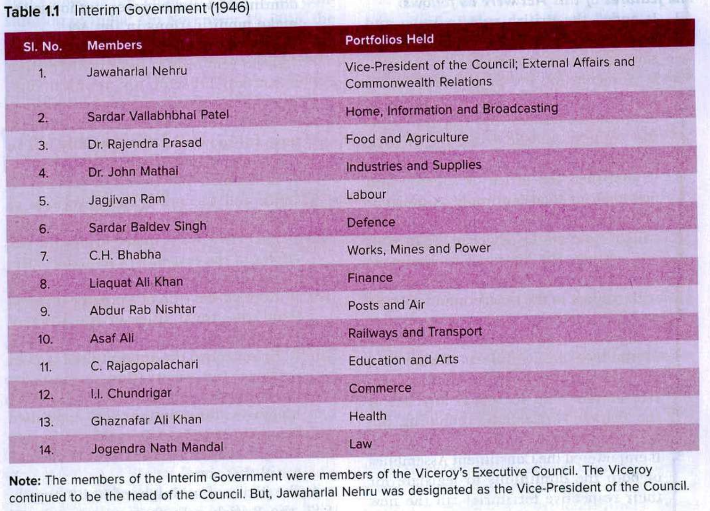
- 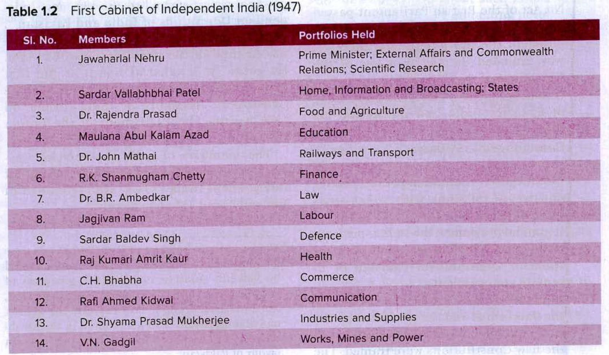
- Chapter 2: Making of the Constitution
- Demand for a Constituent Assembly
- The concept of a Constituent Assembly for India was first proposed in 1934 by M.N. Roy, a pioneer of the communist movement in India.
- In 1935, the Indian National Congress (INC) officially demanded a Constituent Assembly to frame India’s Constitution.
- In 1938, Jawaharlal Nehru, on behalf of the INC, declared that the Constitution of free India must be framed without external interference by a Constituent Assembly elected on the basis of adult franchise. This stance was reaffirmed by an INC resolution in 1939.
- The British Government accepted the demand in principle through the ‘August Offer’ of 1940.
- In 1942, Sir Stafford Cripps, a British Cabinet member, arrived in India with a draft proposal for an independent Constitution to be adopted post-World War II. The Cripps Proposals were rejected by the Muslim League, which demanded two autonomous states with separate Constituent Assemblies.
- In 1946, a Cabinet Mission, comprising Lord Pethick-Lawrence, Sir Stafford Cripps, and A.V. Alexander, arrived in India on March 24 and published its plan on May 16. While rejecting the idea of two Constituent Assemblies, it proposed a scheme for a single Constituent Assembly that largely satisfied the Muslim League.
- The Constituent Assembly was not a government — it was a special body of representatives formed for only one purpose: To draft and adopt the Constitution of India.
- It had no power to govern the country permanently — it was a temporary law-making body just to frame the Constitution.
- Between 1947 and 1950, the Constituent Assembly also acted as India’s interim legislature (since there was no Parliament yet).
- Composition of the Constituent Assembly
- Overview
- The Constituent Assembly was constituted in November 1946 under the Cabinet Mission Plan.
- Features of the Scheme
- 1. The total strength of the Constituent Assembly was set at 389 members, with 296 seats allotted to British India and 93 to princely states. Of the 296 British India seats, 292 were drawn from eleven governors’ provinces (Madras, Bombay, United Provinces, Bihar, Central Provinces, Orissa, Punjab, North-West Frontier Province, Sindh, Bengal, and Assam) and four from Chief Commissioners’ provinces (Delhi, Ajmer-Merwara, Coorg, and British Baluchistan), one per province.
- What Were Chief Commissioners’ Provinces?
- Chief Commissioners’ Provinces were small provinces in British India that:
- Were directly administered by the central (British Indian) government.
- Did not have their own Governor or legislature.
- Were headed by a Chief Commissioner, who was appointed by and reported to the Governor-General of India.
- Why This System Existed ?
- These regions were too small, sparsely populated, or strategically sensitive to be made full provinces with governors.
- 2. Seats for each province and princely state (or group of small states) were allocated proportionally to their population, roughly one seat per million people.
- 3. Seats for British provinces were divided among three principal communities—Muslims, Sikhs, and General (all except Muslims and Sikhs)—based on their population.
- 4. Community representatives were elected by members of their respective communities in provincial legislative assemblies using proportional representation with a single transferable vote.
- 5. Representatives of princely states were nominated by the heads of the princely states.
- Nature of the Assembly
- The Constituent Assembly was a partly elected and partly nominated body, with members indirectly elected by provincial assemblies, which were themselves elected on a limited franchise under the Government of India Act of 1935, based on tax, property, and other qualifications.
- Election Results
- Elections for the 296 British India seats were held in July–August 1946. The INC won 208 seats, the Muslim League 73 seats, and small groups and independents secured the remaining 15 seats.
- The 93 princely state seats remained unfilled as they initially stayed away from the Assembly.
- Why?
- Not bound by British Parliament's Decision
- The Indian Independence Act, 1947, passed by the British Parliament, declared that princely states would become independent after 15 August 1947.
- They were not legally bound to join either India or Pakistan.
- Therefore, they were not obligated to send representatives to the Constituent Assembly formed in 1946.
- Desire for Independence
- They feared losing their autonomy and royal privileges under a democratic Constitution.
- Suspicion of the Assembly’s Motives
- They feared the Assembly would abolish their powers and merge them forcefully into a unified India.
- Uncertainty and Delay in Accession
- Many princely states were undecided or negotiating terms of accession with either India or Pakistan.
- When did they join?
- After India’s independence in August 1947, Sardar Vallabhbhai Patel and VP Menon led a strong campaign to persuade and pressure the princely states to join the Indian Union.
- Once they joined, their nominees were added to the Constituent Assembly.
- Representation
- Despite not being directly elected on universal adult franchise, the Assembly included representatives from diverse sections of Indian society—Hindus, Muslims, Sikhs, Parsis, Anglo-Indians, Indian Christians, Scheduled Castes, Scheduled Tribes, and women from these groups. It featured prominent personalities of the time, except Mahatma Gandhi.
- Tables
- Details of seat allocation, election results, community-wise representation, and women members are provided in:
- 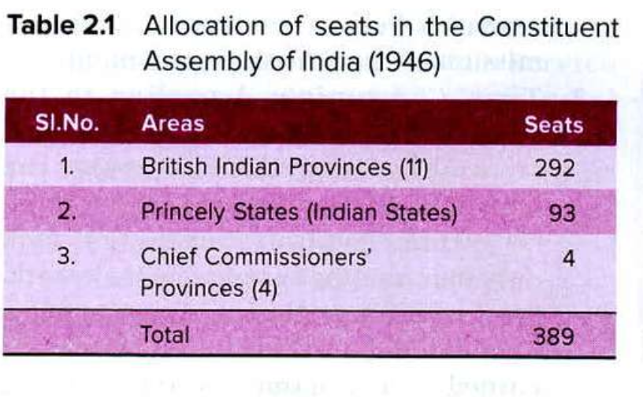
- 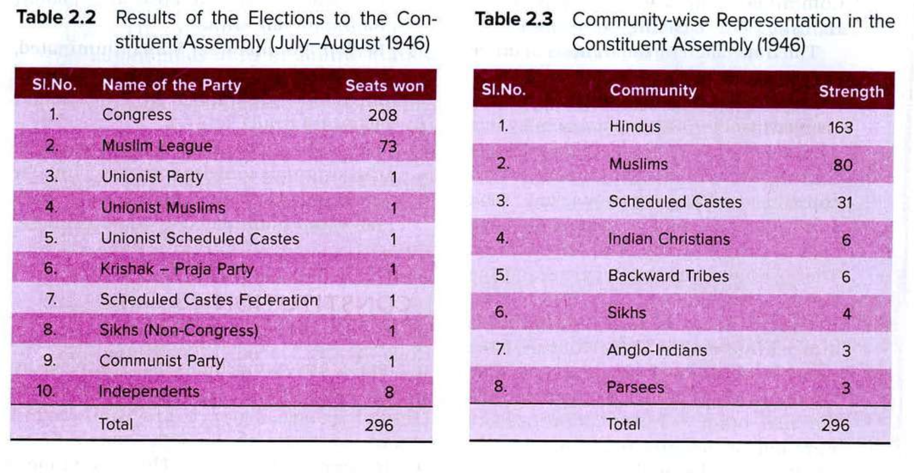
- 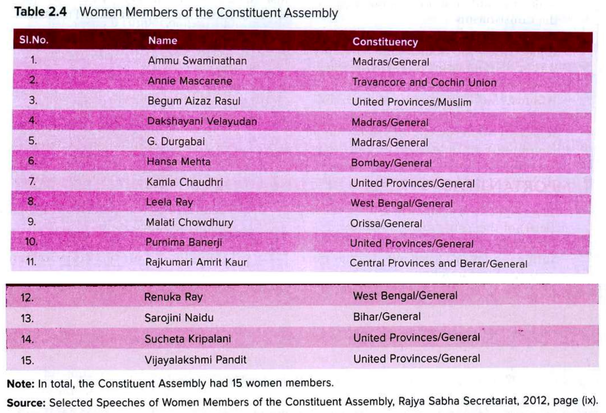
- Working of the Constituent Assembly
- Initial Meetings
- The Constituent Assembly held its first meeting on December 9, 1946, attended by 207 members due to a Muslim League boycott demanding a separate Pakistan. Dr. Sachchidananda Sinha, the oldest member, was elected temporary Chairman, following French practice.
- On December 11, 1946, Dr. Rajendra Prasad was elected permanent Chairman (President). On January 25, 1947, H.C. Mukherjee was elected Vice-President, and on July 16, 1947, V.T. Krishnamachari was elected as the second Vice-President.
- Objectives Resolution
- On December 13, 1946, Jawaharlal Nehru moved the ‘Objectives Resolution’, outlining the constitutional philosophy. It was unanimously adopted on January 22, 1947, and its modified version forms the Preamble of the Constitution. The resolution declared:
- 1. India as an Independent Sovereign [supreme ruler] Republic with a Constitution for its governance.
- 2. A Union comprising British India, Indian States, and other willing territories.
- 3. Territories as autonomous units with residuary powers, except those vested in the Union.
- 4. All power and authority derived from the people.
- 5. Justice (social, economic, political), equality, and freedoms (thought, expression, belief, worship, etc.), subject to law and public morality.
- 6. Safeguards for minorities, backward and tribal areas, and depressed classes.
- 7. Territorial integrity and sovereign rights per international law.
- 8. India’s contribution to world peace and mankind’s welfare.
- Changes by the Indian Independence Act
- On April 28, 1947, representatives from six princely states (Baroda, Bikaner, Jaipur, Patiala, Rewa, Udaipur) joined the Assembly. Following the Mountbatten Plan of June 3, 1947, for partition, most other princely state representatives and Muslim League members from the Indian Dominion joined.
- The Indian Independence Act of 1947 made three changes:
- 1. Declared the Assembly a fully sovereign body, empowered to frame any Constitution and abrogate [repeal | revoke] British laws related to India.
- 2. Made the Assembly a legislative body (Dominion Legislature), performing constitution-making and law-making on separate days, chaired by Dr. Rajendra Prasad for constitutional work and G.V. Mavalankar for legislative work (first meeting as Dominion Legislature on November 17, 1947). This dual role continued until November 26, 1949.
- 3. Reduced the Assembly’s strength to 299 (from 389) after Muslim League members from Pakistan areas (West Punjab, East Bengal, North-West Frontier Province, Sindh, Baluchistan, Sylhet) withdrew. Indian provinces’ seats dropped from 296 to 229, and princely states’ from 93 to 70.
- India was divided into India and Pakistan.
- Hence, the Muslim League members from those regions withdrew from the Indian Constituent Assembly and joined the Pakistan Constituent Assembly.
- The areas that joined Pakistan no longer needed representation in India’s Constitution.
- State-wise membership as of December 31, 1947, is detailed in:
- 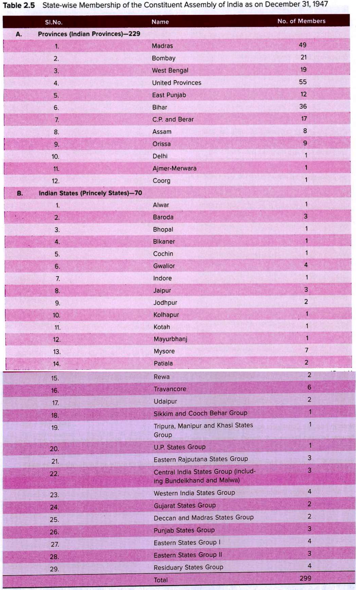
- Other Functions Performed
- Beyond constitution-making and legislation, the Assembly:
- 1. Ratified India’s Commonwealth membership in May 1949.
- 2. Adopted the national flag on July 22, 1947.
- 3. Adopted the national anthem on January 24, 1950.
- 4. Adopted the national song on January 24, 1950.
- 5. Elected Dr. Rajendra Prasad as India’s first President on January 24, 1950.
- Duration and Sessions
- The Assembly held 11 sessions over 2 years, 11 months, and 18 days, studying constitutions of about 60 countries. The Draft Constitution was considered for 114 days, with a total expenditure of ₹64 lakh.
- The final session was on January 24, 1950, but the Assembly continued as the provisional [temporary] parliament from January 26, 1950, until the first elected Parliament formed in May 1952 after the 1951–52 elections.
- Session details are provided in:
- 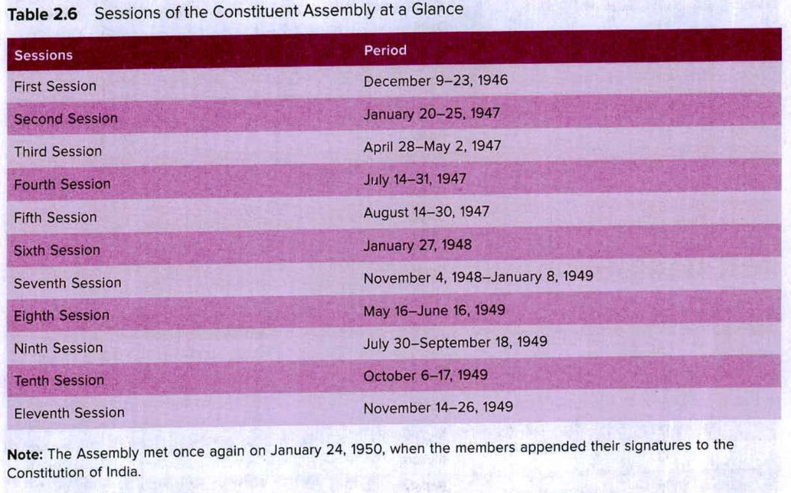
- Committees of the Constituent Assembly
- Overview
- The Assembly appointed several committees, including eight major and several minor ones, to handle constitution-making tasks.
- Major Committees
- 1. Union Powers Committee – Jawaharlal Nehru
- 2. Union Constitution Committee – Jawaharlal Nehru
- 3. Provincial Constitution Committee – Sardar Vallabhbhai Patel
- 4. Drafting Committee – Dr. B.R. Ambedkar
- 5. Advisory Committee on Fundamental Rights, Minorities, and Tribal and Excluded Areas – Sardar Vallabhbhai Patel, with sub-committees:
- (a) Fundamental Rights Sub-Committee – J.B. Kripalani
- (b) Minorities Sub-Committee – H.C. Mukherjee
- (c) North-East Frontier Tribal Areas and Assam Excluded & Partially Excluded Areas Sub-Committee – Gopinath Bardoloi
- (d) Excluded and Partially Excluded Areas (Other than Assam) Sub-Committee – A.V. Thakkar
- (e) North-West Frontier Tribal Areas Sub-Committee – No Chairman (did not function as the area became part of Pakistan post-June 3, 1947; members: Khan Abdul Ghaffar Khan, Khan Abdul Samad Khan, Mehr Chand Khanna).
- 6. Rules of Procedure Committee – Dr. Rajendra Prasad
- 7. States Committee (Negotiating with States) – Jawaharlal Nehru
- 8. Steering Committee – Dr. Rajendra Prasad
- Minor Committees
- 1. Finance and Staff Committee – Dr. Rajendra Prasad
- 2. Credentials Committee – Alladi Krishnaswami Ayyar
- 3. House Committee – B. Pattabhi Sitaramayya
- 4. Order of Business Committee – Dr. K.M. Munshi
- 5. Ad-hoc Committee on the National Flag – Dr. Rajendra Prasad
- 6. Committee on the Functions of the Constituent Assembly – G.V. Mavalankar
- 7. Ad-hoc Committee on the Supreme Court – S. Varadachari (Non-member)
- 8. Committee on Chief Commissioners’ Provinces – B. Pattabhi Sitaramayya
- 9. Expert Committee on Financial Provisions – Nalini Ranjan Sarkar (Non-member)
- 10. Linguistic Provinces Commission – S.K. Dar (Non-member)
- 11. Special Committee to Examine the Draft Constitution – Jawaharlal Nehru
- 12. Press Gallery Committee – Usha Nath Sen
- 13. Ad-hoc Committee on Citizenship – S. Varadachari (Non-member)
- Drafting Committee
- Established on August 29, 1947, as the most critical committee, tasked with preparing the Constitution’s draft. Members:
- 1. Dr. B.R. Ambedkar (Chairman)
- 2. N. Gopalaswami Ayyangar
- 3. Alladi Krishnaswami Ayyar
- 4. Dr. K.M. Munshi
- 5. Syed Mohammad Saadullah
- 6. N. Madhava Rau (replaced B.L. Mitter due to ill-health)
- 7. T.T. Krishnamachari (replaced D.P. Khaitan after his death in 1948)
- The committee published the first draft in February 1948, allowing eight months for public discussion. After incorporating feedback, a second draft was published in October 1948. The committee completed its work in under six months, sitting for 141 days.
- Enactment of the Constitution
- Process
- Dr. B.R. Ambedkar introduced the final draft on November 4, 1948, for the first reading, followed by a five-day general discussion until November 9, 1948.
- The second reading (clause-by-clause) ran from November 15, 1948, to October 17, 1949, with 7,653 amendments proposed and 2,473 discussed.
- The third reading began on November 14, 1949. Dr. Ambedkar moved the motion to pass the Constitution, which was adopted on November 26, 1949, with 284 of 299 members present signing it.
- Details
- The Constitution, as adopted, contained a Preamble, 395 Articles, and 8 Schedules. The Preamble was enacted [make law] after the rest of the Constitution.
- Articles are the main body or sections of the Constitution. Each Article deals with a specific rule, law, or principle.
- They are the core legal framework of India.
- Example:
- Article 14: Right to Equality
- Article 21: Right to Life and Personal Liberty
- Schedules are lists or tables attached at the end of the Constitution. They provide extra information, like categories, names, and procedures related to the Articles.
- Think of them like appendices in a book — they support the main content.
- Example:
- 1st schedule: Names of States and Union Territories
- 2nd schedule: Salaries of President, Governers, Judges, etc.
- Dr. Ambedkar, as Law Minister, played a pivotal role, earning recognition as the ‘Father’ and ‘Chief Architect’ of the Constitution for his logical and persuasive arguments.
- Since November 19, 2015, November 26 is celebrated as “Constitution Day” (Samvidhan Divas) to promote constitutional values.
- Enforcement of the Constitution
- Timeline
- Provisions related to citizenship, elections, provisional parliament, temporary/transitional provisions, and short title (Articles 5, 6, 7, 8, 9, 60, 324, 366, 367, 379, 380, 388, 391, 392, 393) came into force on November 26, 1949.
- The remaining provisions took effect on January 26, 1950, known as the ‘date of commencement’ [beginning of something] and celebrated as Republic Day.
- Significance
- January 26 was chosen due to its historical importance, marking Purna Swaraj Day in 1930, following the INC’s Lahore Session resolution in December 1929.
- Repeals
- The Indian Independence Act of 1947 and the Government of India Act of 1935 (with amendments) were repealed. The Abolition of Privy Council Jurisdiction Act (1949) continued.
- The Abolition of Privy Council Jurisdiction Act, 1949 was a short but important Indian law that officially ended the right to appeal from Indian courts to the Privy Council in London.
- Article Details
- Relevant articles are listed in:
- 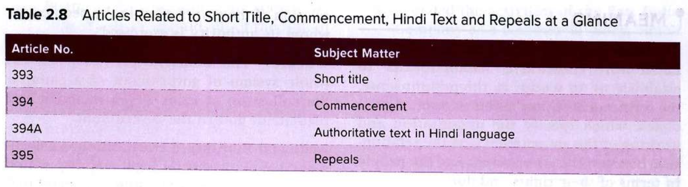
- Experts Committee of the Congress
- Overview
- On July 8, 1946, while Constituent Assembly elections were ongoing, the INC formed an Experts Committee to prepare material for the Assembly. Members:
- 1. Jawaharlal Nehru (Chairman)
- 2. M. Asaf Ali
- 3. K.M. Munshi
- 4. N. Gopalaswami Ayyangar
- 5. K.T. Shah
- 6. D.R. Gadgil
- 7. Humayun Kabir
- 8. K. Santhanam
- Krishna Kripalani (co-opted as member and convener).
- Meetings and Role
- The committee held two sittings: July 20–22, 1946, in New Delhi, and August 15–17, 1946, in Bombay.
- It discussed the Assembly’s procedure, committee appointments, and drafted an objectives resolution. Granville Austin noted that this committee set India on the path to its Constitution, making key suggestions within the Cabinet Mission framework.
- Criticism of the Constituent Assembly
- Grounds of Criticism
- 1. Using only English:
- India is one of the most linguistically diverse countries in the world, with over 1,600 mother tongues and 22 official languages recognized in the 8th Schedule of the Constitution (originally 14 in 1950).
- Yet, despite this vast linguistic richness, the Constituent Assembly prepared and adopted the Constitution only in English.
- English was understood only by a small elite section of the population. The use of English made the Constitution seem foreign and disconnected from the Indian masses, especially in rural areas.
- 2. Not a Representative Body:
- Critics argued the Assembly was not representative as members were not directly elected on universal adult franchise but indirectly by provincial assemblies.
- There was low participation of women, Dalits, Adivasis, and rural representatives.
- 3. Not a Sovereign Body:
- Critics claimed it lacked sovereignty, being created by British proposals and operating with British permission.
- 4. Time Consuming:
- The Assembly took nearly three years, criticized as excessive compared to the U.S. Constitution’s four months. Naziruddin Ahmed mockingly called the Drafting Committee a “Drifting Committee”. Time taken by other constitutions is in:
- 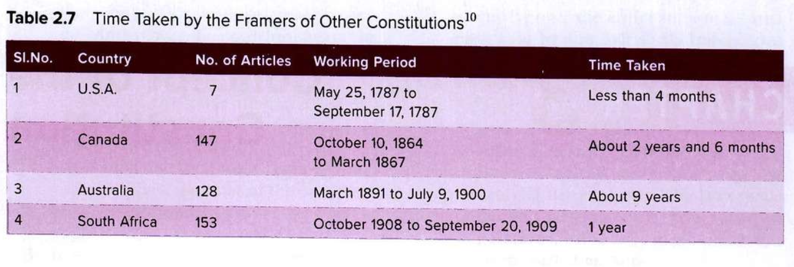
- 5. Dominated by Congress:
- Critics, including Granville Austin, noted Congress dominance, describing the Assembly as a one-party body in a largely one-party country.
- 6. Lawyer-Politician Domination:
- The Assembly was criticized for being dominated by lawyers and politicians, with under-representation of other societal sections, leading to a bulky and complex Constitution.
- 7. Dominated by Hindus:
- Critics like Lord Viscount Simon and Winston Churchill called it a Hindu-dominated body, representing primarily one community.
- 8. Borrowed Content
- The Constitution was heavily influenced by foreign constitutions:
- Parliamentary system from the UK
- Fundamental Rights from the USA
- Directive Principles from Ireland
- Critics argued that it lacked a truly Indian philosophical foundation and was more of a legal collage than a native creation.
- Dr. B.R. Ambedkar himself noted it was framed after 'ransacking all the known Constitutions of the World'
- Constitutional debate reference
- Important Facts
- 1. The elephant was the symbol (seal) of the Constituent Assembly.
- 2. Sir B.N. Rau was the constitutional advisor (Legal Advisor).
- 3. H.V.R. Iyengar was the Secretary to the Assembly.
- 4. S.N. Mukherjee was the chief draftsman.
- 5. Prem Behari Narain Raizada was the calligrapher, handwriting the original Constitution in italic style.
- 6. Artists from Shantiniketan, including Nandalal Bose and Beohar Rammanohar Sinha, beautified the original Constitution.
- 7. Beohar Rammanohar Sinha illuminated the Preamble.
- 8. Vasant Krishan Vaidya calligraphed the Hindi version, decorated by Nandalal Bose.
- Hindi Text of the Constitution
- Initially, the Constitution had no provision for an authoritative [reliable | trustworthy] Hindi text. The 58th Constitutional Amendment Act of 1987 added Article 394-A in Part XXII, providing:
- 1. The President shall publish a Hindi translation of the Constitution, incorporating all amendments and adapting language, style, and terminology to align with Central Acts in Hindi; and a Hindi translation of every amendment.
- 2. The Hindi translation shall have the same meaning as the English original, with the President revising it if difficulties arise.
- 3. The Hindi translation is deemed the authoritative text in Hindi for all purposes.
- Chapter 3: Concept of the Constitution
- Meaning
- Overview
- The term 'constitution' originates from the Latin word constituere, meaning 'to establish' or 'to set up'.
- In its modern context, a constitution refers to a set of fundamental principles that define the organization and functioning of the government, as well as the relationship between the government and the people, outlining their rights and duties.
- A constitution is described by various terms, such as the 'fundamental law of the land', 'supreme law of the state', 'basic law of the country', 'instrument of the government', 'rules of the state', 'basic structure of the polity', and 'grundnorm of the country' [basic norm].
- Definitions by Scholars
- Gilchrist: "The constitution consists of that body of rules or laws which determine the organization of government, the distribution of powers to the various organs of government, and the general principles on which these powers are to be exercised."
- Citation: Gilchrist, R.N., Principles of Political Science, 1961, p. 211.
- Gettell: "The fundamental principles that determine the form of a state are called its constitution. These include the method by which the state is organised, the distribution of its sovereign powers among the various organs of government, the scope and manner of exercise of governmental functions, and the relation of the government to the people over whom its authority is exercised."
- Citation: Gettell, R.G., Political Science, 1956, p. 244.
- Wheare: "The Constitution describes the whole system of government of a country, the collection of rules which establish and regulate or govern the government."
- Citation: Wheare, K.C., Modern Constitutions, 1956, p. 1.
- Wade and Phillips: "A constitution is a document having a special legal sanctity which sets out the framework and the principal functions of the organs of the Government of a State and declares the principles governing the operation of those organs."
- Citation: Wade and Phillips, Constitutional Law, 1965, p. 1.
- Functions
- Constitutional scholar Elliot Bulmer comprehensively identifies the functions (or purposes) of a constitution, which include:
- 1. Declaring and defining the boundaries of the political community.
- 2. Declaring and defining the nature and authority of the political community.
- 3. Expressing the identity and values of a national community.
- 4. Declaring and defining the rights and duties of citizens.
- 5. Establishing and regulating the political institutions of the community.
- 6. Dividing or sharing power between different layers of government or sub-state communities.
- 7. Declaring the official religious identity of the state and demarcating relationships between sacred and secular authorities.
- 8. Committing states to particular social, economic, or developmental goals.
- Citation: Elliot Bulmer, What is a Constitution? Principles and Concepts, International IDEA Constitution-Building Primer 1, Second Edition, 2017, International Institute for Democracy and Electoral Assistance, pp. 6-7.
- Qualities
- A good constitution possesses certain qualities or characteristics, which are essential for its effectiveness. These include:
- 1. Brevity [Concise and exact use of words]:
- A constitution should be concise, avoiding unnecessary provisions. Excessive detail can lead to confusion in interpreting its clauses.
- 2. Clarity:
- Provisions should be expressed in clear, understandable terms to enhance comprehension [understanding] and reduce ambiguity [inexactness | the quality of being open to more than one interpretation].
- 3. Definiteness:
- Provisions should have precise meanings to minimize judicial discretion and ensure consistent interpretation.
- 4. Comprehensiveness:
- A constitution should thoroughly outline the government's powers and the citizens' rights and duties, reducing scope for disputes and litigation.
- 5. Suitability:
- It must reflect the historical, socio-cultural, economic, and political conditions of the nation, aligning with the people's needs and aspirations.
- 6. Stability:
- A constitution should promote political stability by resisting easy amendments, fostering citizens' respect and obedience.
- 7. Adaptability:
- It should be dynamic, capable of adapting to changing circumstances, making it a living document.
- Classification
- Constitutions are classified into various types based on different criteria, as follows:
- 1. Evolved and Enacted
- Based on their origin, constitutions are classified as evolved or enacted.
- An evolved constitution develops gradually through conventions, practices, principles, and judicial decisions. It is also called a cumulative [increasing | accumulating] constitution. The British Constitution is a prime example.
- An enacted constitution is deliberately created by a constituent assembly, constitutional council, or promulgated [promote] by a king or parliament. It is documented in a book or series of documents and is known as a conventional constitution. The American and Indian Constitutions are examples.
- 2. Written and Unwritten
- Based on the incorporation of provisions, constitutions are classified as written or unwritten.
- A written constitution is documented in a book, document, or series of documents, consciously formulated by a constituent assembly or constitutional convention. It is also known as a documentary or codified constitution. Examples include the constitutions of the USA, Canada, Japan, France, and India.
- An unwritten constitution lacks a single documented form, existing as conventions, practices, principles, charters, statutes, and judicial decisions. It evolves historically and is known as a non-documentary or uncodified constitution. The constitutions of the UK, New Zealand, and Israel are examples.
- The distinction between written and unwritten constitutions largely aligns with that between enacted and evolved constitutions.
- 3. Rigid and Flexible
- Based on amendment procedures, constitutions are classified as rigid or flexible, a classification introduced by Lord James Bryce.
- Citation: Bryce, J., Studies in History and Jurisprudence, Volume 1, p. 127.
- A rigid constitution requires a special procedure for amendments, distinct from ordinary laws, emphasizing the supremacy of constitutional law. Examples include the constitutions of the USA, Australia, and Switzerland.
- USA: Requires two-thirds majority in both Houses and ratification by ¾ of the states.
- Australia, Switzerland: Also require special procedures like national referendums.
- A flexible constitution can be amended like ordinary laws, without a special procedure. It is also called an elastic constitution. The constitutions of the UK and New Zealand are examples.
- United Kingdom: Parliament can amend any part of the constitution through a simple majority.
- New Zealand: Also follows a similar model with a mostly unwritten and flexible constitution.
- The Constitution of India is a synthesis of both rigid and flexible elements.
- Flexible:
- Some provisions (like changing names or boundaries of states) can be amended by simple majority in Parliament.
- Rigid:
- Other important provisions (like federal structure, Fundamental Rights, elections) require:
- Two-thirds majority in Parliament, plus
- Ratification [formal consent] by at least half of the states.
- 4. Federal and Unitary
- Based on the relationship between national and regional governments, constitutions are classified as federal or unitary.
- A federal constitution divides power between national and regional governments, allowing independent operation within their jurisdictions. Examples include the USA, Switzerland, Australia, Canada, Russia, and Brazil.
- A unitary constitution centralizes power in the national government, with regional governments acting as subordinates, exercising delegated powers. Examples include the UK, France, Japan, China, Italy, and Norway.
- The Constitution of India combines federal and unitary features, described as quasi-federal by K.C. Wheare.
- Meaning federal in structure but unitary in spirit.
- 5. Procedural and Prescriptive
- According to Elliot Bulmer, constitutions can be procedural or prescriptive, based on their nature and purpose.
- Citation: Elliot Bulmer, What is a Constitution? Principles and Concepts, International IDEA Constitution-Building Primer 1, Second Edition, 2017, pp. 9-10.
- A procedural constitution defines the legal and political structures of public institutions and sets legal limits on government power to protect democratic processes and fundamental human rights.
- A procedural constitution focuses on how the government functions — the rules, structures, and processes.
- A prescriptive constitution, in addition to outlining government functions, establishes a consensus on societal goals that public authorities must pursue.
- A prescriptive constitution goes beyond structure and lays down values, rights, and goals.
- It defines what the government must achieve or uphold — like justice, equality, liberty, etc.
- Constitutionalism and Constitutional Government
- Meaning
- A Constitution is a written document while constitutionalism is a philosophy or principle that says:
- The government must operate within the limits of the Constitution and must respect individual rights.
- Government should be limited, not absolute
- Rule of law must prevail
- Power must be controlled through checks and balances
- Example of North Korea
- North Korea’s Constitution may appear to outline rights and structures, but:
- All power is concentrated in one leader — no real checks and balances.
- Courts are not independent.
- Elections are not free or fair.
- Fundamental rights (like freedom of speech, religion, press, movement) are not actually protected.
- The Constitution is used more as a tool to justify the regime, not to limit it.
- While closely related, the concepts of constitution and constitutionalism differ in key ways:
- 1. A country may have a constitution but not constitutionalism. For example, a dictatorship with a constitution based on the dictator's will lacks constitutionalism.
- Citation: Jain, M.P., Indian Constitutional Law, Eighth Edition, Lexis Nexis, Gurgaon, 2018, p. 6.
- 2. Constitutionalism recognizes the need for government power but insists on limitations to prevent authoritarianism. Only a constitution that restricts governmental power embodies constitutionalism.
- Citation: Ibid.
- 3. Constitutionalism envisions a polity governed by a constitution that ensures limited government and the rule of law, opposing arbitrary, despotic, or totalitarian rule. Constitutional government is inherently democratic, and arbitrary power negates constitutionalism.
- Citation: Kashyap, Dr. Subhash C., Constitutional Law of India, Second Edition, Volume 1, Universal Law Publishing, Gurgaon, 2015, p. 7.
- 4. Constitutionalism seeks a political order with limited government power, synonymous with a civilized government. The justification for a constitution lies in maintaining a limited government accountable to laws and rules.
- Citation: Johari, J.C., Comparative Politics, Fourth Edition, Sterling Publishers Private Limited, New Delhi, 2011, p. 217.
- Definitions
- Friedrich: "Constitutionalism provides a system of effective restraints upon governmental action. It is a body of rules ensuring fair play, thus rendering the government responsible."
- Citation: Friedrich, Carl J., Constitutional Government and Democracy, Oxford and IBH, Calcutta, 1964, p. 25.
- Roucek: "Constitutionalism means essentially limited government. It is the antithesis of government by the unrestrained will of rulers. Regardless of the actual form of effectiveness of restraints, it assumes limitations on government as opposed to arbitrary government."
- Citation: Roucek, J.S. and Others, Introduction to Political Science, 1954, p. 981.
- Wheare: "Constitutional government means something more than a government according to the terms of a constitution. It means government according to rule as opposed to arbitrary government; it means government limited by the terms of a constitution, not government limited only by the desires and capacities of those who exercise power."
- Citation: Wheare, K.C., Modern Constitutions, University Press, London, 1956, p. 137.
- Ybema: "A form of government can only be classified as constitutional when the rulers are subject to a body of rules and principles, which limit the exercise of their power. Constitutional government is the antithesis of arbitrary rule."
- Citation: Ybema, S.P., Constitutionalism and Civil Liberties, Leiden University Press, Leiden, 1973, p. 1.
- Elements
- Constitutional scholar Louis Henkin identifies eight elements (features or principles) of constitutionalism:
- 1. Popular sovereignty (consent of popular majority)
- 2. Rule of law
- 3. Democratic government (responsible and accountable government)
- 4. Separation of powers (checks and balances)
- 5. An independent judiciary
- 6. Civilian control of the military
- 7. Police governed by law and judicial control
- 8. Respect for individual rights
- Citation: Henkin, Louis, A New Birth of Constitutionalism: Genetic Influences and Genetic Defects, Chapter 2 in Constitutionalism, Identity, Difference and Legitimacy: Theoretical Perspectives, Edited by Michel Rosenfeld, Duke University Press, Durham, 1994, pp. 39-54.
- Chapter 4: Salient [important] Features of the Constitution
- Overview
- The Indian Constitution is unique in its contents and spirit, distinguished by several salient features that set it apart from other constitutions worldwide, despite borrowing from various global constitutions.
- Many original features of the Constitution (as adopted in 1949) have changed due to amendments, notably the 7th, 42nd, 44th, 73rd, 74th, 97th, and 101st Amendments. The 42nd Amendment Act (1976), known as the 'Mini-Constitution', introduced extensive changes.
- In the Kesavananda Bharati case (Kesavananda Bharati vs. State of Kerala, 1973), the Supreme Court ruled that Parliament’s constituent power under Article 368 cannot alter the 'basic structure' of the Constitution.
- Salient Features of the Constitution
- The salient features of the Constitution, as it stands today, are as follows:
- 1. Lengthiest Written Constitution
- Constitutions are classified as written (e.g., American Constitution) or unwritten (e.g., British Constitution). The Indian Constitution is the lengthiest written constitution globally, characterized as comprehensive, elaborate, and detailed.
- Originally (1949), it contained a Preamble, 395 Articles (in 22 Parts), and 8 Schedules. Presently, it includes a Preamble, about 470 Articles (in 25 Parts), and 12 Schedules. Amendments since 1951 have deleted about 20 Articles and Part VII, adding about 95 Articles, four Parts (IVA, IXA, IXB, XIVA), and four Schedules (9, 10, 11, 12).
- Comparatively, the American Constitution had 7 Articles, Australian 128, Chinese 138, and Canadian 147.
- The Parts, Important Articles, and Schedules are detailed in:
- 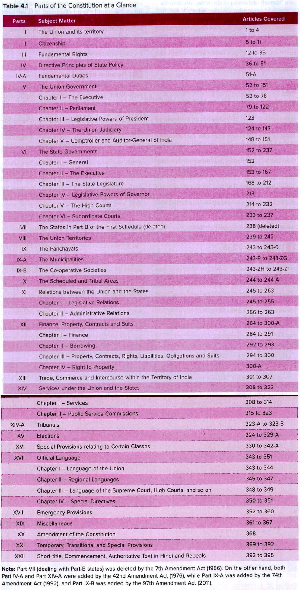
- 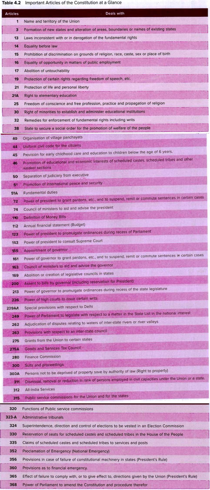
- 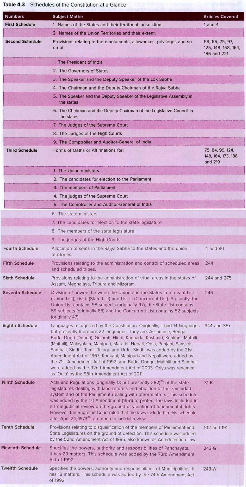
- Four factors contributed to its size:
- (a) Geographical factors, such as the country’s vastness and diversity.
- (b) Historical factors, notably the influence of the bulky Government of India Act, 1935.
- (c) A single Constitution for both Centre and states.
- (d) Dominance of legal luminaries [guiding light | leader | expert ] in the Constituent Assembly.
- The Constitution includes fundamental governance principles and detailed administrative provisions, unlike other democracies where such matters are left to ordinary legislation or conventions.
- Until 2019, Jammu and Kashmir had its own constitution under Article 370, granting special status. This was abolished by the Constitution (Application to Jammu and Kashmir) Order, 2019, superseding the 1954 order, extending all constitutional provisions to Jammu and Kashmir. The Jammu and Kashmir Reorganisation Act, 2019, bifurcated it into two Union territories: Jammu & Kashmir and Ladakh.
- 2. Drawn from Various Sources
- The Constitution borrows extensively from other constitutions and the Government of India Act, 1935, with about 250 provisions from the latter included.
- Dr. B.R. Ambedkar noted it was framed after 'ransacking [plundering | stealing] all the known Constitutions of the World' (Constituent Assembly Debates, Volume VII, pp. 35–38).
- The structural part derives from the Government of India Act, 1935; the philosophical part (Fundamental Rights, Directive Principles) from American and Irish Constitutions; and the political part (Cabinet Government, Executive-Legislature relations) from the British Constitution (P.M. Bakshi, The Constitution of India, Universal, Fifth Edition, 2002, p. 4).
- Other provisions come from Canada, Australia, Germany, Soviet Union (now Russia), France, South Africa, Japan, etc.
- The Government of India Act, 1935, is the most significant source, contributing the Federal Scheme, Judiciary, Governors, Emergency Powers, Public Service Commissions, and administrative details (Brij Kishore Sharma, Introduction to the Constitution of India, Seventh Edition, 2015, p. 42).
- Borrowed features are listed in:
- 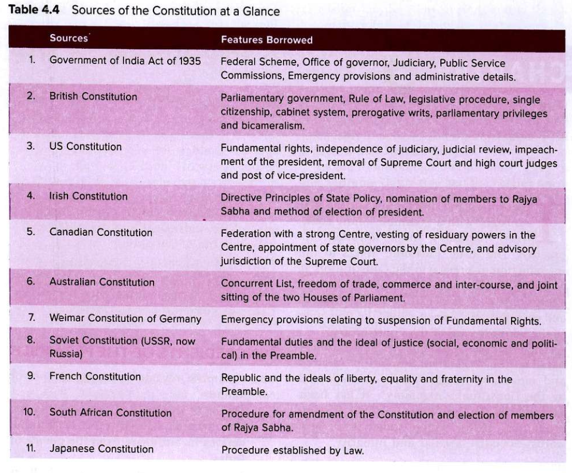
- 3. Blend of Rigidity and Flexibility
- Constitutions are classified as rigid (e.g., American, requiring special amendment procedures) or flexible (e.g., British, amended like ordinary laws). The Indian Constitution is a synthesis of both.
- Article 368 provides two amendment types:
- (a) Some provisions require a special majority (two-thirds of members present and voting in each House, plus a majority of total membership).
- (b) Others require a special majority plus ratification by half of the states.
- Certain provisions can be amended by a simple majority, not falling under Article 368.
- 4. Federal System with Unitary Bias
- The Constitution establishes a federal system with features like two governments, division of powers, written Constitution, supremacy of Constitution, rigidity, independent judiciary, and bicameralism.
- It also includes unitary features: strong Centre, single Constitution, single citizenship, flexibility, integrated judiciary, Centre-appointed governors, All-India Services, emergency provisions, etc.
- The term 'Federation' is absent; Article 1 describes India as a 'Union of States', implying no state agreement or right to secede.
- Scholars describe it as 'federal in form but unitary in spirit', 'quasi-federal' (K.C. Wheare), 'bargaining federalism' (Morris Jones), 'co-operative federalism' (Granville Austin), or 'federation with a centralising tendency' (Ivor Jennings).
- 5. Parliamentary Form of Government
- The Constitution adopts the British Parliamentary System over the American Presidential System, emphasizing cooperation between legislative and executive organs, unlike the presidential system’s separation of powers.
- Presidential vs parliamentary system
- | Feature | Presidential System | Parliamentary System |
|---|---|---|
| Separation of Powers | Strict separation between Executive and Legislature. The US President is directly elected by the people (via Electoral College), not by the Legislature. | Executive is part of the Legislature |
| Head of State and Government | Same person (President) | Separate: President (Head of State) and Prime Minister (Head of Government) |
| Election of Executive | Directly or indirectly elected separately by people/electoral college | Prime Minister is elected by the Legislature |
| Tenure | Fixed term (e.g., 4 or 5 years) | Not fixed – based on majority support in Legislature |
| Accountability | President is not directly accountable to Legislature | Executive is collectively responsible to the Legislature |
| Examples | USA, Brazil, Indonesia | India, UK, Canada, Australia |
| Risk of Power Concentration | High – power concentrated in one individual | Low – power is shared and monitored by Legislature |
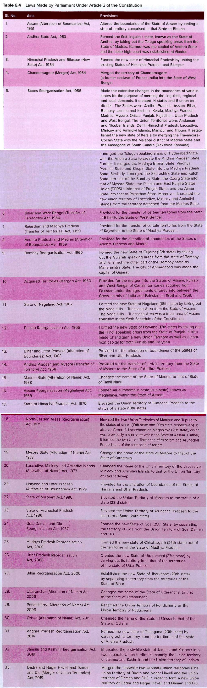
- Exchange of Territories with Bangladesh - The 100th Constitutional Amendment Act (2015) facilitated India’s acquisition and transfer of territories with Bangladesh per a 1974 agreement and 2011 protocol. India transferred 111 enclaves to Bangladesh, receiving 51 enclaves, alongside adverse possessions and demarcating a 6.1 km border stretch. It modified the First Schedule for Assam, West Bengal, Meghalaya, and Tripura. - Background: - India and Bangladesh share a 4,096.7 km border, set by the 1947 Radcliffe Award. Disputes led to the 1950 Bagge Award and 1958 Nehru-Noon Agreement. The Berubari Union division required the 9th Amendment (1960), but litigation prevented notification. - The 1974 Land Boundary Agreement addressed demarcation, adverse possessions, and enclaves, ratified via the 2011 Protocol with Assam, Meghalaya, Tripura, and West Bengal’s concurrence (Ministry of Law and Justice, Government of India). - Evolution of States and Union Territories - Integration of Princely States - At independence, India comprised British provinces and 552 princely states under native rulers but British paramountcy. The Indian Independence Act (1947) created India and Pakistan, giving princely states three options: join India, join Pakistan, or remain independent. Of 552, 549 joined India; Hyderabad, Junagarh, and Kashmir initially refused but were integrated via police action, referendum, and Instrument of Accession, respectively. - In 1950, the Constitution classified states and territories into four categories (29 total): Part A (9 former British provinces), Part B (9 princely states with legislatures), Part C (10 centrally administered states), and Part D (Andaman and Nicobar Islands). See: -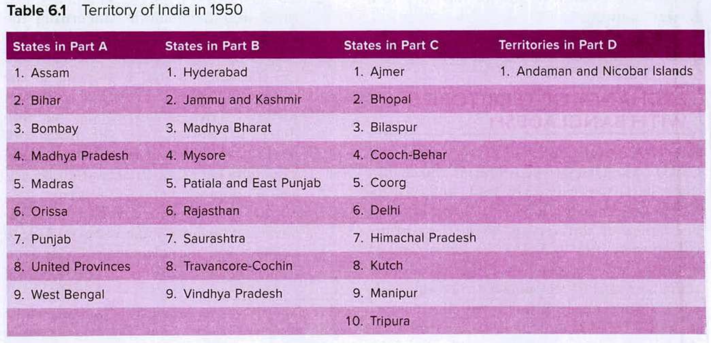
- Dhar Commission and JVP Committee - Princely state integration was ad hoc, sparking demands, especially in South India, for linguistic reorganization. In June 1948, the Linguistic Provinces Commission, chaired by S.K. Dhar, recommended administrative convenience over language (December 1948 report), causing resentment. - In December 1948, Congress formed the JVP Committee (Jawaharlal Nehru, Vallabhbhai Patel, Pattabhi Sitaramayya) without a chairman. Its April 1949 report rejected linguistic reorganization. - In October 1953, prolonged agitation and Potti Sriramulu’s 56-day hunger strike death led to creating Andhra, the first linguistic state, from Telugu-speaking areas of Madras. - Fazl Ali Commission - Andhra’s creation intensified linguistic state demands. In December 1953, the States Reorganisation Commission, chaired by Fazl Ali with K.M. Panikkar and H.N. Kunzru, was formed. Its September 1955 report accepted language as a basis but rejected 'one language-one state', prioritizing India’s unity. Factors considered: - (a) Preserving national unity and security. - (b) Linguistic and cultural homogeneity. - (c) Financial, economic, and administrative considerations. - (d) Welfare of state and nation. - It proposed abolishing the four-fold classification, creating 16 states and 3 centrally administered territories. The States Reorganisation Act (1956) and 7th Constitutional Amendment Act (1956) implemented this, abolishing Part A, B, and C distinctions, creating 14 states and 6 union territories on November 1, 1956. See: -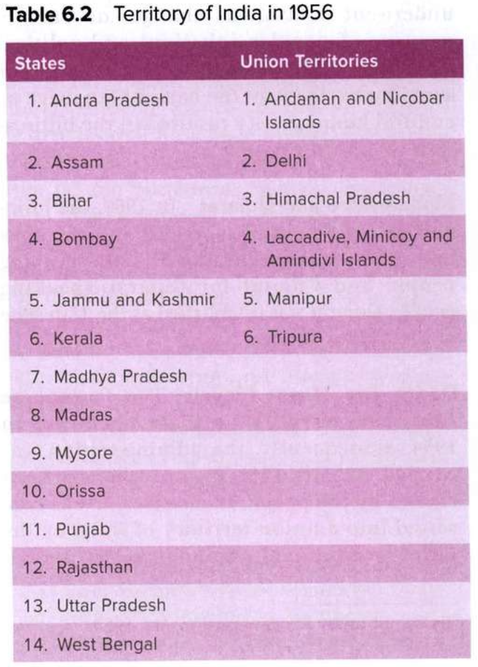
- Key changes: Kerala formed by merging Travancore-Cochin, Malabar, and Kasaragod; Andhra Pradesh expanded with Hyderabad’s Telugu areas; Madhya Bharat, Vindhya Pradesh, and Bhopal merged into Madhya Pradesh; Saurashtra and Kutch into Bombay; Coorg into Mysore; PEPSU into Punjab; Ajmer into Rajasthan; Laccadive, Minicoy, and Amindivi Islands created from Madras. - New States and Union Territories Created After 1956 - Post-1956, India’s political map changed due to linguistic and cultural demands: - Maharashtra and Gujarat (1960): Bombay bifurcated into Maharashtra (Marathi-speaking) and Gujarat (Gujarati-speaking, 15th state) (Bombay Reorganisation Act, 1960). - Dadra and Nagar Haveli: Liberated from Portuguese in 1954, became a union territory in 1961 (10th Amendment). Merged with Daman and Diu in 2020 (Dadra and Nagar Haveli and Daman and Diu Merger Act, 2019). - Goa, Daman and Diu: Acquired from Portuguese in 1961, became a union territory in 1962 (12th Amendment). Goa gained statehood in 1987 (25th state); Daman and Diu merged with Dadra and Nagar Haveli in 2020 (Goa, Daman and Diu Reorganisation Act, 1987). - Puducherry: Former French territories (Puducherry, Karaikal, Mahe, Yanam) handed over in 1954, became a union territory in 1962 (14th Amendment). - Nagaland (1963): Formed from Assam’s Naga Hills-Tuensang area (16th state) to address Naga demands (State of Nagaland Act, 1962). - Haryana, Chandigarh, and Himachal Pradesh (1966): Punjab bifurcated into Haryana (17th state, Hindi-speaking) and Punjab (Punjabi-speaking), with Chandigarh as a union territory (Punjab Reorganisation Act, 1966). Himachal Pradesh became a state in 1971 (18th state) (State of Himachal Pradesh Act, 1970). - Manipur, Tripura, and Meghalaya (1972): Manipur (19th state), Tripura (20th state), and Meghalaya (21st state) gained statehood; Mizoram and Arunachal Pradesh became union territories from Assam (North-Eastern Areas Reorganisation Act, 1971). - Sikkim (1975): A princely state until 1947, became India’s protectorate, then an associate state (35th Amendment, 1974). After a 1975 referendum, it became the 22nd state (36th Amendment, 1975). - Mizoram, Arunachal Pradesh, and Goa (1987): Mizoram (23rd state), Arunachal Pradesh (24th state), and Goa (25th state) were formed (State of Mizoram Act, State of Arunachal Pradesh Act, Goa, Daman and Diu Reorganisation Act, 1986–1987). - Chhattisgarh, Uttarakhand, and Jharkhand (2000): Created from Madhya Pradesh (26th state), Uttar Pradesh (27th state), and Bihar (28th state) (Madhya Pradesh, Uttar Pradesh, Bihar Reorganisation Acts, 2000). - Telangana (2014): Carved from Andhra Pradesh (29th state) (Andhra Pradesh Reorganisation Act, 2014). - Jammu and Kashmir and Ladakh (2019): Jammu and Kashmir’s special status under Article 370 was abolished (Constitution Order, 2019). It was bifurcated into two union territories (Jammu and Kashmir Reorganisation Act, 2019). - Current status (28 states, 8 union territories) is listed in: -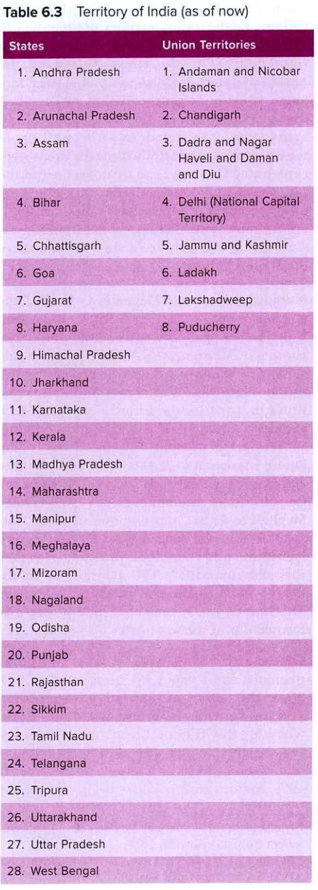
- Change of Names - State/union territory name changes include: - United Provinces to Uttar Pradesh (1950). - Madras to Tamil Nadu (1969, Madras State Alteration of Name Act, 1968). - Mysore to Karnataka (1973, Mysore State Alteration of Name Act, 1973). - Laccadive, Minicoy, and Amindivi Islands to Lakshadweep (1973, Laccadive, Minicoy and Amindivi Islands Alteration of Name Act, 1973). - Delhi to National Capital Territory of Delhi (1992, 69th Amendment, 1991). - Uttaranchal to Uttarakhand (2006, Uttaranchal Alteration of Name Act, 2006). - Pondicherry to Puducherry (2006, Pondicherry Alteration of Name Act, 2006). - Orissa to Odisha (2011, Orissa Alteration of Name Act, 2011). - Laws under Article 3 are detailed in: - - Articles related to Union and its territory are summarized in: -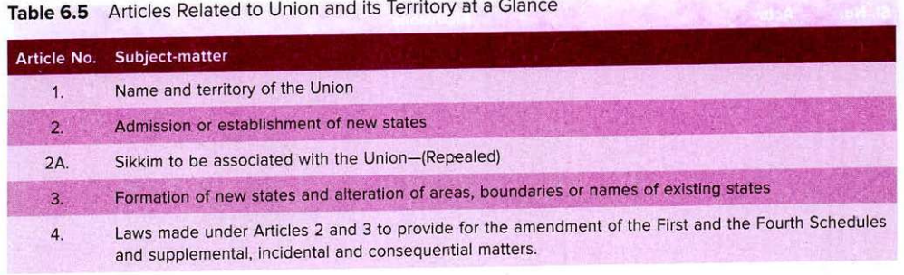
- Chapter 7: Citizenship - Meaning and Significance - Like other modern states, India distinguishes between citizens and aliens. Citizens are full members of the Indian State, owing allegiance to it and enjoying all civil and political rights. Aliens, citizens of other states, do not enjoy these rights fully and are categorized as: - Friendly aliens: Subjects of countries with cordial relations with India. - Enemy aliens: Subjects of countries at war with India, enjoying fewer rights, such as no protection against arrest and detention under Article 22. - The Constitution confers the following rights and privileges exclusively on Indian citizens (denied to aliens): - 1. Right against discrimination on grounds of religion, race, caste, sex, or place of birth (Article 15). - 2. Right to equality of opportunity in public employment (Article 16). - 3. Right to freedom of speech and expression, assembly, association, movement, residence, and profession (Article 19). - 4. Cultural and educational rights (Articles 29 and 30). - 5. Right to vote in elections to the Lok Sabha and state legislative assemblies. - 6. Right to contest for membership of Parliament and state legislatures. - 7. Eligibility to hold certain public offices, including President of India, Vice-President of India, judges of the Supreme Court and high courts, Governors of states, Attorney General of India, and Advocate General of states. - Citizens also owe duties to the Indian State, such as paying taxes, respecting the national flag and anthem, and defending the country. - In India, both citizens by birth and naturalised citizens are eligible for the office of President. In contrast, in the USA, only citizens by birth are eligible for the presidency, excluding naturalised citizens. - Single Citizenship - Despite its federal structure and dual polity (Centre and states), the Indian Constitution provides for a single citizenship—Indian citizenship. Citizens owe allegiance solely to the Union, with no separate state citizenship, unlike federal states like the USA and Australia, which adopt double citizenship. - In the USA, individuals are citizens of both the nation and their state, owing allegiance to both and enjoying dual sets of rights conferred by national and state governments. This can lead to discrimination, as states may favour their citizens in matters like voting, holding public offices, or practicing professions. - India’s single citizenship avoids such discrimination. All citizens, regardless of their state of birth or residence, enjoy the same political and civil rights nationwide, with no discrimination. However, there are exceptions: - 1. Parliament, under Article 16, can prescribe residence within a state or union territory as a condition for certain employments or appointments in that state, union territory, local authority, or other authority. The Public Employment (Requirement as to Residence) Act, 1957, authorized the Government of India to prescribe residential qualifications for non-gazetted posts in Andhra Pradesh, Himachal Pradesh, Manipur, and Tripura. This Act expired in 1974, but provisions remain for Andhra Pradesh and Telangana under Article 371D, inserted by the 32nd Constitutional Amendment Act, 1973, and extended to Telangana by the Andhra Pradesh Reorganisation Act, 2014. - 2. The Constitution, under Article 15, prohibits discrimination based on religion, race, caste, sex, or place of birth, but not residence. States can provide special benefits or preferences to residents in matters outside the scope of constitutional rights, such as educational fee concessions. - 3. Freedom of movement and residence under Article 19 is subject to restrictions protecting scheduled tribes’ interests. Outsiders’ rights to enter, reside, and settle in tribal areas are restricted to preserve the distinctive culture, language, customs, and manners of scheduled tribes and safeguard their traditional vocations and property against exploitation. - 4. Until 2019, the legislature of the erstwhile state of Jammu and Kashmir was empowered under Article 35-A to define permanent residents and confer special rights and privileges regarding employment, immovable property acquisition, settlement, and scholarships. Article 35-A was inserted by the Constitution (Application to Jammu and Kashmir) Order, 1954, under Article 370, which granted special status to Jammu and Kashmir. This status was abolished by the Constitution (Application to Jammu and Kashmir) Order, 2019, superseding the 1954 order. The Jammu and Kashmir Reorganisation Act, 2019, bifurcated the state into two union territories: Jammu and Kashmir and Ladakh. - Like Canada, India’s single citizenship system provides uniform rights (with few exceptions) to promote fraternity, unity, and an integrated Indian nation. Despite this, India has faced communal riots, class conflicts, caste wars, linguistic clashes, and ethnic disputes, indicating that the goal of a united and integrated nation, as envisioned by the Constitution’s framers, remains partially unfulfilled. - Constitutional Provisions - The Constitution addresses citizenship in Articles 5 to 11 under Part II. It lacks permanent or detailed provisions, only identifying persons who became citizens at its commencement on January 26, 1950. It does not address acquisition or loss of citizenship post-commencement, empowering Parliament to enact laws for such matters. Accordingly, Parliament enacted the Citizenship Act, 1955, amended periodically. - The Constitution specifies four categories of persons who became citizens on January 26, 1950: - 1. Persons domiciled in India who fulfilled any one of these conditions: (a) born in India; (b) either parent born in India; or (c) ordinarily resident in India for five years immediately before the Constitution’s commencement. - 2. Persons who migrated to India from Pakistan, if they or their parents or grandparents were born in undivided India and fulfilled one of two conditions: (a) if migrating before July 19, 1948 (when the permit system was introduced), they were ordinarily resident in India since migration; or (b) if migrating on or after July 19, 1948, they were registered as citizens after residing in India for six months preceding the registration application. - 3. Persons who migrated from India to Pakistan after March 1, 1947, but returned for resettlement, becoming citizens after six months’ residence in India preceding their registration application. This applies to migrations between March 1, 1947, and January 26, 1950; post-1950 migrations are governed by the Citizenship Act, 1955. - 4. Persons of Indian origin (born in undivided India, or with parents or grandparents born there) residing outside India, who were registered as citizens by India’s diplomatic or consular representatives in their country of residence, whether before or after the Constitution’s commencement. - These provisions cover: (a) persons domiciled in India; (b) persons migrated from Pakistan; (c) persons migrated to Pakistan but later returned; and (d) persons of Indian origin residing abroad. - Other constitutional provisions on citizenship include: - 1. No person who voluntarily acquires foreign citizenship shall be or be deemed a citizen of India (Article 9). - 2. Every person who is or is deemed a citizen of India shall continue as such, subject to parliamentary laws (Article 10). - 3. Parliament has the power to regulate acquisition, termination, and other citizenship matters (Article 11). - Citizenship Act, 1955 - The Citizenship Act, 1955, governs acquisition and loss of citizenship after the Constitution’s commencement. Originally, it included provisions for Commonwealth Citizenship, repealed by the Citizenship (Amendment) Act, 2003. - Acquisition of Citizenship - The Act prescribes five ways to acquire citizenship: birth, descent, registration, naturalisation, and incorporation of territory, plus special provisions under the Assam Accord and the 2019 Amendment: - 1. By Birth - Persons born in India on or after January 26, 1950, but before July 1, 1987, are citizens by birth, regardless of their parents’ nationality. - Persons born in India on or after July 1, 1987, but before December 3, 2004, are citizens if at least one parent was an Indian citizen at the time of birth. - Persons born in India on or after December 3, 2004, are citizens only if both parents are Indian citizens or one parent is a citizen and the other is not an illegal migrant at the time of birth. - Children of foreign diplomats or enemy aliens in India cannot acquire citizenship by birth. - 2. By Descent - Persons born outside India on or after January 26, 1950, but before December 10, 1992, are citizens if their father was an Indian citizen at the time of birth. - Persons born outside India on or after December 10, 1992, are citizens if either parent was an Indian citizen at the time of birth. - From December 3, 2004, persons born outside India are not citizens by descent unless their birth is registered at an Indian consulate within one year of birth (or later with Central Government permission). Registration requires a parental undertaking that the child does not hold another country’s passport. - A minor citizen by descent who also holds another country’s citizenship ceases to be an Indian citizen unless they renounce the foreign citizenship within six months of attaining full age. - 3. By Registration - The Central Government may register as a citizen any person (not an illegal migrant) in these categories: - (a) Persons of Indian origin ordinarily resident in India for seven years before applying. - (b) Persons of Indian origin resident outside undivided India. - (c) Persons married to Indian citizens and resident in India for seven years before applying. - (d) Minor children of Indian citizens. - (e) Persons of full age whose parents are registered as Indian citizens. - (f) Persons of full age who, or whose parents, were previously citizens of independent India and resident in India for twelve months before applying. - (g) Persons of full age registered as Overseas Citizen of India (OCI) cardholders for five years and resident in India for twelve months before applying. - A person is of Indian origin if they, or either parent, were born in undivided India or a territory that became part of India after August 15, 1947. - All registered citizens must take an oath of allegiance: “I, [name], do solemnly affirm (or swear) that I will bear true faith and allegiance to the Constitution of India as by law established, and that I will faithfully observe the laws of India and fulfill my duties as a citizen of India.” - 4. By Naturalisation - The Central Government may grant a certificate of naturalisation to a person (not an illegal migrant) who meets these qualifications: - (a) Not a citizen of a country that prevents Indians from becoming citizens by naturalisation. - (b) Willing to renounce any existing foreign citizenship if the application is accepted. - (c) Resided in India or served the Government of India for twelve months immediately preceding the application. - (d) During the fourteen years before the twelve-month period, resided in India or served the Government for at least eleven years (reduced to five years for Hindu, Sikh, Buddhist, Jain, Parsi, or Christian persons from Afghanistan, Bangladesh, or Pakistan under the Citizenship (Amendment) Act, 2019). - (e) Of good character. - (f) Has adequate knowledge of a language in the Eighth Schedule (currently 22 languages). - (g) Intends to reside in India or serve under the Government, an international organisation of which India is a member, or a society/company established in India. - The Government may waive conditions for persons with distinguished service in science, philosophy, art, literature, world peace, or human progress. - Naturalised citizens must take the oath of allegiance. - 5. By Incorporation of Territory - If a foreign territory becomes part of India, the Government specifies which residents become Indian citizens from a notified date. For example, the Citizenship (Puducherry) Order, 1962, was issued when Puducherry joined India. - 6. Special Provisions as to Citizenship of Persons Covered by the Assam Accord - The Citizenship (Amendment) Act, 1985, added provisions for the Assam Accord: - (a) Persons of Indian origin who entered Assam before January 1, 1966, from Bangladesh and have been ordinarily resident since entry are deemed citizens from January 1, 1966. - (b) Persons of Indian origin who entered Assam between January 1, 1966, and March 25, 1971, from Bangladesh, are ordinarily resident, and detected as foreigners must register. They are deemed citizens ten years after detection, with citizen-like rights (except voting) during the interim. - 7. Special Provisions as to Citizenship of Persons Migrated from Afghanistan, Bangladesh, or Pakistan - The Citizenship (Amendment) Act, 2019, added provisions for Hindu, Sikh, Buddhist, Jain, Parsi, or Christian migrants from Afghanistan, Bangladesh, or Pakistan who entered India on or before December 31, 2014, and are exempted from penalties under the Passport (Entry into India) Act, 1920, and Foreigners Act, 1946: - (a) The Central Government may grant registration or naturalisation certificates upon fulfilling specified conditions, deeming them citizens from their entry date. - (b) Pending proceedings for illegal migration or citizenship are abated upon citizenship conferment. - (c) These provisions do not apply to Sixth Schedule tribal areas (Assam, Meghalaya, Mizoram, Tripura) or areas under the Inner Line Permit (Bengal Eastern Frontier Regulation, 1873). - Before 2019, such migrants were deemed illegal and ineligible for citizenship. In 2015, the Central Government exempted them from penalties, and in 2016, made them eligible for long-term visas. The 2019 Act, effective January 10, 2020, made them eligible for citizenship. - Loss of Citizenship - The Act prescribes three ways to lose citizenship, whether acquired under the Act or the Constitution: - 1. By Renunciation - A citizen of full age and capacity may declare renunciation of Indian citizenship. Upon registration, they cease to be a citizen. Declarations during wartime are withheld by the Central Government. - A renouncing citizen’s minor children also lose citizenship but may resume it within one year of attaining eighteen. - 2. By Termination - Indian citizenship terminates automatically if a citizen voluntarily acquires another country’s citizenship (consciously, knowingly, without duress). This does not apply during wartime. - 3. By Deprivation - The Central Government may compulsorily terminate citizenship if: - (a) Citizenship was obtained by fraud. - (b) The citizen showed disloyalty to the Constitution. - (c) The citizen unlawfully traded or communicated with an enemy during wartime. - (d) The citizen was imprisoned for two years in any country within five years of registration or naturalisation. - (e) The citizen has been ordinarily resident outside India for seven years continuously, unless they are a student abroad, serve the Government or an international organisation, or annually register at an Indian consulate to retain citizenship. - Overseas Citizenship of India - In September 2000, the Ministry of External Affairs established a High-Level Committee on the Indian Diaspora, chaired by L.M. Singhvi, to study the global Indian diaspora and recommend measures for constructive engagement. The committee’s January 2002 report recommended amending the Citizenship Act, 1955, to grant dual citizenship to Persons of Indian Origin (PIOs) from specified countries. - The Citizenship (Amendment) Act, 2003, introduced Overseas Citizenship of India (OCI) for PIOs from 16 countries (excluding Pakistan and Bangladesh) and repealed Commonwealth Citizenship provisions. - The Citizenship (Amendment) Act, 2005, expanded OCI eligibility to PIOs from all countries (except Pakistan and Bangladesh) if their home countries allow dual citizenship under local laws. However, OCI is not true dual citizenship, as the Constitution prohibits it under Article 9. - The Citizenship (Amendment) Act, 2015, introduced the “Overseas Citizen of India Cardholder” scheme, merging the PIO and OCI card schemes. The PIO scheme (launched August 19, 2002) and OCI scheme (launched December 2, 2005) ran concurrently, causing confusion. The 2015 Act rescinded the PIO scheme on January 9, 2015, deeming existing PIO cardholders as OCI cardholders (Ministry of Home Affairs, Annual Report 2015–16, p. 262). - Provisions under the 2015 Amendment: - 1. Registration of Overseas Citizen of India Cardholder - The Central Government may register as an OCI cardholder: - (a) Persons of full age and capacity who: - (i) Were Indian citizens at or after the Constitution’s commencement (January 26, 1950). - (ii) Were eligible to become Indian citizens on January 26, 1950. - (iii) Belonged to territories that became part of India after August 15, 1947. - (iv) Are children, grandchildren, or great-grandchildren of such citizens. - (b) Minor children of persons in (a). - (c) Minor children with both parents as Indian citizens or one parent a citizen. - (d) Spouses of foreign origin of Indian citizens or OCI cardholders, with marriages registered and subsisting for at least two years before application. - Persons who, or whose parents, grandparents, or great-grandparents, are or were citizens of Pakistan, Bangladesh, or other specified countries are ineligible. - 2. Conferment of Rights on Overseas Citizen of India Cardholder - OCI cardholders are entitled to rights specified by the Central Government, detailed in: -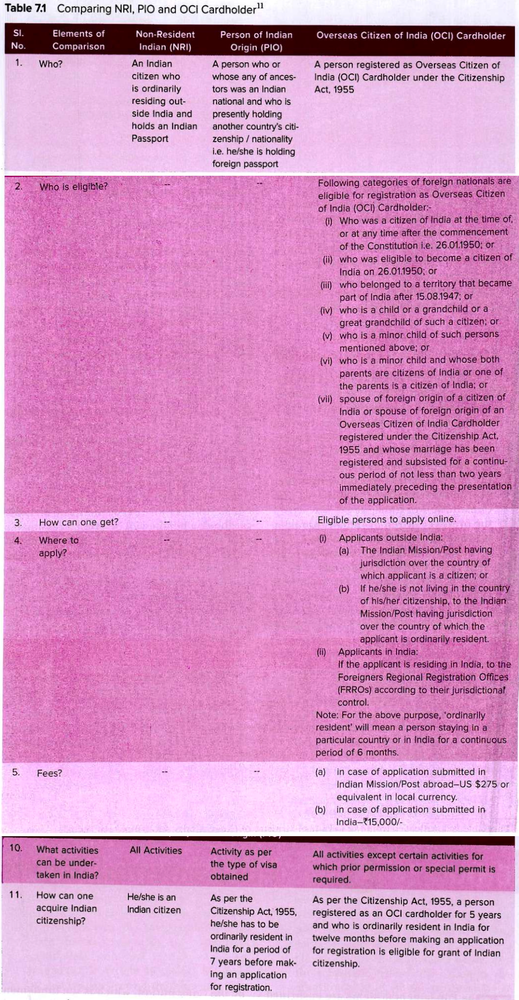
- They are not entitled to: - (a) Equality of opportunity in public employment (Article 16). - (b) Election as President (Article 58). - (c) Election as Vice-President (Article 66). - (d) Appointment as Supreme Court judge (Article 124). - (e) Appointment as high court judge (Article 217). - (f) Voter registration. - (g) Membership in the Lok Sabha, Rajya Sabha, state legislative assemblies, or councils. - (h) Appointment to public services/posts under the Union or states, except as specified by the Central Government. - 3. Renunciation of Overseas Citizen of India Card - An OCI cardholder may renounce their status by declaration. Upon registration, they cease to be an OCI cardholder. - If a person ceases to be an OCI cardholder, their foreign-origin spouse and minor children registered as OCI cardholders also lose their status. - 4. Cancellation of Registration as Overseas Citizen of India Cardholder - The Central Government may cancel OCI registration if: - (a) Registration was obtained by fraud, false representation, or concealment. - (b) The cardholder showed disaffection toward the Constitution. - (c) The cardholder unlawfully traded or communicated with an enemy during wartime. - (d) The cardholder was imprisoned for two years within five years of registration. - (e) The cardholder violated the Citizenship Act, 1955, or other specified laws (added by the 2019 Amendment). - (f) Cancellation is necessary for India’s sovereignty, security, foreign relations, or public interest. - (g) The cardholder’s marriage is dissolved, or they solemnised another marriage during the subsistence of the first. - Cardholders are given a reasonable opportunity to be heard before cancellation (added by the 2019 Amendment). -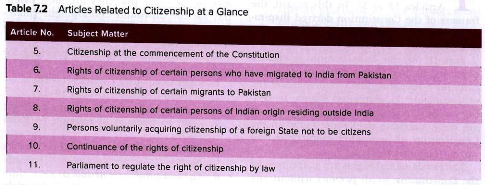
- CHAPTER 8: Fundamental Rights - Introduction - The Fundamental Rights are enshrined in Part III of the Constitution from Articles 12 to 35. In this regard, the framers of the Constitution derived inspiration from the Constitution of USA (i.e., Bill of Rights). - Part III of the Constitution is rightly described as the Magna Carta of India. It contains a very long and comprehensive list of 'justiciable' Fundamental Rights. In fact, the Fundamental Rights in our Constitution are more elaborate than those found in the Constitution of any other country in the world, including the USA. - Magna Carta is the Charter of Rights issued by King John of England in 1215 under pressure from the barons. This is the first written document relating to the Fundamental Rights of citizens. - The Fundamental Rights are guaranteed by the Constitution to all persons without any discrimination. They uphold the equality of all individuals, the dignity of the individual, the larger public interest, and the unity of the nation. - The Fundamental Rights are meant for promoting the ideal of political democracy. They prevent the establishment of an authoritarian and despotic rule in the country and protect the liberties and freedoms of the people against the invasion by the State. They operate as limitations on the tyranny of the executive and arbitrary laws of the legislature. In short, they aim at establishing 'a government of laws and not of men'. - The Fundamental Rights are named so because they are guaranteed and protected by the Constitution, which is the fundamental law of the land. They are 'fundamental' also in the sense that they are most essential for the all-round development (material, intellectual, moral, and spiritual) of the individuals. - Originally, the Constitution provided for seven Fundamental Rights, viz, - 1. Right to equality (Articles 14-18) - 2. Right to freedom (Articles 19-22) - 3. Right against exploitation (Articles 23-24) - 4. Right to freedom of religion (Articles 25-28) - 5. Cultural and educational rights (Articles 29-30) - 6. Right to property (Article 31) - 7. Right to constitutional remedies (Article 32) - However, the right to property was deleted from the list of Fundamental Rights by the 44th Amendment Act, 1978. It is made a legal right under Article 300-A in Part XII of the Constitution. So, at present, there are only six Fundamental Rights. These are mentioned in Table 8.1. -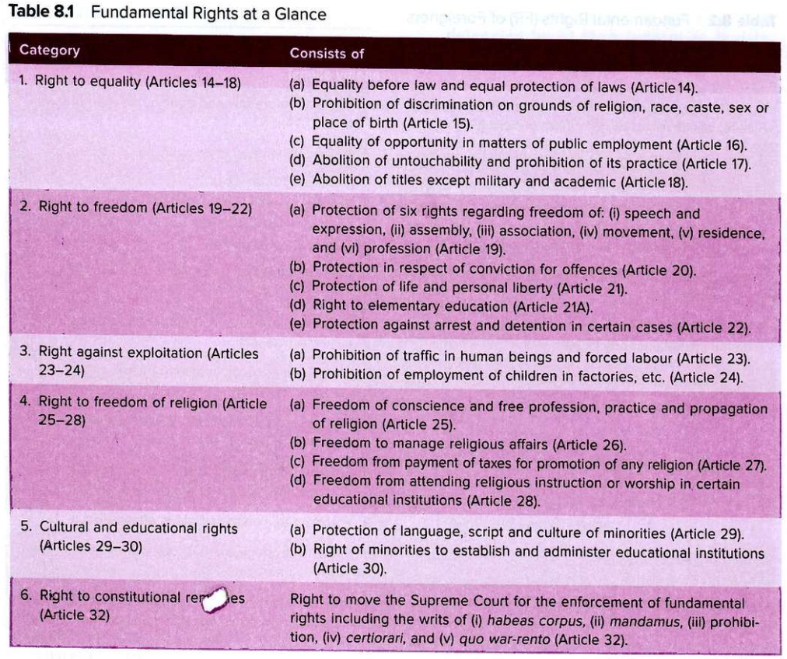
- Features of Fundamental Rights - The Fundamental Rights guaranteed by the Constitution are characterised by the following: - 1. Some of them are available only to the citizens while others are available to all persons whether citizens, foreigners, or legal persons like corporations or companies. The Fundamental Rights that are available to foreigners are mentioned in Table 8.2. - 2. They are not absolute but qualified. The state can impose reasonable restrictions on them. However, whether such restrictions are reasonable or not is to be decided by the courts. Thus, they strike a balance between the rights of the individual and those of the society as a whole, between individual liberty and social control. - 3. All of them are available against the arbitrary action of the state. However, some of them are also available against the action of private individuals. - 4. Some of them are negative in character, that is, place limitations on the authority of the State, while others are positive in nature, conferring certain privileges on the persons. - 5. They are justiciable, allowing persons to move the courts for their enforcement, if and when they are violated. - 6. They are defended and guaranteed by the Supreme Court. Hence, the aggrieved person can directly go to the Supreme Court, not necessarily by way of appeal against the judgement of the high courts. - 7. They are not sacrosanct or permanent. The Parliament can curtail or repeal them but only by a constitutional amendment act and not by an ordinary act. Moreover, this can be done without affecting the 'basic structure' of the Constitution. - 8. They can be suspended during the operation of a National Emergency except the rights guaranteed by Articles 20 and 21. Further, the six rights guaranteed by Article 19 are automatically suspended only when emergency is declared on the grounds of war or external aggression (i.e., external emergency) and not on the ground of armed rebellion (i.e., internal emergency). - 9. Their scope of operation is limited by Article 31A (saving of laws providing for acquisition of estates, etc.), Article 31B (validation of certain acts and regulations included in the 9th Schedule), and Article 31C (saving of laws giving effect to certain directive principles). - 10. Their application to the members of armed forces, para-military forces, police forces, intelligence agencies, and analogous services can be restricted or abrogated by the Parliament (Article 33). - 11. Their application can be restricted while martial law is in force in any area. Martial law means 'military rule' imposed under abnormal circumstances to restore order (Article 34). It is different from the imposition of national emergency. - 12. Most of them are directly enforceable (self-executory) while a few of them can be enforced on the basis of a law made for giving effect to them. Such a law can be made only by the Parliament and not by state legislatures so that uniformity throughout the country is maintained (Article 35). -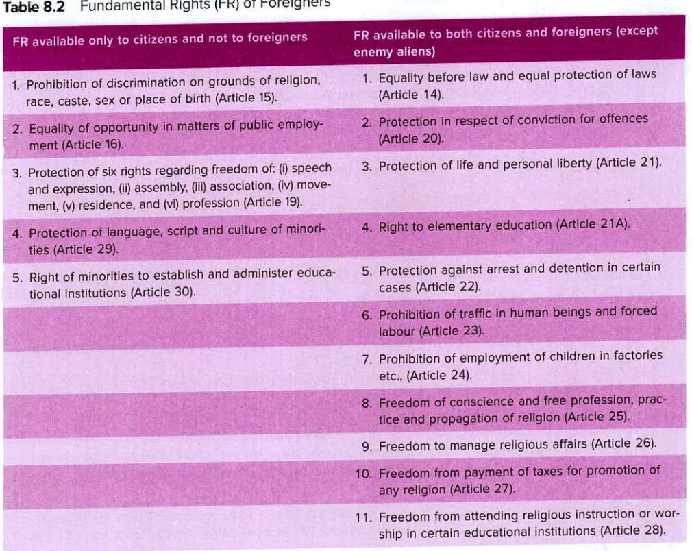
- Definition of State - The term 'State' has been used in different provisions concerning the fundamental rights. Hence, Article 12 has defined the term for the purposes of Part III. According to it, the State includes the following: - (a) Government and Parliament of India, that is, executive and legislative organs of the Union government. - (b) Government and legislature of states, that is, executive and legislative organs of state government. - (c) All local authorities, that is, municipalities, panchayats, district boards, improvement trusts, etc. - (d) All other authorities, that is, statutory or non-statutory authorities like LIC, ONGC, SAIL, etc. - Thus, State has been defined in a wider sense so as to include all its agencies. It is the actions of these agencies that can be challenged in the courts as violating the Fundamental Rights. - According to the Supreme Court, even a private body or an agency working as an instrument of the State falls within the meaning of the 'State' under Article 12. - Laws Inconsistent with Fundamental Rights - Article 13 declares that all laws that are inconsistent with or in derogation of any of the fundamental rights shall be void. In other words, it expressly provides for the doctrine of judicial review. This power has been conferred on the Supreme Court (Article 32) and the high courts (Article 226) that can declare a law unconstitutional and invalid on the ground of contravention of any of the Fundamental Rights. - The term 'law' in Article 13 has been given a wide connotation so as to include the following: - (a) Permanent laws enacted by the Parliament or the state legislatures. - (b) Temporary laws like ordinances issued by the president or the state governors. - (c) Statutory instruments in the nature of delegated legislation (executive legislation) like order, bye-law, rule, regulation, or notification. - (d) Non-legislative sources of law, that is, custom or usage having the force of law. - Thus, not only a legislation but any of the above can be challenged in the courts as violating a Fundamental Right and hence, can be declared as void. - Further, Article 13 declares that a constitutional amendment is not a law and hence cannot be challenged. However, the Supreme Court held in the Kesavananda Bharati case (1973) that a Constitutional amendment can be challenged on the ground that it violates a fundamental right that forms a part of the 'basic structure' of the Constitution and hence, can be declared as void. - Kesavananda Bharati vs. State of Kerala (1973). - Right to Equality - 1. Equality before Law and Equal Protection of Laws - Article 14 says that the State shall not deny to any person equality before the law or the equal protection of the laws within the territory of India. This provision confers rights on all persons whether citizens or foreigners. Moreover, the word 'person' includes legal persons, viz, statutory corporations, companies, registered societies, or any other type of legal person. - The concept of 'equality before law' is of British origin while the concept of 'equal protection of laws' has been taken from the American Constitution. The first concept connotes: - (a) the absence of any special privileges in favour of any person. - (b) the equal subjection of all persons to the ordinary law of the land administered by ordinary law courts. - (c) no person (whether rich or poor, high or low, official or non-official) is above the law. - The second concept, on the other hand, connotes: - (a) the equality of treatment under equal circumstances, both in the privileges conferred and liabilities imposed by the laws. - (b) the similar application of the same laws to all persons who are similarly situated. - (c) the like should be treated alike without any discrimination. - Thus, the former is a negative concept while the latter is a positive concept. However, both of them aim at establishing equality of legal status, opportunity, and justice. - The Supreme Court held that where equals and unequals are treated differently, Article 14 does not apply. While Article 14 forbids class legislation, it permits reasonable classification of persons, objects, and transactions by the law. But the classification should not be arbitrary, artificial, or evasive. Rather, it should be based on an intelligible differentia and substantial distinction. - Rule of Law - The concept of 'equality before law' is an element of the concept of 'Rule of Law', propounded by A.V. Dicey, the British jurist. His concept has the following three elements or aspects: - (i) Absence of arbitrary power, that is, no man can be punished except for a breach of law. - (ii) Equality before the law, that is, equal subjection of all citizens (rich or poor, high or low, official or non-official) to the ordinary law of the land administered by the ordinary law courts. - Dicey observed: 'No man is above the law, but every man, whatever be his rank or condition, is subject to the ordinary law of the realm and amenable to the jurisdiction of the ordinary tribunals. Every official from the Prime Minister down to a constable or a collector of taxes, is under the same responsibility for every act done without legal justification as any other citizen' (A.V. Dicey, Introduction to the Study of the Law of the Constitution, Macmillan, 1931 Edition, pp. 183-191). - (iii) The primacy of the rights of the individual, that is, the constitution is the result of the rights of the individual as defined and enforced by the courts of law rather than the constitution being the source of the individual rights. - The first and the second elements are applicable to the Indian System and not the third one. In the Indian System, the constitution is the source of the individual rights. - The Supreme Court held that the 'Rule of Law' as embodied in Article 14 is a 'basic feature' of the constitution. Hence, it cannot be destroyed even by an amendment. - Exceptions to Equality - The rule of equality before law is not absolute and there are constitutional and other exceptions to it. These are mentioned below: - 1. The President of India and the Governor of States enjoy the following immunities (Article 361): - (i) The President or the Governor is not answerable to any court for the exercise and performance of the powers and duties of his/her office. - (ii) No criminal proceedings shall be instituted or continued against the President or the Governor in any court during his/her term of office. - (iii) No process for the arrest or imprisonment of the President or the Governor shall be issued from any court during his/her term of office. - (iv) No civil proceedings against the President or the Governor shall be instituted during his/her term of office in any court in respect of any act done by him/her in his/her personal capacity, whether before or after he/she entered upon his/her office, until the expiration of two months next after notice has been delivered to him/her. - 2. No person shall be liable to any civil or criminal proceedings in any court in respect of the publication in a newspaper (or by radio or television) of a substantially true report of any proceedings of either House of Parliament or either House of the Legislature of a State (Article 361-A). - 3. No member of Parliament shall be liable to any proceedings in any court in respect of anything said or any vote given by him/her in Parliament or any committee thereof (Article 105). - 4. No member of the Legislature of a state shall be liable to any proceedings in any court in respect of anything said or any vote given by him/her in the Legislature or any committee thereof (Article 194). - 5. Article 31-C is an exception to Article 14. It provides that the laws made by the state for implementing the Directive Principles contained in clause (b) or clause (c) of Article 39 cannot be challenged on the ground that they are violative of Article 14. The Supreme Court held that "where Article 31-C comes in, Article 14 goes out". - 6. The foreign sovereigns (rulers), ambassadors, and diplomats enjoy immunity from criminal and civil proceedings. - 7. The UNO and its agencies enjoy diplomatic immunity. - 2. Prohibition of Discrimination on Certain Grounds - Article 15 provides that the State shall not discriminate against any citizen on grounds only of religion, race, caste, sex, or place of birth. The two crucial words in this provision are 'discrimination' and 'only'. The word 'discrimination' means 'to make an adverse distinction with regard to' or 'to distinguish unfavourably from others'. The use of the word 'only' connotes that discrimination on other grounds is not prohibited. - The second provision of Article 15 says that no citizen shall be subjected to any disability, liability, restriction, or condition on grounds only of religion, race, caste, sex, or place of birth with regard to (a) access to shops, public restaurants, hotels, and places of public entertainment; or (b) the use of wells, tanks, bathing ghats, roads, and places of public resort maintained wholly or partly by State funds or dedicated to the use of general public. This provision prohibits discrimination both by the State and private individuals, while the former provision prohibits discrimination only by the State. - There are four exceptions to this general rule of non-discrimination: - (a) The state is permitted to make any special provision for women and children. For example, reservation of seats for women in local bodies or provision of free education for children. - (b) The state is permitted to make any special provision for the advancement of any socially and educationally backward classes or for the scheduled castes and the scheduled tribes. For example, reservation of seats or fee concessions in public educational institutions. - This provision was added by the First Amendment Act of 1951. - (c) The state is empowered to make any special provision for the advancement of any socially and educationally backward classes or for the scheduled castes and the scheduled tribes regarding their admission to educational institutions. This also includes the private educational institutions, whether aided or unaided by the state, except the minority educational institutions. - (d) The state is empowered to make any special provision for the advancement of any economically weaker sections. Further, the state is allowed to make a provision for the reservation of up to 10% of seats for such sections in admission to educational institutions including private educational institutions, whether aided or unaided by the state, except the minority educational institutions. This reservation of up to 10% would be in addition to the existing reservations. For this purpose, the economically weaker sections would be notified by the state from time to time on the basis of family income and other indicators of economic disadvantage. - The various provisions contained in Article 15 are summarised in Table 8.3. -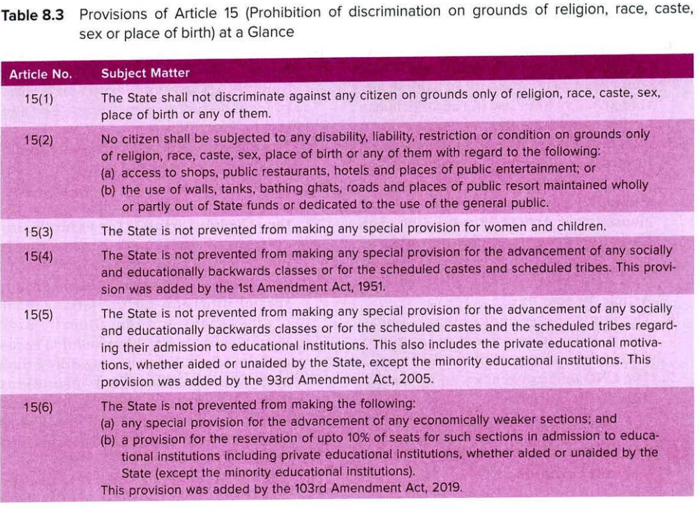
- Reservation for OBCs in Educational Institutions - The above exception (c) was added by the 93rd Amendment Act of 2005. In order to give effect to this provision, the Centre enacted the Central Educational Institutions (Reservation in Admission) Act, 2006, providing a quota of 27% for candidates belonging to the Other Backward Classes (OBCs) in all central higher educational institutions including the Indian Institutes of Technology (IITs) and the Indian Institutes of Management (IIMs). In April 2008, the Supreme Court upheld the validity of both the Amendment Act and the OBC Quota Act. But, the Court directed the central government to exclude the 'creamy layer' (advanced sections) among the OBCs while implementing the law. - The children of the following different categories of people belong to the 'creamy layer' among the OBCs and thus will not get the quota benefit: - 1. Persons holding constitutional posts like President, Vice-President, Judges of SC and HCs, Chairman and Members of UPSC and SPSCs, CEC, CAG, and so on. - 2. Group 'A' / Class I and Group 'B' / Class II Officers of the All India, Central, and State Services; and Employees holding equivalent posts in PSUs, Banks, Insurance Organisations, Universities, etc., and also in private employment. - 3. Persons who are in the rank of colonel and above in the Army and equivalent posts in the Navy, the Air Force, and the Paramilitary Forces. - 4. Professionals like doctors, lawyers, engineers, artists, authors, consultants, and so on. - 5. Persons engaged in trade, business, and industry. - 6. People holding agricultural land above a certain limit and vacant land or buildings in urban areas. - 7. Persons having gross annual income of more than Rs 8 lakh or possessing wealth above the exemption limit. In 1993, when the "creamy layer" ceiling was introduced, it was Rs 1 lakh. It was subsequently revised to Rs 2.5 lakh in 2004, Rs 4.5 lakh in 2008, Rs 6 lakh in 2013, and Rs 8 lakh in 2017. - Reservation for EWSs in Educational Institutions - The above exception (d) was added by the 103rd Amendment Act of 2019. In order to give effect to this provision, the central government issued an order (in 2019) providing 10% reservation to the Economically Weaker Sections (EWSs) in admission to educational institutions. The benefit of this reservation can be availed by the persons belonging to EWSs who are not covered under any of the existing schemes of reservations for SCs, STs, and OBCs. The eligibility criteria laid down in this regard is as follows: - 1. Persons whose family has gross annual income below Rs 8 lakh are to be identified as EWSs for the benefit of reservation. The income would include income from all sources i.e., salary, agriculture, business, profession, etc., and it would be income for the financial year prior to the year of application. - 2. Persons whose family owns or possesses any one of the following assets are to be excluded from being identified as EWSs, irrespective of the family income: - (a) 5 acres of agricultural land and above. - (b) Residential flat of 1000 sq.ft. and above. - (c) Residential plot of 100 sq.yards and above in notified municipalities. - (d) Residential plot of 200 sq.yards and above in areas other than the notified municipalities. - 3. The property held by a family in different locations or different places/cities would be clubbed while applying the land or property holding test to determine EWS status. - 4. Family for this purpose would include the person who seeks benefit of reservation, his/her parents and siblings below the age of 18 years as also his/her spouse and children below the age of 18 years. - 3. Equality of Opportunity in Public Employment - Article 16 provides for equality of opportunity for all citizens in matters of employment or appointment to any office under the State. No citizen can be discriminated against or be ineligible for any employment or office under the State on grounds of only religion, race, caste, sex, descent, place of birth, or residence. - There are four exceptions to this general rule of equality of opportunity in public employment: - (a) Parliament can prescribe residence as a condition for certain employment or appointment in a state or union territory or local authority or other authority. As the Public Employment (Requirement as to Residence) Act of 1957 expired in 1974, there is no such provision for any state except Andhra Pradesh and Telangana. - By virtue of Article 371D inserted by the 32nd Amendment Act of 1973. - Article 371D has been extended to the state of Telangana by the Andhra Pradesh Reorganisation Act, 2014. - (b) The State can provide for reservation of appointments or posts in favour of any backward class that is not adequately represented in the state services. Also, the State is empowered to provide for reservation in promotions, with consequential seniority, in the services under the State in favour of the Scheduled Castes and Scheduled Tribes that are not adequately represented in the state services. Further, the State is empowered to consider the unfilled reserved vacancies of a year as a separate class of vacancies to be filled up in any succeeding year or years and such class of vacancies are not to be combined with the vacancies of the year in which they are being filled up to determine the ceiling of 50% reservation on total number of vacancies of that year. - (c) A law can provide that the incumbent of an office related to religious or denominational institution or a member of its governing body should belong to the particular religion or denomination. This means that the appointment of the office bearers in any religious or denominational institution can be restricted to the persons of that particular religion or denomination. In brief, the religious qualification can be prescribed by the law in this regard. - (d) The state is permitted to make a provision for the reservation of up to 10% of appointments or posts in favour of any economically weaker sections. This reservation of up to 10% would be in addition to the existing reservation. For this purpose, the economically weaker sections would be notified by the state from time to time on the basis of family income and other indicators of economic disadvantage. - The various provisions contained in Article 16 are summarised in Table 8.4. -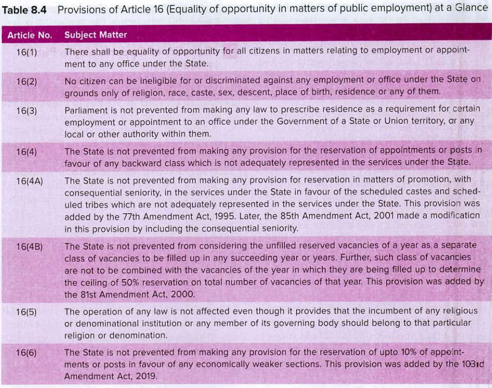
- Mandal Commission and Aftermath - In 1979, the Morarji Desai Government appointed the Second Backward Classes Commission under the chairmanship of B.P. Mandal, a member of Parliament, in terms of Article 340 of the Constitution to investigate the conditions of the socially and educationally backward classes and suggest measures for their advancement. The commission submitted its report in 1980 and identified as many as 3743 castes as socially and educationally backward classes. - The first Backward Classes Commission was appointed in 1953 under the chairmanship of Kaka Kalelkar. It submitted its report in 1955. - They constitute nearly 52% component of the population, excluding the scheduled castes (SCs) and the scheduled tribes (STs). The commission recommended for reservation of 27% government jobs for the Other Backward Classes (OBCs) so that the total reservation for all (SCs, STs, and OBCs) amounts to 50% (In 1963, the Supreme Court ruled that more than 50% reservation of jobs in a single year would be unconstitutional.). It was after ten years in 1990 that the V.P. Singh Government declared reservation of 27% government jobs for the OBCs. Again in 1991, the Narasimha Rao Government introduced two changes: - (a) preference to the poorer sections among the OBCs in the 27% quota, i.e., adoption of the economic criteria in granting reservation, and - (b) reservation of another 10% of jobs for other economically backward sections who are not covered by any existing schemes of reservation. - In the Indra Sawhney case (Indra Sawhney vs. Union of India (1992)), also called as the Mandal case, the scope and extent of Article 16(4), which provides for reservation of jobs in favour of backward classes, has been examined thoroughly by the Supreme Court. Though the Court has rejected the additional reservation of 10% for other economically backward sections, it upheld the constitutional validity of 27% reservation for the OBCs with certain conditions, viz, - (a) The advanced sections among the OBCs (the creamy layer) should be excluded from the list of beneficiaries of reservation. - (b) No reservation in promotions; reservation should be confined to initial appointments only. Any existing reservation in promotions can continue for five years only (i.e., up to 1997). - (c) The total reserved quota should not exceed 50% except in some extraordinary situations. This rule should be applied every year. - (d) The 'carry forward rule' in case of unfilled (backlog) vacancies is valid. But it should not violate 50% rule. - (e) A permanent statutory body should be established to examine complaints of over-inclusion and under-inclusion in the list of OBCs. - (f) No relaxations in qualifying marks and standards of evaluation in matters of reservation in promotions due to the requirement of maintenance of efficiency in administration under Article 335. - With regard to the above rulings of the Supreme Court, the government has taken the following actions: - (a) Ram Nandan Committee was appointed to identify the creamy layer among the OBCs. It submitted its report in 1993, which was accepted. - (b) National Commission for Backward Classes was established in 1993 by an act of Parliament. Its mandate was to examine the complaints of under-inclusion, over-inclusion, or non-inclusion of any class of citizens in the list of backward classes for the purpose of job reservation. Later, the 102nd Amendment Act of 2018 conferred a constitutional status on the commission and also enlarged its functions. For this purpose, the amendment inserted a new Article 338-B in the constitution. - (c) In order to nullify the ruling with regard to reservation in promotions, the 77th Amendment Act was enacted in 1995. It added a new provision in Article 16 that empowers the State to provide for reservation in promotions of any services under the State in favour of the SCs and STs that are not adequately represented in the state services. Again, the 85th Amendment Act of 2001 provides for 'consequential seniority' in the case of promotion by virtue of rule of reservation for the government servants belonging to the SCs and STs with retrospective effect from June 1995. - (d) The ruling with regard to backlog vacancies was nullified by the 81st Amendment Act of 2000. It added another new provision in Article 16 that empowers the State to consider the unfilled reserved vacancies of a year as a separate class of vacancies to be filled up in any succeeding year or years. Further, such class of vacancies are not to be combined with the vacancies of the year in which they are being filled up to determine the ceiling of 50% reservation on total number of vacancies of that year. In brief, it ends the 50% ceiling on reservation in backlog vacancies. - (e) The 76th Amendment Act of 1994 has placed the Tamil Nadu Reservations Act of 1993 in the Ninth Schedule to protect it from judicial review as it provided for 69 per cent of reservation, far exceeding the 50 per cent ceiling. - The Tamil Nadu Backward Classes, Scheduled Castes and Scheduled Tribes (Reservation of seats in educational institutions and of appointments or posts in the services under the state) Act, 1993. - (f) In order to nullify the ruling with regard to relaxations in qualifying marks and standards of evaluation in matters of reservation in promotions, the 82nd Amendment Act was enacted in 2000. It added a new provision in Article 335 that empowers the state to make any provision in favour of the SCs and STs for relaxation in qualifying marks or lowering the standards of evaluation in matters of reservation in promotions. - Reservation for EWSs in Public Employment - The above exception (d) was added by the 103rd Amendment Act of 2019. In order to give effect to this provision, the central government issued an order (in 2019) providing 10% reservation to the Economically Weaker Sections (EWSs) in civil posts and services in the Government of India. The benefit of this reservation can be availed by the persons belonging to EWSs who are not covered under any of the existing schemes of reservation for SCs, STs, and OBCs. The eligibility criteria laid down in this regard has already been explained under Article 15. - Further, the scientific and technical posts which satisfy all the following conditions can be exempted from the purview of this reservation: - (i) The posts should be in grades above the lower grade in Group A of the service concerned. - (ii) They should be classified as "scientific or technical" in terms of Cabinet Secretariat Order (1961), according to which scientific and technical posts for which qualifications in the natural sciences or exact sciences or applied sciences or in technology are prescribed and the incumbents of which have to use that knowledge in the discharge of their duties. - (iii) The posts should be for conducting research or for organizing, guiding, and directing research. - 4. Abolition of Untouchability - Article 17 abolishes 'untouchability' and forbids its practice in any form. The enforcement of any disability arising out of untouchability shall be an offence punishable in accordance with law. - In 1976, the Untouchability (Offences) Act, 1955, has been comprehensively amended and renamed as the Protection of Civil Rights Act, 1955, to enlarge the scope and make penal provisions more stringent. The act defines civil right as any right accruing to a person by reason of the abolition of untouchability by Article 17 of the Constitution. - The term 'untouchability' has not been defined either in the Constitution or in the Act. However, the Mysore High Court held that the subject matter of Article 17 is not untouchability in its literal or grammatical sense but the 'practice as it had developed historically in the country'. It refers to the social disabilities imposed on certain classes of persons by reason of their birth in certain castes. Hence, it does not cover social boycott of a few individuals or their exclusion from religious services, etc. - In the People's Union for Democratic Rights case (1982), the Supreme Court held that the right under Article 17 is available against private individuals and it is the constitutional obligation of the State to take necessary action to ensure that this right is not violated. - People's Union for Democratic Rights vs. Union of India (1982). - 5. Abolition of Titles - Article 18 abolishes titles and makes four provisions in that regard: - (a) It prohibits the state from conferring any title (except a military or academic distinction) on anybody, whether a citizen or a foreigner. - (b) It prohibits a citizen of India from accepting any title from any foreign state. - (c) A foreigner holding any office of profit or trust under the state cannot accept any title from any foreign state without the consent of the president. - (d) No citizen or foreigner holding any office of profit or trust under the State is to accept any present, emolument, or office from or under any foreign State without the consent of the president. - From the above, it is clear that the hereditary titles of nobility like Maharaja, Raj Bahadur, Rai Bahadur, Rai Saheb, Dewan Bahadur, etc., which were conferred by colonial States are banned by Article 18 as these are against the principle of equal status of all. - In the Balaji Raghavan case (1995), the Supreme Court upheld the constitutional validity of the National Awards—Bharat Ratna, Padma Vibhushan, Padma Bhushan, and Padma Sri. It ruled that these awards do not amount to 'titles' within the meaning of Article 18 that prohibits only hereditary titles of nobility. Therefore, they are not violative of Article 18 as the theory of equality does not mandate that merit should not be recognised. However, it also ruled that they should not be used as suffixes or prefixes to the names of awardees. Otherwise, they should forfeit the awards. - Balaji Raghavan vs. Union of India (1995). - These National Awards were instituted in 1954. The Janata Party government headed by Morarji Desai discontinued them in 1977. But they were again revived in 1980 by the Indira Gandhi government. - The Padma Awards are announced every year on the occasion of Republic Day except for brief interruptions during the years 1978 and 1979 and 1993 to 1997. - The total number of Padma Awards to be given in a year (excluding posthumous awards and awards given to NRIs/Foreigners/OCIs) should not be more than 120. Similarly, the number of Bharat Ratna Awards is restricted to a maximum of three in a particular year. - Right to Freedom - 1. Protection of Six Rights - Article 19 guarantees to all citizens the six rights. These are: - (i) Right to freedom of speech and expression. - (ii) Right to assemble peaceably and without arms. - (iii) Right to form associations or unions or co-operative societies. - Provision for "co-operative societies" was made by the 97th Constitutional Amendment Act of 2011. - (iv) Right to move freely throughout the territory of India. - (v) Right to reside and settle in any part of the territory of India. - (vi) Right to practise any profession or to carry on any occupation, trade or business. - Originally, Article 19 contained seven rights. But, the right to acquire, hold and dispose of property was deleted by the 44th Amendment Act of 1978. - These six rights are protected against only state action and not private individuals. Moreover, these rights are available only to the citizens and to shareholders of a company but not to foreigners or legal persons like companies or corporations, etc. - The State can impose 'reasonable' restrictions on the enjoyment of these six rights only on the grounds mentioned in the Article 19 itself and not on any other grounds. - The six rights contained in Article 19 and the grounds of imposing reasonable restrictions on them are mentioned in Table 8.5. -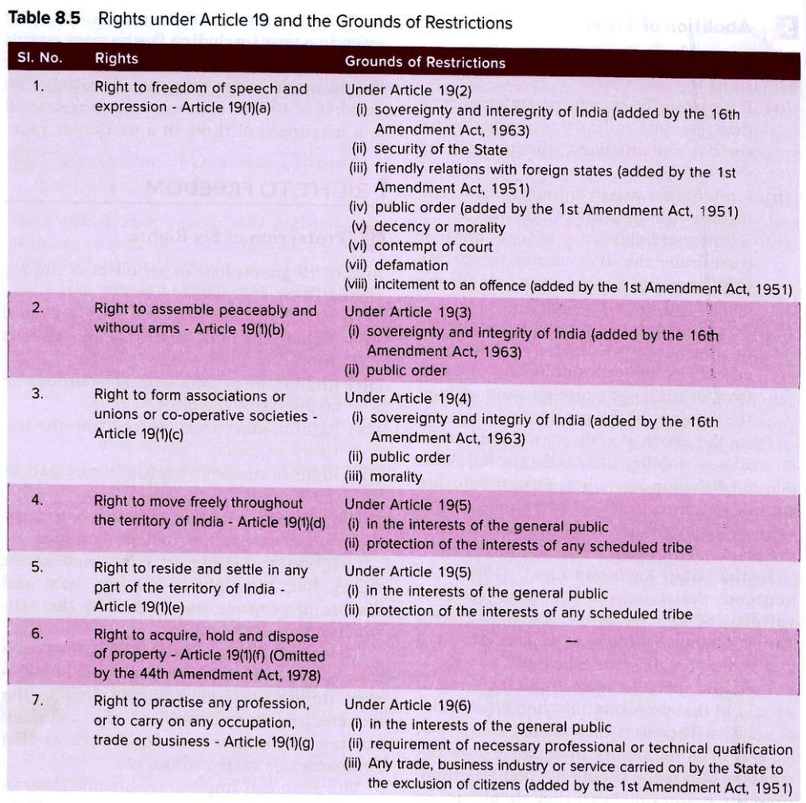
- Freedom of Speech and Expression - It implies that every citizen has the right to express his/her views, opinions, belief and convictions freely by word of mouth, writing, printing, picturing or in any other manner. The Supreme Court held that the freedom of speech and expression includes the following: - (a) Right to propagate one's views (Freedom of circulation). - (b) Freedom of the press. - (c) Freedom of commercial advertisements. - (d) Right against tapping of telephonic conversation. - (e) Right to telecast, that is, government has no monopoly on electronic media. - (f) Right against bundh called by a political party or organisation. - (g) Right to know about government activities. - (h) Freedom of silence. - (i) Right against imposition of pre-censorship on a newspaper. - (j) Right to demonstration or picketing but not right to strike. - (k) Right to fly the national flag. - (l) Right of voters to know the antecedents of the candidates contesting elections. - (m) Right to choose the medium of instruction at the stage of primary school. - (n) Right to express gender identity. - (o) Right to reply (Right to answer the criticism). - (p) Right to post information/videos on the internet/social media. - (q) Right of film-makers to exhibit their films. - (r) Right to access to the internet (Right to access to information via the internet). - The State can impose reasonable restrictions on the exercise of the freedom of speech and expression on the grounds of sovereignty and integrity of India, security of the state, friendly relations with foreign states, public order, decency or morality, contempt of court, defamation, and incitement to an offence. - Freedom of Assembly - Every citizen has the right to assemble peaceably and without arms. It includes the right to hold public meetings, demonstrations and take out processions. This freedom can be exercised only on public land and the assembly must be peaceful and unarmed. This provision does not protect violent, disorderly, riotous assemblies, or one that causes breach of public peace or one that involves arms. This right does not include the right to strike. - The State can impose reasonable restrictions on the exercise of right of assembly on two grounds, namely, sovereignty and integrity of India and public order including the maintenance of traffic in the area concerned. - Under Section 144 of Criminal Procedure Code (1973), a magistrate can restrain an assembly, meeting or procession if there is a risk of obstruction, annoyance or danger to human life, health or safety or a disturbance of the public tranquillity or a riot or any affray. - Under Section 141 of the Indian Penal Code, an assembly of five or more persons becomes unlawful if the object is: - (a) to resist the execution of any law or legal process; - (b) to forcibly occupy the property of some person; - (c) to commit any mischief or criminal trespass; - (d) to force some person to do an illegal act; and - (e) to threaten the government or its officials on exercising lawful powers. - Freedom of Association - All citizens have the right to form associations or unions or co-operative societies. It includes the right to form political parties, companies, partnership firms, societies, clubs, organisations, trade unions or any body of persons. It not only includes the right to start an association or union but also to continue with the association or union as such. Further, it covers the negative right of not to form or join an association or union. - Reasonable restrictions can be imposed on the exercise of this right by the State on the grounds of sovereignty and integrity of India, public order and morality. Subject to these restrictions, the citizens have complete liberty to form associations or unions for pursuing lawful objectives and purposes. However, the right to obtain recognition of the association is not a fundamental right. - The Supreme Court held that the trade unions have no guaranteed right to effective bargaining or right to strike or right to declare a lock-out. The right to strike can be controlled by an appropriate industrial law. - Freedom of Movement - This freedom entitles every citizen to move freely throughout the territory of the country. He/she can move freely from one state to another or from one place to another within a state. This right underlines the idea that India is one unit so far as the citizens are concerned. Thus, the purpose is to promote national feeling and not parochialism. - The grounds of imposing reasonable restrictions on this freedom are two, namely, the interests of general public and the protection of interests of any scheduled tribe. The entry of outsiders in tribal areas is restricted to protect the distinctive culture, language, customs and manners of scheduled tribes and to safeguard their traditional vocation and properties against exploitation. - The Supreme Court held that the freedom of movement of prostitutes can be restricted on the ground of public health and in the interest of public morals. The Bombay High Court validated the restrictions on the movement of persons affected by AIDS. - The freedom of movement has two dimensions, viz, internal (right to move inside the country) and external (right to move out of the country and right to come back to the country). Article 19 protects only the first dimension. The second dimension is dealt by Article 21 (right to life and personal liberty). - Freedom of Residence - Every citizen has the right to reside and settle in any part of the territory of the country. This right has two parts: - (a) the right to reside in any part of the country, which means to stay at any place temporarily, and - (b) the right to settle in any part of the country, which means to set up a home or domicile at any place permanently. - This right is intended to remove internal barriers within the country or between any of its parts. This promotes nationalism and avoids narrow mindedness. - The State can impose reasonable restrictions on the exercise of this right on two grounds, namely, the interest of general public and the protection of interests of any scheduled tribes. The right of outsiders to reside and settle in tribal areas is restricted to protect the distinctive culture, language, customs and manners of scheduled tribes and to safeguard their traditional vocation and properties against exploitation. In many parts of the country, the tribals have been permitted to regulate their property rights in accordance with their customary rules and laws. - The Supreme Court held that certain areas can be banned for certain kinds of persons like prostitutes and habitual offenders. - From the above, it is clear that the right to residence and the right to movement are overlapping to some extent. Both are complementary to each other. - Freedom of Profession, etc. - All citizens are given the right to practise any profession or to carry on any occupation, trade or business. This right is very wide as it covers all the means of earning one's livelihood. - The State can impose reasonable restrictions on the exercise of this right in the interest of the general public. Further, the state is empowered to: - (a) prescribe professional or technical qualifications necessary for practising any profession or carrying on any occupation, trade or business; and - (b) carry on by itself any trade, business, industry or service whether to the exclusion (complete or partial) of citizens or otherwise. - Thus, no objection can be made when the State carries on a trade, business, industry or service either as a monopoly (complete or partial) to the exclusion of citizens (all or some only) or in competition with any citizen. The State is not required to justify its monopoly. - This right does not include the right to carry on a profession or business or trade or occupation that is immoral (trafficking in women or children) or dangerous (harmful drugs or explosives, etc.). The State can absolutely prohibit these or regulate them through licensing. - In Anuradha Bhasin case (2020), the Supreme Court held that the freedom to practise any profession or carry on any trade, business or occupation over the medium of internet enjoys constitutional protection under Article 19(1)(g). The restriction on this right should be in consonance with the mandate under Article 19(6), inclusive of the test of proportionality. Further, an order suspending internet services indefinitely is impermissible under the Temporary Suspension of Telecom Services (Public Emergency or Public Safety) Rules, 2017. - Anuradha Bhasin vs. Union of India (2020). - 2. Protection in Respect of Conviction for Offences - Article 20 grants protection against arbitrary and excessive punishment to an accused person, whether citizen or foreigner or legal person like a company or a corporation. It contains three provisions in that direction: - (a) No ex-post-facto law: No person shall be - (i) convicted of any offence except for violation of a law in force at the time of the commission of the act, nor - (ii) subjected to a penalty greater than that prescribed by the law in force at the time of the commission of the act. - (b) No double jeopardy: No person shall be prosecuted and punished for the same offence more than once. - (c) No self-incrimination: No person accused of any offence shall be compelled to be a witness against himself/herself. - An ex-post-facto law is one that imposes penalties retrospectively (retroactively), that is, upon acts already done or which increases the penalties for such acts. The enactment of such a law is prohibited by the first provision of Article 20. However, this limitation is imposed only on criminal laws and not on civil laws or tax laws. In other words, a civil liability or a tax can be imposed retrospectively. Further, this provision prohibits only conviction or sentence under an ex-post-facto criminal law and not the trial thereof. Finally, the protection (immunity) under this provision cannot be claimed in case of preventive detention or demanding security from a person. - The protection against double jeopardy is available only in proceedings before a court of law or a judicial tribunal. In other words, it is not available in proceedings before departmental or administrative authorities as they are not of judicial nature. - The protection against self-incrimination extends to both oral evidence and documentary evidence. However, it does not extend to - (i) compulsory production of material objects, - (ii) compulsion to give thumb impression, specimen signature, blood specimens, and - (iii) compulsory exhibition of the body. - Further, it extends only to criminal proceedings and not to civil proceedings or proceedings which are not of criminal nature. - 3. Protection of Life and Personal Liberty - Article 21 declares that no person shall be deprived of his/her life or personal liberty except according to procedure established by law. This right is available to both citizens and non-citizens. - In the famous Gopalan case (A.K. Gopalan vs. State of Madras (1950)), the Supreme Court has taken a narrow interpretation of the Article 21. It held that the protection under Article 21 is available only against arbitrary executive action and not from arbitrary legislative action. This means that the State can deprive the right to life and personal liberty of a person based on a law. This is because of the expression 'procedure established by law' in Article 21, which is different from the expression 'due process of law' contained in the American Constitution. Hence, the validity of a law that has prescribed a procedure cannot be questioned on the ground that the law is unreasonable, unfair or unjust. Secondly, the Supreme Court held that the 'personal liberty' means only liberty relating to the person or body of the individual. - But, in Maneka case (Maneka Gandhi vs. Union of India (1978)), the Supreme Court overruled its judgement in the Gopalan case by taking a wider interpretation of the Article 21. Therefore, it ruled that the right to life and personal liberty of a person can be deprived by a law provided the procedure prescribed by that law is reasonable, fair and just and not arbitrary, fanciful or oppressive. In order that the procedure is reasonable, fair and just, the procedure should conform to the principles of natural justice. In other words, it has introduced the American expression 'due process of law'. In effect, the protection under Article 21 should be available not only against arbitrary executive action but also against arbitrary legislative action. Further, the court held that the 'right to life' as embodied in Article 21 is not merely confined to animal existence or survival but it includes within its ambit the right to live with human dignity and all those aspects of life which go to make a man's life meaningful, complete and worth living. It also ruled that the expression 'Personal Liberty' in Article 21 is of the widest amplitude and it covers a variety of rights that go to constitute the personal liberties of a man. - The Supreme Court has reaffirmed its judgement in the Maneka case in the subsequent cases. It has declared the following rights as part of Article 21: - (1) Right to live with human dignity. - (2) Right to decent environment including pollution free water and air and protection against hazardous industries. - (3) Right to livelihood. - (4) Right to privacy. - (5) Right to shelter. - (6) Right to health. - (7) Right to free education up to 14 years of age. - (8) Right to free legal aid. - (9) Right against solitary confinement. - (10) Right to speedy trial. - (11) Right against handcuffing. - (12) Right against inhuman treatment. - (13) Right against delayed execution. - (14) Right to travel abroad. - (15) Right against bonded labour. - (16) Right against custodial harassment. - (17) Right to emergency medical aid (Right to doctor's assistance). - (18) Right to timely medical treatment in government hospital. - (19) Right not to be driven out of a state. - (20) Right to fair trial. - (21) Right of prisoner to have necessities of life. - (22) Right of women to be treated with decency and dignity. - (23) Right against public hanging. - (24) Right to road in hilly areas. - (25) Right to information. - (26) Right to reputation. - (27) Right of appeal from a judgement of conviction. - (28) Right to family pension. - (29) Right to social and economic justice and empowerment. - (30) Right against bar fetters. - (31) Right to appropriate life insurance policy. - (32) Right to sleep. - (33) Right to freedom from noise pollution. - (34) Right to sustainable development. - (35) Right to opportunity. - (36) Right to decent burial/cremation. - (37) Right to marry a person of one's choice. - (38) Right to die with dignity (passive euthanasia). - The important cases relating to the expansion of the scope of Article 21 (Protection of Life and Personal Liberty) are mentioned in Table 8.6. -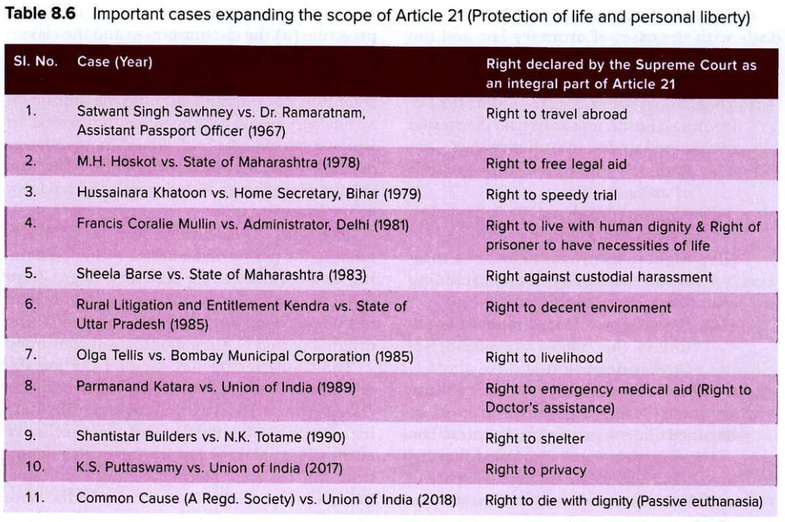
- 4. Right to Education - Article 21A declares that the State shall provide free and compulsory education to all children of the age of six to fourteen years in such a manner as the State may determine. Thus, this provision makes only elementary education a Fundamental Right and not higher or professional education. - This provision was added by the 86th Constitutional Amendment Act of 2002. This amendment is a major milestone in the country's aim to achieve 'Education for All'. The government described this step as 'the dawn of the second revolution in the chapter of citizens' rights'. - Even before this amendment, the Constitution contained a provision for free and compulsory education for children under Article 45 in Part IV. However, being a directive principle, it was not enforceable by the courts. Now, there is scope for judicial intervention in this regard. - This amendment changed the subject matter of Article 45 in directive principles. It now reads—'The state shall endeavour to provide early childhood care and education for all children until they complete the age of six years.' It also added a new fundamental duty under Article 51A that reads—'It shall be the duty of every citizen of India to provide opportunities for education to his child or ward between the age of six and fourteen years.' - In Unni Krishnan case (Unni Krishnan vs. State of Andhra Pradesh, 1993), the Supreme Court recognised a Fundamental Right to primary education in the right to life under Article 21. It held that every child has a right to free education until he/she completes the age of 14 years. Thereafter, his/her right to education is subject to the limits of economic capacity and development of the state. In this judgement, the Court overruled its earlier judgement delivered in Mohini Jain case (Mohini Jain vs. State of Karnataka, 1992) wherein it partly declared that there was a fundamental right to education up to any level including professional education like medicine and engineering. - In pursuance of Article 21A, the Parliament enacted the Right of Children to Free and Compulsory Education (RTE) Act, 2009. This Act seeks to provide that every child has a right to be provided full time elementary education of satisfactory and equitable quality in a formal school which satisfies certain essential norms and standards. This legislation is anchored in the belief that the values of equality, social justice and democracy and the creation of a just and humane society can be achieved only through provision of inclusive elementary education to all. - The Constitution (Eighty-Sixth Amendment) Act, 2002 and the Right of Children to Free and Compulsory Education Act, 2009 have come into force w.e.f. 1 April 2010. - 5. Protection Against Arrest and Detention - Article 22 grants protection to persons who are arrested or detained. Detention is of two types, namely, punitive and preventive. Punitive detention is to punish a person for an offence committed by him/her after trial and conviction in a court. Preventive detention, on the other hand, means detention of a person without trial and conviction by a court. Its purpose is not to punish a person for a past offence but to prevent him/her from committing an offence in the near future. Thus, preventive detention is only a precautionary measure and based on suspicion. - The Article 22 has two parts—the first part deals with the cases of ordinary law and the second part deals with the cases of preventive detention law. - (a) The first part of Article 22 confers the following rights on a person who is arrested or detained under an ordinary law: - (i) Right to be informed of the grounds of arrest. - (ii) Right to consult and be defended by a legal practitioner. - (iii) Right to be produced before a magistrate within 24 hours, excluding the journey time. - (iv) Right to be released after 24 hours unless the magistrate authorises further detention. - These safeguards are not available to an enemy alien or a person arrested or detained under a preventive detention law. The Supreme Court also ruled that the arrest and detention in the first part of Article 22 do not cover arrest under the orders of a court, civil arrest, arrest on failure to pay the income tax, and deportation of an alien. They apply only to an act of a criminal or quasi-criminal nature or some activity prejudicial to public interest. - (b) The second part of Article 22 grants protection to persons who are arrested or detained under a preventive detention law. This protection is available to both citizens as well as aliens and includes the following: - (i) The detention of a person cannot exceed three months unless an advisory board reports sufficient cause for extended detention. The board is to consist of judges of a high court. - (ii) The grounds of detention should be communicated to the detenu. However, the facts considered to be against the public interest need not be disclosed. - (iii) The detenu should be afforded an opportunity to make a representation against the detention order. - Article 22 also authorises the Parliament to prescribe - (a) the circumstances and the classes of cases in which a person can be detained for more than three months under a preventive detention law without obtaining the opinion of an advisory board; - (b) the maximum period for which a person can be detained in any classes of cases under a preventive detention law; and - (c) the procedure to be followed by an advisory board in an enquiry. - The 44th Amendment Act of 1978 has reduced the period of detention without obtaining the opinion of an advisory board from three to two months. However, this provision has not yet been brought into force, hence, the original period of three months still continues. - The Constitution has divided the legislative power with regard to preventive detention between the Parliament and the state legislatures. The Parliament has exclusive authority to make a law of preventive detention for reasons connected with defence, foreign affairs and the security of India. Both the Parliament as well as the state legislatures can concurrently make a law of preventive detention for reasons connected with the security of a state, the maintenance of public order and the maintenance of supplies and services essential to the community. - The preventive detention laws made by the Parliament are: - (a) Preventive Detention Act, 1950. Expired in 1969. - (b) Maintenance of Internal Security Act (MISA), 1971. Repealed in 1978. - (c) Conservation of Foreign Exchange and Prevention of Smuggling Activities Act (COFEPOSA), 1974. - (d) National Security Act (NSA), 1980. - (e) Prevention of Blackmarketing and Maintenance of Supplies of Essential Commodities Act (PBMSECA), 1980. - (f) Terrorist and Disruptive Activities (Prevention) Act (TADA), 1985. Repealed in 1995. - (g) Prevention of Illicit Traffic in Narcotic Drugs and Psychotropic Substances Act (PITNDPSA), 1988. - (h) Prevention of Terrorism Act (POTA), 2002. Repealed in 2004. - (i) Unlawful Activities (Prevention) Act (UAPA), 1967, as amended in 2004, 2008, 2012 and 2019. - It is unfortunate to know that no democratic country in the world has made preventive detention as an integral part of the Constitution as has been done in India. It is unknown in USA. It was resorted to in Britain only during first and second world war time. In India, preventive detention existed even during the British rule. For example, the Bengal State Prisoners Regulation of 1818 and the Defence of India Act of 1939 provided for preventive detention. - Right Against Exploitation - 1. Prohibition of Traffic in Human Beings and Forced Labour - Article 23 prohibits traffic in human beings, begar (forced labour) and other similar forms of forced labour. Any contravention of this provision shall be an offence punishable in accordance with law. This right is available to both citizens and non-citizens. It protects the individual not only against the State but also against private persons. - The expression 'traffic in human beings' includes - (a) selling and buying of men, women and children like goods; - (b) immoral traffic in women and children, including prostitution; - (c) devadasis; and - (d) slavery. - To punish these acts, the Parliament has implemented the Immoral Traffic (Prevention) Act, 1956. - Originally known as the Suppression of Immoral Traffic in Women and Girls Act, 1956. - The term 'begar' means compulsory work without remuneration. It was a peculiar Indian system under which the local zamindars sometimes used to force their tenants to render services without any payment. In addition to begar, Article 23 prohibits other 'similar forms of forced labour' like 'bonded labour'. The term 'forced labour' means compelling a person to work against his/her will. The word 'force' includes not only physical or legal force but also force arising from the compulsion of economic circumstances, that is, working for less than the minimum wage. In this regard, the Bonded Labour System (Abolition) Act, 1976; the Minimum Wages Act, 1948; the Contract Labour (Regulation and Abolition) Act, 1970; and the Equal Remuneration Act, 1976 were enacted. - Article 23 also provides for an exception to this provision. It permits the State to impose compulsory service for public purposes, as for example, military service or social service, for which it is not bound to pay. However, in imposing such service, the State is not permitted to make any discrimination on grounds only of religion, race, caste or class. - 2. Prohibition of Employment of Children in Factories, etc. - Article 24 prohibits the employment of children below the age of 14 years in any factory, mine or other hazardous activities like construction work or railway. But it does not prohibit their employment in any harmless or innocent work. - The Child and Adolescent Labour (Prohibition and Regulation) Act, 1986, is the most important law in this direction. In addition, the Employment of Children Act, 1938; the Factories Act, 1948; the Mines Act, 1952; the Merchant Shipping Act, 1958; the Plantation Labour Act, 1951; the Motor Transport Workers Act, 1961; the Apprentices Act, 1961; the Bidi and Cigar Workers (Conditions of Employment) Act, 1966; and other similar acts prohibit the employment of children below certain age. - In 1996, the Supreme Court directed the establishment of Child Labour Rehabilitation Welfare Fund in which the offending employer should deposit a fine of ₹20,000 for each child employed by him/her. It also issued directions for the improvement of education, health and nutrition of children. - The Commissions for Protection of Child Rights Act, 2005 was enacted to provide for the establishment of a National Commission and State Commissions for Protection of Child Rights and Children's Courts for providing speedy trial of offences against children or of violation of child rights. - In 2006, the government banned the employment of children as domestic servants or workers in business establishments like hotels, dhabas, restaurants, shops, factories, resorts, spas, tea-shops and so on. It warned that anyone employing children below 14 years of age would be liable for prosecution and penal action. - The Child and Adolescent Labour (Prohibition and Regulation) Amendment Act, 2016, amended the Child and Adolescent Labour (Prohibition and Regulation) Act, 1986. It has renamed the Principal Act as the Child and Adolescent Labour (Prohibition and Regulation) Act, 1986. - Right to Freedom of Religion - 1. Freedom of Conscience and Free Profession, Practice and Propagation of Religion - Article 25 says that all persons are equally entitled to freedom of conscience and the right to freely profess, practise and propagate religion. The implications of these are: - (a) Freedom of conscience: Inner freedom of an individual to mould his/her relation with God or Creatures in whatever way he/she desires. - (b) Right to profess: Declaration of one's religious beliefs and faith openly and freely. - (c) Right to practise: Performance of religious worship, rituals, ceremonies and exhibition of beliefs and ideas. - (d) Right to propagate: Transmission and dissemination of one's religious beliefs to others or exposition of the tenets of one's religion. But, it does not include a right to convert another person to one's own religion. Forcible conversions impinge on the 'freedom of conscience' guaranteed to all the persons alike. - From the above, it is clear that Article 25 covers not only religious beliefs (doctrines) but also religious practices (rituals). Moreover, these rights are available to all persons—citizens as well as non-citizens. - However, these rights are subject to public order, morality, health and other provisions relating to fundamental rights. Further, the State is permitted to: - (a) regulate or restrict any economic, financial, political or other secular activity associated with religious practice; and - (b) provide for social welfare and reform or throw open Hindu religious institutions of a public character to all classes and sections of Hindus. - Article 25 also contains two explanations: one, wearing and carrying of kirpans is to be included in the profession of the Sikh religion; and two, the Hindus, in this context, include Sikhs, Jains and Buddhists. - In this clause, the reference to Hindus shall be construed as including a reference to persons professing the Sikh, Jaina and Buddhist religion and the reference to Hindu religious institutions shall be construed accordingly (Article 25). - 2. Freedom to Manage Religious Affairs - According to Article 26, every religious denomination or any of its section shall have the following rights: - (a) Right to establish and maintain institutions for religious and charitable purposes; - (b) Right to manage its own affairs in matters of religion; - (c) Right to own and acquire movable and immovable property; and - (d) Right to administer such property in accordance with law. - Article 25 guarantees rights of individuals, while Article 26 guarantees rights of religious denominations or their sections. In other words, Article 26 protects collective freedom of religion. Like the rights under Article 25, the rights under Article 26 are also subject to public order, morality and health but not subject to other provisions relating to the Fundamental Rights. - The Supreme Court held that a religious denomination must satisfy three conditions: - (a) It should be a collection of individuals who have a system of beliefs (doctrines) which they regard as conducive to their spiritual well-being; - (b) It should have a common organisation; and - (c) It should be designated by a distinctive name. - Under the above criteria, the Supreme Court held that the 'Ramakrishna Mission' and 'Ananda Marga' are religious denominations within the Hindu religion. It also held that Aurobindo Society is not a religious denomination. - 3. Freedom from Taxation for Promotion of a Religion - Article 27 lays down that no person shall be compelled to pay any taxes for the promotion or maintenance of any particular religion or religious denomination. In other words, the State should not spend the public money collected by way of tax for the promotion or maintenance of any particular religion. This provision prohibits the State from favouring, patronising and supporting one religion over the other. This means that the taxes can be used for the promotion or maintenance of all religions. - This provision prohibits only levy of a tax and not a fee. This is because the purpose of a fee is to control secular administration of religious institutions and not to promote or maintain religion. Thus, a fee can be levied on pilgrims to provide them some special service or safety measures. Similarly, a fee can be levied on religious endowments for meeting the regulation expenditure. - 4. Freedom from Attending Religious Instruction - Under Article 28, no religious instruction shall be provided in any educational institution wholly maintained out of State funds. However, this provision shall not apply to an educational institution administered by the State but established under any endowment or trust, requiring imparting of religious instruction in such institution. - Further, no person attending any educational institution recognised by the State or receiving aid out of State funds shall be required to attend any religious instruction or worship in that institution without his/her consent. In case of a minor, the consent of his/her guardian is needed. - Thus, Article 28 distinguishes between four types of educational institutions: - (a) Institutions wholly maintained by the State. - (b) Institutions administered by the State but established under any endowment or trust. - (c) Institutions recognised by the State. - (d) Institutions receiving aid from the State. - In (a), religious instruction is completely prohibited while in (b), religious instruction is permitted. In (c) and (d), religious instruction is permitted on a voluntary basis. - Cultural and Educational Rights - 1. Protection of Interests of Minorities - Article 29 provides that any section of the citizens residing in any part of India having a distinct language, script or culture of its own, shall have the right to conserve the same. Further, no citizen shall be denied admission into any educational institution maintained by the State or receiving aid out of State funds on grounds only of religion, race, caste, or language. - The first provision protects the right of a group while the second provision guarantees the right of a citizen as an individual irrespective of the community to which he/she belongs. - Article 29 grants protection to both religious minorities as well as linguistic minorities. However, the Supreme Court held that the scope of this article is not necessarily restricted to minorities only, as it is commonly assumed to be. This is because of the use of words 'section of citizens' in the Article that include minorities as well as majority. - The Supreme Court also held that the right to conserve the language includes the right to agitate for the protection of the language. Hence, the political speeches or promises made for the conservation of the language of a section of the citizens does not amount to corrupt practice under the Representation of the People Act, 1951. - 2. Right of Minorities to Establish and Administer Educational Institutions - Article 30 grants the following rights to minorities, whether religious or linguistic: - (a) All minorities shall have the right to establish and administer educational institutions of their choice. - (b) The compensation amount fixed by the State for the compulsory acquisition of any property of a minority educational institution shall not restrict or abrogate the right guaranteed to them. This provision was added by the 44th Amendment Act of 1978 to protect the right of minorities in this regard. The Act deleted the right to property as a Fundamental Right (Article 31). - (c) In granting aid, the State shall not discriminate against any educational institution managed by a minority. - Thus, the protection under Article 30 is confined only to minorities (religious or linguistic) and does not extend to any section of citizens (as under Article 29). However, the term 'minority' has not been defined anywhere in the Constitution. - The right under Article 30 also includes the right of a minority to impart education to its children in its own language. - Minority educational institutions are of three types: - (a) institutions that seek recognition as well as aid from the State; - (b) institutions that seek only recognition from the State and not aid; and - (c) institutions that neither seek recognition nor aid from the State. - The institutions of first and second type are subject to the regulatory power of the state with regard to syllabus prescription, academic standards, discipline, sanitation, employment of teaching staff and so on. The institutions of third type are free to administer their affairs but subject to operation of general laws like contract law, labour law, industrial law, tax law, economic regulations, and so on. - In a judgement delivered in the Secretary of Malankara Syrian Catholic College case (2006), the Supreme Court has summarized the general principles relating to establishment and administration of minority educational institutions in the following way: - 1. The right of minorities to establish and administer educational institutions of their choice comprises the following rights: - (i) To choose its governing body in whom the founders of the institution have faith and confidence to conduct and manage the affairs of the institution; - (ii) To appoint teaching staff (teachers/lecturers and head-masters/principals) as also non-teaching staff; and to take action if there is dereliction of duty on the part of any of its employees; - (iii) To admit eligible students of their choice and to set up a reasonable fee structure; and - (iv) To use its properties and assets for the benefit of the institution. - 2. The right conferred on minorities under Article 30 is only to ensure equality with the majority and not intended to place the minorities in a more advantageous position vis-a-vis the majority. There is no reverse discrimination in favour of minorities. The general laws of the land relating to national interest, national security, social welfare, public order, morality, health, sanitation, taxation etc., applicable to all, will equally apply to minority institutions also. - 3. The right to establish and administer educational institutions is not absolute. Nor does it include the right to maladminister. There can be regulatory measures for ensuring educational character and standards and maintaining academic excellence. There can be checks on administration as are necessary to ensure that the administration is efficient and sound, so as to serve the academic needs of the institution. Regulations made by the State concerning generally the welfare of students and teachers, regulations laying down eligibility criteria and qualifications for appointment, as also conditions of service of employees (both teaching and non-teaching), regulations to prevent exploitation or oppression of employees, and regulations prescribing syllabus and curriculum of study fall under this category. Such regulations do not in any manner interfere with the right under Article 30(1). - 4. Subject to the eligibility conditions/qualifications prescribed by the State being met, the unaided minority educational institutions will have the freedom to appoint teachers/lecturers by adopting any rational procedure of selection. - 5. Extension of aid by the State, does not alter the nature and character of the minority educational institutions. Conditions can be imposed by the State to ensure proper utilization of the aid, without however diluting or abridging the right under Article 30(1). - Right to Constitutional Remedies - A mere declaration of fundamental rights in the Constitution is meaningless, useless and worthless without providing an effective machinery for their enforcement, if and when they are violated. Hence, Article 32 confers the right to remedies for the enforcement of the fundamental rights of an aggrieved citizen. In other words, the right to get the Fundamental Rights protected is in itself a fundamental right. This makes the fundamental rights real. That is why Dr. Ambedkar called Article 32 as the most important article of the Constitution—'an Article without which this Constitution would be a nullity. It is the very soul of the Constitution and the very heart of it'. The Supreme Court has ruled that Article 32 is a basic feature of the Constitution. Hence, it cannot be abridged or taken away even by way of an amendment to the Constitution. It contains the following four provisions: - (a) The right to move the Supreme Court by appropriate proceedings for the enforcement of the Fundamental Rights is guaranteed. - (b) The Supreme Court shall have power to issue directions or orders or writs for the enforcement of any of the fundamental rights. The writs issued may include habeas corpus, mandamus, prohibition, certiorari and quo-warranto. - (c) Parliament can empower any other court to issue directions, orders and writs of all kinds. However, this can be done without prejudice to the above powers conferred on the Supreme Court. Any other court here does not include high courts because Article 226 has already conferred these powers on the high courts. - (d) The right to move the Supreme Court shall not be suspended except as otherwise provided for by the Constitution. Thus the Constitution provides that the President can suspend the right to move any court for the enforcement of the fundamental rights during a national emergency (Article 359). - It is thus clear that the Supreme Court has been constituted as the defender and guarantor of the fundamental rights of the citizens. It has been vested with the 'original' and 'wide' powers for that purpose. Original, because an aggrieved citizen can directly go to the Supreme Court, not necessarily by way of appeal. Wide, because its power is not restricted to issuing of orders or directions but also writs of all kinds. - The purpose of Article 32 is to provide a guaranteed, effective, expeditious, inexpensive and summary remedy for the protection of the fundamental rights. Only the Fundamental Rights guaranteed by the Constitution can be enforced under Article 32 and not any other right like non-fundamental constitutional rights, statutory rights, customary rights and so on. The violation of a fundamental right is the sine qua non for the exercise of the right conferred by Article 32. In other words, the Supreme Court, under Article 32, cannot determine a question that does not involve Fundamental Rights. Article 32 cannot be invoked simply to determine the constitutionality of an executive order or a legislation unless it directly infringes any of the fundamental rights. - In case of the enforcement of Fundamental Rights, the jurisdiction of the Supreme Court is original but not exclusive. It is concurrent with the jurisdiction of the high court under Article 226. It vests original powers in the high court to issue directions, orders and writs of all kinds for the enforcement of the Fundamental Rights. It means when the Fundamental Rights of a citizen are violated, the aggrieved party has the option of moving either the high court or the Supreme Court directly. - Since the right guaranteed by Article 32 (i.e., the right to move the Supreme Court where a fundamental right is infringed) is in itself a fundamental right, the availability of alternate remedy is no bar to relief under Article 32. However, the Supreme Court has ruled that where relief through high court is available under Article 226, the aggrieved party should first move the high court. - Writs—Types and Scope - The Supreme Court (under Article 32) and the high courts (under Article 226) can issue the writs of habeas corpus, mandamus, prohibition, certiorari and quo-warranto. Further, the Parliament (under Article 32) can empower any other court to issue these writs. Since no such provision has been made so far, only the Supreme Court and the high courts can issue the writs and not any other court. Before 1950, only the High Courts of Calcutta, Bombay and Madras had the power to issue the writs. Article 226 now empowers all the high courts to issue the writs. - These writs are borrowed from English law where they are known as 'prerogative writs'. They are so called in England as they were issued in the exercise of the prerogative of the King who was, and is still, described as the 'fountain of justice'. Later, the high court started issuing these writs as extraordinary remedies to uphold the rights and liberties of the British people. - The writ jurisdiction of the Supreme Court differs from that of a high court in three respects: - 1. The Supreme Court can issue writs only for the enforcement of fundamental rights whereas a high court can issue writs not only for the enforcement of Fundamental Rights but also for any other purpose. The expression 'for any other purpose' refers to the enforcement of an ordinary legal right. Thus, the writ jurisdiction of the Supreme Court, in this respect, is narrower than that of a high court. - This provision was added by the 15th Constitutional Amendment Act of 1963. - 2. The Supreme Court can issue writs against a person or government throughout the territory of India whereas a high court can issue writs against a person residing or against a government or authority located within its territorial jurisdiction only or outside its territorial jurisdiction only if the cause of action arises within its territorial jurisdiction. Thus, the territorial jurisdiction of the Supreme Court for the purpose of issuing writs is wider than that of a high court. - 3. A remedy under Article 32 is in itself a Fundamental Right and hence, the Supreme Court may not refuse to exercise its writ jurisdiction. On the other hand, a remedy under Article 226 is discretionary and hence, a high court may refuse to exercise its writ jurisdiction. Article 32 does not merely confer power on the Supreme Court as Article 226 does on a high court to issue writs for the enforcement of fundamental rights or other rights as part of its general jurisdiction. The Supreme Court is thus constituted as a defender and guarantor of the fundamental rights. - Now, we will proceed to understand the meaning and scope of different kinds of writs mentioned in Articles 32 and 226 of the Constitution: - Habeas Corpus - It is a Latin term which literally means 'to have the body of'. It is an order issued by the court to a person who has detained another person, to produce the body of the latter before it. The court then examines the cause and legality of detention. It would set the detained person free, if the detention is found to be illegal. Thus, this writ is a bulwark of individual liberty against arbitrary detention. - The writ of habeas corpus can be issued against both public authorities as well as private individuals. The writ, on the other hand, is not issued where the - (a) detention is lawful, - (b) the proceeding is for contempt of a legislature or a court, - (c) detention is by a competent court, and - (d) detention is outside the jurisdiction of the court. - Mandamus - It literally means 'we command'. It is a command issued by the court to a public official asking him/her to perform his/her official duties that he/she has failed or refused to perform. It can also be issued against any public body, a corporation, an inferior court, a tribunal or government for the same purpose. - The writ of mandamus cannot be issued - (a) against a private individual or body; - (b) to enforce departmental instruction that does not possess statutory force; - (c) when the duty is discretionary and not mandatory; - (d) to enforce a contractual obligation; - (e) against the President of India or the state governors; and - (f) against the chief justice of a high court acting in judicial capacity. - Prohibition - Literally, it means 'to forbid'. It is issued by a higher court to a lower court or tribunal to prevent the latter from exceeding its jurisdiction or usurping a jurisdiction that it does not possess. Thus, unlike mandamus that directs activity, the prohibition directs inactivity. - The writ of prohibition can be issued only against judicial and quasi-judicial authorities. It is not available against administrative authorities, legislative bodies, and private individuals or bodies. - Certiorari - In the literal sense, it means 'to be certified' or 'to be informed'. It is issued by a higher court to a lower court or tribunal to quash the order passed by the latter in a case. It is issued on the grounds of excess of jurisdiction or lack of jurisdiction. Thus, like the writ of prohibition, the writ of certiorari is also a jurisdictional writ. However, they are issued at different stages of proceedings before a lower court or tribunal. The prohibition is issued before the final order is passed for stopping the further continuance of the proceedings, whereas the certiorari is issued after the final order is passed for quashing the same. - Like prohibition, certiorari can be issued only against the judicial and quasi-judicial authorities. Similarly, the certiorari is also not available against administrative authorities, legislative bodies, and private individuals or bodies. - Quo-Warranto - In the literal sense, it means 'by what authority or warrant'. It is issued by the court to enquire into the legality of claim of a person to a public office. Hence, it prevents illegal usurpation of public office by a person. - This writ can be issued only in case of a substantive public office of a permanent character created by a statute or by the Constitution. It cannot be issued in cases of ministerial office or private office. - This writ can be sought by any public-minded person and not necessarily by the aggrieved person. - Armed Forces and Fundamental Rights - Article 33 empowers the Parliament to restrict or abrogate the fundamental rights of the members of armed forces, para-military forces, police forces, intelligence agencies and analogous forces. The objective of this provision is to ensure the proper discharge of their duties and the maintenance of discipline among them. - The power to make laws under Article 33 is conferred only on Parliament and not on state legislatures. Any such law made by Parliament cannot be challenged in any court on the ground of contravention of any of the fundamental rights. - Accordingly, the Parliament has enacted the Army Act, 1950; the Navy Act, 1957; the Air Force Act, 1950; the Police Forces (Restriction of Rights) Act, 1966; the Border Security Force Act, 1968; and so on. These impose restrictions on their freedom of speech, right to form associations, right to be members of trade unions or political associations, right to communicate with the press, right to attend public meetings or demonstrations, etc. - The expression 'members of the armed forces' also covers such employees of the armed forces as barbers, carpenters, mechanics, cooks, chowkidars, bootmakers, tailors who are non-combatants. - A parliamentary law enacted under Article 33 can also exclude the court martial (tribunals established under the military law) from the writ jurisdiction of the Supreme Court and the high courts, so far as the enforcement of Fundamental Rights is concerned. - Martial Law and Fundamental Rights - Article 34 provides for the restrictions on fundamental rights while martial law is in force in any area within the territory of India. It empowers the Parliament to indemnify any government servant or any other person for any act done by him/her in connection with the maintenance or restoration of order in any area where martial law was in force. The Parliament can also validate any sentence passed, punishment inflicted, forfeiture ordered or other act done under martial law in such area. - The Act of Indemnity made by the Parliament cannot be challenged in any court on the ground of contravention of any of the fundamental rights. - The concept of martial law has been borrowed in India from the English common law. However, the expression 'martial law' has not been defined anywhere in the Constitution. Literally, it means 'military rule'. It refers to a situation where civil administration is run by the military authorities according to their own rules and regulations framed outside the ordinary law. It thus implies the suspension of ordinary law and the government by military tribunals. It is different from the military law that is applicable to the armed forces. - There is also no specific or express provision in the Constitution that authorises the executive to declare martial law. However, it is implicit in Article 34 under which martial law can be declared in any area within the territory of India. The martial law is imposed under the extraordinary circumstances like war, invasion, insurrection, rebellion, riot or any violent resistance to law. Its justification is to repel force by force for maintaining or restoring order in the society. - During the operation of martial law, the military authorities are vested with abnormal powers to take all necessary steps. They impose restrictions and regulations on the rights of the civilians, can punish the civilians and even condemn them to death. - The Supreme Court held that the declaration of martial law does not ipso facto result in the suspension of the writ of habeas corpus. - The declaration of martial law under Article 34 is different from the declaration of a national emergency under Article 352. The differences between the two are summarised in Table 8.7. -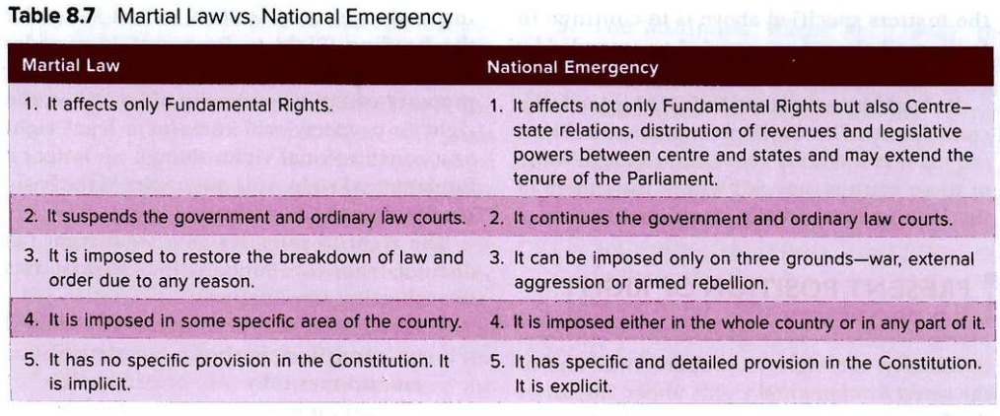
- Effecting Certain Fundamental Rights - Article 35 lays down that the power to make laws, to give effect to certain specified fundamental rights, shall vest only in the Parliament and not in the state legislatures. This provision ensures that there is uniformity throughout India with regard to the nature of those fundamental rights and punishment for their infringement. In this direction, Article 35 contains the following provisions: - 1. The Parliament shall have (and the legislature of a state shall not have) power to make laws with respect to the following matters: - (a) Prescribing residence as a condition for certain employments or appointments in a state or union territory or local authority or other authority (Article 16). - (b) Empowering courts other than the Supreme Court and the high courts to issue directions, orders and writs of all kinds for the enforcement of fundamental rights (Article 32). - (c) Restricting or abrogating the application of Fundamental Rights to members of armed forces, police forces, etc. (Article 33). - (d) Indemnifying any government servant or any other person for any act done during the operation of martial law in any area (Article 34). - 2. Parliament shall have (and the legislature of a state shall not have) powers to make laws for prescribing punishment for those acts that are declared to be offences under the fundamental rights. These include the following: - (a) Untouchability (Article 17). - (b) Traffic in human beings and forced labour (Article 23). - Further, the Parliament shall, after the commencement of the Constitution, make laws for prescribing punishment for the above acts, thus making it obligatory on the part of the Parliament to enact such laws. - 3. Any law in force at the commencement of the Constitution with respect to any of the matters specified above is to continue in force until altered, repealed or amended by the Parliament. - It should be noted that Article 35 extends the competence of the Parliament to make a law on the matters specified above, even though some of those matters may fall within the sphere of the state legislatures (i.e., State List). - Present Position of Right to Property - Originally, the right to property was one of the seven fundamental rights under Part III of the Constitution. It was dealt with by Article 19(1)(f) and Article 31. Article 19(1)(f) guaranteed to every citizen the right to acquire, hold and dispose of property. Article 31, on the other hand, guaranteed to every person, whether citizen or non-citizen, the right against deprivation of his/her property. It provided that no person shall be deprived of his/her property except by authority of law. It empowered the State to acquire or requisition the property of a person on two conditions: (a) it should be for a public purpose, and (b) it should provide for payment of compensation to the owner. - Since the commencement of the Constitution, the Fundamental Right to Property has been the most controversial. It has caused confrontations between the Supreme Court and the Parliament. It has led to a number of Constitutional amendments, namely, the 1st, 4th, 7th, 25th, 39th, 40th and 42nd Amendments. Through these amendments, Articles 31A, 31B and 31C have been added and modified from time to time to nullify the effect of Supreme Court judgements and to protect certain laws from being challenged on the grounds of contravention of Fundamental Rights. Most of the litigation centred around the obligation of the state to pay compensation for the acquisition or requisition of private property. - Therefore, the 44th Amendment Act of 1978 abolished the right to property as a Fundamental Right by repealing Article 19(1)(f) and Article 31 from Part III. Instead, the Act inserted a new Article 300A in Part XII under the heading 'Right to Property'. It provides that no person shall be deprived of his/her property except by authority of law. Thus, the right to property still remains a legal right or a constitutional right, though no longer a fundamental right. It is not a part of the basic structure of the Constitution. - The right to property as a legal right (as distinct from Fundamental Rights) has the following implications: - (a) It can be regulated, i.e., curtailed, abridged or modified without constitutional amendment by an ordinary law of the Parliament. - (b) It protects private property against executive action but not against legislative action. - (c) In case of violation, the aggrieved person cannot directly move the Supreme Court under Article 32 (right to constitutional remedies including writs) for its enforcement. He/she can move the High Court under Article 226. - (d) No guaranteed right to compensation in case of acquisition or requisition of private property by the state. - Though the Fundamental Right to Property under Part III has been abolished, Part III still carries two provisions which provide for the guaranteed right to compensation in case of acquisition or requisition of private property by the state. These two cases where compensation has to be paid are: - (a) When the State acquires the property of a minority educational institution (Article 30); and - (b) When the State acquires the land held by a person under his personal cultivation and the land is within the statutory ceiling limits (Article 31A). - The first provision was added by the 44th Amendment Act (1978), while the second provision was added by the 17th Amendment Act (1964). - Further, Articles 31A, 31B and 31C have been retained as exceptions to the fundamental rights. - Exceptions to Fundamental Rights - 1. Saving of Laws Providing for Acquisition of Estates, etc. - Article 31A, added by the 1st Constitutional Amendment Act of 1951 and amended by the 4th, 17th and 44th Amendments, saves five categories of laws from being challenged and invalidated on the ground of contravention of the fundamental rights conferred by Article 14 (equality before law and equal protection of laws) and Article 19 (protection of six rights in respect of speech, assembly, movement, etc.). They are related to agricultural land reforms, industry and commerce and include the following: - (a) Acquisition of estates (the expression 'estate' includes any jagir, inam, muafi or other similar grant, any janmam right in Tamil Nadu and Kerala and any land held for agricultural purposes) and related rights by the State; - (b) Taking over the management of properties by the State; - (c) Amalgamation of corporations; - (d) Extinguishment or modification of rights of directors or shareholders of corporations; and - (e) Extinguishment or modification of mining leases. - Article 31A does not immunise a state law from judicial review unless it has been reserved for the President's consideration and has received his/her assent. - This Article also provides for the payment of compensation at market value when the state acquires the land held by a person under his/her personal cultivation and the land is within the statutory ceiling limit. - 2. Validation of Certain Acts and Regulations - Article 31B saves the acts and regulations included in the Ninth Schedule, added by the 1st Constitutional Amendment Act of 1951, from being challenged and invalidated on the ground of contravention of any of the fundamental rights. Thus, the scope of Article 31B is wider than Article 31A. Article 31B immunises any law included in the Ninth Schedule from all the fundamental rights, whether or not the law falls under any of the five categories specified in Article 31A. - However, in the Kesavananda Bharati case (1973), the Supreme Court ruled that the acts and regulations included in the Ninth Schedule are open to challenge on the grounds of being violative of the basic structure of the Constitution. This was later clarified by the Court in the Waman Rao case (1980), wherein it held that the various acts and regulations included in the Ninth Schedule after 24 April 1973 (date of judgement in the Kesavananda Bharati case) are valid only if they do not damage the basic structure of the Constitution. - Again, in the I.R. Coelho case (2007), the Supreme Court reaffirmed the above view. In this case, the Court ruled that there could not be any blanket immunity from judicial review of the laws included in the Ninth Schedule. It held that judicial review is a 'basic feature' of the Constitution and it could not be taken away by putting a law under the Ninth Schedule. It said that the laws placed under the Ninth Schedule after 24 April 1973 are open to challenge in court if they violated fundamental rights guaranteed under Articles 14, 15, 19 and 21 or the basic structure of the Constitution. - Originally (in 1951), the Ninth Schedule contained only 13 acts and regulations, but at present, their number is 282. Of these, the acts and regulations of the state legislature deal with land reforms and abolition of the zamindari system, and those of the Parliament deal with other matters. - Though the last entry is numbered 284, the actual total number is 282. This is because three entries (87, 92 and 130) have been deleted and one entry is numbered as 257A. - 3. Saving of Laws Giving Effect to Certain Directive Principles - Article 31C, inserted by the 25th Amendment Act of 1971, contains the following two provisions: - (a) No law that seeks to implement the socialistic directive principles specified in Article 39(b) or (c) shall be void on the ground of contravention of the fundamental rights conferred by Article 14 (equality before law and equal protection of laws) or Article 19 (protection of six rights in respect of speech, assembly, movement, etc.). - Article 39(b) says: The State shall direct its policy towards securing that the ownership and control of the material resources of the community are so distributed as best to subserve the common good. - Article 39(c) says: The State shall direct its policy towards securing that the operation of the economic system does not result in the concentration of wealth and means of production to the common detriment. - (b) No law containing a declaration that it is for giving effect to such policy shall be questioned in any court on the ground that it does not give effect to such a policy. - In the Kesavananda Bharati case (1973), the Supreme Court declared the above (b) provision as unconstitutional and invalid on the ground that judicial review is a basic feature of the Constitution and hence cannot be taken away. However, the above (a) provision was held to be constitutional and valid. - The 42nd Amendment Act (1976) extended the scope of the above (a) provision by including within its protection any law to implement any of the directive principles specified in Part IV of the Constitution and not merely in Article 39(b) or (c). However, this extension was declared as unconstitutional and invalid by the Supreme Court in the Minerva Mills case (1980). - Article 31C does not immunise a state law from judicial review unless it has been reserved for the President's consideration and has received his/her assent. - Criticism of Fundamental Rights - The Fundamental Rights enshrined in Part III of the Constitution have met with wide and varied criticism. The arguments of the critics are as follows: - 1. Excessive Limitations - They are subjected to innumerable exceptions, restrictions, qualifications and explanations. Hence, the critics remarked that the Constitution grants Fundamental Rights with one hand and takes them away with the other. Jaspal Roy Kapoor went to the extent of saying that the chapter dealing with the fundamental rights should be renamed as 'Limitations on Fundamental Rights' or 'Fundamental Rights and Limitations Thereon'. - 2. No Social and Economic Rights - The list is not comprehensive as it mainly consists of political rights. It makes no provision for important social and economic rights like the right to social security, right to work, right to employment, right to rest and leisure, and so on. These rights are made available to the citizens of advanced democratic countries. Also, the socialistic constitutions of the erstwhile USSR or China provided for such rights. - 3. No Clarity - They are stated in a vague, indefinite and ambiguous manner. The various phrases and words used in the chapter, like 'public order', 'minorities', 'reasonable restriction', 'public interest' and so on, are not clearly defined. The language used to describe them is very complicated and beyond the comprehension of the common man. It is alleged that the Constitution was made by the lawyers for the lawyers. Sir Ivor Jennings called the Constitution of India a 'paradise for lawyers'. - 4. No Permanency - They are not sacrosanct or immutable as the Parliament can curtail or abolish them, as, for example, the abolition of the fundamental right to property in 1978. Hence, they can become a play tool in the hands of politicians having majority support in the Parliament. The judicially innovated 'doctrine of basic structure' is the only limitation on the authority of Parliament to curtail or abolish the fundamental right. - 5. Suspension During Emergency - The suspension of their enforcement during the operation of a National Emergency (except Articles 20 and 21) is another blot on the efficacy of these rights. This provision cuts at the roots of the democratic system in the country by placing the rights of millions of innocent people in continuous jeopardy. According to the critics, the Fundamental Rights should be enjoyable in all situations—Emergency or no Emergency. - 6. Expensive Remedy - The judiciary has been made responsible for defending and protecting these rights against the interference of the legislatures and executives. However, the judicial process is too expensive and hinders the common man from getting his/her rights enforced through the courts. Hence, the critics say that the rights benefit mainly the rich section of Indian society. - 7. Preventive Detention - The critics assert that the provision for preventive detention (Article 22) takes away the spirit and substance of the chapter on fundamental rights. It confers arbitrary powers on the State and negates individual liberty. It justifies the criticism that the Constitution of India deals more with the rights of the State against the individual than with the rights of the individual against the State. Notably, no democratic country in the world has made preventive detention an integral part of their Constitutions as has been made in India. - 8. No Consistent Philosophy - According to some critics, the chapter on fundamental rights is not the product of any philosophical principle. Sir Ivor Jennings expressed this view when he said that the Fundamental Rights proclaimed by the Indian Constitution are based on no consistent philosophy. The critics say that this creates difficulty for the Supreme Court and the high courts in interpreting the fundamental rights. - Sir Ivor Jennings wrote: 'A thread of nineteenth-century liberalism runs through it; there are consequences of the political problems of Britain in it; there are relics of the bitter experience in opposition to British rule; and there is evidence of a desire to reform some of the social institutions which time and circumstances have developed in India. The result is a series of complex formulae, in twenty-four articles, some of them lengthy, which must become the basis of a vast and complicated case law.' - Significance of Fundamental Rights - In spite of the above criticism and shortcomings, the Fundamental Rights are significant in the following respects: - 1. They constitute the bedrock of the democratic system in the country. - 2. They provide necessary conditions for the material and moral protection of man. - 3. They serve as a formidable bulwark of individual liberty. - 4. They facilitate the establishment of the rule of law in the country. - 5. They protect the interests of minorities and weaker sections of society. - 6. They strengthen the secular fabric of the Indian State. - 7. They check the absoluteness of the authority of the government. - 8. They lay down the foundation stone of social equality and social justice. - 9. They ensure the dignity and respect of individuals. - 10. They facilitate the participation of people in the political and administrative process. - Rights Outside Part III - Besides the Fundamental Rights included in Part III, there are certain other rights contained in other parts of the Constitution. These rights are known as constitutional rights, legal rights or non-fundamental rights. They are: - 1. No tax shall be levied or collected except by authority of law (Article 265 in Part XII). - 2. No person shall be deprived of his/her property save by authority of law (Article 300A in Part XII). - 3. Trade, commerce and intercourse throughout the territory of India shall be free (Article 301 in Part XIII). - 4. The elections to the Lok Sabha and the State Legislative Assembly shall be on the basis of adult suffrage (Article 326 in Part XV). - Even though the above rights are equally justiciable, they are different from the Fundamental Rights. In case of violation of a Fundamental Right, the aggrieved person can directly move the Supreme Court for its enforcement under Article 32, which is in itself a fundamental right. But, in case of violation of the above rights, the aggrieved person cannot avail this constitutional remedy. He/she can move the High Court by an ordinary suit or under Article 226 (writ jurisdiction of high court). -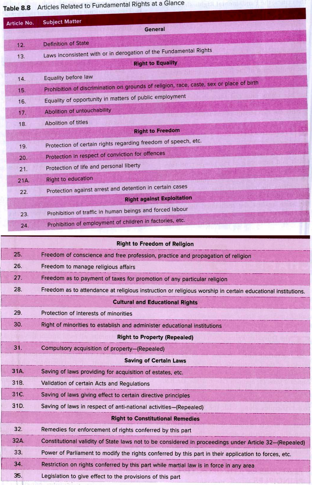
- CHAPTER 9: Directive Principles of State Policy - The Directive Principles of State Policy - The Directive Principles of State Policy are enumerated in Part IV of the Constitution from Articles 36 to 51. The framers of the Constitution borrowed this idea from the Irish Constitution of 1937, which had copied it from the Spanish Constitution. Dr. B.R. Ambedkar described these principles as 'novel features' of the Indian Constitution. The Directive Principles, along with the Fundamental Rights, contain the philosophy of the Constitution and are the soul of the Constitution. Granville Austin has described the Directive Principles and the Fundamental Rights as the 'Conscience of the Constitution'. - Actually, Directive Principles are mentioned in Articles 38 to 51. Article 36 deals with the definition of state, while Article 37 deals with the nature and significance of Directive Principles. - Granville Austin, The Indian Constitution—Cornerstone of a Nation, Oxford, 1966, p. 75. - Features of the Directive Principles - 1. The phrase 'Directive Principles of State Policy' denotes the ideals that the State should keep in mind while formulating policies and enacting laws. These are the constitutional instructions or recommendations to the State in legislative, executive, and administrative matters. According to Article 36, the term 'State' in Part IV has the same meaning as in Part III dealing with Fundamental Rights. Therefore, it includes the legislative and executive organs of the central and state governments, all local authorities, and all other public authorities in the country. - 2. The Directive Principles resemble the 'Instrument of Instructions' enumerated in the Government of India Act of 1935. In the words of Dr. B.R. Ambedkar, 'the Directive Principles are like the instrument of instructions, which were issued to the Governor-General and to the Governors of the colonies of India by the British Government under the Government of India Act of 1935. What is called Directive Principles is merely another name for the instrument of instructions. The only difference is that they are instructions to the legislature and the executive'. - 3. The Directive Principles constitute a very comprehensive economic, social, and political programme for a modern democratic State. They aim at realising the high ideals of justice, liberty, equality, and fraternity as outlined in the Preamble to the Constitution. They embody the concept of a 'welfare state' and not that of a 'police state', which existed during the colonial era. In brief, they seek to establish economic and social democracy in the country. - A 'Police State' is mainly concerned with the maintenance of law and order and defence of the country against external aggression. Such a restrictive concept of state is based on the nineteenth-century theory of individualism or laissez-faire. - 4. The Directive Principles are non-justiciable in nature, that is, they are not legally enforceable by the courts for their violation. Therefore, the government (Central, state, and local) cannot be compelled to implement them. Nevertheless, the Constitution (Article 37) itself says that these principles are fundamental in the governance of the country and it shall be the duty of the State to apply these principles in making laws. - 5. The Directive Principles, though non-justiciable in nature, help the courts in examining and determining the constitutional validity of a law. The Supreme Court has ruled many times that in determining the constitutionality of any law, if a court finds that the law in question seeks to give effect to a Directive Principle, it may consider such law to be 'reasonable' in relation to Article 14 (equality before law) or Article 19 (six freedoms) and thus save such law from unconstitutionality. - Classification of the Directive Principles - The Constitution does not contain any classification of Directive Principles. However, on the basis of their content and direction, they can be classified into three broad categories, viz., socialistic, Gandhian, and liberal-intellectual. - Socialistic Principles - These principles reflect the ideology of socialism. They lay down the framework of a democratic socialist state, aim at providing social and economic justice, and set the path towards welfare state. They direct the state: - 1. To promote the welfare of the people by securing a social order permeated by justice—social, economic, and political—and to minimise inequalities in income, status, facilities, and opportunities (Article 38). - The second aspect of this provision was added by the 44th Constitutional Amendment Act of 1978. - 2. To secure (a) the right to adequate means of livelihood for all citizens; (b) the equitable distribution of material resources of the community for the common good; (c) prevention of concentration of wealth and means of production; (d) equal pay for equal work for men and women; (e) preservation of the health and strength of workers and children against forcible abuse; and (f) opportunities for healthy development of children and protection of childhood and youth against exploitation and against moral and material abandonment (Article 39). - The first aspect of point (f) was added by the 42nd Constitutional Amendment Act of 1976. - 3. To promote equal justice and to provide free legal aid to the poor (Article 39A). - This Directive was added by the 42nd Constitutional Amendment Act of 1976. - 4. To secure the right to work, to education, and to public assistance in cases of unemployment, old age, sickness, and disablement (Article 41). - 5. To make provision for just and humane conditions of work and maternity relief (Article 42). - 6. To secure a living wage, a decent standard of life, and social and cultural opportunities for all workers (Article 43). - 'Living wage' is different from 'minimum wage', which includes the bare needs of life like food, shelter, and clothing. In addition to these bare needs, a 'living wage' includes education, health, insurance, etc. A 'fair wage' is a mean between 'living wage' and 'minimum wage'. - 7. To take steps to secure the participation of workers in the management of industries (Article 43A). - This Directive was added by the 42nd Constitutional Amendment Act of 1976. - 8. To raise the level of nutrition and the standard of living of people and to improve public health (Article 47). - Gandhian Principles - These principles are based on Gandhian ideology. They represent the programme of reconstruction enunciated by Gandhi during the national movement. In order to fulfil the dreams of Gandhi, some of his ideas were included as Directive Principles. They require the State: - 1. To organise village panchayats and endow them with necessary powers and authority to enable them to function as units of self-government (Article 40). - 2. To promote cottage industries on an individual or co-operation basis in rural areas (Article 43). - 3. To promote voluntary formation, autonomous functioning, democratic control, and professional management of co-operative societies (Article 43B). - This Directive was added by the 97th Constitutional Amendment Act of 2011. - 4. To promote the educational and economic interests of SCs, STs, and other weaker sections of the society and to protect them from social injustice and exploitation (Article 46). - 5. To prohibit the consumption of intoxicating drinks and drugs which are injurious to health (Article 47). - 6. To prohibit the slaughter of cows, calves, and other milch and draught cattle and to improve their breeds (Article 48). - Liberal-Intellectual Principles - The principles included in this category represent the ideology of liberalism. They direct the state: - 1. To secure for all citizens a uniform civil code throughout the country (Article 44). - 2. To provide early childhood care and education for all children until they complete the age of six years (Article 45). - This Directive was changed by the 86th Constitutional Amendment Act of 2002. Originally, it made a provision for free and compulsory education for all children until they complete the age of 14 years. - 3. To organise agriculture and animal husbandry on modern and scientific lines (Article 48). - 4. To protect and improve the environment and to safeguard forests and wild life (Article 48A). - This Directive was added by the 42nd Constitutional Amendment Act of 1976. - 5. To protect monuments, places, and objects of artistic or historic interest which are declared to be of national importance (Article 49). - 6. To separate the judiciary from the executive in the public services of the State (Article 50). - 7. To promote international peace and security and maintain just and honourable relations between nations; to foster respect for international law and treaty obligations, and to encourage settlement of international disputes by arbitration (Article 51). - New Directive Principles - The 42nd Amendment Act of 1976 added four new Directive Principles to the original list. They require the State: - 1. To secure opportunities for healthy development of children (Article 39). - 2. To promote equal justice and to provide free legal aid to the poor (Article 39A). - 3. To take steps to secure the participation of workers in the management of industries (Article 43A). - 4. To protect and improve the environment and to safeguard forests and wild life (Article 48A). - The 44th Amendment Act of 1978 added one more Directive Principle, which requires the State to minimise inequalities in income, status, facilities, and opportunities (Article 38). - The 86th Amendment Act of 2002 changed the subject-matter of Article 45 and made elementary education a fundamental right under Article 21A. The amended directive requires the State to provide early childhood care and education for all children until they complete the age of six years. - The 97th Amendment Act of 2011 added a new Directive Principle relating to co-operative societies. It requires the state to promote voluntary formation, autonomous functioning, democratic control, and professional management of co-operative societies (Article 43B). - Sanction Behind Directive Principles - Sir B.N. Rau, the Constitutional Advisor to the Constituent Assembly, recommended that the rights of an individual should be divided into two categories—justiciable and non-justiciable, which was accepted by the Drafting Committee. Consequently, the Fundamental Rights, which are justiciable in nature, are incorporated in Part III, and the Directive Principles, which are non-justiciable in nature, are incorporated in Part IV of the Constitution. The specific differences between the two are summarised in Table 9.1. - Though the Directive Principles are non-justiciable, the Constitution (Article 37) makes it clear that 'these principles are fundamental in the governance of the country and it shall be the duty of the state to apply these principles in making laws'. - Thus, they impose a moral obligation on the state authorities for their application, but the real force behind them is political, that is, public opinion. As observed by Alladi Krishna Swamy Ayyar, 'no ministry responsible to the people can afford light-heartedly to ignore the provisions in Part IV of the Constitution'. Similarly, Dr. B.R. Ambedkar said in the Constituent Assembly that 'a government which rests on popular vote can hardly ignore the Directive Principles while shaping its policy. If any government ignores them, it will certainly have to answer for that before the electorate at the election time'. - The framers of the Constitution made the Directive Principles non-justiciable and legally non-enforceable because: - 1. The country did not possess sufficient financial resources to implement them. - 2. The presence of vast diversity and backwardness in the country would stand in the way of their implementation. - 3. The newly born independent Indian State with its many preoccupations might be crushed under the burden unless it was free to decide the order, the time, the place, and the mode of fulfilling them. - 'The Constitution makers, therefore, taking a pragmatic view, refrained from giving teeth to these principles. They believed more in an awakened public opinion rather than in court procedures as the ultimate sanction for the fulfilment of these principles', M.P. Jain, Indian Constitutional Law, Wadhwa, Third Edition (1978), p. 595. -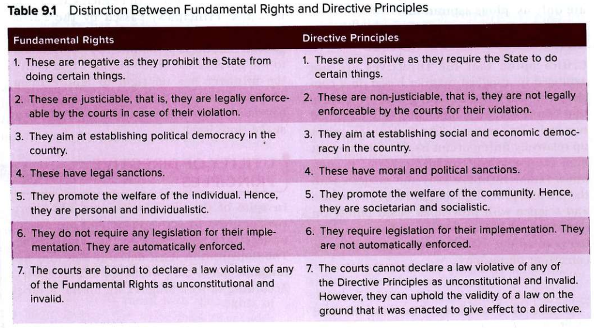
- Criticism of the Directive Principles - The Directive Principles of State Policy have been criticised by some members of the Constituent Assembly as well as other constitutional and political experts on the following grounds: - 1. No Legal Force - The Directives have been criticised mainly because of their non-justiciable character. While K.T. Shah dubbed them as 'pious superfluities' and compared them with 'a cheque on a bank, payable only when the resources of the bank permit', Nasiruddin contended that these principles are 'no better than the new year's resolutions, which are broken on the second of January'. Even as T.T. Krishnamachari described the Directives as 'a veritable dustbin of sentiments', K.C. Wheare called them as a 'manifesto of aims and aspirations' and opined that they serve as mere 'moral homily', and Sir Ivor Jennings thought they are only as 'pious aspirations'. - 2. Illogically Arranged - Critics opine that the Directives are not arranged in a logical manner based on a consistent philosophy. According to N. Srinivasan, 'the Directives are neither properly classified nor logically arranged. The declaration mixes up relatively unimportant issues with the most vital economic and social questions. It combines rather incongruously the modern with the old and provisions suggested by the reason and science with provisions based purely on sentiment and prejudice'. Sir Ivor Jennings too pointed out that these principles have no consistent philosophy. - 3. Conservative - According to Sir Ivor Jennings, the Directives are based on the political philosophy of the 19th-century England. He remarked: 'The ghosts of Sydney Webb and Beatrice Webb stalk through the pages of the text. Part IV of the Constitution expresses Fabian Socialism without the socialism'. He opined that the Directives 'are deemed to be suitable in India in the middle of the twentieth century. The question whether they are suitable for the twenty-first century cannot be answered; but it is quite probable that they will be entirely outmoded'. - 4. Constitutional Conflict - K. Santhanam has pointed out that the Directives lead to a constitutional conflict (a) between the Centre and the states, (b) between the President and the Prime Minister, and (c) between the governor and the chief minister. According to him, the Centre can give directions to the states with regard to the implementation of these principles, and in case of non-compliance, can dismiss the state government. Similarly, when the Prime Minister gets a bill (which violates the Directive Principles) passed by the Parliament, the president may reject the bill on the ground that these principles are fundamental to the governance of the country and hence, the ministry has no right to ignore them. The same constitutional conflict may occur between the governor and the chief minister at the state level. - Utility of Directive Principles - In spite of the above criticisms and shortcomings, the Directive Principles are not an unnecessary appendage to the Constitution. The Constitution itself declares that they are fundamental to the governance of the country. According to L.M. Singhvi, an eminent jurist and diplomat, 'the Directives are the life-giving provisions of the Constitution. They constitute the stuff of the Constitution and its philosophy of social justice' (Journal of Constitutional and Parliamentary Studies, June 1975). M.C. Chagla, former Chief Justice of India, is of the opinion that, 'if all these principles are fully carried out, our country would indeed be a heaven on earth. India would then be not only democracy in the political sense, but also a welfare state looking after the welfare of its citizens' (M.C. Chagla, An Ambassador Speaks, p. 35). Dr. B.R. Ambedkar had pointed out that the Directives have great value because they lay down that the goal of Indian polity is 'economic democracy' as distinguished from 'political democracy'. Granville Austin opined that the Directive Principles are 'aimed at furthering the goals of the social revolution or to foster this revolution by establishing the conditions necessary for its achievement' (Granville Austin, The Indian Constitution—Cornerstone of a Nation, Oxford, 1966, pp. 50–52). Sir B.N. Rau, the constitutional advisor to the Constituent Assembly, stated that the Directive Principles are intended as 'moral precepts for the authorities of the state. They have at least an educative value'. - According to M.C. Setalvad, the former Attorney General of India, the Directive Principles, although confer no legal rights and create no legal remedies, are significant and useful in the following ways: - 1. They are like an 'Instrument of Instructions' or general recommendations addressed to all authorities in the Indian Union. They remind them of the basic principles of the new social and economic order, which the Constitution aims at building. - 2. They have served as useful beacon-lights to the courts. They have helped the courts in exercising their power of judicial review, that is, the power to determine the constitutional validity of a law. - 3. They form the dominating background to all State action, legislative or executive, and also a guide to the courts in some respects. - 4. They amplify the Preamble, which solemnly resolves to secure to all citizens of India justice, liberty, equality, and fraternity. - The Directives also play the following roles: - 1. They facilitate stability and continuity in domestic and foreign policies in political, economic, and social spheres in spite of the changes of the party in power. - 2. They are supplementary to the fundamental rights of the citizens. They are intended to fill in the vacuum in Part III by providing for social and economic rights. - 3. Their implementation creates a favourable atmosphere for the full and proper enjoyment of the fundamental rights by the citizens. Political democracy, without economic democracy, has no meaning. - 4. They enable the opposition to exercise influence and control over the operations of the government. The Opposition can blame the ruling party on the ground that its activities are opposed to the Directives. - 5. They serve as a crucial test for the performance of the government. The people can examine the policies and programmes of the government in the light of these constitutional declarations. - 6. They serve as common political manifesto. 'A ruling party, irrespective of its political ideology, has to recognise the fact that these principles are intended to be its guide, philosopher, and friend in its legislative and executive acts' (P.B. Gajendragadkar, The Constitution of India (Its Philosophy and Postulates), p. 11). - Conflict Between Fundamental Rights and Directive Principles - The justiciability of Fundamental Rights and non-justiciability of Directive Principles on the one hand and the moral obligation of State to implement Directive Principles (Article 37) on the other hand have led to a conflict between the two since the commencement of the Constitution. In the Champakam Dorairajan case (State of Madras vs. Champakam Dorairajan, 1951), the Supreme Court ruled that in case of any conflict between the Fundamental Rights and the Directive Principles, the former would prevail. It declared that the Directive Principles have to conform to and run as subsidiary to the Fundamental Rights. But, it also held that the Fundamental Rights could be amended by the Parliament by enacting constitutional amendment acts. As a result, the Parliament made the First Amendment Act (1951), the Fourth Amendment Act (1955), and the Seventeenth Amendment Act (1964) to implement some of the Directives. - The above situation underwent a major change in 1967 following the Supreme Court's judgement in the Golaknath case (Golak Nath vs. State of Punjab, 1967). In that case, the Supreme Court ruled that the Parliament cannot take away or abridge any of the Fundamental Rights, which are 'sacrosanct' in nature. In other words, the Court held that the Fundamental Rights cannot be amended for the implementation of the Directive Principles. - The Parliament reacted to the Supreme Court's judgement in the Golaknath case (1967) by enacting the 24th Amendment Act (1971) and the 25th Amendment Act (1971). The 24th Amendment Act declared that the Parliament has the power to abridge or take away any of the Fundamental Rights by enacting Constitutional Amendment Acts. The 25th Amendment Act inserted a new Article 31C which contained the following two provisions: - 1. No law which seeks to implement the socialistic Directive Principles specified in Article 39 (b) and (c) shall be void on the ground of contravention of the Fundamental Rights conferred by Article 14 (equality before law and equal protection of laws), Article 19 (protection of six rights in respect of speech, assembly, movement, etc.), or Article 31 (right to property). - Article 39 (b) says: The State shall direct its policy towards securing that the ownership and control of the material resources of the community are so distributed as best to subserve the common good. - Article 39 (c) says: The State shall direct its policy towards securing that the operation of the economic system does not result in the concentration of wealth and means of production to the common detriment. - 2. No law containing a declaration for giving effect to such policy shall be questioned in any court on the ground that it does not give effect to such a policy. - In the Kesavananda Bharati case (Kesavananda Bharati vs. State of Kerala, 1973), the Supreme Court declared the above second provision of Article 31C as unconstitutional and invalid on the ground that judicial review is a basic feature of the Constitution and hence, cannot be taken away. However, the above first provision of Article 31C was held to be constitutional and valid. - Later, the 42nd Amendment Act (1976) extended the scope of the above first provision of Article 31C by including within its protection any law to implement any of the Directive Principles and not merely those specified in Article 39 (b) and (c). In other words, the 42nd Amendment Act accorded the position of legal primacy and supremacy to the Directive Principles over the Fundamental Rights conferred by Articles 14, 19, and 31. However, this extension was declared as unconstitutional and invalid by the Supreme Court in the Minerva Mills case (Minerva Mills vs. Union of India, 1980). It means that the Directive Principles were once again made subordinate to the Fundamental Rights. But the Fundamental Rights conferred by Article 14 and Article 19 were accepted as subordinate to the Directive Principles specified in Article 39 (b) and (c). Further, Article 31 (right to property) was omitted by the 44th Amendment Act (1978). - In the Minerva Mills case (1980), the Supreme Court also held that 'the Indian Constitution is founded on the bedrock of the balance between the Fundamental Rights and the Directive Principles. They together constitute the core of commitment to social revolution. They are like two wheels of a chariot, one no less than the other. To give absolute primacy to one over the other is to disturb the harmony of the Constitution. This harmony and balance between the two is an essential feature of the basic structure of the Constitution. The goals set out by the Directive Principles have to be achieved without the abrogation of the means provided by the Fundamental Rights'. - Therefore, the present position is that the Fundamental Rights enjoy supremacy over the Directive Principles. Yet, this does not mean that the Directive Principles cannot be implemented. The Parliament can amend the Fundamental Rights for implementing the Directive Principles, so long as the amendment does not damage or destroy the basic structure of the Constitution. - Implementation of Directive Principles - Since 1950, the successive governments at the Centre and in the states have made several laws and formulated various programmes for implementing the Directive Principles. These are mentioned below: - 1. The Planning Commission was established in 1950 to take up the development of the country in a planned manner. The successive Five Year Plans aimed at securing socio-economic justice and reducing inequalities of income, status, and opportunities. In 2015, the Planning Commission was replaced by a new body called NITI Aayog (National Institution for Transforming India). - 2. Almost all the states have passed land reform laws to bring changes in the agrarian society and to improve the conditions of the rural masses. These measures include (a) abolition of intermediaries like zamindars, jagirdars, inamdars, etc.; (b) tenancy reforms like security of tenure, fair rents, etc.; (c) imposition of ceilings on land holdings; (d) distribution of surplus land among the landless labourers; and (e) co-operative farming. - 3. The Minimum Wages Act (1948), the Payment of Wages Act (1936), the Payment of Bonus Act (1965), the Contract Labour Regulation and Abolition Act (1970), the Child Labour Prohibition and Regulation Act (1986), the Bonded Labour System Abolition Act (1976), the Trade Unions Act (1926), the Factories Act (1948), the Mines Act (1952), the Industrial Disputes Act (1947), the Workmen's Compensation Act (1923), and so on have been enacted to protect the interests of the labour sections. In 2006, the government banned child labour. In 2016, the Child Labour Prohibition and Regulation Act (1986) was renamed as the Child and Adolescent Labour Prohibition and Regulation Act, 1986. - 4. The Maternity Benefit Act (1961) and the Equal Remuneration Act (1976) have been made to protect the interests of women workers. - 5. Various measures have been taken to utilise the financial resources for promoting the common good. These include nationalisation of life insurance (1956), the nationalisation of fourteen leading commercial banks (1969), nationalisation of general insurance (1971), abolition of Privy Purses (1971), and so on. - 6. The Legal Services Authorities Act (1987) has established a nation-wide network to provide free and competent legal aid to the poor and to organise lok adalats for promoting equal justice. Lok adalat is a statutory forum for conciliatory settlement of legal disputes. It has been given the status of a civil court. Its awards are enforceable, binding on the parties, and final as no appeal lies before any court against them. - 7. Khadi and Village Industries Board, Khadi and Village Industries Commission, Small-Scale Industries Board, National Small Industries Corporation, Handloom Board, Handicrafts Board, Coir Board, Silk Board, and so on have been set up for the development of cottage industries in rural areas. - 8. The Community Development Programme (1952), Hill Area Development Programme (1960), Drought-Prone Area Programme (1973), Minimum Needs Programme (1974), Integrated Rural Development Programme (1978), Jawahar Rozgar Yojana (1989), Swarnjayanti Gram Swarozgar Yojana (1999), Sampoorna Grameen Rozgar Yojana (2001), National Rural Employment Guarantee Programme (2006), and so on have been launched for raising the standard of living of people. - 9. The Wildlife (Protection) Act, 1972, and the Forest (Conservation) Act, 1980, have been enacted to safeguard the wildlife and the forests respectively. Further, the Water and Air Acts have provided for the establishment of the Central and State Pollution Control Boards, which are engaged in the protection and improvement of environment. The National Forest Policy (1988) aims at the protection, conservation, and development of forests. - 10. Agriculture has been modernised by providing improved agricultural inputs, seeds, fertilisers, and irrigation facilities. Various steps have also been taken to organise animal husbandry on modern and scientific lines. - 11. Three-tier panchayati raj system (at village, taluka, and zila levels) has been introduced to translate into reality Gandhiji’s dream of every village being a republic. The 73rd Amendment Act (1992) has been enacted to provide constitutional status and protection to these panchayati raj institutions. - 12. Seats are reserved for SCs, STs, and other weaker sections in educational institutions, government services, and representative bodies. The Untouchability (Offences) Act, 1955, which was renamed as the Protection of Civil Rights Act in 1976, and the Scheduled Castes and Scheduled Tribes (Prevention of Atrocities) Act, 1989, have been enacted to protect the SCs and STs from social injustice and exploitation. The 65th Constitutional Amendment Act of 1990 established the National Commission for Scheduled Castes and Scheduled Tribes to protect the interests of SCs and STs. Later, the 89th Constitutional Amendment Act of 2003 bifurcated this combined commission into two separate bodies, namely, National Commission for Scheduled Castes and National Commission for Scheduled Tribes. - 12a. Various national-level commissions have been established to promote and protect the social, educational, and economic interests of the weaker sections of the society. These include the National Commission for Backward Classes (1993), the National Commission for Minorities (1993), the National Commission for Women (1992), and the National Commission for Protection of Child Rights (2007). Further, the 102nd Amendment Act of 2018 conferred a constitutional status on the National Commission for Backward Classes and also enlarged its functions. - 12b. In 2019, the central government issued orders providing 10% reservation to the Economically Weaker Sections (EWSs) in admission to educational institutions and civil posts and services in the Government of India. The benefit of this reservation can be availed by the persons belonging to EWSs who are not covered under any of the existing schemes of reservations for SCs, STs, and OBCs. This reservation was facilitated by the 103rd Amendment Act of 2019. - 13. The Criminal Procedure Code (1973) separated the judiciary from the executive in the public services of the state. Prior to this separation, the district authorities like the collector, the sub-divisional officer, the tehsildar, and so on used to exercise judicial powers along with the traditional executive powers. After the separation, the judicial powers were taken away from these executive authorities and vested in the hands of district judicial magistrates who work under the direct control of the state high court. - 14. The Ancient and Historical Monument and Archaeological Sites and Remains Act (1951) has been enacted to protect the monuments, places, and objects of national importance. - 15. Primary health centres and hospitals have been established throughout the country to improve the public health. Also, special programmes have been launched to eradicate widespread diseases like malaria, TB, leprosy, AIDS, cancer, filaria, kala-azar, guineaworm, yaws, Japanese encephalitis, and so on. - 16. Laws to prohibit the slaughter of cows, calves, and bullocks have been enacted in some states. - 17. Some states have initiated the old age pension schemes for people above 65 years. - 18. India has been following the policy of non-alignment and panchsheel to promote international peace and security. - In spite of the above steps by the Central and state governments, the Directive Principles have not been implemented fully and effectively due to several reasons like inadequate financial resources, unfavourable socio-economic conditions, population explosion, strained Centre-state relations, and so on. - Directives Outside Part IV - Apart from the Directives included in Part IV, there are some other Directives contained in other Parts of the Constitution. They are: - 1. Claims of SCs and STs to Services: The claims of the members of the Scheduled Castes and the Scheduled Tribes shall be taken into consideration, consistently with the maintenance of efficiency of administration, in the making of appointments to services and posts in connection with the affairs of the Union or a State (Article 335 in Part XVI). - 2. Instruction in mother tongue: It shall be the endeavour of every state and every local authority within the state to provide adequate facilities for instruction in the mother-tongue at the primary stage of education to children belonging to linguistic minority groups (Article 350-A in Part XVII). - 3. Development of the Hindi Language: It shall be the duty of the Union to promote the spread of the Hindi language and to develop it so that it may serve as a medium of expression for all the elements of the composite culture of India (Article 351 in Part XVII). - The above Directives are also non-justiciable in nature. However, they are also given equal importance and attention by the judiciary on the ground that all parts of the constitution must be read together. -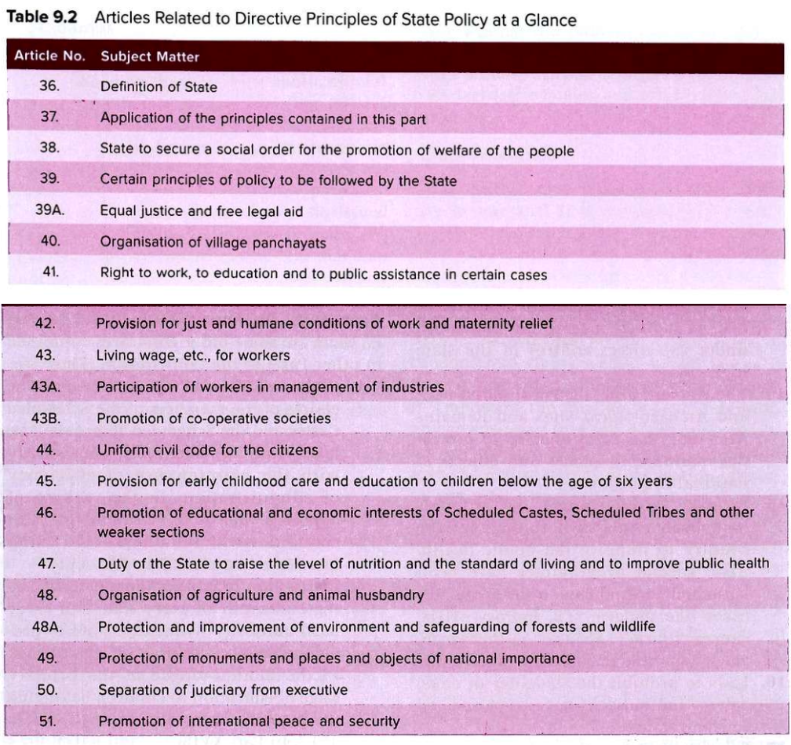
- CHAPTER 10: Fundamental Duties - Introduction - Though the rights and duties of the citizens are correlative and inseparable, the original Constitution contained only the Fundamental Rights and not the Fundamental Duties. In other words, the framers of the Constitution did not feel it necessary to incorporate the Fundamental Duties of the citizens in the Constitution. However, they incorporated the duties of the State in the Constitution in the form of Directive Principles of State Policy. Later in 1976, the Fundamental Duties of citizens were added in the Constitution. In 2002, one more Fundamental Duty was added. - The Fundamental Duties in the Indian Constitution are inspired by the Constitution of the erstwhile USSR. Notably, none of the Constitutions of major democratic countries like USA, Canada, France, Germany, Australia, and so on specifically contain a list of duties of citizens. Japanese Constitution is, perhaps, the only democratic Constitution in the world which contains a list of duties of citizens. The socialist countries, on the contrary, gave equal importance to the Fundamental Rights and duties of their citizens. Hence, the Constitution of the erstwhile USSR declared that the citizen’s exercise of their rights and freedoms was inseparable from the performance of their duties and obligations. - Swaran Singh Committee Recommendations - In 1976, the Congress Party set up the Sardar Swaran Singh Committee to make recommendations about Fundamental Duties, the need and necessity of which was felt during the operation of the internal emergency (1975–1977). The committee recommended the inclusion of a separate chapter on Fundamental Duties in the Constitution. It stressed that the citizens should become conscious that in addition to the enjoyment of rights, they also have certain duties to perform as well. - The Congress Government at the Centre accepted these recommendations and enacted the 42nd Constitutional Amendment Act in 1976. This amendment added a new part, namely, Part IVA to the Constitution. This new part consists of only one Article, that is, Article 51A which for the first time specified a code of ten Fundamental Duties of the citizens. The ruling Congress party declared the non-inclusion of Fundamental Duties in the Constitution as a historical mistake and claimed that what the framers of the Constitution failed to do was being done now. - Though the Swaran Singh Committee suggested the incorporation of eight Fundamental Duties in the Constitution, the 42nd Constitutional Amendment Act (1976) included ten Fundamental Duties. Interestingly, certain recommendations of the Committee were not accepted by the Congress Party and hence, not incorporated in the Constitution. These include: - 1. The Parliament may provide for the imposition of such penalty or punishment as may be considered appropriate for any non-compliance with or refusal to observe any of the duties. - 2. No law imposing such penalty or punishment shall be called in question in any court on the ground of infringement of any of Fundamental Rights or on the ground of repugnancy to any other provision of the Constitution. - 3. Duty to pay taxes should also be a Fundamental Duty of the citizens. - List of Fundamental Duties - According to Article 51A, it shall be the duty of every citizen of India: - (a) to abide by the Constitution and respect its ideals and institutions, the National Flag, and the National Anthem; - (b) to cherish and follow the noble ideals that inspired the national struggle for freedom; - (c) to uphold and protect the sovereignty, unity, and integrity of India; - (d) to defend the country and render national service when called upon to do so; - (e) to promote harmony and the spirit of common brotherhood amongst all the people of India transcending religious, linguistic, and regional or sectional diversities and to renounce practices derogatory to the dignity of women; - (f) to value and preserve the rich heritage of the country’s composite culture; - (g) to protect and improve the natural environment including forests, lakes, rivers, and wildlife and to have compassion for living creatures; - (h) to develop scientific temper, humanism, and the spirit of inquiry and reform; - (i) to safeguard public property and to abjure violence; - (j) to strive towards excellence in all spheres of individual and collective activity so that the nation constantly rises to higher levels of endeavour and achievement; and - (k) to provide opportunities for education to his/her child or ward between the age of six and fourteen years. This duty was added by the 86th Constitutional Amendment Act, 2002. - Features of the Fundamental Duties - Following points can be noted with regard to the characteristics of the Fundamental Duties: - 1. Some of them are moral duties while others are civic duties. For instance, cherishing noble ideals of freedom struggle is a moral precept and respecting the Constitution, National Flag, and National Anthem is a civic duty. - 2. They refer to such values which have been a part of the Indian tradition, mythology, religions, and practices. In other words, they essentially contain a codification of tasks integral to the Indian way of life. - 3. Unlike some of the Fundamental Rights which extend to all persons whether citizens or foreigners, the Fundamental Duties are confined to citizens only and do not extend to foreigners. - The Fundamental Rights guaranteed by Articles 14, 20, 21, 21A, 22, 23, 24, 25, 26, 27, and 28 are available to all persons whether citizens or foreigners. - 4. Like the Directive Principles, the Fundamental Duties are also non-justiciable. The Constitution does not provide for their direct enforcement by the courts. Moreover, there is no legal sanction against their violation. However, the Parliament is free to enforce them by suitable legislation. - Criticism of Fundamental Duties - The Fundamental Duties mentioned in Part IVA of the Constitution have been criticised on the following grounds: - 1. The list of duties is not exhaustive as it does not cover other important duties like casting vote, paying taxes, family planning, and so on. In fact, duty to pay taxes was recommended by the Swaran Singh Committee. - 2. Some of the duties are vague, ambiguous, and difficult to be understood by the common man. For example, different interpretations can be given to the phrases like ‘noble ideals’, ‘composite culture’, ‘scientific temper’, and so on. - D.D. Chawla, the then president of the National Forum of Lawyers and Legal Aid, Delhi, observed: ‘The duties may be spelt out in a more concrete form, one is left guessing the noble ideals. To some even the Bhagat Singh cult may be such an ideal as inspired our national struggle. Again what is the rich heritage of our composite culture and what is scientific temper, humanism, and the spirit of inquiry and reform? The values are beyond the ken of the general run of the people and carry no meaning to them. Duties should be such and so worded as to catch the imagination of the common man.’ D.D. Chawla, ‘The Concept of Fundamental Duties’, Socialist India (New Delhi), October 23, 1976, pp. 44–45. - 3. They have been described by the critics as a code of moral precepts due to their non-justiciable character. Interestingly, the Swaran Singh Committee had suggested for penalty or punishment for the non-performance of Fundamental Duties. - 4. Their inclusion in the Constitution was described by the critics as superfluous. This is because the duties included in the Constitution as fundamental would be performed by the people even though they were not incorporated in the Constitution. - C.K. Daphtary, former Attorney General of India, while opposing the inclusion of Fundamental Duties in the Constitution, said that more than 99.9 per cent of the citizens were law-abiding and there was no need to tell them about their duties. He argued that as long as the people are satisfied and contented, they willingly perform their duties. He said, ‘To tell them what their duties are implies that they are not content. If that is the case after 26 years, it is not their fault’. A.K. Sen also opposed the inclusion of Fundamental Duties in the Constitution and remarked, ‘A democratic set-up, instead of thriving on the willing cooperation and confidence of people, is reduced to the position of a harsh school master asking the student to stand upon the class room bench because he has not done the home work. To begin with, it were the people of India who created the Sovereign Democratic Republic of India in 1950, but the Republic is now claiming to be the master of the citizens enjoining habitual obedience to its command to do his duty. The state’s confidence in the citizens is obviously shaken’. - 5. The critics said that the inclusion of Fundamental Duties as an appendage to Part IV of the Constitution has reduced their value and significance. They should have been added after Part III so as to keep them on par with Fundamental Rights. - Significance of Fundamental Duties - In spite of criticisms and opposition, the Fundamental Duties are considered significant from the following viewpoints: - 1. They serve as a reminder to the citizens that while enjoying their rights, they should also be conscious of duties they owe to their country, their society, and to their fellow citizens. - 2. They serve as a warning against the anti-national and antisocial activities like burning the national flag, destroying public property, and so on. - 3. They serve as a source of inspiration for the citizens and promote a sense of discipline and commitment among them. They create a feeling that the citizens are not mere spectators but active participants in the realisation of national goals. - 4. They help the courts in examining and determining the constitutional validity of a law. In Mohan Kumar Singhania case (1991), the Supreme Court held that Article 51A (Fundamental Duties) can be used to interpret ambiguous laws in order to determine their constitutionality. Further, in Ramlila Maidan Incident case (2012), the court observed that a common thread runs through Parts III, IV, and IVA of the Constitution. One Part enumerates the Fundamental Rights, the second declares the fundamental principles of governance, and the third lays down the Fundamental Duties of the citizens. While interpreting any of these provisions, it shall always be advisable to examine the scope and impact of such interpretation on all the three constitutional aspects emerging from these Parts. - 5. They are enforceable by law. Hence, the Parliament can provide for the imposition of appropriate penalty or punishment for failure to fulfil any of them. - H.R. Gokhale, the then Law Minister, gave the following reason for incorporating the Fundamental Duties in the Constitution after twenty-six years of its inauguration: ‘In post-independent India, particularly on the eve of emergency in June 1975, a section of the people showed no anxiety to fulfil their fundamental obligations of respecting the established legal order … the provisions of chapter on Fundamental Duties would have a sobering effect on these restless spirits who have had a host of anti-national subversive and unconstitutional agitations in the past’. - Indira Gandhi, the then Prime Minister, justified the inclusion of Fundamental Duties in the Constitution and argued that their inclusion would help to strengthen democracy. She said, ‘the moral value of Fundamental Duties would be not to smother rights but to establish a democratic balance by making the people conscious of their duties equally as they are conscious of their rights’. - The Opposition in the Parliament strongly opposed the inclusion of Fundamental Duties in the Constitution by the Congress government. However, the new Janata Government headed by Morarji Desai in the post-emergency period did not annul the Fundamental Duties. Notably, the new government sought to undo many changes introduced in the Constitution by the 42nd Amendment Act (1976) through the 43rd Amendment Act (1977) and the 44th Amendment Act (1978). This shows that there was an eventual consensus on the necessity and desirability of including the Fundamental Duties in the Constitution. This is more clear with the addition of one more Fundamental Duty in 2002 by the 86th Amendment Act. - Verma Committee Observations - The Verma Committee on Fundamental Duties of the Citizens (1999) identified the existence of legal provisions for the implementation of some of the Fundamental Duties. They are mentioned below: - 1. The Prevention of Insults to National Honour Act (1971) prevents disrespect to the Constitution of India, the National Flag, and the National Anthem. - 2. The various criminal laws in force provide for punishments for encouraging enmity between different sections of people on grounds of language, race, place of birth, religion, and so on. - 3. The Protection of Civil Rights Act (1955) provides for punishments for offences related to caste and religion. - This Act was known as the Untouchability (Offences) Act till 1976. - 4. The Indian Penal Code (IPC) declares the imputations and assertions prejudicial to national integration as punishable offences. - 5. The Unlawful Activities (Prevention) Act of 1967 provides for the declaration of a communal organisation as an unlawful association. - 6. The Representation of People Act (1951) provides for the disqualification of members of the Parliament or a state legislature for indulging in corrupt practice, that is, soliciting votes on the ground of religion or promoting enmity between different sections of people on grounds of caste, race, language, religion, and so on. - 7. The Wildlife (Protection) Act of 1972 prohibits trade in rare and endangered species. - 8. The Forest (Conservation) Act of 1980 checks indiscriminate deforestation and diversion of forest land for non-forest purposes. - CHAPTER 11: Amendment of the Constitution - Introduction - Like any other written Constitution, the Constitution of India also provides for its amendment in order to adjust itself to the changing conditions and needs. However, the procedure laid down for its amendment is neither as easy as in Britain nor as difficult as in USA. In other words, the Indian Constitution is neither flexible nor rigid but a synthesis of both. - Article 368 in Part XX of the Constitution deals with the powers of Parliament to amend the Constitution and its procedure. It states that the Parliament may, in exercise of its constituent power, amend by way of addition, variation, or repeal any provision of the Constitution in accordance with the procedure laid down for the purpose. However, the Parliament cannot amend those provisions which form the ‘basic structure’ of the Constitution. This was ruled by the Supreme Court in the Kesavananda Bharati case (1973). - Procedure for Amendment - The procedure for the amendment of the Constitution as laid down in Article 368 is as follows: - 1. An amendment of the Constitution can be initiated only by the introduction of a bill for the purpose in either House of Parliament and not in the state legislatures. - 2. The bill can be introduced either by a minister or by a private member and does not require prior permission of the president. - 3. The bill must be passed in each House by a special majority, that is, a majority of the total membership of the House and a majority of two-thirds of the members of the House present and voting. - 4. Each House must pass the bill separately. In case of a disagreement between the two Houses, there is no provision for holding a joint sitting of the two Houses for the purpose of deliberation and passage of the bill. - 5. If the bill seeks to amend the federal provisions of the Constitution, it must also be ratified by the legislatures of half of the states by a simple majority, that is, a majority of the members of the House present and voting. - 6. After duly passed by both the Houses of Parliament and ratified by the state legislatures, where necessary, the bill is presented to the president for assent. - 7. The president must give his/her assent to the bill. He/she can neither withhold his/her assent to the bill nor return the bill for reconsideration of the Parliament. The 24th Constitutional Amendment Act of 1971 made it obligatory for the President to give his/her assent to a Constitutional Amendment Bill. - 8. After the president’s assent, the bill becomes an Act (i.e., a constitutional amendment act) and the Constitution stands amended in accordance with the terms of the Act. - Types of Amendments - Article 368 provides for two types of amendments, that is, by a special majority of Parliament and also through the ratification of half of the states by a simple majority. But, some other articles provide for the amendment of certain provisions of the Constitution by a simple majority of Parliament, that is, a majority of the members of each House present and voting (similar to the ordinary legislative process). Notably, these amendments are not deemed to be amendments of the Constitution for the purposes of Article 368. - Therefore, the Constitution can be amended in three ways: - (a) Amendment by simple majority of the Parliament, - (b) Amendment by special majority of the Parliament, and - (c) Amendment by special majority of the Parliament and the ratification of half of the state legislatures. - By Simple Majority of Parliament - A number of provisions in the Constitution can be amended by a simple majority of the two Houses of Parliament outside the scope of Article 368. These provisions include: - 1. Admission or establishment of new states. - 2. Formation of new states and alteration of areas, boundaries, or names of existing states. - 3. Abolition or creation of legislative councils in states. - 4. Second Schedule—emoluments, allowances, privileges, and so on of the president, the governors, the Speakers, judges, etc. - 5. Quorum in Parliament. - 6. Salaries and allowances of the members of Parliament. - 7. Rules of procedure in Parliament. - 8. Privileges of the Parliament, its members, and its committees. - 9. Use of English language in Parliament. - 10. Number of puisne judges in the Supreme Court. - 11. Conferment of more jurisdiction on the Supreme Court. - 12. Use of official language. - 13. Citizenship—acquisition and termination. - 14. Elections to Parliament and state legislatures. - 15. Delimitation of constituencies. - 16. Union territories. - 17. Fifth Schedule—administration of scheduled areas and scheduled tribes. - 18. Sixth Schedule—administration of tribal areas. - By Special Majority of Parliament - The majority of the provisions in the Constitution need to be amended by a special majority of the Parliament, that is, a majority of the total membership of each House and a majority of two-thirds of the members of each House present and voting. The expression ‘total membership’ means the total number of members comprising the House irrespective of whether there are vacancies or absentees. - ‘Strictly speaking, the special majority is required only for voting at the third reading stage of the bill but by way of abundant caution the requirement for special majority has been provided for in the rules of the Houses in respect of all the effective stages of the bill.’ Subhash C. Kashyap, Our Parliament, National Book Trust, 1999, p. 168. - The provisions which can be amended by this way include: (i) Fundamental Rights; (ii) Directive Principles of State Policy; and (iii) All other provisions which are not covered by the first and third categories. - By Special Majority of Parliament and Consent of States - Those provisions of the Constitution which are related to the federal structure of the polity can be amended by a special majority of the Parliament and also with the consent of half of the state legislatures by a simple majority. If one or some or all the remaining states take no action on the bill, it does not matter; the moment half of the states give their consent, the formality is completed. There is no time limit within which the states should give their consent to the bill. - The following provisions can be amended in this way: - 1. Election of the President and its manner. - 2. Extent of the executive power of the Union and the states. - 3. Supreme Court and high courts. - 4. Distribution of legislative powers between the Union and the states. - 5. Goods and Services Tax Council. - This provision was added by the 101st Amendment Act of 2016. This is related to Article 279-A. - 6. Any of the lists in the Seventh Schedule. - 7. Representation of states in Parliament. - 8. Power of Parliament to amend the Constitution and its procedure (Article 368 itself). - Criticism of the Amendment Procedure - Critics have criticised the amendment procedure of the Constitution on the following grounds: - 1. There is no provision for a special body like Constitutional Convention (as in USA) or Constitutional Assembly for amending the Constitution. The constituent power is vested in the Parliament and only in few cases, in the state legislatures. - 2. The power to initiate an amendment to the Constitution lies with the Parliament. Hence, unlike in USA, the state legislatures cannot initiate any bill or proposal for amending the Constitution except in one case, that is, passing a resolution requesting the Parliament for the creation or abolition of legislative councils in the states. Here also, the Parliament can either approve or disapprove such a resolution or may not take any action on it. - In USA, an amendment can also be proposed by a constitutional convention called by the Congress (American Legislature) on the petition of two-thirds of the state legislatures. - 3. Major part of the Constitution can be amended by the Parliament alone either by a special majority or by a simple majority. Only in few cases, the consent of the state legislatures is required and that too, only half of them, while in USA, it is three-fourths of the states. - 4. The Constitution does not prescribe the time frame within which the state legislatures should ratify or reject an amendment submitted to them. Also, it is silent on the issue whether the states can withdraw their approval after according the same. - 5. There is no provision for holding a joint sitting of both the Houses of Parliament if there is a deadlock over the passage of a constitutional amendment bill. On the other hand, a provision for a joint sitting is made in the case of an ordinary bill. - 6. The process of amendment is similar to that of a legislative process. Except for the special majority, the constitutional amendment bills are to be passed by the Parliament in the same way as ordinary bills. - 7. The provisions relating to the amendment procedure are too sketchy. Hence, they leave a wide scope for taking the matters to the judiciary. - Despite these defects, it cannot be denied that the process has proved to be simple and easy and has succeeded in meeting the changed needs and conditions. The procedure is not so flexible as to allow the ruling parties to change it according to their whims. Nor is it so rigid as to be incapable of adapting itself to the changing needs. It, as rightly said by K.C. Wheare, ‘strikes a good balance between flexibility and rigidity’ (K.C. Wheare, Modern Constitutions, 1966, p. 43). In this context, Pandit Jawaharlal Nehru said in the Constituent Assembly, ‘While we want this Constitution to be as solid and permanent as we can make it, there is no permanence in a Constitution. There should be a certain flexibility. If you make any Constitution rigid and permanent, you stop the nation’s growth, the growth of a living, vital, organic people’ (Constituent Assembly Debates, Vol. VII, pp. 322–23). - Similarly, Dr. B.R. Ambedkar observed in the Constituent Assembly that, ‘The Assembly has not only refrained from putting a seal of finality and infallibility upon this Constitution by denying the people the right to amend the Constitution as in Canada or by making the amendment of the Constitution subject to the fulfilment of extraordinary terms and conditions as in America or Australia, but has provided for a facile procedure for amending the Constitution’ (Constituent Assembly Debates, Vol. IX, p. 976). - K.C. Wheare has admired the variety of amendment procedures contained in the Constitution of India. He said, ‘this variety in the amending process is wise but rarely found’. According to Granville Austin, ‘the amending process has proved itself one of the most ably conceived aspects of the Constitution. Although it appears complicated, it is merely diverse’ (Granville Austin, The Indian Constitution: Cornerstone of a Nation, Oxford, 1966, p. 25). - CHAPTER 12: Basic Structure of the Constitution - Emergence of the Basic Structure - The question whether Fundamental Rights can be amended by the Parliament under Article 368 came for consideration of the Supreme Court within a year of the Constitution coming into force. In the Shankari Prasad case (1951), the constitutional validity of the First Amendment Act (1951), which curtailed the right to property, was challenged. The Supreme Court ruled that the power of the Parliament to amend the Constitution under Article 368 also includes the power to amend Fundamental Rights. The word ‘law’ in Article 13 includes only ordinary laws and not the constitutional amendment acts (constituent laws). Therefore, the Parliament can abridge or take away any of the Fundamental Rights by enacting a constitutional amendment act and such a law will not be void under Article 13. - Again, in the Sajjan Singh case (1965), the Supreme Court reaffirmed the above stand. In other words, the court held that a constitutional amendment act made under Article 368 is not a law within the meaning of Article 13. - But in the Golak Nath case (1967), the Supreme Court reversed its earlier stand. In this case, the constitutional validity of the Seventeenth Amendment Act (1964), which inserted certain state acts in the Ninth Schedule, was challenged. The Supreme Court ruled that the Fundamental Rights are given a ‘transcendental and immutable’ position and hence, the Parliament cannot abridge or take away any of these rights. A constitutional amendment act is also a law within the meaning of Article 13 and hence, would be void for violating any of the Fundamental Rights. - The Parliament reacted to the Supreme Court’s judgement in the Golak Nath case (1967) by enacting the 24th Amendment Act (1971). This Act amended Articles 13 and 368. It declared that the Parliament has the power to abridge or take away any of the Fundamental Rights under Article 368 and such an act will not be a law under the meaning of Article 13. - However, in the Kesavananda Bharati case (1973), the Supreme Court overruled its judgement in the Golak Nath case (1967). It upheld the validity of the 24th Amendment Act (1971) and stated that Parliament is empowered to abridge or take away any of the Fundamental Rights. At the same time, it laid down a new doctrine of the ‘basic structure’ (or ‘basic features’) of the Constitution. It ruled that the constituent power of Parliament under Article 368 does not enable it to alter the ‘basic structure’ of the Constitution. This means that the Parliament cannot abridge or take away a Fundamental Right that forms a part of the ‘basic structure’ of the Constitution. - The doctrine of basic structure of the Constitution was reaffirmed and applied by the Supreme Court in the Indira Nehru Gandhi case (1975). In this case, the Supreme Court invalidated a provision of the 39th Amendment Act (1975) which kept the election disputes involving the Prime Minister and the Speaker of Lok Sabha outside the jurisdiction of all courts. The court said that this provision was beyond the amending power of Parliament as it affected the basic structure of the Constitution. - Again, the Parliament reacted to this judicially innovated doctrine of ‘basic structure’ by enacting the 42nd Amendment Act (1976). This Act amended Article 368 and declared that there is no limitation on the constituent power of Parliament and no amendment can be questioned in any court on any ground including that of the contravention of any of the Fundamental Rights. - However, the Supreme Court in the Minerva Mills case (1980) invalidated this provision as it excluded judicial review which is a ‘basic feature’ of the Constitution. Applying the doctrine of ‘basic structure’ with respect to Article 368, the court held that: “Since the Constitution had conferred a limited amending power on the Parliament, the Parliament cannot under the exercise of that limited power enlarge that very power into an absolute power. Indeed, a limited amending power is one of the basic features of the Constitution and, therefore, the limitations on that power cannot be destroyed. In other words, Parliament cannot, under Article 368, expand its amending power so as to acquire for itself the right to repeal or abrogate the Constitution or to destroy its basic features. The donee of a limited power cannot by the exercise of that power convert the limited power into an unlimited one.” - Again, in the Waman Rao case (1981), the Supreme Court adhered to the doctrine of the ‘basic structure’ and further clarified that it would apply to constitutional amendments enacted after April 24, 1973 (i.e., the date of the judgement in the Kesavananda Bharati case). - Elements of the Basic Structure - The present position is that the Parliament under Article 368 can amend any part of the Constitution including the Fundamental Rights but without affecting the ‘basic structure’ of the Constitution. However, the Supreme Court is yet to define or clarify as to what constitutes the ‘basic structure’ of the Constitution. From the various judgements, the following have emerged as ‘basic features’ of the Constitution or elements of the ‘basic structure’ of the Constitution: - 1. Supremacy of the Constitution - 2. Sovereign, democratic, and republican nature of the Indian polity - 3. Secular character of the Constitution - 4. Separation of powers between the legislature, the executive, and the judiciary - 5. Federal character of the Constitution - 6. Unity and integrity of the nation - 7. Welfare state (socio-economic justice) - 8. Judicial review - 9. Freedom and dignity of the individual - 10. Parliamentary system - 11. Rule of law - 12. Harmony and balance between Fundamental Rights and Directive Principles - 13. Principle of equality - 14. Free and fair elections - 15. Independence of judiciary - 16. Limited power of Parliament to amend the Constitution - 17. Effective access to justice - 18. Principles (or essence) underlying Fundamental Rights - 19. Powers of the Supreme Court under Articles 32, 136, 141, and 142 - Article 32 (Remedies for enforcement of Fundamental Rights including writs), Article 136 (Special leave to appeal by the Supreme Court), Article 141 (Law declared by Supreme Court to be binding on all courts), and Article 142 (Enforcement of decrees and orders of Supreme Court and orders as to discovery, etc.). - 20. Powers of the High Courts under Articles 226 and 227 - Article 226 (Power of High Courts to issue certain writs) and Article 227 (Power of superintendence over all courts by the High Court). -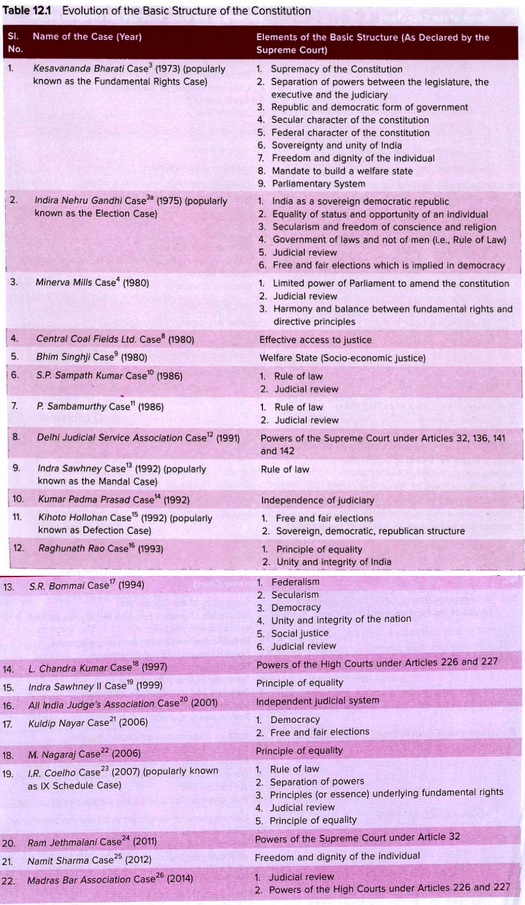
- CHAPTER 13: Parliamentary System - Introduction - The Constitution of India provides for a parliamentary form of government, both at the Centre and in the states. Articles 74 and 75 deal with the parliamentary system at the Centre and Articles 163 and 164 in the states. - Modern democratic governments are classified into parliamentary and presidential on the basis of the nature of relations between the executive and the legislative organs of the government. The parliamentary system of government is the one in which the executive is responsible to the legislature for its policies and acts. The presidential system of government, on the other hand, is one in which the executive is not responsible to the legislature for its policies and acts, and is constitutionally independent of the legislature with respect to its term of office. - The parliamentary government is also known as cabinet government or responsible government or Westminster model of government and is prevalent in Britain, Japan, Canada, and India among others. The presidential government, on the other hand, is also known as non-responsible or non-parliamentary or fixed executive system of government and is prevalent in USA, Brazil, Russia, and Sri Lanka among others. - Ivor Jennings called the parliamentary system as ‘cabinet system’ because the cabinet is the nucleus of power in a parliamentary system. The parliamentary government is also known as ‘responsible government’ as the cabinet (the real executive) is accountable to the Parliament and stays in office so long as it enjoys the latter’s confidence. It is described as ‘Westminster model of government’ after the location of the British Parliament, where the parliamentary system originated. - In the past, the British constitutional and political experts described the Prime Minister as ‘primus inter pares’ (first among equals) in relation to the cabinet. In the recent period, the Prime Minister’s power, influence, and position have increased significantly vis-à-vis the cabinet. He/she has come to play a ‘dominant’ role in the British politico-administrative system. Hence, the later political analysts, like Crossman, Mackintosh, and others have described the British system of government as ‘prime ministerial government’. The same description holds good in the Indian context too. - Features of Parliamentary Government - The features or principles of parliamentary government in India are as follows: - 1. Nominal and Real Executives: The President is the nominal executive (de jure executive or titular executive) while the Prime Minister is the real executive (de facto executive). Thus, the President is head of the State, while the Prime Minister is head of the government. Article 74 provides for a council of ministers headed by the Prime Minister to aid and advise the President in the exercise of his/her functions. The advice so tendered is binding on the President. - The 42nd and 44th Amendment Acts of 1976 and 1978 respectively have made the ministerial advice binding on the President. - 2. Majority Party Rule: The political party which secures majority seats in the Lok Sabha forms the government. The leader of that party is appointed as the Prime Minister by the President; other ministers are appointed by the President on the advice of the Prime Minister. However, when no single party gets the majority, a coalition of parties may be invited by the President to form the government. - 3. Collective Responsibility: This is the bedrock principle of parliamentary government. The ministers are collectively responsible to the Parliament in general and to the Lok Sabha in particular (Article 75). They act as a team, and swim and sink together. The principle of collective responsibility implies that the Lok Sabha can remove the ministry (i.e., council of ministers headed by the Prime Minister) from office by passing a vote of no confidence. - 4. Political Homogeneity: Usually members of the council of ministers belong to the same political party, and hence they share the same political ideology. In case of coalition government, the ministers are bound by consensus. - 5. Double Membership: The ministers are members of both the legislature and the executive. This means that a person cannot be a minister without being a member of the Parliament. The Constitution stipulates that a minister who is not a member of the Parliament for a period of six consecutive months ceases to be a minister. - 6. Leadership of the Prime Minister: The Prime Minister plays the leadership role in this system of government. He/she is the leader of council of ministers, leader of the Parliament, and leader of the party in power. In these capacities, he/she plays a significant and highly crucial role in the functioning of the government. - 7. Dissolution of the Lower House: The lower house of the Parliament (Lok Sabha) can be dissolved by the President on recommendation of the Prime Minister. In other words, the Prime Minister can advise the President to dissolve the Lok Sabha before the expiry of its term and hold fresh elections. This means that the executive enjoys the right to get the legislature dissolved in a parliamentary system. - 8. Secrecy: The ministers operate on the principle of secrecy of procedure and cannot divulge information about their proceedings, policies, and decisions. They take the oath of secrecy before entering their office. The oath of secrecy to the ministers is administered by the President. - Features of Presidential Government - Unlike the Indian Constitution, the American Constitution provides for the presidential form of government. The features of the American presidential system of government are as follows: - (a) The American President is both the head of the State and the head of government. As the head of State, he/she occupies a ceremonial position. As the head of government, he/she leads the executive organ of government. - (b) The President is elected by an electoral college for a fixed tenure of four years. He/she cannot be removed by the Congress except by impeachment for a grave unconstitutional act. - (c) The President governs with the help of a cabinet or a smaller body called ‘Kitchen Cabinet’. It is only an advisory body and consists of non-elected departmental secretaries. They are selected and appointed by him/her, are responsible only to him/her, and can be removed by him/her at any time. - (d) The President and his/her secretaries are not responsible to the Congress for their acts. They neither possess membership in the Congress nor attend its sessions. - (e) The President cannot dissolve the House of Representatives—the lower house of the Congress. - (f) The doctrine of separation of powers is the basis of the American presidential system. The legislative, executive, and judicial powers of the government are separated and vested in the three independent organs of the government. - Merits of the Parliamentary System - The parliamentary system of government has the following merits: - 1. Harmony Between Legislature and Executive: The greatest advantage of the parliamentary system is that it ensures harmonious relationship and cooperation between the legislative and executive organs of the government. The executive is a part of the legislature and both are interdependent at work. As a result, there is less scope for disputes and conflicts between the two organs. - 2. Responsible Government: By its very nature, the parliamentary system establishes a responsible government. The ministers are responsible to the Parliament for all their acts of omission and commission. The Parliament exercises control over the ministers through various devices like question hour, discussions, adjournment motion, no-confidence motion, etc. - 3. Prevents Despotism: Under this system, the executive authority is vested in a group of individuals (council of ministers) and not in a single person. This dispersal of authority checks the dictatorial tendencies of the executive. Moreover, the executive is responsible to the Parliament and can be removed by a no-confidence motion. - 4. Ready Alternative Government: In case the ruling party loses its majority, the Head of the State can invite the opposition party to form the government. This means an alternative government can be formed without fresh elections. Hence, Dr. Jennings says, ‘the leader of the opposition is the alternative Prime Minister’. - 5. Wide Representation: In a parliamentary system, the executive consists of a group of individuals (i.e., ministers who are representatives of the people). Hence, it is possible to provide representation to all sections and regions in the government. The Prime Minister while selecting his/her ministers can take this factor into consideration. - Demerits of the Parliamentary System - In spite of the above merits, the parliamentary system suffers from the following demerits: - 1. Unstable Government: The parliamentary system does not provide a stable government. There is no guarantee that a government can survive its tenure. The ministers depend on the mercy of the majority legislators for their continuity and survival in office. A no-confidence motion or political defection or evils of multiparty coalition can make the government unstable. The governments headed by Morarji Desai, Charan Singh, V.P. Singh, Chandra Shekhar, Devegowda, and I.K. Gujral are some such examples. - 2. No Continuity of Policies: The parliamentary system is not conducive for the formulation and implementation of long-term policies. This is due to the uncertainty of the tenure of the government. A change in the ruling party is usually followed by changes in the policies of the government. For example, the Janata Government headed by Morarji Desai in 1977 reversed a large number of policies of the previous Congress Government. The same was repeated by the Congress government after it came back to power in 1980. - 3. Dictatorship of the Cabinet: When the ruling party enjoys absolute majority in the Parliament, the cabinet becomes autocratic and exercises nearly unlimited powers. H.J. Laski says that the parliamentary system gives the executive an opportunity for tyranny. Ramsay Muir, the former British Prime Minister, also complained of the ‘dictatorship of the cabinet’. This phenomenon was witnessed during the era of Indira Gandhi and Rajiv Gandhi. - 4. Against Separation of Powers: In the parliamentary system, the legislature and the executive are together and inseparable. The cabinet acts as the leader of legislature as well as the executive. As Bagehot points out, ‘the cabinet is a hyphen that joins, the buckle that binds the executive and legislative departments together.’ Hence, the whole system of government goes against the letter and spirit of the theory of separation of powers. In fact, there is a fusion of powers. - This theory was propounded by Montesquieu, a French political thinker, in his book The Spirit of the Laws (1748) to promote individual liberty. He stated that concentration of powers in one person or a body of persons would result in despotism and negate individual liberty. - 5. Government by Amateurs: The parliamentary system is not conducive to administrative efficiency as the ministers are not experts in their fields. The Prime Minister has a limited choice in the selection of ministers; his/her choice is restricted to the members of Parliament alone and does not extend to external talent. Moreover, the ministers devote most of their time to parliamentary work, cabinet meetings, and party activities. - Reasons for Adopting Parliamentary System - A plea was made in favour of the US presidential system of government in the Constituent Assembly. K.T. Shah favoured the adoption of the presidential system. But, the founding fathers preferred the British parliamentary system due to the following reasons: - 1. Familiarity with the System: The Constitution-makers were somewhat familiar with the parliamentary system as it had been in operation in India during the British rule. K.M. Munshi argued that, ‘For the last thirty or forty years, some kind of responsibility has been introduced in the governance of this country. Our constitutional traditions have become parliamentary. After this experience, why should we go back and buy a novel experience.’ - 2. Preference to More Responsibility: Dr. B.R. Ambedkar pointed out in the Constituent Assembly that ‘a democratic executive must satisfy two conditions: stability and responsibility. Unfortunately, it has not been possible so far to devise a system which can ensure both in equal degree. The American system gives more stability but less responsibility. The British system, on the other hand, gives more responsibility but less stability. The Draft Constitution in recommending the parliamentary system of Executive has preferred more responsibility to more stability.’ - 3. Need to Avoid Legislative–Executive Conflicts: The framers of the Constitution wanted to avoid the conflicts between the legislature and the executive which are bound to occur in the presidential system prevalent in USA. They thought that an infant democracy could not afford to take the risk of a perpetual cleavage, feud, or conflict or threatened conflict between these two organs of the government. They wanted a form of government that would be conducive to the manifold development of the country. - 4. Nature of Indian Society: India is one of the most heterogeneous states and most complex plural societies in the world. Hence, the Constitution-makers adopted the parliamentary system as it offers greater scope for giving representation to various sections, interests, and regions in the government. This promotes a national spirit among the people and builds a united India. - Whether the parliamentary system should be continued or should be replaced by the presidential system has been a point of discussion and debate in our country since the 1970s. This matter was considered in detail by the Swaran Singh Committee appointed by the Congress government in 1975. The committee opined that the parliamentary system has been doing well and hence, there is no need to replace it by the presidential system. -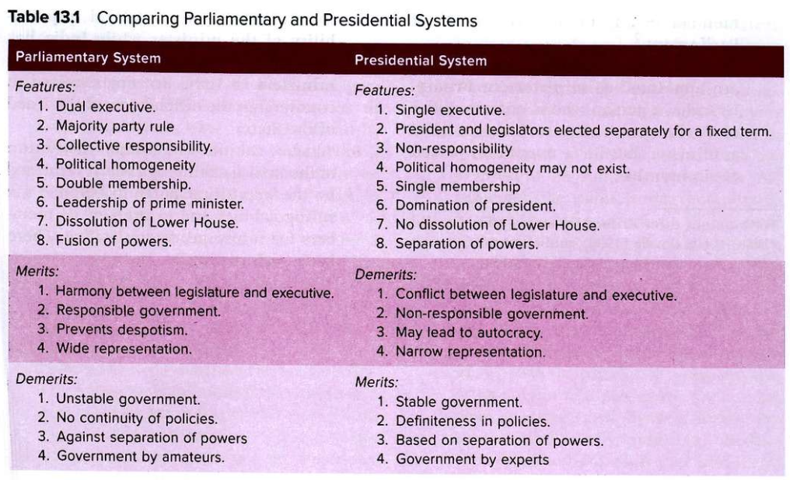
- Distinction Between Indian and British Models - The parliamentary system of government in India is largely based on the British parliamentary system. However, it never became a replica of the British system and differs in the following respects: - 1. India has a republican system in place of the British monarchical system. In other words, the Head of the State in India (that is, President) is elected, while the Head of the State in Britain (that is, King or Queen) enjoys a hereditary position. - 2. The British system is based on the doctrine of the sovereignty of Parliament, while the Parliament is not supreme in India and enjoys limited and restricted powers due to a written Constitution, federal system, judicial review, and Fundamental Rights. - 3. In Britain, the Prime Minister should be a member of the Lower House (House of Commons) of the Parliament. In India, the Prime Minister may be a member of any of the two Houses of Parliament. - For example, three Prime Ministers, Indira Gandhi (1966), Devegowda (1996), and Manmohan Singh (2004), were members of the Rajya Sabha. - 4. Usually, the members of Parliament alone are appointed as ministers in Britain. In India, a person who is not a member of Parliament can also be appointed as minister, but for a maximum period of six months. - 5. Britain has a system of legal responsibility of the minister while India has no such system. Unlike in Britain, the ministers in India are not required to countersign the official acts of the Head of the State. - 6. ‘Shadow cabinet’ is a unique institution of the British cabinet system. It is formed by the opposition party to balance the ruling cabinet and to prepare its members for future ministerial office. There is no such institution in India. - CHAPTER 14: Federal System - Introduction and overview - Political scientists have classified governments into unitary and federal on the basis of the nature of relations between the national government and the regional governments. By definition, a unitary government is one in which all the powers are vested in the national government and the regional governments, if at all exist, derive their authority from the national government. A federal government, on the other hand, is one in which powers are divided between the national government and the regional governments by the Constitution itself and both operate in their respective jurisdictions independently. Britain, France, Japan, China, Italy, Norway, Sweden, and so on have a unitary model of government while the US, Switzerland, Australia, Canada, Russia, Brazil, Argentina, and so on have a federal model of government. In a federal model, the national government is known as the Federal government or the Central government or the Union government and the regional government is known as the state government or the provincial government. - The specific features of the federal and unitary governments are mentioned in a comparative manner in the following table: -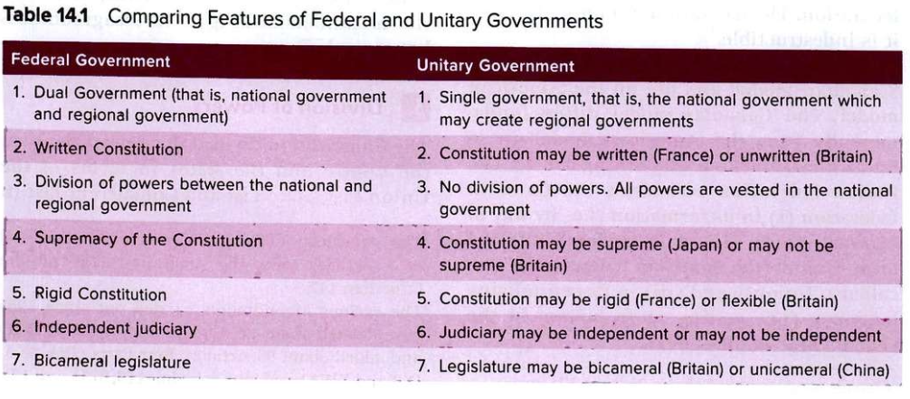
- The term ‘federation’ is derived from a Latin word *foedus* which means ‘treaty’ or ‘agreement’. Thus, a federation is a new state (political system) which is formed through a treaty or an agreement between the various units. The units of a federation are known by various names like states (as in US) or cantons (as in Switzerland) or provinces (as in Canada) or republics (as in Russia). - A federation can be formed in two ways, that is, by way of integration or by way of disintegration. In the first case, a number of militarily weak or economically backward states (independent) come together to form a big and a strong union, as for example, the US. In the second case, a big unitary state is converted into a federation by granting autonomy to the provinces to promote regional interest (for example, Canada). The US is the first and the oldest federation in the world. It was formed in 1787 following the American Revolution (1775–83). It comprises 50 states (originally 13 states) and is taken as the model of federation. The Canadian Federation, comprising 10 provinces (originally 4 provinces), is also quite old—formed in 1867. - The Constitution of India provides for a federal system of government in the country. The framers adopted the federal system due to two main reasons—the large size of the country and its socio-cultural diversity. They realised that the federal system not only ensures the efficient governance of the country but also reconciles national unity with regional autonomy. - However, the term ‘federation’ has nowhere been used in the Constitution. Instead, Article 1 of the Constitution describes India as a ‘Union of States’. According to Dr B.R. Ambedkar, the phrase ‘Union of States’ has been preferred to ‘Federation of States’ to indicate two things: (i) the Indian federation is not the result of an agreement among the states like the American federation; and (ii) the states have no right to secede from the federation. The federation is a union because it is indestructible. - The Indian federal system is based on the ‘Canadian model’ and not on the ‘American model’. The ‘Canadian model’ differs fundamentally from the ‘American model’ in so far as it establishes a very strong Centre. The Indian federation resembles the Canadian federation (i) in its formation (i.e., by way of disintegration); (ii) in its preference to the term ‘Union’ (the Canadian federation is also called a ‘Union’); and (iii) in its centralising tendency (i.e., vesting more powers in the Centre vis-à-vis the states). - Federal Features of the Constitution - The federal features of the Constitution of India are explained below: - 1. Dual Polity: The Constitution establishes a dual polity consisting of the Union at the Centre and the states at the periphery. Each is endowed with sovereign powers to be exercised in the field assigned to them respectively by the Constitution. The Union government deals with matters of national importance like defence, foreign affairs, currency, communication, and so on. The state governments, on the other hand, look after matters of regional and local importance like public order, agriculture, health, local government, and so on. - 2. Written Constitution: The Constitution is not only a written document but also the lengthiest Constitution of the world. Originally, it contained a Preamble, 395 Articles (divided into 22 Parts), and 8 Schedules. At present, it consists of a Preamble, about 470 Articles (divided into 25 Parts), and 12 Schedules. It specifies the structure, organisation, powers, and functions of both the Central and state governments and prescribes the limits within which they must operate. Thus, it avoids the misunderstandings and disagreements between the two. - The American Constitution originally consisted of 7 Articles only, the Australian 128, and the Canadian 147. - The various amendments carried out since 1951 have deleted about 20 Articles and one Part (VII) and added about 95 Articles, four Parts (IVA, IXA, IXB, and XIVA), and four Schedules (9, 10, 11, and 12). - 3. Division of Powers: The Constitution divided the powers between the Centre and the states in terms of the Union List, State List, and Concurrent List in the Seventh Schedule. The Union List consists of 100 subjects (originally 97), the State List 61 subjects (originally 66), and the Concurrent List 52 subjects (originally 47). Both the Centre and the states can make laws on the subjects of the Concurrent List, but in case of a conflict, the Central law prevails. The residuary subjects (i.e., which are not mentioned in any of the three lists) are given to the Centre. - 4. Supremacy of the Constitution: The Constitution is the supreme (or the highest) law of the land. The laws enacted by the Centre and the states must conform to its provisions. Otherwise, they can be declared invalid by the Supreme Court or the High Courts through their power of judicial review. Thus, the organs of the government (legislative, executive, and judicial) at both the levels must operate within the jurisdiction prescribed by the Constitution. - 5. Rigid Constitution: The division of powers established by the Constitution as well as the supremacy of the Constitution can be maintained only if the method of its amendment is rigid. Hence, the Constitution is rigid to the extent that those provisions which are concerned with the federal structure (i.e., Centre–state relations and judicial organisation) can be amended only by the joint action of the Central and state governments. Such provisions require for their amendment a special majority of the Parliament and also an approval of half of the state legislatures. - A majority of two-thirds of the members of each House present and voting and a majority of the total membership of each House. - 6. Independent Judiciary: The Constitution establishes an independent judiciary headed by the Supreme Court for two purposes: one, to protect the supremacy of the Constitution by exercising the power of judicial review; and two, to settle the disputes between the Centre and the states or between the states. The Constitution contains various measures like security of tenure to judges, fixed service conditions, and so on to make the judiciary independent of the government. - 7. Bicameralism: The Constitution provides for a bicameral legislature consisting of an Upper House (Rajya Sabha) and a Lower House (Lok Sabha). The Rajya Sabha represents the states of Indian Federation, while the Lok Sabha represents the people of India as a whole. The Rajya Sabha (even though a less powerful chamber) is required to maintain the federal equilibrium by protecting the interests of the states against the undue interference of the Centre. - Unitary Features of the Constitution - Besides the above federal features, the Indian Constitution also possesses the following unitary or non-federal features: - 1. Strong Centre: The division of powers is in favour of the Centre and highly inequitable from the federal angle. Firstly, the Union List contains more subjects than the State List. Secondly, the more important subjects have been included in the Union List. Thirdly, the Centre has overriding authority over the Concurrent List. Finally, the residuary powers have also been left with the Centre, while in the US, they are vested in the states. Thus, the Constitution has made the Centre very strong. - 2. States Not Indestructible: Unlike in other federations, the states in India have no right to territorial integrity. The Parliament can by unilateral action change the area, boundaries, or name of any state. Moreover, it requires only a simple majority and not a special majority. Hence, the Indian Federation is “an indestructible Union of destructible states”. The American Federation, on the other hand, is described as “an indestructible Union of indestructible states”. - 3. Single Constitution: Usually, in a federation, the states have the right to frame their own Constitution separate from that of the Centre. In India, on the contrary, no such power is given to the states. The Constitution of India embodies not only the Constitution of the Centre but also those of the states. Both the Centre and the states must operate within this single framework. The only exception in this regard was the case of erstwhile Jammu and Kashmir which had its own (state) Constitution. - Till 2019, the erstwhile state of Jammu and Kashmir enjoyed a special status by virtue of Article 370 of the Constitution of India. - 4. Flexibility of the Constitution: The process of constitutional amendment is less rigid than what is found in other federations. The bulk of the Constitution can be amended by the unilateral action of the Parliament, either by simple majority or by special majority. Further, the power to initiate an amendment to the Constitution lies only with the Centre. In US, the states can also propose an amendment to the Constitution. - 5. No Equality of State Representation: The states are given representation in the Rajya Sabha on the basis of population. Hence, the membership varies from 1 to 31. In US, on the other hand, the principle of equality of representation of states in the Upper House is fully recognised. Thus, the American Senate has 100 members, two from each state. This principle is regarded as a safeguard for smaller states. - 6. Emergency Provisions: The Constitution stipulates three types of emergencies—national, state, and financial. During an emergency, the Central government becomes all-powerful and the states go into the total control of the Centre. It converts the federal structure into a unitary one without a formal amendment of the Constitution. This kind of transformation is not found in any other federation. - 7. Single Citizenship: In spite of a dual polity, the Constitution of India, like that of Canada, adopted the system of single citizenship. There is only Indian Citizenship and no separate state citizenship. All citizens irrespective of the state in which they are born or reside enjoy the same rights all over the country. The other federal states like US and Australia have dual citizenship, that is, national citizenship as well as state citizenship. - 8. Integrated Judiciary: The Indian Constitution has established an integrated judicial system with the Supreme Court at the top and the state High Courts below it. This single system of courts enforces both the Central laws as well as the state laws. In US, on the other hand, there is a double system of courts whereby the federal laws are enforced by the federal judiciary and the state laws by the state judiciary. - 9. All-India Services: In US, the Federal government and the state governments have their separate public services. In India also, the Centre and the states have their separate public services. But, in addition, there are all-India services (IAS, IPS, and IFoS) which are common to both the Centre and the states. The members of these services are recruited and trained by the Centre which also possesses ultimate control over them. Thus, these services violate the principle of federalism under the Constitution. - 10. Integrated Audit Machinery: The Comptroller and Auditor-General of India audits the accounts of not only the Central government but also those of the states. But, his/her appointment and removal is done by the President without consulting the states. Hence, this office restricts the financial autonomy of the states. The American Comptroller-General, on the contrary, has no role with respect to the accounts of the states. - 11. Parliament’s Authority Over State List: Even in the limited sphere of authority allotted to them, the states do not have exclusive control. The Parliament is empowered to legislate on any subject of the State List if the Rajya Sabha passes a resolution to that effect in the national interest. This means that the legislative competence of the Parliament can be extended without amending the Constitution. Notably, this can be done when there is no emergency of any kind. - 12. Appointment of Governor: The governor, who is the head of the state, is appointed by the President. He/she holds office during the pleasure of the President. He/she also acts as an agent of the Centre. Through him/her, the Centre exercises control over the states. The American Constitution, on the contrary, provided for an elected head in the states. In this respect, India adopted the Canadian system. - 13. Integrated Election Machinery: The Election Commission conducts elections not only to the Central legislature but also to the state legislatures. But, this body is constituted by the President and the states have no say in this matter. The position is the same with regard to the removal of its members as well. On the other hand, US has separate machineries for the conduct of elections at the federal and state levels. - 14. Veto Over State Bills: The governor is empowered to reserve certain types of bills passed by the state legislature for the consideration of the President. The President can withhold his assent to such bills not only in the first instance but also in the second instance. Thus, the President enjoys absolute veto (and not suspensive veto) over state bills. But in US and Australia, the states are autonomous within their fields and there is no provision for any such reservation. - Critical Evaluation of the Federal System - From the above, it is clear that the Constitution of India has deviated from the traditional federal systems like US, Switzerland, and Australia and incorporated a large number of unitary or non-federal features, tilting the balance of power in favour of the Centre. This has prompted the constitutional experts to challenge the federal character of the Indian Constitution. Thus, K.C. Wheare described the Constitution of India as “quasi-federal”. He remarked that “Indian Union is a unitary state with subsidiary federal features rather than a federal state with subsidiary unitary features”. - According to K. Santhanam, two factors have been responsible for increasing the unitary bias (tendency of centralisation) of the Constitution. These are: (i) the dominance of the Centre in the financial sphere and the dependence of the states upon the Central grants; and (ii) the emergence of a powerful erstwhile Planning Commission which controlled the developmental process in the states. He observed: “India has practically functioned as a unitary state though the Union and the states have tried to function formally and legally as a federation.” - In 2015, the Planning Commission was replaced by a new body called the NITI Aayog (National Institution for Transforming India). - However, there are other political scientists who do not agree with the above descriptions. Thus, Paul Appleby characterises the Indian system as “extremely federal”. Morris Jones termed it as “bargaining federalism”. Ivor Jennings has described it as a “federation with a strong centralising tendency”. He observed that “the Indian Constitution is mainly federal with unique safeguards for enforcing national unity and growth”. Alexandrowicz stated that “India is a case sui generis (i.e., unique in character)”. Granville Austin called the Indian federalism a “cooperative federalism”. He said that though the Constitution of India has created a strong Central government, it has not made the state governments weak and has not reduced them to the level of administrative agencies for the execution of policies of the Central government. He described the Indian federation as “a new kind of federation to meet India’s peculiar needs”. - On the nature of the Indian Constitution, Dr B.R. Ambedkar made the following observation in the Constituent Assembly: “The Constitution is a Federal Constitution in as much as it establishes a dual polity. The Union is not a league of states, united in a loose relationship, nor are the states the agencies of the Union, deriving powers from it. Both the Union and the states are created by the Constitution, both derive their respective authority from the Constitution.” He further observed: “Yet the Constitution avoids the tight mould of federalism and could be both unitary as well as federal according to the requirements of time and circumstances.” While replying to the criticism of over-centralisation in the Constitution, he stated: “A serious complaint is made on the ground that there is too much centralisation and the states have been reduced to municipalities. It is clear that this view is not only an exaggeration but is also founded on a misunderstanding of what exactly the Constitution contrives to do. As to the relations between the Centre and the states, it is necessary to bear in mind the fundamental principle on which it rests. The basic principle of federalism is that the legislative and executive authority is partitioned between the Centre and the states not by any law to be made by the Centre but by the Constitution itself. This is what the Constitution does. The states are in no way dependent upon the Centre for their legislative or executive authority. The states and the Centre are co-equal in this matter. It is difficult to see how such a Constitution can be called centralism. It is, therefore, wrong to say that the states have been placed under the Centre. The Centre cannot by its own will alter the boundary of this partition. Nor can the judiciary.” - Dr B.R. Ambedkar’s speech in the Constituent Assembly on 25.11.1949 reproduced in *The Constitution and the Constituent Assembly*; Lok Sabha Secretariat, 1990, p. 176. - In the Bommai case (1994), the Supreme Court laid down that the Constitution is federal and characterised federalism as its ‘basic feature’. It observed: “The fact that under the scheme of our Constitution, greater power is conferred upon the Centre vis-à-vis the states does not mean that the states are mere appendages of the Centre. The states have an independent constitutional existence. They are not satellites or agents of the Centre. Within the sphere allotted to them, the states are supreme. The fact that during emergency and in certain other eventualities their powers are overridden or invaded by the Centre is not destructive of the essential federal feature of the Constitution. They are exceptions and the exceptions are not a rule. Let it be said that the federalism in the Indian Constitution is not a matter of administrative convenience, but one of principle—the outcome of our own process and a recognition of the ground realities.” - In fact, the federalism in India represents a compromise between the following two conflicting considerations: - (i) normal division of powers under which states enjoy autonomy within their own spheres; and - (ii) need for national integrity and a strong Union government under exceptional circumstances. - The following trends in the working of Indian political system reflect its federal spirit: (i) Territorial disputes between states, for example, between Maharashtra and Karnataka over Belgaum; (ii) Disputes between states over sharing of river water, for example, between Karnataka and Tamil Nadu over Cauvery water; (iii) The emergence of regional parties and their coming to power in states like Andhra Pradesh, Tamil Nadu, etc.; (iv) The creation of new states to fulfil the regional aspirations, for example, Mizoram or Jharkhand or Telangana; (v) Demand of the states for more financial grants from the Centre to meet their developmental needs; (vi) Assertion of autonomy by the states and their resistance to the interference from the Centre; (vii) Supreme Court’s imposition of several procedural limitations on the use of Article 356 (President’s Rule in the states) by the Centre. - CHAPTER 15: Centre-State Relations - Introduction and overview - The Constitution of India, being federal in structure, divides all powers (legislative, executive, and financial) between the Centre and the states. However, there is no division of judicial power as the Constitution has established an integrated judicial system to enforce both the Central laws as well as state laws. - Though the Centre and the states are supreme in their respective fields, the maximum harmony and coordination between them is essential for the effective operation of the federal system. Hence, the Constitution contains elaborate provisions to regulate the various dimensions of the relations between the Centre and the states. - The Centre-state relations can be studied under three heads: - Legislative relations. - Administrative relations. - Financial relations. - Legislative relations - Articles 245 to 255 in Part XI of the Constitution deal with the legislative relations between the Centre and the states. Besides these, there are some other articles dealing with the same subject. - Like any other federal Constitution, the Indian Constitution also divides the legislative powers between the Centre and the states with respect to both the territory and the subjects of legislation. Further, the Constitution provides for parliamentary legislation in the state field under five extraordinary situations as well as the Centre’s control over state legislation in certain cases. Thus, there are four aspects in the Centre-states legislative relations, viz., - Territorial extent of Central and state legislation; - Distribution of legislative subjects; - Parliamentary legislation in the state field; and - Centre’s control over state legislation. - 1. Territorial Extent of Central and State Legislation - The Constitution defines the territorial limits of the legislative powers vested in the Centre and the states in the following way: - (i) The Parliament can make laws for the whole or any part of the territory of India. The territory of India includes the states, the union territories, and any other area for the time being included in the territory of India. - (ii) A state legislature can make laws for the whole or any part of the state. The laws made by a state legislature are not applicable outside the state, except when there is a sufficient nexus between the state and the object. - (iii) The Parliament alone can make ‘extra-territorial legislation’. Thus, the laws of the Parliament are also applicable to the Indian citizens and their property in any part of the world. - However, the Constitution places certain restrictions on the plenary territorial jurisdiction of the Parliament. In other words, the laws of Parliament are not applicable in the following areas: - (i) The President can make regulations for the peace, progress, and good government of the Union Territories of the Andaman and Nicobar Islands, Lakshadweep, Dadra and Nagar Haveli and Daman and Diu, and Ladakh. In the case of Puducherry also, the President can legislate by making regulations but only when the Assembly is suspended or dissolved. A regulation so made has the same force and effect as an act of Parliament. It may also repeal or amend any act of Parliament in relation to these union territories. - (ii) The governor is empowered to direct that an act of Parliament does not apply to a scheduled area in the state or apply with specified modifications and exceptions. - (iii) The Governor of Assam may likewise direct that an act of Parliament does not apply to a tribal area (autonomous district) in the state or apply with specified modifications and exceptions. The President enjoys the same power with respect to tribal areas (autonomous districts) in Meghalaya, Tripura, and Mizoram. - 2. Distribution of Legislative Subjects - The Constitution provides for a three-fold distribution of legislative subjects between the Centre and the states, viz., List-I (the Union List), List-II (the State List), and List-III (the Concurrent List) in the Seventh Schedule: - (i) The Parliament has exclusive powers to make laws with respect to any of the matters enumerated in the Union List. This list has at present 100 subjects (originally 97 subjects) like defence, banking, foreign affairs, currency, atomic energy, insurance, communication, inter-state trade and commerce, census, audit, and so on. - Even now, the last entry is numbered as 97 but the total number of entries is 100. The entries numbered as 2A, 92A, and 92B have been added and entries 33, 92, and 92C have been omitted. - (ii) The state legislature has “in normal circumstances” exclusive powers to make laws with respect to any of the matters enumerated in the State List. This has at present 61 subjects (originally 66 subjects) like public order, police, public health and sanitation, agriculture, prisons, local government, fisheries, markets, theatres, gambling, and so on. - Even now, the last entry is numbered as 66 but the total number of entries is 61. The entries numbered as 11, 19, 20, 29, 36, 52, and 55 have been omitted. - (iii) Both the Parliament and state legislature can make laws with respect to any of the matters enumerated in the Concurrent List. This list has at present 52 subjects (originally 47 subjects) like criminal law and procedure, civil procedure, marriage and divorce, population control and family planning, electricity, labour welfare, economic and social planning, drugs, newspapers, books and printing press, and others. The 42nd Amendment Act of 1976 transferred five subjects to Concurrent List from State List, that is, (a) education, (b) forests, (c) weights and measures, (d) protection of wild animals and birds, and (e) administration of justice; constitution and organisation of all courts except the Supreme Court and the High Courts. - Even now, the last entry is numbered as 47 but the total number of entries is 52. The entries numbered as 11A, 17A, 17B, 20A, and 33A have been added. - (iv) The Parliament has power to make laws with respect to any matter for any part of the territory of India not included in a state even though that matter is one which is enumerated in the State List. This provision has reference to the Union Territories or the Acquired Territories (if any). - (v) The 101st Amendment Act of 2016 has made a special provision with respect to goods and services tax. Accordingly, the Parliament and the state legislature have power to make laws with respect to goods and services tax imposed by the Union or by the State. Further, the Parliament has exclusive power to make laws with respect to goods and services tax where the supply of goods or services or both takes place in the course of inter-state trade or commerce. - (vi) The power to make laws with respect to residuary subjects (i.e., the matters which are not enumerated in any of the three lists) is vested in the Parliament. This residuary power of legislation includes the power to levy residuary taxes. - From the above scheme, it is clear that the matters of national importance and the matters which require uniformity of legislation nationwide are included in the Union List. The matters of regional and local importance and the matters which permit diversity of interest are specified in the State List. The matters on which uniformity of legislation throughout the country is desirable but not essential are enumerated in the Concurrent List. Thus, it permits diversity along with uniformity. - In the US, only the powers of the Federal Government are enumerated in the Constitution and the residuary powers are left to the states. The Australian Constitution followed the American pattern of single enumeration of powers. In Canada, on the other hand, there is a double enumeration—Federal and Provincial, and the residuary powers are vested in the Centre. - The Government of India Act of 1935 provided for a three-fold enumeration, viz., federal, provincial, and concurrent. The present Constitution follows the scheme of this act but with one difference, that is, under this act, the residuary powers were given neither to the federal legislature nor to the provincial legislature but to the Governor-General of India. In this respect, India follows the Canadian precedent. - The Constitution expressly secures the predominance of the Union List over the State List and the Concurrent List and that of the Concurrent List over the State List. Thus, in case of overlapping between the Union List and the State List, the former should prevail. In case of overlapping between the Union List and the Concurrent List, it is again the former which should prevail. Where there is a conflict between the Concurrent List and the State List, it is the former that should prevail. - In case of a conflict between the Central law and the state law on a subject enumerated in the Concurrent List, the Central law prevails over the state law. But, there is an exception. If the state law has been reserved for the consideration of the President and has received his assent, then the state law prevails in that state. But, it would still be competent for the Parliament to override such a law by subsequently making a law on the same matter. - 3. Parliamentary Legislation in the State Field - The above scheme of distribution of legislative powers between the Centre and the states is to be maintained in normal times. But, in abnormal times, the scheme of distribution is either modified or suspended. In other words, the Constitution empowers the Parliament to make laws on any matter enumerated in the State List under the following five extraordinary circumstances: - A. When Rajya Sabha Passes a Resolution: If the Rajya Sabha declares that it is necessary in the national interest that Parliament should make laws with respect to goods and services tax or a matter in the State List, then the Parliament becomes competent to make laws on that matter. Such a resolution must be supported by two-thirds of the members present and voting. The resolution remains in force for one year; it can be renewed any number of times but not exceeding one year at a time. The laws cease to have effect on the expiration of six months after the resolution has ceased to be in force. This provision does not restrict the power of a state legislature to make laws on the same matter. But, in case of inconsistency between a state law and a parliamentary law, the latter is to prevail. - The provision for goods and services tax was added by the 101st Amendment Act of 2016. - B. During a National Emergency: The Parliament acquires the power to legislate with respect to goods and services tax or matters in the State List, while a proclamation of national emergency is in operation. The laws become inoperative on the expiration of six months after the emergency has ceased to operate. Here also, the power of a state legislature to make laws on the same matter is not restricted. But, in case of repugnancy between a state law and a parliamentary law, the latter is to prevail. - C. When States Make a Request: When the legislatures of two or more states pass resolutions requesting the Parliament to enact laws on a matter in the State List, then the Parliament can make laws for regulating that matter. A law so enacted applies only to those states which have passed the resolutions. However, any other state may adopt it afterwards by passing a resolution to that effect in its legislature. Such a law can be amended or repealed only by the Parliament and not by the legislatures of the concerned states. The effect of passing a resolution under the above provision is that the Parliament becomes entitled to legislate with respect to a matter for which it has no power to make a law. On the other hand, the state legislature ceases to have the power to make a law with respect to that matter. The resolution operates as abdication or surrender of the power of the state legislature with respect to that matter and it is placed entirely in the hands of Parliament which alone can then legislate with respect to it. Some examples of laws passed under the above provision are Prize Competition Act, 1955; Wild Life (Protection) Act, 1972; Water (Prevention and Control of Pollution) Act, 1974; Urban Land (Ceiling and Regulation) Act, 1976; and Transplantation of Human Organs Act, 1994. - D. To Implement International Agreements: The Parliament can make laws on any matter in the State List for implementing international treaties, agreements, or conventions. This provision enables the Central government to fulfil its international obligations and commitments. Some examples of laws enacted under the above provision are United Nations (Privileges and Immunities) Act, 1947; Geneva Convention Act, 1960; Anti-Hijacking Act, 1982; and legislations relating to environment and TRIPS. - E. During President’s Rule: When the President’s rule is imposed in a state, the Parliament becomes empowered to make laws with respect to any matter in the State List in relation to that state. A law made so by the Parliament continues to be operative even after the President’s rule. This means that the period for which such a law remains in force is not co-terminus with the duration of the President’s rule. But, such a law can be repealed or altered or re-enacted by the state legislature. - 4. Centre’s Control Over State Legislation - Besides the Parliament’s power to legislate directly on the state subjects under the exceptional situations, the Constitution empowers the Centre to exercise control over the state’s legislative matters in the following ways: - (i) The Governor can reserve a bill passed by the state legislature for the consideration of the President. It must be noted here that the President enjoys absolute veto over such a bill (Articles 200 and 201). - (ii) A state bill imposing restrictions on the freedom of trade, commerce, and intercourse with that state or within that state can be introduced in the legislature of the state only with the previous sanction of the President (Article 304). - (iii) The Centre can direct the states to reserve money bills and other financial bills passed by the state legislature for the President’s consideration during a financial emergency (Article 360). - (iv) The Governor cannot make an ordinance without the instructions from the President in certain cases (Article 213). - From the above, it is clear that the Constitution has assigned a position of superiority to the Centre in the legislative sphere. In this context, the Sarkaria Commission on Centre-State Relations (1983–88) observed: “The rule of federal supremacy is a technique to avoid absurdity, resolve conflict, and ensure harmony between the Union and state laws. If this principle of union supremacy is excluded, it is not difficult to imagine its deleterious results. There will be every possibility of our two-tier political system being stultified by interference, strife, legal chaos, and confusion caused by a host of conflicting laws, much to the bewilderment of the common citizen. Integrated legislative policy and uniformity on basic issues of common Union-state concern will be stymied. The federal principle of unity in diversity will be very much a casualty. This rule of federal supremacy, therefore, is indispensable for the successful functioning of the federal system.” - Report of the Commission on Centre-State Relations, Part I (Government of India, 1988) pp. 28–29. - Administrative relations - Articles 256 to 263 in Part XI of the Constitution deal with the administrative relations between the Centre and the states. In addition, there are various other articles pertaining to the same matter. - 1. Distribution of Executive Powers - The executive power has been divided between the Centre and the states on the lines of the distribution of legislative powers except in a few cases. Thus, the executive power of the Centre extends to the whole of India: - (i) to the matters on which the Parliament has exclusive power of legislation (i.e., the subjects enumerated in the Union List); and - (ii) to the exercise of rights, authority, and jurisdiction conferred on it by any treaty or agreement. - Similarly, the executive power of a state extends to its territory in respect of matters on which the state legislature has exclusive power of legislation (i.e., the subjects enumerated in the State List). - In respect of matters on which both the Parliament and the state legislatures have power of legislation (i.e., the subjects enumerated in the Concurrent List), the executive power rests with the states except when a Constitutional provision or a parliamentary law specifically confers it on the Centre. Therefore, a law on a concurrent subject, though enacted by the Parliament, is to be executed by the states except when the Constitution or the Parliament has directed otherwise. - For example, under the Essential Commodities Act, made by the Parliament on a concurrent subject, the executive power is vested in the Centre. - 2. Obligation of States and the Centre - The Constitution has placed two restrictions on the executive power of the states in order to give ample scope to the Centre for exercising its executive power in an unrestricted manner. Thus, the executive power of every state is to be exercised in such a way (a) as to ensure compliance with the laws made by the Parliament and any existing law which apply in the state; and (b) as not to impede or prejudice the exercise of executive power of the Centre in the state. While the former lays down a general obligation upon the state, the latter imposes a specific obligation on the state not to hamper the executive power of the Centre. - In both cases, the executive power of the Centre extends to giving such directions to the state as are necessary for the purpose. The sanction behind these directions of the Centre is coercive in nature. Thus, Article 365 says that where any state has failed to comply with (or to give effect to) any directions given by the Centre, it will be lawful for the President to hold that a situation has arisen in which the government of the state cannot be carried on in accordance with the provisions of the Constitution. It means that, in such a situation, the President’s rule can be imposed in the state under Article 356. - 3. Centre’s Directions to the States - In addition to the above two cases, the Centre is empowered to give directions to the states with regard to the exercise of their executive power in the following matters: - (i) the construction and maintenance of means of communication (declared to be of national or military importance) by the state; - (ii) the measures to be taken for the protection of the railways within the state; - (iii) the provision of adequate facilities for instruction in the mother-tongue at the primary stage of education to children belonging to linguistic minority groups in the state; and - (iv) the drawing up and execution of the specified schemes for the welfare of the Scheduled Tribes in the state. - The coercive sanction behind the Central directions under Article 365 (mentioned above) is also applicable in these cases. - 4. Mutual Delegation of Functions - The distribution of legislative powers between the Centre and the states is rigid. Consequently, the Centre cannot delegate its legislative powers to the states and a single state cannot request the Parliament to make a law on a state subject. The distribution of executive power in general follows the distribution of legislative powers. But, such a rigid division in the executive sphere may lead to occasional conflicts between the two. Hence, the Constitution provides for inter-government delegation of executive functions in order to mitigate rigidity and avoid a situation of deadlock. - Accordingly, the President may, with the consent of the state government, entrust to that government any of the executive functions of the Centre. Conversely, the governor of a state may, with the consent of the Central government, entrust to that government any of the executive functions of the state. This mutual delegation of administrative functions may be conditional or unconditional. - This provision (the power of the states to entrust functions to the Centre) was added by the 7th Constitutional Amendment Act of 1956. Before that, only the Centre had the power. - The Constitution also makes a provision for the entrustment of the executive functions of the Centre to a state without the consent of that state. But, in this case, the delegation is by the Parliament and not by the President. Thus, a law made by the Parliament on a subject of the Union List can confer powers and impose duties on a state, or authorise the conferring of powers and imposition of duties by the Centre upon a state (irrespective of the consent of the state concerned). Notably, the same thing cannot be done by the state legislature. - From the above, it is clear that the mutual delegation of functions between the Centre and the state can take place either under an agreement or by a legislation. While the Centre can use both the methods, a state can use only the first method. - 5. Cooperation Between the Centre and States - The Constitution contains the following provisions to secure cooperation and coordination between the Centre and the states: - (i) The Parliament can provide for the adjudication of any dispute or complaint with respect to the use, distribution, and control of waters of any inter-state river and river valley. - (ii) The President can establish (under Article 263) an Inter-State Council to investigate and discuss subjects of common interest between the Centre and the states. Such a council was set up in 1990. - (iii) Full faith and credit is to be given throughout the territory of India to public acts, records, and judicial proceedings of the Centre and every state. - (iv) The Parliament can appoint an appropriate authority to carry out the purposes of the constitutional provisions relating to the interstate freedom of trade, commerce, and intercourse. But, no such authority has been appointed so far. - 6. All-India Services - Like in any other federation, the Centre and the states also have their separate public services called as the Central Services and the State Services respectively. In addition, there are All-India Services—IAS, IPS, and IFoS. The members of these services occupy top positions (or key posts) under both the Centre and the states and serve them by turns. But, they are recruited and trained by the Centre. - These services are controlled jointly by the Centre and the states. The ultimate control lies with the Central government while the immediate control vests with the state governments. - In 1947, Indian Civil Service (ICS) was replaced by IAS and the Indian Police (IP) was replaced by IPS and were recognised by the Constitution as All-India Services. In 1966, the Indian Forest Service (IFoS) was created as the third All-India Service. Article 312 of the Constitution authorises the Parliament to create new All-India Services on the basis of a Rajya Sabha resolution to that effect. - Each of these three All-India Services, irrespective of their division among different states, form a single service with common rights and status and uniform scales of pay throughout the country. - Though the All-India Services violate the principle of federalism under the Constitution by restricting the autonomy and patronage of the states, they are supported on the ground that (i) they help in maintaining high standard of administration in the Centre as well as in the states; (ii) they help to ensure uniformity of the administrative system throughout the country; and (iii) they facilitate liaison, cooperation, coordination, and joint action on the issues of common interest between the Centre and the states. - While justifying the institution of All-India Services in the Constituent Assembly, Dr B.R. Ambedkar observed that: “The dual polity which is inherent in a federal system is followed in all federations by a dual service. In all federations, there is a Federal Civil Service and a State Civil Service. The Indian federation, though a dual polity, will have a dual service, but with one exception. It is recognised that in every country there are certain posts in its administrative set up which might be called strategic from the point of view of maintaining the standard of administration. There can be no doubt that the standard of administration depends upon the calibre of the civil servants who are appointed to the strategic posts. The Constitution provides that without depriving the states of their rights to form their own civil services, there shall be an All-India Service, recruited on an All-India basis with common qualifications, with uniform scale of pay and members of which alone could be appointed to those strategic posts throughout the Union.” - 7. Public Service Commissions - In the field of public service commissions, the Centre-state relations are as follows: - (i) The Chairman and members of a state public service commission, though appointed by the governor of the state, can be removed only by the President. - (ii) The Parliament can establish a Joint State Public Service Commission (JSPSC) for two or more states on the request of the state legislatures concerned. The chairman and members of the JSPSC are appointed by the President. - (iii) The Union Public Service Commission (UPSC) can serve the needs of a state on the request of the state governor and with the approval of the President. - (iv) The UPSC assists the states (when requested by two or more states) in framing and operating schemes of joint recruitment for any services for which candidates possessing special qualifications are required. - 8. Integrated Judicial System - Though India has a dual polity, there is no dual system of administration of justice. The Constitution, on the other hand, established an integrated judicial system with the Supreme Court at the top and the state High Courts below it. This single system of courts enforces both the Central laws as well as the state laws. This is done to eliminate diversities in the remedial procedure. - The judges of a state High Court are appointed by the President in consultation with the Chief Justice of India and the governor of the state. They can also be transferred and removed by the President. - The Parliament can establish a common High Court for two or more states. For example, Maharashtra and Goa or Punjab and Haryana have a common High Court. - 9. Relations During Emergencies - (i) During the operation of a national emergency (under Article 352), the Centre becomes entitled to give executive directions to a state on ‘any’ matter. Thus, the state governments are brought under the complete control of the Centre, though they are not suspended. - (ii) When the President’s Rule is imposed in a state (under Article 356), the President can assume to himself the functions of the state government and powers vested in the Governor or any other executive authority in the state. - (iii) During the operation of a financial emergency (under Article 360), the Centre can direct the states to observe canons of financial propriety and can give other necessary directions including the reduction of salaries of persons serving in the state. - 10. Other Provisions - The Constitution contains the following other provisions which enable the Centre to exercise control over the state administration: - (i) Article 355 imposes two duties on the Centre: (a) to protect every state against external aggression and internal disturbance; and (b) to ensure that the government of every state is carried on in accordance with the provisions of the Constitution. - (ii) The governor of a state is appointed by the President. He holds office during the pleasure of the President. In addition to the Constitutional head of the state, the governor acts as an agent of the Centre in the state. He submits periodical reports to the Centre about the administrative affairs of the state. - (iii) The state election commissioner, though appointed by the governor of the state, can be removed only by the President. - 11. Extra-Constitutional Devices - In addition to the above-mentioned constitutional devices, there are extra-constitutional devices to promote cooperation and coordination between the Centre and the states. These include a number of advisory bodies and conferences held at the Central level. - The non-constitutional advisory bodies include the NITI Aayog (which succeeded the Planning Commission), the National Integration Council, the Central Council of Health and Family Welfare, the Central Council of Local Government, the Zonal Councils, the North-Eastern Council, the Central Council of Indian Medicine, the Central Council of Homoeopathy, the Transport Development Council, the University Grants Commission, and so on. - The important conferences held either annually or otherwise to facilitate Centre-state consultation on a wide range of matters are as follows: (i) The governors’ conference (presided over by the President); (ii) The chief ministers’ conference (presided over by the prime minister); (iii) The chief secretaries’ conference (presided over by the cabinet secretary); (iv) The conference of inspector-general of police; (v) The chief justices’ conference (presided over by the chief justice of India); (vi) The conference of vice-chancellors; (vii) The home ministers’ conference (presided over by the Central home minister); (viii) The law ministers’ conference (presided over by the Central law minister). - Financial relations - Articles 268 to 293 in Part XII of the Constitution deal with Centre-state financial relations. Besides these, there are other provisions dealing with the same subject. These together can be studied under the following heads: - 1. Allocation of Taxing Powers - The Constitution divides the taxing powers between the Centre and the states in the following way: - The Parliament has exclusive power to levy taxes on subjects enumerated in the Union List (which are 13 in number). - Entries: 82, 83, 84, 85, 86, 87, 88, 89, 90, 91, 92A, 92B, and 96. - The state legislature has exclusive power to levy taxes on subjects enumerated in the State List (which are 18 in number). - Entries: 45, 46, 47, 48, 49, 50, 51, 53, 54, 56, 57, 58, 59, 60, 61, 62, 63, and 66. - There are no tax entries in the Concurrent List. In other words, the concurrent jurisdiction is not available with respect to tax legislation. But, the 101st Amendment Act of 2016 has made an exception by making a special provision with respect to goods and services tax. This Amendment has conferred concurrent power upon the Parliament and State Legislatures to make laws governing goods and services tax. - In this regard, the 101st Amendment Act of 2016 inserted Article 246A in the Constitution. - The residuary power of taxation (that is, the power to impose taxes not enumerated in any of the three lists) is vested in the Parliament. Under this provision, the Parliament has imposed gift tax, wealth tax, and expenditure tax. - The Constitution also draws a distinction between the power to levy and collect a tax and the power to appropriate the proceeds of the tax so levied and collected. For example, the income-tax is levied and collected by the Centre but its proceeds are distributed between the Centre and the states. - Further, the Constitution has placed the following restrictions on the taxing powers of the states: - (i) A state legislature can impose taxes on professions, trades, callings, and employments. But, the total amount of such taxes payable by any person should not exceed ₹2,500 per annum. - Originally, this limit was only ₹250 per annum. The 60th Amendment Act of 1988 raised it to ₹2,500 per annum. - (ii) A state legislature is prohibited from imposing a tax on the supply of goods or services or both in the following two cases: (a) where such supply takes place outside the state; and (b) where such supply takes place in the course of import or export. Further, the Parliament is empowered to formulate the principles for determining when a supply of goods or services or both takes place outside the state, or in the course of import or export. - These provisions are contained in Article 286, as amended by the 101st Amendment Act of 2016. - (iii) A state legislature can impose tax on the consumption or sale of electricity. But, no tax can be imposed on the consumption or sale of electricity which is (a) consumed by the Centre or sold to the Centre; or (b) consumed in the construction, maintenance, or operation of any railway by the Centre or by the concerned railway company or sold to the Centre or the railway company for the same purpose. - (iv) A state legislature can impose a tax in respect of any water or electricity stored, generated, consumed, distributed, or sold by any authority established by Parliament for regulating or developing any inter-state river or river valley. But, such a law, to be effective, should be reserved for the President’s consideration and receive his assent. - 2. Distribution of Tax Revenues - The 80th Amendment Act of 2000 and the 101st Amendment Act of 2016 have introduced major changes in the scheme of the distribution of tax revenues between the Centre and the states. - The 80th Amendment was enacted to give effect to the recommendations of the 10th Finance Commission. The Commission recommended that out of the total income obtained from certain Central taxes and duties, 29% should go to the states. This is known as the ‘Alternative Scheme of Devolution’ and came into effect retrospectively from April 1, 1996. This amendment has brought several Central taxes and duties like Corporation Tax and Customs Duties at par with Income Tax (taxes on income other than agricultural income) as far as their constitutionally mandated sharing with the states is concerned. - This amendment deleted Article 272 (Taxes which are levied and collected by the Centre and may be distributed between the Centre and the states). - The 101st Amendment has paved the way for the introduction of a new tax regime (i.e., goods and services tax—GST) in the country. Accordingly, the Amendment conferred concurrent taxing powers upon the Parliament and the State Legislatures to make laws for levying GST on every transaction of supply of goods or services or both. The GST replaced a number of indirect taxes levied by the Union and the State Governments and is intended to remove the cascading effect of taxes and provide for a common national market for goods and services. The Amendment provided for subsuming of various Central indirect taxes and levies such as (i) Central Excise Duty, (ii) Additional Excise Duties, (iii) Excise Duty levied under the Medicinal and Toilet Preparations (Excise Duties) Act, 1955, (iv) Service Tax, (v) Additional Customs Duty commonly known as Countervailing Duty, (vi) Special Additional Duty of Customs, and (vii) Central Surcharges and Cesses so far as they related to the supply of goods and services. Similarly, the Amendment provided for subsuming of (i) State Value Added Tax/Sales Tax, (ii) Entertainment Tax (other than the tax levied by the local bodies), (iii) Central Sales Tax (levied by the Centre and collected by the States), (iv) Octroi and Entry Tax, (v) Purchase Tax, (vi) Luxury Tax, (vii) Taxes on lottery, betting, and gambling, and (viii) State Surcharges and Cesses in so far as they related to the supply of goods and services. Further, the Amendment deleted Article 268A as well as Entry 92C in the Union List, both were dealing with service tax. They were added earlier by the 88th Amendment Act of 2003. The service tax was levied by the Centre but collected and appropriated by both the Centre and the States. - After the above two amendments (i.e., 80th Amendment and 101st Amendment), the present position with respect to the distribution of tax revenues between the Centre and the states is as follows: - A. Taxes Levied by the Centre but Collected and Appropriated by the States (Article 268): This category includes the stamp duties on bills of exchange, cheques, promissory notes, policies of insurance, transfer of shares, and others. The proceeds of these duties levied within any state do not form a part of the Consolidated Fund of India, but are assigned to that state. - B. Taxes Levied and Collected by the Centre but Assigned to the States (Article 269): The following taxes fall under this category: (i) Taxes on the sale or purchase of goods (other than newspapers) in the course of inter-state trade or commerce; (ii) Taxes on the consignment of goods in the course of inter-state trade or commerce. The net proceeds of these taxes do not form a part of the Consolidated Fund of India. They are assigned to the concerned states in accordance with the principles laid down by the Parliament. - C. Levy and Collection of Goods and Services Tax in Course of Inter-State Trade or Commerce (Article 269A): The Goods and Services Tax (GST) on supplies in the course of inter-state trade or commerce are levied and collected by the Centre. But, this tax is divided between the Centre and the States in the manner provided by Parliament on the recommendations of the GST Council. Further, the Parliament is also authorised to formulate the principles for determining the place of supply, and when a supply of goods or services or both takes place in the course of inter-state trade or commerce. - D. Taxes Levied and Collected by the Centre but Distributed between the Centre and the States (Article 270): This category includes all taxes and duties referred to in the Union List except the following: (i) Duties and taxes referred to in Articles 268, 269, and 269A (mentioned above); (ii) Surcharge on taxes and duties referred to in Article 271 (mentioned below); and (iii) Any cess levied for specific purposes. The manner of distribution of the net proceeds of these taxes and duties is prescribed by the President on the recommendation of the Finance Commission. - Entry 52 (taxes on the entry of goods into a local area for consumption, use, or sale therein) and Entry 55 (taxes on advertisements other than advertisements published in the newspapers and advertisements broadcast by radio or television) were omitted by the 101st Amendment Act of 2016. - E. Surcharge on Certain Taxes and Duties for Purposes of the Centre (Article 271): The Parliament can at any time levy the surcharges on taxes and duties referred to in Articles 269 and 270 (mentioned above). The proceeds of such surcharges go to the Centre exclusively. In other words, the states have no share in these surcharges. However, the Goods and Services Tax (GST) is exempted from this surcharge. In other words, this surcharge cannot be imposed on the GST. - F. Taxes Levied and Collected and Retained by the States: These are the taxes belonging to the states exclusively. They are enumerated in the State List and are 18 in number. These are: (i) land revenue; (ii) taxes on agricultural income; (iii) duties in respect of succession to agricultural land; (iv) estate duty in respect of agricultural land; (v) taxes on lands and buildings; (vi) taxes on mineral rights; (vii) duties of excise on alcoholic liquors for human consumption; opium, Indian hemp, and other narcotic drugs and narcotics, but not including medicinal and toilet preparations containing alcohol or narcotics; (viii) taxes on the consumption or sale of electricity; (ix) taxes on the sale of petroleum crude, high speed diesel, motor spirit (commonly known as petrol), natural gas, aviation turbine fuel, and alcoholic liquor for human consumption, but not including sale in the course of inter-state trade or commerce or sale in the course of international trade or commerce of such goods; (x) taxes on goods and passengers carried by road or inland waterways; (xi) taxes on vehicles; (xii) taxes on animals and boats; (xiii) tolls; (xiv) taxes on professions, trades, callings, and employments; (xv) capitation taxes; (xvi) taxes on entertainments and amusements to the extent levied and collected by a Panchayat or a Municipality or a Regional Council or a District Council; (xvii) stamp duty on documents (except those specified in the Union List); and (xviii) fees on the matters enumerated in the State List (except court fees). - 3. Distribution of Non-tax Revenues - A. The Centre: The receipts from the following form the major sources of non-tax revenues of the Centre: (i) posts and telegraphs; (ii) railways; (iii) banking; (iv) broadcasting; (v) coinage and currency; (vi) Central public sector enterprises; (vii) escheat and lapse; and (viii) others. - B. The States: The receipts from the following form the major sources of non-tax revenues of the states: (i) irrigation; (ii) forests; (iii) fisheries; (iv) state public sector enterprises; (v) escheat and lapse; and (vi) others. - 4. Grants-in-Aid to the States - Besides sharing of taxes between the Centre and the states, the Constitution provides for grants-in-aid to the states from the Central resources. There are two types of grants-in-aid, viz., statutory grants and discretionary grants: - A. Statutory Grants: Article 275 empowers the Parliament to make grants to the states which are in need of financial assistance and not to every state. Also, different sums may be fixed for different states. These sums are charged on the Consolidated Fund of India every year. Apart from this general provision, the Constitution also provides for specific grants for promoting the welfare of the Scheduled Tribes in a state or for raising the level of administration of the Scheduled Areas in a state including the State of Assam. The statutory grants under Article 275 (both general and specific) are given to the states on the recommendation of the Finance Commission. - B. Discretionary Grants: Article 282 empowers both the Centre and the states to make any grants for any public purpose, even if it is not within their respective legislative competence. Under this provision, the Centre makes grants to the states. “These grants are also known as discretionary grants, the reason being that the Centre is under no obligation to give these grants and the matter lies within its discretion. These grants have a two-fold purpose: to help the state financially to fulfil plan targets; and to give some leverage to the Centre to influence and coordinate state action to effectuate the national plan.” - M.P. Jain: Indian Constitutional Law, Wadhwa, Fourth Edition, pp. 342–43. - C. Other Grants: The Constitution also provided for a third type of grants-in-aid, but for a temporary period. Thus, a provision was made for grants in lieu of export duties on jute and jute products to the States of Assam, Bihar, Orissa, and West Bengal. These grants were to be given for a period of ten years from the commencement of the Constitution. These sums were charged on the Consolidated Fund of India and were made to the states on the recommendation of the Finance Commission. - 5. Goods and Services Tax Council - The smooth and efficient administration of the goods and services tax (GST) requires cooperation and coordination between the Centre and the States. In order to facilitate this consultation process, the 101st Amendment Act of 2016 provided for the establishment of a Goods and Services Tax Council or the GST Council. - Article 279A empowered the President to constitute a GST Council by an order. - Article 279A(1) says that the President shall, within sixty days from the commencement of the Constitution (One Hundred and First Amendment) Act, 2016, by order, constitute a Council to be called the Goods and Services Tax Council. - The Council is a joint forum of the Centre and the States. It is required to make recommendations to the Centre and the States on the following matters: - (a) The taxes, cesses, and surcharges levied by the Centre, the States, and the local bodies that would get merged in GST. - (b) The goods and services that may be subjected to GST or exempted from GST. - (c) Model GST Laws, principles of levy, apportionment of GST levied on supplies in the course of inter-state trade or commerce, and the principles that govern the place of supply. - (d) The threshold limit of turnover below which goods and services may be exempted from GST. - (e) The rates including floor rates with bands of GST. - (f) Any special rate or rates for a specified period to raise additional resources during any natural calamity or disaster. - 6. Finance Commission - Article 280 provides for a Finance Commission as a quasi-judicial body. It is constituted by the President every fifth year or even earlier. It is required to make recommendations to the President on the following matters: - The distribution of the net proceeds of taxes to be shared between the Centre and the states, and the allocation between the states, the respective shares of such proceeds. - The principles which should govern the grants-in-aid to the states by the Centre (i.e., out of the Consolidated Fund of India). - The measures needed to augment the Consolidated Fund of a state to supplement the resources of the panchayats and the municipalities in the state on the basis of the recommendations made by the State Finance Commission. - This function was added by the 73rd and 74th Amendment Acts of 1992 which have granted constitutional status to the panchayats and the municipalities respectively. - Any other matter referred to it by the President in the interests of sound finance. - Till 1960, the Commission also suggested the amounts paid to the States of Assam, Bihar, Orissa, and West Bengal in lieu of assignment of any share of the net proceeds in each year of export duty on jute and jute products. - The Constitution envisages the Finance Commission as the balancing wheel of fiscal federalism in India. - 7. Protection of the States’ Interest - To protect the interest of states in the financial matters, the Constitution lays down that the following bills can be introduced in the Parliament only on the recommendation of the President: - A bill which imposes or varies any tax or duty in which states are interested; - A bill which varies the meaning of the expression ‘agricultural income’ as defined for the purposes of the enactments relating to Indian income tax; - A bill which affects the principles on which moneys are or may be distributable to states; and - A bill which imposes any surcharge on any specified tax or duty for the purpose of the Centre. - The expression “tax or duty in which states are interested” means: (a) a tax or duty the whole or part of the net proceeds whereof are assigned to any state; or (b) a tax or duty by reference to the net proceeds whereof sums are for the time being payable, out of the Consolidated Fund of India to any state. - The phrase ‘net proceeds’ means the proceeds of a tax or a duty minus the cost of collection. The net proceeds of a tax or a duty in any area is to be ascertained and certified by the Comptroller and Auditor-General of India. His certificate is final. - 8. Borrowing by the Centre and the States - The Constitution makes the following provisions with regard to the borrowing powers of the Centre and the states: - The Central government can borrow either within India or outside upon the security of the Consolidated Fund of India or can give guarantees, but both within the limits fixed by the Parliament. So far, no such law has been enacted by the Parliament. - Similarly, a state government can borrow within India (and not abroad) upon the security of the Consolidated Fund of the State or can give guarantees, but both within the limits fixed by the legislature of that state. - The Central government can make loans to any state or give guarantees in respect of loans raised by any state. Any sums required for the purpose of making such loans are to be charged on the Consolidated Fund of India. - A state cannot raise any loan without the consent of the Centre, if there is still outstanding any part of a loan made to the state by the Centre or in respect of which a guarantee has been given by the Centre. - 9. Inter-Governmental Tax Immunities - Like any other federal Constitution, the Indian Constitution also contains the rule of ‘immunity from mutual taxation’ and makes the following provisions in this regard: - A. Exemption of Central Property from State Taxation: The property of the Centre is exempted from all taxes imposed by a state or any authority within a state like municipalities, district boards, panchayats, and so on. But, the Parliament is empowered to remove this ban. The word ‘property’ includes lands, buildings, chattels, shares, debts, everything that has a money value, and every kind of property—movable or immovable and tangible or intangible. Further, the property may be used for sovereign (like armed forces) or commercial purposes. The corporations or the companies created by the Central government are not immune from state taxation or local taxation. The reason is that a corporation or a company is a separate legal entity. - B. Exemption of State Property or Income from Central Taxation: The property and income of a state is exempted from Central taxation. Such income may be derived from sovereign functions or commercial functions. But the Centre can tax the commercial operations of a state if Parliament so provides. However, the Parliament can declare any particular trade or business as incidental to the ordinary functions of the government and it would then not be taxable. Notably, the property and income of local authorities situated within a state are not exempted from the Central taxation. Similarly, the property or income of corporations and companies owned by a state can be taxed by the Centre. The Supreme Court, in an advisory opinion (1963) (In Re. Sea Customs Act, 1963), held that the immunity granted to a state in respect of Central taxation does not extend to the duties of customs or duties of excise. In other words, the Centre can impose customs duty on goods imported or exported by a state, or an excise duty on goods produced or manufactured by a state. - 10. Effects of Emergencies - The Centre-state financial relations in normal times (described above) undergo changes during emergencies. These are as follows: - A. National Emergency: While the proclamation of national emergency (under Article 352) is in operation, the President can modify the constitutional distribution of revenues between the Centre and the states. This means that the President can either reduce or cancel the transfer of finances (both tax sharing and grants-in-aid) from the Centre to the states. Such modification continues till the end of the financial year in which the emergency ceases to operate. - B. Financial Emergency: While the proclamation of financial emergency (under Article 360) is in operation, the Centre can give directions to the states: (i) to observe the specified canons of financial propriety; (ii) to reduce the salaries and allowances of all class of persons serving in the state; and (iii) to reserve all money bills and other financial bills for the consideration of the President. - Trends in centre-state relations - Till 1967, the Centre-state relations by and large were smooth due to one-party rule at the Centre and in most of the states. In 1967 elections, the Congress party was defeated in nine states and its position at the Centre became weak. This changed political scenario heralded a new era in the Centre-state relations. The non-Congress Governments in the states opposed the increasing centralisation and intervention of the Central government. They raised the issue of state autonomy and demanded more powers and financial resources to the states. This caused tensions and conflicts in Centre-state relations. - Tension Areas in Centre-State Relations - The issues which created tensions and conflicts between the Centre and states are: - (1) Mode of appointment and dismissal of governor; - (2) Discriminatory and partisan role of governors; - (3) Imposition of President’s Rule for partisan interests; - (4) Deployment of Central forces in the states to maintain law and order; - (5) Reservation of state bills for the consideration of the President; - (6) Discrimination in financial allocations to the states; - (7) Role of Planning Commission in approving state projects (till its replacement by the NITI Aayog in 2015); - (8) Management of All-India Services (IAS, IPS, and IFoS); - (9) Use of electronic media for political purposes; - (10) Appointment of enquiry commissions against the chief ministers; - (11) Sharing of finances (between Centre and states); - (12) Encroachment by the Centre on the State List; - (13) Implementation of the Centrally sponsored schemes by the states; and - (14) Modus operandi of the Central agencies like CBI, ED, and so on. - The issues in Centre-State relations have been under consideration since the mid-1960s. In this direction, the following developments have taken place: - Administrative Reforms Commission - The Central government appointed a six-member First Administrative Reforms Commission (ARC) of India in 1966 under the chairmanship of Morarji Desai (followed by K. Hanumanthayya). Its terms of reference included, among others, the examination of Centre-State relations. In order to examine thoroughly the various issues in Centre-state relations, the ARC constituted a study team under M.C. Setalvad. On the basis of the report of this study team, the ARC finalised its own report and submitted it to the Central government in 1969. It made 22 recommendations for improving the Centre-state relations. The important recommendations are: - Establishment of an Inter-State Council under Article 263 of the Constitution. - Appointment of persons having long experience in public life and administration and non-partisan attitude as governors. - Delegation of powers to the maximum extent to the states. - Transferring of more financial resources to the states to reduce their dependency upon the Centre. - Deployment of Central armed forces in the states either on their request or otherwise. - No action was taken by the Central government on the recommendations of the ARC. - Rajamannar Committee - In 1969, the Tamil Nadu Government (DMK) appointed a three-member committee under the chairmanship of Dr P.V. Rajamannar to examine the entire question of Centre-state relations and to suggest amendments to the Constitution so as to secure utmost autonomy to the states. The committee submitted its report to the Tamil Nadu Government in 1971. - The other two members of the committee were Dr Lakshmanswamy Mudaliar and P. Chandra Reddy. - The Committee identified the reasons for the prevailing unitary trends (tendencies of centralisation) in the country. They include: (i) certain provisions in the Constitution which confer special powers on the Centre; (ii) one-party rule both at the Centre and in the states; (iii) inadequacy of states’ fiscal resources and consequent dependence on the Centre for financial assistance; and (iv) the institution of Central planning and the role of the Planning Commission. - The important recommendations of the committee are as follows: (i) An Inter-State Council should be set up immediately; (ii) Finance Commission should be made a permanent body; (iii) Planning Commission should be disbanded and its place should be taken by a statutory body; (iv) Articles 356, 357, and 365 (dealing with President’s Rule) should be totally omitted; (v) The provision that the state ministry holds office during the pleasure of the governor should be omitted; (vi) Certain subjects of the Union List and the Concurrent List should be transferred to the State List; (vii) the residuary powers should be allocated to the states; and (viii) All-India Services (IAS, IPS, and IFoS) should be abolished. - The Central government completely ignored the recommendations of the Rajamannar Committee. - Anandpur Sahib Resolution - In 1973, the Akali Dal adopted a resolution containing both political and religious demands in a meeting held at Anandpur Sahib in Punjab. The resolution, generally known as Anandpur Sahib Resolution, demanded that the Centre’s jurisdiction should be restricted only to defence, foreign affairs, communications, and currency and the entire residuary powers should be vested in the states. It stated that the Constitution should be made federal in the real sense and should ensure equal authority and representation to all the states at the Centre. - West Bengal Memorandum - In 1977, the West Bengal Government (led by the Communists) published a memorandum on Centre-state relations and sent it to the Central government. The memorandum inter alia suggested the following: (i) The word ‘union’ in the Constitution should be replaced by the word ‘federal’; (ii) The jurisdiction of the Centre should be confined to defence, foreign affairs, currency, communications, and economic coordination; (iii) All other subjects including the residuary should be vested in the states; (iv) Articles 356 and 357 (President’s Rule) and 360 (financial emergency) should be repealed; (v) State’s consent should be made obligatory for formation of new states or reorganisation of existing states; (vi) Of the total revenue raised by the Centre from all sources, 75 per cent should be allocated to the states; (vii) Rajya Sabha should have equal powers with that of the Lok Sabha; and (viii) There should be only Central and state services and the All-India Services should be abolished. - The Central government did not accept the demands made in the memorandum. - Sarkaria Commission - In 1983, the Central government appointed a three-member Commission on Centre-state relations under the chairmanship of R.S. Sarkaria, a retired judge of the Supreme Court. The commission was asked to examine and review the working of existing arrangements between the Centre and states in all spheres and recommend appropriate changes and measures. It submitted its report in 1988. - R. Sivaraman and S.R. Sen were the two other members of the Commission. - The Commission did not favour structural changes and regarded the existing constitutional arrangements and principles relating to the institutions basically sound. But, it emphasised on the need for changes in the functional or operational aspects. It observed that federalism is more a functional arrangement for cooperative action than a static institutional concept. It outrightly rejected the demand for curtailing the powers of the Centre and stated that a strong Centre is essential to safeguard the national unity and integrity which is being threatened by the fissiparous tendencies in the body politic. However, it did not equate strong Centre with centralisation of powers. It observed that over-centralisation leads to blood pressure at the Centre and anaemia at the periphery. - The Commission made 247 recommendations to improve Centre-state relations. The important recommendations are mentioned below: - 1. A permanent Inter-State Council called the Inter-Governmental Council should be set up under Article 263. - 2. Article 356 (President’s Rule) should be used very sparingly, in extreme cases as a last resort when all the available alternatives fail. - 3. The institution of All-India Services should be further strengthened and more of such services should be created. - 4. The residuary powers of taxation should continue to remain with the Parliament, while the other residuary powers should be placed in the Concurrent List. - 5. When the President withholds his assent to the state bills, the reasons should be communicated to the state government. - 6. The National Development Council (NDC) should be renamed and reconstituted as the National Economic and Development Council (NEDC). - 7. The Zonal Councils should be reconstituted afresh and reactivated to promote the spirit of federalism. - 8. The Centre should have powers to deploy its armed forces, even without the consent of states. However, it is desirable that the states should be consulted. - 9. The Centre should consult the states before making a law on a subject of the Concurrent List. - 10. The procedure of consulting the chief minister in the appointment of the state governor should be prescribed in the Constitution itself. - 11. The net proceeds of the corporation tax may be made permissibly shareable with the states. - 12. The governor cannot dismiss the council of ministers so long as it commands a majority in the assembly. - 13. The governor’s term of five years in a state should not be disturbed except for some extremely compelling reasons. - 14. No commission of enquiry should be set up against a state minister unless a demand is made by the Parliament. - 15. The surcharge on income tax should not be levied by the Centre except for a specific purpose and for a strictly limited period. - 16. The present division of functions between the Finance Commission and the Planning Commission is reasonable and should continue. - 17. Steps should be taken to uniformly implement the three language formula in its true spirit. - 18. No autonomy for radio and television but decentralisation in their operations. - 19. No change in the role of Rajya Sabha and Centre’s power to reorganise the states. - 20. The commissioner for linguistic minorities should be activated. - The Central government has implemented 180 (out of 247) recommendations of the Sarkaria Commission. The most important is the establishment of the Inter-State Council in 1990. - Punchhi Commission - The Second Commission on Centre-State Relations was set up by the Government of India in 2007 under the Chairmanship of Madan Mohan Punchhi, former Chief Justice of India. It was required to look into the issues of Centre-State relations keeping in view the sea-changes that have taken place in the polity and economy of India since the Sarkaria Commission had last looked at the issue of Centre-State relations over two decades ago. - The other four members of the Commission were Dhirendra Singh (Former Secretary to the Government of India), Vinod Kumar Duggal (Former Secretary to the Government of India), Prof. N.R. Madhava Menon (Former Director, National Judicial Academy, Bhopal and National Law School of India, Bangalore), and Dr Amaresh Bagchi (Emeritus Professor, National Institute of Public Finance and Policy, New Delhi). With the passing away of Dr Bagchi in February 2008, Vijay Shanker (Former Director, Central Bureau of Investigation, Government of India) was appointed in his place as a member of the Commission in October 2008. - The Commission submitted its report to the government in 2010. In finalising the 1,456-page report, in seven volumes, the Commission took extensive help from the Sarkaria Commission report, the National Commission to Review the Working of the Constitution (NCRWC) report, and the Second Administrative Reforms Commission report. However, in a number of areas, the Commission report differed from the Sarkaria Commission recommendations. - After examining at length the issues raised in its Terms of Reference and the related aspects in all their hues and shades, the Commission came to the conclusion that ‘cooperative federalism’ will be the key for sustaining India’s unity, integrity, and social and economic development in future. The principles of cooperative federalism thus may have to act as a practical guide for Indian polity and governance. - In all, the Commission made over 310 recommendations, touching upon several significant areas in the working of Centre-state relations. The important recommendations are mentioned below: - 1. To facilitate effective implementation of the laws on List III subjects, it is necessary that some broad agreement is reached between the Union and states before introducing legislation in Parliament on matters in the Concurrent List. - 2. The Union should be extremely restrained in asserting Parliamentary supremacy in matters assigned to the states. Greater flexibility to states in relation to subjects in the State List and “transferred items” in the Concurrent List is the key for better Centre-state relations. - 3. The Union should occupy only that many of subjects in concurrent or overlapping jurisdiction which are absolutely necessary to achieve uniformity of policy in demonstrable national interest. - 4. There should be a continuing auditing role for the Inter-State Council in the management of matters in concurrent or overlapping jurisdiction. - 5. The period of six months prescribed in Article 201 for State Legislature to act when the bill is returned by the President can be made applicable for the President also to decide on assenting or withholding assent to a state bill reserved for consideration of the President. - 6. Parliament should make a law on the subject of Entry 14 of List I (treaty making and implementing it through Parliamentary legislation) to streamline the procedures involved. The exercise of the power obviously cannot be absolute or unchartered in view of the federal structure of legislative and executive powers. - 7. Financial obligations and its implications on state finances arising out of treaties and agreements should be a permanent term of reference to the Finance Commissions constituted from time to time. - 8. While selecting Governors, the Central Government should adopt the following strict guidelines as recommended in the Sarkaria Commission report and follow its mandate in letter and spirit: (i) He should be eminent in some walk of life; (ii) He should be a person from outside the state; (iii) He should be a detached figure and not too intimately connected with the local politics of the state; (iv) He should be a person who has not taken too great a part in politics generally and particularly in the recent past. - 9. Governors should be given a fixed tenure of five years and their removal should not be at the sweet will of the Government at the Centre. - 10. The procedure laid down for impeachment of President, mutatis mutandis, can be made applicable for impeachment of Governors as well. - 11. Article 163 does not give the Governor a general discretionary power to act against or without the advice of his Council of Ministers. In fact, the area for the exercise of discretion is limited and even in this limited area, his choice of action should not be arbitrary or fanciful. It must be a choice dictated by reason, activated by good faith, and tempered by caution. - 12. In respect of bills passed by the Legislative Assembly of a state, the Governor should take the decision within six months whether to grant assent or to reserve it for consideration of the President. - 13. On the question of Governor’s role in appointment of Chief Minister in the case of a hung assembly, it is necessary to lay down certain clear guidelines to be followed as Constitutional conventions. These guidelines may be as follows: (i) The party or combination of parties which commands the widest support in the Legislative Assembly should be called upon to form the Government; (ii) If there is a pre-poll alliance or coalition, it should be treated as one political party and if such coalition obtains a majority, the leader of such coalition shall be called by the Governor to form the Government; (iii) In case no party or pre-poll coalition has a clear majority, the Governor should select the Chief Minister in the order of preference indicated here: (a) The group of parties which had pre-poll alliance commanding the largest number; (b) The largest single party staking a claim to form the government with the support of others; (c) A post-electoral coalition with all partners joining the government; (d) A post-electoral alliance with some parties joining the government and the remaining including independents supporting the government from outside. - 14. On the question of dismissal of a Chief Minister, the Governor should invariably insist on the Chief Minister proving his majority on the floor of the House for which he should prescribe a time limit. - 15. The Governor should have the right to sanction for prosecution of a state minister against the advice of the Council of Ministers, if the Cabinet decision appears to the Governor to be motivated by bias in the face of overwhelming material. - 16. The convention of Governors acting as Chancellors of Universities and holding other statutory positions should be done away with. His role should be confined to the Constitutional provisions only. - 17. When an external aggression or internal disturbance paralyses the state administration creating a situation of a potential breakdown of the Constitutional machinery of the state, all alternative courses available to the Union for discharging its paramount responsibility under Article 355 should be exhausted to contain the situation and the exercise of the power under Article 356 should be limited strictly to rectifying a “failure of the Constitutional machinery in the state”. - 18. On the question of invoking Article 356 in case of failure of Constitutional machinery in states, suitable amendments are required to incorporate the guidelines set forth in the landmark judgement of the Supreme Court in S.R. Bommai vs. Union of India (1994). This would remove possible misgivings in this regard on the part of states and help in smoothening Centre-state relations. - 19. Given the strict parameters now set for invoking the emergency provisions under Articles 352 and 356 to be used only as a measure of “last resort”, and the duty of the Union to protect states under Article 355, it is necessary to provide a Constitutional or legal framework to deal with situations which require Central intervention but do not warrant invoking the extreme steps under Articles 352 and 356. Providing the framework for “localised emergency” would ensure that the state government can continue to function and the Assembly would not have to be dissolved while providing a mechanism to let the Central Government respond to the issue specifically and locally. The imposition of local emergency is fully justified under the mandate of Article 355 read with Entry 2A of List I and Entry 1 of List II of the Seventh Schedule. - 20. Suitable amendments to Article 263 are required to make the Inter-State Council a credible, powerful, and fair mechanism for management of inter-state and Centre-state differences. - 21. The Zonal Councils should meet at least twice a year with an agenda proposed by states concerned to maximise coordination and promote harmonisation of policies and action having inter-state ramification. The Secretariat of a strengthened Inter-State Council can function as the Secretariat of the Zonal Councils as well. - 22. The Empowered Committee of Finance Ministers of States proved to be a successful experiment in inter-state coordination on fiscal matters. There is need to institutionalise similar models in other sectors as well. A forum of Chief Ministers, chaired by one of the Chief Ministers by rotation, can be similarly thought about particularly to coordinate policies of sectors like energy, food, education, environment, and health. - 23. New All-India Services in sectors like health, education, engineering, and judiciary should be created. - 24. Factors inhibiting the composition and functioning of the Second Chamber as a representative forum of states should be removed or modified even if it requires amendment of the Constitutional provisions. In fact, Rajya Sabha offers immense potential to negotiate acceptable solutions to the friction points which emerge between Centre and states in fiscal, legislative, and administrative relations. - 25. A balance of power between states inter se is desirable and this is possible by equality of representation in the Rajya Sabha. This requires amendment of the relevant provisions to give equality of seats to states in the Rajya Sabha, irrespective of their population size. - 26. The scope of devolution of powers to local bodies to act as institutions of self-government should be constitutionally defined through appropriate amendments. - 27. All future Central legislations involving states’ involvement should provide for cost sharing as in the case of the RTE Act. Existing Central legislations where the states are entrusted with the responsibility of implementation should be suitably amended providing for sharing of costs by the Central Government. - 28. The royalty rates on major minerals should be revised at least every three years without any delay. States should be properly compensated for any delay in the revision of royalty beyond three years. - 29. The current ceiling on profession tax should be completely done away with by a Constitutional amendment. - 30. The scope for raising more revenue from the taxes mentioned in Article 268 should be examined afresh. This issue may be either referred to the next Finance Commission or an expert committee be appointed to look into the matter. - 31. To bring greater accountability, all fiscal legislations should provide for an annual assessment by an independent body and the reports of these bodies should be laid in both Houses of Parliament/state legislature. - 32. Considerations specified in the Terms of Reference (ToR) of the Finance Commission should be even-handed as between the Centre and the states. There should be an effective mechanism to involve the states in the finalisation of the ToR of the Finance Commissions. - 33. The Central Government should review all the existing cesses and surcharges with a view to bringing down their share in the gross tax revenue. - 34. Because of the close linkages between the plan and non-plan expenditure, an expert committee may be appointed to look into the issue of distinction between the plan and non-plan expenditure. - 35. There should be much better coordination between the Finance Commission and the Planning Commission. The synchronisation of the periods covered by the Finance Commission and the Five-Year Plan will considerably improve such coordination. - 36. The Finance Commission division in the Ministry of Finance should be converted into a full-fledged department, serving as the permanent secretariat for the Finance Commissions. - 37. The Planning Commission has a crucial role in the current situation. But its role should be that of coordination rather than of micro-managing sectoral plans of the Central ministries and the states. - 38. Steps should be taken for the setting up of an Inter-State Trade and Commerce Commission under Article 307 read with Entry 42 of List I. This Commission should be vested with both advisory and executive roles with decision-making powers. As a Constitutional body, the decisions of the Commission should be final and binding on all states as well as the Union of India. Any party aggrieved with the decision of the Commission may prefer an appeal to the Supreme Court. - The recommendations contained in the Report of the Punchhi Commission have been considered by the Standing Committee of the Inter-State Council in its meetings held in 2017 and 2018. The recommendations of the Commission along with the recommendations of the Standing Committee thereon, have been circulated to the state governments for comments. - Annual Report 2021–22, Ministry of Home Affairs, Government of India, p. 246. -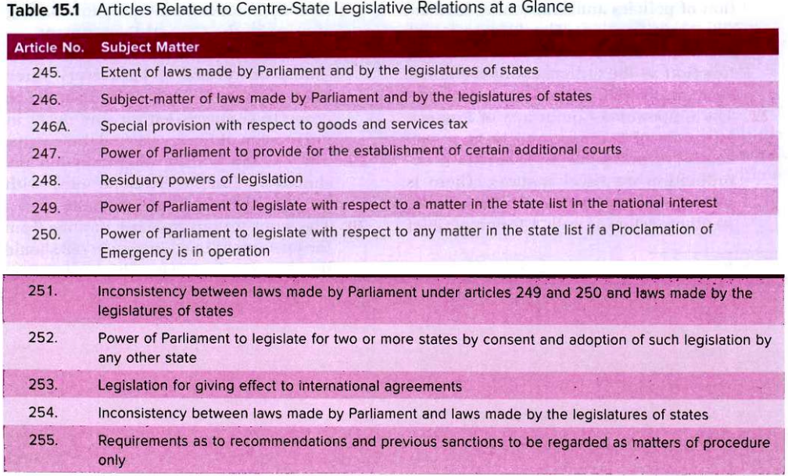
-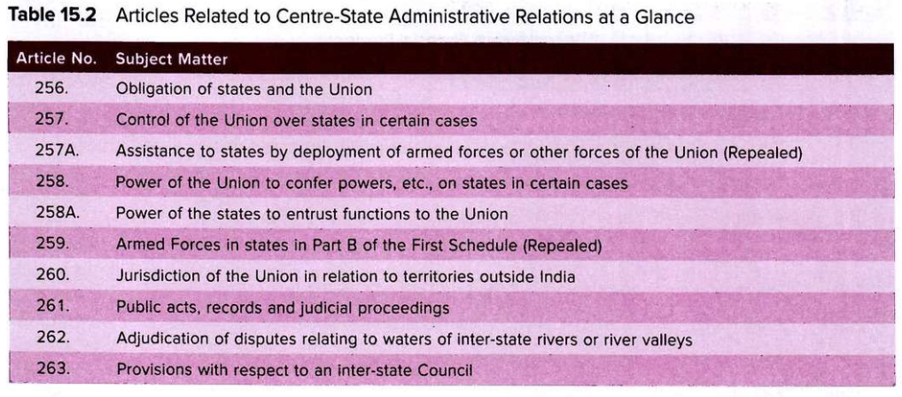
-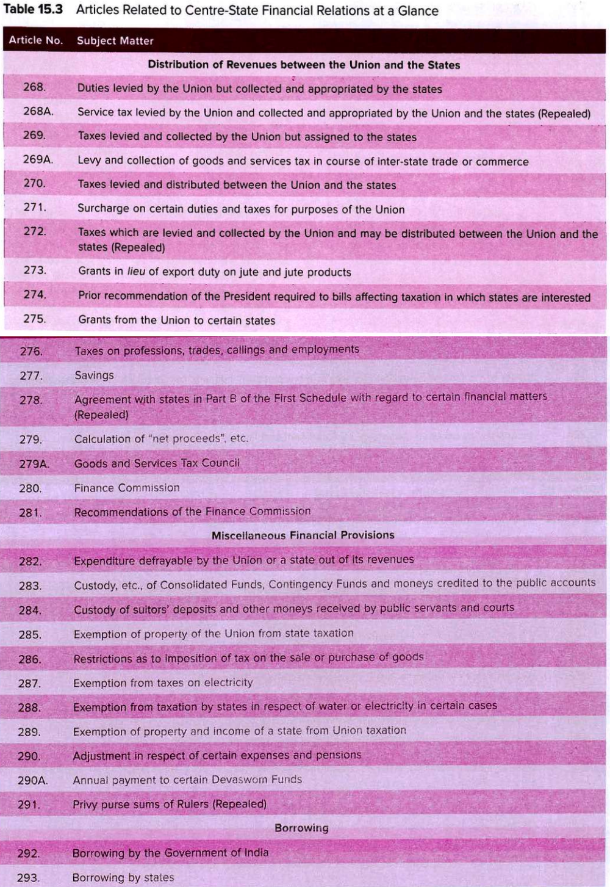
- Chapter 16: Inter-State Relations - Introduction - The effective functioning of India’s federal system relies on harmonious relations and close cooperation not only between the Centre and the states but also among the states themselves. To facilitate inter-state comity, the Constitution includes provisions for: - 1. Adjudication of inter-state water disputes. - 2. Coordination through inter-state councils. - 3. Mutual recognition of public acts, records, and judicial proceedings. - 4. Freedom of inter-state trade, commerce, and intercourse. - Additionally, Parliament has established zonal councils under the States Reorganisation Act, 1956, to promote inter-state cooperation and coordination. - Inter-State Water Disputes - Article 262 provides for the adjudication of inter-state water disputes, with two key provisions: - (i) Parliament may by law provide for the adjudication of disputes or complaints regarding the use, distribution, and control of waters of any inter-state river or river valley. - (ii) Parliament may bar the Supreme Court or any other court from exercising jurisdiction over such disputes or complaints. - Pursuant to Article 262, Parliament has enacted two laws: - The River Boards Act, 1956, which allows the Central government to establish river boards, upon the request of concerned state governments, to regulate and develop inter-state rivers and river valleys. - The Inter-State River Water Disputes Act, 1956, which empowers the Central government to constitute ad hoc tribunals to adjudicate disputes between two or more states concerning inter-state river or river valley waters. Tribunal decisions are final and binding, and neither the Supreme Court nor any other court has jurisdiction over disputes referred to such tribunals. - The Central government has established several inter-state water dispute tribunals, detailed in: -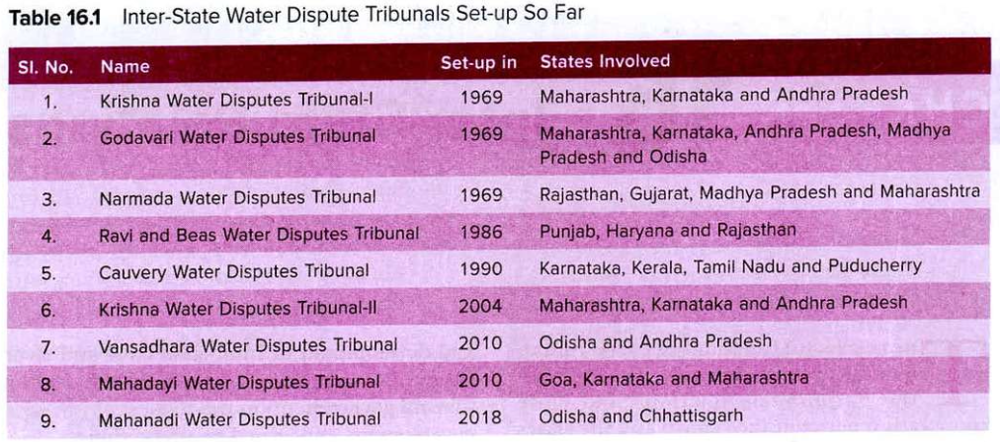
- Inter-State Councils - Article 263 provides for the establishment of an Inter-State Council to promote coordination between states and between the Centre and states. The President may establish such a council if it serves the public interest, defining its duties, organization, and procedure. - Although the President can specify the council’s duties, Article 263 outlines three possible functions: - (a) Enquiring into and advising on disputes between states. - (b) Investigating and discussing subjects of common interest to the states or the Centre and states. - (c) Making recommendations on such subjects, particularly for better coordination of policy and action. - The Inter-State Council’s role in addressing inter-state disputes complements the Supreme Court’s jurisdiction under Article 131 to resolve legal controversies between governments. The Council handles both legal and non-legal disputes but provides advisory recommendations, unlike the Court’s binding decisions (M.P. Jain, *Indian Constitutional Law*, Wadhwa, Fourth Edition, p. 382). - Under Article 263, the President has established several councils to enhance policy coordination in specific areas: - Central Council of Health and Family Welfare. - Central Council of Local Government (originally Central Council of Local Self-Government, established in 1954). - Four Regional Councils for Sales Tax for Northern, Eastern, Western, and Southern Zones. - Note: The Central Council of Indian Medicine and Central Council of Homoeopathy were established under separate Acts of Parliament. - Establishment of Inter-State Council - The Sarkaria Commission on Centre-State Relations (1983–88) strongly advocated for a permanent Inter-State Council under Article 263, recommending it be called the Inter-Governmental Council to distinguish it from other bodies under the same article. The Commission suggested the Council focus on duties under clauses (b) and (c) of Article 263. - Following these recommendations, the Janata Dal government, led by V.P. Singh, established the Inter-State Council on May 28, 1990, via the Inter-State Council Order. The Council comprises: - (i) Prime Minister as Chairman. - (ii) Chief Ministers of all states. - (iii) Chief Ministers of union territories with legislative assemblies. - (iv) Administrators of union territories without legislative assemblies. - (v) Governors of states under President’s rule. - (vi) Six Central Cabinet Ministers, including the Home Minister, nominated by the Prime Minister. - Five Ministers of Cabinet rank or Minister of State (independent charge), nominated by the Prime Minister, are permanent invitees. - The Council is a recommendatory body, focusing on: - Investigating and discussing subjects of common interest. - Making recommendations for better policy and action coordination. - Deliberating on matters of general interest referred by the Chairman. - The Council meets at least three times annually, with meetings held in camera and decisions made by consensus. - A Standing Committee, established in 1996, facilitates continuous consultation and processes matters for the Council’s consideration. It includes: - (i) Union Home Minister as Chairman. - (ii) Five Union Cabinet Ministers. - (iii) Nine Chief Ministers. - The Council is supported by the Inter-State Council Secretariat, established in 1991 and headed by a Secretary to the Government of India. Since 2011, it also serves as the secretariat for the Zonal Councils. - Public Acts, Records, and Judicial Proceedings - As each state’s jurisdiction is limited to its territory, acts and records of one state may not be recognized in another. To address this, the Constitution’s “Full Faith and Credit” clause (Article 261) provides: - (i) Full faith and credit must be given throughout India to public acts, records, and judicial proceedings of the Centre and every state. Public acts include legislative and executive actions, while public records encompass official books, registers, or records made by public servants in their official duties. - (ii) Parliament may prescribe the manner and conditions for proving such acts, records, and proceedings and their effect, allowing it to regulate their recognition across states. - (iii) Final judgments and orders of civil courts anywhere in India are executable nationwide without requiring a fresh suit. This applies only to civil judgments, not criminal ones, meaning courts are not required to enforce another state’s penal laws. - Inter-State Trade and Commerce - Articles 301 to 307 in Part XIII of the Constitution govern trade, commerce, and intercourse within India. - Article 301 ensures that trade, commerce, and intercourse throughout India shall be free, aiming to eliminate border barriers between states and foster a unified economic unit. This freedom applies to both inter-state and intra-state trade, commerce, and intercourse, with violations occurring if restrictions are imposed at state borders or any other stage. - The freedom under Article 301 is subject to restrictions outlined in Articles 302 to 305: - (i) Parliament may impose restrictions on trade, commerce, and intercourse between or within states in the public interest. However, it cannot favor one state over another or discriminate between states, except in cases of scarcity of goods (e.g., the Essential Commodities Act, 1955, allows the Central government to control production, supply, and distribution of commodities like petroleum, coal, iron, and steel). - (ii) State legislatures may impose reasonable restrictions on trade, commerce, and intercourse within or with their state in the public interest, but only with the President’s prior sanction. States cannot favor one state over another or discriminate between them. - (iii) States may impose taxes on goods imported from other states or union territories equivalent to taxes on similar locally manufactured goods, preventing discriminatory taxation. - (iv) The freedom under Article 301 is subject to nationalization laws, allowing Parliament or state legislatures to create monopolies for the Centre or states, fully or partially excluding citizens or others. - Parliament may appoint an authority to implement these provisions and confer necessary powers, but no such authority has been established (unlike the Interstate Commerce Commission in the USA). - Zonal Councils - Zonal Councils are statutory bodies established under the States Reorganisation Act, 1956, not constitutional bodies. The Act divided India into five zones—Northern, Central, Eastern, Western, and Southern—each with a zonal council. - Zones were formed considering natural divisions, river systems, means of communication, cultural and linguistic affinities, and requirements for economic development, security, and law and order. - Each Zonal Council comprises: - (a) Union Home Minister. - (b) Chief Ministers of all states in the zone. - (c) Two other ministers from each state. - (d) Administrators of union territories in the zone. - Advisors (without voting rights) include: - (i) A nominee from NITI Aayog. - (ii) Chief Secretary of each state government in the zone. - (iii) Development Commissioner of each state in the zone. - The Union Home Minister serves as Chairman of all five councils, with Chief Ministers acting as Vice-Chairmen on a rotational basis, holding office for one year. - Zonal Councils promote cooperation and coordination among states, union territories, and the Centre, discussing and recommending on issues like economic and social planning, linguistic minorities, border disputes, and inter-state transport. They are deliberative and advisory bodies. - Their objectives include: - Achieving emotional integration of the country. - Curbing acute state-consciousness, regionalism, linguism, and particularistic trends. - Mitigating after-effects of reorganization to synchronize integration and economic advancement. - Facilitating Centre-state cooperation in social and economic matters, exchanging ideas, and evolving uniform policies. - Ensuring speedy execution of major development projects. - Securing political equilibrium across regions. - North-Eastern Council - Established under the North-Eastern Council Act, 1971, it includes Assam, Manipur, Mizoram, Arunachal Pradesh, Nagaland, Meghalaya, Tripura, and Sikkim (added in 2002, effective August 8, 1972). - Its functions resemble those of Zonal Councils but include formulating a unified regional plan for common matters and reviewing measures for security and public order in the region. -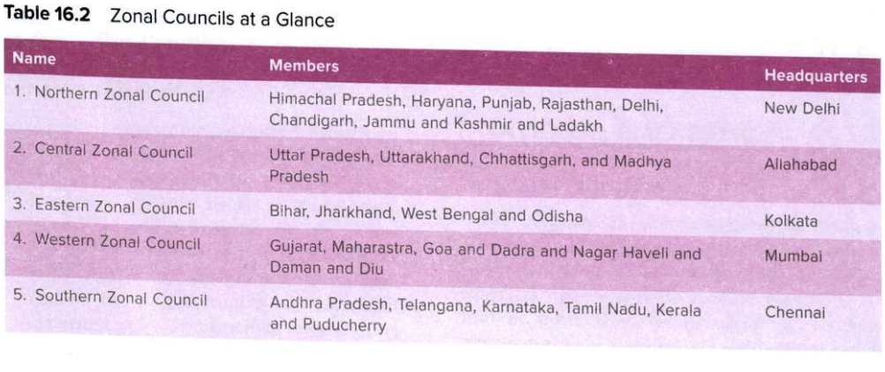
-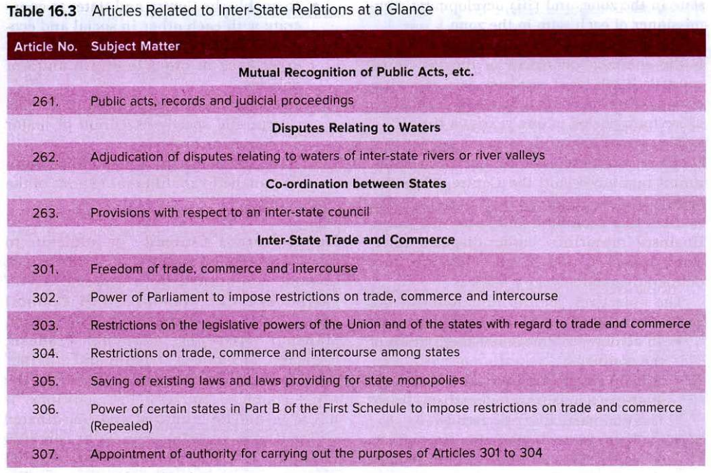
- Chapter 17: Emergency Provisions - Introduction - The Emergency provisions, contained in Part XVIII of the Constitution (Articles 352 to 360), enable the Central government to address abnormal situations effectively. Their inclusion aims to safeguard India’s sovereignty, unity, integrity, security, democratic political system, and Constitution. - During an Emergency, the Central government becomes all-powerful, and states come under its total control, transforming the federal structure into a unitary one without formal constitutional amendment. This shift from federalism in normal times to unitarism during emergencies is a unique feature of the Indian Constitution. Dr. B.R. Ambedkar observed in the Constituent Assembly: - “All federal systems, including the American, are placed in a tight mould of federalism. No matter what the circumstances, it cannot change its form and shape. It can never be unitary. On the other hand, the Constitution of India can be both unitary as well as federal according to the requirements of time and circumstances. In normal times, it is framed to work as a federal system. But in times of Emergency, it is so designed as to make it work as though it was a unitary system.” - The Constitution provides for three types of emergencies: - 1. National Emergency due to war, external aggression, or armed rebellion (Article 352). - 2. President’s Rule due to the failure of constitutional machinery in states (Article 356). - 3. Financial Emergency due to a threat to India’s financial stability or credit (Article 360). - National Emergency - Grounds of Declaration - Under Article 352, the President can declare a National Emergency if the security of India or any part thereof is threatened by war, external aggression, or armed rebellion. The President may act even before the actual occurrence if satisfied of imminent danger. - The President can issue different proclamations for war, external aggression, armed rebellion, or imminent danger thereof, whether or not another proclamation is in operation (added by the 38th Amendment Act, 1975). - A National Emergency declared due to war or external aggression is termed “External Emergency,” while one due to armed rebellion is called “Internal Emergency.” - The proclamation may apply to the entire country or a specific part, as enabled by the 42nd Amendment Act, 1976. - Originally, “internal disturbance” was a ground for declaration, but the 44th Amendment Act, 1978, replaced it with “armed rebellion” to narrow its scope, preventing declarations like the 1975 Emergency under vague grounds. - The President can declare a National Emergency only after receiving a written recommendation from the Cabinet, not merely on the Prime Minister’s advice (44th Amendment Act, 1978). This safeguard was introduced after the 1975 Emergency, when Prime Minister Indira Gandhi advised the President without consulting the Cabinet, informing it post-facto as a fait accompli. - The 38th Amendment Act, 1975, made National Emergency declarations immune from judicial review, but this was repealed by the 44th Amendment Act, 1978. In the Minerva Mills case (1980), the Supreme Court held that proclamations can be challenged if based on mala fide, extraneous, irrelevant, absurd, or perverse grounds. - Parliamentary Approval and Duration - The proclamation must be approved by both Houses of Parliament within one month of issuance, reduced from two months by the 44th Amendment Act, 1978. If the Lok Sabha is dissolved or dissolves during this period, the proclamation survives until 30 days from the first sitting of the reconstituted Lok Sabha, provided the Rajya Sabha approves it. - Once approved, the Emergency continues for six months and can be extended indefinitely with parliamentary approval every six months (44th Amendment Act, 1978). Previously, it could remain in force as long as the Executive desired. - If the Lok Sabha dissolves during the six-month period without approving continuance, the proclamation survives until 30 days from the reconstituted Lok Sabha’s first sitting, provided the Rajya Sabha approves it. - Resolutions approving the proclamation or its continuance require a special majority: (a) a majority of the total membership of each House, and (b) a majority of not less than two-thirds of members present and voting (44th Amendment Act, 1978). Previously, a simple majority sufficed. - Revocation of Proclamation - The President may revoke a proclamation at any time by a subsequent proclamation, which does not require parliamentary approval. - The President must revoke the proclamation if the Lok Sabha passes a resolution disapproving its continuance (44th Amendment Act, 1978). Previously, revocation was at the President’s discretion without Lok Sabha control. - If one-tenth of the Lok Sabha’s total members give written notice to the Speaker (or President, if the House is not in session), a special sitting must be held within 14 days to consider a disapproval resolution (44th Amendment Act, 1978). - A disapproval resolution differs from an approval resolution: - 1. Disapproval requires only Lok Sabha passage, while approval needs both Houses. - 2. Disapproval needs a simple majority, while approval requires a special majority. - Effects of National Emergency - A National Emergency has significant effects on the political system, categorized into three areas: - 1. Centre-state relations. - 2. Life of the Lok Sabha and state assemblies. - 3. Fundamental Rights. - Effect on Centre-State Relations - (a) Executive: The Centre’s executive power extends to directing states on how to exercise their executive powers, covering all matters (not just specified ones as in normal times). States remain operational but under complete Central control. - (b) Legislative: Parliament can legislate on State List subjects, overriding state legislatures’ powers, though the latter are not suspended. The Constitution becomes unitary. Laws made by Parliament on state subjects cease six months after the Emergency ends. The President can issue ordinances on state subjects if Parliament is not in session, and Parliament can confer powers or impose duties on the Centre for matters outside the Union List (42nd Amendment Act, 1976, extended these effects to all states). - (c) Financial: The President can modify revenue distribution between the Centre and states, reducing or cancelling transfers until the financial year in which the Emergency ends. Such orders must be laid before both Houses of Parliament. - Effect on the Life of the Lok Sabha and State Assembly - The Lok Sabha’s term (five years) can be extended by Parliament for one year at a time during a National Emergency, up to six months after the Emergency ends. For example, the Fifth Lok Sabha (1971–1977) was extended twice by one year (to March 1977 and March 1978) but dissolved on January 18, 1977. - State legislative assemblies’ terms can similarly be extended by one year at a time, up to six months post-Emergency. - Effect on Fundamental Rights - (a) Suspension of Fundamental Rights under Article 19: Under Article 358, the six Fundamental Rights under Article 19 are automatically suspended during a National Emergency declared due to war or external aggression (not armed rebellion, per the 44th Amendment Act, 1978). The state can make laws or take executive actions inconsistent with Article 19, which cannot be challenged. These rights revive post-Emergency, but actions during the Emergency remain immune. Only laws related to the Emergency are protected (44th Amendment Act, 1978). - (b) Suspension of Other Fundamental Rights: Under Article 359, the President can suspend the right to move courts for enforcing specified Fundamental Rights (except Articles 20 and 21, per the 44th Amendment Act, 1978). The rights themselves remain, but enforcement is suspended for the period specified in the Presidential Order, which must be approved by Parliament. Laws or actions inconsistent with specified rights cannot be challenged during the Order’s operation, but only Emergency-related laws are protected. - Distinction Between Articles 358 and 359 - 1. Article 358 applies only to Article 19, while Article 359 covers all Fundamental Rights specified in the Presidential Order. - 2. Article 358 automatically suspends Article 19 upon Emergency declaration, while Article 359 requires a Presidential Order to suspend enforcement. - 3. Article 358 applies only to External Emergency (war or external aggression), while Article 359 applies to both External and Internal Emergencies. - 4. Article 358 suspends Article 19 for the entire Emergency duration, while Article 359 suspends enforcement for a period specified by the President. - 5. Article 358 applies nationwide, while Article 359 may apply to the entire country or a part. - 6. Article 358 fully suspends Article 19, while Article 359 cannot suspend enforcement of Articles 20 and 21. - 7. Both provide immunity only for Emergency-related laws and actions. - Declarations Made So Far - National Emergency has been proclaimed three times: - 1962 (October) due to Chinese aggression in NEFA (now Arunachal Pradesh), revoked in January 1968. - 1971 (December) due to the India-Pakistan war, revoked in March 1977. - 1975 (June) due to internal disturbance, revoked in March 1977. - The 1975 Emergency was controversial due to alleged misuse. The Janata Party government (1977) appointed the Shah Commission, which found the declaration unjustified. The 44th Amendment Act, 1978, introduced safeguards to prevent such misuse. - President’s Rule - Grounds of Imposition - Article 355 obliges the Centre to protect states against external aggression and internal disturbance and ensure governance per the Constitution. Article 356 allows the President to impose President’s Rule if satisfied that a state’s government cannot function constitutionally, based on the governor’s report or otherwise. Article 365 permits imposition if a state fails to comply with Central directions. - Parliamentary Approval and Duration - A proclamation requires approval by both Houses of Parliament within two months. If the Lok Sabha is dissolved, the proclamation survives until 30 days from the reconstituted Lok Sabha’s first sitting, provided the Rajya Sabha approves it. - Once approved, President’s Rule lasts six months, extendable up to three years with parliamentary approval every six months (44th Amendment Act, 1978, reduced from one year per the 42nd Amendment Act, 1976). The 68th Amendment Act, 1991, allowed a five-year extension in Punjab (1987). - Beyond one year, extensions require: (a) a National Emergency in India or the state, and (b) Election Commission certification that elections cannot be held. - Approvals require a simple majority. Proclamations can be revoked by the President without parliamentary approval. - Consequences of President’s Rule - The President gains extraordinary powers: - 1. Assumes functions of the state government and powers of the governor or other executive authorities. - 2. Declares that state legislature powers are exercised by Parliament. - 3. Takes necessary steps, including suspending constitutional provisions related to state bodies. - The state council of ministers is dismissed, and the governor administers the state with the chief secretary or advisors. The state legislature is suspended or dissolved, and Parliament passes state bills and budgets. If dissolved, fresh elections are held. - Parliament can delegate law-making to the President or another authority. The President can authorize expenditure from the state consolidated fund when the Lok Sabha is not in session, pending parliamentary sanction. - Laws made by Parliament or the President remain operative post-President’s Rule but can be repealed by the state legislature. The state high court’s powers remain unaffected. - A comparison of National Emergency and President’s Rule is provided in: -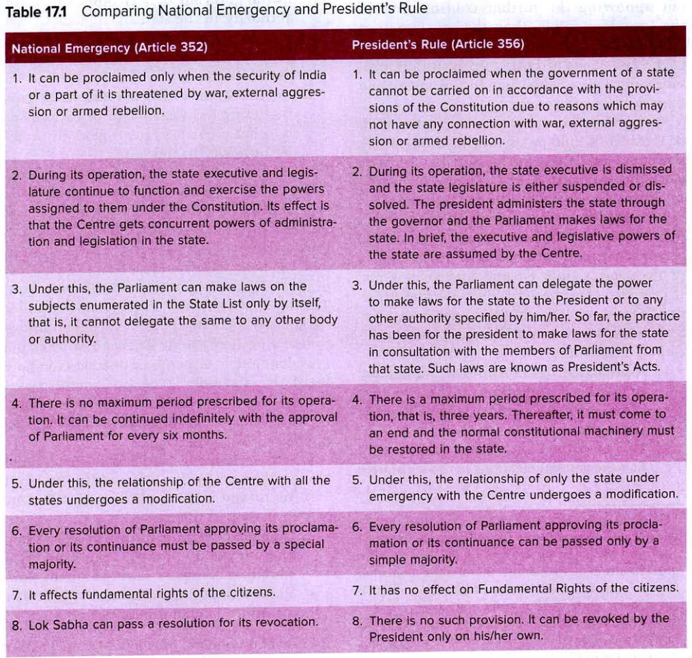
- Use of Article 356 - Since 1950, President’s Rule has been imposed over 125 times, often arbitrarily for political reasons, making Article 356 highly controversial. It was first imposed in Punjab in 1951 and has affected nearly all states. - In 1977, the Janata Party imposed President’s Rule in nine Congress-ruled states (Rajasthan, Uttar Pradesh, Madhya Pradesh, Punjab, Bihar, Himachal Pradesh, Odisha, West Bengal, Haryana) citing loss of electoral mandate. In 1980, Congress retaliated similarly in nine states (Uttar Pradesh, Bihar, Rajasthan, Madhya Pradesh, Punjab, Odisha, Gujarat, Maharashtra, Tamil Nadu). - In 1992, President’s Rule was imposed in three BJP-ruled states (Madhya Pradesh, Himachal Pradesh, Rajasthan) for not enforcing a Central ban on religious organizations. The Bommai case (1994) upheld this but struck down impositions in Nagaland (1988), Karnataka (1989), and Meghalaya (1991). - Dr. B.R. Ambedkar hoped Article 356 would remain a “dead-letter,” used only as a last resort, but it has been a “deadly-weapon” against state governments. - Scope of Judicial Review - The 38th Amendment Act, 1975, made the President’s satisfaction under Article 356 immune from judicial review, but the 44th Amendment Act, 1978, restored reviewability. The Bommai case (1994) established: - 1. Proclamations are subject to judicial review. - 2. The President’s satisfaction must be based on relevant material, not mala fide or extraneous grounds. - 3. The Centre must prove the material’s relevance. - 4. Courts can assess material relevance, not correctness. - 5. Unconstitutional proclamations allow restoration of the state government and legislature. - 6. Dissolution requires parliamentary approval; otherwise, the legislature is suspended. - 7. Anti-secular governance justifies action under Article 356. - 8. Confidence issues must be tested on the assembly floor. - 9. New Central governments cannot dismiss state ministries of other parties. - 10. Article 356 is an exceptional power for special situations. - Cases of Proper and Improper Use - Per the Sarkaria Commission (1988) and Bommai case (1994), proper uses include: - 1. Hung assembly with no majority party. - 2. Majority party declines to form a ministry, and no coalition is possible. - 3. Ministry resigns after defeat, and no alternative is feasible. - 4. State disregards Central constitutional directions. - 5. Internal subversion against the Constitution or law. - 6. Physical breakdown endangering state security. - Improper uses include: - 1. Dismissing a ministry without exploring alternatives. - 2. Governor assessing ministry support without a floor test. - 3. Imposition after Lok Sabha election defeats (e.g., 1977, 1980). - 4. Internal disturbances not amounting to subversion. - 5. Maladministration, corruption, or financial exigencies. - 6. No prior warning to the state, except in extreme urgency. - 7. Addressing intra-party issues or extraneous purposes. - Financial Emergency - Grounds of Declaration - Article 360 allows the President to proclaim a Financial Emergency if satisfied that India’s financial stability or credit (or any part thereof) is threatened. The 38th Amendment Act, 1975, made the President’s satisfaction final, but the 44th Amendment Act, 1978, restored judicial review. - Parliamentary Approval and Duration - The proclamation requires approval by both Houses within two months. If the Lok Sabha is dissolved, it survives until 30 days from the reconstituted Lok Sabha’s first sitting, provided the Rajya Sabha approves it. - Once approved, it continues indefinitely until revoked, with no maximum period or need for repeated approvals. A simple majority suffices for approval. - The President can revoke it without parliamentary approval. - Effects of Financial Emergency - 1. The Centre can direct states to observe financial propriety or issue other necessary directions. - 2. Directions may include reducing salaries or allowances of state employees or reserving money/financial bills for the President’s consideration after state legislature passage. - 3. The President can reduce salaries or allowances of Union employees, including Supreme Court and high court judges. - The Centre gains full financial control over states. H.N. Kunzru noted this threatens state financial autonomy. Dr. B.R. Ambedkar justified it by referencing the U.S. National Recovery Act (1933) for economic crisis management. No Financial Emergency has been declared, despite the 1991 financial crisis. - Criticism of the Emergency Provisions - Constituent Assembly critics argued: - 1. The federal character is destroyed, empowering the Union excessively. - 2. Union executive centralizes all powers. - 3. The President becomes a dictator. - 4. State financial autonomy is nullified. - 5. Fundamental Rights become meaningless, undermining democracy. - H.V. Kamath feared a totalitarian state, K.T. Shah called it reactionary, T.T. Krishnamachari warned of constitutional dictatorship, and H.N. Kunzru highlighted threats to state autonomy. - Supporters like Alladi Krishnaswami Ayyar called the provisions the “life-breath” of the Constitution, and Mahabir Tyagi viewed them as a “safety-valve.” Dr. B.R. Ambedkar acknowledged potential misuse but defended their necessity. - Articles related to Emergency provisions are summarized in: -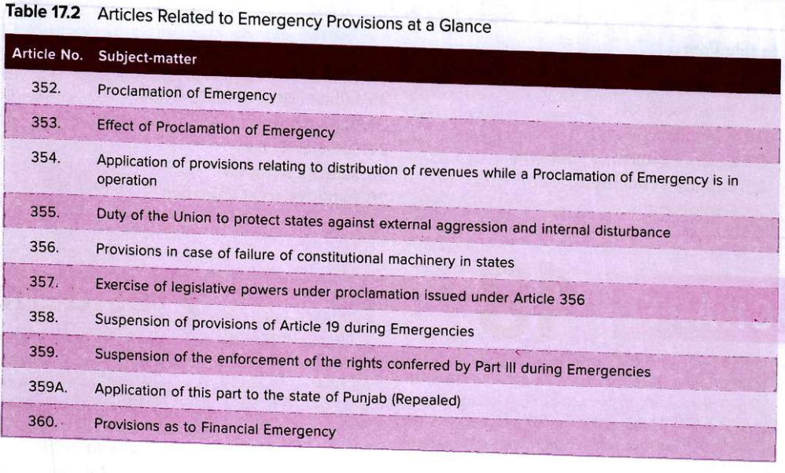
- CHAPTER 18: PRESIDENT - Introduction - Articles 52 to 78 in Part V of the Constitution deal with the Union executive, which consists of: - 1. The President. - 2. The Vice-President. - 3. The Prime Minister. - 4. The Council of Ministers. - 5. The Attorney General of India. - The President is the head of the Indian State, the first citizen of India, and acts as the symbol of unity, integrity, and solidarity of the nation. - Election of the President - The President is elected indirectly by an electoral college consisting of: - 1. The elected members of both Houses of Parliament. - 2. The elected members of the legislative assemblies of the states. - 3. The elected members of the legislative assemblies of the Union Territories of Delhi and Puducherry. - This provision was added by the 70th Constitutional Amendment Act of 1992, effective from June 1, 1995. - Nominated members of both Houses of Parliament, nominated members of state legislative assemblies, members (elected or nominated) of state legislative councils (in bicameral legislatures), and nominated members of the legislative assemblies of Delhi and Puducherry do not participate in the presidential election. - The 104th Constitutional Amendment Act of 2019 discontinued the nomination of Anglo-Indian members to the Lok Sabha and state legislative assemblies, effective from January 25, 2020. - If a legislative assembly is dissolved, its members cease to be qualified to vote in the presidential election, even if fresh elections are not held before the election. - To ensure uniformity in representation and parity between states and the Union, the number of votes for each elected member is determined as follows: - 1. For a state legislative assembly member: - Value of the vote of an MLA = (Total population of state / Total number of elected members in the state legislative assembly) x (1/1000) - Per the 84th Constitutional Amendment Act of 2001, 'population' refers to the 1971 census until figures from the first census after 2026 are published. - 2. For a member of Parliament: - Value of the vote of an MP = Total value of votes of all MLAs of all states / Total number of elected members of Parliament - The values of votes for MLAs, states, MPs, and the electoral college for the 2022 presidential election are detailed in: -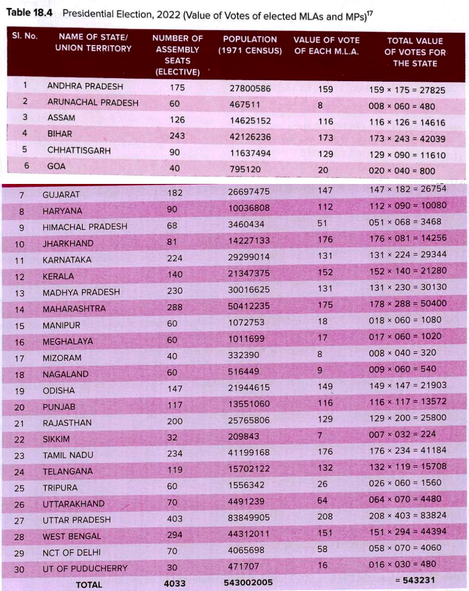
- The election follows the system of proportional representation by single transferable vote, with voting by secret ballot. A candidate must secure an absolute majority, determined by: - Electoral quota = (Total number of valid votes polled / 2) + 1 - Voters mark preferences (1, 2, 3, etc.) on a single ballot. First preference votes are counted; if no candidate secures the quota, the candidate with the least votes is eliminated, and their second preferences are transferred. This continues until a candidate achieves the quota. - Disputes regarding the election are resolved by the Supreme Court, whose decision is final. The election cannot be challenged due to an incomplete electoral college. If an election is declared void, acts performed by the President before the declaration remain valid. - The Constituent Assembly opted for indirect election to align with the parliamentary system, where the President is a nominal executive, and to avoid the cost and complexity of direct elections. Election by Parliament alone was rejected to ensure the President represents both the Union and states equally. - The term 'proportional representation' is a misnomer, as only one vacancy exists; 'preferential vote' is more accurate. Similarly, 'single transferable vote' is debated, as voters have plural preferences. - Presidential elections from 1952 to 2022 are summarized in: -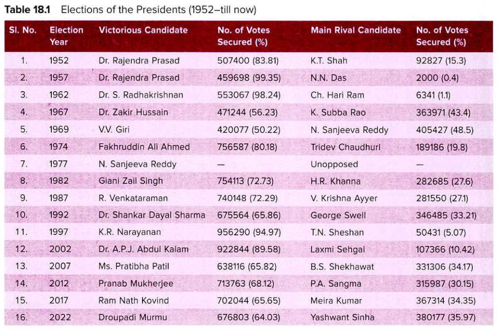
- Qualifications, Oath, and Conditions - Qualifications for Election as President - A candidate must: - 1. Be a citizen of India. - 2. Have completed 35 years of age. - 3. Be qualified for election as a member of the Lok Sabha. - 4. Not hold any office of profit under the Union, state, local, or public authority. - A sitting President, Vice-President, Governor, or Union/state minister is not deemed to hold an office of profit. - Per the Presidential and Vice-Presidential Elections Act of 1952, amended in 1997. - Nominations require at least 50 electors as proposers and 50 as seconders. A candidate must deposit Rs. 15,000 with the Reserve Bank of India, forfeitable if they fail to secure one-sixth of the votes. Before 1997, the requirement was 10 proposers and seconders and a Rs. 2,500 deposit. - Oath or Affirmation by the President - Before assuming office, the President swears to: - 1. Faithfully execute the office. - 2. Preserve, protect, and defend the Constitution and the law. - 3. Devote themselves to the service and well-being of the people of India. - The oath is administered by the Chief Justice of India or, in their absence, the seniormost Supreme Court judge available. Acting Presidents also take this oath. - Conditions of President's Office - The President: - 1. Must not be a member of Parliament or a state legislature; if elected, they vacate such a seat upon assuming office. - 2. Must not hold any other office of profit. - 3. Is entitled to rent-free residence at Rashtrapati Bhavan. - 4. Receives emoluments, allowances, and privileges as determined by Parliament. - 5. Has emoluments and allowances that cannot be reduced during their term. - In 2018, the President’s salary increased from Rs. 1.5 lakh to Rs. 5 lakh per month, effective January 1, 2016, per the Finance Act, 2018, amending the President’s Emoluments and Pension Act, 1951. - In 2008, the pension for retired Presidents was set at 50% of their salary, with additional benefits including a furnished residence, phone, car, medical treatment, travel, secretarial staff, and office expenses up to Rs. 1 lakh annually. Spouses of deceased Presidents receive a pension at 50% of the retired President’s pension, with similar benefits up to Rs. 20,000 annually in office expenses, per the President’s Emoluments and Pension Amendment Act of 2008. - The President enjoys immunity from legal liability for official acts, criminal proceedings during their term (even for personal acts), and arrest or imprisonment. Civil proceedings for personal acts may be initiated after two months’ notice. - Term, Impeachment, and Vacancy - Term of President's Office - The President serves a five-year term from the date of assuming office. They may resign by addressing a letter to the Vice-President or be removed via impeachment. They can hold office beyond their term until a successor assumes charge and are eligible for re-election without a term limit. Only Dr. Rajendra Prasad served two terms. - Impeachment of President - The President may be impeached for 'violation of the Constitution,' though the term is undefined. Charges can be initiated in either House of Parliament, signed by one-fourth of its members, with 14 days’ notice to the President. The resolution requires a two-thirds majority of the House’s total membership. The other House investigates, with the President entitled to appear or be represented. If the second House passes the resolution by a two-thirds majority, the President is removed from the date of passage. - Nominated members of Parliament participate in impeachment, unlike the election, while state and Union Territory assembly members do not. No President has been impeached. - Vacancy in the President's Office - A vacancy arises due to: - 1. Expiry of the five-year term. - 2. Resignation. - 3. Impeachment. - 4. Death (e.g., Dr. Zakir Hussain and Fakhruddin Ali Ahmed died in office). - 5. Disqualification or void election. - Elections to fill a vacancy due to term expiry must occur before the term ends. If delayed, the outgoing President continues until a successor assumes office. For vacancies due to resignation, removal, death, or otherwise, an election must be held within six months, and the new President serves a full five-year term. - The Vice-President acts as President during such vacancies or when the President is unable to discharge duties due to absence, illness, or other causes. If the Vice-President’s office is vacant, the Chief Justice of India or the seniormost Supreme Court judge acts as President. For example, after Dr. Zakir Hussain’s death in 1969, Vice-President V.V. Giri acted as President, followed by Chief Justice M. Hidayatullah from July 20 to August 24, 1969. - Acting Presidents enjoy the same powers, immunities, and emoluments as the President. - Powers and Functions of the President - The President’s powers and functions are categorized as: - 1. Executive powers. - 2. Legislative powers. - 3. Financial powers. - 4. Judicial powers. - 5. Diplomatic powers. - 6. Military powers. - 7. Emergency powers. - Executive Powers - The President: - (a) Takes all executive actions of the Union government in their name. - (b) Makes rules specifying how orders and instruments made in their name are authenticated. - (c) Makes rules for the convenient transaction of Union government business and its allocation among ministers. - (d) Appoints the Prime Minister and other ministers, who hold office during their pleasure. - (e) Appoints the Attorney General of India and determines their remuneration, holding office during their pleasure. - (f) Appoints the Comptroller and Auditor General, Chief Election Commissioner, other Election Commissioners, Chairman and members of the Union Public Service Commission, Governors, and Finance Commission members. - (g) May seek information from the Prime Minister on Union administration and legislative proposals. - (h) May require the Prime Minister to submit for Council of Ministers’ consideration any matter decided by a minister but not considered by the Council. - (i) May appoint a commission to investigate conditions of backward classes. - (j) May appoint an inter-state council to promote Centre-state and inter-state cooperation. - (k) Directly administers union territories through appointed administrators. - (l) May declare areas as scheduled areas and has powers over their administration and tribal areas. - Legislative Powers - The President, an integral part of Parliament, has the following powers: - (a) Summons or prorogues Parliament and dissolves the Lok Sabha; may summon a joint sitting of both Houses, presided over by the Lok Sabha Speaker. - (b) Addresses Parliament at the first session after each general election and each year’s first session. - (c) Sends messages to Parliament regarding pending bills or other matters. - (d) Appoints a Lok Sabha member to preside when both Speaker and Deputy Speaker offices are vacant, and similarly for the Rajya Sabha when Chairman and Deputy Chairman offices are vacant. - (e) Nominates 12 Rajya Sabha members with special knowledge or experience in literature, science, art, or social service. - (f) Nominated two Lok Sabha members from the Anglo-Indian community until 2020, discontinued by the 104th Constitutional Amendment Act of 2019. - (g) Decides on member disqualifications in consultation with the Election Commission. - (h) Requires prior recommendation or permission for bills involving expenditure from the Consolidated Fund, state boundary alterations, money bills, tax variations affecting states, redefining 'agricultural income,' or affecting state revenue distribution. - (i) For bills passed by Parliament, may: - (i) Assent to the bill. - (ii) Withhold assent. - (iii) Return the bill (if not a money bill) for reconsideration. If repassed, the President must assent. - (j) For state bills reserved by the Governor, may: - (i) Assent to the bill. - (ii) Withhold assent. - (iii) Direct the Governor to return the bill (if not a money bill) for reconsideration. The President is not obliged to assent even if repassed. - (k) Promulgates ordinances when Parliament is not in session, which must be approved within six weeks of reassembly or withdrawn. - (l) Lays reports of the Comptroller and Auditor General, Union Public Service Commission, Finance Commission, and others before Parliament. - (m) Makes regulations for the peace, progress, and good government of Andaman and Nicobar Islands, Lakshadweep, Dadra and Nagar Haveli, Daman and Diu, and Ladakh. For Puducherry, this applies when its assembly is suspended or dissolved. - Financial Powers - The President: - (a) Requires prior recommendation for money bills. - (b) Lays the annual financial statement (Union Budget) before Parliament. - (c) Ensures no demand for a grant is made without their recommendation. - (d) Makes advances from the Contingency Fund of India for unforeseen expenditure. - (e) Constitutes a Finance Commission every five years to recommend revenue distribution between Centre and states. - Judicial Powers - The President: - (a) Appoints the Chief Justice and judges of the Supreme Court and High Courts. - (b) May seek Supreme Court advice on questions of law or fact, though not bound by it. - (c) May grant pardons, reprieves, respites, remissions, or commute sentences for: - (i) Court-martial punishments. - (ii) Offences against Union laws. - (iii) Death sentences. - Diplomatic Powers - International treaties and agreements are negotiated and concluded in the President’s name, subject to Parliamentary approval. The President represents India internationally and appoints and receives diplomats. - Military Powers - As supreme commander of the defence forces, the President appoints the chiefs of the Army, Navy, and Air Force and may declare war or peace, subject to Parliamentary approval. - Emergency Powers - The President may proclaim: - (a) National Emergency (Article 352) on grounds of war, external aggression, or armed rebellion, allowing modification of financial distribution and suspension of Fundamental Rights except Articles 20 and 21. - (b) President’s Rule (Articles 356 and 365) due to failure of state constitutional machinery or non-compliance with Union directions, enabling assumption of state functions, delegation of state legislative powers to Parliament, and authorization of state expenditure. - (c) Financial Emergency (Article 360) if India’s financial stability or credit is threatened, allowing salary reductions for Union employees, including judges. - Veto Power of the President - A bill passed by Parliament requires the President’s assent to become law. Under Article 111, the President may: - 1. Assent to the bill. - 2. Withhold assent. - 3. Return the bill (if not a money bill) for reconsideration. If repassed, the President must assent. - The veto power prevents hasty or unconstitutional legislation and includes: - 1. Absolute veto: Withholding assent, ending the bill, used for private members’ bills or government bills after cabinet changes. - 2. Suspensive veto: Returning a bill for reconsideration, overridden by repassage with an ordinary majority. - 3. Pocket veto: Taking no action, keeping the bill pending indefinitely. - Examples include: - In 1954, President Dr. Rajendra Prasad withheld assent to the PEPSU Appropriation Bill after President’s Rule was revoked. - In 1991, President R. Venkataraman withheld assent to the Salary, Allowances, and Pension of Members of Parliament (Amendment) Bill for lacking prior recommendation. - In 1986, President Zail Singh exercised pocket veto on the Indian Post Office (Amendment) Bill. - The President has no veto over constitutional amendment bills, per the 24th Constitutional Amendment Act of 1971. - For state legislation under Article 200, the Governor may: - 1. Assent to the bill. - 2. Withhold assent. - 3. Return the bill (if not a money bill) for reconsideration. - 4. Reserve the bill for the President’s consideration. - Under Article 201, the President may: - 1. Assent to the bill. - 2. Withhold assent. - 3. Direct the Governor to return the bill (if not a money bill). The President is not obliged to assent if repassed. - The President’s veto powers over Central and state legislation are summarized in: -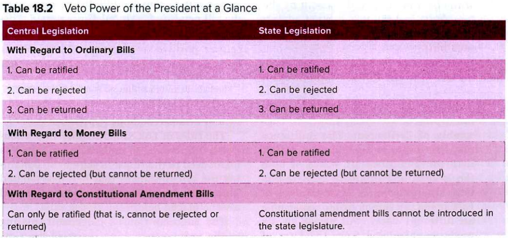
- Ordinance-Making Power of the President - Under Article 123, the President may promulgate ordinances during Parliamentary recess, with the same force as acts of Parliament but temporary in nature. This power addresses urgent matters, subject to: - 1. Issuance only when both Houses are not in session or one House is not in session. - 2. The President’s satisfaction that immediate action is necessary, justiciable on grounds of malafide (Cooper vs. Union of India, 1970). - 3. Coextensive with Parliament’s law-making powers, subject to constitutional limitations, including Fundamental Rights. - 4. Ordinances must be laid before both Houses upon reassembly, ceasing to operate after six weeks if not approved or if disapproved earlier. - The President may withdraw ordinances at any time, acting on the Council of Ministers’ advice. Ordinances can be retrospective, modify or repeal acts, or amend tax laws but cannot amend the Constitution. - The Supreme Court in D.C. Wadhwa vs. State of Bihar (1986) ruled against successive repromulgation of ordinances without legislative approval, deeming it unconstitutional. - A statement explaining the need for an ordinance must accompany bills replacing it in the Lok Sabha. - Pardoning Power of the President - Under Article 72, the President may grant pardons, reprieves, respites, remissions, or commute sentences for: - 1. Offences against Union laws. - 2. Court-martial punishments. - 3. Death sentences. - This power, independent of the judiciary, corrects judicial errors or mitigates harsh sentences. It includes: - 1. Pardon: Absolves the convict from all sentences and disqualifications. - 2. Commutation: Substitutes a lighter punishment. - 3. Remission: Reduces the sentence period without changing its nature. - 4. Respite: Awards a lesser sentence due to special circumstances. - 5. Reprieve: Temporarily stays execution to allow time for pardon or commutation. - The Governor’s pardoning power under Article 161 differs as they cannot pardon court-martial sentences or death sentences, though they can suspend, remit, or commute death sentences concurrently with the President. - In Kehar Singh vs. Union of India (1988), the Supreme Court held that the President’s pardoning power is exercised on Cabinet advice, is not subject to oral hearings, and is justiciable only for arbitrariness or malafide. - Constitutional Position of the President - India’s parliamentary system makes the President a nominal executive, with real power vested in the Council of Ministers headed by the Prime Minister. The President acts on the Council’s advice, per Articles 53, 74, and 75. - The 42nd Constitutional Amendment Act of 1976 made the President’s adherence to ministerial advice binding. The 44th Amendment Act of 1978 allowed the President to return advice for reconsideration once, but the reconsidered advice is binding. - The President has situational discretion in: - (i) Appointing the Prime Minister when no party has a clear majority or after a sudden vacancy. - (ii) Dismissing the Council of Ministers if it loses Lok Sabha confidence. - (iii) Dissolving the Lok Sabha if the Council loses its majority. -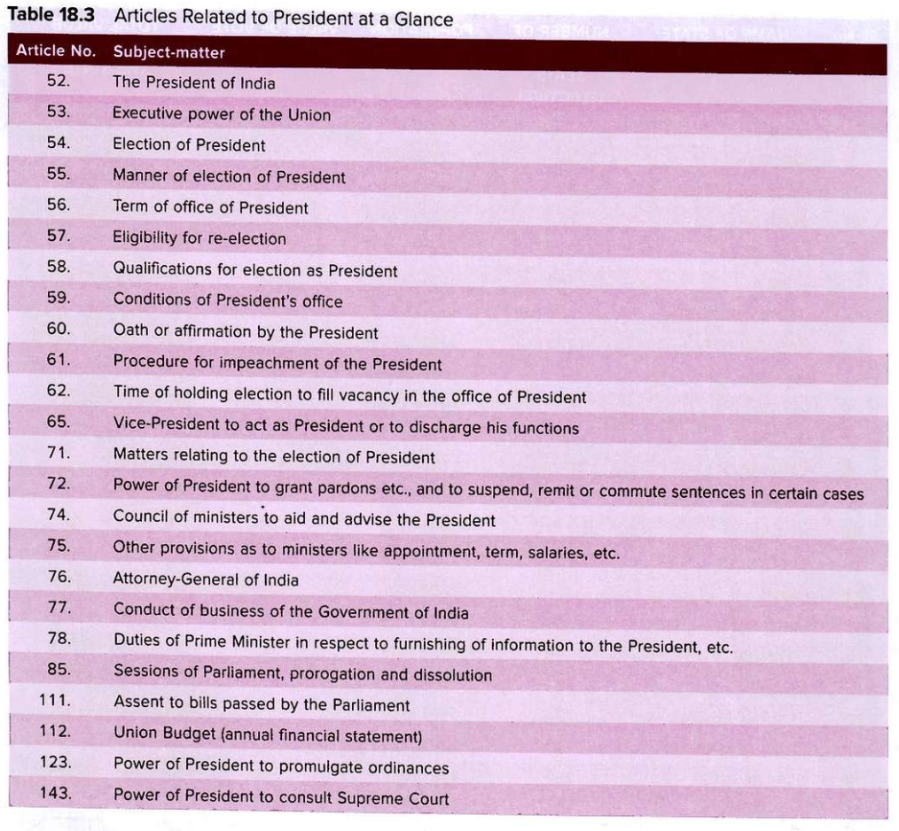
- CHAPTER 19: VICE-PRESIDENT - Introduction - The Vice-President occupies the second highest office in India, ranked next to the President in the official warrant of precedence. - The office is modelled on the American Vice-President, particularly in its role as the ex-officio Chairman of the Rajya Sabha. - Election - The Vice-President is elected indirectly by an electoral college consisting of both elected and nominated members of both Houses of Parliament. - The original Constitution required election by a joint meeting of both Houses, but this was amended by the 11th Constitutional Amendment Act of 1961 to simplify the process. - The electoral college differs from that for the President’s election in two respects: - 1. It includes both elected and nominated members of Parliament, whereas the President’s electoral college includes only elected members. - 2. It excludes members of state legislative assemblies, whereas the President’s electoral college includes elected members of state legislative assemblies. - Dr. B.R. Ambedkar explained this difference in the Constituent Assembly Debates (Volume VII, p. 1001): - The President’s powers extend to both Union and state administration, necessitating state legislature participation in their election. - The Vice-President’s primary role is to preside over the Rajya Sabha, with only temporary duties as acting President, making state legislature participation unnecessary. - The election follows the system of proportional representation by single transferable vote, with voting by secret ballot, similar to the President’s election. - A candidate must secure an absolute majority, calculated as: Electoral quota = (Total number of valid votes polled / 2) + 1. - Voters mark preferences (1, 2, 3, etc.), and votes are transferred from eliminated candidates until a candidate achieves the quota. - Disputes regarding the election are resolved by the Supreme Court, whose decision is final. - The election cannot be challenged due to an incomplete electoral college. - If an election is declared void, acts performed by the Vice-President before the declaration remain valid. - Vice-presidential elections from 1952 to 2022 are summarized in: -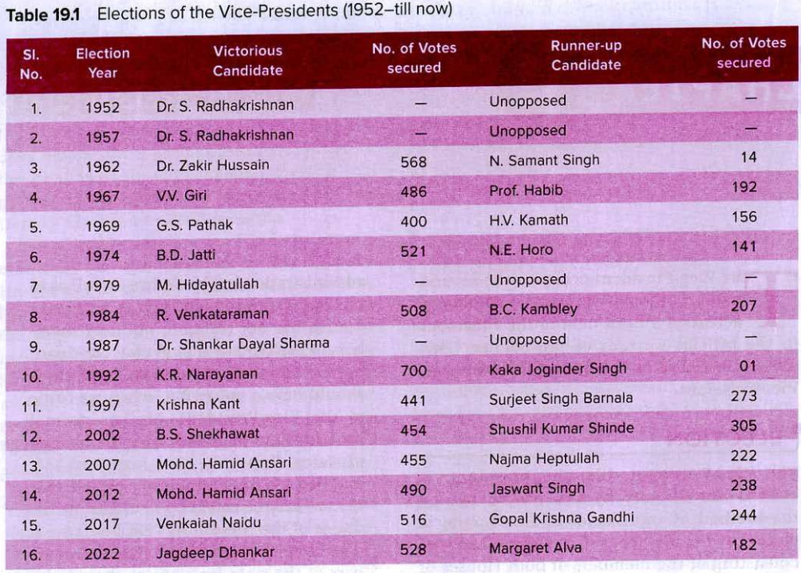
- Qualifications, Oath, and Conditions - Qualifications - To be eligible for election as Vice-President, a candidate must: - 1. Be a citizen of India. - 2. Have completed 35 years of age. - 3. Be qualified for election as a member of the Rajya Sabha. - 4. Not hold any office of profit under the Union, state, local, or public authority. - A sitting President, Vice-President, Governor, or Union/state minister is not deemed to hold an office of profit and is eligible. - Nominations require at least 20 electors as proposers and 20 as seconders, with a security deposit of Rs. 15,000 in the Reserve Bank of India, forfeitable if the candidate fails to secure one-sixth of the votes. - Per the Presidential and Vice-Presidential Elections Act, 1952, amended in 1997. - Oath or Affirmation - Before assuming office, the Vice-President swears to: - 1. Bear true faith and allegiance to the Constitution of India. - 2. Faithfully discharge the duties of the office. - The oath is administered by the President or a person appointed by them. - Conditions of Office - The Vice-President: - 1. Must not be a member of either House of Parliament or a state legislature; if elected, they are deemed to have vacated such a seat upon assuming office. - 2. Must not hold any other office of profit. - Term and Vacancy - Term of Office - The Vice-President serves a five-year term from the date of assuming office. - They may resign by addressing a letter to the President or be removed before their term ends. - Removal requires a resolution passed by a majority of all then members of the Rajya Sabha (effective majority) and agreed to by the Lok Sabha with a simple majority. - The resolution can only be introduced in the Rajya Sabha with at least 14 days’ notice. - No specific grounds for removal are mentioned in the Constitution. - The Vice-President can hold office beyond their term until a successor assumes charge and is eligible for re-election for any number of terms. - Dr. S. Radhakrishnan was elected for two terms (1952–1962). - Vacancy in Office - A vacancy arises due to: - 1. Expiry of the five-year term. - 2. Resignation. - 3. Removal. - 4. Death (e.g., Krishna Kant was the first Vice-President to die in office in 2002). - 5. Disqualification or void election. - Elections to fill a vacancy due to term expiry must occur before the term ends. - For vacancies due to resignation, removal, death, or otherwise, an election must be held as soon as possible, and the new Vice-President serves a full five-year term. - Powers and Functions - The Vice-President has two primary functions: - 1. Acts as the ex-officio Chairman of the Rajya Sabha, with powers and functions similar to the Speaker of the Lok Sabha, including presiding over sessions, maintaining order, and deciding on procedural matters. - 2. Acts as President or discharges presidential functions during a vacancy in the President’s office (due to resignation, impeachment, death, or otherwise) or when the President is unable to discharge duties due to absence, illness, or other causes. - The Vice-President can act as President for a maximum of six months, within which a new President must be elected. - Examples include: - Vice-Presidents V.V. Giri and B.D. Jatti acted as President after the deaths of Presidents Dr. Zakir Hussain (1969) and Fakhruddin Ali Ahmed (1977), respectively. - Vice-President Dr. S. Radhakrishnan discharged presidential functions in June 1960 and July 1961 due to President Dr. Rajendra Prasad’s absence and illness. - While acting as President, the Vice-President does not perform the duties of the Chairman of the Rajya Sabha, which are performed by the Deputy Chairman. - The Vice-President draws their salary as the ex-officio Chairman of the Rajya Sabha, increased in 2018 from Rs. 1.25 lakh to Rs. 4 lakh per month, effective January 1, 2016, per the Finance Act, 2018, amending the Salaries and Allowances of Officers of Parliament Act, 1953. - In 2008, the pension for retired Vice-Presidents was set at 50% of their salary, with additional benefits including a furnished residence, medical facilities, travel, and allowances, per the Vice-President’s Pension (Amendment) Act, 2008. - When acting as President, the Vice-President receives the President’s salary and allowances, not those of the Rajya Sabha Chairman. - Indian and American Vice-Presidents Compared - The Indian Vice-President’s office is modelled on the American Vice-President, particularly as the Chairman of the Senate (equivalent to the Rajya Sabha). - A key difference is that the American Vice-President succeeds to the presidency for the unexpired term upon a vacancy, while the Indian Vice-President only acts as President temporarily until a new President is elected. - The Indian Vice-President’s role is limited, leading some scholars to call them ‘His Superfluous Highness,’ but the office ensures political continuity. - Articles related to the Vice-President are summarized in: -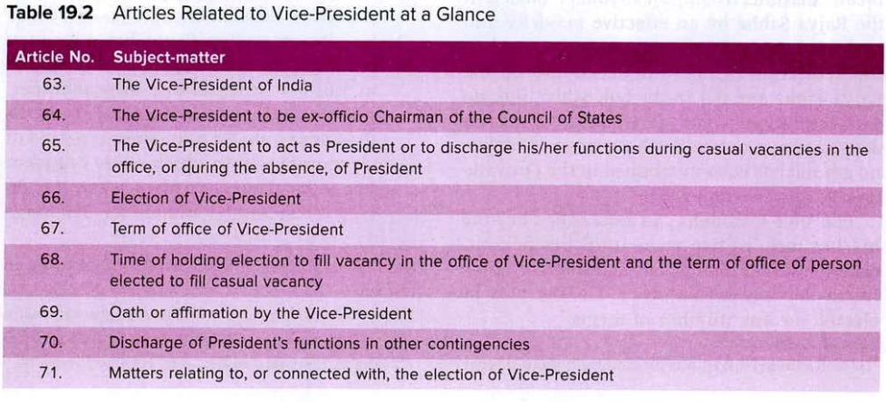
- CHAPTER 20: PRIME MINISTER - Introduction - In India’s parliamentary system, the President is the nominal executive (de jure), while the Prime Minister is the real executive (de facto). - The President is the head of the state, while the Prime Minister is the head of the government. - Appointment of the Prime Minister - The Constitution (Article 75) states that the Prime Minister is appointed by the President but does not specify the procedure. - Per parliamentary conventions, the President appoints the leader of the majority party or coalition in the Lok Sabha as the Prime Minister. - When no party has a clear majority, the President may exercise discretion, typically appointing the leader of the largest party or coalition and requiring a vote of confidence in the Lok Sabha within a specified period (e.g., one month). - Example: In 1979, President Neelam Sanjiva Reddy appointed Charan Singh as Prime Minister after the fall of the Janata Party government. - Discretion is also exercised when a Prime Minister dies suddenly without an obvious successor. - Example: In 1984, after Indira Gandhi’s assassination, President Zail Singh appointed Rajiv Gandhi, ignoring the precedent of a caretaker Prime Minister. - On the deaths of Jawaharlal Nehru (1964) and Lal Bahadur Shastri (1966), President appointed Gulzari Lal Nanda as interim Prime Minister until the Congress party elected a new leader. - If the ruling party elects a new leader after the Prime Minister’s death, the President must appoint them. - In 1980, the Delhi High Court ruled that a person need not prove majority support in the Lok Sabha before appointment; the President may appoint them and require proof of majority within a reasonable period. - Examples: Charan Singh (1979), V.P. Singh (1989), Chandrasekhar (1990), P.V. Narasimha Rao (1991), A.B. Vajpayee (1996, 1998), H.D. Deve Gowda (1996), and I.K. Gujral (1997). - In 1997, the Supreme Court ruled that a non-member of either House of Parliament can be appointed Prime Minister but must become a member within six months, failing which they cease to hold office. - The Prime Minister may be a member of either House of Parliament, unlike in Britain, where the Prime Minister must be from the House of Commons. - Examples: Indira Gandhi (1966), H.D. Deve Gowda (1996), and Manmohan Singh (2004) were Rajya Sabha members. - Oath, Term, and Salary - Before assuming office, the Prime Minister takes oaths of office and secrecy, administered by the President, similar to those for Union ministers. - In the oath of office, the Prime Minister swears to: - 1. Bear true faith and allegiance to the Constitution. - 2. Uphold India’s sovereignty and integrity. - 3. Faithfully and conscientiously discharge duties. - 4. Do right to all people per the Constitution and law, without fear, favour, affection, or ill will. - In the oath of secrecy, the Prime Minister swears not to reveal matters brought to their consideration except as required for official duties. - The Prime Minister’s term is not fixed and holds office during the President’s pleasure. - The President cannot dismiss the Prime Minister as long as they enjoy Lok Sabha majority support. - If they lose Lok Sabha confidence, they must resign, or the President may dismiss them. - Examples: V.P. Singh (1990) and H.D. Deve Gowda (1997) resigned after losing Lok Sabha confidence. - The salary and allowances are determined by Parliament, equivalent to a member of Parliament, plus a sumptuary allowance, free accommodation, travel, medical facilities, etc. - In 2001, the sumptuary allowance increased from Rs. 1,500 to Rs. 3,000 per month, per the Salaries and Allowances of Ministers (Amendment) Act, 2001. - Powers and Functions of the Prime Minister - In Relation to Council of Ministers - The Prime Minister, as head of the Council of Ministers, has the following powers: - 1. Recommends persons for appointment as ministers by the President, who can only appoint those recommended. - 2. Allocates and reshuffles portfolios among ministers. - 3. May ask a minister to resign or advise the President to dismiss them in case of differences. - 4. Presides over Council meetings and influences its decisions. - 5. Guides, directs, controls, and coordinates ministers’ activities. - 6. Can bring about the Council’s collapse by resigning, as the Council dissolves upon the Prime Minister’s resignation or death. - The resignation or death of any other minister creates a vacancy, which the Prime Minister may choose to fill. - In Relation to the President - The Prime Minister: - 1. Acts as the principal channel of communication between the President and the Council of Ministers (Article 78), with duties to: - (a) Communicate all Council decisions on Union administration and legislative proposals. - (b) Furnish information requested by the President. - (c) Submit matters decided by a minister but not considered by the Council for its consideration if required by the President. - 2. Advises the President on appointments of key officials, including the Attorney General, Comptroller and Auditor General, UPSC Chairman and members, Election Commissioners, and Finance Commission Chairman and members. - In Relation to Parliament - As the leader of the Lok Sabha, the Prime Minister: - 1. Advises the President on summoning and proroguing Parliament sessions. - 2. May recommend Lok Sabha dissolution to the President. - 3. Announces government policies on the House floor. - Other Powers and Functions - The Prime Minister: - 1. Chairs bodies like NITI Aayog, National Integration Council, Inter-State Council, and National Water Resources Council. - 2. Shapes India’s foreign policy. - 3. Acts as the chief spokesperson of the Union government. - 4. Serves as the crisis manager-in-chief during emergencies. - 5. Engages with various sections of society, receiving memoranda on their issues. - 6. Leads the ruling party. - 7. Is the political head of the services. - Dr. B.R. Ambedkar noted that the Prime Minister, not the President, is comparable to the U.S. President in functional significance. - Role Descriptions - Eminent scholars’ descriptions of the British Prime Minister apply to the Indian context: - Lord Morley: ‘Primus inter pares’ (first among equals) and ‘keystone of the cabinet arch.’ - Herbert Morrison: More than ‘primus inter pares,’ reflecting the Prime Minister’s dominant position. - Sir William Vernon Harcourt: ‘Inter stellas luna minores’ (a moon among lesser stars). - Jennings: A ‘sun around which planets revolve’ and ‘keystone of the constitution.’ - H.J. Laski: Central to the cabinet’s formation, life, and death, the ‘pivot’ of governmental machinery. - H.R.G. Greaves: ‘Master of the Government.’ - Munro: ‘Captain of the ship of the state.’ - Ramsay Muir: ‘Steersman of the steering wheel of the ship of the state.’ - Observers like R.H. Crossman and Humphrey Berkely describe the British system as ‘Prime Ministerial government,’ a term applicable to India due to the Prime Minister’s significant powers. - Relationship with the President - Constitutional provisions governing the relationship include: - 1. Article 74: The Council of Ministers, headed by the Prime Minister, aids and advises the President, who acts per their advice, though they may return advice for reconsideration once. - 2. Article 75: The President appoints the Prime Minister and other ministers on their advice; ministers hold office during the President’s pleasure, and the Council is collectively responsible to the Lok Sabha. - 3. Article 78: The Prime Minister’s duties include communicating Council decisions, furnishing information, and submitting matters for Council consideration as required by the President. - Chief Ministers Who Became Prime Ministers - Six individuals who were Chief Ministers before becoming Prime Ministers are: - 1. Morarji Desai: Bombay State (1952–1956), Prime Minister (1977–1979). - 2. Charan Singh: Uttar Pradesh (1967–1968, 1970), Prime Minister (1979–1980). - 3. V.P. Singh: Uttar Pradesh, Prime Minister (1989–1990). - 4. P.V. Narasimha Rao: Andhra Pradesh (1971–1973), Prime Minister (1991–1996). - 5. H.D. Deve Gowda: Karnataka, Prime Minister (1996–1997). - 6. Narendra Modi: Gujarat (2001–2014), Prime Minister (2014–present). - Caretaker Government - Meaning - The Constitution does not provide for a caretaker government; it is a situational arrangement. - A caretaker government: - 1. Manages routine activities after Lok Sabha dissolution until a new government is formed post-election, ensuring free and fair polls (J.C. Johari, *Indian Government and Policies*, 2001). - 2. Continues when a Council of Ministers resigns after losing Lok Sabha confidence but is asked to stay until alternative arrangements are made (Subhash C. Kashyap, *Our Constitution*, 2011). - Limited Role - A caretaker government handles routine administration, avoiding significant policy decisions or new initiatives except for national security or interest. - Key observations: - 1. The Tarkunde Committee (1974–1975) recommended that caretaker governments avoid new policies, projects, grants, or official functions attended by ministers. - 2. In 1979, President Neelam Sanjiva Reddy’s communique stated that the caretaker government would ensure fair elections and avoid new policies or significant spending. - 3. The Calcutta High Court (1979) noted that, despite no constitutional mention, a caretaker government is necessary for day-to-day administration until alternatives are arranged. - 4. Caretaker Prime Ministers are constrained by lack of Parliamentary accountability and the need to avoid electoral advantage (Rajeev Dhavan, *The Sunday Times of India*, 1999). -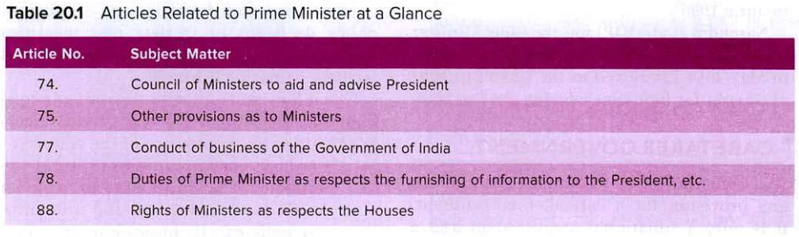
- CHAPTER 21: CENTRAL COUNCIL OF MINISTERS - Introduction - India’s parliamentary system, modelled on the British pattern, establishes the Council of Ministers, headed by the Prime Minister, as the real executive authority in the politico-administrative system. - The principles of the parliamentary system are not detailed in the Constitution, but Articles 74 and 75 outline the status, appointment, tenure, responsibility, qualifications, oaths, and salaries of ministers in a broad manner. - Constitutional Provisions - Article 74: Council of Ministers to Aid and Advise President - 1. There shall be a Council of Ministers, with the Prime Minister at its head, to aid and advise the President, who shall act in accordance with such advice. The President may require the Council to reconsider advice, and the President shall act per the reconsidered advice. - 2. The advice tendered by ministers to the President cannot be inquired into by any court. - Article 75: Other Provisions as to Ministers - 1. The Prime Minister is appointed by the President, and other ministers are appointed by the President on the Prime Minister’s advice. - 2. The total number of ministers, including the Prime Minister, shall not exceed 15% of the Lok Sabha’s total strength, per the 91st Constitutional Amendment Act of 2003. - 3. A member of either House of Parliament disqualified for defection is also disqualified from being appointed as a minister, per the 91st Constitutional Amendment Act of 2003. - 4. Ministers hold office during the pleasure of the President. - 5. The Council of Ministers is collectively responsible to the Lok Sabha. - 6. The President administers the oaths of office and secrecy to ministers. - 7. A minister who is not a member of either House of Parliament for six consecutive months ceases to be a minister. - 8. The salaries and allowances of ministers are determined by Parliament. - Article 77: Conduct of Business of the Government of India - 1. All executive actions of the Government of India are expressed in the President’s name. - 2. Orders and instruments made in the President’s name are authenticated per rules made by the President, and their validity cannot be questioned on grounds of not being made by the President. - 3. The President makes rules for the convenient transaction of government business and its allocation among ministers. - Article 78: Duties of Prime Minister - The Prime Minister shall: - 1. Communicate to the President all Council decisions on Union administration and legislative proposals. - 2. Furnish information on Union administration and legislative proposals as requested by the President. - 3. Submit for Council consideration any matter decided by a minister but not considered by the Council, if required by the President. - Article 88: Rights of Ministers as Respects the Houses - Every minister has the right to speak and participate in proceedings of either House, joint sittings, or Parliamentary committees of which they are a member, but can only vote in the House of which they are a member. - Nature of Advice by Ministers - Article 74 establishes the Council of Ministers to aid and advise the President, with advice made binding by the 42nd Constitutional Amendment Act of 1976. - The 44th Constitutional Amendment Act of 1978 allows the President to return advice for reconsideration once, but the reconsidered advice is binding. - The confidentiality of ministerial advice is protected, as courts cannot inquire into its nature, emphasizing the intimate relationship between the President and ministers. - Judicial interpretations: - In U.N.R. Rao vs. Indira Gandhi (1971), the Supreme Court held that the Council of Ministers does not cease to exist after Lok Sabha dissolution, and the President cannot exercise executive power without its aid and advice, as this would violate Article 74. - In Shamsher Singh vs. State of Punjab (1974), the Court ruled that the President’s ‘satisfaction’ in constitutional matters is the Council’s satisfaction, not personal, as the President acts on ministerial advice. - Appointment of Ministers - The President appoints the Prime Minister, and other ministers are appointed on the Prime Minister’s advice, ensuring only recommended persons are appointed. - Ministers are usually members of Parliament (Lok Sabha or Rajya Sabha). A non-member can be appointed but must become a member of either House within six months, or they cease to be a minister. - A minister from one House can speak and participate in the other House’s proceedings but can only vote in their own House. - Oath and Salary of Ministers - Before assuming office, a minister takes oaths of office and secrecy, administered by the President. - In the oath of office, the minister swears to: - 1. Bear true faith and allegiance to the Constitution. - 2. Uphold India’s sovereignty and integrity. - 3. Faithfully and conscientiously discharge duties. - 4. Do right to all people per the Constitution and law, without fear, favour, affection, or ill will. - In the oath of secrecy, the minister swears not to reveal matters brought to their consideration except as required for official duties. - The Supreme Court, in 1990, upheld the validity of Devi Lal’s oath as Deputy Prime Minister, ruling that titles like Deputy Prime Minister, Minister of State, or Deputy Minister are descriptive and do not confer additional powers or vitiate the oath, provided the substantive oath is correct. - Ministers receive salaries and allowances equivalent to a member of Parliament, plus a sumptuary allowance, free accommodation, travel, medical facilities, etc. - In 2001, sumptuary allowances were increased per the Salaries and Allowances of Ministers (Amendment) Act, 2001: - Prime Minister: Rs. 1,500 to Rs. 3,000 per month. - Cabinet Minister: Rs. 1,000 to Rs. 2,000 per month. - Minister of State: Rs. 500 to Rs. 1,000 per month. - Deputy Minister: Rs. 300 to Rs. 600 per month. - Responsibility of Ministers - Collective Responsibility - Article 75 establishes collective responsibility, whereby the Council of Ministers is jointly responsible to the Lok Sabha for all acts of omission and commission. - All ministers, including those from the Rajya Sabha, must resign if the Lok Sabha passes a no-confidence motion against the Council. - The Prime Minister’s resignation amounts to the resignation of the entire Council. - The Council may advise the President to dissolve the Lok Sabha if it believes the House no longer represents the electorate, but the President may not oblige if confidence is lost. - Cabinet decisions bind all ministers, even if they disagreed during meetings. Ministers must support these decisions publicly, or resign if unwilling to comply. - Examples of resignations due to disagreements: - Dr. B.R. Ambedkar (1953) over the Hindu Code Bill. - C.D. Deshmukh over state reorganization policy. - Arif Mohammed (1986) over the Muslim Women (Protection of Rights on Divorce) Act. - Individual Responsibility - Article 75 allows the President to remove a minister during the Council’s tenure, but only on the Prime Minister’s advice. - The Prime Minister may ask a minister to resign or advise their dismissal due to differences or unsatisfactory performance, ensuring collective responsibility. - Dr. B.R. Ambedkar emphasized in the Constituent Assembly Debates (Volume VIII, p. 1160) that collective responsibility depends on the Prime Minister’s authority to nominate and dismiss ministers. - No Legal Responsibility - Unlike Britain, where ministers countersign royal orders and are legally liable, India’s Constitution has no provision for ministers’ legal responsibility. - Presidential orders for public acts do not require ministerial countersignature, and courts cannot inquire into the advice given to the President. - Composition of the Council of Ministers - The Council comprises three categories of ministers: - 1. Cabinet Ministers: Head major ministries (e.g., Home, Defence, Finance, External Affairs), are members of the Cabinet, attend its meetings, and play a key role in policy decisions. - 2. Ministers of State: May have independent charge of ministries/departments or be attached to Cabinet Ministers, handling specific departments or tasks under their supervision. They are not Cabinet members and attend Cabinet meetings only when invited. - 3. Deputy Ministers: Assist Cabinet Ministers or Ministers of State in administrative, political, and parliamentary duties, without independent charge, and do not attend Cabinet meetings. - A Deputy Prime Minister may be appointed for political reasons, but the title confers no additional constitutional powers. - Parliamentary Secretaries, appointed by the Prime Minister (not the President), assist senior ministers in parliamentary duties but are not Council members and have no departmental control. - Per the Study Report on Parliamentary Secretary, Ministry of Parliamentary Affairs, 1997. - Council of Ministers vs. Cabinet - The Council of Ministers and Cabinet are distinct in composition, functions, and role, as detailed in: -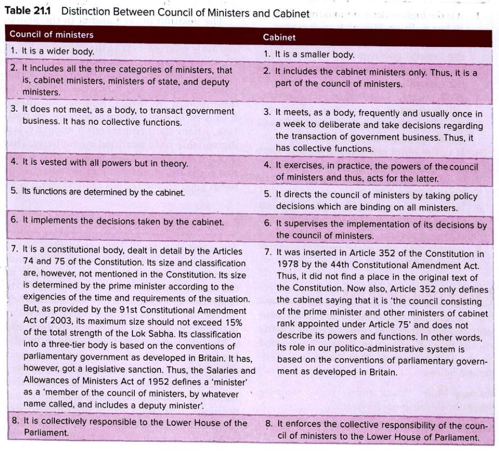
- Role of Cabinet - The Cabinet is the core executive body with the following roles: - 1. Highest decision-making authority in the politico-administrative system. - 2. Chief policy-formulating body of the Central government. - 3. Supreme executive authority of the Central government. - 4. Chief coordinator of Central administration. - 5. Advisory body to the President, with binding advice. - 6. Chief crisis manager, handling all emergency situations. - 7. Deals with major legislative and financial matters. - 8. Controls higher appointments, such as constitutional authorities and senior administrators. - 9. Formulates foreign policy and manages foreign affairs. - Role Descriptions - Descriptions of the British Cabinet by scholars apply to the Indian context: - Ramsay Muir: ‘Steering wheel of the ship of the state.’ - Lowell: ‘Keystone of the political arch.’ - Sir John Marriott: ‘Pivot around which the whole political machinery revolves.’ - Gladstone: ‘Solar orb around which other bodies revolve.’ - Barker: ‘Magnet of policy.’ - Bagehot: ‘Hyphen that joins, the buckle that binds the executive and legislative departments.’ - Sir Ivor Jennings: ‘Core of the British Constitutional System, providing unity.’ - L.S. Amery: ‘Central directing instrument of Government.’ - Ramsay Muir described the British Cabinet as a ‘Dictatorship of the Cabinet,’ noting its near-omnipotent authority when commanding a majority, a description applicable to India. - Kitchen Cabinet - The Cabinet is the formal highest decision-making body, but a smaller, informal ‘Inner Cabinet’ or ‘Kitchen Cabinet’ often holds real power. - The Kitchen Cabinet comprises the Prime Minister and a few trusted colleagues, including Cabinet Ministers and sometimes outsiders like friends or family, advising on critical political and administrative issues. - It was particularly influential during Indira Gandhi’s era. - Merits of the Kitchen Cabinet: - 1. Its small size enhances efficiency in decision-making. - 2. It allows frequent meetings for expeditious business handling. - 3. It ensures secrecy in sensitive political decisions. - Demerits, as noted by Avasthi and Avasthi (*Indian Administration*, 1993): - 1. Reduces the Cabinet’s authority as the primary decision-making body. - 2. Allows outsiders to influence government functioning, bypassing legal processes. - The Kitchen Cabinet phenomenon exists in the USA and Britain, significantly influencing government decisions. - Articles related to the Central Council of Ministers are summarized in: -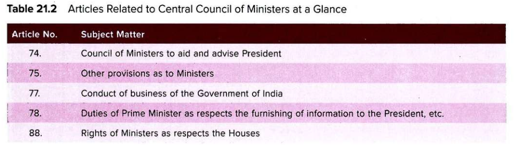
- CHAPTER 22: CABINET COMMITTEES - Introduction - The Cabinet functions through various committees called Cabinet Committees. Their features, list, and functions are explained below. - Features of Cabinet Committees - The following are the features of Cabinet Committees: - 1. They are extra-constitutional in emergence. In other words, they are not mentioned in the Constitution. However, the Rules of Business provide for their establishment. - 2. They are of two types—standing and ad hoc. The former are of a permanent nature, while the latter are of a temporary nature. The ad hoc committees are constituted from time to time to deal with special problems. They are disbanded after their task is completed. - For example, the Emergency Committee was set up in 1962 after the Chinese invasion. - 3. They are set up by the Prime Minister according to the exigencies of the time and requirements of the situation. Hence, their number, nomenclature, and composition vary from time to time. - 4. Their membership varies from one committee to another. They usually include only Cabinet Ministers. Sometimes, non-Cabinet Ministers can also be appointed as their members. Further, non-Cabinet Ministers can attend the meetings of the Cabinet Committees as special invitees. - 5. They not only include the Ministers in charge of subjects covered by them but also include other senior Ministers. - 6. They are mostly headed by the Prime Minister. Sometimes, other senior Cabinet Ministers also act as their Chairman. But, in case the Prime Minister is a member of a committee, he/she invariably presides over it. - 7. They not only sort out issues and formulate proposals for the consideration of the Cabinet but also take decisions. However, the Cabinet can review their decisions. - 8. They are an organisational device to reduce the enormous workload of the Cabinet. They also facilitate in-depth examination of policy issues and effective coordination. They are based on the principles of division of labour and effective delegation. - List of Cabinet Committees - At present, the following eight Cabinet Committees are functional: - 1. Cabinet Committee on Political Affairs - 2. Cabinet Committee on Economic Affairs - 3. Appointments Committee of the Cabinet - 4. Cabinet Committee on Parliamentary Affairs - 5. Cabinet Committee on Security - 6. Cabinet Committee on Accommodation - 7. Cabinet Committee on Investment and Growth - 8. Cabinet Committee on Employment and Skill Development - Functions of Cabinet Committees - The following are the functions of the Cabinet Committees: - 1. The Cabinet Committee on Political Affairs deals with all policy matters pertaining to domestic and foreign affairs. - 2. The Cabinet Committee on Economic Affairs directs and coordinates the governmental activities in the economic sphere. - 3. The Appointments Committee of the Cabinet decides all higher-level appointments in the Central Secretariat, Public Enterprises, Banks, and Financial Institutions. - 4. The Cabinet Committee on Parliamentary Affairs looks after the progress of government business in the Parliament. - 5. The Cabinet Committee on Security deals with all issues relating to defence, law and order, internal security, and atomic energy. - 6. The Cabinet Committee on Accommodation deals with all issues regarding the allotment of government accommodation to the Members of Parliament, central government employees, other persons, and various organisations. - 7. The Cabinet Committee on Investment and Growth deals with all policy matters aimed at accelerating capital inflows, export promotion, import substitution, and improving ease of doing business. - 8. The Cabinet Committee on Employment and Skill Development deals with all issues related to developing skills, enhancing employability of the workforce, and increasing women workforce participation. - Of all the Cabinet Committees, the most powerful is the Political Affairs Committee, often described as a ‘Super-Cabinet’. - Groups of Ministers - In addition to Cabinet Committees, several Groups of Ministers (GoMs) are constituted to look into different issues/subjects. Some of these GoMs are empowered to take decisions on behalf of the Cabinet, whereas the others make recommendations to the Cabinet. - Second Administrative Reforms Commission, Government of India, *Report on Organisational Structure of Government of India*, 2009, p. 136. - The institution of GoMs has become a viable and effective instrument of coordination among the ministries. These are ad hoc bodies formed to give recommendations to the Cabinet on certain emergent issues and critical problem areas. Ministers heading the concerned ministries are inducted into the relevant GoMs, and when the advice is crystallised, they are disbanded. - Ramesh K. Arora and Rajni Goyal, *Indian Public Administration*, New Age International Publishers, Third Edition, 2013, pp. 238–239. - The Second Administrative Reforms Commission of India (2005–2009) made the following observations and recommendations with respect to the working of the GoMs: - 1. The Commission observed that the constitution of a large number of GoMs has resulted in many GoMs not being able to meet regularly to complete their work, thus leading to significant delays on many major issues. - 2. The Commission felt that more selective use of the institution of GoMs would perhaps lead to more effective coordination, particularly if they are empowered to arrive at a decision on behalf of the Cabinet with time limits that are prescribed for completing the work entrusted to them. - 3. The Commission recommended that there is a need to ensure that the existing coordination mechanism of GoMs functions effectively and helps in early resolution of issues. Selective but effective use of GoMs with clear mandate and prescribed time limits would be helpful. - Second Administrative Reforms Commission, Government of India, *Report on Organisational Structure of Government of India*, 2009, pp. 136–137 and 140. - CHAPTER 23: PARLIAMENT - Introduction - The Parliament is the legislative organ of the Union government. It occupies a pre-eminent and central position in the Indian democratic political system due to the adoption of the parliamentary form of government, also known as the ‘Westminster’ model of government. - Westminster is a place in London where the British Parliament is located. It is often used as a symbol of the British Parliament. - Articles 79 to 122 in Part V of the Constitution deal with the organisation, composition, duration, officers, procedures, privileges, powers, and so on of the Parliament. - Organisation of Parliament - Under the Constitution, the Parliament of India consists of three parts, viz., the President, the Council of States, and the House of the People. In 1954, the Hindi names ‘Rajya Sabha’ and ‘Lok Sabha’ were adopted by the Council of States and the House of the People, respectively. The Rajya Sabha is the Upper House (Second Chamber or House of Elders), and the Lok Sabha is the Lower House (First Chamber or Popular House). The former represents the states and union territories of the Indian Union, while the latter represents the people of India as a whole. - Though the President of India is not a member of either House of Parliament and does not sit in the Parliament to attend its meetings, he/she is an integral part of the Parliament. A bill passed by both the Houses of Parliament cannot become law without the President’s assent. He/she also performs certain functions relating to the proceedings of the Parliament, for example, he/she summons and prorogues both the Houses, dissolves the Lok Sabha, addresses both the Houses, issues ordinances when they are not in session, and so on. - In this respect, the framers of the Indian Constitution relied on the British pattern rather than the American pattern. In Britain, the Parliament consists of the Crown (King or Queen), the House of Lords (Upper House), and the House of Commons (Lower House). By contrast, the American President is not an integral part of the legislature. In the USA, the legislature, which is known as Congress, consists of the Senate (Upper House) and the House of Representatives (Lower House). - The parliamentary form of government emphasises the interdependence between the legislative and executive organs. Hence, we have the ‘President-in-Parliament’ like the ‘Crown-in-Parliament’ in Britain. The Presidential form of government, on the other hand, lays stress on the separation of legislative and executive organs. Hence, the American President is not regarded as a constituent part of the Congress. - Composition of the Two Houses - Composition of Rajya Sabha - The maximum strength of the Rajya Sabha is fixed at 250, out of which 238 are to be the representatives of the states and union territories (elected indirectly), and 12 are nominated by the President. - At present, the Rajya Sabha has 245 members. Of these, 225 members represent the states, 8 members represent the union territories, and 12 members are nominated by the President. - The Fourth Schedule of the Constitution deals with the allocation of seats in the Rajya Sabha to the states and union territories. - 1. Representation of States: The representatives of states in the Rajya Sabha are elected by the elected members of state legislative assemblies. The election is held in accordance with the system of proportional representation by means of the single transferable vote. The seats are allotted to the states in the Rajya Sabha on the basis of population. Hence, the number of representatives varies from state to state. For example, Uttar Pradesh has 31 members, while Tripura has 1 member only. However, in the USA, all states are given equal representation in the Senate irrespective of their population. The USA has 50 states, and the Senate has 100 members—2 from each state. - 2. Representation of Union Territories: The representatives of each union territory in the Rajya Sabha are indirectly elected by members of an electoral college specially constituted for the purpose. This election is also held in accordance with the system of proportional representation by means of the single transferable vote. Out of the eight union territories, only three (Delhi, Puducherry, and Jammu & Kashmir) have representation in the Rajya Sabha. The populations of the other five union territories are too small to have any representative in the Rajya Sabha. - 3. Nominated Members: The President nominates 12 members to the Rajya Sabha from people who have special knowledge or practical experience in art, literature, science, and social service. The rationale behind this principle of nomination is to provide eminent persons a place in the Rajya Sabha without going through the process of election. It should be noted here that the American Senate has no nominated members. - Composition of Lok Sabha - The maximum strength of the Lok Sabha is fixed at 550. Out of this, 530 members are to be the representatives of the states, and 20 members are to be the representatives of the union territories. - At present, the Lok Sabha has 543 members. Of these, 524 members represent the states, and 19 members represent the union territories. - 1. Representation of States: The representatives of states in the Lok Sabha are directly elected by the people from the territorial constituencies in the states. The election is based on the principle of universal adult franchise. Every Indian citizen who is above 18 years of age and who is not disqualified under the provisions of the Constitution or any law is eligible to vote at such election. The voting age was reduced from 21 to 18 years by the 61st Constitutional Amendment Act, 1988. - 2. Representation of Union Territories: The Constitution has empowered the Parliament to prescribe the manner of choosing the representatives of the union territories in the Lok Sabha. Accordingly, the Parliament has enacted the Union Territories (Direct Election to the House of the People) Act, 1965, by which the members of the Lok Sabha from the union territories are also chosen by direct election. - 3. Nominated Members: Before 2020, the President nominated two members from the Anglo-Indian community to the Lok Sabha if the community was not adequately represented. Originally, this provision was to operate for ten years (i.e., up to 1960) only. Later, this duration was extended continuously since then by ten years each time. The last extension up to 2020 was made by the 95th Amendment Act, 2009. But, the 104th Amendment Act, 2019, has not extended further the operation of this provision. In other words, the Amendment discontinued this provision of special representation of the Anglo-Indian community in the Lok Sabha by nomination. Consequently, this provision ceased to have effect on the 25th January, 2020. - An Anglo-Indian is a person whose father or any of whose other male progenitors in the male line is or was of European descent but who is domiciled within the territory of India and is or was born within such territory of parents habitually resident therein and not merely established there for temporary purposes. - The allocation of seats in Parliament (both the Rajya Sabha and the Lok Sabha) for states and union territories is given in: - - System of Elections to Lok Sabha - The various aspects related to the system of elections to the Lok Sabha are as follows: - Territorial Constituencies - For the purpose of holding direct elections to the Lok Sabha, each state is divided into territorial constituencies. In this respect, the Constitution makes the following two provisions: - 1. Each state is allotted a number of seats in the Lok Sabha in such a manner that the ratio between that number and its population is the same for all states. This provision does not apply to a state having a population of less than six million. - 2. Each state is divided into territorial constituencies in such a manner that the ratio between the population of each constituency and the number of seats allotted to it is the same throughout the state. - In brief, the Constitution ensures that there is uniformity of representation in two respects: (a) between the different states, and (b) between the different constituencies in the same state. - The expression ‘population’ means the population as ascertained at the preceding census of which the relevant figures have been published. - Readjustment after Each Census - After every census, a readjustment is to be made in (a) allocation of seats in the Lok Sabha to the states, and (b) division of each state into territorial constituencies. Parliament is empowered to determine the authority and the manner in which it is to be made. Accordingly, the Parliament has enacted the Delimitation Commission Acts in 1952, 1962, 1972, and 2002 for this purpose. - The 42nd Amendment Act of 1976 froze the allocation of seats in the Lok Sabha to the states and the division of each state into territorial constituencies till the year 2000 at the 1971 level. This ban on readjustment was extended for another 25 years (i.e., up to year 2026) by the 84th Amendment Act of 2001, with the same objective of encouraging population-limiting measures. - The 84th Amendment Act of 2001 also empowered the government to undertake readjustment and rationalisation of territorial constituencies in the states on the basis of the population figures of the 1991 census. Later, the 87th Amendment Act of 2003 provided for the delimitation of constituencies on the basis of the 2001 census and not the 1991 census. However, this can be done without altering the number of seats allotted to each state in the Lok Sabha. - Reservation of Seats for SCs and STs - Though the Constitution has abandoned the system of communal representation, it provides for the reservation of seats for Scheduled Castes and Scheduled Tribes in the Lok Sabha on the basis of population ratios. - This means that the number of Lok Sabha seats reserved in a state or union territory for such castes and tribes is to bear the same proportion to the total number of seats allotted to that state or union territory in the Lok Sabha as the population of such castes and tribes in the concerned state or union territory bears to the total population of the state or union territory. - Originally, this reservation was to operate for ten years (i.e., up to 1960), but it has been extended continuously since then by 10 years each time. Now, under the 104th Amendment Act of 2019, this reservation is to last until 2030. - Though seats are reserved for Scheduled Castes and Scheduled Tribes, they are elected by all the voters in a constituency, without any separate electorate. A member of Scheduled Castes and Scheduled Tribes is also not debarred from contesting a general (non-reserved) seat. - The 84th Amendment Act of 2001 provided for refixing of the reserved seats on the basis of the population figures of the 1991 census as applied to rationalisation of the general seats. Later, the 87th Amendment Act of 2003 provided for the refixing of the reserved seats on the basis of the 2001 census and not the 1991 census. - The state-wise reservation of seats for SCs and STs in the Lok Sabha is given in: - - First-Past-The-Post System - Though the Constitution has adopted the system of proportional representation in the case of the Rajya Sabha, it has not preferred the same system in the case of the Lok Sabha. Instead, it has adopted the system of territorial representation (First-Past-The-Post system) for the election of members to the Lok Sabha. - Under territorial representation, every member of the legislature represents a geographical area known as a constituency. From each constituency, only one representative is elected. Hence, such a constituency is known as a single-member constituency. In this system, a candidate who secures the majority of votes is declared elected. This simple majority system of representation does not represent the whole electorate. In other words, it does not secure due representation to minorities (small groups). - The system of proportional representation aims at removing the defects of territorial representation. Under this system, all sections of the people get representation in proportion to their number. Even the smallest section of the population gets its due share of representation in the legislature. - There are two kinds of proportional representation, namely, the single transferable vote system and the list system. In India, the first kind is adopted for the election of members to the Rajya Sabha and state legislative council and for electing the President and the Vice-President. - Though some members of the Constituent Assembly had advocated the system of proportional representation for the election of members to the Lok Sabha, the Constitution has not adopted the system due to two reasons: - 1. Difficulty for the voters to understand the system (which is complicated) due to the low literacy scale in the country. - 2. Unsuitability to the parliamentary government due to the tendency of the system to multiply political parties, leading to instability in government. - Additionally, the system of proportional representation has the following demerits: - 1. It is highly expensive. - 2. It does not give any scope for organising by-elections. - 3. It eliminates intimate contacts between voters and representatives. - 4. It promotes minority thinking and group interests. - 5. It increases the significance of the party system and decreases that of the voter. - Duration of Two Houses - Duration of Rajya Sabha - The Rajya Sabha (first constituted in 1952) is a continuing chamber, that is, it is a permanent body and not subject to dissolution. However, one-third of its members retire every second year. Their seats are filled up by fresh elections and Presidential nominations at the beginning of every third year. The retiring members are eligible for re-election and renomination any number of times. - The Constitution has not fixed the term of office of members of the Rajya Sabha and left it to the Parliament. Accordingly, the Parliament in the Representation of the People Act (1951) provided that the term of office of a member of the Rajya Sabha shall be six years. The act also empowered the President of India to curtail the term of members chosen in the first Rajya Sabha. In the first batch, it was decided by lottery as to who should retire. Further, the act also authorised the President to make provisions to govern the order of retirement of the members of the Rajya Sabha. - Duration of Lok Sabha - Unlike the Rajya Sabha, the Lok Sabha is not a continuing chamber. Its normal term is five years from the date of its first meeting after the general elections, after which it automatically dissolves. However, the President is authorised to dissolve the Lok Sabha at any time even before the completion of five years, and this cannot be challenged in a court of law. - Further, the term of the Lok Sabha can be extended during the period of national emergency by a law of Parliament for one year at a time for any length of time. However, this extension cannot continue beyond a period of six months after the emergency has ceased to operate. - The durations of the Lok Sabha (from first to present) are mentioned in: - - Membership of Parliament - Qualifications - The Constitution lays down the following qualifications for a person to be chosen a member of the Parliament: - 1. He/she must be a citizen of India. - 2. He/she must make and subscribe to an oath or affirmation before the person authorised by the Election Commission for this purpose. In his/her oath or affirmation, he/she swears: - (a) To bear true faith and allegiance to the Constitution of India. - (b) To uphold the sovereignty and integrity of India. - 3. He/she must be not less than 30 years of age in the case of the Rajya Sabha and not less than 25 years of age in the case of the Lok Sabha. - 4. He/she must possess other qualifications prescribed by Parliament. - The Parliament has laid down the following additional qualifications in the Representation of the People Act (1951): - 1. He/she must be registered as an elector for a parliamentary constituency. This is the same in the case of both the Rajya Sabha and the Lok Sabha. The requirement that a candidate contesting an election to the Rajya Sabha from a particular state should be an elector in that particular state was dispensed with in 2003. In 2006, the Supreme Court upheld the constitutional validity of this change. - 2. He/she must be a member of a Scheduled Caste or Scheduled Tribe in any state or union territory, if he/she wants to contest a seat reserved for them. However, a member of Scheduled Castes or Scheduled Tribes can also contest a seat not reserved for them. - Disqualifications - Under the Constitution, a person shall be disqualified for being elected as a member of Parliament: - 1. If he/she holds any office of profit under the Union or state government (except that of a minister or any other office exempted by Parliament). - 2. If he/she is of unsound mind and stands so declared by a court. - 3. If he/she is an undischarged insolvent. - 4. If he/she is not a citizen of India or has voluntarily acquired the citizenship of a foreign state or is under any acknowledgement of allegiance to a foreign state. - 5. If he/she is so disqualified under any law made by Parliament. - The Parliament has laid down the following additional disqualifications in the Representation of the People Act (1951): - 1. He/she must not have been found guilty of certain electoral offences or corrupt practices in the elections. - 2. He/she must not have been convicted for any offence resulting in imprisonment for two or more years. But, the detention of a person under a preventive detention law is not a disqualification. - 3. He/she must not have failed to lodge an account of his/her election expenses within the time. - 4. He/she must not have any interest in government contracts, works, or services. - 5. He/she must not be a director or managing agent nor hold an office of profit in a corporation in which the government has at least 25 per cent share. - 6. He/she must not have been dismissed from government service for corruption or disloyalty to the state. - 7. He/she must not have been convicted for promoting enmity between different groups or for the offence of bribery. - 8. He/she must not have been punished for preaching and practising social crimes such as untouchability, dowry, and sati. - On the question whether a member is subject to any of the above disqualifications, the President’s decision is final. However, he/she should obtain the opinion of the Election Commission and act accordingly. - Disqualification on Ground of Defection - The Constitution also lays down that a person shall be disqualified from being a member of Parliament if he/she is so disqualified on the ground of defection under the provisions of the Tenth Schedule. A member incurs disqualification under the defection law: - 1. If he/she voluntarily gives up the membership of the political party on whose ticket he/she is elected to the House. - 2. If he/she votes or abstains from voting in the House contrary to any direction given by his/her political party. - 3. If any independently elected member joins any political party. - 4. If any nominated member joins any political party after the expiry of six months. - The question of disqualification under the Tenth Schedule is decided by the Chairman in the case of the Rajya Sabha and the Speaker in the case of the Lok Sabha (and not by the President of India). In the Kihoto Hollohan case (Kihoto Hollohan vs. Zachillhu, 1992), the Supreme Court ruled that the decision of the Chairman/Speaker in this regard is subject to judicial review. - Vacating of Seats - In the following cases, a member of Parliament vacates his/her seat: - 1. Double Membership: A person cannot be a member of both Houses of Parliament at the same time. Thus, the Representation of the People Act (1951) provides for the following: - (a) If a person is elected to both the Houses of Parliament, he/she must intimate within 10 days in which House he/she desires to serve. In default of such intimation, his/her seat in the Rajya Sabha becomes vacant. - (b) If a sitting member of one House is also elected to the other House, his/her seat in the first House becomes vacant. - (c) If a person is elected to two seats in a House, he/she should exercise his/her option for one. Otherwise, both seats become vacant. - Similarly, a person cannot be a member of both the Parliament and the state legislature at the same time. If a person is so elected, his/her seat in Parliament becomes vacant if he/she does not resign his/her seat in the state legislature within 14 days. - According to the Prohibition of Simultaneous Membership Rules (1950) made by the President. - 2. Disqualification: If a member of Parliament becomes subject to any of the disqualifications specified in the Constitution, his/her seat becomes vacant. Here, the list of disqualifications also includes the disqualification on the grounds of defection under the provisions of the Tenth Schedule of the Constitution. - 3. Resignation: A member may resign his/her seat by writing to the Chairman of the Rajya Sabha or Speaker of the Lok Sabha, as the case may be. The seat falls vacant when the resignation is accepted. However, the Chairman/Speaker may not accept the resignation if he/she is satisfied that it is not voluntary or genuine. - 4. Absence: A House can declare the seat of a member vacant if he/she is absent from all its meetings for a period of sixty days without its permission. In computing the period of sixty days, no account shall be taken of any period during which the House is prorogued or adjourned for more than four consecutive days. - 5. Other Cases: A member has to vacate his/her seat in the Parliament: - (a) If his/her election is declared void by the court. - (b) If he/she is expelled by the House. - (c) If he/she is elected to the office of President or Vice-President. - (d) If he/she is appointed to the office of governor of a state. - If a disqualified person is elected to the Parliament, the Constitution lays down no procedure to declare the election void. This matter is dealt with by the Representation of the People Act (1951), which enables the high court to declare an election void if a disqualified candidate is elected. The aggrieved party can appeal to the Supreme Court against the order of the high court in this regard. - Oath or Affirmation - Every member of either House of Parliament, before taking his/her seat in the House, has to make and subscribe to an oath or affirmation before the President or some person appointed by him/her for this purpose. In his/her oath or affirmation, a member of Parliament swears: - 1. To bear true faith and allegiance to the Constitution of India. - 2. To uphold the sovereignty and integrity of India. - 3. To faithfully discharge the duty upon which he/she is about to enter. - Unless a member takes the oath, he/she cannot vote and participate in the proceedings of the House and does not become eligible to parliamentary privileges and immunities. - A person is liable to a penalty of Rs. 500 for each day he/she sits or votes as a member in a House in the following conditions: - 1. Before taking and subscribing to the prescribed oath or affirmation. - 2. When he/she knows that he/she is not qualified or that he/she is disqualified for its membership. - 3. When he/she knows that he/she is prohibited from sitting or voting in the House by virtue of any parliamentary law. - Salaries and Allowances - The members of either House of Parliament are entitled to receive such salaries and allowances as may be determined by Parliament, and there is no provision for pension in the Constitution. However, in 1976, the Parliament has provided pension to the members. - In 1954, the Parliament enacted the Salary, Allowances and Pension of Members of Parliament Act. In 2018, the salary of members was increased from Rs. 50,000 to Rs. 1,00,000 per month, the constituency allowance from Rs. 45,000 to Rs. 70,000 per month, and the office expenses allowance from Rs. 45,000 to Rs. 60,000 per month. Earlier, in 2010, the daily allowance was increased from Rs. 1,000 to Rs. 2,000 for each day of residence on duty. - Vide the Finance Act, 2018. This Act amended the Salary, Allowances and Pension of Members of Parliament Act, 1954. - Besides, the members are also provided with travelling facilities, free accommodation, telephone, vehicle advance, medical facilities, and so on. - In 2018, the pension of every person who has served for any period as a member of Parliament was increased from Rs. 20,000 to Rs. 25,000 per month. Further, if a person has served as a member of Parliament for more than five years, he/she is paid an additional pension of Rs. 2,000 per month (Rs. 1,500 per month before 2018) for every year served in excess of five years. - Section 3 of the Salaries and Allowances of Officers of Parliament Act, 1953 (as amended). - The salaries and allowances of the Speaker and Deputy Speaker of the Lok Sabha and the Chairman and Deputy Chairman of the Rajya Sabha are also determined by Parliament. They are charged on the Consolidated Fund of India and thus are not subject to the annual vote of Parliament. - In 1953, the Parliament enacted the Salaries and Allowances of Officers of Parliament Act. Under this Act, “Officer of Parliament” means any of the following officers, namely, the Chairman and Deputy Chairman of the Rajya Sabha and the Speaker and the Deputy Speaker of the Lok Sabha. In 2018, the Parliament increased the salary of the Chairman of the Rajya Sabha from Rs. 1.25 lakh to Rs. 4 lakh per month. Similarly, other Officers of Parliament (i.e., the Speaker and the Deputy Speaker of the Lok Sabha and the Deputy Chairman of the Rajya Sabha) are entitled to receive a salary per month at the same rates as are payable to the Members of Parliament. Further, each Officer of Parliament (other than the Chairman of the Rajya Sabha) is entitled to receive a daily allowance (for each day during the whole of his/her term) at the same rate as is payable to the Members of Parliament. Also, each Officer of Parliament (other than the Chairman of the Rajya Sabha) is entitled to receive a constituency allowance at the same rate as is payable to the Members of Parliament. - Section 3 of the Salaries and Allowances of Officers of Parliament Act, 1953 (as amended). - According to the same Act, the sumptuary allowance is paid to the Speaker of the Lok Sabha at the same rate as is payable to a Cabinet Minister (i.e., Rs. 2,000 per month). Likewise, the sumptuary allowance is paid to the Deputy Speaker of the Lok Sabha and the Deputy Chairman of the Rajya Sabha at the same rate as is payable to a Minister of State (i.e., Rs. 1,000 per month). - Section 5 of the Salaries and Allowances of Officers of Parliament Act, 1953 (as amended). - Presiding Officers of Parliament - Each House of Parliament has its own presiding officer. There is a Speaker and a Deputy Speaker for the Lok Sabha and a Chairman and a Deputy Chairman for the Rajya Sabha. A panel of chairpersons for the Lok Sabha and a panel of vice-chairpersons for the Rajya Sabha is also appointed. - Speaker of Lok Sabha - Election and Tenure - The Speaker is elected by the Lok Sabha from amongst its members (as soon as may be, after its first sitting). Whenever the office of the Speaker falls vacant, the Lok Sabha elects another member to fill the vacancy. The date of election of the Speaker is fixed by the President. - Usually, the Speaker remains in office during the life of the Lok Sabha. However, he/she has to vacate his/her office earlier in any of the following three cases: - 1. If he/she ceases to be a member of the Lok Sabha; - 2. If he/she resigns by writing to the Deputy Speaker; and - 3. If he/she is removed by a resolution passed by a majority of all the then members of the Lok Sabha (i.e., an effective majority). Such a resolution can be moved only after giving 14 days’ advance notice. - When a resolution for the removal of the Speaker is under consideration of the House, he/she cannot preside at the sitting of the House, though he/she may be present. However, he/she can speak and take part in the proceedings of the House at such a time and vote in the first instance, though not in the case of an equality of votes. - It should be noted here that, whenever the Lok Sabha is dissolved, the Speaker does not vacate his/her office and continues till the newly-elected Lok Sabha meets. - The tenure of the Speakers of the Lok Sabha (from first to present) is mentioned in: - - Role, Powers and Functions - The Speaker is the head of the Lok Sabha, and its representative. He/she is the guardian of powers and privileges of the members, the House as a whole and its committees. He/she is the principal spokesperson of the House, and his/her decision is final in all Parliamentary matters. He/she is thus much more than merely the presiding officer of the Lok Sabha. In these capacities, he/she is vested with vast, varied and vital responsibilities and enjoys great honour, high dignity and supreme authority within the House. - The Speaker of the Lok Sabha derives his/her powers and duties from three sources, that is, the Constitution of India, the Rules of Procedure and Conduct of Business of Lok Sabha, and Parliamentary Conventions (residuary powers that are unwritten or unspecified in the Rules). Altogether, he/she has the following powers and duties: - 1. He/she maintains order and decorum in the House for conducting its business and regulating its proceedings. This is his/her primary responsibility and he/she has final power in this regard. - 2. He/she is the final interpreter of the provisions of (a) the Constitution of India, (b) the Rules of Procedure and Conduct of Business of Lok Sabha, and (c) the parliamentary precedents, within the House. - 3. He/she adjourns the House or suspends the meeting in absence of a quorum. The quorum to constitute a meeting of the House is one-tenth of the total strength of the House. - 4. He/she does not vote in the first instance. But he/she can exercise a casting vote in the case of a tie. In other words, only when the House is divided equally on any question, the Speaker is entitled to vote. Such vote is called casting vote, and its purpose is to resolve a deadlock. - 5. He/she presides over a joint sitting of the two Houses of Parliament. Such a sitting is summoned by the President to settle a deadlock between the two Houses on a bill. - 6. He/she can allow a ‘secret’ sitting of the House at the request of the Leader of the House. When the House sits in secret, no stranger can be present in the chamber, lobby or galleries except with the permission of the Speaker. - 7. He/she decides whether a bill is a money bill or not and his/her decision on this question is final. When a money bill is transmitted to the Rajya Sabha for recommendation and presented to the President for assent, the Speaker endorses on the bill his/her certificate that it is a money bill. - 8. He/she decides the questions of disqualification of a member of the Lok Sabha, arising on the ground of defection under the provisions of the Tenth Schedule. In Kihoto Hollohan case (Kihoto Hollohan vs. Zachillhu, 1992), the Supreme Court ruled that the decision of the Speaker in this regard is subject to judicial review. - 9. He/she acts as the ex-officio chairman of the Indian Parliamentary Group which is a link between the Parliament of India and the various parliaments of the world. He/she also acts as the ex-officio chairman of the conference of presiding officers of legislative bodies in the country. - 10. He/she appoints the chairman of all the parliamentary committees of the Lok Sabha and supervises their functioning. He/she is the chairman of the Business Advisory Committee, the Rules Committee and the General Purposes Committee. - Independence and Impartiality - As the office of the Speaker is vested with great prestige, position and authority, independence and impartiality becomes its sine qua non. - The following provisions ensure the independence and impartiality of the office of the Speaker: - 1. He/she is provided with a security of tenure. He/she can be removed only by a resolution passed by the Lok Sabha by an effective majority (i.e., a majority of all the then members of the House) and not by a simple majority (i.e., a majority of the members present and voting in the House). This motion of removal can be considered and discussed only when it has the support of at least 50 members. - 2. His/her salaries and allowances are fixed by Parliament. They are charged on the Consolidated Fund of India and thus are not subject to the annual vote of Parliament. - 3. His/her work and conduct cannot be discussed and criticised in the Lok Sabha except on a substantive motion. - 4. His/her powers of regulating procedure or conducting business or maintaining order in the House are not subject to the jurisdiction of any Court. - 5. He/she cannot vote in the first instance. He/she can only exercise a casting vote in the event of a tie. This makes the position of Speaker impartial. - 6. He/she is given a very high position in the order of precedence. He/she is placed at seventh rank, along with the Chief Justice of India. This means, he/she has a higher rank than all cabinet ministers, except the Prime Minister or Deputy Prime Minister. - In Britain, the Speaker is strictly a non-party man. There is a convention that the Speaker has to resign from his/her party and remain politically neutral. This healthy convention is not fully established in India where the Speaker does not resign from the membership of his/her party on his/her election to the exalted office. - Deputy Speaker of Lok Sabha - Like the Speaker, the Deputy Speaker is also elected by the Lok Sabha itself from amongst its members. He/she is elected after the election of the Speaker has taken place. The date of election of the Deputy Speaker is fixed by the Speaker. Whenever the office of the Deputy Speaker falls vacant, the Lok Sabha elects another member to fill the vacancy. - Like the Speaker, the Deputy Speaker remains in office usually during the life of the Lok Sabha. However, he/she may vacate his/her office earlier in any of the following three cases: - 1. If he/she ceases to be a member of the Lok Sabha; - 2. If he/she resigns by writing to the Speaker; and - 3. If he/she is removed by a resolution passed by a majority of all the then members of the Lok Sabha (i.e., an effective majority). Such a resolution can be moved only after giving 14 days’ advance notice. - The Deputy Speaker performs the duties of the Speaker’s office when it is vacant. He/she also acts as the Speaker when the latter is absent from the sitting of the House. In both the cases, he/she assumes all the powers of the Speaker. He/she also presides over the joint sitting of both the Houses of Parliament, in case the Speaker is absent from such a sitting. - It should be noted here that the Deputy Speaker is not subordinate to the Speaker. He/she is directly responsible to the House. - The Deputy Speaker has one special privilege, that is, whenever he/she is appointed as a member of a parliamentary committee, he/she automatically becomes its chairman. - Like the Speaker, the Deputy Speaker, while presiding over the House, cannot vote in the first instance; he/she can only exercise a casting vote in the case of a tie. Further, when a resolution for the removal of the Deputy Speaker is under consideration of the House, he/she cannot preside at the sitting of the House, though he/she may be present. - When the Speaker presides over the House, the Deputy Speaker is like any other ordinary member of the House. He/she can speak in the House, participate in its proceedings and vote on any question before the House. - The Deputy Speaker is entitled to a regular salary and allowance fixed by Parliament, and charged on the Consolidated Fund of India. - Usually, the Speaker comes from the ruling party (or ruling alliance), while the post of Deputy Speaker goes to the opposition party (or opposition alliance). However, there have been certain exceptional cases in this regard. - The Speaker and the Deputy Speaker, while assuming their offices, do not make and subscribe any separate oath or affirmation. - The institutions of Speaker and Deputy Speaker originated in India in 1921 under the provisions of the Government of India Act of 1919 (Montague-Chelmsford Reforms). At that time, the Speaker and the Deputy Speaker were called the President and Deputy President respectively and the same nomenclature continued till 1947. Before 1921, the Governor-General of India used to preside over the meetings of the Central Legislative Council. In 1921, Frederick Whyte and Sachidanand Sinha were appointed by the Governor-General of India as the first Speaker and the first Deputy Speaker (respectively) of the central legislative assembly. In 1925, Vithalbhai J. Patel became the first Indian and the first elected Speaker of the central legislative assembly. The Government of India Act of 1935 changed the nomenclatures of President and Deputy President of the Central Legislative Assembly to the Speaker and Deputy Speaker respectively. However, the old nomenclature continued till 1947 as the federal part of the 1935 Act was not implemented. G.V. Mavalankar and Ananthasayanam Ayyangar had the distinction of being the first Speaker and the first Deputy Speaker (respectively) of the Lok Sabha. G.V. Mavalankar also held the post of Speaker in the Constituent Assembly (Legislative) as well as the provisional Parliament. He held the post of Speaker of Lok Sabha continuously for one decade from 1946 to 1956. - Panel of Chairpersons of Lok Sabha - Under the Rules of Lok Sabha, the Speaker nominates from amongst the members a panel of not more than ten chairpersons. Any of them can preside over the House in the absence of the Speaker or the Deputy Speaker. He/she has the same powers as the Speaker when so presiding. He/she holds office until a new panel of chairpersons is nominated. When a member of the panel of chairpersons is also not present, any other person as determined by the House acts as the Speaker. - It must be emphasised here that a member of the panel of chairpersons cannot preside over the House, when the office of the Speaker or the Deputy Speaker is vacant. During such time, the Speaker’s duties are to be performed by such member of the House as the President may appoint for the purpose. The elections are held, as soon as possible, to fill the vacant posts. - Speaker Pro Tem - As provided by the Constitution, the Speaker of the last Lok Sabha vacates his/her office immediately before the first meeting of the newly-elected Lok Sabha. Therefore, the President appoints a member of the Lok Sabha as the Speaker Pro Tem. Usually, the senior-most member is selected for this. The President administers oath to the Speaker Pro Tem. - The Speaker Pro Tem has all the powers of the Speaker. He/she presides over the first sitting of the newly-elected Lok Sabha. His/her main duty is to administer oath to the new members. He/she also enables the House to elect the new Speaker. - When the new Speaker is elected by the House, the office of the Speaker Pro Tem ceases to exist. Hence, this office is a temporary office, existing for a few days. - For example, in the 13th Lok Sabha, Mr. Indrajit Gupta was appointed as Speaker Pro Tem on 20 October 1999 and remained in that office till 22 October 1999 when the new Speaker, Mr. G.M.C. Balayogi was elected. - Chairman of Rajya Sabha - The presiding officer of the Rajya Sabha is known as the Chairman. The Vice-President of India is the ex-officio Chairman of the Rajya Sabha. During any period when the Vice-President acts as President or discharges the functions of the President, he/she does not perform the duties of the office of the Chairman of Rajya Sabha. - The Chairman of the Rajya Sabha can be removed from his/her office only if he/she is removed from the office of the Vice-President. As a presiding officer, the powers and functions of the Chairman in the Rajya Sabha are similar to those of the Speaker in the Lok Sabha. However, the Speaker has two special powers which are not enjoyed by the Chairman: - 1. The Speaker decides whether a bill is a money bill or not and his/her decision on this question is final. - 2. The Speaker presides over a joint sitting of two Houses of Parliament. - Unlike the Speaker (who is a member of the House), the Chairman is not a member of the House. But like the Speaker, the Chairman also cannot vote in the first instance. He/she too can cast a vote in the case of an equality of votes. - The Vice-President cannot preside over a sitting of the Rajya Sabha as its Chairman when a resolution for his/her removal is under consideration. However, he/she can be present and speak in the House and can take part in its proceedings, without voting, even at such a time (while the Speaker can vote in the first instance when a resolution for his/her removal is under consideration of the Lok Sabha). - As in case of the Speaker, the salaries and allowances of the Chairman are also fixed by the Parliament. They are charged on the Consolidated Fund of India and thus are not subject to the annual vote of Parliament. - During any period when the Vice-President acts as President or discharges the functions of the President, he/she is not entitled to any salary or allowance payable to the Chairman of the Rajya Sabha. But he/she is paid the salary and allowance of the President during such a time. - Deputy Chairman of Rajya Sabha - The Deputy Chairman is elected by the Rajya Sabha itself from amongst its members. Whenever the office of the Deputy Chairman falls vacant, the Rajya Sabha elects another member to fill the vacancy. - The Deputy Chairman vacates his/her office in any of the following three cases: - 1. If he/she ceases to be a member of the Rajya Sabha; - 2. If he/she resigns by writing to the Chairman; and - 3. If he/she is removed by a resolution passed by a majority of all the then members of the Rajya Sabha (i.e., an effective majority). Such a resolution can be moved only after giving 14 days’ advance notice. - The Deputy Chairman performs the duties of the Chairman’s office when it is vacant or when the Vice-President acts as President or discharges the functions of the President. He/she also acts as the Chairman when the latter is absent from the sitting of the House. In both the cases, he/she has all the powers of the Chairman. - It should be emphasised here that the Deputy Chairman is not subordinate to the Chairman. He/she is directly responsible to the Rajya Sabha. - Like the Chairman, the Deputy Chairman, while presiding over the House, cannot vote in the first instance; he/she can only exercise a casting vote in the case of a tie. Further, when a resolution for the removal of the Deputy Chairman is under consideration of the House, he/she cannot preside over a sitting of the House, though he/she may be present. - When the Chairman presides over the House, the Deputy Chairman is like any other ordinary member of the House. He/she can speak in the House, participate in its proceedings and vote on any question before the House. - Like the Chairman, the Deputy Chairman is also entitled to a regular salary and allowance. They are fixed by Parliament and are charged on the Consolidated Fund of India. - Panel of Vice-Chairpersons of Rajya Sabha - Under the Rules of Rajya Sabha, the Chairman nominates from amongst the members a panel of vice-chairpersons. Any one of them can preside over the House in the absence of the Chairman or the Deputy Chairman. He/she has the same powers as the Chairman when so presiding. He/she holds office until a new panel of vice-chairpersons is nominated. - When a member of the panel of vice-chairpersons is also not present, any other person as determined by the House acts as the Chairman. - It must be emphasised here that a member of the panel of vice-chairpersons cannot preside over the House, when the office of the Chairman or the Deputy Chairman is vacant. During such time, the Chairman’s duties are to be performed by such member of the House as the President may appoint for the purpose. The elections are held, as soon as possible, to fill the vacant posts. - Secretariat of Parliament - Each House of Parliament has separate secretarial staff of its own, though there can be some posts common to both the Houses. Their recruitment and service conditions are regulated by Parliament. The secretariat of each House is headed by a secretary-general. He/she is a permanent officer and is appointed by the presiding officer of the House. - Leaders in Parliament - Leader of the House - Under the Rules of Lok Sabha, the ‘Leader of the House’ means the prime minister, if he/she is a member of the Lok Sabha, or a minister who is a member of the Lok Sabha and is nominated by the prime minister to function as the Leader of the House. There is also a ‘Leader of the House’ in the Rajya Sabha. He/she is a minister and a member of the Rajya Sabha and is nominated by the prime minister to function as such. The leader of the house in either House is an important functionary and exercises direct influence on the conduct of business. He/she can also nominate a deputy leader of the House. The same functionary in USA is known as the ‘majority leader’. - Leader of the Opposition - In each House of Parliament, there is the ‘Leader of the Opposition’. In a parliamentary system of government, the leader of the opposition has a significant role to play. His/her main functions are to provide a constructive criticism of the policies of the government and to provide an alternative government. Therefore, the leaders of Opposition in the Lok Sabha and the Rajya Sabha were accorded statutory recognition in 1977 under the Salary and Allowances of Leaders of Opposition in Parliament Act, 1977. They are also entitled to the salary, allowances and other facilities equivalent to that of a cabinet minister. It was in 1969 that an official leader of the opposition was recognised for the first time. The same functionary in USA is known as the ‘minority leader’. - Under the above Act, the ‘Leader of the Opposition’ means that member of the Rajya Sabha or the Lok Sabha who is, for the time being, the Leader in that House of the party in opposition to the government having the greatest numerical strength and recognised as such by the Chairman or the Speaker. Further, where there are two or more parties in opposition to the government having the same numerical strength, the Chairman or the Speaker shall (having regard to the status of the parties) recognise any one of the Leaders of such parties as the Leader of the Opposition and such recognition shall be final and conclusive. According to the directions issued by both the Chairman and the Speaker, the minimum numerical strength required for recognition as a political party is one-tenth of the total membership of that House. - The British political system has a unique institution called the ‘Shadow Cabinet’. It is formed by the Opposition party to balance the ruling cabinet and to prepare its members for future ministerial offices. In this shadow cabinet, almost every member in the ruling cabinet is ‘shadowed’ by a corresponding member in the opposition cabinet. This shadow cabinet serves as the ‘alternate cabinet’ if there is change of government. That is why Ivor Jennings described the leader of Opposition as the ‘alternative Prime Minister’. He/she enjoys the status of a minister and is paid by the government. - Though the offices of the leader of the House and the leader of the Opposition are not mentioned in the Constitution of India, they are mentioned in the Rules of the House and Parliamentary Statute respectively. - Whips - The office of ‘whip’ is mentioned neither in the Constitution of India nor in the Rules of the House. It is based on the conventions of the parliamentary government. - Every political party, whether ruling or opposition, has its own Chief whip and whips in the Parliament. The whip is appointed by the political party to serve as an assistant floor leader. He/she is charged with the responsibility of ensuring the attendance of his/her party members in large numbers and securing their support in favour of or against a particular issue. He/she regulates and monitors their behaviour in the Parliament. The members are supposed to follow the directives given by the whip. Otherwise, disciplinary action can be taken. - The Chief whip of the government party in the Lok Sabha is the Minister of Parliamentary Affairs. In the Rajya Sabha, the Minister of State for Parliamentary Affairs holds this position. The Chief whip is directly responsible to the leader of the House. It is part of his/her duties to advise the government on parliamentary business and to maintain a close liaison with the ministers in regard to parliamentary business affecting their departments. - M.N. Kaul and S.L. Shakdher, *Practice and Procedure of Parliament*, Sixth Edition, 2009, Lok Sabha Secretariat, pp. 151–52. - The Chief whip of a recognised party and a recognised group is entitled to telephone and secretarial facilities under the Leaders and Chief Whips of Recognised Parties and Groups in Parliament (Facilities) Act, 1998. - Under the above Act, a recognised party means every party which has a strength of not less than fifty-five members in respect of the Lok Sabha and twenty-five members in respect of the Rajya Sabha. Similarly, a recognised group means every party which has a strength of not less than thirty members in respect of the Lok Sabha and fifteen members in respect of the Rajya Sabha. - Sessions of Parliament - Summoning - The President from time to time summons each House of Parliament to meet at such time and place as he/she thinks fit. But, the maximum gap between two sessions of Parliament cannot be more than six months. In other words, the Parliament should meet at least twice a year. There are usually three sessions in a year, viz, - 1. The Budget Session (February to May); - 2. The Monsoon Session (July to September); and - 3. The Winter Session (November to December). - A ‘session’ of Parliament is the period spanning between the first sitting of a House and its prorogation (or dissolution in the case of the Lok Sabha). During a session, the House meets every day to transact business. The period spanning between the prorogation of a House and its reassembly in a new session is called ‘recess’. - Adjournment - A session of Parliament consists of many meetings. Each meeting of a day consists of two sittings, that is, a morning sitting from 11 am to 1 pm and post-lunch sitting from 2 pm to 6 pm. A sitting of Parliament can be terminated by adjournment or adjournment sine die or prorogation or dissolution (in the case of the Lok Sabha). An adjournment suspends the work in a sitting for a specified time, which may be hours, days or weeks. - Adjournment Sine Die - Adjournment sine die means terminating a sitting of Parliament for an indefinite period. - In other words, when the House is adjourned without naming a day for reassembly, it is called adjournment sine die. The power of adjournment as well as adjournment sine die lies with the presiding officer of the House. He/she can also call a sitting of the House before the date or time to which it has been adjourned or at any time after the House has been adjourned sine die. - Prorogation - The presiding officer (Speaker or Chairman) declares the House adjourned sine die, when the business of a session is completed. Within the next few days, the President issues a notification for prorogation of the session. However, the President can also prorogue the House while in session. - The specific differences between adjournment and prorogation are summarised in: - - Dissolution - Rajya Sabha, being a permanent House, is not subject to dissolution. Only the Lok Sabha is subject to dissolution. Unlike a prorogation, a dissolution ends the very life of the existing House, and a new House is constituted after general elections are held. The dissolution of the Lok Sabha may take place in either of two ways: - 1. Automatic dissolution, that is, on the expiry of its tenure of five years or the terms as extended during a national emergency; or - 2. Whenever the President decides to dissolve the House, which he/she is authorised to do. Once the Lok Sabha is dissolved before the completion of its normal tenure, the dissolution is irrevocable. - When the Lok Sabha is dissolved, all business including bills, motions, resolutions, notices, petitions and so on pending before it or its committees lapse. They (to be pursued further) must be reintroduced in the newly-constituted Lok Sabha. However, some pending bills and all pending assurances that are to be examined by the Committee on Government Assurances do not lapse on the dissolution of the Lok Sabha. The position with respect to lapsing of bills is as follows: - 1. A bill pending in the Lok Sabha lapses (whether originating in the Lok Sabha or transmitted to it by the Rajya Sabha). - 2. A bill passed by the Lok Sabha but pending in the Rajya Sabha lapses. - 3. A bill not passed by the two Houses due to disagreement and if the President has notified the holding of a joint sitting before the dissolution of Lok Sabha, does not lapse. - 4. A bill pending in the Rajya Sabha but not passed by the Lok Sabha does not lapse. - 5. A bill passed by both Houses but pending assent of the President does not lapse. - 6. A bill passed by both Houses but returned by the President for reconsideration of Houses does not lapse. - Quorum - Quorum is the minimum number of members required to be present in the House before it can transact any business. It is one-tenth of the total number of members in each House including the presiding officer. It means that there must be at least 55 members present in the Lok Sabha and 25 members present in the Rajya Sabha, if any business is to be conducted. If there is no quorum during a meeting of the House, it is the duty of the presiding officer either to adjourn the House or to suspend the meeting until there is a quorum. - Voting in House - All matters at any sitting of either House or joint sitting of both the Houses are decided by a majority of votes of the members present and voting, excluding the presiding officer. Only a few matters, which are specifically mentioned in the Constitution, require either effective majority or special majority, not simple majority. - The presiding officer of a House does not vote in the first instance, but exercises a casting vote in the case of an equality of votes. The proceedings of a House are to be valid irrespective of any unauthorised voting or participation or any vacancy in its membership. - The following points can be noted with respect to the voting procedure in the Lok Sabha: - 1. On the conclusion of a debate, the Speaker shall put the question and invite those who are in favour of the motion to say ‘Aye’ and those against the motion to say ‘No’. - 2. The Speaker shall then say: ‘I think the Ayes (or the Noes, as the case may be) have it.’ If the opinion of the Speaker as to the decision of a question is not challenged, he/she shall say twice: ‘The Ayes (or the Noes, as the case may be) have it’ and the question before the House shall be determined accordingly. - 3. (a) If the opinion of the Speaker as to the decision of a question is challenged, he/she shall order that the Lobby be cleared. - (b) After the lapse of three minutes and thirty seconds, he/she shall put the question a second time and declare whether in his/her opinion the ‘Ayes’ or the ‘Noes’ have it. - (c) If the opinion so declared is again challenged, he/she shall direct that the votes be recorded either by operating the automatic vote recorder or by using ‘Aye’ and ‘No’ Slips in the House or by the Members going into the Lobbies. - 4. If in the opinion of the Speaker, the Division is unnecessarily claimed, he/she may ask the members who are for ‘Aye’ and those for ‘No’ respectively to rise in their places and, on a count being taken, he/she may declare the determination of the House. In such a case, the names of the voters shall not be recorded. - Methods of Voting - The various methods adopted for voting in the Lok Sabha are explained below (This information is adopted from the official website of the Lok Sabha (Digital Sansad)): - 1. Voice Vote: It is a simple method for deciding a question put by the Speaker on a motion made by a member. Under this method, the question before the House is determined by the ‘Ayes’ or the ‘Noes’, as the case may be. - 2. Division: There are three methods of holding a Division. These are: - (a) By operating the Automatic Vote Recording Equipment; - (b) By distributing ‘Ayes’ and ‘Noes’ slips in the House; and - (c) By members going into the Lobbies. However, the method of recording of votes in the Lobbies has become obsolete ever since the installation of the Automatic Vote Recording Equipment. - 3. Secret Ballot: During an ‘open’ voting period, the individual results are shown by the three colours: green for ‘Ayes’, red for ‘Noes’ and yellow for ‘Abstain’ on the Individual Result Display Panel. The secret voting, if any, is held on similar lines except that the Light Emitting Diode (LED) on the Individual Result Display Panel flashes only white light to show that the vote has been recorded. - 4. Recording of Votes by Distribution of Slips: The method of recording of votes by members on ‘Ayes’ and ‘Noes’ slips is generally resorted to in the eventuality of: - (a) Sudden failure of the working of the Automatic Vote Recording Equipment; and - (b) At the commencement of the new Lok Sabha, before the seats/division numbers have been allotted to the members. - 5. Physical Count of Members in their Places Instead of a Formal Division: If in the opinion of the Speaker, a Division is unnecessarily claimed, he/she may ask the members who are for ‘Ayes’ and those for ‘Noes’, respectively, to rise in their places and on a count being taken, he/she may declare the determination of the House. In such a case, the particulars of voting of the members are not recorded. - 6. Casting Vote: If in a Division, the number of ‘Ayes’ and ‘Noes’ is equal, the question is decided by the casting vote of the Speaker. Under the provisions of the Constitution, the Speaker (or the person acting as such) cannot vote in a Division; he/she has only a casting vote which he/she must exercise in the case of equality of votes. - Language in Parliament - The Constitution has declared Hindi and English to be the languages for transacting business in the Parliament. However, the presiding officer can permit a member to address the House in his/her mother-tongue. In both the Houses, facilities are available for simultaneous interpretation of speeches made in any of the languages specified in the Eighth Schedule of the Constitution into Hindi and English. However, if a member addresses the House in a language for which simultaneous interpretation facility is not available, he/she has to provide a translation copy of his/her speech in Hindi or English. - Though English was to be discontinued as a floor language after the expiration of fifteen years from the commencement of the Constitution (that is, in 1965), the Official Languages Act (1963) allowed English to be continued along with Hindi. - Rights of Ministers and Attorney General - In addition to the members of a House, every minister and the attorney general of India have the right to speak and take part in the proceedings of either House, any joint sitting of both the Houses and any committee of Parliament of which he/she is a member, without being entitled to vote. There are two reasons underlying this constitutional provision: - 1. A minister can participate in the proceedings of a House, of which he/she is not a member. In other words, a minister belonging to the Lok Sabha can participate in the proceedings of the Rajya Sabha and vice-versa. - 2. A minister, who is not a member of either House, can participate in the proceedings of both the Houses. It should be noted here that a person can remain a minister for six months, without being a member of either House of Parliament. - Lame-duck Session - It refers to the last session of the preceding Lok Sabha, after a new Lok Sabha has been elected. Those members of the preceding Lok Sabha who could not get re-elected to the new Lok Sabha are called lame-ducks. - During the years 1957 and 1962 when general elections to Lok Sabha were held, in addition to three sessions of the new Lok Sabha, one session each of the preceding Lok Sabha was also held after elections to new Lok Sabha had taken place and results thereof had been announced, but before the new Lok Sabha was duly constituted. These were popularly known as “lame-duck sessions”. The purpose of these sessions was to pass the Vote on Account to enable the government to carry on till the new Lok Sabha was constituted. However, there was no lame-duck session of the Third Lok Sabha as the Fourth Lok Sabha was constituted soon after the result of the Fourth General Elections had been announced. The Vote on Account was passed in the first session of the new Lok Sabha. - M.N. Kaul and S.L. Shakdher, *Practice and Procedure of Parliament*, Sixth Edition, 2009, Lok Sabha Secretariat, pp. 454–55. - Types of Majority - The following four types of majority are required to determine the various matters in the Parliament: - Simple Majority - It is a majority of the members present and voting in the House. It is also known as ordinary majority or functional majority or working majority. Article 100 of the Constitution states that except as otherwise provided in this Constitution, all questions at any sitting of either House or joint sitting of the Houses shall be determined by a majority of votes of the members present and voting. This means that the simple majority is the general rule prescribed by the Constitution for the determination of questions in the Parliament. This type of majority is required in the following cases: - (a) Passing of the ordinary bills, money bills and financial bills. - (b) Passing of the Adjournment Motion, No-Confidence Motion, Confidence Motion, Censure Motion and Motion of Thanks. - (c) Removal of the Vice-President in the Lok Sabha (Article 67). - (d) Approval of the imposition of the President’s Rule (Article 356). - (e) Approval of the proclamation of financial emergency (Article 360). - (f) Election of the Speaker and the Deputy Speaker of the Lok Sabha (Article 93). - (g) Election of the Deputy Chairman of the Rajya Sabha (Article 89). - (h) Passing of a resolution by the Lok Sabha for disapproving the continuance of the national emergency (Article 352). - Effective Majority - It means a majority of the total membership of the House excluding the vacant seats. In other words, it is a majority of the effective strength of the House. For example, the effective majority in the case of Rajya Sabha is 111, if there are 25 vacant seats (out of the total 245 members). Similarly, the effective majority in the case of Lok Sabha is 265 if there are 15 vacant seats (out of the total 543 members). This type of majority is referred in the Constitution as “a majority of all the then members of the House”. It is required in the following cases: - (a) Removal of the Vice-President in the Rajya Sabha (Article 67). - (b) Removal of the Deputy Chairman of the Rajya Sabha (Article 90). - (c) Removal of the Speaker and the Deputy Speaker of the Lok Sabha (Article 94). - Absolute Majority - It means a majority of the total membership of the House, irrespective of the fact whether there are vacant seats or absentees. For example, the absolute majority in the case of Rajya Sabha is 123 (out of the total 245 members). Similarly, the absolute majority in the case of Lok Sabha is 272 (out of the total 543 members). This type of majority is not prescribed by the Constitution for any case (or purpose) as a standalone (single) requirement. But, it is required in certain cases as a component of special majority (i.e., special majority-I which is explained below). - Special Majority - The various cases of requirement of special majority can be further classified in the following way: - Special Majority-I: A majority of the total membership of each House and a two-thirds majority of the members present and voting is required in the following cases: - (a) Amendment of the Constitution (Article 368). - (b) Removal of the Judges of the Supreme Court (Article 124). - (c) Removal of the Judges of the High Courts (Article 217). - (d) Removal of the Comptroller and Auditor General of India (Article 148). - (e) Removal of the Chief Election Commissioner (Article 324). - (f) Removal of the State Election Commissioner (Article 243K). - (g) Parliamentary approval of proclamation of national emergency (Article 352). - Special Majority-II: A two-thirds majority of the total membership of each House is required for the impeachment of the President (Article 61). - Special Majority-III: A two-thirds majority of the members present and voting (in the Rajya Sabha) is required in the following cases: - (a) Recommendation for the creation of new All-India Services (Article 312). - (b) Parliamentary legislation on matters in the State List (Article 249). - Devices of Parliamentary Proceedings - Question Hour - The first hour of every parliamentary sitting is slotted for this. During this time, the members ask questions and the ministers usually give answers. The questions are of three kinds, namely, starred, unstarred and short notice. - A starred question (distinguished by an asterisk) requires an oral answer and hence supplementary questions can follow. - An unstarred question, on the other hand, requires a written answer and hence, supplementary questions cannot follow. - A short notice question is one that is asked by giving a notice of less than ten days. It is answered orally. - In addition to the ministers, the questions can also be asked to the private members. Thus, a question may be addressed to a private member if the subject matter of the question relates to some Bill, resolution or other matter connected with the business of the House for which that member is responsible. The procedure in regard to such question is the same as that followed in the case of questions addressed to a minister. - The list of starred, unstarred, short notice questions and questions to private members are printed in green, white, light pink and yellow colour, respectively, to distinguish them from one another. - Zero Hour - Unlike the question hour, the zero hour is not mentioned in the Rules of Procedure. Thus it is an informal device available to the members to raise various matters of urgent public importance. The zero hour starts immediately after the question hour and lasts until the agenda for the day (i.e., regular business of the House) is taken up. In other words, the time gap between the question hour and the agenda is known as zero hour. It is an Indian innovation in the field of parliamentary procedures and has been in existence since 1962. - Motions - No discussions on a matter of general public importance can take place except on a motion made with the consent of the presiding officer. The House expresses its decisions or opinions on various issues through the adoption or rejection of motions moved by either ministers or private members. - The motions moved by the members to raise discussions on various matters fall into three principal categories: - 1. Substantive Motion: It is a self-contained independent proposal dealing with a very important matter like impeachment of the President or removal of Chief Election Commissioner. - 2. Substitute Motion: It is a motion that is moved in substitution of an original motion and proposes an alternative to it. If adopted by the House, it supersedes the original motion. - 3. Subsidiary Motion: It is a motion that, by itself, has no meaning and cannot state the decision of the House without reference to the original motion or proceedings of the House. It is divided into three sub-categories: - (a) Ancillary Motion: It is used as the regular way of proceeding with various kinds of business. - (b) Superseding Motion: It is moved in the course of debate on another issue and seeks to supersede that issue. - (c) Amendment: It seeks to modify or substitute only a part of the original motion. - Closure Motion: It is a motion moved by a member to cut short the debate on a matter before the House. If the motion is approved by the House, debate is stopped forthwith and the matter is put to vote. There are four kinds of closure motions (J.C. Johari: *Indian Government and Politics*, Vishal, Volume II, Thirteenth Edition, 2001, p. 360): - (a) Simple Closure: It is one when a member moves that the ‘matter having been sufficiently discussed be now put to vote’. - (b) Closure by Compartments: In this case, the clauses of a bill or a lengthy resolution are grouped into parts before the commencement of the debate. The debate covers the part as a whole and the entire part is put to vote. - (c) Kangaroo Closure: Under this type, only important clauses are taken up for debate and voting and the intervening clauses are skipped over and taken as passed. - (d) Guillotine Closure: It is one when the undiscussed clauses of a bill or a resolution are also put to vote along with the discussed ones due to want of time (as the time allotted for the discussion is over). - Privilege Motion: It is concerned with the breach of parliamentary privileges by a minister. It is moved by a member when he/she feels that a minister has committed a breach of privilege of the House or one or more of its members by withholding facts of a case or by giving wrong or distorted facts. Its purpose is to censure the concerned minister. - Calling Attention Motion: It is introduced in the Parliament by a member to call the attention of a minister to a matter of urgent public importance, and to seek an authoritative statement from him/her on that matter. Like the zero hour, it is also an Indian innovation in the parliamentary procedure and has been in existence since 1954. However, unlike the zero hour, it is mentioned in the Rules of Procedure. - Adjournment Motion: It is introduced in the Parliament to draw attention of the House to a definite matter of urgent public importance, and needs the support of 50 members to be admitted. As it interrupts the normal business of the House, it is regarded as an extraordinary device. It involves an element of censure against the government and hence Rajya Sabha is not permitted to make use of this device. The discussion on an adjournment motion should last for not less than two hours and thirty minutes. - The right to move a motion for an adjournment of the business of the House is subject to the following restrictions: - 1. It should raise a matter which is definite, factual, urgent and of public importance; - 2. It should not cover more than one matter; - 3. It should be restricted to a specific matter of recent occurrence and should not be framed in general terms; - 4. It should not raise a question of privilege; - 5. It should not revive discussion on a matter that has been discussed in the same session; - 6. It should not deal with any matter that is under adjudication by court; and - 7. It should not raise any question that can be raised on a distinct motion. - No-Confidence Motion: Article 75 of the Constitution says that the council of ministers shall be collectively responsible to the Lok Sabha. It means that the ministry stays in office so long as it enjoys confidence of the majority of the members of the Lok Sabha. In other words, the Lok Sabha can remove the ministry from office by passing a no-confidence motion. The motion needs the support of 50 members to be admitted. - Confidence Motion: The motion of confidence has come up as a new procedural device to cope with the emerging situations of fractured mandates resulting in hung parliament, minority governments and coalition governments. The governments formed with wafer-thin majority have been called upon by the President to prove their majority on the floor of the House. The government of the day, sometimes, on its own, seeks to prove its majority by moving a motion of confidence and winning the confidence of the House. If the confidence motion is negatived, it results in the fall of the government. - T.K. Viswanathan (Editor), *The Indian Parliament*, Lok Sabha Secretariat, Fourteenth Edition, 2011, p. 21. - Censure Motion: A censure motion is different from a no-confidence motion as shown in: - - Motion of Thanks: The first session after each general election and the first session of every fiscal year is addressed by the President. In this address, the President outlines the policies and programmes of the government in the preceding year and ensuing year. This address of the President, which corresponds to the ‘speech from the Throne in Britain’, is discussed in both the Houses of Parliament on a motion called the ‘Motion of Thanks’. At the end of the discussion, the motion is put to vote. This motion must be passed in the House. Otherwise, it amounts to the defeat of the government. This inaugural speech of the President is an occasion available to the members of Parliament to raise discussions and debates to examine and criticise the government and administration for its lapses and failures. - No-Day-Yet-Named Motion: It is a motion that has been admitted by the Speaker but no date has been fixed for its discussion. The Speaker, after considering the state of business in the House and in consultation with the leader of the House or on the recommendation of the Business Advisory Committee, allots a day or days or part of a day for the discussion of such a motion. - Dilatory Motion: It is a motion for the adjournment of the debate on a bill/motion/resolution etc. or a motion to retard or delay the progress of a business under consideration of the House. It can be moved by a member at any time after a motion has been made. The debate on a dilatory motion must be restricted to the matter contained in such motion. If the Speaker is of the opinion that such a motion is an abuse of the rules of the House, he/she may either forthwith put the question thereon or decline to propose the question. - Point of Order - A member can raise a point of order when the proceedings of the House do not follow the normal rules of procedure. A point of order should relate to the interpretation or enforcement of the Rules of the House or such articles of the Constitution that regulate the business of the House and should raise a question that is within the cognizance of the Speaker. It is usually raised by an opposition member in order to control the government. It is an extraordinary device as it suspends the proceedings before the House. No debate is allowed on a point of order. - Half-an-Hour Discussion - It is meant for discussing a matter of sufficient public importance, which has been subjected to a lot of debate and the answer to which needs elucidation on a matter of fact. The Speaker can allot three days in a week for such discussions. There is no formal motion or voting before the House. - Short Duration Discussion - It is also known as two-hour discussion as the time allotted for such a discussion should not exceed two hours. The members of the Parliament can raise such discussions on a matter of urgent public importance. The Speaker can allot two days in a week for such discussions. There is neither a formal motion before the house nor voting. This device has been in existence since 1953. - Special Mention - A matter which is not a point of order or which cannot be raised during question hour, half-an-hour discussion, short duration discussion or under adjournment motion, calling attention notice or under any rule of the House can be raised under the special mention in the Rajya Sabha. Its equivalent procedural device in the Lok Sabha is known as ‘Notice (Mention) Under Rule 377’. - Resolutions - A resolution is a self-contained independent proposal submitted for the approval of the House and drafted in such a way as to be capable of expressing a decision of the House. All resolutions are substantive motions. - The members can move resolutions to draw the attention of the House or the government to matters of general public interest. The discussion on a resolution is strictly relevant to and within the scope of the resolution. A member who has moved a resolution or amendment to a resolution cannot withdraw the same except by leave of the House. - A resolution may have the following objectives: - (i) A declaration of opinion or a recommendation. - (ii) To record either approval or disapproval by the House of an act or policy of the government. - (iii) Convey a message or commend, urge or request an action. - (iv) Call attention to a matter or situation for consideration by the government. - Resolutions are classified into three categories (*Dictionary of Constitutional and Parliamentary Terms*, Lok Sabha Secretariat, Second Edition, 2005, pp. 396–97): - 1. Private Member’s Resolution: It is one that is moved by a private member (other than a minister). It is discussed only on alternate Fridays and in the afternoon sitting. - 2. Government Resolution: It is one that is moved by a minister. It is of the following three kinds: - (a) Resolutions approving international treaties, conventions or agreements of which the government is a party. - (b) Resolutions declaring or approving certain policies of the government. - (c) Resolutions approving recommendations of certain committees. - 3. Statutory Resolution: It can be moved either by a private member or a minister. It is so called because it is in pursuance of a provision in the Constitution or an Act of Parliament. - Resolutions are different from motions in the following respects: - “All resolutions come in the category of substantive motions, that is to say, every resolution is a particular type of motion. All motions need not necessarily be substantive. Further, all motions are not necessarily put to vote of the House, whereas all the resolutions are required to be voted upon.” - Subhash C. Kashyap: *Our Parliament*, National Book Trust, 1999 Edition, p. 139. - Youth Parliament - The scheme of Youth Parliament was started on the recommendation of the Fourth All India Whips Conference. Its objectives are: - 1. To acquaint the younger generations with practices and procedures of Parliament; - 2. To imbibe the spirit of discipline and tolerance cultivating character in the minds of youth; and - 3. To inculcate in the student community the basic values of democracy and to enable them to acquire a proper perspective on the functioning of democratic institutions. - The ministry of parliamentary affairs provides necessary training and encouragement to the states in introducing the scheme. - Legislative Procedure in Parliament - The legislative procedure is identical in both the Houses of Parliament. Every bill has to pass through the same stages in each House. A bill is a proposal for legislation and it becomes an act or law when duly enacted. - The bills introduced in the Parliament are of two kinds: public bills and private bills (also known as government bills and private members’ bills respectively). Though both are governed by the same general procedure and pass through the same stages in the House, they differ in various respects as shown in: - - Depending on their content, the bills may further be classified into: - (a) Original bills (bills embodying new proposals, ideas or policies); - (b) Amending bills (bills which seek to modify, amend or revise the existing Acts); - (c) Consolidating bills (bills which seek to consolidate existing laws on a particular subject); - (d) Expiring Laws (Continuance) bills (bills to continue an expiring Act); - (e) Repealing bills (bills seeking to repeal existing Acts); - (f) Validating bills (bills which seek to give validity to certain actions); - (g) Bills to replace Ordinances; - (h) Constitution (Amendment) bills; and - (i) Money and Financial bills. - On the basis of procedure required for their passage in the Parliament, the bills can also be broadly classified into the following four types: - 1. Ordinary bills, which are concerned with any matter other than financial subjects. - 2. Money bills, which are concerned with the financial matters like taxation, public expenditure, etc. - 3. Financial bills, which are also concerned with financial matters (but are different from money bills). - 4. Constitution amendment bills, which are concerned with the amendment of the provisions of the Constitution. - The Constitution has laid down separate procedures for the enactment of all the four types of bills. The procedures with regard to ordinary bills, money bills and financial bills are explained here. The procedure with regard to Constitution amendment bills is already explained in detail. - Ordinary Bills - Every ordinary bill has to pass through the following five stages in the Parliament before it finds a place on the Statute Book: - 1. First Reading: An ordinary bill can be introduced in either House of Parliament. Such a bill can be introduced either by a minister or by any other member. The member who wants to introduce the bill has to ask for the leave of the House. When the House grants leave to introduce the bill, the mover of the bill introduces it by reading its title and objectives. No discussion on the bill takes place at this stage. Later, the bill is published in the Gazette of India. If a bill is published in the Gazette before its introduction, leave of the House to introduce the bill is not necessary. The introduction of the bill and its publication in the Gazette constitute the first reading of the bill. - Under Rule 64 of Lok Sabha, the Speaker may, on request being made to him, order the publication of any bill in the Gazette, although no motion has been made for leave to introduce the bill. In that case, it shall not be necessary to move for leave to introduce the bill and if the bill is afterwards introduced, it shall not be necessary to publish it again. - 2. Second Reading: During this stage, the bill receives not only the general but also the detailed scrutiny and assumes its final shape. Hence, it forms the most important stage in the enactment of a bill. In fact, this stage involves three more sub-stages, namely, stage of general discussion, committee stage and consideration stage. - (a) Stage of General Discussion: The printed copies of the bill are distributed to all the members. The principles of the bill and its provisions are discussed generally, but the details of the bill are not discussed. At this stage, the House can take any one of the following four actions: - (i) It may take the bill into consideration immediately or on some other fixed date; - (ii) It may refer the bill to a select committee of the House; - (iii) It may refer the bill to a joint committee of the two Houses; and - (iv) It may circulate the bill to elicit public opinion. - A Select Committee consists of members of the House where the bill has originated and a joint committee consists of members of both the Houses of Parliament. - (b) Committee Stage: The usual practice is to refer the bill to a select committee of the House. This committee examines the bill thoroughly and in detail, clause by clause. It can also amend its provisions, but without altering the principles underlying it. After completing the scrutiny and discussion, the committee reports the bill back to the House. - (c) Consideration Stage: The House, after receiving the bill from the select committee, considers the provisions of the bill clause by clause. Each clause is discussed and voted upon separately. The members can also move amendments and if accepted, they become part of the bill. - 3. Third Reading: At this stage, the debate is confined to the acceptance or rejection of the bill as a whole and no amendments are allowed, as the general principles underlying the bill have already been scrutinised during the stage of second reading. If the majority of members present and voting accept the bill, the bill is regarded as passed by the House. Thereafter, the bill is authenticated by the presiding officer of the House and transmitted to the second House for consideration and approval. A bill is deemed to have been passed by the Parliament only when both the Houses have agreed to it, either with or without amendments. - 4. Bill in the Second House: In the second House also, the bill passes through all the three stages, that is, first reading, second reading and third reading. There are four alternatives before this House: - (a) It may pass the bill as sent by the first House (i.e., without amendments); - (b) It may pass the bill with amendments and return it to the first House for reconsideration; - (c) It may reject the bill altogether; and - (d) It may not take any action and thus keep the bill pending. - If the second House passes the bill without any amendments or the first House accepts the amendments suggested by the second House, the bill is deemed to have been passed by both the Houses and the same is sent to the President for his/her assent. On the other hand, if the first House rejects the amendments suggested by the second House or the second House rejects the bill altogether or the second House does not take any action for six months, a deadlock is deemed to have taken place. To resolve such a deadlock, the President can summon a joint sitting of the two Houses. If the majority of members present and voting in the joint sitting approves the bill, the bill is deemed to have been passed by both the Houses. - 5. Assent of the President: Every bill after being passed by both Houses of Parliament either singly or at a joint sitting, is presented to the President for his/her assent. There are three alternatives before the President: - (a) He/she may give his/her assent to the bill; or - (b) He/she may withhold his/her assent to the bill; or - (c) He/she may return the bill for reconsideration of the Houses. - If the President gives his/her assent to the bill, the bill becomes an act and is placed on the Statute Book. If the President withholds his/her assent to the bill, it ends and does not become an act. If the President returns the bill for reconsideration and if it is passed by both the Houses again with or without amendments and presented to the President for his/her assent, the President must give his/her assent to the bill. Thus, the President enjoys only a “suspensive veto.” - Money Bill - Article 110 of the Constitution deals with the definition of money bills. It states that a bill is deemed to be a money bill if it contains ‘only’ provisions dealing with all or any of the following matters: - 1. The imposition, abolition, remission, alteration or regulation of any tax; - 2. The regulation of the borrowing of money by the Union government; - 3. The custody of the Consolidated Fund of India or the Contingency Fund of India, the payment of moneys into or the withdrawal of money from any such fund; - 4. The appropriation of money out of the Consolidated Fund of India; - 5. Declaration of any expenditure charged on the Consolidated Fund of India or increasing the amount of any such expenditure; - 6. The receipt of money on account of the Consolidated Fund of India or the public account of India or the custody or issue of such money, or the audit of the accounts of the Union or of a state; or - 7. Any matter incidental to any of the matters specified above. - However, a bill is not to be deemed to be a money bill by reason only that it provides for: - 1. The imposition of fines or other pecuniary penalties, or - 2. The demand or payment of fees for licenses or fees for services rendered; or - 3. The imposition, abolition, remission, alteration or regulation of any tax by any local authority or body for local purposes. - If any question arises whether a bill is a money bill or not, the decision of the Speaker of the Lok Sabha is final. His/her decision in this regard cannot be questioned in any court of law or in either House of Parliament or even the President. When a money bill is transmitted to the Rajya Sabha for recommendation and presented to the President for assent, the Speaker endorses it as a money bill. - The Constitution lays down a special procedure for the passing of money bills in the Parliament. A money bill can only be introduced in the Lok Sabha and that too on the recommendation of the President. Every such bill is considered to be a government bill and can be introduced only by a minister. - After a money bill is passed by the Lok Sabha, it is transmitted to the Rajya Sabha for its consideration. The Rajya Sabha has restricted powers with regard to a money bill. It cannot reject or amend a money bill. It can only make recommendations. It must return the bill to the Lok Sabha within 14 days, whether with or without recommendations. The Lok Sabha can either accept or reject all or any of the recommendations of the Rajya Sabha. - If the Lok Sabha accepts any recommendation, the bill is then deemed to have been passed by both the Houses in the modified form. If the Lok Sabha does not accept any recommendation, the bill is then deemed to have passed by both the Houses in the form originally passed by the Lok Sabha without any change. - If the Rajya Sabha does not return the bill to the Lok Sabha within 14 days, the bill is deemed to have been passed by both the Houses in the form originally passed by the Lok Sabha. Thus, the Lok Sabha has more powers than Rajya Sabha with regard to a money bill. On the other hand, both the Houses have equal powers with regard to an ordinary bill. - Finally, when a money bill is presented to the President, he/she may either give his/her assent to the bill or withhold his/her assent to the bill but cannot return the bill for reconsideration of the Houses. Normally, the President gives his/her assent to a money bill as it is introduced in the Parliament with his/her prior permission. - Table 23.4 shows the differences between the procedures for the enactment of ordinary bills and money bills: - - Financial Bills - Financial bills are those bills that deal with fiscal matters, that is, revenue or expenditure. However, the Constitution uses the term ‘financial bill’ in a technical sense. Financial bills are of three kinds: - 1. Money bills—Article 110 - 2. Financial bills (I)—Article 117(1) - 3. Financial bills (II)—Article 117(3) - This classification implies that money bills are simply a species of financial bills. Hence, all money bills are financial bills but all financial bills are not money bills. Only those financial bills are money bills which contain exclusively those matters which are mentioned in Article 110 of the Constitution. These are also certified by the Speaker of Lok Sabha as money bills. The financial bills (I) and (II), on the other hand, have been dealt with in Article 117 of the Constitution. - Financial Bills (I): A financial bill (I) is a bill that contains not only any or all the matters mentioned in Article 110, but also other matters of general legislation. For instance, a bill that contains a borrowing clause, but does not exclusively deal with borrowing. In two respects, a financial bill (I) is similar to a money bill—(a) both of them can be introduced only in the Lok Sabha and not in the Rajya Sabha, and (b) both of them can be introduced only on the recommendation of the President. In all other respects, a financial bill (I) is governed by the same legislative procedure applicable to an ordinary bill. Hence, it can be either rejected or amended by the Rajya Sabha (except that an amendment other than for reduction or abolition of a tax cannot be moved in the Rajya Sabha or in the Lok Sabha without the recommendation of the President i.e., the recommendation of President is not required for moving an amendment making provision for the reduction or abolition of a tax). In case of a disagreement between the two Houses over such a bill, the President can summon a joint sitting of the two Houses to resolve the deadlock. When the bill is presented to the President, he/she can either give his/her assent to the bill or withhold his/her assent to the bill or return the bill for reconsideration of the Houses. - Financial Bills (II): A financial bill (II) contains provisions involving expenditure from the Consolidated Fund of India, but does not include any of the matters mentioned in Article 110. It is treated as an ordinary bill and in all respects, it is governed by the same legislative procedure which is applicable to an ordinary bill. The only special feature of this bill is that it cannot be passed by either House of Parliament unless the President has recommended to that House the consideration of the bill. Hence, financial bill (II) can be introduced in either House of Parliament and recommendation of the President is not necessary for its introduction. In other words, the recommendation of the President is not required at the introduction stage but is required at the consideration stage. It can be either rejected or amended by either House of Parliament. In case of a disagreement between the two Houses over such a bill, the President can summon a joint sitting of the two Houses to resolve the deadlock. When the bill is presented to the President, he/she can either give his/her assent to the bill or withhold his/her assent to the bill or return the bill for reconsideration of the Houses. - Joint Sitting of Two Houses - Joint sitting is an extraordinary machinery provided by the Constitution to resolve a deadlock between the two Houses over the passage of a bill. A deadlock is deemed to have taken place under any one of the following three situations after a bill has been passed by one House and transmitted to the other House: - 1. If the bill is rejected by the other House; - 2. If the Houses have finally disagreed as to the amendments to be made in the bill; or - 3. If more than six months have elapsed from the date of the receipt of the bill by the other House without the bill being passed by it. - In the above three situations, the President can summon both the Houses to meet in a joint sitting for the purpose of deliberating and voting on the bill. It must be noted here that the provision of joint sitting is applicable to ordinary bills or financial bills only and not to money bills or Constitutional amendment bills. In the case of a money bill, the Lok Sabha has overriding powers, while a Constitutional amendment bill must be passed by each House separately. - In reckoning the period of six months, no account can be taken of any period during which the other House (to which the bill has been sent) is prorogued or adjourned for more than four consecutive days. - If the bill (under dispute) has already lapsed due to the dissolution of the Lok Sabha, no joint sitting can be summoned. But, the joint sitting can be held if the Lok Sabha is dissolved after the President has notified his/her intention to summon such a sitting (as the bill does not lapse in this case). After the President notifies his/her intention to summon a joint sitting of the two Houses, none of the Houses can proceed further with the bill. - The Speaker of Lok Sabha presides over a joint sitting of the two Houses and the Deputy Speaker, in his/her absence. If the Deputy Speaker is also absent from a joint sitting, the Deputy Chairman of Rajya Sabha presides. If he/she is also absent, such other person as may be determined by the members present at the joint sitting, presides over the meeting. It is clear that the Chairman of Rajya Sabha does not preside over a joint sitting as he/she is not a member of either House of Parliament. - The quorum to constitute a joint sitting is one-tenth of the total number of members of the two Houses. The joint sitting is governed by the Rules of Procedure of Lok Sabha and not of Rajya Sabha. - If the bill in dispute is passed by a majority of the total number of members of both the Houses present and voting in the joint sitting, the bill is deemed to have been passed by both the Houses. Normally, the Lok Sabha with greater number wins the battle in a joint sitting. - The Constitution has specified that at a joint sitting, new amendments to the bill cannot be proposed except in two cases: - 1. Those amendments that have caused final disagreement between the Houses; and - 2. Those amendments that might have become necessary due to the delay in the passage of the bill. - Since 1950, the provision regarding the joint sitting of the two Houses has been invoked only thrice. The bills that have been passed at joint sittings are: - 1. Dowry Prohibition Bill, 1960. - 2. Banking Service Commission (Repeal) Bill, 1977. - 3. Prevention of Terrorism Bill, 2002. - Budget in Parliament - The Constitution refers to the budget as the ‘annual financial statement’. In other words, the term ‘budget’ has nowhere been used in the Constitution. It is the popular name for the ‘annual financial statement’ that has been dealt with in Article 112 of the Constitution. - The budget is a statement of the estimated receipts and expenditure of the Government of India in a financial year, which begins on 1 April and ends on 31 March of the following year. - In addition to the estimates of receipts and expenditure, the budget contains certain other elements. Overall, the budget contains the following: - 1. Estimates of revenue and capital receipts; - 2. Ways and means to raise the revenue; - 3. Estimates of expenditure; - 4. Details of the actual receipts and expenditure of the closing financial year and the reasons for any deficit or surplus in that year; and - 5. Economic and financial policy of the coming year, that is, taxation proposals, prospects of revenue, spending programme and introduction of new schemes/projects. - Merger of Railway Budget - Till 2017, the Government of India had two budgets, namely, the Railway Budget and the General Budget. While the former consisted of the estimates of receipts and expenditures of only the Ministry of Railways, the latter consisted of the estimates of receipts and expenditure of all the ministries of the Government of India (except the railways). - The Railway Budget was separated from the General Budget in 1924 on the recommendations of the Acworth Committee Report (1921). The reasons or objectives of this separation were as follows: - 1. To introduce flexibility in railway finance. - 2. To facilitate a business approach to the railway policy. - 3. To secure stability of the general revenues by providing an assured annual contribution from railway revenues. - 4. To enable the railways to keep their profits for their own development (after paying a fixed annual contribution to the general revenues). - In 2017, the Central Government merged the railway budget into the general budget. Hence, there is now only one budget for the Government of India i.e., Union Budget. - Constitutional Provisions - The Constitution of India contains the following provisions with regard to the enactment of budget: - 1. The President shall in respect of every financial year cause to be laid before both the Houses of Parliament a statement of estimated receipts and expenditure of the Government of India for that year (Article 112). - 2. No demand for a grant shall be made except on the recommendation of the President (Article 113). - 3. No money shall be withdrawn from the Consolidated Fund of India except under appropriation made by law (Article 114). - 4. No money bill imposing tax shall be introduced in the Parliament except on the recommendation of the President, and such a bill shall not be introduced in the Rajya Sabha (Article 117). - 5. No tax shall be levied or collected except by authority of law (Article 265). - 6. Parliament can reduce or abolish a tax but cannot increase it (Article 117). - 7. The Constitution has also defined the relative roles or position of both the Houses of Parliament with regard to the enactment of the budget in the following way: - (a) A money bill or finance bill dealing with taxation cannot be introduced in the Rajya Sabha—it must be introduced only in the Lok Sabha (Article 109). - (b) The Rajya Sabha has no power to vote on the demand for grants; it is the exclusive privilege of the Lok Sabha (Article 113). - (c) The Rajya Sabha should return the Money bill (or Finance bill) to the Lok Sabha within fourteen days. The Lok Sabha can either accept or reject the recommendations made by Rajya Sabha in this regard (Article 109). - 8. The estimates of expenditure embodied in the budget shall show separately the expenditure charged on the Consolidated Fund of India and the expenditure made from the Consolidated Fund of India (Article 112). - 9. The budget shall distinguish expenditure on revenue account from other expenditure (Article 112). - 10. The expenditure charged on the Consolidated Fund of India shall not be submitted to the vote of Parliament. However, it can be discussed by the Parliament (Article 113). - 11. The Lok Sabha can approve or refuse any demand or reduce the amount specified in the demand but cannot increase it (Article 113). - 12. No such amendment can be proposed to the appropriation bill in either House of the Parliament that will have the effect of varying the amount or altering the destination of any grant voted, or of varying the amount of any expenditure charged on the Consolidated Fund of India (Article 114). - 13. The Lok Sabha can make any grant in advance (Vote on Account) in respect to the estimated expenditure for a part of the financial year, pending the completion of the voting of the demands for grants and the enactment of the appropriation bill (Article 116). - Charged Expenditure - The budget consists of two types of expenditure—the expenditure ‘charged’ upon the Consolidated Fund of India and the expenditure ‘made’ from the Consolidated Fund of India. The charged expenditure is non-votable by the Parliament, that is, it can only be discussed by the Parliament, while the other type has to be voted by the Parliament. The list of the charged expenditure is as follows: - 1. Emoluments and allowances of the President and other expenditure relating to his/her office. - 2. Salaries and allowances of the Chairman and the Deputy Chairman of the Rajya Sabha and the Speaker and the Deputy Speaker of the Lok Sabha. - 3. Salaries, allowances and pensions of the judges of the Supreme Court. - 4. Pensions of the judges of high courts. - 5. Salary, allowances and pension of the Comptroller and Auditor General of India. - 6. Salaries, allowances and pension of the chairman and members of the Union Public Service Commission. - 7. Administrative expenses of the Supreme Court, the office of the Comptroller and Auditor General of India and the Union Public Service Commission including the salaries, allowances and pensions of the persons serving in these offices. - 8. The debt charges for which the Government of India is liable, including interest, sinking fund charges and redemption charges and other expenditure relating to the raising of loans and the service and redemption of debt. - 9. Any sum required to satisfy any judgement, decree or award of any court or arbitral tribunal. - 10. Any other expenditure declared by the Parliament to be so charged. - Stages in Enactment - The budget goes through the following six stages in the Parliament: - 1. Presentation of budget. - 2. General discussion. - 3. Scrutiny by departmental committees. - 4. Voting on demands for grants. - 5. Passing of appropriation bill. - 6. Passing of finance bill. - 1. Presentation of Budget: Conventionally, the budget is presented to the Lok Sabha by the finance minister on the last working day of February. Since 2017, the presentation of the budget has been advanced to 1st of February. - The Budget can also be presented to the House in two or more parts and when such presentation takes place, each part shall be dealt with as if it were the budget. Further, there shall be no discussion of the budget on the day on which it is presented to the House. - The finance minister presents the budget with a speech known as the ‘budget speech’. At the end of the speech in the Lok Sabha, the budget is laid before the Rajya Sabha, which can only discuss it and has no power to vote on the demands for grants. - The budget documents presented to the Parliament comprise of the following (*Budget Manual*, Ministry of Finance, Government of India, November 2022, pp. 2–3): - (i) Budget Speech - (ii) Annual Financial Statement - (iii) Demands for Grants - (iv) Finance Bill - (v) Statements mandated under the FRBM Act (The Fiscal Responsibility and Budget Management Act, 2003 was enacted to provide for the responsibility of the central government to ensure inter-generational equity in fiscal management and long-term macro-economic stability): - (a) Macro-Economic Framework Statement - (b) Fiscal Policy Strategy Statement - (c) Medium Term Fiscal Policy Statement - (vi) Expenditure Budget - (vii) Receipts Budget - (viii) Expenditure Profile - (ix) Memorandum Explaining the Provisions in the Finance Bill - (x) Budget at a Glance - (xi) Outcome Budget (Output Outcome Monitoring Framework) - (xii) Key Features of the Budget - (xiii) Implementation of Previous Budget Announcements - (xiv) Key to Budget Documents - Earlier, the Economic Survey also used to be presented to the Parliament along with the budget. Now, it is presented one day or a few days before the presentation of the budget. This report is prepared by the finance ministry and indicates the status of the national economy. - 2. General Discussion: The general discussion on budget begins a few days after its presentation. It takes place in both the Houses of Parliament and lasts usually for three to four days. - During this stage, the Lok Sabha can discuss the budget as a whole or on any question of principle involved therein but no cut motion can be moved nor can the budget be submitted to the vote of the House. The finance minister has a general right of reply at the end of the discussion. - 3. Scrutiny by Departmental Committees: After the general discussion on the budget is over, the Houses are adjourned for about three to four weeks. During this gap period, the 24 departmental standing committees of Parliament examine and discuss in detail the demands for grants of the concerned ministries and prepare reports on them. These reports are submitted to both the Houses of Parliament for consideration. - The standing committee system established in 1993 (and expanded in 2004) makes parliamentary financial control over ministries much more detailed, close, in-depth and comprehensive. - 4. Voting on Demands for Grants: In the light of the reports of the departmental standing committees, the Lok Sabha takes up voting of demands for grants. The demands are presented ministry-wise. A demand becomes a grant after it has been duly voted. - Two points should be noted in this context. One, the voting of demands for grants is the exclusive privilege of the Lok Sabha, that is, the Rajya Sabha has no power of voting the demands. Second, the voting is confined to the votable part of the budget—the expenditure charged on the Consolidated Fund of India is not submitted to the vote (it can only be discussed). - Each demand is voted separately by the Lok Sabha. During this stage, the members of Parliament can discuss the details of the budget. They can also move motions to reduce any demand for grant. Such motions are called as ‘cut motion’, which are of three kinds: - (a) Policy Cut Motion: It represents the disapproval of the policy underlying the demand. It states that the amount of the demand be reduced to 1 rupee. The members can also advocate an alternative policy. - (b) Economy Cut Motion: It represents the economy that can be effected in the proposed expenditure. It states that the amount of the demand be reduced by a specified amount (which may be either a lump-sum reduction in the demand or omission or reduction of an item in the demand). - (c) Token Cut Motion: It ventilates a specific grievance that is within the sphere of responsibility of the Government of India. It states that the amount of the demand be reduced by 100. - A cut motion, to be admissible, must satisfy the following conditions: - (i) It should relate to one demand only. - (ii) It should be clearly expressed and should not contain arguments or defamatory statements. - (iii) It should be confined to one specific matter. - (iv) It should not make suggestions for the amendment or repeal of existing laws. - (v) It should not refer to a matter that is not primarily the concern of Union government. - (vi) It should not relate to the expenditure charged on the Consolidated Fund of India. - (vii) It should not relate to a matter that is under adjudication by a court. - (viii) It should not raise a question of privilege. - The significance of a cut motion lies in: (a) facilitating the initiation of concentrated discussion on a specific demand for grant; and (b) upholding the principle of responsible government by probing the activities of the government. However, the cut motions do not have much utility in practice. They are only moved and discussed in the House but not passed as the government enjoys majority support. Their passage by the Lok Sabha amounts to the expression of want of parliamentary confidence in the government and may lead to its resignation. - On the last day of the days allotted for discussion and voting on the demands for grants, the Speaker puts all the remaining demands to vote and disposes them whether they have been discussed by the members or not. This is known as ‘guillotine’. - 5. Passing of Appropriation Bill: The Constitution states that ‘no money shall be withdrawn from the Consolidated Fund of India except under appropriation made by law’. Accordingly, after the demands for grants are voted on and passed by the Lok Sabha, an appropriation bill is introduced to provide for the appropriation, out of the Consolidated Fund of India, of all money required to meet: - (a) The grants voted by the Lok Sabha. - (b) The expenditure charged on the Consolidated Fund of India. - No such amendment can be proposed to the appropriation bill in either House of the Parliament that will have the effect of varying the amount or altering the destination of any grant voted, or of varying the amount of any expenditure charged on the Consolidated Fund of India. - The Appropriation Bill becomes the Appropriation Act after it is assented to by the President. This act authorises (or legalises) the payments from the Consolidated Fund of India. This means that the government cannot withdraw money from the Consolidated Fund of India till the enactment of the appropriation bill. This takes time and usually goes on till the end of April. But the government needs money to carry on its normal activities after 31 March (the end of the financial year). To overcome this functional difficulty, the Constitution has authorised the Lok Sabha to make any grant in advance in respect to the estimated expenditure for a part of the financial year, pending the completion of the voting of the demands for grants and the enactment of the appropriation bill. This provision is known as the ‘Vote on Account’. It is passed (or granted) after the general discussion on budget is over. It is generally granted for two months for an amount equivalent to one-sixth of the total estimation. - In an election year (when the Lok Sabha is to be dissolved or a new Lok Sabha is constituted), the Vote on Account may be taken for a longer period (for about 3 to 5 months). From 2017 onwards, the Budget session is advanced to 31st January and the Union Budget is presented on 1st February, almost a month ahead of the usual date in the past. This change is intended to enable the Parliament to avoid a Vote on Account and pass a single Appropriation Bill for the year, before the close of the financial year. - After the advancement of budget cycle from the last day of February to the first day of February, the Vote on Account is presented in the election year when Interim Budget is presented. - In the year in which General Elections to the Lok Sabha are held, the Interim Budget is presented to the Parliament. After the General Elections are over and assumption of office by the new government, the Regular Budget is presented to the Parliament on a date as decided by the new government. - 6. Passing of Finance Bill: The ‘Finance Bill’ means the bill ordinarily introduced in each year to give effect to the financial proposals of the Government of India for the next financial year, and includes a bill to give effect to supplementary financial proposals for any period. It is subjected to all the conditions applicable to a Money Bill. Unlike the Appropriation Bill, the amendments (seeking to reject or reduce a tax) can be moved in the case of finance bill. - During this stage, a member can discuss matters relating to general administration, local grievances within the sphere of the responsibility of the Government of India or monetary or financial policy of the government. - According to the Provisional Collection of Taxes Act of 1931, the Finance Bill must be enacted (i.e., passed by the Parliament and assented to by the President) within 75 days. - The Finance Act legalises the income side of the budget and completes the process of the enactment of the budget. - Other Grants - In addition to the budget that contains the ordinary estimates of income and expenditure for one financial year, various other grants are made by the Parliament under extraordinary or special circumstances: - Supplementary Grant: It is granted when the amount authorised by the Parliament through the appropriation act for a particular service for the current financial year is found to be insufficient for that year. - Additional Grant: It is granted when a need has arisen during the current financial year for additional expenditure upon some new service not contemplated in the budget for that year. - Excess Grant: It is granted when money has been spent on any service during a financial year in excess of the amount granted for that service in the budget for that year. It is voted by the Lok Sabha after the financial year. Before the demands for excess grants are submitted to the Lok Sabha for voting, they must be approved by the Public Accounts Committee of Parliament. - Vote of Credit: It is granted for meeting an unexpected demand upon the resources of India, when on account of the magnitude or the indefinite character of the service, the demand cannot be stated with the details ordinarily given in a budget. Hence, it is like a blank cheque given to the Executive by the Lok Sabha. - Exceptional Grant: It is granted for a special purpose and forms no part of the current service of any financial year. - Token Grant: It is granted when funds to meet the proposed expenditure on a new service can be made available by reappropriation. A demand for the grant of a token sum is submitted to the vote of the Lok Sabha and if assented, funds are made available. Reappropriation involves transfer of funds from one head to another. It does not involve any additional expenditure. - Supplementary, additional, excess and exceptional grants and vote of credit are regulated by the same procedure which is applicable in the case of a regular budget. - Funds - The Constitution of India provides for the following three kinds of funds for the Central government: - 1. Consolidated Fund of India (Article 266) - 2. Public Account of India (Article 266) - 3. Contingency Fund of India (Article 267) - Consolidated Fund of India: It is a fund to which all receipts are credited and all payments are debited. In other words, (a) all revenues received by the Government of India; (b) all loans raised by the Government by the issue of treasury bills, loans or ways and means of advances; and (c) all money received by the government in repayment of loans form the Consolidated Fund of India. All the legally authorised payments on behalf of the Government of India are made out of this fund. No money out of this fund can be appropriated (issued or drawn) except in accordance with a parliamentary law. - Public Account of India: All other public money (other than those which are credited to the Consolidated Fund of India) received by or on behalf of the Government of India shall be credited to the Public Account of India. This includes provident fund deposits, judicial deposits, savings bank deposits, departmental deposits, remittances and so on. This account is operated by executive action, that is, the payments from this account can be made without parliamentary appropriation. Such payments are mostly in the nature of banking transactions. - Contingency Fund of India: The Constitution authorised the Parliament to establish a ‘Contingency Fund of India’, into which amounts determined by law are paid from time to time. Accordingly, the Parliament enacted the Contingency Fund of India Act in 1950. This fund is placed at the disposal of the President, and he/she can make advances out of it to meet unforeseen expenditure pending its authorisation by the Parliament. The fund is held by the finance secretary on behalf of the President. Like the Public Account of India, it is also operated by executive action. - MULTIFUNCTIONAL ROLE OF PARLIAMENT - In the Indian politico-administrative system, the Parliament occupies a central position and has a multifunctional role. It enjoys extensive powers and performs a variety of functions towards the fulfilment of its constitutionally expected role. Its powers and functions can be classified under the following heads: - 1. Legislative Powers and Functions - 2. Executive Powers and Functions - 3. Financial Powers and Functions - 4. Constituent Powers and Functions - 5. Judicial Powers and Functions - 6. Electoral Powers and Functions - 7. Other Powers and Functions - 1. Legislative Powers and Functions - The primary function of Parliament is to make laws for the governance of the country. It has exclusive power to make laws on the subjects enumerated in the Union List (which at present has 97 subjects) and on the residuary subjects (that is, subjects not enumerated in any of the three lists). With regard to the Concurrent List (which has at present 52 subjects, originally 47 subjects), the Parliament has overriding powers, that is, the law of Parliament prevails over the law of the state legislature in case of a conflict between the two. - The Constitution also empowers the Parliament to make laws on the subjects enumerated in the State List (which at present has 61 subjects, originally 66 subjects) under the following five abnormal circumstances: - (a) When Rajya Sabha passes a resolution to that effect. - (b) When a proclamation of National Emergency is in operation. - (c) When two or more states make a joint request to the Parliament. - (d) When necessary to give effect to international agreements, treaties, and conventions. - (e) When President’s Rule is in operation in the state. - All the ordinances issued by the President (during the recess of the Parliament) must be approved by the Parliament within six weeks after its reassembly. An ordinance becomes inoperative if it is not approved by the Parliament within that period. - The Parliament makes laws in a skeleton form and authorises the Executive to make detailed rules and regulations within the framework of the parent law. This is known as delegated legislation or executive legislation or subordinate legislation. Such rules and regulations are placed before the Parliament for its examination. - 2. Executive Powers and Functions - The Constitution of India established a parliamentary form of government in which the Executive is responsible to the Parliament for its policies and acts. Hence, the Parliament exercises control over the Executive through question-hour, zero hour, half-an-hour discussion, short duration discussion, calling attention motion, adjournment motion, no-confidence motion, censure motion, and other discussions. It also supervises the activities of the Executive with the help of its committees like committee on government assurances, committee on subordinate legislation, committee on petitions, and so on. - The ministers are collectively responsible to the Parliament in general and to the Lok Sabha in particular. As a part of collective responsibility, there is individual responsibility, that is, each minister is individually responsible for the efficient administration of the ministry under his/her charge. This means that they continue in office so long as they enjoy the confidence of the majority members in the Lok Sabha. In other words, the council of ministers can be removed from office by the Lok Sabha by passing a no-confidence motion. The Lok Sabha can also express lack of confidence in the government in the following ways: - (a) By not passing a motion of thanks on the President’s inaugural address. - (b) By rejecting a money bill. - (c) By passing a censure motion or an adjournment motion. - (d) By defeating the government on a vital issue. - (e) By passing a cut motion. - Therefore, “the first function of Parliament can be said to be to select the group which is to form the government, support and sustain it in power so long as it enjoys its confidence, and to expel it when it ceases to do so, and leave it to the people to decide at the next general election.” - —N.N. Mallya: *Indian Parliament*, p. 39. - 3. Financial Powers and Functions - No tax can be levied or collected and no expenditure can be incurred by the Executive except under the authority and with the approval of Parliament. Hence, the budget is placed before the Parliament for its approval. The enactment of the budget by the Parliament legalises the receipts and expenditure of the government for the ensuing financial year. - The Parliament also scrutinises government spending and financial performance with the help of its financial committees. These include the Public Accounts Committee, Estimates Committee, and Committee on Public Undertakings. They bring out cases of illegal, irregular, unauthorised, improper usage, and wastage and extravagance in public expenditure. - Therefore, the parliamentary control over the Executive in financial matters operates in two stages: - (a) Budgetary control, that is, control before the appropriation of grants through the enactment of the budget; and - (b) Post-budgetary control, that is, control after the appropriation of grants through the three financial committees. - The budget is based on the principle of annuity, that is, the Parliament grants money to the government for one financial year. If the granted money is not spent by the end of the financial year, then the balance expires and returns to the Consolidated Fund of India. This practice is known as the ‘rule of lapse’. It facilitates effective financial control by the Parliament as no reserve funds can be built without its authorisation. However, the observance of this rule leads to heavy rush of expenditure towards the close of the financial year. This is popularly called as ‘March Rush’. - 4. Constituent Powers and Functions - The Parliament is vested with the powers to amend the Constitution by way of addition, variation, or repeal of any provision. The major part of the Constitution can be amended by the Parliament with special majority, that is, a majority of the total membership of each House and a majority of not less than two-thirds of the members present and voting in each House. Some other provisions of the Constitution can be amended by the Parliament with simple majority, that is, a majority of the members present and voting in each House of Parliament. Only a few provisions of the Constitution can be amended by the Parliament (by special majority) and with the consent of at least half of the State Legislatures (by simple majority). However, the power to initiate the process of the amendment of the Constitution (in all the three cases) lies exclusively in the hands of the Parliament and not the state legislature. There is only one exception, that is, the state legislature can pass a resolution requesting the Parliament for the creation or abolition of the legislative council in the state. Based on the resolution, the Parliament makes an act for amending the Constitution to that effect. To sum up, the Parliament can amend the Constitution in three ways: - (a) By simple majority; - (b) By special majority; and - (c) By special majority but with the consent of half of all the state legislatures. - The constituent power of the Parliament is not unlimited; it is subject to the ‘basic structure’ of the Constitution. In other words, the Parliament can amend any provision of the Constitution except the ‘basic features’ of the Constitution. This was ruled by the Supreme Court in the Kesavananda Bharati case (*Kesavananda Bharati vs. State of Kerala*, 1973). - 5. Judicial Powers and Functions - The judicial powers and functions of the Parliament include the following: - (a) It can impeach the President for the violation of the Constitution. - (b) It can remove the Vice-President from his/her office. - (c) It can recommend the removal of judges (including chief justice) of the Supreme Court and the high courts, chief election commissioner, and comptroller and auditor general to the President. - (d) It can punish its members or outsiders for the breach of its privileges or its contempt. - 6. Electoral Powers and Functions - The Parliament participates in the election of the President (along with the state legislative assemblies) and elects the Vice-President. The Lok Sabha elects its Speaker and Deputy Speaker, while the Rajya Sabha elects its Deputy Chairman. - The Parliament is also authorised to make laws to regulate the elections to the offices of President and Vice-President, to both the Houses of Parliament, and to both the Houses of state legislature. Accordingly, Parliament enacted the Presidential and Vice-Presidential Elections Act (1952), the Representation of the People Act (1950), the Representation of the People Act (1951), and so on. - 7. Other Powers and Functions - The various other powers and functions of the Parliament include: - (a) It serves as the highest deliberative body in the country. It discusses various issues of national and international significance. - (b) It approves all the three types of emergencies (national, state, and financial) proclaimed by the President. - (c) It can create or abolish the state legislative councils on the recommendation of the concerned state legislative assemblies. - (d) It can increase or decrease the area, alter the boundaries, and change the names of states of the Indian Union. - (e) It can regulate the organisation and jurisdiction of the Supreme Court and high courts and can establish a common high court for two or more states. - INEFFECTIVENESS OF PARLIAMENTARY CONTROL - The parliamentary control over government and administration in India is more theoretical than practical. In reality, the control is not as effective as it ought to be. The following factors are responsible for this: - (a) The Parliament has neither time nor expertise to control the administration which has grown in volume as well as complexity. - (b) Parliament’s financial control is hindered by the technical nature of the demands for grants. The parliamentarians being laymen cannot understand them properly and fully. - (c) The legislative leadership lies with the Executive and it plays a significant role in formulating policies. - (d) The very size of the Parliament is too large and unmanageable to be effective. - (e) The majority support enjoyed by the Executive in the Parliament reduces the possibility of effective criticism. - (f) The financial committees like Public Accounts Committee examine the public expenditure after it has been incurred by the Executive. Thus, they do post-mortem work. - (g) The increased recourse to ‘guillotine’ reduces the scope of financial control. - (h) The growth of ‘delegated legislation’ has reduced the role of Parliament in making detailed laws and has increased the powers of bureaucracy. - (i) The frequent promulgation of ordinances by the President dilutes the Parliament’s power of legislation. - (j) The Parliament’s control is sporadic, general, and mostly political in nature. - (k) Lack of strong and steady opposition in the Parliament, and a setback in the parliamentary behaviour and ethics, have also contributed to the ineffectiveness of legislative control over administration in India. - POSITION OF RAJYA SABHA - The Constitutional position of the Rajya Sabha (as compared with the Lok Sabha) can be studied from three angles: - 1. Where Rajya Sabha is equal to Lok Sabha. - 2. Where Rajya Sabha is unequal to Lok Sabha. - 3. Where Rajya Sabha has special powers that are not at all shared with the Lok Sabha. - Equal Status with Lok Sabha - In the following matters, the powers and status of the Rajya Sabha are equal to that of the Lok Sabha: - 1. Introduction and passage of ordinary bills. - 2. Introduction and passage of Constitutional amendment bills. - 3. Introduction and passage of financial bills involving expenditure from the Consolidated Fund of India. - 4. Election and impeachment of the President. - 5. Election and removal of the Vice-President. However, Rajya Sabha alone can initiate the removal of the Vice-President. He/she is removed by a resolution passed by the Rajya Sabha by an effective majority and agreed to by the Lok Sabha by a simple majority. - 6. Making recommendation to the President for the removal of Chief Justice and judges of Supreme Court and high courts, chief election commissioner, and comptroller and auditor general. - 7. Approval of ordinances issued by the President. - 8. Approval of proclamation of all three types of emergencies by the President. - 9. Selection of ministers including the Prime Minister. Under the Constitution, the ministers including the Prime Minister can be members of either House. However, irrespective of their membership, they are responsible only to the Lok Sabha. - 10. Consideration of the reports of the constitutional bodies like Finance Commission, Union Public Service Commission, comptroller and auditor general, and so on. - 11. Enlargement of the jurisdiction of the Supreme Court and the Union Public Service Commission. - Unequal Status with Lok Sabha - In the following matters, the powers and status of the Rajya Sabha are unequal to that of the Lok Sabha: - 1. A Money Bill can be introduced only in the Lok Sabha and not in the Rajya Sabha. - 2. Rajya Sabha cannot amend or reject a Money Bill. It should return the bill to the Lok Sabha within 14 days, either with recommendations or without recommendations. - 3. The Lok Sabha can either accept or reject all or any of the recommendations of the Rajya Sabha. In both cases, the money bill is deemed to have been passed by the two Houses. - 4. A financial bill, not containing solely the matters of Article 110, also can be introduced only in the Lok Sabha and not in the Rajya Sabha. But, with regard to its passage, both the Houses have equal powers. - 5. The final power to decide whether a particular bill is a Money Bill or not is vested in the Speaker of the Lok Sabha. - 6. The Speaker of Lok Sabha presides over the joint sitting of both the Houses. - 7. The Lok Sabha with greater number wins the battle in a joint sitting except when the combined strength of the ruling party in both the Houses is less than that of the opposition parties. - 8. Rajya Sabha can only discuss the budget but cannot vote on the demands for grants (which is the exclusive privilege of the Lok Sabha). - 9. A resolution for the discontinuance of the national emergency can be passed only by the Lok Sabha and not by the Rajya Sabha. - 10. The Rajya Sabha cannot remove the council of ministers by passing a no-confidence motion. This is because the Council of ministers is collectively responsible only to the Lok Sabha. But, the Rajya Sabha can discuss and criticise the policies and activities of the government. - Special Powers of Rajya Sabha - The Rajya Sabha has been given four exclusive or special powers that are not enjoyed by the Lok Sabha: - 1. It can authorise the Parliament to make a law on a subject enumerated in the State List (Article 249). - 2. It can authorise the Parliament to create new All-India Services common to both the Centre and states (Article 312). - 3. It alone can initiate a move for the removal of the Vice-President. In other words, a resolution for the removal of the Vice-President can be introduced only in the Rajya Sabha and not in the Lok Sabha (Article 67). - 4. If a proclamation is issued by the President for imposing national emergency or President’s rule or financial emergency at a time when the Lok Sabha has been dissolved or the dissolution of the Lok Sabha takes place within the period allowed for its approval, then the proclamation can remain effective even if it is approved by the Rajya Sabha alone (Articles 352, 356, and 360). - An analysis of the above points makes it clear that the position of the Rajya Sabha in our constitutional system is not as weak as that of the House of Lords in the British constitutional system nor as strong as that of the Senate in the American constitutional system. Except in financial matters and control over the council of ministers, the powers and status of the Rajya Sabha in all other spheres are broadly equal and coordinate with that of the Lok Sabha. - Even though the Rajya Sabha has been given less powers as compared with the Lok Sabha, its utility is supported on the following grounds: - 1. It checks hasty, defective, careless, and ill-considered legislation made by the Lok Sabha by making provision of revision and thought. - 2. It facilitates giving representation to eminent professionals and experts who cannot face the direct election. The President nominates 12 such persons to the Rajya Sabha. - 3. It maintains the federal equilibrium by protecting the interests of the states against the undue interference of the Centre. - PARLIAMENTARY PRIVILEGES - Meaning - Parliamentary privileges are special rights, immunities, and exemptions enjoyed by the two Houses of Parliament, their committees, and their members. They are necessary in order to secure the independence and effectiveness of their actions. Without these privileges, the Houses can neither maintain their authority, dignity, and honour nor can protect their members from any obstruction in the discharge of their parliamentary responsibilities. - The Constitution has also extended the parliamentary privileges to those persons who are entitled to speak and take part in the proceedings of a House of Parliament or any of its committees. These include the attorney general of India and Union ministers. It must be clarified here that the parliamentary privileges do not extend to the President who is also an integral part of the Parliament. - Classification - Parliamentary privileges can be classified into two broad categories: - 1. Those that are enjoyed by each House of Parliament collectively, and - 2. Those that are enjoyed by the members individually. - Collective Privileges: The privileges belonging to each House of Parliament collectively are: - 1. It has the right to publish its reports, debates, and proceedings and also the right to prohibit others from publishing the same. The 44th Amendment Act of 1978 restored the freedom of the press to publish true reports of parliamentary proceedings without prior permission of the House. But this is not applicable in the case of a secret sitting of the House. - 2. It can exclude strangers from its proceedings and hold secret sittings to discuss some important matters. - 3. It can make rules to regulate its own procedure and the conduct of its business and to adjudicate upon such matters. - 4. It can punish members as well as outsiders for breach of its privileges or its contempt by reprimand, admonition, or imprisonment (also suspension or expulsion, in case of members). - In 1977, the sixth Lok Sabha expelled Mrs. Indira Gandhi from its membership and sentenced her to jail for a week for committing a contempt of House while she was Prime Minister. But, the seventh Lok Sabha rescinded the resolution expelling her by describing it as politically motivated. In 1990, a former Minister, K.K. Tiwari, was reprimanded by the Rajya Sabha. - 5. It has the right to receive immediate information of the arrest, detention, conviction, imprisonment, and release of a member. - 6. It can institute inquiries and order the attendance of witnesses and send for relevant papers and records. - 7. The courts are prohibited to inquire into the proceedings of a House or its committees. - 8. No person (either a member or outsider) can be arrested, and no legal process (civil or criminal) can be served within the precincts of the House without the permission of the presiding officer. - Individual Privileges: The privileges belonging to the members individually are: - 1. They cannot be arrested during the session of Parliament and 40 days before the beginning and 40 days after the end of a session. This privilege is available only in civil cases and not in criminal cases or preventive detention cases. - 2. They have freedom of speech in Parliament. No member is liable to any proceedings in any court for anything said or any vote given by him/her in Parliament or its committees. This freedom is subject to the provisions of the Constitution and to the rules and standing orders regulating the procedure of Parliament. - Article 121 of the Constitution says that no discussion shall take place in Parliament with respect to the conduct of any judge of the Supreme Court or of a high court in the discharge of his/her duties except upon a motion for presenting an address to the President praying for the removal of the judge. Under Rules 349 to 350 of the Lok Sabha, use of unparliamentary language or unparliamentary conduct of a member is prohibited. - 3. They are exempted from jury service. They can refuse to give evidence and appear as a witness in a case pending in a court when Parliament is in session. - Breach of Privilege and Contempt of the House - “When any individual or authority disregards or attacks any of the privileges, rights, and immunities, either of the member individually or of the House in its collective capacity, the offence is termed as breach of privilege and is punishable by the House.” - —M.N. Kaul and S.L. Shakdher, *Practice and Procedure of Parliament*, First Edition, p. 157. - Any act or omission which obstructs a House of Parliament, its member, or its officer in the performance of their functions or which has a tendency, directly or indirectly, to produce results against the dignity, authority, and honour of the House is treated as a contempt of the House. - —Thomas Erskine May: *Parliamentary Practice*, 15th Edition, p. 109. - Though the two phrases, ‘breach of privilege’ and ‘contempt of the House’ are used interchangeably, they have different implications. Normally, a breach of privilege may amount to contempt of the House. Likewise, contempt of the House may include a breach of privilege also. Contempt of the House, however, has wider implications. There may be a contempt of the House without specifically committing a breach of privilege (*Subhash C. Kashyap: Our Parliament*, National Book Trust, 1999 Edition, p. 241). Similarly, “actions which are not breaches of any specific privilege but are offences against the dignity and authority of the House amount to contempt of the House” (*Thomas Erskine May: Parliamentary Practice*, 16th Edition, p. 43). For example, disobedience to a legitimate order of the House is not a breach of privilege, but can be punished as contempt of the House. - Sources of Privileges - Originally, the Constitution (Article 105) expressly mentioned two privileges, that is, freedom of speech in Parliament and right of publication of its proceedings. With regard to other privileges, it provided that they were to be the same as those of the British House of Commons, its committees, and its members on the date of its commencement (i.e., 26 January, 1950), until defined by Parliament. The 44th Amendment Act of 1978 provided that the other privileges of each House of Parliament, its committees, and its members are to be those which they had on the date of its commencement (i.e., 20 June, 1979), until defined by Parliament. This means that the position with regard to other privileges remains the same. In other words, the amendment has made only verbal changes by dropping a direct reference to the British House of Commons, without making any change in the implication of the provision. - The then law minister gave the following reason for dropping reference to the British House of Commons: “That the original provision—there was no escape from it—had referred to the British House of Commons. Now a proud country like India would like to avoid making any reference to a foreign institution in its own solemn constitutional document. Therefore, this verbal change is being introduced so that there may not be any reference to a foreign institution.” - It should be noted here that the Parliament, till now, has not made any special law to exhaustively codify all the privileges. They are based on five sources, namely: - 1. Constitutional provisions, - 2. Various laws made by Parliament, - 3. Rules of both the Houses, - 4. Parliamentary conventions, and - 5. Judicial interpretations. - SOVEREIGNTY OF PARLIAMENT - The doctrine of ‘sovereignty of Parliament’ is associated with the British Parliament. Sovereignty means the supreme power within the State. That supreme power in Great Britain lies with the Parliament. There are no ‘legal’ restrictions on its authority and jurisdiction. - Therefore, the sovereignty of Parliament (parliamentary supremacy) is a cardinal feature of the British constitutional system. According to A.V. Dicey, the British jurist, this principle has three implications (*A.V. Dicey: Introduction to the Study of the Law of the Constitution*, Macmillan, 1965 Edition, pp. 39–40): - 1. The Parliament can make, amend, substitute, or repeal any law. De Lolme, a British political analyst, said, “The British Parliament can do everything except make a woman a man and a man a woman”. - 2. The Parliament can make constitutional laws by the same procedure as ordinary laws. In other words, there is no legal distinction between the constituent authority and the legislative authority of the British Parliament. - 3. The Parliamentary laws cannot be declared invalid by the Judiciary as being unconstitutional. In other words, there is no system of judicial review in Britain. - The Indian Parliament, on the other hand, cannot be regarded as a sovereign body in the similar sense as there are ‘legal’ restrictions on its authority and jurisdiction. The factors that limit the sovereignty of Indian Parliament are: - 1. Written Nature of the Constitution - The Constitution is the fundamental law of the land in our country. It has defined the authority and jurisdiction of all the three organs of the Union government and the nature of interrelationship between them. Hence, the Parliament has to operate within the limits prescribed by the Constitution. There is also a legal distinction between the legislative authority and the constituent authority of the Parliament. Moreover, to effect certain amendments to the Constitution, the ratification of half of the states is also required. In Britain, on the other hand, the Constitution is neither written nor there is anything like a fundamental law of the land. - 2. Federal System of Government - India has a federal system of government with a constitutional division of powers between the Union and the states. Both have to operate within the spheres allotted to them. Hence, the law-making authority of the Parliament gets confined to the subjects enumerated in the Union List and Concurrent List and does not extend to the subjects enumerated in the State List (except in five abnormal circumstances and that too for a short period). Britain, on the other hand, has a unitary system of government and hence, all the powers are vested in the Centre. - 3. System of Judicial Review - The adoption of an independent Judiciary with the power of judicial review also restricts the supremacy of our Parliament. Both the Supreme Court and high courts can declare the laws enacted by the Parliament as void and ultra vires (unconstitutional), if they contravene any provision of the Constitution. On the other hand, there is no system of judicial review in Britain. The British Courts have to apply the Parliamentary laws to specific cases, without examining their constitutionality, legality, or reasonableness. - 4. Fundamental Rights - The authority of the Parliament is also restricted by the incorporation of a code of justiciable fundamental rights under Part III of the Constitution. Article 13 prohibits the State from making a law that either takes away totally or abrogates in part a fundamental right. Hence, a Parliamentary law that contravenes the fundamental rights shall be void. In Britain, on the other hand, there is no codification of justiciable fundamental rights in the Constitution. The British Parliament has also not made any law that lays down the fundamental rights of the citizens. However, it does not mean that the British citizens do not have rights. Though there is no charter guaranteeing rights, there is maximum liberty in Britain due to the existence of the Rule of Law. - Therefore, even though the nomenclature and organisational pattern of our Parliament is similar to that of the British Parliament, there is a substantial difference between the two. The Indian Parliament is not a sovereign body in the sense in which the British Parliament is a sovereign body. Unlike the British Parliament, the authority and jurisdiction of the Indian Parliament are defined, limited, and restrained. - In this regard, the Indian Parliament is similar to the American Legislature (known as Congress). In USA also, the sovereignty of Congress is legally restricted by the written character of the Constitution, the federal system of government, the system of judicial review, and the Bill of Rights. - - CHAPTER 24: PARLIAMENTARY COMMITTEES - MEANING - The Parliament is too unwieldy a body to deliberate effectively the issues that come up before it. The functions of the Parliament are varied, complex, and voluminous. Moreover, it neither has adequate time nor necessary expertise to make a detailed scrutiny of all legislative measures and other matters. Therefore, it is assisted by a number of committees in the discharge of its duties. - The Constitution of India makes a mention of these committees at different places, but without making any specific provisions regarding their composition, tenure, functions, etc. All these matters are dealt with by the rules of the two Houses. Accordingly, a parliamentary committee means a committee that: - 1. Is appointed or elected by the House or nominated by the Speaker/Chairman - 2. Works under the direction of the Speaker/Chairman - 3. Presents its report to the House or to the Speaker/Chairman - 4. Has a secretariat provided by the Lok Sabha/Rajya Sabha - The consultative committees, which also consist of members of Parliament, are not parliamentary committees as they do not fulfil the above four conditions. - CLASSIFICATION - Broadly, parliamentary committees are of two kinds—Standing Committees and Ad Hoc Committees. The former are permanent (constituted every year or periodically) and work on a continuous basis, while the latter are temporary and cease to exist on completion of the task assigned to them. - Standing Committees - On the basis of the nature of functions performed by them, standing committees can be classified into the following six categories: - 1. Financial Committees - (a) Public Accounts Committee - (b) Estimates Committee - (c) Committee on Public Undertakings - 2. Department-Related Standing Committees (24) - 3. Committees to Inquire - (a) Committee on Petitions - (b) Committee of Privileges - (c) Ethics Committee - 4. Committees to Scrutinise and Control - (a) Committee on Government Assurances - (b) Committee on Subordinate Legislation - (c) Committee on Papers Laid on the Table - (d) Committee on Welfare of SCs and STs - (e) Committee on Empowerment of Women - (f) Joint Committee on Offices of Profit - A joint committee consists of members of both the Houses of Parliament. - 5. Committees Relating to the Day-to-Day Business of the House - (a) Business Advisory Committee - (b) Committee on Private Members’ Bills and Resolutions - (c) Rules Committee - (d) Committee on Absence of Members from the Sittings of the House - 6. House-Keeping Committees or Service Committees (i.e., Committees concerned with the Provision of Facilities and Services to Members): - (a) General Purposes Committee - (b) House Committee - (c) Library Committee - (d) Joint Committee on Salaries and Allowances of Members of Parliament - Ad Hoc Committees - Ad hoc committees can be divided into two categories, that is, Inquiry Committees and Advisory Committees. - 1. Inquiry Committees are constituted from time to time, either by the two Houses on a motion adopted in that behalf, or by the Speaker/Chairman, to inquire into and report on specific subjects. For example: - (a) Railway Convention Committee - The Railway Convention Committee, 1949 was the first Committee after independence. This Committee and subsequent Committees confined themselves to determining the Rate of Dividend payable by the Railways to General Revenues. Since 1971, the Railway Convention Committees have been taking up subjects which have a bearing on the working of the Railways and Railway Finances. - (b) Committee on Members of Parliament Local Area Development Scheme (MPLADS) - (c) Joint Committee on Security in Parliament Complex - (d) Committee on Provision of Computers to Members of Parliament, Offices of Political Parties, and Officers of the Lok Sabha Secretariat - (e) Committee on Food Management in Parliament House Complex - (f) Committee on Installation of Portraits/Statues of National Leaders and Parliamentarians in Parliament House Complex - (g) Joint Committee on Maintenance of Heritage Character and Development of Parliament House Complex - (h) Committee on Violation of Protocol Norms and Contemptuous Behaviour of Government Officers with Members of Lok Sabha - (i) Committee on Welfare of Other Backward Classes - (j) Committee to Inquire into the Improper Conduct of a Member - 2. Advisory Committees include select or joint committees on bills, which are appointed to consider and report on particular bills. These committees are distinguishable from the other ad hoc committees inasmuch as they are concerned with bills and the procedure to be followed by them is laid down in the Rules of Procedure and the Directions by the Speaker/Chairman. - When a Bill comes up before a House for general discussion, it is open to that House to refer it to a Select Committee of the House or a Joint Committee of the two Houses. A motion to this effect has to be moved and adopted in the House in which the Bill comes up for consideration. In case the motion adopted is for reference of the Bill to a Joint Committee, the decision is conveyed to the other House, requesting them to nominate members of the other House to serve on the Committee. - The Select or Joint Committee considers the Bill clause by clause just as the two Houses do. Amendments to various clauses can be moved by members of the Committee. The Committee can also take evidence of associations, public bodies, or experts who are interested in the Bill. After the Bill has thus been considered, the Committee submits its report to the House. Members who do not agree with the majority report may append their minutes of dissent to the report. - FINANCIAL COMMITTEES - Public Accounts Committee - This committee was set up first in 1921 under the provisions of the Government of India Act of 1919 and has since been in existence. At present, it consists of 22 members (15 from the Lok Sabha and 7 from the Rajya Sabha). The members are elected by the Parliament every year from amongst its members according to the principle of proportional representation by means of the single transferable vote. Thus, all parties get due representation in it. The term of office of the members is one year. A minister cannot be elected as a member of the committee. The chairman of the committee is appointed from amongst its members by the Speaker. Until 1966–67, the chairman of the committee belonged to the ruling party. However, since 1967 a convention has developed whereby the chairman of the committee is selected from the Opposition. - The function of the committee is to examine the annual audit reports of the Comptroller and Auditor General of India (CAG), which are laid before the Parliament by the President. The CAG submits three audit reports to the President, namely, audit report on appropriation accounts, audit report on finance accounts, and audit report on public undertakings. - The committee examines public expenditure not only from a legal and formal point of view to discover technical irregularities but also from the point of view of economy, prudence, wisdom, and propriety to bring out the cases of waste, loss, corruption, extravagance, inefficiency, and nugatory expenses. - In more detail, the functions of the committee are: - 1. To examine the appropriation accounts and the finance accounts of the Union government and any other accounts laid before the Lok Sabha. The appropriation accounts compare the actual expenditure with the expenditure sanctioned by the Parliament through the Appropriation Act, while the finance accounts show the annual receipts and disbursements of the Union Government. - 2. In scrutinising the appropriation accounts and the audit report of CAG on it, the committee has to satisfy itself that: - (a) The money that has been disbursed was legally available for the applied service or purpose - (b) The expenditure conforms to the authority that governs it - (c) Every re-appropriation has been made in accordance with the related rules - 3. To examine the accounts of state corporations, trading concerns, and manufacturing projects and the audit report of CAG on them (except those public undertakings which are allotted to the Committee on Public Undertakings) - 4. To examine the accounts of autonomous and semi-autonomous bodies, the audit of which is conducted by the CAG - 5. To consider the report of the CAG relating to the audit of any receipt or to examine the accounts of stores and stocks - 6. To examine the money spent on any service during a financial year in excess of the amount granted by the Lok Sabha for that purpose - In the fulfilment of the above functions, the committee is assisted by the CAG. In fact, the CAG acts as a guide, friend, and philosopher of the committee. - On the role played by the committee, Ashok Chanda (who himself has been a CAG of India) observed: “Over a period of years, the committee has entirely fulfilled the expectation that it should develop into a powerful force in the control of public expenditure. It may be claimed that the traditions established and conventions developed by the Public Accounts Committee conform to the highest traditions of a parliamentary democracy.” - —Ashok Chanda: *Indian Administration*, George Allen & Unwin Ltd, London, 1967, p. 180. - However, the effectiveness of the role of the committee is limited by the following: - (a) It is not concerned with the questions of policy in a broader sense. - (b) It conducts a post-mortem examination of accounts (showing the expenditure already incurred). - (c) It cannot intervene in the matters of day-to-day administration. - (d) Its recommendations are advisory and not binding on the ministries. - (e) It is not vested with the power of disallowance of expenditures by the departments. - (f) It is not an executive body and hence, cannot issue an order. Only the Parliament can take a final decision on its findings. - Estimates Committee - The origin of this committee can be traced to the standing financial committee set up in 1921. The first Estimates Committee in the post-independence era was constituted in 1950 on the recommendation of John Mathai, the then finance minister. Originally, it had 25 members but in 1956 its membership was raised to 30. All the thirty members are from Lok Sabha only. The Rajya Sabha has no representation in this committee. These members are elected by the Lok Sabha every year from amongst its own members, according to the principles of proportional representation by means of a single transferable vote. Thus, all parties get due representation in it. The term of office is one year. A minister cannot be elected as a member of the committee. The chairman of the committee is appointed by the Speaker amongst its members and he/she is generally from the ruling party. - The function of the committee is to examine the estimates included in the budget and suggest ‘economies’ in public expenditure. Hence, it has been described as a ‘continuous economy committee’. - In more detail, the functions of the committee are: - 1. To report what economies, improvements in organisation, efficiency, and administrative reform consistent with the policy underlying the estimates, can be affected - 2. To suggest alternative policies in order to bring about efficiency and economy in administration - 3. To examine whether the money is well laid out within the limits of the policy implied in the estimates - 4. To suggest the form in which the estimates are to be presented to Parliament - The Committee shall not exercise its functions in relation to such public undertakings as are allotted to the Committee on Public Undertakings. - The Committee may continue the examination of the estimates from time to time, throughout the financial year and report to the House as its examination proceeds. It shall not be incumbent on the Committee to examine the entire estimates of any one year. The demands for grants may be finally voted despite the fact that the Committee has made no report. - However, the effectiveness of the role of the committee is limited by the following: - (a) It examines the budget estimates only after they have been voted by the Parliament, and not before that. - (b) It cannot question the policy laid down by the Parliament. - (c) Its recommendations are advisory and not binding on the ministries. - (d) It examines every year only certain selected ministries and departments. Thus, by rotation, it would cover all of them over a number of years. - (e) It lacks the expert assistance of the CAG which is available to the Public Accounts Committee. - (f) Its work is in the nature of a post-mortem. - Committee on Public Undertakings - This committee was created in 1964 on the recommendation of the Krishna Menon Committee. Originally, it had 15 members (10 from the Lok Sabha and 5 from the Rajya Sabha). However, in 1974, its membership was raised to 22 (15 from the Lok Sabha and 7 from the Rajya Sabha). The members of this committee are elected by the Parliament every year from amongst its own members according to the principle of proportional representation by means of a single transferable vote. Thus, all parties get due representation in it. The term of office of the members is one year. A minister cannot be elected as a member of the committee. The chairman of the committee is appointed by the Speaker from amongst its members. - The functions of the committee are: - 1. To examine the reports and accounts of public undertakings - 2. To examine the reports of the Comptroller and Auditor General on public undertakings - 3. To examine (in the context of autonomy and efficiency of public undertakings) whether the affairs of the public undertakings are being managed in accordance with sound business principles and prudent commercial practices - 4. To exercise such other functions vested in the Public Accounts Committee and the Estimates Committee in relation to public undertakings which are allotted to it by the Speaker from time to time - The committee is not to examine and investigate any of the following: - (i) Matters of major government policy as distinct from business or commercial functions of the public undertakings - (ii) Matters of day-to-day administration - (iii) Matters for the consideration of which machinery is established by any special statute under which a particular public undertaking is established - Further, the effectiveness of the role of the committee is limited by the following: - (a) It cannot take up the examination of more than ten to twelve public undertakings in a year. - (b) Its work is in the nature of a post-mortem. - (c) It does not look into technical matters as its members are not technical experts. - (d) Its recommendations are advisory and not binding on the ministries. - DEPARTMENT-RELATED STANDING COMMITTEES - On the recommendation of the Rules Committee of the Lok Sabha, 17 Department-Related Standing Committees (DRSCs) were set up in the Parliament in 1993. In 2004, seven more such committees were set up, thus increasing their number from 17 to 24. - In 1989, three DRSCs were constituted which dealt with Agriculture, Science & Technology, and Environment & Forests. In 1993, they were superseded by the Department-Related Standing Committees (DRSCs). - The main objective of the DRSCs is to secure more accountability of the Executive (i.e., the Council of Ministers) to the Parliament, particularly financial accountability. They also assist the Parliament in debating the budget more effectively. The 24 DRSCs cover under their jurisdiction all the ministries/departments of the Central Government. - While inaugurating the DRSC system in the Central Hall of Parliament on 31st March 1993, the then Vice-President of India and the Chairman of Rajya Sabha, K.R. Narayanan observed that the main purpose of these Committees is: “to ensure the accountability of Government to Parliament through more detailed consideration of measures in these Committees. The intention is not to weaken or criticise the administration but to strengthen it by investing it with more meaningful Parliamentary support”. - Each DRSC consists of 31 members (21 from Lok Sabha and 10 from Rajya Sabha). The members of the Lok Sabha are nominated by the Speaker from amongst its own members, just as the members of the Rajya Sabha are nominated by the Chairman from amongst its members. A minister is not eligible to be nominated as a member of any of the DRSCs. In case a member, after his/her nomination to any of the DRSCs, is appointed a minister, he/she then ceases to be a member of the committee. The term of office of each DRSC is one year from the date of its constitution. - Till 13th Lok Sabha, each DRSC consisted of not more than 45 members—30 to be nominated by the Speaker from amongst the members of Lok Sabha and 15 to be nominated by the Chairman from amongst the members of Rajya Sabha. However, with restructuring of DRSCs in July 2004, each DRSC consists of 31 members—21 from Lok Sabha and 10 from Rajya Sabha. - Out of the 24 DRSCs, 8 work under the Rajya Sabha and 16 under the Lok Sabha. The 24 DRSCs and the ministries/departments placed under their jurisdiction are shown below in Table 24.1. - The functions of each of the DRSCs are: - 1. To consider the demands for grants of the concerned ministries/departments before they are discussed and voted in the Lok Sabha. Its report should not suggest anything of the nature of cut motions - 2. To examine bills pertaining to the concerned ministries/departments - 3. To consider annual reports of ministries/departments - 4. To consider national basic long-term policy documents presented to the Houses - The following limitations are imposed on the functioning of these DRSCs: - (i) They should not consider the matters of day-to-day administration of the concerned ministries/departments. - (ii) They should not generally consider the matters which are considered by other parliamentary committees. - It should be noted here that the recommendations of these committees are advisory in nature and hence not binding on the Parliament. - The following procedure shall be followed by each of the DRSCs in their consideration of the demands for grants, and making a report thereon to the Houses: - (a) After general discussion on the budget in the Houses is over, the Houses shall be adjourned for a fixed period. - (b) The committees shall consider the demands for grants of the concerned ministries during the aforesaid period. - (c) The committees shall make their report within the period and shall not ask for more time. - (d) The demands for grants shall be considered by the House in the light of the reports of the committees. - (e) There shall be a separate report on the demands for grants of each ministry. - The following procedure shall be followed by each of the DRSCs in examining the bills and making report thereon: - (a) The committee shall consider the general principles and clauses of bills referred to it. - (b) The committee shall consider only such bills as introduced in either of the Houses and referred to it. - (c) The committee shall make report on bills in a given time. - The merits of the DRSC system in the Parliament are: - (1) Their proceedings are devoid of any party bias. - (2) The procedure adopted by them is more flexible than in the Lok Sabha. - (3) The system makes parliamentary control over executive much more detailed, close, continuous, in-depth, and comprehensive. - (4) The system ensures economy and efficiency in public expenditure as the ministries/departments would now be more careful in formulating their demands. - (5) They facilitate opportunities to all the members of Parliament to participate and understand the functioning of the government and contribute to it. - (6) They can avail of expert opinion or public opinion to make the reports. They are authorised to invite experts and eminent persons to testify before them and incorporate their opinions in their reports. - (7) The opposition parties and the Rajya Sabha can now play a greater role in exercising financial control over the executive. - The DRSC system has influenced the functioning of the executive in a significant manner. The recommendations made by the DRSCs have been of immense importance. It has been found that the ministries/departments within the purview of these committees have been quite receptive to their recommendations and have, by and large, accepted them and initiated suitable action for their implementation. There have been very few instances where the ministries/departments have convincingly expressed their inability to implement the recommendations of the committees. - —*Committee System in Rajya Sabha: An Introduction*, Rajya Sabha Secretariat, 2003, pp. 29–30. - The DRSCs have made parliamentary debates better informed by nourishing the information supply system. The effectiveness of these committees can be judged on four yardsticks, namely, (i) their success in holding officials to account, (ii) publication of information, (iii) their effect on the House and the wider public, and (iv) their influence on government’s decisions. Going by any of the criteria, one can emphatically say that DRSCs have proved their worth. The activities of these committees have created a “corpus of knowledge” for members of the Parliament and public, which otherwise would not have been possible. The discussion and debates in such committees and the reports they produce further sharpen government policies (*Ibid*). - - COMMITTEES TO INQUIRE - Committee on Petitions - This committee examines petitions on bills and on matters of general public importance. It also entertains representations from individuals and associations on matters pertaining to Union subjects. The Lok Sabha committee consists of 15 members, while the Rajya Sabha committee consists of 10 members. - Committee of Privileges - The functions of this committee are semi-judicial in nature. It examines the cases of breach of privileges of the House and its members and recommends appropriate action. The Lok Sabha committee has 15 members, while the Rajya Sabha committee has 10 members. - Ethics Committee - This committee was constituted in Rajya Sabha in 1997 and in Lok Sabha in 2000. It enforces the code of conduct of members of Parliament. It examines the cases of misconduct and recommends appropriate action. Thus, it is engaged in maintaining discipline and decorum in Parliament. The Lok Sabha committee has 15 members, while the Rajya Sabha committee has 10 members. - COMMITTEES TO SCRUTINISE AND CONTROL - Committee on Government Assurances - This committee examines the assurances, promises, and undertakings given by ministers from time to time on the floor of the House and reports on the extent to which they have been carried through. In the Lok Sabha, it consists of 15 members and in the Rajya Sabha, it consists of 10 members. It was constituted in 1953. - Committee on Subordinate Legislation - This committee examines and reports to the House whether the powers to make regulations, rules, sub-rules, and bye-laws delegated by the Parliament or conferred by the Constitution to the Executive are being properly exercised by it. In both the Houses, the committee consists of 15 members. It was constituted in 1953. - Committee on Papers Laid on the Table - This committee was constituted in 1975. The Lok Sabha Committee has 15 members, while the Rajya Sabha Committee has 10 members. It examines all papers laid on the table of the House by ministers to see whether they comply with provisions of the Constitution, or the related Act or Rule. It does not examine statutory notifications and orders that fall under the jurisdiction of the Committee on Subordinate Legislation. - Committee on Welfare of SCs and STs - This committee consists of 30 members (20 from Lok Sabha and 10 from Rajya Sabha). Its functions are: (i) to consider the reports of the National Commission for the SCs and the National Commission for the STs; (ii) to examine all matters relating to the welfare of SCs and STs, like implementation of constitutional and statutory safeguards, working of welfare programmes, etc. - Committee on Empowerment of Women - This committee was constituted in 1997 and consists of 30 members (20 from Lok Sabha and 10 from Rajya Sabha). It considers the reports of the National Commission for Women and examines the measures taken by the Union Government to secure status, dignity, and equality for women in all fields. - Joint Committee on Offices of Profit - This committee examines the composition and character of committees and other bodies appointed by the Central, state, and union territory governments and recommends whether persons holding these offices should be disqualified from being elected as members of Parliament or not. It consists of 15 members (10 from Lok Sabha and 5 from Rajya Sabha). - COMMITTEES RELATING TO THE DAY-TO-DAY BUSINESS OF THE HOUSE - Business Advisory Committee - This committee regulates the programme and timetable of the House. It allocates time for the transaction of legislative and other business brought before the House by the government. The Lok Sabha committee consists of 15 members including the Speaker as its chairman. In the Rajya Sabha, it has 11 members including the Chairman as its ex-officio chairman. - Committee on Private Members’ Bills and Resolutions - This committee classifies bills and allocates time for the discussion on bills and resolutions introduced by private members (other than ministers). This is a special committee of the Lok Sabha and consists of 15 members including the Deputy Speaker as its chairman. The Rajya Sabha does not have any such committee. The same function in the Rajya Sabha is performed by the Business Advisory Committee of that House. - Rules Committee - This committee considers the matters of procedure and conduct of business in the House and recommends necessary amendments or additions to the rules of the House. The Lok Sabha committee consists of 15 members including the Speaker as its ex-officio chairman. In the Rajya Sabha, it consists of 16 members including the Chairman as its ex-officio chairman. - Committee on Absence of Members from the Sittings of the House - This committee considers all applications from members for leave of absence from the sittings of the House, and examines the cases of members who have been absent for a period of 60 days or more without permission. It is a special committee of the Lok Sabha and consists of 15 members. There is no such committee in the Rajya Sabha and all such matters are dealt with by the House itself. - HOUSE-KEEPING COMMITTEES - General Purposes Committee - This committee considers and advises on matters concerning affairs of the House, which do not fall within the jurisdiction of any other parliamentary committee. In each House, this committee consists of the presiding officer (Speaker/Chairman) as its ex-officio chairman, Deputy Speaker (Deputy Chairman in the case of Rajya Sabha), members of panel of chairpersons (panel of vice-chairpersons in the case of Rajya Sabha), chairpersons of all the departmental standing committees of the House, leaders of recognised parties and groups in the House, and such other members as nominated by the presiding officer. - House Committee - This committee deals with residential accommodation of members and other amenities like food, medical aid, etc., accorded to them in their houses and hostels in Delhi. Both the Houses have their respective House Committees. In the Lok Sabha, it consists of 12 members. In the Rajya Sabha, it consists of 10 members. - Library Committee - This committee considers all matters relating to the library of the Parliament and assists the members in utilising the library’s services. It consists of 9 members (6 from Lok Sabha and 3 from Rajya Sabha). - Joint Committee on Salaries and Allowances of Members of Parliament - This committee was constituted under the Salary, Allowances and Pension of Members of Parliament Act, 1954. It consists of 15 members (10 from Lok Sabha and 5 from Rajya Sabha). It frames rules for regulating payment of salary, allowances, and pension to members of Parliament. - CONSULTATIVE COMMITTEES - Consultative committees are attached to various ministries/departments of the Central Government. They consist of members of both the Houses of Parliament. The Minister/Minister of State in charge of the Ministry concerned acts as the chairman of the consultative committee of that ministry. - These committees provide a forum for informal discussions between the ministers and the members of Parliament on policies and programmes of the government and the manner of their implementation. - These committees are constituted by the Ministry of Parliamentary Affairs. The guidelines regarding the composition, functions, and procedures of these committees are formulated by this Ministry. The Ministry also makes arrangements for holding their meetings both during the session and the inter-session period of Parliament. - The membership of these committees is voluntary and is left to the choice of the members and the leaders of their parties. The maximum membership of a committee is 30 and the minimum is 10. - These committees are constituted after a new Lok Sabha is constituted, after General Elections for the Lok Sabha. In other words, these committees shall stand dissolved upon dissolution of every Lok Sabha and shall be reconstituted upon constitution of each Lok Sabha. - In addition, separate Informal Consultative Committees of the members of Parliament are also constituted for all the Railway Zones. The members of Parliament belonging to the area falling under a particular Railway Zone are nominated on the Informal Consultative Committee of that Railway Zone. - CHAPTER 25: INDIAN PARLIAMENTARY GROUP - RATIONALE OF THE IPG - M.N. Kaul and S.L. Shakdher have nicely explained the rationale of the Indian Parliamentary Group (IPG) in the following way: The establishment and development of relations among parliaments constitutes part of the regular activities of national parliaments. Although promotion of inter-parliamentary relations has for many years been a significant part of the work of parliamentarians, recently it has received a new thrust due to the increased interdependence of nations in a global environment. It is imperative that parliamentarians will join hands to safeguard democracy and work in synergy to confront the challenges before the world and convert them into opportunities to facilitate peace and prosperity in their countries as well as globally. - —M.N. Kaul and S.L. Shakdher, *Practice and Procedure of Parliament*, Lok Sabha Secretariat, Sixth Edition, 2009, p. 1160. - Inter-parliamentary relations thus assume great importance today when the whole world is beset with many pressing problems. The problems that are faced by one parliament today may confront another tomorrow. It is, therefore, essential that a link should exist between various parliaments of the world. This link is maintained in India through exchange of delegations, goodwill missions, correspondence, documents, etc., with foreign parliaments through the machinery of the IPG that acts both as the National Group of the Inter-Parliamentary Union (IPU) and also as the India Branch of the Commonwealth Parliamentary Association (CPA) (*Ibid*). - COMPOSITION OF THE IPG - The IPG is an autonomous body. It was formed in the year 1949 in pursuance of a motion adopted by the Constituent Assembly (Legislative). - The concerned motion was adopted on August 16, 1948. - The membership of IPG is open to all members of Parliament. The former members of Parliament can also become associate members of the IPG. But, the associate members are entitled to limited rights only. They are not entitled to representation at meetings and conferences of the IPU and the CPA. They are also not entitled to the travel concessions provided to members by certain branches of the CPA. - A member or ex-member of Parliament can become a life member of the IPG on payment of a fixed life subscription. - The Speaker of the Lok Sabha is the ex officio President of the IPG. The Deputy Speaker of the Lok Sabha and the Deputy Chairman of the Rajya Sabha are the ex officio Vice-Presidents of the IPG. The Secretary-General of the Lok Sabha acts as the ex officio Secretary-General of the IPG. - OBJECTIVES OF THE IPG - The aims and objects of the IPG are mentioned below: - 1. To promote personal contact between members of the Parliament of India. - 2. To study questions of public importance that are likely to come up before the Parliament; arrange seminars, discussions, and orientation courses; and bring out publications for the dissemination of information to the members of the IPG. - 3. To arrange lectures on political, defence, economic, social, and educational problems by the members of the Parliament and distinguished persons. - 4. To arrange visits to foreign countries with a view to develop contacts with members of other parliaments. - FUNCTIONS OF THE IPG - The various functions performed and activities undertaken by the IPG are as follows: - 1. The IPG acts as a link between the Parliament of India and the various parliaments of the world. This link is maintained through the exchange of delegations, goodwill missions, correspondence, documents, etc., with foreign parliaments. - 2. The IPG functions as the (a) National Group of the IPU and (b) main branch of the CPA in India. - 3. Addresses to the members of the Parliament by visiting Heads of State and Government of foreign countries and talks by eminent persons are arranged under the auspices of the IPG. - 4. Seminars and symposia on parliamentary subjects of topical interest are organised periodically at national as well as international level. - 5. Members of the IPG, when visiting abroad, are given letters of introduction to the Secretaries of the National Groups of the IPU and Secretaries of the CPA branches. The Indian Missions in the countries of visit are also suitably informed so as to enable them to get assistance and usual courtesies. - 6. Only those members of the Parliament who are members of the IPG of at least six months’ standing at the time of the composition of the delegation, may be included in the Indian Parliamentary delegations to foreign countries. - 7. An uninterrupted flow of information to members regarding the activities of the IPG is maintained through the IPG Newsletter brought out every quarter. It is sent regularly to all members of the IPG, including associate members. - 8. As per the decision of the IPG, an award of Outstanding Parliamentarian was instituted in the year 1995 to be given annually. A committee of five persons, constituted by the Speaker of the Lok Sabha, invites and finalises the nomination for the award. - PARLIAMENTARY FRIENDSHIP GROUPS - To encourage bilateral relations, the IPG constitutes Parliamentary Friendship Groups (PFGs) with other countries in the Indian Parliament. - Each PFG consists of sitting members of Parliament (both from the Lok Sabha and the Rajya Sabha). The Speaker of the Lok Sabha appoints the President of each PFG. - The management and control of all affairs of the PFGs vests in the IPG. The meetings of the PFGs are arranged on the sidelines of visiting Foreign Parliamentary Friendship Groups/Committees/Delegations. These meetings are held within the Parliament House complex. - The aims and objectives of the PFGs are mentioned below: - 1. To maintain political, economic, social, and cultural contact between the two countries. - 2. To create favourable conditions for continuous development of inter-parliamentary contacts, especially in the organisation of talks, mutual exchanges, and cooperation between the two Parliaments. - 3. To assist in having exchanges of information and experiences on issues related to parliamentary activities. - 4. To promote cooperation between the delegations of the two countries while participating in the deliberations of international organisations and also in carrying out consultations on issues of mutual interest. - 5. To increase ties between the member countries. - THE IPG AND IPU - The IPU is an international organisation of the parliaments of sovereign states. At present, the IPU consists of 179 parliaments of sovereign nations. Its aim is to work for peace and cooperation among peoples and for the firm establishment of representative institutions. It fosters contacts, coordination, and the exchange of experience among parliaments and parliamentarians of all member countries and contributes to better knowledge of the working of representative institutions. It also expresses its views on all burning questions of international importance for necessary effective implementation of parliamentary actions and suggests avenues for improving the working standard and capacity of international institutions. - —*Hand Book for Members of Lok Sabha*, Fifteenth Edition, 2009, pp. 207–208. - The main advantages of membership of the IPG, insofar as its functions as the National Group of the IPU are concerned, are as follows: - 1. It helps members of the Indian Parliamentary delegations to develop contacts with the parliamentarians of the member countries of the IPU. - 2. The events provide an opportunity to study and understand contemporary changes/reforms taking place in various countries of the world. - 3. It provides facilities to meet parliamentarians in different countries during tours abroad. - 4. The members of the IPG are eligible to visit foreign countries as members of the Indian Parliamentary delegations to Inter-Parliamentary Conferences. - Further, members of the IPG have been holding various positions in the IPU bodies, namely, office bearers in different committees of the IPU, Rapporteurs, Chairman of Drafting Committees, etc., and by virtue of the same, the IPG has been successful in putting forward effectively the viewpoint of India on various important issues dealt in the IPU meetings. - THE IPG AND CPA - The CPA is an association of about 17,000 parliamentarians and parliamentary staff spread over 180 national, state, provincial, and territorial parliaments and legislatures in 53 Commonwealth countries. Its aims are to promote knowledge and understanding of the constitutional, legislative, economic, social, and cultural systems within a parliamentary democratic framework with particular reference to the countries of the Commonwealth of Nations and to countries having close historical and parliamentary associations with it. Its mission is to promote the advancement of parliamentary democracy by enhancing knowledge and understanding of democratic governance and by building an informed parliamentary community able to deepen the Commonwealth’s democratic commitment and to further cooperation among its parliaments and legislatures. - —*Hand Book for Members of Lok Sabha*, Fifteenth Edition, 2009, pp. 207–208. - The main advantages of membership of the IPG, insofar as its functions as the main branch of the CPA in India are concerned, are as follows: - 1. Conferences and Seminars: Membership provides an opportunity for participation in the plenary and regional conferences, seminars, visits, and exchanges of delegations. - 2. Publications: All members of the IPG are entitled to receive, free of charge, ‘The Parliamentarian’ quarterly and the newsletter, ‘First Reading’, every second month. - These are published by the CPA Secretariat, London. - 3. Information: The Parliamentary Information and Reference Centre of the CPA Secretariat provides information to members on parliamentary, constitutional, and Commonwealth matters. - 4. Introductions: The CPA branches readily assist in arranging introductions for members visiting other jurisdictions. - 5. Parliamentary Facilities: Members visiting other Commonwealth countries are normally accorded parliamentary courtesies, especially access to debates and local members. - 6. Travel Facilities: Some branches provide for a designated number of their members annually to undertake study tours of Commonwealth and other countries to compare political and procedural developments. Other branches arrange ad hoc visits. - CHAPTER 26: SUPREME COURT - Unlike the American Constitution, the Indian Constitution provides for an integrated judicial system with the Supreme Court at the top and the high courts below it. Under a high court (and below the state level), there is a hierarchy of subordinate courts, that is, district courts and other lower courts. This single system of courts, adopted from the Government of India Act of 1935, enforces both Central laws as well as the state laws. In the USA, on the other hand, the federal laws are enforced by the federal judiciary and the state laws are enforced by the state judiciary. There is thus a double system of courts in the USA—one for the centre and the other for the states. To sum up, India, although a federal country like the USA, has a unified judiciary and one system of fundamental law and justice. - The Supreme Court of India was inaugurated on January 28, 1950. It succeeded the Federal Court of India, established under the Government of India Act of 1935. However, the jurisdiction of the Supreme Court is greater than that of its predecessor. This is because the Supreme Court has replaced the British Privy Council as the highest court of appeal. - Before 1950, the British Privy Council had the jurisdiction to hear appeals from India. - Articles 124 to 147 in Part V of the Constitution deal with the organisation, independence, jurisdiction, powers, procedures, and so on of the Supreme Court. The Parliament is also authorised to regulate them. - COMPOSITION AND APPOINTMENT - At present, the Supreme Court consists of thirty-four judges (one chief justice and thirty-three other judges). Originally, the strength of the Supreme Court was fixed at eight (one chief justice and seven other judges). The Parliament has increased this number of other judges progressively to ten in 1956, to thirteen in 1960, to seventeen in 1977, to twenty-five in 1986, to thirty in 2008, and to thirty-three in 2019. - The various Acts relating to the composition of the Supreme Court are summarised in Table 26.2. - [Note: Table 26.2 is referenced in the original text but not provided in the input.] - Appointment of Judges - The judges of the Supreme Court are appointed by the President. The chief justice is appointed by the President after consultation with such judges of the Supreme Court and high courts as he/she deems necessary. The other judges are appointed by the President after consultation with the chief justice and such other judges of the Supreme Court and the high courts as he/she deems necessary. The consultation with the chief justice is obligatory in the case of appointment of a judge other than the chief justice. - Controversy over Consultation - The Supreme Court has given different interpretations of the word ‘consultation’ in the above provision. In the First Judges case (*S.P. Gupta vs. Union of India*, 1981), the Court held that consultation does not mean concurrence and it only implies exchange of views. But, in the Second Judges case (*Supreme Court Advocates-on-Record Association vs. Union of India*, 1993), the Court reversed its earlier ruling and changed the meaning of the word consultation to concurrence. Hence, it ruled that the advice tendered by the Chief Justice of India is binding on the President in the matters of appointment of the judges of the Supreme Court. But, the Chief Justice would tender his/her advice on the matter after consulting two of his/her seniormost colleagues. Similarly, in the Third Judges case (1998), the Court opined that the consultation process to be adopted by the Chief Justice of India requires ‘consultation of plurality judges’. The sole opinion of the Chief Justice of India does not constitute the consultation process. He/she should consult a collegium of four seniormost judges of the Supreme Court and even if two judges give an adverse opinion, he/she should not send the recommendation to the government. The Court held that the recommendation made by the Chief Justice of India without complying with the norms and requirements of the consultation process are not binding on the government. - In Re-Presidential Reference (1998). The President sought the Supreme Court’s opinion (under Article 143) on certain doubts over the consultation process to be adopted by the Chief Justice of India as stipulated in the 1993 case. - The 99th Constitutional Amendment Act of 2014 and the National Judicial Appointments Commission Act of 2014 have replaced the collegium system of appointing judges to the Supreme Court and High Courts with a new body called the National Judicial Appointments Commission (NJAC). However, in 2015, the Supreme Court declared both the 99th Constitutional Amendment as well as the NJAC Act as unconstitutional and void. Consequently, the earlier collegium system became operative again. This verdict was delivered by the Supreme Court in the Fourth Judges case (*Supreme Court Advocates-on-Record Association vs. Union of India*, 2015). The Court opined that the new system (i.e., NJAC) would affect the independence of the judiciary. - Appointment of Chief Justice - From 1950 to 1973, the practice had been to appoint the seniormost judge of the Supreme Court as the Chief Justice of India. This established convention was violated in 1973 when A.N. Ray was appointed as the Chief Justice of India by superseding three senior judges. Again in 1977, M.U. Beg was appointed as the Chief Justice of India by superseding the then seniormost judge. This discretion of the government was curtailed by the Supreme Court in the Second Judges case (1993), in which the Supreme Court ruled that the seniormost judge of the Supreme Court should alone be appointed to the office of the Chief Justice of India. - A.N. Ray was fourth in seniority. The three superseded judges were J.M. Shelat, K.S. Hegde, and A.N. Grover. All the three judges resigned from the Supreme Court. They were superseded due to their judgement in *Kesavananda Bharati* case (1973), which was not favourable to the Government. - QUALIFICATIONS, OATH, AND SALARIES - Qualifications of Judges - A person to be appointed as a judge of the Supreme Court should have the following qualifications: - 1. He/she should be a citizen of India. - 2. (a) He/she should have been a judge of a High Court (or high courts in succession) for five years; or (b) He/she should have been an advocate of a High Court (or High Courts in succession) for ten years; or (c) He/she should be a distinguished jurist in the opinion of the President. - From the above, it is clear that the Constitution has not prescribed a minimum age for appointment as a judge of the Supreme Court. - Oath or Affirmation - A person appointed as a judge of the Supreme Court, before entering upon his/her office, has to make and subscribe an oath or affirmation before the President, or some person appointed by him/her for this purpose. In his/her oath, a judge of the Supreme Court swears: - 1. To bear true faith and allegiance to the Constitution of India; - 2. To uphold the sovereignty and integrity of India; - 3. To duly and faithfully and to the best of his/her ability, knowledge, and judgement perform the duties of the office without fear or favour, affection, or ill-will; and - 4. To uphold the Constitution and the laws. - Salaries and Allowances - The salaries, allowances, privileges, leave, and pension of the judges of the Supreme Court are determined from time to time by the Parliament. They cannot be varied to their disadvantage after their appointment except during a financial emergency. In 2018, the salary of the Chief Justice was increased from ₹1 lakh to ₹2.80 lakh per month and that of a judge from ₹90,000 to ₹2.50 lakh per month. They are also paid sumptuary allowance and provided with free accommodation and other facilities like medical, car, telephone, etc. - In 1950, their salaries were fixed at ₹5,000 per month and ₹4,000 per month respectively. In 1986, their salaries were raised to ₹10,000 per month and ₹9,000 per month respectively. In 1998, their salaries were raised to ₹33,000 per month and ₹30,000 per month respectively. In 2009, their salaries were raised to ₹1 lakh per month and ₹90,000 per month respectively. - The retired Chief Justice and judges are entitled to 50 per cent of their last drawn salary as monthly pension. - TENURE AND REMOVAL - Tenure of Judges - The Constitution has not fixed the tenure of a judge of the Supreme Court. However, it makes the following three provisions in this regard: - 1. He/she holds office until he/she attains the age of 65 years. Any question regarding his/her age is to be determined by such authority and in such manner as provided by Parliament. - 2. He/she can resign from his/her office by writing to the President. - 3. He/she can be removed from his/her office by the President on the recommendation of the Parliament. - Removal of Judges - A judge of the Supreme Court can be removed from his/her office by an order of the President. The President can issue the removal order only after an address by Parliament has been presented to him/her in the same session for such removal. The address must be supported by a special majority of each House of Parliament (i.e., a majority of the total membership of that House and a majority of not less than two-thirds of the members of that House present and voting). The grounds of removal are two—proved misbehaviour or incapacity. - The Judges Enquiry Act (1968) regulates the procedure relating to the removal of a judge of the Supreme Court by the process of impeachment. - The word ‘impeachment’ is not used in the Constitution in relation to the removal of judges. However, it is used only in the case of the removal of the President. - 1. A removal motion signed by 100 members (in the case of Lok Sabha) or 50 members (in the case of Rajya Sabha) is to be given to the Speaker/Chairman. - 2. The Speaker/Chairman may admit the motion or refuse to admit it. - 3. If it is admitted, then the Speaker/Chairman is to constitute a three-member committee to investigate into the charges. - 4. The committee should consist of (a) the Chief Justice or a judge of the Supreme Court, (b) a Chief Justice of a high court, and (c) a distinguished jurist. - 5. If the committee finds the judge to be guilty of misbehaviour or suffering from an incapacity, the House can take up the consideration of the motion. - 6. After the motion is passed by each House of Parliament by special majority, an address is presented to the President for removal of the judge. - 7. Finally, the President passes an order removing the judge. - It is interesting to know that no judge of the Supreme Court has been impeached so far. The first case of impeachment is that of Justice V. Ramaswami of the Supreme Court (1991–1993). Though the enquiry committee found him guilty of misbehaviour, he could not be removed as the impeachment motion was defeated in the Lok Sabha. The Congress Party abstained from voting. - ACTING, ADHOC, AND RETIRED JUDGES - Acting Chief Justice - The President can appoint a judge of the Supreme Court as an acting Chief Justice of India when: - 1. The office of Chief Justice of India is vacant; or - 2. The Chief Justice of India is temporarily absent; or - 3. The Chief Justice of India is unable to perform the duties of his/her office. - Ad hoc Judge - When there is a lack of quorum of the permanent judges to hold or continue any session of the Supreme Court, the Chief Justice of India can appoint a judge of a High Court as an ad hoc judge of the Supreme Court for a temporary period. He/she can do so only after consultation with the Chief Justice of the High Court concerned and with the previous consent of the President. The judge so appointed should be qualified for appointment as a judge of the Supreme Court. It is the duty of the judge so appointed to attend the sittings of the Supreme Court, in priority to other duties of his/her office. While so attending, he/she enjoys all the jurisdiction, powers, and privileges (and discharges the duties) of a judge of the Supreme Court. - Retired Judge - At any time, the Chief Justice of India can request a retired judge of the Supreme Court or a retired judge of a high court (who is duly qualified for appointment as a judge of the Supreme Court) to act as a judge of the Supreme Court for a temporary period. He/she can do so only with the previous consent of the President and also of the person to be so appointed. Such a judge is entitled to such allowances as the President may determine. He/she will also enjoy all the jurisdiction, powers, and privileges of a judge of the Supreme Court. But, he/she will not otherwise be deemed to be a judge of the Supreme Court. - SEAT AND PROCEDURE - Seat of Supreme Court - The Constitution declares Delhi as the seat of the Supreme Court. But, it also authorises the Chief Justice of India to appoint other place or places as seat of the Supreme Court. He/she can take decision in this regard only with the approval of the President. This provision is only optional and not compulsory. This means that no court can give any direction either to the President or to the Chief Justice to appoint any other place as a seat of the Supreme Court. - Procedure of the Court - The Supreme Court can, with the approval of the President, make rules for regulating generally the practice and procedure of the Court. The Constitution requires that cases or references made by the President under Article 143 are decided by a Bench consisting of at least five judges. All other cases are decided by single judges and division benches. The judgements are delivered by the open court. All judgements are by majority vote but if differing, then judges can give dissenting judgements or opinions. - INDEPENDENCE OF SUPREME COURT - The Supreme Court has been assigned a very significant role in the Indian democratic political system. It is a federal court, the highest court of appeal, the guarantor of the fundamental rights of the citizens, and guardian of the Constitution. Therefore, its independence becomes very essential for the effective discharge of the duties assigned to it. It should be free from the encroachments, pressures, and interferences of the executive (council of ministers) and the Legislature (Parliament). It should be allowed to do justice without fear or favour. - The Constitution has made the following provisions to safeguard and ensure the independent and impartial functioning of the Supreme Court: - 1. Mode of Appointment - The judges of the Supreme Court are appointed by the President (which means the cabinet) in consultation with the members of the judiciary itself (i.e., judges of the Supreme Court and the high courts). This provision curtails the absolute discretion of the executive as well as ensures that the judicial appointments are not based on any political or practical considerations. - 2. Security of Tenure - The judges of the Supreme Court are provided with the security of tenure. They can be removed from office by the President only in the manner and on the grounds mentioned in the Constitution. This means that they do not hold their office during the pleasure of the President, though they are appointed by him/her. This is obvious from the fact that no judge of the Supreme Court has been removed (or impeached) so far. - 3. Fixed Service Conditions - The salaries, allowances, privileges, leave, and pension of the judges of the Supreme Court are determined from time to time by the Parliament. They cannot be changed to their disadvantage after their appointment except during a financial emergency. Thus, the conditions of service of the judges of the Supreme Court remain the same during their term of office. - 4. Expenses Charged on Consolidated Fund - The salaries, allowances, and pensions of the judges and the staff as well as all the administrative expenses of the Supreme Court are charged on the Consolidated Fund of India. Thus, they are non-votable by the Parliament (though they can be discussed by it). - 5. Conduct of Judges Cannot be Discussed - The Constitution prohibits any discussion in Parliament or in a State Legislature with respect to the conduct of the judges of the Supreme Court in the discharge of their duties, except when an impeachment motion is under consideration of the Parliament. - 6. Ban on Practice after Retirement - The retired judges of the Supreme Court are prohibited from pleading or acting in any court or before any authority within the territory of India. This ensures that they do not favour anyone in the hope of future favour. - 7. Power to Punish for its Contempt - The Supreme Court can punish any person for its contempt. Thus, its actions and decisions cannot be criticised and opposed by any body. This power is vested in the Supreme Court to maintain its authority, dignity, and honour. - 8. Freedom to Appoint its Staff - The Chief Justice of India can appoint officers and servants of the Supreme Court without any interference from the executive. He/she can also prescribe their conditions of service. - 9. Its Jurisdiction Cannot be Curtailed - The Parliament is not authorised to curtail the jurisdiction and powers of the Supreme Court. The Constitution has guaranteed to the Supreme Court jurisdiction of various kinds. However, the Parliament can extend the same. - JURISDICTION AND POWERS OF SUPREME COURT - The Constitution has conferred a very extensive jurisdiction and vast powers on the Supreme Court. It is not only a Federal Court like the American Supreme Court but also a final court of appeal like the British House of Lords (the Upper House of the British Parliament). It is also the final interpreter and guardian of the Constitution and guarantor of the fundamental rights of the citizens. Further, it has advisory and supervisory powers. Therefore, Alladi Krishnaswamy Ayyar, a member of the Drafting Committee of the Constituent Assembly, rightly remarked: “The Supreme Court of India has more powers than any other Supreme Court in any part of the world.” The jurisdiction and powers of the Supreme Court can be classified into the following: - 1. Original Jurisdiction - 2. Writ Jurisdiction - 3. Appellate Jurisdiction - 4. Advisory Jurisdiction - 5. A Court of Record - 6. Power of Judicial Review - 7. Constitutional Interpretation - 8. Other Powers - 1. Original Jurisdiction - As a federal court, the Supreme Court decides the disputes between different units of the Indian Federation. More elaborately, any dispute: - (a) Between the Centre and one or more states; or - (b) Between the Centre and any state or states on one side and one or more other states on the other side; or - (c) Between two or more states. - In the above federal disputes, the Supreme Court has exclusive original jurisdiction. Exclusive means no other court can decide such disputes, and original means the power to hear such disputes in the first instance, not by way of appeal. - With regard to the exclusive original jurisdiction of the Supreme Court, two points should be noted. One, the dispute must involve a question (whether of law or fact) on which the existence or extent of a legal right depends. Thus, the questions of political nature are excluded from it. Two, any suit brought before the Supreme Court by a private citizen against the Centre or a state cannot be entertained under this. - Further, this jurisdiction of the Supreme Court does not extend to the following: - (a) A dispute arising out of any treaty, agreement, covenant, engagement, sanad, or other similar instrument which, having been entered into or executed before the commencement of the Constitution, continues in operation after such commencement, or which provides that the said jurisdiction shall not extend to such a dispute. - (b) Inter-state river water disputes - The Inter-State River Water Disputes Act of 1956 has excluded the original jurisdiction of the Supreme Court in disputes between states with respect to the use, distribution, or control of the water of inter-state river or river valley. - (c) Matters referred to the Finance Commission. - (d) Adjustment of certain expenses and pensions between the Centre and the states. - In 1961, the first suit, under the original jurisdiction of the Supreme Court, was brought by West Bengal against the Centre. The State Government challenged the constitutional validity of the Coal Bearing Areas (Acquisition and Development) Act, 1957, passed by the Parliament. However, the Supreme Court dismissed the suit by upholding the validity of the Act. - 2. Writ Jurisdiction - The Constitution has constituted the Supreme Court as the guarantor and defender of the fundamental rights of the citizens. The Supreme Court is empowered to issue writs including habeas corpus, mandamus, prohibition, quo warranto, and certiorari for the enforcement of the fundamental rights of an aggrieved citizen. In this regard, the Supreme Court has original jurisdiction in the sense that an aggrieved citizen can directly go to the Supreme Court, not necessarily by way of appeal. However, the writ jurisdiction of the Supreme Court is not exclusive. The high courts are also empowered to issue writs for the enforcement of the fundamental rights. It means, when the fundamental rights of a citizen are violated, the aggrieved party has the option of moving either the high court or the Supreme Court directly. - Therefore, the original jurisdiction of the Supreme Court with regard to federal disputes is different from its original jurisdiction with regard to disputes relating to fundamental rights. In the first case, it is exclusive, and in the second case, it is concurrent with high courts’ jurisdiction. Moreover, the parties involved in the first case are units of the federation (Centre and states), while the dispute in the second case is between a citizen and the Government (Central or state). - There is also a difference between the writ jurisdiction of the Supreme Court and that of the high court. The Supreme Court can issue writs only for the enforcement of the fundamental rights and not for other purposes. The high court, on the other hand, can issue writs not only for the enforcement of the fundamental rights but also for other purposes. It means that the writ jurisdiction of the high court is wider than that of the Supreme Court. But, the Parliament can confer on the Supreme Court the power to issue writs for other purposes also. - 3. Appellate Jurisdiction - As mentioned earlier, the Supreme Court has not only succeeded the Federal Court of India but also replaced the British Privy Council as the highest court of appeal. The Supreme Court is primarily a court of appeal and hears appeals against the judgements of the high courts. It enjoys a wide appellate jurisdiction which can be classified under four heads: - (a) Appeals in constitutional matters - (b) Appeals in civil matters - (c) Appeals in criminal matters - (d) Appeals by special leave - (a) Constitutional Matters - In the constitutional cases, an appeal can be made to the Supreme Court against the judgement of a high court if the high court certifies that the case involves a substantial question of law that requires the interpretation of the Constitution. Based on the certificate, the party in the case can appeal to the Supreme Court on the ground that the question has been wrongly decided. - (b) Civil Matters - In civil cases, an appeal lies to the Supreme Court from any judgement of a high court if the high court certifies: - (i) That the case involves a substantial question of law of general importance; and - (ii) That the question needs to be decided by the Supreme Court. - Originally, only those civil cases that involved a sum of not less than ₹20,000 could be appealed before the Supreme Court. But this monetary limit was removed by the 30th Constitutional Amendment Act of 1972. - (c) Criminal Matters - The Supreme Court hears appeals against the judgement in a criminal proceeding of a high court if the high court: - (i) Has on appeal reversed an order of acquittal of an accused person and sentenced him/her to death; or - (ii) Has taken before itself any case from any subordinate court and convicted the accused person and sentenced him/her to death; or - (iii) Certifies that the case is a fit one for appeal to the Supreme Court. - In the first two cases, an appeal lies to the Supreme Court as a matter of right (i.e., without any certificate of the high court). But if the high court has reversed the order of conviction and has ordered the acquittal of the accused, there is no right to appeal to the Supreme Court. - In 1970, the Parliament had enlarged the criminal appellate jurisdiction of the Supreme Court. Accordingly, an appeal lies to the Supreme Court from the judgement of a high court if the high court: - (i) Has on appeal reversed an order of acquittal of an accused person and sentenced him/her to imprisonment for life or for ten years; or - (ii) Has taken before itself any case from any subordinate court and convicted the accused person and sentenced him/her to imprisonment for life or for ten years. - (d) Appeal by Special Leave - The Supreme Court is authorised to grant in its discretion special leave to appeal from any judgement in any matter passed by any court or tribunal in the country (except military tribunal and court martial). This provision contains the four aspects as under: - (i) It is a discretionary power and hence cannot be claimed as a matter of right. - (ii) It can be granted in any judgement whether final or interlocutory. - (iii) It may be related to any matter—constitutional, civil, criminal, income-tax, labour, revenue, advocates, etc. - (iv) It can be granted against any court or tribunal and not necessarily against a high court (of course, except a military court). - Thus, the scope of this provision is very wide and it vests the Supreme Court with a plenary jurisdiction to hear appeals. On the exercise of this power, the Supreme Court itself held that “being an exceptional and overriding power, it has to be exercised sparingly and with caution and only in special extraordinary situations. Beyond that it is not possible to fetter the exercise of this power by any set formula or rule.” - 4. Advisory Jurisdiction - The Constitution (Article 143) authorises the President to seek the opinion of the Supreme Court in the two categories of matters: - (a) On any question of law or fact of public importance which has arisen or which is likely to arise. - (b) On any dispute arising out of any pre-constitution treaty, agreement, covenant, engagement, sanad, or other similar instrument, which is excluded from the original jurisdiction of the Supreme Court. - In the first case, the Supreme Court may tender or may refuse to tender its opinion to the President. But, in the second case, the Supreme Court ‘must’ tender its opinion to the President. In both the cases, the opinion expressed by the Supreme Court is only advisory and not a judicial pronouncement. Hence, it is not binding on the President; he/she may follow or may not follow the opinion. However, it facilitates the government to have an authoritative legal opinion on a matter to be decided by it. - So far, the President has made fifteen references to the Supreme Court under its advisory jurisdiction (also known as consultative jurisdiction). These are mentioned below in chronological order: - 1. Delhi Laws Act in 1951 - 2. Kerala Education Bill in 1958 - 3. Berubari Union in 1960 - 4. Sea Customs Act in 1963 - 5. Keshav Singh’s case relating to the privileges of the Legislature in 1964 - 6. Presidential Election in 1974 - 7. Special Courts Bill in 1978 - 8. Jammu and Kashmir Resettlement Act in 1982 - 9. Cauvery Water Disputes Tribunal in 1992 - 10. Rama Janma Bhumi case in 1993 - 11. Consultation process to be adopted by the Chief Justice of India in 1998 - 12. Legislative competence of the Centre and States on the subject of natural gas and liquefied natural gas in 2001 - 13. The constitutional validity of the Election Commission’s decision on deferring the Gujarat Assembly Elections in 2002 - 14. Punjab Termination of Agreements Act in 2004 - 15. 2G spectrum case verdict and the mandatory auctioning of natural resources across all sectors in 2012 - 5. A Court of Record - As a Court of Record, the Supreme Court has two powers: - (a) The judgements, proceedings, and acts of the Supreme Court are recorded for perpetual memory and testimony. These records are admitted to be of evidentiary value and cannot be questioned when produced before any court. They are recognised as legal precedents and legal references. - (b) It has power to punish for contempt of itself. In 1991, the Supreme Court has ruled that it has power to punish for contempt not only of itself but also of high courts, subordinate courts, and tribunals functioning in the entire country. - Contempt of Courts Act (1971) - In 1961, the government appointed a special committee under the chairmanship of H.N. Sanyal, the then Additional Solicitor General of India, to examine the law relating to the contempt of courts. This committee submitted its report in 1963. Based on the recommendations made by the committee, the Contempt of Courts Act, 1971 was enacted by the Parliament. - Under the Act, the contempt of court may be civil or criminal. The civil contempt means wilful disobedience to any judgement, order, writ, or other process of a court or wilful breach of an undertaking given to a court. The criminal contempt, on the other hand, means the publication of any matter or doing an act which: (i) scandalises or lowers the authority of a court; or (ii) prejudices or interferes with the due course of a judicial proceeding; or (iii) interferes or obstructs the administration of justice in any other manner. - However, innocent publication and distribution of matter, fair and accurate report of judicial proceedings, and fair criticism of judicial acts do not amount to contempt of court. - Under the Act, a contempt of court is punishable with simple imprisonment for a term up to six months or with fine up to ₹2,000 or with both. - The Act also provides that no court shall initiate any proceedings of contempt after the expiry of one year from the date on which the contempt is alleged to have been committed. - Further, this Act is not applicable to contempt of Nyaya Panchayats or other village courts which have been established for the administration of justice. - 6. Power of Judicial Review - Judicial review is the power of the Supreme Court to examine the constitutionality of legislative enactments and executive orders of both the Central and state governments. On examination, if they are found to be violative of the Constitution (ultra vires), they can be declared as illegal, unconstitutional, and invalid (null and void) by the Supreme Court. Consequently, they cannot be enforced by the Government. - 7. Review Jurisdiction - The Supreme Court has power to review any judgement pronounced or order made by it. A review petition has to be filed within thirty days from the date of the judgement or order sought to be reviewed. Also, the review petition should be submitted to the same judge or bench that delivered the judgement or order. Further, a review petition is allowed on the following grounds: - (i) Discovery of new and important matter or evidence. - (ii) Mistake or error apparent on the face of the record. - (iii) Any other sufficient reason. - The court may either dismiss the review petition or direct notice to the opposite party. However, even after the dismissal of the review petition, the court can still reconsider its final judgement or order by way of a curative petition on limited grounds like: - (i) Violation of the principles of natural justice. - (ii) To cure a gross miscarriage of justice. - (iii) To prevent abuse of the process of the court. - (iv) Bias of the judge. - 8. Constitutional Interpretation - The Supreme Court is the ultimate interpreter of the Constitution. It can give final version to the spirit and content of the provisions of the Constitution and the verbiage used in the Constitution. - While interpreting the Constitution, the Supreme Court is guided by a number of doctrines. In other words, the Supreme Court applies various doctrines in interpreting the Constitution. The important doctrines are mentioned below: - 1. Doctrine of Severability - 2. Doctrine of Waiver - 3. Doctrine of Eclipse - 4. Doctrine of Territorial Nexus - 5. Doctrine of Pith and Substance - 6. Doctrine of Colourable Legislation - 7. Doctrine of Implied Powers - 8. Doctrine of Incidental and Ancillary Powers - 9. Doctrine of Precedent - 10. Doctrine of Occupied Field - 11. Doctrine of Prospective Overruling - 12. Doctrine of Harmonious Construction - 13. Doctrine of Liberal Interpretation - 9. Other Powers - Besides the above, the Supreme Court has numerous other powers: - (a) It decides the disputes regarding the election of the President and the Vice-President. In this regard, it has the original, exclusive, and final authority. - (b) It enquires into the conduct and behaviour of the chairman and members of the UPSC or SPSC or JSPSC on a reference made by the President. If it finds them guilty of misbehaviour, it can recommend to the President for their removal. The advice tendered by the Supreme Court in this regard is binding on the President. - (c) It is authorised to withdraw the cases pending before the high courts and dispose them by itself. It can also transfer a case or appeal pending before one high court to another high court. - (d) Its law is binding on all courts in India. Its decree or order is enforceable throughout the country. All authorities (civil and judicial) in the country should act in aid of the Supreme Court. - (e) It has power of judicial superintendence and control over all the courts and tribunals functioning in the entire territory of the country. - The Supreme Court’s jurisdiction and powers with respect to matters in the Union list can be enlarged by the Parliament. Further, its jurisdiction and powers with respect to other matters can be enlarged by a special agreement of the Centre and the states. - INDIAN AND AMERICAN SUPREME COURTS COMPARED - There are differences in the jurisdiction and powers of the Supreme Court of India and that of the Supreme Court of the USA. These are summarised in Table 26.1. - In a number of cases, the Supreme Court has pointed out the significance of the power of judicial review in our country. Some of the observations made by it, in this regard, are given below: - “In India it is the Constitution that is supreme and that a statute law to be valid, must be in conformity with the constitutional requirements and it is for the judiciary to decide whether any enactment is constitutional or not.” - —Chief Justice Kania in *A.K. Gopalan vs. State of Madras* (1950). - “Our Constitution contains express provisions for judicial review of legislation as to its conformity with the Constitution. This is especially true as regards the Fundamental Rights, to which the court has been assigned the role of sentinel on the qui vive.” - —Chief Justice Patanjali Sastri in *State of Madras vs. V.G. Row* (1952). - “As long as some Fundamental Rights exist and are a part of the Constitution, the power of judicial review has also to be exercised with a view to see that the guarantees afforded by these Rights are not contravened.” - —Justice Khanna in *Kesavananda Bharati vs. State of Kerala* (1973). - “The Constitution is supreme lex, the paramount law of the land, and there is no branch of government above it. Every organ of government, be it the executive or the legislature or the judiciary, derives its authority from the Constitution and it has to act within the limits of its authority. No one however highly placed and no authority howsoever lofty, can claim that it shall be the sole judge of the extent of its power under the Constitution or whether its action is within the confines of such power laid down by the Constitution. This Court is the ultimate interpreter of the Constitution and to this Court is assigned the delicate task of determining what is the power conferred on each branch of government, whether it is limited, and if so, what are the limits and whether any action of that branch transgresses such limits.” - —Justice Bhagwati in *State of Rajasthan vs. Union of India* (1977). - “It is the function of the Judges, nay their duty, to pronounce upon the validity of laws. If courts are totally deprived of that power, the Fundamental Rights conferred on the people will become a mere adornment because rights without remedies are as writ in water. A controlled Constitution will then become uncontrolled.” - —Chief Justice Chandrachud in *Minerva Mills vs. Union of India* (1980). - “The judges of the Supreme Court have been entrusted with the task of upholding the Constitution and to this end, have been conferred the power to interpret it. It is they who have to ensure that the balance of power envisaged by the Constitution is maintained and that the legislature and the executive do not, in the discharge of their functions, transgress constitutional limitations.” - —Chief Justice Ahmadi in *L. Chandra Kumar vs. Union of India* (1997). - “The founding fathers very wisely, therefore, incorporated in the Constitution itself the provisions of judicial review so as to maintain the balance of federalism, to protect the Fundamental Rights and Fundamental Freedoms guaranteed to the citizens and to afford a useful weapon for availability, availment and enjoyment of equality, liberty and Fundamental Freedoms and to help to create a healthy nationalism. The function of judicial review is a part of the constitutional interpretation itself. It adjusts the Constitution to meet new conditions and needs of the time.” - —Justice Ramaswami in *S.S. Bola vs. B.D. Sharma* (1997). - - - - CONSTITUTIONAL PROVISIONS FOR JUDICIAL REVIEW - Though the phrase ‘Judicial Review’ has nowhere been used in the Constitution, the provisions of several Articles explicitly confer the power of judicial review on the Supreme Court and the High Courts. These provisions are explained below: - 1. Article 13 declares that all laws that are inconsistent with or in derogation of the Fundamental Rights shall be null and void. - 2. Article 32 guarantees the right to move the Supreme Court for the enforcement of the Fundamental Rights and empowers the Supreme Court to issue directions or orders or writs for that purpose. - 3. Article 131 provides for the original jurisdiction of the Supreme Court in centre-state and inter-state disputes. - 4. Article 132 provides for the appellate jurisdiction of the Supreme Court in constitutional cases. - 5. Article 133 provides for the appellate jurisdiction of the Supreme Court in civil cases. - 6. Article 134 provides for the appellate jurisdiction of the Supreme Court in criminal cases. - 7. Article 134-A deals with the certificate for appeal to the Supreme Court from the High Courts. - This provision was added by the 44th Constitutional Amendment Act of 1978. - 8. Article 135 empowers the Supreme Court to exercise the jurisdiction and powers of the Federal Court under any pre-constitution law. - 9. Article 136 authorises the Supreme Court to grant special leave to appeal from any court or tribunal (except military tribunal and court martial). - 10. Article 143 authorises the President to seek the opinion of the Supreme Court on any question of law or fact and on any pre-constitution legal matters. - 11. Article 226 empowers the High Courts to issue directions or orders or writs for the enforcement of the Fundamental Rights and for any other purpose. - 12. Article 227 vests in the High Courts the power of superintendence over all courts and tribunals within their respective territorial jurisdictions (except military courts or tribunals). - 13. Article 245 deals with the territorial extent of laws made by Parliament and by the Legislatures of States. - 14. Article 246 deals with the subject matter of laws made by Parliament and by the Legislatures of States (i.e., Union List, State List, and Concurrent List). - 15. Articles 251 and 254 provide that in case of a conflict between the central law and state law, the central law prevails over the state law and the state law shall be void. - 16. Article 372 deals with the continuance in force of the pre-constitution laws. - SCOPE OF JUDICIAL REVIEW - The constitutional validity of a legislative enactment or an executive order can be challenged in the Supreme Court or in the High Courts on the following three grounds: - (a) It infringes the Fundamental Rights (Part III), - (b) It is outside the competence of the authority which has framed it, and - (c) It is repugnant to the constitutional provisions. - From the above, it is clear that the scope of judicial review in India is narrower than what exists in the USA, though the American Constitution does not explicitly mention the concept of judicial review in any of its provisions. This is because the American Constitution provides for ‘due process of law’ against that of ‘procedure established by law’ which is contained in the Indian Constitution. The difference between the two is: “The due process of law gives wide scope to the Supreme Court to grant protection to the rights of its citizens. It can declare laws violative of these rights void not only on substantive grounds of being unlawful, but also on procedural grounds of being unreasonable. Our Supreme Court, while determining the constitutionality of a law, however examines only the substantive question i.e., whether the law is within the powers of the authority concerned or not. It is not expected to go into the question of its reasonableness, suitability or policy implications.” - —Subhash C. Kashyap, *Our Constitution*, National Book Trust, Third Edition, 2001, p. 232. - The exercise of wide power of judicial review by the American Supreme Court in the name of ‘due process of law’ clause has made the critics to describe it as a ‘third chamber’ of the Legislature, a super-legislature, the arbiter of social policy, and so on. This American principle of judicial supremacy is also recognised in our constitutional system, but to a limited extent. Nor do we fully follow the British principle of parliamentary supremacy. There are many limitations on the sovereignty of Parliament in our country, like the written character of the Constitution, the federalism with division of powers, the Fundamental Rights, and the judicial review. In effect, what exists in India is a synthesis of both, that is, the American principle of judicial supremacy and the British principle of parliamentary supremacy. - JUDICIAL REVIEW OF THE NINTH SCHEDULE - Article 31B saves the acts and regulations included in the Ninth Schedule from being challenged and invalidated on the ground of contravention of any of the Fundamental Rights. Article 31B along with the Ninth Schedule was added by the 1st Constitutional Amendment Act of 1951. - Originally (in 1951), the Ninth Schedule contained only 13 acts and regulations but at present their number is 282. Of these, the acts and regulations of the state legislature deal with land reforms and abolition of the zamindari system and that of the Parliament deal with other matters. - Though the last entry is numbered 284, the actual total number is 282. This is because the three entries (87, 92, and 130) have been deleted and one entry is numbered as 257A. - However, in the *Kesavananda Bharati* case (*Kesavananda Bharati vs. State of Kerala*, 1973), the Supreme Court ruled that the acts and regulations that are included in the Ninth Schedule are open to challenge on the grounds of being violative of the basic structure of the Constitution. This was later clarified by the court in the *Waman Rao* case (*Waman Rao vs. Union of India*, 1980) wherein it held that the various acts and regulations included in the Ninth Schedule after 24 April, 1973 (date of judgement in the *Kesavananda Bharati* case) are valid only if they do not damage the basic structure of the Constitution. - Again, in the *I.R. Coelho* case (*I.R. Coelho vs. State of Tamil Nadu*, 2007), the Supreme Court reaffirmed the above view. In this case, the court ruled that there could not be any blanket immunity from judicial review of the laws included in the Ninth Schedule. It held that judicial review is a ‘basic feature’ of the Constitution and it could not be taken away by putting a law under the Ninth Schedule. It said that the laws placed under the Ninth Schedule after 24 April, 1973, are open to challenge in court if they violated fundamental rights guaranteed under Articles 14, 15, 19, and 21 or the basic structure of the Constitution. - While delivering the above judgement, the Supreme Court made the following conclusions: - 1. A law that abrogates or abridges rights guaranteed by Part III of the Constitution may violate the basic structure doctrine, or it may not. If former is the consequence of law, whether by an amendment of any Article of Part III or by an insertion in the Ninth Schedule, such law will have to be invalidated in the exercise of judicial review power of the Court. The constitutional validity of the Ninth Schedule laws on the touchstone of basic structure doctrine can be adjudged by applying the direct impact and effect test, i.e., rights test, which means the form of an amendment is not the relevant factor, but the consequence thereof would be the determinative factor. - 2. The majority judgement in the *Kesavananda Bharati* case read with *Indira Gandhi* case (*Indira Nehru Gandhi vs. Raj Narain*, 1975) requires the validity of each new constitutional amendment to be judged on its own merits. The actual effect and impact of the law on the rights guaranteed under Part III has to be taken into account for determining whether or not it destroys basic structure. The impact test would determine the validity of the challenge. - 3. All amendments to the Constitution made on or after 24th April, 1973 by which the Ninth Schedule is amended by inclusion of various laws therein shall have to be tested on the touchstone of the basic or essential features of the Constitution as reflected in Article 21 read with Articles 14 and 19 and the principles underlying them. To put it differently, even though an act is put in the Ninth Schedule by a Constitutional Amendment, its provisions would be open to attack on the ground that they destroy or damage the basic structure if the Fundamental Right or rights taken away or abrogated pertains or pertain to the basic structure. - 4. Justification for conferring protection, not blanket protection, on the laws included in the Ninth Schedule by Constitutional Amendments shall be a matter of constitutional adjudication by examining the nature and extent of infraction of a Fundamental Right by a statute, sought to be constitutionally protected, and on the touchstone of the basic structure doctrine as reflected in Article 21 read with Articles 14 and 19 by application of the “rights test” and the “essence of the right” test taking the synoptic view of the articles in Part III as held in the *Indira Gandhi* case (*Ibid*). Applying the above test to the Ninth Schedule laws, if the infraction affects the basic structure, then such a law or laws will not get the protection of the Ninth Schedule. When the triangle of Article 21 read with Article 14 and Article 19 is sought to be eliminated not only the “essence of the right” test but also the “rights test” has to apply. There is also a difference between the “rights test” and the “essence of the right” test. Both form part of application of the basic structure doctrine. When in a controlled constitution conferring limited power of amendment, an entire chapter is made inapplicable, the “essence of the right” test as applied in *Nagaraj* case (*M. Nagaraj vs. Union of India*, 2006) will have no applicability. In such a situation, to judge the validity of the law, it is the “rights test” which is more appropriate. - 5. If the validity of any Ninth Schedule law has already been upheld by this Court, it would not be open to challenge such law again on the principles declared by this judgement. However, if a law held to be violative of any rights in Part III is subsequently incorporated in the Ninth Schedule after 24th April, 1973, such a violation/infraction shall be open to challenge on the ground that it destroys or damages the basic structure as indicated in Article 21 read with Articles 14 and 19 and the principles underlying them. - 6. Action taken and transactions finalized as a result of the impugned Acts shall not be open to challenge. - - CHAPTER 28: JUDICIAL ACTIVISM - Introduction - The concept of judicial activism originated and developed in the USA. This term was first coined in 1947 by Arthur Schlesinger Jr., an American historian and educator. - His article entitled “The Supreme Court: 1947” was published in the *Fortune* magazine. - In India, the doctrine of judicial activism was introduced in the mid-1970s. Justice V.R. Krishna Iyer, Justice P.N. Bhagwati, Justice O. Chinnappa Reddy, and Justice D.A. Desai laid the foundations of judicial activism in the country. - MEANING OF JUDICIAL ACTIVISM - Judicial activism denotes the proactive role played by the judiciary in the protection of the rights of citizens and in the promotion of justice in the society. In other words, it implies the assertive role played by the judiciary to force the other two organs of the government (legislature and executive) to discharge their constitutional duties. - Judicial activism is also known as “judicial dynamism”. It is the antithesis of “judicial restraint”, which means the self-control exercised by the judiciary. - Judicial activism is defined in the following way: - 1. “Judicial activism is a way of exercising judicial power that motivates judges to depart from normally practised strict adherence to judicial precedent in favour of progressive and new social policies. It is commonly marked by decisions calling for social engineering, and occasionally these decisions represent intrusion in the legislative and executive matters.” - —*Black’s Law Dictionary*. - 2. “Judicial activism is the practice in the judiciary of protecting or expanding individual rights through decisions that depart from established precedent, or are independent of, or in opposition to supposed constitutional or legislative intent.” - —*Merriam Webster’s Dictionary of Law*. - 3. “Judicial activism can be defined as the process of law-making by judges. It means an active interpretation of existing legislation by a judge, made with a view to enhance the utility of that legislation for social betterment. Judicial activism is different from judicial pessimism which means interpretation of existing provisions of law, without an attempt to enhance its beneficial aspects.” - —V.G. Palishikar, *Judicial Activism*, AIR 1998, Journal volume 8, p. 201. - 4. “Judicial activism is a philosophy of judicial decision-making whereby judges allow their personal views about public policy, among other factors, to guide their decisions.” - —*Black’s Law Dictionary*. - 5. “Judicial activism is a procedure to evolve new principles, concepts, maxims, formulae, and relief to do justice or to expand the standing of the litigant and open the door of courts for needy or to entertain litigation affecting the entire society or a section of it.” - —P.B. Sawant, *Judicial Independence – Myth and Reality*, (Pune: Board of Extra Mural Studies), 1987, p. 70. - ASPECTS OF JUDICIAL ACTIVISM - There are two major aspects of judicial activism followed by the Indian Judiciary (*Adish C. Aggarwal, Judicial Activism in India*, Chapter 12 in *Judicial Activism in India: A Festschrift in honour of Justice V.R. Krishna Iyer*, Edited by Lokendra Malik, Universal Law Publishing Co., First Edition, 2013, p. 125): - (i) The first comes in the form of various directions issued by the courts to the government authorities for protecting the rights of citizens and fulfilment of a course of public interest. The cases of Public Interest Litigation (PIL) fall under this aspect of judicial activism. - (ii) The second major aspect of judicial activism in India is the field of interpretation of fundamental rights, particularly the right to equality (Article 14), the right to freedom (Article 19), and the right to life and personal liberty (Article 21). The courts have expanded the scope of these rights in their discretion and interpretation of the Constitution. - JUDICIAL REVIEW AND JUDICIAL ACTIVISM - The concepts of judicial review and judicial activism are closely related to each other. But, there is a difference between them. The following points bring out this difference: - 1. Since about the mid-20th century, a version of judicial review has acquired the nickname of judicial activism, especially in the USA. In India, the participants in the debate mix up judicial activism with judicial review. The former is that form of the latter in which judges participate in law-making policies, i.e., not only they uphold or invalidate laws in terms of constitutional provisions, but also exercise their policy preferences in doing so. - —V.N. Shukla and Mahendra Pal Singh, *Constitution of India*, Eastern Book Company, Thirteenth Edition, 2017, p. A-51. - 2. The concept of judicial review is the interpretation of the law in the light of constitutional parameters but judicial activism is moulding the law to suit the changing social and economic scenario to make the ideals enshrined in the Constitution meaningful and real. - —Dr. G. Rajasekar, *Philosophy of Judicial Activism and its Role in the Growth of Environmental Jurisprudence*, Chapter 5, Part II, in *Judiciary in India: Constitutional Perspectives*, Edited by G. Manoher Rao, Dr. G.B. Reddy, and V. Geeta Rao, Asia Law House, Hyderabad, First Edition, 2009, p. 180. - 3. The term “judicial activism” came into currency sometime in the twentieth century to describe the act of judicial legislation, i.e., judges making positive law. However, there is no standard definition of the term “judicial activism”. As a whole, it can be said that judicial activism stresses the importance of judicial review and a powerful judiciary in the protection and promotion of certain core rights. - —Dr. Vishal Guleria, *Judicial Activism: A Ray of Hope for the Marginalised Masses*, Chapter 22 in *Judicial Activism in India: A Festschrift in honour of Justice V.R. Krishna Iyer*, Edited by Lokendra Malik, Universal Law Publishing Co., First Edition, 2013, pp. 292–293. - 4. The expanded concept of locus standi in connection with PIL, by judicial interpretation from time-to-time, has expanded the jurisdictional limits of the courts exercising judicial review. This expanded role has been given the title of “judicial activism” by those who are critical of this expanded role of the judiciary. - —Justice A.S. Anand, *Judicial Review–Judicial Activism–Need for Caution*, Chapter 1 in *Judicial Activism in India: A Festschrift in honour of Justice V.R. Krishna Iyer*, Edited by Lokendra Malik, Universal Law Publishing Co., First Edition, 2013, p. 7. - 5. Judicial activism, as regards constitutional cases, falls under the rubric of what is commonly called judicial review, and at the broadest level, it is any occasion where a court intervenes and strikes down a piece of duly enacted legislation. - —Rabindra Kr. Pathak, *Judicial Process*, First Edition, 2019, Thomson Reuters, p. 259. - JUSTIFICATION OF JUDICIAL ACTIVISM - According to Dr. B.L. Wadehra, the reasons for judicial activism are as follows (*Dr. B.L. Wadehra, Public Interest Litigation: A Handbook*, Second Edition, 2009, Universal Law Publishing Co., pp. 161–162): - (i) There is near collapse of the responsible government, when the Legislature and Executive fail to discharge their respective functions. This results in erosion of the confidence in the Constitution and democracy amongst the citizens. - (ii) The citizens of the country look up to the judiciary for the protection of their rights and freedoms. This leads to tremendous pressure on judiciary to step in aid for the suffering masses. - (iii) Judicial enthusiasm, that is, the judges like to participate in the social reforms that take place in the changing times. It encourages the Public Interest Litigation and liberalises the principle of ‘Locus Standi’. - (iv) Legislative vacuum, that is, there may be certain areas, which have not been legislated upon. It is therefore, upon the court to indulge in judicial legislation and to meet the changing social needs. - (v) The Constitution of India has itself adopted certain provisions, which gives judiciary enough scope to legislate or to play an active role. - Similarly, Subhash Kashyap observes that certain eventualities may be conceived when the judiciary may have to overstep its normal jurisdiction and intervene in areas otherwise falling within the domain of the legislature and the executive (*Subhash C. Kashyap, “Judiciary Legislature Interface”, in Politics India*, New Delhi, April 1997, p. 2): - (i) When the legislature fails to discharge its responsibilities. - (ii) In case of a ‘hung’ legislature when the government it provides is weak, insecure, and busy only in the struggle for survival and, therefore, unable to take any decision which displeases any caste, community, or other group. - (iii) Those in power may be afraid of taking honest and hard decisions for fear of losing power and, for that reason, may have public issues referred to courts as issues of law in order to mark time and delay decisions or to pass on the odium of strong decision-making to the courts. - (iv) Where the legislature and the executive fail to protect the basic rights of citizens, like the right to live a decent life, healthy surroundings, or to provide honest, efficient, and just system of laws and administration. - (v) Where the court of law is misused by a strong authoritarian parliamentary party government for ulterior motives, as was sought to be done during the emergency aberration. - (vi) Sometimes, the courts themselves knowingly or unknowingly become victims of human, all too human, weaknesses of craze for populism, publicity, playing to the media, and hogging the headlines. - ACTIVATORS OF JUDICIAL ACTIVISM - Upendra Baxi, an eminent jurist, has delineated the following typology of social/human rights activists who activated judicial activism (*Upendra Baxi, “The Avatars of Indian Judicial Activism: Explorations in the Geographies of (In)Justice”* in S.K. Verma and Kusum (Ed.), *Fifty Years of the Supreme Court of India – Its Grasp and Reach*, Indian Law Institute and Oxford University Press, 2000, pp. 173–175): - 1. Civil Rights Activists: These groups primarily focus on civil and political rights issues. - 2. People Rights Activists: These groups focus on social and economic rights within the contexts of state repression of people’s movements. - 3. Consumer Rights Groups: These formations raise issues of consumer rights within the framework of accountability of the polity and the economy. - 4. Bonded Labour Groups: These groups ask for judicial activism, nothing short of annihilation of wage slavery in India. - 5. Citizens for Environmental Action: These groups activate an activist judiciary to combat increasing environmental degradation and pollution. - 6. Citizen Groups against Large Irrigation Projects: These activist formations ask the Indian judiciary the impossible for any judiciary in the world, namely, cease and desist from ordering against mega irrigation projects. - 7. Rights of Child Groups: These groups focus on child labour, the right to literacy, juveniles in custodial institutions, and rights of children born to sex workers. - 8. Custodial Rights Groups: These groups include social action by prisoners’ rights groups, women under state ‘protective’ custody, and persons under preventive detention. - 9. Poverty Rights Groups: These groups litigate issues concerning drought and famine relief and urban impoverished. - 10. Indigenous People’s Rights Groups: These groups agitate for issues of forest dwellers, citizens of the Fifth and Sixth Schedules of the Indian Constitution, and identity rights. - 11. Women’s Rights Groups: These groups agitate for issues of gender equality, gender-based violence and harassment, rape, and dowry murders. - 12. Bar-based Groups: These associations agitate for issues concerning autonomy and accountability of the Indian judiciary. - 13. Media Autonomy Groups: These groups focus on the autonomy and accountability of the press and instruments of mass media owned by the State. - 14. Assorted Lawyer-Based Groups: This category includes the critically influential lawyers’ groups which agitate for various causes. - 15. Assorted Individual Petitioners: This category includes freelance activist individuals. - APPREHENSIONS OF JUDICIAL ACTIVISM - The eminent jurist, Upendra Baxi, presented a typology of fears which are generated by judicial activism. He observes: “The facts entail invocation of a wide range of fears. The invocation is designed to bring into a nervous rationality among India’s most conscientious justices.” He described the following types of fears (*Upendra Baxi, “Judicial Activism: Legal Education and Research in Globalising India”* in *Mainstream*, New Delhi, 24 February, 1996, p. 16): - 1. Ideological Fears: (Are they usurping powers of the legislature, the executive, or of other autonomous institutions in a civil society?) - 2. Epistemic Fears: (Do they have enough knowledge in economic matters of a Manmohan Singh, in scientific matters of the Czars of the atomic energy establishment, the captains of the Council of Scientific and Industrial Research, and so on?) - 3. Management Fears: (Are they doing justice by adding this kind of litigation workload to a situation of staggering growth of arrears?) - 4. Legitimation Fears: (Are not they causing depletion of their symbolic and instrumental authority by passing orders in public interest litigation which the executive may bypass or ignore? Would not the people’s faith in judiciary, a democratic recourse, be thus eroded?) - 5. Democratic Fears: (Is a profusion of public interest litigation nurturing democracy or depleting its potential for the future?) - 6. Biographic Fears: (What would be my place in national affairs after superannuation if I overdo this kind of litigation?) - JUDICIAL ACTIVISM VS. JUDICIAL RESTRAINT - Meaning of Judicial Restraint - Judicial activism and judicial restraint are the two alternative judicial philosophies in the United States. Those who subscribe to judicial restraint contend that the role of judges should be scrupulously limited; their job is merely to say what the law is, leaving the business of law-making where it properly belongs, that is, with the legislators and the executives. Under no circumstances, moreover, should judges allow their personal political values and policy agendas to colour their judicial opinions. This view holds that the ‘original intent’ of the authors of the Constitution and its amendments is knowable, and must guide the courts. - —Iain McLean and Alistair McMillan, *Oxford Concise Dictionary of Politics*, First Indian Edition, 2004, p. 284. - Assumptions of Judicial Restraint - In the USA, the doctrine of judicial restraint is based on the following six assumptions (*Joel B. Grossman and Richard S. Wells (ed.), Constitutional Law and Judicial Policy Making*, 1972, pp. 56–57): - 1. The Court is basically undemocratic because it is non-elective and presumably non-responsive to the popular will. Because of its alleged oligarchic composition, the court should defer wherever possible to the ‘more’ democratic branches of government. - 2. The questionable origins of the great power of judicial review, a power not specifically granted by the Constitution. - 3. The doctrine of separation of powers. - 4. The concept of federalism, dividing powers between the nation and the states, requires of the Court deference toward the action of state governments and officials. - 5. The non-ideological but pragmatic assumption that since the Court is dependent on the Congress for its jurisdiction and resources, and dependent on public acceptance for its effectiveness, it ought not to overstep its boundaries without consideration of the risks involved. - 6. The aristocratic notion that, being a court of law, and inheritor and custodian of the Anglo-American legal tradition, it ought not to go too far to the level of politics—law being the process of reason and judgment and politics being concerned only with power and influence. - From the above, it is clear that all the assumptions (except the second dealing with the judicial review) hold good in the Indian context too. - Supreme Court Observations - While delivering a judgement in December 2007, the Supreme Court of India called for judicial restraint and asked courts not to take over the functions of the legislature or the executive, saying there is a broad separation of powers under the Constitution and each organ of the state must have respect for others and should not encroach on others’ domain. In this context, the concerned Bench of the court made the following observations (*The Hindu, “Don’t cross limits, apex court asks judges”*, December 11, 2007): - 1. The Bench said, “We are repeatedly coming across cases where judges are unjustifiably trying to perform executive or legislative functions. This is clearly unconstitutional. In the name of judicial activism, judges cannot cross their limits and try to take over functions which belong to another organ of the state.” - 2. The Bench said, “Judges must know their limits and must not try to run the government. They must have modesty and humility, and not behave like emperors.” - 3. Quoting from the book *The Spirit of Laws* by Montesquieu on the consequences of not maintaining separation of powers among the three organs, the Bench said the French political philosopher’s “warning is particularly apt and timely for the Indian judiciary today, since very often it is rightly criticised for ‘overreach’ and encroachment on the domain of the other two organs.” - 4. Judicial activism must not become judicial adventurism, the Bench warned the courts. Adjudication must be done within the system of historically validated restraints and conscious minimisation of judges’ preferences. - 5. “The courts must not embarrass administrative authorities and must realise that administrative authorities have expertise in the field of administration while the court does not.” - 6. The Bench said, “The justification often given for judicial encroachment on the domain of the executive or the legislature is that the other two organs are not doing their jobs properly. Even assuming this is so, the same allegations can be made against the judiciary too because there are cases pending in courts for half-a-century.” - 7. If the legislature or the executive was not functioning properly, it was for the people to correct the defects by exercising their franchise properly in the next elections and voting for candidates who would fulfil their expectations or by other lawful methods, e.g., peaceful demonstrations. - 8. “The remedy is not in the judiciary taking over the legislative or the executive functions, because that will not only violate the delicate balance of power enshrined in the Constitution but also (because) the judiciary has neither the expertise nor the resources to perform these functions.” - 9. The Bench said: “Judicial restraint is consistent with and complementary to the balance of power among the three independent branches of the state. It accomplishes this in two ways: first, judicial restraint not only recognises the equality of the other two branches with the judiciary, it also fosters that equality by minimising inter-branch interference by the judiciary. Second, judicial restraint tends to protect the independence of the judiciary. When courts encroach on the legislative or administrative fields, almost inevitably voters, legislators, and other elected officials will conclude that the activities of judges should be closely monitored.” - CHAPTER 29: PUBLIC INTEREST LITIGATION - Introduction - The concept of Public Interest Litigation (PIL) originated and developed in the USA in the 1960s. In the USA, it was designed to provide legal representation to previously unrepresented groups and interests. It was undertaken in recognition of the fact that the ordinary marketplace for legal services fails to provide such services to significant segments of the population and to significant interests. Such groups and interests include the poor, environmentalists, consumers, racial and ethnic minorities, and others. - —*Balancing the Scales of Justice – Financing Public Interest Law in America* (A Report by the Council for Public Interest Law), 1976, pp. 6–7. - In India, the concept of PIL is closely related to the concept of judicial activism. The emergence of PIL is mainly attributed to the judicial activism role of the Supreme Court. In other words, the PIL is an outcome of judicial activism. In fact, the PIL is the most popular form (or manifestation) of judicial activism. In India, the PIL was introduced in the early 1980s. Justice V.R. Krishna Iyer and Justice P.N. Bhagwati were the pioneers of the concept of PIL. - The PIL is also known variously as Social Action Litigation (SAL), Social Interest Litigation (SIL), and Class Action Litigation (CAL). - MEANING OF PIL - The introduction of PIL in India was facilitated by the relaxation of the traditional rule of ‘locus standi’. According to this rule, only that person whose rights are infringed alone can move the court for the remedies, whereas the PIL is an exception to this traditional rule. Under the PIL, any public-spirited citizen or a social organisation can move the court for the enforcement of the rights of any person or group of persons who, because of their poverty or ignorance or socially or economically disadvantaged position, are themselves unable to approach the court for the remedies. Thus, in a PIL, any member of the public having ‘sufficient interest’ can approach the court for enforcing the rights of other persons and redressal of a common grievance. - The Supreme Court has defined the PIL as “a legal action initiated in a court of law for the enforcement of public interest or general interest in which the public or a class of the community have pecuniary interest or some interest by which their legal rights or liabilities are affected.” - The PIL is absolutely necessary for maintaining the rule of law, furthering the cause of justice, and accelerating the pace of realisation of the constitutional objectives. In other words, the real purposes of the PIL are: - (i) Vindication of the rule of law, - (ii) Facilitating effective access to justice to the socially and economically weaker sections of the society, and - (iii) Meaningful realisation of the fundamental rights. - FEATURES OF PIL - The various features of the PIL are explained below: - 1. The PIL is a strategic arm of the legal aid movement and is intended to bring justice within the reach of the poor masses, who constitute the low visibility area of humanity. - 2. The PIL is a totally different kind of litigation from the ordinary traditional litigation which is essentially of an adversary character where there is a dispute between two litigating parties, one making claims seeking relief against the other and that other opposing such claim or resisting such relief. - 3. The PIL is brought before the Court not for the purpose of enforcing the right of one individual against another as happens in the case of ordinary litigation, but it is intended to promote and vindicate public interest. - 4. The PIL demands that violations of constitutional and legal rights of large numbers of people who are poor, ignorant, or in a socially or economically disadvantaged position should not go unnoticed and unredressed. - 5. The PIL is essentially a cooperative effort on the part of the petitioner, the State or Public Authority, and the Court to secure observance of the constitutional or legal rights, benefits, and privileges conferred upon the vulnerable sections of the community and to reach social justice to them. - 6. In the PIL, litigation is undertaken for the purpose of redressing public injury, enforcing public duty, protecting social, collective, diffused rights and interests, or vindicating public interest. - 7. In the PIL, the role held by the Court is more assertive than in traditional actions; it is creative rather than passive and it assumes a more positive attitude in determining acts. - 8. Though in the PIL court enjoys a degree of flexibility unknown to the trial of traditional private law litigations, whatever the procedure adopted by the court, it must be procedure known to judicial tenets and characteristics of a judicial proceeding. - 9. In a PIL, unlike traditional dispute resolution mechanism, there is no determination or adjudication of individual rights. - SCOPE OF PIL - In 1988, the Supreme Court formulated a set of guidelines to be followed for entertaining letters or petitions received by it as PIL. These guidelines were modified in 1993 and 2003. According to them, the letters or petitions falling under the following categories alone will ordinarily be entertained as PIL: - 1. Bonded labour matters. - 2. Neglected children. - 3. Non-payment of minimum wages to workers and exploitation of casual workers and complaints of violation of Labour Laws (except in individual cases). - 4. Petitions from jails complaining of harassment, for pre-mature release and seeking release after having completed 14 years in jail, death in jail, transfer, release on personal bond, speedy trial as a fundamental right. - 5. Petitions against police for refusing to register a case, harassment by police, and death in police custody. - 6. Petitions against atrocities on women, in particular harassment of bride, bride-burning, rape, murder, kidnapping, etc. - 7. Petitions complaining of harassment or torture of villagers by co-villagers or by police from persons belonging to Scheduled Caste and Scheduled Tribes and economically backward classes. - 8. Petitions pertaining to environmental pollution, disturbance of ecological balance, drugs, food adulteration, maintenance of heritage and culture, antiques, forest and wildlife, and other matters of public importance. - 9. Petitions from riot-victims. - 10. Family pension. - The cases falling under the following categories will not be entertained as PIL: - 1. Landlord-tenant matters. - 2. Service matters and those pertaining to pension and gratuity. - 3. Complaints against Central/State Government departments and Local Bodies except those relating to item numbers (1) to (10) above. - 4. Admission to medical and other educational institutions. - 5. Petitions for early hearing of cases pending in High Courts and Subordinate Courts. - PRINCIPLES OF PIL - The Supreme Court evolved the following principles in regard to PIL (*Guruvayur Devaswom Managing Committee vs. C.K. Rajan*, 2003): - 1. The Court in exercise of powers under Articles 32 and 226 of the Constitution can entertain a petition filed by any interested person in the welfare of the people who are in a disadvantaged position and thus not in a position to knock the doors of the Court. The Court is constitutionally bound to protect the Fundamental Rights of such disadvantaged people and direct the State to fulfil its constitutional promises. - 2. When the issues of public importance, enforcement of the fundamental rights of a large number of people vis-à-vis the constitutional duties and functions of the State are raised, the court treats a letter or a telegram as a PIL. In such cases, the court relaxes the procedural laws and also the law relating to pleadings. - 3. Whenever injustice is meted out to a large number of people, the court will not hesitate to step in to invoke Articles 14 and 21 of the Constitution of India as well as the International Conventions on Human Rights which provide for a reasonable and fair trial. - 4. The common rule of locus standi is relaxed so as to enable the court to look into the grievances complained on behalf of the poor, deprived, illiterate, and the disabled who cannot vindicate the legal wrong or legal injury caused to them for violation of any constitutional or legal right. - 5. When the Court is prima facie satisfied about violation of any constitutional right of a group of people belonging to the disadvantaged category, it may not allow the State or the Government from raising the question as to the maintainability of the petition. - 6. Although procedural laws apply to PIL cases, the question as to whether the principles of res judicata or principles analogous thereto would apply depends on the nature of the petition and also facts and circumstances of the case. - The principle that when a matter has been finally adjudicated upon by a court of competent jurisdiction it may not be reopened or challenged by the original parties or their successors in interest. Its justification is the need for finality in litigation. —*Oxford Dictionary of Law*, Eighth Edition, 2015, p. 537. - 7. The dispute between two warring groups purely in the realm of private law would not be allowed to be agitated as a PIL. - 8. However, in an appropriate case, although the petitioner might have moved a Court in his/her private interest and for redressal of the personal grievances, the Court in furtherance of the public interest may treat it necessary to enquire into the state of affairs of the subject of litigation in the interest of justice. - 9. The Court in special situations may appoint a Commission or other bodies for the purpose of investigating into the allegations and finding out facts. It may also direct management of a public institution taken over by such Commission. - 10. The Court will not ordinarily transgress into a policy. It shall also take utmost care not to transgress its jurisdiction while purporting to protect the rights of the people from being violated. - 11. The Court would ordinarily not step out of the known areas of judicial review. The High Court, although it may pass an order for doing complete justice to the parties, it does not have a power akin to Article 142 of the Constitution of India. - 12. Ordinarily, the High Court should not entertain a writ petition by way of PIL questioning constitutionality or validity of a statute or a statutory rule. - GUIDELINES FOR ADMITTING PIL - The PIL has now come to occupy an important field in the administration of law. It should not be allowed to become ‘Publicity Interest Litigation’ or ‘Politics Interest Litigation’ or ‘Private Interest Litigation’ or ‘Paisa Interest Litigation’ or ‘Middle-class Interest Litigation’ (MIL). - The Supreme Court, in this context, observed: “PIL is not a pill or a panacea for all wrongs. It was essentially meant to protect basic human rights of the weak and the disadvantaged and was a procedure which was innovated where a public-spirited person files a petition in effect on behalf of such persons who on account of poverty, helplessness, or economic and social disabilities could not approach the court for relief. There have been, in recent times, increasing instances of abuse of PIL. Therefore, there is a need to re-emphasise the parameters within which PIL can be resorted to by a petitioner and entertained by the court.” - —*BALCO Employees Union vs. Union of India*, 2001. - Therefore, the Supreme Court laid down the following guidelines for checking the misuse of the PIL (*State of Uttarakhand vs. Balwant Singh Chaufal*, 2010): - 1. The Court must encourage genuine and bona fide PIL and effectively discourage and curb the PIL filed for extraneous considerations. - 2. Instead of every individual Judge devising his/her own procedure for dealing with PIL, it would be appropriate for each High Court to properly formulate rules for encouraging the genuine PIL and discouraging PIL filed with oblique motives. - 3. The Court should prima facie verify the credentials of the petitioner before entertaining the PIL. - 4. The Court shall be prima facie satisfied regarding the correctness of the contents of petition before entertaining the PIL. - 5. The Court should be fully satisfied that substantial public interest is involved before entertaining the petition. - 6. The Court should ensure that the petition which involves larger public interest, gravity, and urgency must be given priority over other petitions. - 7. The Court before entertaining the PIL must ensure that the PIL is aimed at redressal of genuine public harm and public injury. The Court should also ensure that there is no personal gain, private motive, or oblique motive behind filing PIL. - 8. The Court should also ensure that the petitions filed by busybodies for extraneous and ulterior motives must be discouraged by imposing exemplary costs or adopting similar novel methods to curb frivolous petitions and the petitions filed for extraneous considerations. - Chapter 30: Governor - Introduction - The Constitution of India envisages the same pattern of government in the states as that for the Centre, that is, a parliamentary system. Part VI of the Constitution deals with the government in the states. - Articles 153 to 167 in Part VI of the Constitution deal with the state executive. The state executive consists of the governor, the chief minister, the council of ministers, and the advocate general of the state. Thus, there is no office of vice-governor (in the state) like that of Vice-President at the Centre. - The governor is the chief executive head of the state. But, like the President, he/she is a nominal executive head (titular or constitutional head). The governor also acts as an agent of the central government. Therefore, the office of governor has a dual role. - Usually, there is a governor for each state, but the 7th Constitutional Amendment Act of 1956 facilitated the appointment of the same person as a governor for two or more states. - Appointment of Governor - The governor is neither directly elected by the people nor indirectly elected by a specially constituted electoral college as is the case with the President. He/she is appointed by the President by warrant under his/her hand and seal. In a way, he/she is a nominee of the Central government. But, as held by the Supreme Court in the Hargovind Pant case (*Hargovind Pant vs. Raghukul Tilak*, 1979), the office of governor of a state is not an employment under the Central government. It is an independent constitutional office and is not under the control of or subordinate to the Central government. - The Draft Constitution provided for the direct election of the governor on the basis of universal adult suffrage. But the Constituent Assembly opted for the present system of appointment of governor by the President because of the following reasons (*Constituent Assembly Debates*, Volume IV, pp. 588–607): - 1. The direct election of the governor is incompatible with the parliamentary system established in the states. - 2. The mode of direct election is more likely to create conflicts between the governor and the chief minister. - 3. The governor being only a constitutional (nominal) head, there is no point in making elaborate arrangements for his/her election and spending a huge amount of money. - 4. The election of a governor would be entirely on personal issues. Hence, it is not in the national interest to involve a large number of voters in such an election. - 5. An elected governor would naturally belong to a party and would not be a neutral person and an impartial head. - 6. The election of a governor would create separatist tendencies and thus affect the political stability and unity of the country. - 7. The system of Presidential nomination enables the Centre to maintain its control over the states. - 8. The direct election of the governor creates a serious problem of leadership at the time of a general election in the state. - 9. The chief minister would like his/her nominee to contest for governorship. Hence, a second-rate man of the ruling party is elected as governor. - Therefore, the American model, where the Governor of a state is directly elected, was dropped, and the Canadian model, where the governor of a province (state) is appointed by the Governor-General (Centre), was accepted in the Constituent Assembly. - Qualifications, Oath, and Conditions - Qualifications - The Constitution lays down only two qualifications for the appointment of a person as a governor. These are: - 1. He/she should be a citizen of India. - 2. He/she should have completed the age of 35 years. - The Sarkaria Commission on Centre-State Relations (1983–88) made the following recommendations with regard to the selection and appointment of a governor: - 1. A person to be appointed as a Governor should satisfy the following criteria: - (i) He/she should be eminent in some walk of life. - (ii) He/she should be a person from outside the state. - (iii) He/she should be a detached figure and not too intimately connected with the local politics of the state. - (iv) He/she should be a person who has not taken too great a part in politics generally, and particularly in the recent past. - 2. It is desirable that a politician from the ruling party at the Centre is not appointed as Governor of a state which is being run by some other party or a combination of other parties. - 3. In order to ensure effective consultation with the state chief minister in the selection of a person to be appointed as Governor, the procedure of consultation should be prescribed in the Constitution itself by suitably amending Article 155. - 4. The Vice-President of India and the Speaker of the Lok Sabha may be consulted by the Prime Minister in selecting a Governor. This consultation should be confidential and informal and should not be a matter of constitutional obligation. - Oath or Affirmation - Before entering upon his/her office, the governor has to make and subscribe to an oath or affirmation. In his/her oath, the governor swears: - (a) To faithfully execute the office; - (b) To preserve, protect, and defend the Constitution and the law; and - (c) To devote himself/herself to the service and well-being of the people of the state. - The oath of office to the governor is administered by the chief justice of the concerned state high court and, in his/her absence, the senior-most judge of that court available. - Every person discharging the functions of the governor also undertakes the similar oath or affirmation. - Conditions of Office - The Constitution lays down the following conditions for the governor’s office: - 1. He/she should not be a member of either House of Parliament or a House of the state legislature. If any such person is appointed as governor, he/she is deemed to have vacated his/her seat in that House on the date on which he/she enters upon his/her office as the governor. - 2. He/she should not hold any other office of profit. - 3. He/she is entitled without payment of rent to the use of his/her official residence (the Raj Bhavan). - 4. He/she is entitled to such emoluments, allowances, and privileges as may be determined by Parliament. - 5. When the same person is appointed as the governor of two or more states, the emoluments and allowances payable to him/her are shared by the states in such proportion as determined by the President. - 6. His/her emoluments and allowances cannot be diminished during his/her term of office. - In 2018, the Parliament increased the salary of the governor from ₹1.10 lakh to ₹3.50 lakh per month. - —Vide the Finance Act, 2018, with effect from 1st January, 2016. This Act amended the Governor’s (Emoluments, Allowances and Privileges) Act, 1982. - Like the President, the governor is also entitled to a number of privileges and immunities. He/she enjoys personal immunity from legal liability for his/her official acts. During his/her term of office, he/she is immune from any criminal proceedings, even in respect of his/her personal acts. He/she cannot be arrested or imprisoned. However, after giving two months’ notice, civil proceedings can be instituted against him/her during his/her term of office in respect of his/her personal acts. - Term of Governor’s Office - A governor holds office for a term of five years from the date on which he/she enters upon his/her office. However, this term of five years is subject to the pleasure of the President. Further, he/she can resign at any time by addressing a resignation letter to the President. - In the Surya Narain case (*Surya Narain vs. Union of India*, 1981), the Supreme Court held that the pleasure of the President is not justifiable. The governor has no security of tenure and no fixed term of office. He/she may be removed by the President at any time. - The Constitution does not lay down any grounds upon which a governor may be removed by the President. Hence, the National Front Government headed by V.P. Singh (1989) asked all the governors to resign as they were appointed by the Congress government. Eventually, some of the governors were replaced, and some were allowed to continue. The same thing was repeated in 1991, when the Congress Government headed by P.V. Narasimha Rao changed fourteen governors appointed by the V.P. Singh and Chandra Shekhar governments. - The President may transfer a Governor appointed to one state to another state for the rest of the term. Further, a Governor whose term has expired may be reappointed in the same state or any other state. - A governor can hold office beyond his/her term of five years until his/her successor assumes charge. The underlying idea is that there must be a governor in the state, and there cannot be an interregnum. - The President can make such provision as he/she thinks fit for the discharge of the functions of the governor in any contingency not provided for in the Constitution, for example, the death of a sitting governor. Thus, the chief justice of the concerned state high court may be appointed temporarily to discharge the functions of the governor of that state. - Powers and Functions of Governor - A governor possesses executive, legislative, financial, and judicial powers more or less analogous to the President of India. However, he/she has no diplomatic, military, or emergency powers like the President. - The powers and functions of the governor can be studied under the following heads: - 1. Executive powers. - 2. Legislative powers. - 3. Financial powers. - 4. Judicial powers. - Executive Powers - The executive powers and functions of the Governor are: - 1. All executive actions of the government of a state are formally taken in his/her name. - 2. He/she can make rules specifying the manner in which the Orders and other instruments made and executed in his/her name shall be authenticated. - 3. He/she can make rules for more convenient transaction of the business of a state government and for the allocation among the ministers of the said business. - 4. He/she appoints the chief minister and other ministers. They also hold office during his/her pleasure. There should be a Tribal Welfare Minister in the states of Chhattisgarh, Jharkhand, Madhya Pradesh, and Odisha appointed by him/her. The state of Bihar was excluded from this provision by the 94th Amendment Act of 2006. - 5. He/she appoints the advocate general of a state and determines his/her remuneration. The advocate general holds office during the pleasure of the governor. - 6. He/she appoints the state election commissioner and determines his/her conditions of service and tenure of office. However, the state election commissioner can be removed only in like manner and on the like grounds as a judge of a high court. - 7. He/she appoints the chairman and members of the state public service commission. However, they can be removed only by the President and not by a governor. - 8. He/she can seek any information relating to the administration of the affairs of the state and proposals for legislation from the chief minister. - 9. He/she can require the chief minister to submit for the consideration of the council of ministers any matter on which a decision has been taken by a minister but which has not been considered by the council. - 10. He/she can recommend the imposition of constitutional emergency in a state to the President. During the period of President’s rule in a state, the governor enjoys extensive executive powers as an agent of the President. - 11. He/she acts as the chancellor of universities in the state. He/she also appoints the vice-chancellors of universities in the state. - Legislative Powers - A governor is an integral part of the state legislature. In that capacity, he/she has the following legislative powers and functions: - 1. He/she can summon or prorogue the state legislature and dissolve the state legislative assembly. - 2. He/she can address the state legislature at the commencement of the first session after each general election and the first session of each year. - 3. He/she can send messages to the house or houses of the state legislature, with respect to a bill pending in the legislature or otherwise. - 4. He/she can appoint any member of the state legislative assembly to preside over its proceedings when the offices of both the Speaker and the Deputy Speaker fall vacant. Similarly, he/she can appoint any member of the state legislative council to preside over its proceedings when the offices of both Chairman and Deputy Chairman fall vacant. - 5. He/she nominates one-sixth of the members of the state legislative council from amongst persons having special knowledge or practical experience in literature, science, art, cooperative movement, and social service. - 6. He/she nominated (before 2020) one member to the state legislative assembly from the Anglo-Indian community. However, the 104th Constitutional Amendment Act of 2019 has discontinued this provision. - 7. He/she decides on the question of disqualification of members of the state legislature in consultation with the Election Commission. - 8. When a bill is sent to the governor after it is passed by state legislature, he/she can: - (a) Give his/her assent to the bill, or - (b) Withhold his/her assent to the bill, or - (c) Return the bill (if it is not a money bill) for reconsideration of the state legislature. However, if the bill is passed again by the state legislature with or without amendments, the governor has to give his/her assent to the bill, or - (d) Reserve the bill for the consideration of the President. In one case, such reservation is obligatory, that is, where the bill passed by the state legislature endangers the position of the state high court. In addition, as identified by Soli Sorabjee, the former Attorney-General of India, the governor can also reserve the bill if it is of the following nature (*Soli Sorabjee, The Governor: Sage or Saboteur*, Roli Books, New Delhi, 1985, p. 25): - (i) Ultra-vires, that is, against the provisions of the Constitution. - (ii) Opposed to the Directive Principles of State Policy. - (iii) Against the larger interest of the country. - (iv) Of grave national importance. - (v) Dealing with compulsory acquisition of property under Article 31A of the Constitution. - 9. He/she can promulgate ordinances when the state legislature is not in session. These ordinances must be approved by the state legislature within six weeks from its reassembly. He/she can also withdraw an ordinance anytime. This is the most important legislative power of the governor. - The Supreme Court’s judgement relating to the ordinance-making power of the Governor in the D.C. Wadhwa case (*D.C. Wadhwa vs. State of Bihar*, 1986) is worth mentioning here. In that case, the court pointed out that between 1967–1981, the Governor of Bihar promulgated 256 ordinances, and all these were kept in force for periods ranging from one to fourteen years by repromulgation from time to time. The court ruled that successive repromulgation of ordinances with the same text without any attempt to get the bills passed by the Assembly would amount to a violation of the Constitution, and the ordinance so repromulgated is liable to be struck down. It held that the exceptional power of law-making through ordinance cannot be used as a substitute for the legislative power of the state legislature. - 10. He/she lays the reports of the State Finance Commission, the State Public Service Commission, and the Comptroller and Auditor-General relating to the accounts of the state, before the state legislature. - Financial Powers - The financial powers and functions of the governor are: - 1. He/she sees that the Annual Financial Statement (state budget) is laid before the state legislature. - 2. Money bills can be introduced in the state legislature only with his/her prior recommendation. - 3. No demand for a grant can be made except on his/her recommendation. - 4. He/she can make advances out of the Contingency Fund of the state to meet any unforeseen expenditure. - 5. He/she constitutes a finance commission after every five years to review the financial position of the panchayats and the municipalities. - Judicial Powers - The judicial powers and functions of the governor are: - 1. He/she can grant pardons, reprieves, respites, and remissions of punishment or suspend, remit, and commute the sentence of any person convicted of any offence against any law relating to a matter to which the executive power of the state extends. - 2. He/she is consulted by the President while appointing the judges of the concerned state high court. - 3. He/she makes appointments, postings, and promotions of the district judges in consultation with the state high court. - 4. He/she also appoints persons to the judicial service of the state (other than district judges) in consultation with the state high court and the State Public Service Commission. - Now, we will study in detail the three important powers of the governor (veto power, ordinance-making power, and pardoning power) by comparing them with that of the President in Tables 30.1, 30.2, and 30.3 respectively. - - - - Constitutional Position of Governor - The Constitution of India provides for a parliamentary form of government in the states as in the Centre. Consequently, the governor has been made only a nominal executive, the real executive constitutes the council of ministers headed by the chief minister. In other words, the governor has to exercise his/her powers and functions with the aid and advice of the council of ministers headed by the chief minister, except in matters in which he/she is required to act in his/her discretion (i.e., without the advice of ministers). - In estimating the constitutional position of the governor, particular reference has to be made to the provisions of Articles 154, 163, and 164. These are: - (a) The executive power of the state shall be vested in the governor and shall be exercised by him/her either directly or through officers subordinate to him/her in accordance with this Constitution (Article 154). - (b) There shall be a council of ministers with the chief minister as the head to aid and advise the governor in the exercise of his/her functions, except in so far as he/she is required to exercise his/her functions in his/her discretion (Article 163). - (c) The council of ministers shall be collectively responsible to the legislative assembly of the state (Article 164). This provision is the foundation of the parliamentary system of government in the state. - From the above, it is clear that the constitutional position of the governor differs from that of the President in the following two respects (*M.P. Jain, Indian Constitutional Law*, Wadhwa, Fourth Edition, p. 186): - 1. While the Constitution envisages the possibility of the governor acting at times in his/her discretion, no such possibility has been envisaged for the President. - 2. After the 42nd Constitutional Amendment (1976), ministerial advice has been made binding on the President, but no such provision has been made with respect to the governor. - The Constitution makes it clear that if any question arises whether a matter falls within the governor’s discretion or not, the decision of the governor is final, and the validity of anything done by him/her cannot be called in question on the ground that he/she ought or ought not to have acted in his/her discretion. The governor has constitutional discretion in the following cases: - 1. Reservation of a bill for the consideration of the President. - 2. Recommendation for the imposition of the President’s Rule in the state. - 3. While exercising his/her functions as the administrator of an adjoining union territory (in case of additional charge). - 4. Determining the amount payable by the Government of Assam, Meghalaya, Tripura, and Mizoram to an autonomous Tribal District Council as royalty accruing from licenses for mineral exploration. - —Paragraph 9(2) of the Sixth Schedule says: ‘If any dispute arises as to the share of such royalties to be made over to a district council, it shall be referred to the governor for determination and the amount determined by the governor in his/her discretion shall be deemed to be the amount payable to the district council and the decision of the governor shall be final’. The Sixth Schedule contains the provisions as to the administration of tribal areas in the States of Assam, Meghalaya, Tripura, and Mizoram. - In addition to the above constitutional discretion (i.e., the express discretion mentioned in the Constitution), the governor, like the President, also has situational discretion (i.e., the hidden discretion derived from the exigencies of a prevailing political situation) in the following cases: - 1. Appointment of chief minister when no party has a clear-cut majority in the state legislative assembly or when the chief minister in office dies suddenly and there is no obvious successor. - 2. Dismissal of the council of ministers when it cannot prove the confidence of the state legislative assembly. - 3. Dissolution of the state legislative assembly if the council of ministers has lost its majority. - Moreover, the governor has certain special responsibilities to discharge according to the directions issued by the President. In this regard, the governor, though has to consult the council of ministers led by the chief minister, acts finally in his/her discretion. They are as follows: - 1. Maharashtra—Establishment of separate development boards for Vidarbha and Marathwada. - 2. Gujarat—Establishment of separate development boards for Saurashtra and Kutch. - 3. Nagaland—With respect to law and order in the state for so long as the internal disturbance in the Naga Hills-Tuensang Area continues. - 4. Assam—With respect to the administration of tribal areas. - 5. Manipur—Regarding the administration of the hill areas in the state. - 6. Sikkim—For peace and for ensuring social and economic advancement of the different sections of the population. - 7. Arunachal Pradesh—With respect to law and order in the state. - 8. Karnataka—Establishment of a separate development board for Hyderabad-Karnataka region. - —This provision was added by the 98th Constitutional Amendment Act of 2012. - Thus, the Constitution has assigned a dual role to the office of a governor in the Indian federal system. He/she is the constitutional head of the state as well as the representative of the Centre (i.e., President). - Issues in the Governor’s Functioning - The Sarkaria Commission on Centre-State Relations (1983–88) identified various issues in the functioning of the Governor. These issues are continuing and relevant even today. The Commission has explained them in the following way: - 1. In Choosing Chief Minister: Soon after an election when a single party or a coalition emerges as the largest single party or group, there is no difficulty in the selection and appointment of a Chief Minister. However, where no single party or group commands absolute majority, the Governor has to exercise his discretion in the selection of Chief Minister. In such a situation, the leader of the party or group which, in so far as the Governor is able to ascertain, has the largest support in the Legislative Assembly, may be called upon to form the Government, leaving it to the Assembly to determine the question of confidence. This procedure leaves little scope for any allegation of unfairness or partisanship on the part of the Governor in the use of his discretion. Such a situation may also arise when a Ministry resigns after being defeated in the Assembly or because it finds itself in a minority. - 2. In Testing Majority: The Governors have employed various ways to determine which party or group is likely to command a majority in the Legislative Assembly. Some have relied only on lists of supporters of rival claimants produced before them. In other cases, physical verification by counting heads was carried out. - 3. In Dismissal of Chief Minister: There has been no uniformity in regard to the criteria adopted for dismissal of a Chief Minister. Obviously, a Chief Minister cannot continue in office after he ceases to command a majority in the Legislative Assembly. It is normal for a Chief Minister to resign immediately or face the Legislative Assembly to prove that he continues to enjoy majority support. - 4. In Dissolving the Legislative Assembly: Various Governors have adopted different approaches in similar situations in regard to dissolution of the Legislative Assembly. The advice of a Chief Minister, enjoying majority support in the Assembly, is normally binding on the Governor. However, where the Chief Minister had lost such support, some Governors refused to dissolve the Legislative Assembly on his advice, while others, in similar situations, accepted his advice and dissolved the Assembly. - 5. In Recommending President’s Rule: In a number of situations of political instability in the States, the Governors recommended President’s rule under Article 356 without exhausting all possible steps under the Constitution to induct or maintain a stable government. The Governors concerned neither gave a fair chance to contending parties to form a Ministry, nor allowed a fresh appeal to the electorate after dissolving the Legislative Assembly. Almost all these cases have been criticised on the ground that the Governors, while making their recommendations to the President, behaved in a partisan manner. Further, there has been no uniformity of approach in such situations. - 6. In Reserving Bills for President’s Consideration: The Governors’ reservation of State Bills passed by the Legislature for the consideration of the President have created a controversy in some cases. - 7. Regarding Nominations to Legislative Council: The use of discretion by Governors in the nomination of members to the Legislative Council has been criticised. These actions have been criticised on the ground that the Governors have no discretion in such matters. - 8. Regarding Exercise of Discretion as Chancellor of University: The use of discretion by Governor, in nominating members of a University Council or University functionary, in his capacity as Chancellor of a University in the State, has also come in for criticism. In several State Universities, the concerned legislations specifically provide that the Governor by virtue of his office shall be Chancellor or head of the University and by these legislations certain powers have been conferred on the Chancellor. The Governors have exercised their powers as Chancellor under the statute and not as Governor. These actions of the Governors have again been questioned on the premise that they have to abide by the advice of the Council of Ministers even in such cases. - - Chapter 31: Chief Minister - Introduction - In the scheme of parliamentary system of government provided by the Constitution, the governor is the nominal executive authority (de jure executive) and the Chief Minister is the real executive authority (de facto executive). In other words, the governor is the head of the state while the Chief Minister is the head of the government. Thus, the position of the Chief Minister at the state level is analogous to the position of prime minister at the Centre. - Appointment of Chief Minister - The Constitution does not contain any specific procedure for the selection and appointment of the Chief Minister. Article 164 only says that the Chief Minister shall be appointed by the governor. However, this does not imply that the governor is free to appoint anyone as the Chief Minister. In accordance with the conventions of the parliamentary system of government, the governor has to appoint the leader of the majority party in the state legislative assembly as the Chief Minister. But, when no party has a clear majority in the assembly, then the governor may exercise his/her personal discretion in the selection and appointment of the Chief Minister. In such a situation, the governor usually appoints the leader of the largest party or coalition in the assembly as the Chief Minister and asks him/her to seek a vote of confidence in the House within a month. - The governor may have to exercise his/her individual judgement in the selection and appointment of the Chief Minister when the Chief Minister in office dies suddenly and there is no obvious successor. However, on the death of a Chief Minister, the ruling party usually elects a new leader, and the governor has no choice but to appoint him/her as Chief Minister. - The Constitution does not require that a person must prove his/her majority in the legislative assembly before he/she is appointed as the Chief Minister. The governor may first appoint him/her as the Chief Minister and then ask him/her to prove his/her majority in the legislative assembly within a reasonable period. - A person who is not a member of the state legislature can be appointed as Chief Minister for six months, within which time, he/she should be elected to the state legislature, failing which he/she ceases to be the Chief Minister. - Further, the Chief Minister may be a member of any of the two Houses of a state legislature. Usually Chief Ministers have been selected from the Lower House (legislative assembly), but, on a number of occasions, a member of the Upper House (legislative council) has also been appointed as Chief Minister. - The Sarkaria Commission on Centre-State Relations (1983–88) made the following recommendations with regard to the selection and appointment of a chief minister: - 1. In choosing a chief minister, the Governor should be guided by the following principles: - (i) The party or combination of parties which commands the widest support in the Legislative Assembly should be called upon to form the government. - (ii) The Governor’s task is to see that a government is formed and not to try to form a government which will pursue policies which he/she approves. - 2. If there is a single party having an absolute majority in the Legislative Assembly, the leader of that party should automatically be asked to become the chief minister. However, if there is no such party, the Governor should select a chief minister from among the following parties or groups of parties by sounding them, in turn, in the order of preference indicated below: - (i) An alliance of parties that was formed prior to the elections. - (ii) The largest single party staking a claim to form the government with the support of others, including independents. - (iii) A post-electoral coalition of parties, with all the partners in the coalition joining the government. - (iv) A post-electoral alliance of parties, with some of the parties in the alliance forming a government and the remaining parties, including independents, supporting the government from outside. - The Governor while going through the process described above should select a leader who in his/her (Governor’s) judgement is most likely to command a majority in the Legislative Assembly. - 3. A chief minister, unless he/she is the leader of a party which has absolute majority in the Legislative Assembly, should seek a vote of confidence in the Legislative Assembly within 30 days of taking over. - 4. When a number of members of the Legislative Assembly approach the Governor and contest the claim of the incumbent chief minister to continued majority support in the Legislative Assembly, the Governor should not risk a determination of this issue of majority support, on his/her own, outside the Legislative Assembly. The prudent course for him/her would be to cause the rival claims to be tested on the floor of the House. - Oath, Term, and Salary - Before the Chief Minister enters his/her office, the governor administers to him/her the oaths of office and secrecy. The form of oath of office and secrecy for the Chief Minister is similar to that for any state minister. In his/her oath of office, the Chief Minister swears: - 1. To bear true faith and allegiance to the Constitution of India, - 2. To uphold the sovereignty and integrity of India, - 3. To faithfully and conscientiously discharge the duties of his/her office, and - 4. To do right to all manner of people in accordance with the Constitution and the law, without fear or favour, affection, or ill-will. - In his/her oath of secrecy, the Chief Minister swears that he/she will not directly or indirectly communicate or reveal to any person(s) any matter that is brought under his/her consideration or becomes known to him/her as a state minister except as may be required for the due discharge of his/her duties as such minister. - The term of the Chief Minister is not fixed, and he/she holds office during the pleasure of the governor. However, this does not mean that the governor can dismiss him/her at any time. He/she cannot be dismissed by the governor as long as he/she enjoys the majority support in the legislative assembly. But, if he/she loses the confidence of the assembly, he/she must resign, or the governor can dismiss him/her. - —This was ruled by the Supreme Court in *S.R. Bommai vs. Union of India* (1994). However, there have been many violations of this rule, whereby the governors have dismissed the Chief Ministers without giving them an opportunity to prove their majority in the legislative assembly. - The salary and allowances of the Chief Minister are determined by the state legislature. In addition to the salary and allowances, which are payable to a member of the state legislature, he/she gets a sumptuary allowance, free accommodation, travelling allowance, medical facilities, etc. - Powers and Functions of Chief Minister - The powers and functions of the Chief Minister can be studied under the following heads: - In Relation to Council of Ministers - The Chief Minister enjoys the following powers as head of the state council of ministers: - (a) The governor appoints only those persons as ministers who are recommended by the Chief Minister. - (b) He/she allocates and reshuffles the portfolios among ministers. - (c) He/she can ask a minister to resign or advise the governor to dismiss him/her in case of difference of opinion. - (d) He/she presides over the meetings of the council of ministers and influences its decisions. - (e) He/she guides, directs, controls, and coordinates the activities of all the ministers. - (f) He/she can bring about the collapse of the council of ministers by resigning from office. Since the Chief Minister is the head of the council of ministers, his/her resignation or death automatically dissolves the council of ministers. The resignation or death of any other minister, on the other hand, merely creates a vacancy, which the Chief Minister may or may not like to fill. - In Relation to the Governor - The Chief Minister enjoys the following powers in relation to the governor: - (a) He/she is the principal channel of communication between the governor and the council of ministers. Article 167 specifically deals with this function of the Chief Minister. It is the duty of the Chief Minister: - (i) To communicate to the Governor of the state all decisions of the council of ministers relating to the administration of the affairs of the state and proposals for legislation; - (ii) To furnish such information relating to the administration of the affairs of the state and proposals for legislation as the governor may call for; and - (iii) If the governor so requires, to submit for the consideration of the council of ministers any matter on which a decision has been taken by a minister but which has not been considered by the council. - (b) He/she advises the governor with regard to the appointment of important officials like advocate general, chairman and members of the state public service commission, state election commissioner, and so on. - In Relation to State Legislature - The Chief Minister enjoys the following powers as the leader of the house: - (a) He/she advises the governor with regard to the summoning and proroguing of the sessions of the state legislature. - (b) He/she can recommend the dissolution of the legislative assembly to the governor at any time. - (c) He/she announces the government policies on the floor of the house. - Other Powers and Functions - In addition, the Chief Minister also performs the following functions: - (a) He/she is the chairman of the State Planning Board. - (b) He/she acts as a vice-chairman of the concerned zonal council by rotation, holding office for a period of one year at a time. - —Union home minister is the chairman of all the zonal councils. - (c) He/she is a member of the Inter-State Council and the Governing Council of NITI Aayog, both headed by the prime minister. - (d) He/she is the chief spokesman of the state government. - (e) He/she is the crisis manager-in-chief at the political level during emergencies. - (f) As a leader of the state, he/she meets various sections of the people and receives memoranda from them regarding their problems, and so on. - (g) He/she is the leader of the party in power. - (h) He/she is the political head of the services. - Thus, he/she plays a very significant and highly crucial role in the state administration. However, the discretionary powers enjoyed by the governor reduces to some extent the power, authority, influence, prestige, and role of the Chief Minister in the state administration. - Relationship with the Governor - The following provisions of the Constitution deal with the relationship between the governor and the Chief Minister: - 1. Article 163: There shall be a council of ministers with the Chief Minister as the head to aid and advise the governor in the exercise of his/her functions, except in so far as he/she is required to exercise his/her functions or any of them in his/her discretion. - 2. Article 164: - (a) The Chief Minister shall be appointed by the governor, and other ministers shall be appointed by the governor on the advice of the Chief Minister; - (b) The ministers shall hold office during the pleasure of the governor; and - (c) The council of ministers shall be collectively responsible to the legislative assembly of the state. - 3. Article 167: It shall be the duty of the Chief Minister: - (a) To communicate to the governor of the state all decisions of the council of ministers relating to the administration of the affairs of the state and proposals for legislation; - (b) To furnish such information relating to the administration of the affairs of the state and proposals for legislation as the governor may call for; and - (c) If the governor so requires, to submit for the consideration of the council of ministers any matter on which a decision has been taken by a minister but which has not been considered by the council. - - Chapter 32: State Council of Ministers - Introduction - As the Constitution of India provides for a parliamentary system of government in the states on the Union pattern, the council of ministers headed by the chief minister is the real executive authority in the politico-administrative system of a state. The council of ministers in the states is constituted and functions in the same way as the council of ministers at the Centre. - The principles of parliamentary system of government are not detailed in the Constitution; but two Articles (163 and 164) deal with them in a broad, sketchy, and general manner. Article 163 deals with the status of the council of ministers while Article 164 deals with the appointment, tenure, responsibility, qualifications, oath, and salaries and allowances of the ministers. - Constitutional Provisions - Article 163—Council of Ministers to Aid and Advise Governor - 1. There shall be a Council of Ministers with the Chief Minister as the head to aid and advise the Governor in the exercise of his/her functions, except in so far as he/she is required to exercise his/her functions in his/her discretion. - 2. If any question arises whether a matter falls within the Governor’s discretion or not, the decision of the Governor shall be final, and the validity of anything done by the Governor shall not be called in question on the ground that he/she ought or ought not to have acted in his/her discretion. - 3. The advice tendered by Ministers to the Governor shall not be enquired into in any court. - Article 164—Other Provisions as to Ministers - 1. The Chief Minister shall be appointed by the Governor, and the other Ministers shall be appointed by the Governor on the advice of the Chief Minister. However, in the states of Chhattisgarh, Jharkhand, Madhya Pradesh, and Odisha, there shall be a Minister in charge of tribal welfare who may in addition be in charge of the welfare of the scheduled castes and backward classes or any other work. The state of Bihar was excluded from this provision by the 94th Amendment Act of 2006. - 2. The total number of ministers, including the chief minister, in the council of ministers in a state shall not exceed 15 per cent of the total strength of the legislative assembly of that state. But, the number of ministers, including the chief minister, in a state shall not be less than 12. This provision was added by the 91st Amendment Act of 2003. - 3. A member of either House of state legislature belonging to any political party who is disqualified on the ground of defection shall also be disqualified to be appointed as a minister. This provision was also added by the 91st Amendment Act of 2003. - 4. The ministers shall hold office during the pleasure of the Governor. - 5. The council of ministers shall be collectively responsible to the state Legislative Assembly. - 6. The Governor shall administer the oaths of office and secrecy to a minister. - 7. A minister who is not a member of the state legislature for any period of six consecutive months shall cease to be a minister. - 8. The salaries and allowances of ministers shall be determined by the state legislature. - Article 166—Conduct of Business of the Government of a State - 1. All executive action of the Government of a State shall be expressed to be taken in the name of the Governor. - 2. Orders and other instruments made and executed in the name of the Governor shall be authenticated in such manner as may be specified in rules to be made by the Governor. Further, the validity of an order or instrument which is so authenticated shall not be called in question on the ground that it is not an order or instrument made or executed by the Governor. - 3. The Governor shall make rules for the more convenient transaction of the business of the government of the state, and for the allocation among ministers of the said business in so far as it is not business with respect to which the Governor is required to act in his/her discretion. - Article 167—Duties of Chief Minister - It shall be the duty of the Chief Minister of each state: - 1. To communicate to the governor of the state all decisions of the council of ministers relating to the administration of the affairs of the state and proposals for legislation. - 2. To furnish such information relating to the administration of the affairs of the state and proposals for legislation as the governor may call for. - 3. If the governor so requires, to submit for the consideration of the council of ministers any matter on which a decision has been taken by a minister but which has not been considered by the council. - Article 177—Rights of Ministers as Respects the Houses - Every minister shall have the right to speak and take part in the proceedings of the Assembly (and also the Council where it exists) and any Committee of the State Legislature of which he/she may be named a member. But he/she shall not be entitled to vote. - Nature of Advice by Ministers - Article 163 provides for a council of ministers with the chief minister at the head to aid and advise the governor in the exercise of his/her functions except for the discretionary ones. If any question arises whether a matter falls within the governor’s discretion or not, the decision of the governor is final, and the validity of anything done by him/her cannot be called in question on the ground that he/she ought or ought not to have acted in his/her discretion. Further, the nature of advice tendered by ministers to the governor cannot be enquired by any court. This provision emphasises the intimate and the confidential relationship between the governor and the ministers. - In the Shamsher Singh case (*Shamsher Singh vs. State of Punjab*, 1974), the Supreme Court held that except in spheres where the governor is to act in his/her discretion, the governor has to act on the aid and advice of the council of ministers in the exercise of his/her powers and functions. He/she is not required to act personally without the aid and advice of the council of ministers or against the aid and advice of the council of ministers. Wherever the Constitution requires the satisfaction of the governor, the satisfaction is not the personal satisfaction of the governor but it is the satisfaction of the council of ministers. - Appointment of Ministers - The chief minister is appointed by the governor. The other ministers are appointed by the governor on the advice of the chief minister. This means that the governor can appoint only those persons as ministers who are recommended by the chief minister. - But, there should be a tribal welfare minister in Chhattisgarh, Jharkhand, Madhya Pradesh, and Odisha. Originally, this provision was applicable to Bihar, Madhya Pradesh, and Odisha. The 94th Amendment Act of 2006 freed Bihar from the obligation of having a tribal welfare minister as there are no Scheduled Areas in Bihar now and the fraction of population of the Scheduled Tribes is very small. The same Amendment also extended the above provision to the newly formed states of Chhattisgarh and Jharkhand. - They may, in addition, be in charge of the welfare of the Scheduled Castes and Backward Classes or any other work. - Usually, the members of the state legislature, either the legislative assembly or the legislative council, are appointed as ministers. A person who is not a member of either House of the state legislature can also be appointed as a minister. But, within six months, he/she must become a member (either by election or by nomination) of either House of the state legislature, otherwise, he/she ceases to be a minister. - A minister who is a member of one House of the state legislature has the right to speak and to take part in the proceedings of the other House. But, he/she can vote only in the House of which he/she is a member. - Oath and Salary of Ministers - Before a minister enters upon his/her office, the governor administers to him/her the oaths of office and secrecy. In his/her oath of office, the minister swears: - 1. To bear true faith and allegiance to the Constitution of India, - 2. To uphold the sovereignty and integrity of India, - 3. To faithfully and conscientiously discharge the duties of his/her office, and - 4. To do right to all manner of people in accordance with the Constitution and the law, without fear or favour, affection, or ill-will. - In his/her oath of secrecy, the minister swears that he/she will not directly or indirectly communicate or reveal to any person(s) any matter that is brought under his/her consideration or becomes known to him/her as a state minister except as may be required for the due discharge of his/her duties as such minister. - The salaries and allowances of ministers are determined by the state legislature from time to time. A minister gets salary and allowances, which are payable to a member of the state legislature. Additionally, he/she gets a sumptuary allowance (according to his/her rank), free accommodation, travelling allowance, medical facilities, etc. - Responsibility of Ministers - Collective Responsibility - The fundamental principle underlying the working of parliamentary system of government is the principle of collective responsibility. Article 164 clearly states that the council of ministers is collectively responsible to the legislative assembly of the state. This means that all the ministers own joint responsibility to the legislative assembly for all their acts of omission and commission. They work as a team and swim or sink together. When the legislative assembly passes a no-confidence motion against the council of ministers, all the ministers have to resign, including those ministers who are from the legislative council. Alternatively, the council of ministers can advise the governor to dissolve the legislative assembly on the ground that the House does not represent the views of the electorate faithfully and call for fresh elections. The governor may not oblige the council of ministers which has lost the confidence of the legislative assembly. - —Each minister need not resign separately; the resignation of the chief minister amounts to the resignation of the entire council of ministers. - The principle of collective responsibility also means that the cabinet decisions bind all cabinet ministers (and other ministers) even if they differed in the cabinet meeting. It is the duty of every minister to stand by the cabinet decisions and support them both within and outside the state legislature. If any minister disagrees with a cabinet decision and is not prepared to defend it, he/she must resign. Several ministers have resigned in the past owing to their differences with the cabinet. - Individual Responsibility - Article 164 also contains the principle of individual responsibility. It states that the ministers hold office during the pleasure of the governor. This means that the governor can remove a minister at a time when the council of ministers enjoys the confidence of the legislative assembly. But, the governor can remove a minister only on the advice of the chief minister. In case of difference of opinion or dissatisfaction with the performance of a minister, the chief minister can ask him/her to resign or advise the governor to dismiss him/her. By exercising this power, the chief minister can ensure the realisation of the rule of collective responsibility. - No Legal Responsibility - As at the Centre, there is no provision in the Constitution for the system of legal responsibility of the minister in the states. It is not required that an order of the governor for a public act should be countersigned by a minister. Moreover, the courts are barred from enquiring into the nature of advice rendered by the ministers to the governor. - Composition of the Council of Ministers - The Constitution does not specify the size of the state council of ministers or the ranking of ministers. They are determined by the chief minister according to the exigencies of the time and requirements of the situation. - Like at the Centre, in the states too, the council of ministers consists of three categories of ministers, namely, cabinet ministers, ministers of state, and deputy ministers. The difference between them lies in their respective ranks, emoluments, and political importance. At the top of all these ministers stands the chief minister—supreme governing authority in the state. - At times, the council of ministers may also include a deputy chief minister. The deputy chief ministers are appointed mostly for local political reasons. - The cabinet ministers head the important departments of the state government like home, education, finance, agriculture, and so forth. They are members of the cabinet, attend its meetings, and play an important role in deciding policies. Thus, their responsibilities extend over the entire gamut of state government. - —The term ‘ministry’ or ‘ministries’ is used only in the Centre and not in the states. In other words, the state government is divided into departments and not ministries. - The ministers of state can either be given independent charge of departments or can be attached to cabinet ministers. However, they are not members of the cabinet and do not attend the cabinet meetings unless specially invited when something related to their departments is considered by the cabinet. - Next in rank are the deputy ministers. They are not given independent charge of departments. They are attached to the cabinet ministers and assist them in their administrative, political, and parliamentary duties. They are not members of the cabinet and do not attend cabinet meetings. - Cabinet - A smaller body called cabinet is the nucleus of the council of ministers. It consists of only the cabinet ministers. It is the real centre of authority in the state government. It performs the following role: - 1. It is the highest decision-making authority in the politico-administrative system of a state. - 2. It is the chief policy-formulating body of the state government. - 3. It is the supreme executive authority of the state government. - 4. It is the chief coordinator of the state administration. - 5. It is an advisory body to the governor. - 6. It is the chief crisis manager and thus deals with all emergency situations. - 7. It deals with all major legislative and financial matters. - 8. It exercises control over higher appointments like constitutional authorities and senior secretariat administrators. - Cabinet Committees - The cabinet works through various committees called cabinet committees. They are of two types—standing and ad hoc. The former are of a permanent nature while the latter are of a temporary nature. - They are set up by the chief minister according to the exigencies of the time and requirements of the situation. Hence, their number, nomenclature, and composition varies from time to time. - They not only sort out issues and formulate proposals for the consideration of the cabinet but also take decisions. However, the cabinet can review their decisions. - - Chapter 33: State Legislature - Introduction - The state legislature occupies a pre-eminent and central position in the political system of a state. - Articles 168 to 212 in Part VI of the Constitution deal with the organisation, composition, duration, officers, procedures, privileges, powers, and so on of the state legislature. Though these are similar to those of Parliament, there are some differences as well. - Organisation of State Legislature - There is no uniformity in the organisation of state legislatures. Most of the states have a unicameral system, while others have a bicameral system. At present, only six states have two Houses (bicameral). These are Andhra Pradesh, Telangana, Uttar Pradesh, Bihar, Maharashtra, and Karnataka. The Jammu and Kashmir Legislative Council was abolished by the Jammu and Kashmir Reorganisation Act, 2019. The Tamil Nadu Legislative Council Act, 2010 has not come into force. The Legislative Council in Andhra Pradesh was revived by the Andhra Pradesh Legislative Council Act, 2005. The 7th Amendment Act of 1956 provided for a Legislative Council in Madhya Pradesh. However, a notification to this effect has to be made by the President. So far, no such notification has been made. Hence, Madhya Pradesh continues to have one House only. - —The erstwhile state of Jammu and Kashmir had adopted a bicameral legislature by its own state Constitution, which was separate from the Indian Constitution. - The twenty-two states have a unicameral system. Here, the state legislature consists of the governor and the legislative assembly. In the states having a bicameral system, the state legislature consists of the governor, the legislative council, and the legislative assembly. The legislative council (Vidhan Parishad) is the upper house (second chamber or house of elders), while the legislative assembly (Vidhan Sabha) is the lower house (first chamber or popular house). - The Constitution (Article 169) provides for the abolition or creation of legislative councils in states. Accordingly, the Parliament can abolish a legislative council (where it already exists) or create it (where it does not exist), if the legislative assembly of the concerned state passes a resolution to that effect. Such a specific resolution must be passed by the state assembly by a special majority, that is, a majority of the total membership of the assembly and a majority of not less than two-thirds of the members of the assembly present and voting. This Act of Parliament is not to be deemed as an amendment of the Constitution for the purposes of Article 368 and is passed like an ordinary piece of legislation (i.e., by simple majority). - “The idea of having a second chamber in the states was criticised in the Constituent Assembly on the ground that it was not representative of the people, that it delayed legislative process, and that it was an expensive institution (M.P. Jain, Indian Constitutional Law, Wadhwa, Fourth edition, p. 159).” Consequently, the provision was made for the abolition or creation of a legislative council to enable a state to have a second chamber or not according to its own willingness and financial strength. For example, Andhra Pradesh got the legislative council created in 1957 and got the same abolished in 1985. The Legislative Council in Andhra Pradesh was again revived in 2007, after the enactment of the Andhra Pradesh Legislative Council Act, 2005. The legislative council of Tamil Nadu had been abolished in 1986 and that of Punjab and West Bengal in 1969. - In 2010, the Legislative Assembly of Tamil Nadu passed a resolution for the revival of the Legislative Council in the state. Accordingly, the Parliament enacted the Tamil Nadu Legislative Council Act, 2010, which provided for the creation of a Legislative Council in the state. However, before this Act was enforced, the Legislative Assembly of Tamil Nadu passed another resolution in 2011 seeking the abolition of the proposed Legislative Council. - The various laws made by the Parliament (under Article 169 of the Constitution) for the abolition or creation of State Legislative Councils are mentioned in Table 33.4. - Composition of Two Houses - Composition of Assembly - Strength: The legislative assembly consists of representatives directly elected by the people on the basis of universal adult franchise. Its maximum strength is fixed at 500 and minimum strength at 60. It means that its strength varies from 60 to 500 depending on the population size of the state. However, in the case of Arunachal Pradesh, Sikkim, and Goa, the minimum number is fixed at 30, and in the case of Mizoram and Nagaland, it is 40 and 46, respectively. Further, some members of the legislative assemblies in Sikkim and Nagaland are also elected indirectly. - The strength of legislative assemblies is indicated in Table 33.2. - Nominated Member: Before 2020, the Governor nominated one member from the Anglo-Indian community to the assembly, if the community was not adequately represented. Originally, this provision was to operate for ten years (i.e., up to 1960) only. Later, this duration has been extended continuously since then by ten years each time. The last extension up to 2020 was made by the 95th Amendment Act, 2009. But, the 104th Amendment Act, 2019, has not extended further the operation of this provision. In other words, the Amendment discontinued this provision of special representation of the Anglo-Indian community in the Assembly by nomination. Consequently, this provision ceased to have effect on January 25, 2020. - —An Anglo-Indian means a person whose father or any other male progenitor in the male line is or was of European descent, but who is domiciled within the territory of India and is or was born within such territory of parents habitually resident therein and not established there for temporary purposes only. - Territorial Constituencies: For the purpose of holding direct elections to the assembly, each state is divided into territorial constituencies. The demarcation of these constituencies is done in such a manner that the ratio between the population of each constituency and the number of seats allotted to it is the same throughout the state. In other words, the Constitution ensures that there is uniformity of representation between different constituencies in the state. The expression ‘population’ means the population as ascertained at the last preceding census of which the relevant figures have been published. - Readjustment after Each Census: After each census, a readjustment is to be made in the (a) total number of seats in the assembly of each state and (b) the division of each state into territorial constituencies. The Parliament is empowered to determine the authority and the manner in which it is to be made. Accordingly, Parliament has enacted the Delimitation Commission Acts in 1952, 1962, 1972, and 2002 for this purpose. - The 42nd Amendment Act of 1976 had frozen the total number of seats in the assembly of each state and the division of such state into territorial constituencies till the year 2000 at the 1971 level. This ban on readjustment has been extended for another 25 years (i.e., up to year 2026) by the 84th Amendment Act of 2001 with the same objective of encouraging population-limiting measures. - The 84th Amendment Act of 2001 also empowered the government to undertake readjustment and rationalisation of territorial constituencies in a state on the basis of the population figures of the 1991 census. Later, the 87th Amendment Act of 2003 provided for the delimitation of constituencies on the basis of the 2001 census and not the 1991 census. However, this can be done without altering the total number of seats in the assembly of each state. - Reservation of Seats for SCs and STs: The Constitution provided for the reservation of seats for scheduled castes and scheduled tribes in the assembly of each state on the basis of population ratios. - —This means that the number of assembly seats reserved in a state for such castes and tribes is to bear the same proportion to the total number of seats in the assembly as the population of such castes and tribes in the concerned state bears to the total population of the state. - Originally, this reservation was to operate for ten years (i.e., up to 1960). But this duration has been extended continuously since then by 10 years each time. Now, under the 104th Amendment Act of 2019, this reservation is to last until 2030. - The seats reserved for SCs and STs in the legislative assemblies are indicated in Table 33.2. - Composition of Council - Strength: Unlike the members of the legislative assembly, the members of the legislative council are indirectly elected. The maximum strength of the council is fixed at one-third of the total strength of the assembly, and the minimum strength is fixed at 40. It means that the size of the council depends on the size of the assembly of the concerned state. This is done to ensure the predominance of the directly elected House (assembly) in the legislative affairs of the state. Though the Constitution has fixed the maximum and the minimum limits, the actual strength of a Council is fixed by Parliament. - The strength of legislature councils is indicated in Table 33.2. - Manner of Election: Of the total number of members of a legislative council: - 1. 1/3 are elected by the members of local bodies in the state like municipalities, district boards, etc., - 2. 1/12 are elected by graduates of three years’ standing and residing within the state, - 3. 1/12 are elected by teachers of three years’ standing in the state, not lower in standard than secondary school, - 4. 1/3 are elected by the members of the legislative assembly of the state from amongst persons who are not members of the assembly, and - 5. The remainder are nominated by the governor from amongst persons who have special knowledge or practical experience of literature, science, art, cooperative movement, and social service. - Thus, 5/6 of the total number of members of a legislative council are indirectly elected, and 1/6 are nominated by the governor. The members are elected in accordance with the system of proportional representation by means of a single transferable vote. - This scheme of composition of a legislative council as laid down in the Constitution is tentative and not final. The Parliament is authorised to modify or replace the same. However, it has not enacted any such law so far. - Duration of Two Houses - Duration of Assembly - Like the Lok Sabha, the legislative assembly is not a continuing chamber. Its normal term is five years from the date of its first meeting after the general elections. The expiration of the period of five years operates as automatic dissolution of the assembly. However, the governor is authorised to dissolve the assembly at any time (i.e., even before the completion of five years) to pave the way for fresh elections. Further, the term of the assembly can be extended during the period of national emergency by a law of Parliament for one year at a time (for any length of time). However, this extension cannot continue beyond a period of six months after the emergency has ceased to operate. This means that the assembly should be re-elected within six months after the revocation of emergency. - Duration of Council - Like the Rajya Sabha, the legislative council is a continuing chamber, that is, it is a permanent body and is not subject to dissolution. But, one-third of its members retire on the expiration of every second year. So, a member continues as such for six years. The vacant seats are filled up by fresh elections and nominations (by governor) at the beginning of every third year. The retiring members are also eligible for re-election and re-nomination any number of times. - Membership of State Legislature - 1. Qualifications - The Constitution lays down the following qualifications for a person to be chosen a member of the state legislature: - (a) He/she must be a citizen of India. - (b) He/she must make and subscribe to an oath or affirmation before the person authorised by the Election Commission for this purpose. In his/her oath or affirmation, he/she swears: - (i) To bear true faith and allegiance to the Constitution of India, - (ii) To uphold the sovereignty and integrity of India. - (c) He/she must be not less than 30 years of age in the case of the legislative council and not less than 25 years of age in the case of the legislative assembly. - (d) He/she must possess other qualifications prescribed by Parliament. - Accordingly, the Parliament has laid down the following additional qualifications in the Representation of People Act (1951): - (a) A person to be elected to the legislative council must be an elector for an assembly constituency in the concerned state, and to be qualified for the governor’s nomination, he/she must be a resident in the concerned state. - (b) A person to be elected to the legislative assembly must be an elector for an assembly constituency in the concerned state. - (c) He/she must be a member of a scheduled caste or scheduled tribe if he/she wants to contest a seat reserved for them. However, a member of scheduled castes or scheduled tribes can also contest a seat not reserved for them. - 2. Disqualifications - Under the Constitution, a person shall be disqualified for being chosen as and for being a member of the legislative assembly or legislative council of a state: - (a) If he/she holds any office of profit under the Union or state government (except that of a minister or any other office exempted by state legislature), - —A minister in the Union or state government is not considered as holding an office of profit. Also, the state legislature can declare that a particular office of profit will not disqualify its holder from its membership. - (b) If he/she is of unsound mind and stands so declared by a court, - (c) If he/she is an undischarged insolvent, - (d) If he/she is not a citizen of India or has voluntarily acquired the citizenship of a foreign state or is under any acknowledgement of allegiance to a foreign state, and - (e) If he/she is so disqualified under any law made by Parliament. - Accordingly, the Parliament has prescribed a number of additional disqualifications in the Representation of People Act (1951). These are similar to those for Parliament. These are mentioned here: - 1. He/she must not have been found guilty of certain electoral offences or corrupt practices in the elections. - 2. He/she must not have been convicted for any offence resulting in imprisonment for two or more years. But, the detention of a person under a preventive detention law is not a disqualification. - 3. He/she must not have failed to lodge an account of his/her election expenses within the time. - 4. He/she must not have any interest in government contracts, works, or services. - 5. He/she must not be a director or managing agent nor hold an office of profit in a corporation in which the government has at least 25 per cent share. - 6. He/she must not have been dismissed from government service for corruption or disloyalty to the state. - 7. He/she must not have been convicted for promoting enmity between different groups or for the offence of bribery. - 8. He/she must not have been punished for preaching and practising social crimes such as untouchability, dowry, and sati. - On the question whether a member has become subject to any of the above disqualifications, the governor’s decision is final. However, he/she should obtain the opinion of the Election Commission and act accordingly. - Disqualification on Ground of Defection: The Constitution also lays down that a person shall be disqualified for being a member of either House of state legislature if he/she is so disqualified on the ground of defection under the provisions of the Tenth Schedule. - The question of disqualification under the Tenth Schedule is decided by the Chairman, in the case of legislative council, and Speaker, in the case of legislative assembly (and not by the governor). In the *Kihoto Hollohan* case (1992), the Supreme Court ruled that the decision of Chairman/Speaker in this regard is subject to judicial review. - 3. Oath or Affirmation - Every member of either House of state legislature, before taking his/her seat in the House, has to make and subscribe an oath or affirmation before the governor or some person appointed by him/her for this purpose. - In this oath, a member of the state legislature swears: - (a) To bear true faith and allegiance to the Constitution of India; - (b) To uphold the sovereignty and integrity of India; and - (c) To faithfully discharge the duty of his/her office. - Unless a member takes the oath, he/she cannot vote and participate in the proceedings of the House and does not become eligible to the privileges and immunities of the state legislature. - A person is liable to a penalty of ₹500 for each day he/she sits or votes as a member in a House: - (a) Before taking and subscribing the prescribed oath or affirmation; or - (b) When he/she knows that he/she is not qualified or that he/she is disqualified for its membership; or - (c) When he/she knows that he/she is prohibited from sitting or voting in the House by virtue of any law made by the Parliament or the state legislature. - The members of a state legislature are entitled to receive such salaries and allowances as may from time to time be determined by the state legislature. - 4. Vacation of Seats - In the following cases, a member of the state legislature vacates his/her seat: - (a) Double Membership: A person cannot be a member of both Houses of state legislature at one and the same time. If a person is elected to both the Houses, his/her seat in one of the Houses falls vacant as per the provisions of a law made by the state legislature. - (b) Disqualification: If a member of the state legislature becomes subject to any of the disqualifications, his/her seat becomes vacant. - (c) Resignation: A member may resign from his/her seat by writing to the Chairman of the legislative council or Speaker of the legislative assembly, as the case may be. The seat falls vacant when the resignation is accepted. - —However, the Chairman/Speaker need not accept the resignation if he/she is satisfied that it is not voluntary or genuine. - (d) Absence: A House of the state legislature can declare the seat of a member vacant if he/she absents himself/herself from all its meetings for a period of sixty days without its permission. - (e) Other Cases: A member has to vacate his/her seat in either House of state legislature: - (i) If his/her election is declared void by the court, - (ii) If he/she is expelled by the House, - (iii) If he/she is elected to the office of president or office of vice-president, and - (iv) If he/she is appointed to the office of governor of a state. - Presiding Officers of State Legislature - Each House of state legislature has its own presiding officer. There is a Speaker and a Deputy Speaker for the legislative assembly and a Chairman and a Deputy Chairman for the legislative council. A panel of chairmen for the assembly and a panel of vice-chairmen for the council is also appointed. - The salaries and allowances of the Speaker and the Deputy Speaker of the assembly and the Chairman and the Deputy Chairman of the council are fixed by the state legislature. They are charged on the Consolidated Fund of the State and thus are not subject to the annual vote of the state legislature. - Speaker of Assembly - The Speaker is elected by the assembly itself from amongst its members. - Usually, the Speaker remains in office during the life of the assembly. However, he/she vacates his/her office earlier in any of the following three cases: - 1. If he/she ceases to be a member of the assembly; - 2. If he/she resigns by writing to the Deputy Speaker; and - 3. If he/she is removed by a resolution passed by a majority of all the then members of the assembly (i.e., an effective majority). Such a resolution can be moved only after giving 14 days’ advance notice. - The Speaker has the following powers and duties: - 1. He/she maintains order and decorum in the assembly for conducting its business and regulating its proceedings. This is his/her primary responsibility, and he/she has final power in this regard. - 2. He/she is the final interpreter of the provisions of (a) the Constitution of India, (b) the rules of procedure and conduct of business of assembly, and (c) the legislative precedents, within the assembly. - 3. He/she adjourns the assembly or suspends the meeting in the absence of a quorum. - 4. He/she does not vote in the first instance. But, he/she can exercise a casting vote in the case of a tie. - 5. He/she can allow a ‘secret’ sitting of the House at the request of the leader of the House. - 6. He/she decides whether a bill is a Money Bill or not, and his/her decision on this question is final. - 7. He/she decides the questions of disqualification of a member of the assembly, arising on the ground of defection under the provisions of the Tenth Schedule. - 8. He/she appoints the chairman of all the committees of the assembly and supervises their functioning. He/she is the chairman of the Business Advisory Committee, the Rules Committee, and the General Purpose Committee. - Deputy Speaker of Assembly - Like the Speaker, the Deputy Speaker is also elected by the assembly itself from amongst its members. He/she is elected after the election of the Speaker has taken place. - Like the Speaker, the Deputy Speaker remains in office usually during the life of the assembly. However, he/she also vacates his/her office earlier in any of the following three cases: - 1. If he/she ceases to be a member of the assembly; - 2. If he/she resigns by writing to the Speaker; and - 3. If he/she is removed by a resolution passed by a majority of all the then members of the assembly (i.e., an effective majority). Such a resolution can be moved only after giving 14 days’ advance notice. - The Deputy Speaker performs the duties of the Speaker’s office when it is vacant. He/she also acts as the Speaker when the latter is absent from the sitting of the assembly. In both the cases, he/she has all the powers of the Speaker. - The Speaker nominates from amongst the members a panel of chairmen. Any one of them can preside over the assembly in the absence of the Speaker or the Deputy Speaker. He/she has the same powers as the Speaker when so presiding. He/she holds office until a new panel of chairmen is nominated. - Chairman of Council - The Chairman is elected by the council itself from amongst its members. - The Chairman vacates his/her office in any of the following three cases: - 1. If he/she ceases to be a member of the council; - 2. If he/she resigns by writing to the Deputy Chairman; and - 3. If he/she is removed by a resolution passed by a majority of all the then members of the council (i.e., an effective majority). Such a resolution can be moved only after giving 14 days’ advance notice. - As a presiding officer, the powers and functions of the Chairman in the council are similar to those of the Speaker in the assembly. However, the Speaker has one special power which is not enjoyed by the Chairman. The Speaker decides whether a bill is a Money Bill or not, and his/her decision on this question is final. - Deputy Chairman of Council - Like the Chairman, the Deputy Chairman is also elected by the council itself from amongst its members. - The Deputy Chairman vacates his/her office in any of the following three cases: - 1. If he/she ceases to be a member of the council; - 2. If he/she resigns by writing to the Chairman; and - 3. If he/she is removed by a resolution passed by a majority of all the then members of the council (i.e., an effective majority). Such a resolution can be moved only after giving 14 days’ advance notice. - The Deputy Chairman performs the duties of the Chairman’s office when it is vacant. He/she also acts as the Chairman when the latter is absent from the sitting of the council. In both the cases, he/she has all the powers of the Chairman. - The Chairman nominates from amongst the members a panel of vice-chairmen. Any one of them can preside over the council in the absence of the Chairman or the Deputy Chairman. He/she has the same powers as the Chairman when so presiding. He/she holds office until a new panel of vice-chairmen is nominated. - Sessions of State Legislature - Summoning - The governor from time to time summons each House of state legislature to meet. The maximum gap between the two sessions of state legislature cannot be more than six months, i.e., the state legislature should meet at least twice a year. A session of the state legislature consists of many sittings. - Adjournment - An adjournment suspends the work in a sitting for a specified time, which may be hours, days, or weeks. - Adjournment *sine die* means terminating a sitting of the state legislature for an indefinite period. The power of the adjournment as well as adjournment *sine die* lies with the presiding officer of the House. - Prorogation - The presiding officer (Speaker or Chairman) declares the House adjourned *sine die*, when the business of the session is completed. Within the next few days, the governor issues a notification for prorogation of the session. - However, the governor can also prorogue the House which is in session. Unlike an adjournment, a prorogation terminates a session of the House. - Dissolution - The legislative council, being a permanent house, is not subject to dissolution. Only the legislative assembly is subject to dissolution. Unlike a prorogation, a dissolution ends the very life of the existing House, and a new House is constituted after the general elections are held. - The position with respect to lapsing of bills on the dissolution of the assembly is mentioned below: - 1. A bill pending in the assembly lapses (whether originating in the assembly or transmitted to it by the council). - 2. A bill passed by the assembly but pending in the council lapses. - 3. A bill pending in the council but not passed by the assembly does not lapse. - 4. A bill passed by the assembly (in a unicameral state) or passed by both the houses (in a bicameral state) but pending assent of the governor or the President does not lapse. - 5. A bill passed by the assembly (in a unicameral state) or passed by both the Houses (in a bicameral state) but returned by the President for reconsideration of House(s) does not lapse. - Quorum - Quorum is the minimum number of members required to be present in the House before it can transact any business. It is ten members or one-tenth of the total number of members of the House (including the presiding officer), whichever is greater. If there is no quorum during a meeting of the House, it is the duty of the presiding officer either to adjourn the House or to suspend the meeting until there is a quorum. - Voting in House - All matters at any sitting of either House are decided by a majority of votes of the members present and voting, excluding the presiding officer. Only a few matters, which are specifically mentioned in the Constitution, require either effective majority or special majority, not simple majority. The presiding officer (i.e., Speaker in the case of assembly or Chairman in the case of council or the person acting as such) does not vote in the first instance, but exercises a casting vote in the case of an equality of votes. - Language in State Legislature - The Constitution has declared the official language(s) of the state or Hindi or English to be the languages for transacting business in the state legislature. However, the presiding officer can permit a member to address the House in his/her mother tongue. - The state legislature is authorised to decide whether to continue or discontinue English as a floor language after the completion of fifteen years from the commencement of the Constitution (i.e., from 1965). In the case of Himachal Pradesh, Manipur, Meghalaya, and Tripura, this time limit is twenty-five years, and that of Arunachal Pradesh, Goa, and Mizoram, it is forty years. - Rights of Ministers and Advocate General - In addition to the members of a House, every minister and the advocate general of the state have the right to speak and take part in the proceedings of either House or any of its committees of which he/she is named a member, without being entitled to vote. There are two reasons underlying this constitutional provision: - 1. A minister can participate in the proceedings of a House, of which he/she is not a member. - 2. A minister, who is not a member of either House, can participate in the proceedings of both the Houses. - —A person can remain a minister for six months without being a member of either house of the state legislature. - Legislative Procedure in State Legislature - Ordinary Bills - Bill in the Originating House: An ordinary bill can originate in either House of the state legislature (in case of a bicameral legislature). Such a bill can be introduced either by a minister or by any other member. The bill passes through three stages in the originating House, viz., - 1. First reading, - 2. Second reading, and - 3. Third reading. - After the bill is passed by the originating House, it is transmitted to the second House for consideration and passage. A bill is deemed to have been passed by the state legislature only when both the Houses have agreed to it, either with or without amendments. In case of a unicameral legislature, a bill passed by the legislative assembly is sent directly to the governor for his/her assent. - Bill in the Second House: In the second House also, the bill passes through all the three stages, that is, first reading, second reading, and third reading. - When a bill is passed by the legislative assembly and transmitted to the legislative council, the latter has four alternatives before it: - 1. It may pass the bill as sent by the assembly (i.e., without amendments); - 2. It may pass the bill with amendments and return it to the assembly for reconsideration; - 3. It may reject the bill altogether; and - 4. It may not take any action and thus keep the bill pending. - If the council passes the bill without amendments or the assembly accepts the amendments suggested by the council, the bill is deemed to have been passed by both the Houses and the same is sent to the governor for his/her assent. On the other hand, if the assembly rejects the amendments suggested by the council or the council rejects the bill altogether or the council does not take any action for three months, then the assembly may pass the bill again and transmit the same to the council. If the council rejects the bill again or passes the bill with amendments not acceptable to the assembly or does not pass the bill within one month, then the bill is deemed to have been passed by both the Houses in the form in which it was passed by the assembly for the second time. - Therefore, the ultimate power of passing an ordinary bill is vested in the assembly. At the most, the council can detain or delay the bill for a period of four months—three months in the first instance and one month in the second instance. The Constitution does not provide for the mechanism of joint sitting of both the Houses to resolve the disagreement between the two Houses over a bill. On the other hand, there is a provision for joint sitting of the Lok Sabha and the Rajya Sabha to resolve a disagreement between the two over an ordinary bill. Moreover, when a bill, which has originated in the council and was sent to the assembly, is rejected by the assembly, the bill ends and becomes dead. - Thus, the council has been given much lesser significance, position, and authority than that of the Rajya Sabha at the Centre. - Assent of the Governor: Every bill, after it is passed by the assembly or by both the Houses in case of a bicameral legislature, is presented to the governor for his/her assent. There are four alternatives before the governor: - 1. He/she may give his/her assent to the bill; - 2. He/she may withhold his/her assent to the bill; - 3. He/she may return the bill for reconsideration of the House or Houses; and - 4. He/she may reserve the bill for the consideration of the President. - If the governor gives his/her assent to the bill, the bill becomes an Act and is placed on the Statute Book. If the governor withholds his/her assent to the bill, the bill ends and does not become an Act. If the governor returns the bill for reconsideration and if the bill is passed by the House or both the Houses again, with or without amendments, and presented to the governor for his/her assent, the governor must give his/her assent to the bill. Thus, the governor enjoys only a suspensive veto. The position is the same at the Central level also. - Assent of the President: When a bill is reserved by the governor for the consideration of the President, the President may either give his/her assent to the bill or withhold his/her assent to the bill or return the bill for reconsideration of the House or Houses of the state legislature. When a bill is so returned, the House or Houses have to reconsider it within a period of six months. The bill is presented again to the presidential assent after it is passed by the House or Houses with or without amendments. It is not mentioned in the Constitution whether it is obligatory on the part of the President to give his/her assent to such a bill or not. - Money Bills - The Constitution lays down a special procedure for the passing of Money Bills in the state legislature. This is as follows: - A Money Bill cannot be introduced in the legislative council. It can be introduced in the legislative assembly only and that too on the recommendation of the governor. Every such bill is considered to be a government bill and can be introduced only by a minister. - After a Money Bill is passed by the legislative assembly, it is transmitted to the legislative council for its consideration. The legislative council has restricted powers with regard to a Money Bill. It cannot reject or amend a Money Bill. It can only make recommendations and must return the bill to the legislative assembly within 14 days. The legislative assembly can either accept or reject all or any of the recommendations of the legislative council. - If the legislative assembly accepts any recommendation, the bill is then deemed to have been passed by both the Houses in the modified form. If the legislative assembly does not accept any recommendation, the bill is then deemed to have been passed by both the Houses in the form originally passed by the legislative assembly without any change. - If the legislative council does not return the bill to the legislative assembly within 14 days, the bill is deemed to have been passed by both Houses at the expiry of the said period in the form originally passed by the legislative assembly. Thus, the legislative assembly has more powers than the legislative council with regard to a Money Bill. At the most, the legislative council can detain or delay a Money Bill for a period of 14 days. - Finally, when a Money Bill is presented to the governor, he/she may either give his/her assent, withhold his/her assent, or reserve the bill for presidential assent but cannot return the bill for reconsideration of the state legislature. Normally, the governor gives his/her assent to a Money Bill as it is introduced in the state legislature with his/her prior permission. - When a Money Bill is reserved for consideration of the President, the President may either give his/her assent to the bill or withhold his/her assent to the bill but cannot return the bill for reconsideration of the state legislature. - Bills Reserved for President’s Consideration - The Sarkaria Commission on Centre-State Relations (1983–88) classified the State Bills reserved for President’s consideration under the Constitution in the following three categories: - 1. Bills which must be reserved for President’s consideration: In this category, come Bills: - (i) Which so derogate from the powers of the High Court, as to endanger the position which that Court is under the Constitution designed to fill (Article 200); - (ii) Which relate to imposition of taxes on water or electricity in certain cases, and attract the provisions of Article 288; and - (iii) Which fall within Article 360, during a financial emergency. - 2. Bills which may be reserved for President’s consideration and assent for specific purposes: In this category, the following Bills come: - (i) To secure immunity from operation of Articles 14 and 19. These are Bills for: - (a) Acquisition of estates, etc. (Article 31A); - (b) Giving effect to certain Directive Principles of State Policy (Article 31C). - (ii) A Bill relating to a subject enumerated in the Concurrent List, to ensure operation of its provisions despite their repugnancy to a Union law or an existing law, by securing President’s assent in terms of Article 254. - (iii) A Bill imposing restrictions on trade and commerce requiring prior Presidential sanction which was not obtained under Article 304. - 3. Bills which may not specifically fall under any of the above categories, yet may be reserved by the Governor for President’s consideration under Article 200. - Legislative Procedure Compared - A comparison of the legislative procedure in the Parliament and State Legislature is given in Table 33.1. - - Position of Legislative Council - The constitutional position of the council (as compared with the assembly) can be studied from two angles: - A. Spheres where council is equal to assembly. - B. Spheres where council is unequal to assembly. - Equal with Assembly - In the following matters, the powers and status of the council are broadly equal to that of the assembly: - 1. Introduction and passage of ordinary bills. However, in case of disagreement between the two Houses, the will of the assembly prevails over that of the council. - 2. Approval of ordinances issued by the governor. - 3. Selection of ministers including the chief minister. Under the Constitution, the ministers including the chief minister can be members of either House of the state legislature. However, irrespective of their membership, they are responsible only to the assembly. - 4. Consideration of the reports of the constitutional bodies like State Finance Commission, state public service commission, and Comptroller and Auditor General of India. - 5. Enlargement of the jurisdiction of the state public service commission. - Unequal with Assembly - In the following matters, the powers and status of the council are unequal to that of the assembly: - 1. A Money Bill can be introduced only in the assembly and not in the council. - 2. The council cannot amend or reject a money bill. It should return the bill to the assembly within 14 days, either with recommendations or without recommendations. - 3. The assembly can either accept or reject all or any of the recommendations of the council. In both the cases, the money bill is deemed to have been passed by the two Houses. - 4. The final power to decide whether a particular bill is a money bill or not is vested in the Speaker of the assembly. - 5. The final power of passing an ordinary bill also lies with the assembly. At the most, the council can detain or delay the bill for a period of four months—three months in the first instance and one month in the second instance. In other words, the council is not even a revising body like the Rajya Sabha; it is only a dilatory chamber or an advisory body. - 6. The council can only discuss the budget but cannot vote on the demands for grants (which is the exclusive privilege of the assembly). - 7. The council cannot remove the council of ministers by passing a no-confidence motion. This is because the council of ministers is collectively responsible only to the assembly. But, the council can discuss and criticise the policies and activities of the Government. - 8. When an ordinary bill, which has originated in the council and was sent to the assembly, is rejected by the assembly, the bill ends and becomes dead. - 9. The council does not participate in the election of the president of India and representatives of the state in the Rajya Sabha. - 10. The council has no effective say in the ratification of a constitutional amendment bill. In this respect also, the will of the assembly prevails over that of the council. - —The position, in this regard, is very well analysed by J.C. Johari in the following way: ‘The Constitution is not clear on this point whether a bill of constitutional amendment referred to the states for ratification by their legislatures shall include the Vidhan Parishad or not. In practice, it may be understood that the will of the Vidhan Sabha has to prevail. In case the Vidhan Parishad concurs with the view of the Vidhan Sabha, it is all right; in case it differs, the Vidhan Sabha may pass it again and thereby ignore the will of the Vidhan Parishad as it can do in case of a non-money bill’. (Indian Government and Politics, Vishal, Thirteenth Edition, 2001, p. 441). - 11. Finally, the very existence of the council depends on the will of the assembly. The council can be abolished by the Parliament on the recommendation of the assembly. - From the above, it is clear that the position of the council vis-à-vis the assembly is much weaker than the position of the Rajya Sabha vis-à-vis the Lok Sabha. The Rajya Sabha has equal powers with the Lok Sabha in all spheres except financial matters and with regard to the control over the Government. On the other hand, the council is subordinate to the assembly in all respects. Thus, the predominance of the assembly over the council is fully established. - Even though both the council and the Rajya Sabha are second chambers, the Constitution has given the council much lesser importance than the Rajya Sabha due to the following reasons: - 1. The Rajya Sabha consists of the representatives of the states and thus reflects the federal element of the polity. It maintains the federal equilibrium by protecting the interests of the states against the undue interference of the Centre. Therefore, it has to be an effective revising body and not just an advisory body or dilatory body like that of the council. On the other hand, the issue of federal significance does not arise in the case of a council. - 2. The council is heterogeneously constituted. It represents different interests and consists of differently elected members and also includes some nominated members. Its very composition makes its position weak and reduces its utility as an effective revising body. On the other hand, the Rajya Sabha is homogeneously constituted. It represents the states and union territories and consists of mainly elected members (only 12 out of 250 are nominated). - 3. The position accorded to the council is in accordance with the principles of democracy. The council should yield to the assembly, which is a popular house. This pattern of relationship between the two Houses of the state legislature is adopted from the British model. In Britain, the House of Lords (Upper House) cannot oppose and obstruct the House of Commons (Lower House). The House of Lords is only a dilatory chamber—it can delay an ordinary bill for a maximum period of one year and a money bill for one month. - Keeping in view its weak, powerless, and insignificant position and role, the critics have described the council as a ‘secondary chamber’, ‘costly ornamental luxury’, ‘white elephant’, etc. The critics have opined that the council has served as a refuge for those who are defeated in the assembly elections. It enabled the unpopular, rejected, and ambitious politicians to occupy the post of a chief minister or a minister or a member of the state legislature. - Even though the council has been given less powers as compared with the assembly, its utility is supported on the following grounds: - 1. It checks the hasty, defective, careless, and ill-considered legislation made by the assembly by making provision for revision and thought. - 2. It facilitates representation of eminent professionals and experts who cannot face direct elections. The governor nominates one-sixth members of the council to provide representation to such people. - Privileges of State Legislature - Privileges of a state legislature are a sum of special rights, immunities, and exemptions enjoyed by the Houses of state legislature, their committees, and their members. They are necessary in order to secure the independence and effectiveness of their actions. - Without these privileges, the Houses can neither maintain their authority, dignity, and honour nor can protect their members from any obstruction in the discharge of their legislative responsibilities. - The Constitution has also extended the privileges of the state legislature to those persons who are entitled to speak and take part in the proceedings of a House of the state legislature or any of its committees. These include the advocate-general of the state and state ministers. - It must be clarified here that the privileges of the state legislature do not extend to the governor who is also an integral part of the state legislature. - The privileges of a state legislature can be classified into two broad categories—those that are enjoyed by each House of the state legislature collectively, and those that are enjoyed by the members individually. - Collective Privileges - The privileges belonging to each House of the state legislature collectively are: - 1. It has the right to publish its reports, debates, and proceedings and also the right to prohibit others from publishing the same. - —The 44th Amendment Act of 1978 restored the freedom of the press to publish true reports of state legislature without its prior permission. But, this is not applicable in the case of a secret sitting of the House. - 2. It can exclude strangers from its proceedings and hold secret sittings to discuss some important matters. - 3. It can make rules to regulate its own procedure and the conduct of its business and to adjudicate upon such matters. - 4. It can punish members as well as outsiders for breach of its privileges or its contempt by reprimand, admonition, or imprisonment (also suspension or expulsion, in case of members). - 5. It has the right to receive immediate information of the arrest, detention, conviction, imprisonment, and release of a member. - 6. It can institute inquiries and order the attendance of witnesses and send for relevant papers and records. - 7. The courts are prohibited to inquire into the proceedings of a House or its Committees. - 8. No person (either a member or outsider) can be arrested, and no legal process (civil or criminal) can be served within the precincts of the House without the permission of the presiding officer. - Individual Privileges - The privileges belonging to the members individually are: - 1. They cannot be arrested during the session of the state legislature and 40 days before the beginning and 40 days after the end of such session. This privilege is available only in civil cases and not in criminal cases or preventive detention cases. - 2. They have freedom of speech in the state legislature. No member is liable to any proceedings in any court for anything said or any vote given by him/her in the state legislature or its committees. This freedom is subject to the provisions of the Constitution and to the rules and standing orders regulating the procedure of the state legislature. - —Article 211 of the Constitution says that no discussion shall take place in the legislature of a state with respect to the conduct of any judge of the Supreme Court or of a high court in the discharge of his/her duties. Under the rules of a House(s) of the state legislature, use of unparliamentary language or unparliamentary conduct of a member is prohibited. - 3. They are exempted from jury service. They can refuse to give evidence and appear as a witness in a case pending in a court when the state legislature is in session. - - - - Chapter 34: High Court - Introduction and overview - In the Indian single-integrated judicial system, the high court operates below the Supreme Court but above the subordinate courts. The judiciary in a state consists of a high court and a hierarchy of subordinate courts. The high court occupies the top position in the judicial administration of a state. - The institution of high court originated in India in 1862 when the high courts were set up at Calcutta, Bombay, and Madras. In 1866, a fourth high court was established at Allahabad. In the course of time, each province in British India came to have its own high court. After 1950, a high court existing in a province became the high court for the corresponding state. - —These three high courts were set up under the provisions of the Indian High Courts Act, 1861. - The Constitution of India provides for a high court for each state, but the Seventh Amendment Act of 1956 authorised the Parliament to establish a common high court for two or more states or for two or more states and a union territory. The territorial jurisdiction of a high court is co-terminous with the territory of a state. Similarly, the territorial jurisdiction of a common high court is co-terminous with the territories of the concerned states and union territory. - At present, there are 25 high courts in the country. Out of them, only three high courts have jurisdiction over more than one state. Among the eight union territories, Delhi alone has a separate high court (since 1966). The union territories of Jammu and Kashmir and Ladakh have a common high court. The other union territories fall under the jurisdiction of different state high courts. The Parliament can extend the jurisdiction of a high court to any union territory or exclude the jurisdiction of a high court from any union territory. - —With the creation of three new states in 2000, the number of high courts increased from 18 to 21. Again, with the creation of separate high courts for the three north-eastern states of Manipur, Meghalaya, and Tripura in 2013, the number of high courts increased from 21 to 24. Further, with the establishment of a separate high court for the state of Andhra Pradesh in 2019, the number of high courts increased from 24 to 25. - The name, year of establishment, territorial jurisdiction, and seat (with bench or benches) of all the 25 high courts are mentioned in Table 34.1. - Articles 214 to 231, in Part VI of the Constitution, deal with the organisation, independence, jurisdiction, powers, procedures, and so on of the high courts. - Composition and Appointment - Every high court (whether exclusive or common) consists of a chief justice and such other judges as the President may from time to time deem necessary to appoint. Thus, the Constitution does not specify the strength of a high court and leaves it to the discretion of the President. Accordingly, the President determines the strength of a high court from time to time depending upon its workload. - Appointment of Judges - The judges of a high court are appointed by the President. The chief justice is appointed by the President after consultation with the chief justice of India and the governor of the state concerned. For appointment of other judges, the chief justice of the concerned high court is also consulted. In case of a common high court for two or more states, the governors of all the states concerned are consulted by the President. - In the *Second Judges Case* (Supreme Court Advocates-on-Record Association vs. Union of India, 1993), the Supreme Court ruled that no appointment of a judge of the high court can be made unless it is in conformity with the opinion of the chief justice of India. In the *Third Judges Case* (1998), the Supreme Court opined that in case of the appointment of high court judges, the chief justice of India should consult a collegium of two senior-most judges of the Supreme Court. Thus, the sole opinion of the chief justice of India alone does not constitute the ‘consultation’ process. - —In re Presidential Reference (1998). The President sought the Supreme Court’s opinion (under Article 143) on certain doubts over the consultation process to be adopted by the chief justice of India as stipulated in the 1993 case. - The 99th Constitutional Amendment Act of 2014 and the National Judicial Appointments Commission Act of 2014 have replaced the collegium system of appointing judges to the Supreme Court and high courts with a new body called the National Judicial Appointments Commission (NJAC). However, in 2015, the Supreme Court declared both the 99th Constitutional Amendment as well as the NJAC Act as unconstitutional and void. Consequently, the earlier collegium system became operative again. This verdict was delivered by the Supreme Court in the *Fourth Judges Case* (Supreme Court Advocates-on-Record Association vs. Union of India, 2015). The Court opined that the new system (i.e., NJAC) would affect the independence of the judiciary. - Qualifications, Oath, and Salaries - Qualifications of Judges - A person to be appointed as a judge of a high court should have the following qualifications: - 1. He/she should be a citizen of India. - 2. (a) He/she should have held a judicial office in the territory of India for ten years; or - (b) He/she should have been an advocate of a high court (or high courts in succession) for ten years. - From the above, it is clear that the Constitution has not prescribed a minimum age for appointment as a judge of a high court. Moreover, unlike in the case of the Supreme Court, the Constitution makes no provision for the appointment of a distinguished jurist as a judge of a high court. - Oath or Affirmation - A person appointed as a judge of a high court, before entering upon his/her office, has to make and subscribe to an oath or affirmation before the governor of the state or some person appointed by him/her for this purpose. In his/her oath, a judge of a high court swears: - 1. To bear true faith and allegiance to the Constitution of India; - 2. To uphold the sovereignty and integrity of India; - 3. To duly and faithfully and to the best of his/her ability, knowledge, and judgment perform the duties of the office without fear or favour, affection, or ill-will; and - 4. To uphold the Constitution and the laws. - Salaries and Allowances - The salaries, allowances, privileges, leave, and pension of the judges of a high court are determined from time to time by the Parliament. They cannot be varied to their disadvantage after their appointment except during a financial emergency. In 2018, the salary of the chief justice was increased from ₹90,000 to ₹2.50 lakh per month and that of a judge from ₹80,000 to ₹2.25 lakh per month. They are also paid a sumptuous allowance and provided with free accommodation and other facilities like medical, car, telephone, etc. - —In 1950, their salaries were fixed at ₹4,000 per month and ₹3,500 per month respectively. In 1986, their salaries were raised to ₹9,000 per month and ₹8,000 per month respectively. In 1998, their salaries were raised to ₹30,000 per month and ₹26,000 per month respectively. In 2009, their salaries were raised to ₹90,000 per month and ₹80,000 per month respectively. - The retired chief justice and judges are entitled to 50% of their last drawn salary as monthly pension. - Tenure, Removal, and Transfer - Tenure of Judges - The Constitution has not fixed the tenure of a judge of a high court. However, it makes the following four provisions in this regard: - 1. He/she holds office until he/she attains the age of 62 years. Any questions regarding his/her age is to be decided by the President after consultation with the chief justice of India, and the decision of the President is final. - —The retirement age has been raised from 60 to 62 years by the 15th Amendment Act of 1963. - 2. He/she can resign his/her office by writing to the President. - 3. He/she can be removed from his/her office by the President on the recommendation of the Parliament. - 4. He/she vacates his/her office when he/she is appointed as a judge of the Supreme Court or when he/she is transferred to another high court. - Removal of Judges - A judge of a high court can be removed from his/her office by an order of the President. The President can issue the removal order only after an address by the Parliament has been presented to him/her in the same session for such removal. The address must be supported by a special majority of each House of Parliament (i.e., a majority of the total membership of that House and a majority of not less than two-thirds of the members of that House present and voting). The grounds for removal are two—proved misbehaviour or incapacity. Thus, a judge of a high court can be removed in the same manner and on the same grounds as a judge of the Supreme Court. - The Judges Enquiry Act (1968) regulates the procedure relating to the removal of a judge of a high court by the process of impeachment: - 1. A removal motion signed by 100 members (in the case of Lok Sabha) or 50 members (in the case of Rajya Sabha) is to be given to the Speaker/Chairman. - 2. The Speaker/Chairman may admit the motion or refuse to admit it. - 3. If it is admitted, then the Speaker/Chairman is to constitute a three-member committee to investigate into the charges. - 4. The committee should consist of (a) the chief justice or a judge of the Supreme Court, (b) a chief justice of a high court, and (c) a distinguished jurist. - 5. If the committee finds the judge to be guilty of misbehaviour or suffering from an incapacity, the House can take up the consideration of the motion. - 6. After the motion is passed by each House of Parliament by a special majority, an address is presented to the President for removal of the judge. - 7. Finally, the President passes an order removing the judge. - From the above, it is clear that the procedure for the impeachment of a judge of a high court is the same as that for a judge of the Supreme Court. - It is interesting to know that no judge of a high court has been impeached so far. - Transfer of Judges - The President can transfer a judge from one high court to another after consulting the Chief Justice of India. On transfer, he/she is entitled to receive in addition to his/her salary such compensatory allowance as may be determined by Parliament. - In 1977, the Supreme Court ruled that the transfer of high court judges could be resorted to only as an exceptional measure and only in public interest and not by way of punishment. Again in 1994, the Supreme Court held that judicial review is necessary to check arbitrariness in transfer of judges. But, only the judge who is transferred can challenge it. - In the *Third Judges Case* (1998), the Supreme Court opined that in case of the transfer of high court judges, the Chief Justice of India should consult, in addition to the collegium of four senior-most judges of the Supreme Court, the chief justice of the two high courts (one from which the judge is being transferred and the other receiving him/her). Thus, the sole opinion of the chief justice of India does not constitute the ‘consultation’ process. - Acting, Additional, and Retired Judges - Acting Chief Justice - The President can appoint a judge of a high court as an acting chief justice of the high court when: - 1. The office of chief justice of the high court is vacant; or - 2. The chief justice of the high court is temporarily absent; or - 3. The chief justice of the high court is unable to perform the duties of his/her office. - Additional and Acting Judges - The President can appoint duly qualified persons as additional judges of a high court for a temporary period not exceeding two years when: - 1. There is a temporary increase in the business of the high court; or - 2. There are arrears of work in the high court. - The President can also appoint a duly qualified person as an acting judge of a high court when a judge of that high court (other than the chief justice) is: - 1. Unable to perform the duties of his/her office due to absence or any other reason; or - 2. Appointed to act temporarily as chief justice of that high court. - An acting judge holds office until the permanent judge resumes his/her office. However, both the additional or acting judge cannot hold office after attaining the age of 62 years. - Retired Judges - At any time, the chief justice of a high court of a state can request a retired judge of that high court or any other high court to act as a judge of the high court of that state for a temporary period. He/she can do so only with the previous consent of the President and also of the person to be so appointed. Such a judge is entitled to such allowances as the President may determine. He/she will also enjoy all the jurisdiction, powers, and privileges of a judge of that high court. But, he/she will not otherwise be deemed to be a judge of that high court. - Independence of High Court - The independence of a high court is very essential for the effective discharge of the duties assigned to it. It should be free from the encroachments, pressures, and interferences of the executive (council of ministers) and the legislature. It should be allowed to do justice without fear or favour. - The Constitution has made the following provisions to safeguard and ensure the independent and impartial functioning of a high court: - 1. *Mode of Appointment*: The judges of a high court are appointed by the President (which means the cabinet) in consultation with the members of the judiciary itself (i.e., chief justice of India and the chief justice of the high court). This provision curtails the absolute discretion of the executive as well as ensures that the judicial appointments are not based on any political or practical considerations. - 2. *Security of Tenure*: The judges of a high court are provided with the security of tenure. They can be removed from office by the President only in the manner and on the grounds mentioned in the Constitution. This means that they do not hold their office during the pleasure of the President, though they are appointed by him/her. This is obvious from the fact that no judge of a high court has been removed (or impeached) so far. - 3. *Fixed Service Conditions*: The salaries, allowances, privileges, leave, and pension of the judges of a high court are determined from time to time by the Parliament. But, they cannot be changed to their disadvantage after their appointment except during a financial emergency. Thus, the conditions of service of the judges of a high court remain the same during their term of office. - 4. *Expenses Charged on Consolidated Fund*: The salaries and allowances of the judges, the salaries, allowances, and pensions of the staff as well as the administrative expenses of a high court are charged on the Consolidated Fund of the State. Thus, they are non-votable by the state legislature (though they can be discussed by it). It should be noted here that the pension of a high court judge is charged on the Consolidated Fund of India and not the state. - 5. *Conduct of Judges Cannot Be Discussed*: The Constitution prohibits any discussion in Parliament or in a state legislature with respect to the conduct of the judges of a high court in the discharge of their duties, except when an impeachment motion is under consideration of the Parliament. - 6. *Ban on Practice after Retirement*: The retired permanent judges of a high court are prohibited from pleading or acting in any court or before any authority in India except the Supreme Court and the other high courts. This ensures that they do not favour anyone in the hope of future favour. - 7. *Power to Punish for Its Contempt*: A high court can punish any person for its contempt. Thus, its actions and decisions cannot be criticised and opposed by anybody. This power is vested in a high court to maintain its authority, dignity, and honour. - 8. *Freedom to Appoint Its Staff*: The chief justice of a high court can appoint officers and servants of the high court without any interference from the executive. He/she can also prescribe their conditions of service. - 9. *Its Jurisdiction Cannot Be Curtailed*: The jurisdiction and powers of a high court in so far as they are specified in the Constitution cannot be curtailed both by the Parliament and the state legislature. - Jurisdiction and Powers of High Court - Like the Supreme Court, the high court has been vested with quite extensive and effective powers. It is the highest court of appeal in the state. It is the protector of the Fundamental Rights of the citizens. It is vested with the power to interpret the Constitution. Besides, it has supervisory and consultative roles. - However, the Constitution does not contain detailed provisions with regard to the jurisdiction and powers of a high court. It only lays down that the jurisdiction and powers of a high court are to be the same as immediately before the commencement of the Constitution. But, there is one addition, that is, the Constitution gives a high court jurisdiction over revenue matters (which it did not enjoy in the pre-Constitution era). The Constitution also confers (by other provisions) some more additional powers on a high court like writ jurisdiction, power of superintendence, consultative power, etc. - At present, a high court enjoys the following jurisdiction and powers: - 1. Original jurisdiction. - 2. Writ jurisdiction. - 3. Appellate jurisdiction. - 4. Supervisory jurisdiction. - 5. Control over subordinate courts. - 6. A court of record. - 7. Power of judicial review. - The present jurisdiction and powers of a high court are governed by (a) the constitutional provisions, (b) the Letters Patent, (c) the Acts of Parliament, (d) the Acts of State Legislature, (e) Indian Penal Code, 1860, (f) Criminal Procedure Code, 1973, and (g) Civil Procedure Code, 1908. - 1. Original Jurisdiction - It means the power of a high court to hear disputes in the first instance, not by way of appeal. It extends to the following: - (a) Disputes relating to the election of members of Parliament and state legislatures. - (b) Regarding revenue matter or an act ordered or done in revenue collection. - (c) Enforcement of fundamental rights of citizens. - (d) Cases ordered to be transferred from a subordinate court involving the interpretation of the Constitution to its own file. - (e) The four high courts (i.e., Calcutta, Bombay, Madras, and Delhi High Courts) have original civil jurisdiction in cases of higher value. - Before 1973, the Calcutta, Bombay, and Madras High Courts also had original criminal jurisdiction. But, this was fully abolished by the Criminal Procedure Code, 1973. - 2. Writ Jurisdiction - Article 226 of the Constitution empowers a high court to issue writs including habeas corpus, mandamus, certiorari, prohibition, and quo warranto for the enforcement of the fundamental rights of the citizens and for any other purpose. The phrase ‘for any other purpose’ refers to the enforcement of an ordinary legal right. The high court can issue writs to any person, authority, and government not only within its territorial jurisdiction but also outside its territorial jurisdiction if the cause of action arises within its territorial jurisdiction. - —The second provision was added by the 15th Constitutional Amendment Act of 1963. - The writ jurisdiction of the high court (under Article 226) is not exclusive but concurrent with the writ jurisdiction of the Supreme Court (under Article 32). It means, when the fundamental rights of a citizen are violated, the aggrieved party has the option of moving either the high court or the Supreme Court directly. However, the writ jurisdiction of the high court is wider than that of the Supreme Court. This is because the Supreme Court can issue writs only for the enforcement of fundamental rights and not for any other purpose, that is, it does not extend to a case where the breach of an ordinary legal right is alleged. - In the *Chandra Kumar Case* (L. Chandra Kumar vs. Union of India, 1997), the Supreme Court ruled that the writ jurisdiction of both the high court and the Supreme Court constitute a part of the basic structure of the Constitution. Hence, it cannot be ousted or excluded even by way of an amendment to the Constitution. - 3. Appellate Jurisdiction - A high court is primarily a court of appeal. It hears appeals against the judgments of subordinate courts functioning in its territorial jurisdiction. It has appellate jurisdiction in both civil and criminal matters. Hence, the appellate jurisdiction of a high court is wider than its original jurisdiction. - (a) Civil Matters - The civil appellate jurisdiction of a high court is as follows: - (i) First appeals from the orders and judgments of the district courts, additional district courts, and other subordinate courts lie directly to the high court, on both questions of law and fact, if the amount exceeds the stipulated limit. - (ii) Second appeals from the orders and judgments of the district court or other subordinate courts lie to the high court in the cases involving questions of law only (and not questions of fact). - (iii) Some high courts have provision for intra-court appeals. When a single judge of the high court has decided a case (either under the original or appellate jurisdiction of the high court), an appeal from such a decision lies to the division bench of the same high court. - (iv) Appeals from the decisions of the administrative and other tribunals lie to the division bench of the state high court. In 1997, the Supreme Court ruled that the tribunals are subject to the writ jurisdiction of the high courts. Consequently, it is not possible for an aggrieved person to approach the Supreme Court directly against the decisions of the tribunals, without first going to the high courts. - (b) Criminal Matters - The criminal appellate jurisdiction of a high court is as follows: - (i) Appeals from the judgments of sessions court and additional sessions court lie to the high court if the sentence is one of imprisonment for more than seven years. It should also be noted here that a death sentence (popularly known as capital punishment) awarded by a sessions court or an additional sessions court should be confirmed by the high court before it can be executed, whether there is an appeal by the convicted person or not. - (ii) In some cases specified in various provisions of the Criminal Procedure Code (1973), the appeals from the judgments of the assistant sessions judge, metropolitan magistrate, or other magistrates (judicial) lie to the high court. - 4. Supervisory Jurisdiction - A high court has the power of superintendence over all courts and tribunals functioning in its territorial jurisdiction (except military courts or tribunals). Thus, it may: - (a) Call for returns from them; - (b) Make and issue general rules and prescribe forms for regulating the practice and proceedings of them; - (c) Prescribe forms in which books, entries, and accounts are to be kept by them; and - (d) Settle the fees payable to the sheriff, clerks, officers, and legal practitioners of them. - This power of superintendence of a high court is very broad because: (i) it extends to all courts and tribunals whether they are subject to the appellate jurisdiction of the high court or not; (ii) it covers not only administrative superintendence but also judicial superintendence; (iii) it is a revisional jurisdiction; and (iv) it can be suo motu (on its own) and not necessarily on the application of a party. - However, this power does not vest the high court with any unlimited authority over the subordinate courts and tribunals. It is an extraordinary power and hence has to be used most sparingly and only in appropriate cases. Usually, it is limited to: (i) excess of jurisdiction, (ii) gross violation of natural justice, (iii) error of law, (iv) disregard to the law of superior courts, (v) perverse findings, and (vi) manifest injustice. - 5. Control over Subordinate Courts - In addition to its appellate jurisdiction and supervisory jurisdiction over the subordinate courts as mentioned above, a high court has an administrative control and other powers over them. These include the following: - (a) It is consulted by the governor in the matters of appointment, posting, and promotion of district judges and in the appointments of persons to the judicial service of the state (other than district judges). - (b) It deals with the matters of posting, promotion, grant of leave, transfers, and discipline of the members of the judicial service of the state (other than district judges). - (c) It can withdraw a case pending in a subordinate court if it involves a substantial question of law that requires the interpretation of the Constitution. It can then either dispose of the case itself or determine the question of law and return the case to the subordinate court with its judgment. - (d) Its law is binding on all subordinate courts functioning within its territorial jurisdiction in the same sense as the law declared by the Supreme Court is binding on all courts in India. - 6. A Court of Record - As a court of record, a high court has two powers: - (a) The judgments, proceedings, and acts of the high courts are recorded for perpetual memory and testimony. These records are admitted to be of evidentiary value and cannot be questioned when produced before any subordinate court. They are recognised as legal precedents and legal references. - (b) It has power to punish for contempt of itself. - The expression ‘contempt of court’ has not been defined by the Constitution. However, the expression has been defined by the Contempt of Courts Act of 1971. Under this, contempt of court may be civil or criminal. - According to this Act, a high court has power to punish for contempt of not only itself but also contempt of subordinate courts. However, no high court shall take cognizance of a contempt alleged to have been committed in respect of a subordinate court, where such contempt is an offence punishable under the Indian Penal Code, 1860. - As a court of record, a high court also has the power to review and correct its own judgment or order or decision, even though no specific power of review is conferred on it by the Constitution. The Supreme Court, on the other hand, has been specifically conferred with the power of review by the Constitution. - 7. Power of Judicial Review - Judicial review is the power of a high court to examine the constitutionality of legislative enactments and executive orders of both the Central and state governments. On examination, if they are found to be violative of the Constitution (ultra vires), they can be declared as illegal, unconstitutional, and invalid (null and void) by the high court. Consequently, they cannot be enforced by the government. - Though the phrase ‘judicial review’ has nowhere been used in the Constitution, the provisions of Articles 13 and 226 explicitly confer the power of judicial review on a high court. The constitutional validity of a legislative enactment or an executive order can be challenged in a high court on the following three grounds: - (a) It infringes the fundamental rights (Part III). - (b) It is outside the competence of the authority which has framed it, and - (c) It is repugnant to the constitutional provisions. - The 42nd Amendment Act of 1976 curtailed the judicial review power of high court. It debarred the high courts from considering the constitutional validity of any central law. However, the 43rd Amendment Act of 1977 restored the original position. - - - Chapter 35: Subordinate Courts - Introduction - The state judiciary consists of a high court and a hierarchy of subordinate courts, also known as lower courts. The subordinate courts are so-called because of their subordination to the state high court. They function below and under the high court at district and lower levels. - Constitutional Provisions - Articles 233 to 237 in Part VI of the Constitution make the following provisions to regulate the organisation of subordinate courts and to ensure their independence from the executive. - —The 20th Constitutional Amendment Act of 1966 added a new Article 233-A which retrospectively validated the appointment of certain district judges as well as the judgments delivered by them. - 1. Appointment of District Judges - The appointment, posting, and promotion of district judges in a state are made by the governor of the state in consultation with the high court. - A person to be appointed as a district judge should have the following qualifications: - (a) He/she should not already be in the service of the Central or the state government. - (b) He/she should have been an advocate or a pleader for seven years. - (c) He/she should be recommended by the high court for appointment. - 2. Appointment of Other Judges - Appointment of persons (other than district judges) to the judicial service of a state are made by the governor of the state after consultation with the State Public Service Commission and the high court. - —In practice, the State Public Service Commission conducts a competitive examination for recruitment to the judicial service of the state. - 3. Control over Subordinate Courts - The control over district courts and other subordinate courts including the posting, promotion, and leave of persons belonging to the judicial service of a state and holding any post inferior to the post of district judge is vested in the high court. - 4. Interpretation - The expression ‘district judge’ includes the judges of a city civil court, additional district judge, joint district judge, assistant district judge, chief judge of a small cause court, chief presidency magistrate, additional chief presidency magistrate, sessions judge, additional sessions judge, and assistant sessions judge. - The expression ‘judicial service’ means a service consisting exclusively of persons intended to fill the post of district judge and other civil judicial posts inferior to the post of a district judge. - 5. Application of the Above Provisions to Certain Magistrates - The governor may direct that the above-mentioned provisions relating to persons in the state judicial service would apply to any class or classes of magistrates in the state. - Structure and Jurisdiction - The organisational structure, jurisdiction, and nomenclature of the subordinate judiciary are laid down by the states. Hence, they differ slightly from state to state. Broadly speaking, there are three tiers of civil and criminal courts below the high court. This is shown as follows: - - The district judge is the highest judicial authority in the district. He/she possesses original and appellate jurisdiction in both civil as well as criminal matters. In other words, the district judge is also the sessions judge. When he/she deals with civil cases, he/she is known as the district judge, and when he/she hears the criminal cases, he/she is called as the sessions judge. The district judge exercises both judicial and administrative powers. He/she also has supervisory powers over all the subordinate courts in the district. Appeals against his/her orders and judgments lie to the high court. The sessions judge has the power to impose any sentence including life imprisonment and capital punishment (death sentence). However, a capital punishment passed by him/her is subject to confirmation by the high court, whether there is an appeal or not. - Below the District and Sessions Court stands the Court of Subordinate Judges on the civil side and the Court of Chief Judicial Magistrates on the criminal side. The subordinate judge exercises unlimited pecuniary jurisdiction over civil suits. The chief judicial magistrate decides criminal cases which are punishable with imprisonment for a term of up to seven years. - —A subordinate judge is also known as civil judge (senior division), civil judge (class I), and so on. He/she may also be given the powers of an assistant sessions judge. In such a case, he/she combines in himself/herself both civil as well as criminal powers like that of a district judge. - At the lowest level, on the civil side, is the Court of Munsiff, and on the criminal side, is the Court of Judicial Magistrate. The munsiff possesses limited jurisdiction and decides civil cases of small pecuniary stake. The judicial magistrate tries criminal cases which are punishable with imprisonment for a term of up to three years. - —A munsiff is also known as civil judge (junior division), civil judge (class-II), and so on. - In some metropolitan cities, there are city civil courts (chief judges) on the civil side and the courts of metropolitan magistrates on the criminal side. - Some of the states and presidency towns have established small causes courts. These courts decide the civil cases of small value in a summary manner. Their decisions are final, but the high court possesses the power of revision. - —Delhi, Bombay, Calcutta, and Madras were formerly called presidency towns. - In some states, Panchayat Courts try petty civil and criminal cases. They are variously known as Nyaya Panchayat, Gram Kutchery, Adalati Panchayat, Panchayat Adalat, and so on. - - Chapter 36: Tribunals - Introduction - The original Constitution did not contain provisions with respect to tribunals. The 42nd Amendment Act of 1976 added a new Part XIV-A to the Constitution. This part is entitled as ‘Tribunals’ and consists of only two Articles—Article 323A dealing with administrative tribunals and Article 323B dealing with tribunals for other matters. - Administrative Tribunals - Article 323A empowers the Parliament to provide for the establishment of administrative tribunals for the adjudication of disputes relating to recruitment and conditions of service of persons appointed to public services of the Centre, the states, local bodies, public corporations, and other public authorities. In other words, Article 323A enables the Parliament to take out the adjudication of disputes relating to service matters from the civil courts and the high courts and place it before the administrative tribunals. - In pursuance of Article 323A, the Parliament has passed the Administrative Tribunals Act in 1985. The act authorises the Central government to establish one Central administrative tribunal and the state administrative tribunals. This act opened a new chapter in the sphere of providing speedy and inexpensive justice to the aggrieved public servants. - Central Administrative Tribunal (CAT) - The Central Administrative Tribunal (CAT) was set up in 1985 with the principal bench at New Delhi and additional benches in different states. At present, it has 19 regular benches, 17 of which operate at the principal seats of high courts and the remaining two at Jaipur and Lucknow. These benches also hold circuit sittings at other seats of high courts. - The name and jurisdiction of benches of CAT are given in Table 36.1. Similarly, the details of circuit sittings of benches of CAT are given in Table 36.2. - The CAT exercises original jurisdiction in relation to recruitment and all service matters of public servants covered by it. Its jurisdiction extends to the All-India Services, the Central civil services, civil posts under the Centre, and civilian employees of defence services. However, the members of the defence forces, officers and servants of the Supreme Court, and the secretarial staff of the Parliament are not covered by it. - The CAT is a multi-member body consisting of a chairman and members. Originally, the CAT consisted of a chairman, vice-chairman, and members. Later, in 2006, the provision for the vice-chairman was removed by the Administrative Tribunals (Amendment) Act, 2006. Hence, there is now no vice-chairman in the CAT. At present, the sanctioned strength of the chairman is one, and the sanctioned strength of the members is 69. They are drawn from both judicial and administrative streams. But, a person who has not completed the age of 50 years is not eligible for appointment as a chairman or member. They hold office for a term of four years or until they attain the age of 70 years in case of chairman and 67 years in case of members, whichever is earlier (as per the Tribunals Reforms Act, 2021). - The appointment of chairman and members in the CAT is made by the Central government on the basis of recommendations of a search-cum-selection committee chaired by the Chief Justice of India or a Judge of Supreme Court, who is nominated by the Chief Justice of India. - The CAT is not bound by the procedure laid down in the Civil Procedure Code of 1908. It is guided by the principles of natural justice. These principles keep the CAT flexible in approach. Only a nominal fee of ₹50 is to be paid by the applicant. The applicant may appear either in person or through a lawyer. - Originally, appeals against the orders of the CAT could be made only in the Supreme Court and not in the high courts. However, in the *Chandra Kumar Case* (L. Chandra Kumar vs. Union of India, 1997), the Supreme Court declared this restriction on the jurisdiction of the high courts as unconstitutional, holding that judicial review is a part of the basic structure of the Constitution. It laid down that appeals against the orders of the CAT shall lie before the division bench of the concerned high court. Consequently, now it is not possible for an aggrieved public servant to approach the Supreme Court directly against an order of the CAT, without first going to the concerned high court. - State Administrative Tribunals - The Administrative Tribunals Act of 1985 empowers the Central government to establish the State Administrative Tribunals (SATs) on specific request of the concerned state governments. - Like the CAT, the SATs exercise original jurisdiction in relation to recruitment and all service matters of state government employees. The chairman and members of the SATs are appointed by the Central government on the recommendations of a search-cum-selection committee chaired by the Chief Justice of the High Court of the concerned state. - The act also makes a provision for setting up of joint administrative tribunal (JAT) for two or more states. A JAT exercises all the jurisdiction and powers exercisable by the administrative tribunals for such states. - Tribunals for Other Matters - Under Article 323B, the Parliament and the state legislatures are authorised to provide for the establishment of tribunals for the adjudication of disputes relating to the following matters: - (a) Taxation - (b) Foreign exchange, import, and export - (c) Industrial and labour - (d) Land reforms - (e) Ceiling on urban property - (f) Elections to Parliament and state legislatures - (g) Food stuffs - (h) Rent and tenancy rights - —Added by the 75th Amendment Act of 1993. - Articles 323A and 323B differ in the following three aspects: - 1. While Article 323A contemplates establishment of tribunals for public service matters only, Article 323B contemplates establishment of tribunals for certain other matters (mentioned above). - 2. While tribunals under Article 323A can be established only by Parliament, tribunals under Article 323B can be established both by Parliament and state legislatures with respect to matters falling within their legislative competence. - 3. Under Article 323A, only one tribunal for the Centre and one for each state or two or more states may be established. There is no question of hierarchy of tribunals, whereas under Article 323B a hierarchy of tribunals may be created. - In the *Chandra Kumar Case* (1997), the Supreme Court declared those provisions of these two articles which excluded the jurisdiction of the high courts and the Supreme Court as unconstitutional. Hence, the judicial remedies are now available against the orders of these tribunals. - —L. Chandra Kumar vs. Union of India (1997). Clause 2(d) of Article 323A and Clause 3(d) of Article 323B were declared as unconstitutional. - - - - Chapter 37: Consumer Commissions - Introduction and overview - The Consumer Protection Act, 2019 has repealed and replaced the earlier Consumer Protection Act, 1986. Like the old Act, the new Act also provides for the establishment of a three-tier consumer dispute redressal machinery at the District, State, and National levels. These are called as the District Consumer Disputes Redressal Commission, the State Consumer Disputes Redressal Commission, and the National Consumer Disputes Redressal Commission. In brief, they are known as the District Commission, the State Commission, and the National Commission respectively. - The three-level hierarchy of the consumer commissions provides an alternative dispute resolution mechanism exclusively for consumers. These are quasi-judicial bodies. They are also popularly known as consumer forums or consumer courts. - The District Commission is established in each district of the state by the state government. However, the state government may also establish more than one District Commission in a district. - The State Commission is established in the state by the state government. It shall ordinarily function at the state capital and perform its functions at such other places as the state government may notify. This is done by the state government in consultation with the State Commission. Further, the state government may also establish regional branches of the State Commission. - The National Commission is established by the Central government. It shall ordinarily function at the national capital region and perform its functions at such other places as the Central government may notify. This is done by the Central government in consultation with the National Commission. Further, the Central government may also establish regional branches of the National Commission. - At present, there are 678 District Commissions and 35 State Commissions with the National Commission at the apex. The National Commission was constituted in 1988. - —This information is adopted from the official website of the National Consumer Disputes Redressal Commission. - National Consumer Disputes Redressal Commission - 1. Composition - The National Commission shall consist of a president and not less than four or not more than such number of members as may be prescribed. Accordingly, in 2020, the Central government has prescribed that the National Commission shall consist of a president and not less than four or not more than eleven members. Further, out of these eleven members, at least one member shall be a woman. - —As per the Consumer Protection (Consumer Disputes Redressal Commissions) Rules, 2020. - The Central government may make rules to provide for qualifications, appointment, salaries and allowances, resignation, removal, and other conditions of service of the president and members of the National Commission. - The president and members of the National Commission are appointed by the Central government on the recommendations of a search-cum-selection committee chaired by the Chief Justice of India or a Judge of Supreme Court, who is nominated by the Chief Justice of India. But, a person who has not completed the age of 50 years is not eligible for appointment as a president or member. They hold office for a term of 4 years or until they attain the age of 70 years in case of president and 67 years in case of members, whichever is earlier. - —As per the Tribunals Reforms Act, 2021. - Neither the salary and allowances nor the other terms and conditions of service of the president or any other member of the National Commission shall be varied to his disadvantage after his appointment. - 2. Jurisdiction - The National Commission has the pecuniary jurisdiction, the appellate jurisdiction, and the revisional jurisdiction. These are explained below: - 1. Pecuniary Jurisdiction: The National Commission shall have jurisdiction to entertain complaints where the value of the goods or services paid as consideration exceeds ₹10 crores. But the Central government may prescribe such other values as it deems fit. Accordingly, in 2021, this limit was reduced to above ₹2 crores. - —As per the Consumer Protection (Jurisdiction of the District Commission, the State Commission, and the National Commission) Rules, 2021. - 2. Appellate Jurisdiction: The National Commission shall have jurisdiction to entertain appeals against the orders of any State Commission. The appeal may be made within 30 days from the date of the order of the State Commission. But the National Commission may entertain an appeal filed after the expiry of 30 days if it is satisfied that there was sufficient cause for not filing the appeal within the given time. - Further, the National Commission shall also have jurisdiction to entertain appeals against the orders of the Central Consumer Protection Authority (CCPA). The appeal may be made within 30 days from the date of receipt of the order of the CCPA. - 3. Revisional Jurisdiction: The National Commission shall have jurisdiction to call for the records and pass appropriate orders in any consumer dispute which is pending before or has been decided by any State Commission in the following circumstances: - (i) If the State Commission has exercised a jurisdiction not vested in it by law, or - (ii) If the State Commission has failed to exercise a jurisdiction so vested, or - (iii) If the State Commission has acted in the exercise of its jurisdiction illegally or with material irregularity. - 3. Other Powers - In addition to the above jurisdiction, the National Commission has the following other powers: - 1. The National Commission may declare any terms of contract, which is unfair to any consumer, to be null and void. - 2. The National Commission shall have the power to review any of the orders passed by it if there is an error apparent on the face of the record. This can be done by the Commission either of its motion or on an application made by any of the parties within 30 days of such order. - 3. Where an order is passed by the National Commission ex-parte, the aggrieved party may make an application to the Commission for setting aside such order. - 4. The National Commission may transfer any complaint pending before the District Commission of one state to a District Commission of another state or before one State Commission to another State Commission. This can be done by the Commission either on the application of the complainant or of its own motion. - An appeal against the order of the National Commission lies with the Supreme Court. The appeal can be made within 30 days from the date of the order of the National Commission. However, the Supreme Court may entertain an appeal filed after the expiry of 30 days if it is satisfied that there was sufficient cause for not filing the appeal within the given time. - 4. Administrative Control - The National Commission shall have administrative control over all the State Commissions in the following matters: - 1. Monitoring the performance of the State Commissions in terms of their disposal of cases. This includes calling for periodical returns regarding the institution, disposal, and pendency of cases. - 2. Investigating any allegations against the president and members of a State Commission and submitting enquiry reports to the concerned state government. - 3. Issuance of instructions regarding the following matters: - (i) Adoption of uniform procedures in the hearing of matters - (ii) Prior service of copies of documents produced by one party to the opposite parties - (iii) Furnishing of English translation of judgments written in any language - (iv) Speedy grant of copies of documents - 4. Overseeing the functioning of the State Commission or the District Commission either by way of inspection or by any other methods to ensure that the objectives of this Act are best served without interfering with their quasi-judicial freedom. - State Consumer Disputes Redressal Commission - 1. Composition - Each State Commission shall consist of a president and not less than four or not more than such number of members as may be prescribed, in consultation with the Central government. - The Central government may make rules to provide for the qualifications for appointment, method of recruitment, procedure of appointment, term of office, resignation, and removal of the president and members of the State Commission. - The state government may make rules to provide for salaries and allowances and other terms and conditions of service of the president and members of the State Commission. - 2. Jurisdiction - The State Commission has the pecuniary jurisdiction, the appellate jurisdiction, and the revisional jurisdiction. These are explained below: - 1. Pecuniary Jurisdiction: The State Commission shall have jurisdiction to entertain complaints where the value of the goods or services paid as consideration exceeds ₹1 crore but does not exceed ₹10 crores. But the Central government may prescribe such other values as it deems fit. Accordingly, in 2021, this limit was reduced to above ₹50 lakhs but up to ₹2 crores. - —As per the Consumer Protection (Jurisdiction of the District Commission, the State Commission, and the National Commission) Rules, 2021. - 2. Appellate Jurisdiction: The State Commission shall have jurisdiction to entertain appeals against the orders of any District Commission within the state. The appeal may be made within 45 days from the date of the order of the District Commission. But the State Commission may entertain an appeal filed after the expiry of 45 days if it is satisfied that there was sufficient cause for not filing the appeal within the given time. - 3. Revisional Jurisdiction: The State Commission shall have jurisdiction to call for the records and pass appropriate orders in any consumer dispute which is pending before or has been decided by any District Commission within the state in the following circumstances: - (i) If the District Commission has exercised a jurisdiction not vested in it by law, or - (ii) If the District Commission has failed to exercise a jurisdiction so vested, or - (iii) If the District Commission has acted in exercise of its jurisdiction illegally or with material irregularity. - 3. Other Powers - In addition to the above jurisdiction, the State Commission has the following other powers: - 1. The State Commission may declare any terms of contract, which is unfair to any consumer, to be null and void. - 2. The State Commission shall have the power to review any of the order passed by it if there is an error apparent on the face of the record. This can be done by the commission either of its own motion or on an application made by any of the parties within 30 days of such order. - 3. The State Commission may transfer any complaint pending before a District Commission to another District Commission within the state. This can be done by the commission either on the application of the complainant or of its own motion. - 4. The State Commission shall have administrative control over all the District Commissions within its jurisdiction. - District Consumer Disputes Redressal Commission - 1. Composition - Each District Commission shall consist of a president and not less than two or not more than such number of members as may be prescribed, in consultation with the Central government. - The Central government may make rules to provide for the qualifications for appointment, method of recruitment, procedure for appointment, term of office, resignation, and removal of the president and members of the District Commission. - The state government may make rules to provide for salaries and allowances and other terms and conditions of service of the president and members of the District Commission. - If there is a vacancy in the office of the president or member of a District Commission, then the state government may direct: - (a) Any other specified District Commission to exercise the jurisdiction in respect of that district also; or - (b) The president or a member of any other specified District Commission to exercise the power and discharge the functions of the president or member of that District Commission also. - 2. Jurisdiction - The District Commission shall have jurisdiction to entertain complaints where the value of the goods or services paid as consideration does not exceed ₹1 crore. But the Central government may prescribe such other value as it deems fit. Accordingly, in 2021, this limit was reduced to up to ₹50 lakhs. - —As per the Consumer Protection (Jurisdiction of the District Commission, the State Commission, and the National Commission) Rules, 2021. - The District Commission shall ordinarily function in the district headquarters. It may also perform its functions at such other place in the district, as the state government may notify. This is done by the state government in consultation with the State Commission. - The District Commission shall have the power to review any of the order passed by it if there is an error apparent on the face of the record. This can be done by the Commission either of its own motion or on an application made by any of the parties within 30 days of such order. - The pecuniary jurisdiction of the District Commission, the State Commission, and the National Commission is mentioned in Table 37.1. - - Chapter 38: Lok Adalats and Other Courts - National Legal Services Authority - Introduction and overview - Article 39A of the Constitution of India provides for free legal aid to the poor and weaker sections of society and ensures justice for all. Articles 14 and 22(1) also make it obligatory for the State to ensure equality before law and a legal system that promotes justice on the basis of equal opportunity. The Legal Services Authorities Act, 1987, enacted by Parliament and effective from 9th November 1995, established a nationwide network to provide free and competent legal services to weaker sections on equal opportunity grounds. The National Legal Services Authority (NALSA) was constituted under this Act to monitor and evaluate legal aid programmes and establish policies and principles for legal services availability. - —This information is adopted from the website of the Department of Justice, Ministry of Law and Justice, Government of India. - State Legal Services Authorities are established in every state, and High Court Legal Services Committees in every High Court. District Legal Services Authorities and Taluk Legal Services Committees are set up in districts and most taluks to implement NALSA’s policies, provide free legal services, and conduct Lok Adalats. The Supreme Court Legal Services Committee administers legal services programmes for the Supreme Court of India. - 1. Functions - NALSA lays down policies, principles, guidelines, and frames effective and economical schemes for State Legal Services Authorities to implement Legal Services Programmes nationwide. The primary functions of State Legal Services Authorities, District Legal Services Authorities, and Taluk Legal Services Committees include: - (a) Providing free and competent legal services to eligible persons. - (b) Organising Lok Adalats for amicable dispute settlement. - (c) Organising legal awareness camps in rural areas. - 2. Scope of free legal services - Free legal services include: - (a) Payment of court fees, process fees, and other charges incurred in legal proceedings. - (b) Providing lawyers’ services in legal proceedings. - (c) Obtaining and supplying certified copies of orders and documents in legal proceedings. - (d) Preparation of appeals, paper books, including printing and translation of documents. - 3. Eligibility for free legal services - Eligible persons for free legal services include: - (a) Women and children. - (b) Members of Scheduled Castes/Scheduled Tribes. - (c) Industrial workmen. - (d) Victims of mass disasters, violence, flood, drought, earthquake, or industrial disasters. - (e) Disabled persons. - (f) Persons in custody. - (g) Persons with annual income not exceeding ₹1 lakh (₹5,00,000 for Supreme Court Legal Services Committee). - (h) Victims of human trafficking or beggars. - Lok Adalats - Introduction and overview - Lok Adalats are forums for amicable settlement of disputes, either pending in courts or at the pre-litigation stage. The term ‘Lok Adalat’ means ‘People’s Court’ and is rooted in Gandhian principles, forming part of the Alternative Dispute Resolution (ADR) system. They address the overburdened Indian courts, which face delays due to lengthy, expensive procedures, by offering expeditious and inexpensive justice (*P.T. Thomas vs. Thomas Job*, 2005). Lok Adalats leave no victors or vanquished, reducing rancour, and are accepted as a viable, economic, and informal dispute resolution mechanism. - The first Lok Adalat in post-independence India was held in Gujarat in 1982, proving successful and spreading nationwide. Initially voluntary, it gained statutory status under the Legal Services Authorities Act, 1987, due to its popularity. - 1. Organisation and composition - Lok Adalats are organised by the State Legal Services Authority, District Legal Services Authority, Supreme Court Legal Services Committee, High Court Legal Services Committee, or Taluk Legal Services Committee at intervals and places as deemed fit. Each Lok Adalat comprises serving or retired judicial officers and other persons, typically a judicial officer as chairman, a lawyer, and a social worker. - 2. Jurisdiction - Lok Adalats have jurisdiction to determine and arrive at compromises or settlements for: - (a) Cases pending before any court. - (b) Matters falling within a court’s jurisdiction but not yet brought before it. - They cannot handle non-compoundable offences under any law. Pending cases may be referred to Lok Adalats if parties agree, one party applies to the court, or the court deems it appropriate. Pre-litigation disputes can be referred upon application to the organising agency. - 3. Powers and procedures - Lok Adalats have the same powers as a Civil Court under the Code of Civil Procedure (1908) for: - (a) Summoning and enforcing witness attendance and examination on oath. - (b) Discovery and production of documents. - (c) Receiving evidence on affidavits. - (d) Requisitioning public records or documents. - (e) Other prescribed matters. - They can specify their own procedures, and proceedings are deemed judicial under the Indian Penal Code (1860). Lok Adalats are considered Civil Courts under the Code of Criminal Procedure (1973). - 4. Awards - An award by a Lok Adalat is deemed a Civil Court decree or order, final and binding on all parties, with no appeal permitted. - 5. Types - Lok Adalats are of three types: National Lok Adalats, State Lok Adalats, and Permanent Lok Adalats (Public Utility Services). They settle pre-litigation and pending matters like Negotiable Instruments Act cases, bank recovery, labour disputes, service matters, criminal compoundable cases, and MACT cases. - —Annual Report 2020-2021, National Legal Services Authority, p. 37. - —This information is obtained from the official website of the National Legal Services Authority. - (a) National Lok Adalats: Held at regular intervals nationwide, from the Supreme Court to taluk levels, disposing of cases in large numbers. Since 2015, they focus on specific subject matters monthly. - (b) State Lok Adalats (Regular Lok Adalats): Include Continuous Lok Adalats (sitting for set days), Daily Lok Adalats, Mobile Lok Adalats (using multi-utility vans), and Mega Lok Adalats (single-day events across state courts). - (c) Permanent Lok Adalats: Described below. - 6. Benefits - Per the Supreme Court (*P.T. Thomas vs. Thomas Job*, 2005), benefits include: - (a) No court fee; paid fees are refunded if settled. - (b) Procedural flexibility and speedy trials without strict application of the Civil Procedure Code or Evidence Act. - (c) Direct interaction with judges through counsel, unlike regular courts. - (d) Binding, non-appealable awards equivalent to civil court decrees, ensuring finality. - The Law Commission of India (Report No. 222, April 2009, pp. 22-23) highlights ADR advantages: - (a) Less expensive. - (b) Less time-consuming. - (c) Free from technicalities of court proceedings. - (d) Open discussion without fear of court disclosure. - (e) No winning or losing sides, with grievances redressed and relationships restored. - Permanent Lok Adalats - Introduction and overview - The Legal Services Authorities Act, 1987, amended in 2002, introduced Permanent Lok Adalats to handle disputes related to public utility services, offering a permanent mechanism for quick and amicable resolutions. - 1. Composition - A Permanent Lok Adalat consists of a chairman (a current or former district judge or higher-ranking judicial officer) and two other persons with adequate experience in public utility services. - 2. Jurisdiction - They handle disputes concerning public utility services like transport (air, road, water), postal, telegraph, telephone, power, water supply, conservancy, sanitation, hospital or dispensary services, and insurance. Pecuniary jurisdiction is up to ₹1 crore (increased from ₹10 lakhs in 2015 by the Central Government). They cannot handle non-compoundable offences. - 3. Procedure - Any party may apply to a Permanent Lok Adalat before filing in court, barring further court jurisdiction. If settlement elements exist, the Lok Adalat formulates terms, submits them for observations, and passes an award if agreed. If no agreement is reached, it decides on merits. Awards are final, binding, and decided by majority. - Family Courts - Introduction and overview - The Family Courts Act, 1984, established family courts to promote conciliation and ensure speedy settlement of marriage and family disputes, emphasising socially desirable outcomes over rigid procedures. - 1. Reasons - The Government of India cited: - (a) Demands from women’s associations and others for family courts to settle disputes via conciliation, avoiding rigid procedures. - (b) The Law Commission’s 59th Report (1974) advocated a different approach for family disputes, urging settlement efforts before trials. The 1976 Code of Civil Procedure amendment for family matters was underutilised, with courts retaining adversarial approaches. - (c) Public interest in speedy family dispute resolution. - Objectives include creating specialised courts for expeditious expertise, conciliation mechanisms, inexpensive remedies, and informal proceedings. - —This information is adopted from the website of the Department of Justice, Ministry of Law and Justice, Government of India. - 2. Features - Per the Press Information Bureau (Government of India, September 29, 2009): - (a) State governments establish family courts in consultation with High Courts, mandatory in cities or towns with over one million population, and optional elsewhere. - (b) Jurisdiction covers matrimonial relief (nullity, separation, divorce, restitution of conjugal rights, marriage validity), spousal property, legitimacy declarations, guardianship, custody, and maintenance. - (c) Courts must attempt conciliation first, with informal proceedings free from rigid procedures. - (d) Social welfare agencies, counsellors, and medical/welfare experts assist during conciliation. - (e) Parties have no automatic right to legal representation, but courts may seek legal experts as *amicus curiae*. - (f) Simplified evidence and procedure rules enable effective dispute resolution. - (g) Appeals lie only to the High Court. - Gram Nyayalayas - Introduction and overview - The Gram Nyayalayas Act, 2008, established gram nyayalayas at the grassroots level to provide doorstep access to justice, ensuring no citizen is denied justice due to social, economic, or other disabilities. - 1. Reasons - The Government of India cited: - (a) Global challenges in access to justice for the poor, with Article 39A mandating equal opportunity and free legal aid. - (b) Recent measures like simplified laws, ADR mechanisms (arbitration, conciliation, mediation), and Lok Adalats needing further strengthening. - (c) The Law Commission’s 114th Report recommending gram nyayalayas for speedy, inexpensive justice. - (d) The goal of delivering affordable justice to rural populations. - 2. Features - (a) Gram nyayalayas are courts of Judicial Magistrate of the First Class, with Nyayadhikaris appointed by state governments in consultation with High Courts. - (b) Established for intermediate-level Panchayats, groups of contiguous Panchayats, or equivalent areas, functioning as mobile courts. - (c) Nyayadhikaris are judicial officers with First Class Magistrate powers and salaries. - (d) They handle criminal and civil cases listed in the Act’s First and Second Schedules, amendable by Central and state governments. - (e) Criminal trials follow summary procedures; civil cases use modified Civil Court powers and special procedures. - (f) Disputes are settled via conciliation using appointed conciliators. - (g) Judgments/orders are deemed decrees, executed via summary procedures. - (h) Not bound by the Indian Evidence Act, 1872, but guided by natural justice and High Court rules. - (i) Appeals lie to the Court of Session (criminal) or District Court (civil), to be disposed of within six months. - (j) Accused persons may apply for plea bargaining. - 3. Establishment - State governments establish gram nyayalayas in consultation with High Courts, though not mandatory. Many states have set up regular courts at taluka levels. Challenges include reluctance by police and state officials, lukewarm bar response, non-availability of notaries/stamp vendors, and concurrent jurisdiction issues. The 2013 Conference of Chief Justices and Chief Ministers decided to establish gram nyayalayas where feasible, focusing on talukas without regular courts. - Commercial Courts - Introduction and overview - The Commercial Courts Act, 2015, established Commercial Courts, Commercial Appellate Courts, Commercial Divisions, and Commercial Appellate Divisions in High Courts to adjudicate commercial disputes of specified value. ‘Commercial disputes’ include those from mercantile transactions, joint ventures, partnerships, intellectual property rights, insurance, and related areas. - 1. Reasons - The Government of India cited: - (a) Need for speedy disposal of high-value commercial disputes involving complex facts and law to create a positive investor image. - (b) The Law Commission’s 253rd Report recommending Commercial Courts and Divisions for specified value disputes. - (c) The Bill’s aim to handle all suits, appeals, or applications for commercial disputes via these courts. - (d) Goals of accelerating economic growth, enhancing India’s judicial image, and boosting investor confidence. - 2. Features - (a) State governments may constitute Commercial Courts at district level, or at District Judge level where High Courts have original civil jurisdiction. - (b) Commercial Appellate Courts at District Judge level handle appeals from Commercial Courts below that level, except where High Courts have original jurisdiction. - (c) High Courts with original civil jurisdiction may constitute Commercial Divisions for disputes of specified value. - (d) Chief Justices of High Courts constitute Commercial Appellate Divisions to hear appeals from Commercial Courts and Commercial Divisions. - (e) Specified value is not less than ₹3 lakh (reduced from ₹1 crore in 2018) or as notified by the Central Government. - (f) Mandatory pre-institution mediation is required for suits without urgent interim relief, using the Pre-Institution Mediation and Settlement Mechanism. Central Government may authorise Legal Services Authorities for this purpose. - Chapter 39: Panchayati Raj - Introduction and overview - The term Panchayati Raj signifies the system of rural local self-government in India, established in all states through state legislature Acts to build democracy at the grassroot level. It is tasked with rural development and was constitutionalised through the 73rd Constitutional Amendment Act of 1992. Under India’s federal system, ‘local government’ is a state subject, listed as the fifth entry in the State List of the Seventh Schedule to the Constitution. - Evolution of Panchayati Raj - Introduction and overview - The evolution of Panchayati Raj involved various committees and study teams examining rural governance and development, leading to its formalisation. Key milestones include the Balwantrai Mehta Committee’s recommendations in 1957, which introduced the concept of ‘democratic decentralisation’, and subsequent efforts culminating in the 73rd Amendment Act of 1992. - 1. Balwantrai Mehta Committee - In January 1957, the Government of India appointed the Balwantrai Mehta Committee to examine the Community Development Programme (1952) and National Extension Service (1953) and suggest improvements. Chaired by Balwantrai G. Mehta, the committee submitted its report in November 1957, recommending ‘democratic decentralisation’, later known as Panchayati Raj. Its recommendations were: - (a) Establishment of a three-tier Panchayati Raj system: gram panchayat at the village level, panchayat samiti at the block level, and zila parishad at the district level, organically linked through indirect elections. - (b) Village panchayats to have directly elected representatives, while panchayat samitis and zila parishads to have indirectly elected members. - (c) Entrustment of all planning and development activities to these bodies. - (d) Panchayat samiti as the executive body, with zila parishad as the advisory, coordinating, and supervisory body. - (e) District collector as the chairman of the zila parishad. - (f) Genuine transfer of power and responsibility to these democratic bodies. - (g) Transfer of adequate resources to enable them to discharge their functions. - (h) Evolution of a system for further devolution of authority in the future. - The National Development Council accepted these recommendations in January 1958, allowing states to evolve patterns suited to local conditions while maintaining identical basic principles. Rajasthan was the first state to establish Panchayati Raj, inaugurated on October 2, 1959, in Nagaur district, followed by Andhra Pradesh in 1959. Most states adopted the system by the mid-1960s, with variations in tiers, structure, and functions. For example, Rajasthan adopted a three-tier system, Tamil Nadu a two-tier system, and West Bengal a four-tier system. Some states established nyaya panchayats for petty civil and criminal cases. - 2. Study teams and committees - Since 1960, various study teams, committees, and working groups have examined Panchayati Raj functioning, as listed in Table 39.1. - - 3. Ashok Mehta Committee - In December 1977, the Janata Government appointed the Ashok Mehta Committee to revive and strengthen the declining Panchayati Raj system. Chaired by Ashok Mehta, it submitted its report in August 1978 with 132 recommendations, including: - (a) Replacement of the three-tier system with a two-tier system: zila parishad at the district level and mandal panchayat (covering villages with a population of 15,000 to 20,000) below it. - (b) District as the first point for decentralisation under popular supervision below the state level. - (c) Zila parishad as the executive body responsible for district-level planning. - (d) Official participation of political parties in panchayat elections. - (e) Compulsory taxation powers for Panchayati Raj institutions to mobilise financial resources. - (f) Regular social audits by a district-level agency and legislators’ committee to ensure funds for vulnerable groups are spent appropriately. - (g) No state government supersession of Panchayati Raj institutions; if unavoidable, elections within six months. - (h) Separation of nyaya panchayats from development panchayats, presided over by a qualified judge. - (i) Panchayati Raj elections organised by the state chief electoral officer in consultation with the Chief Election Commissioner. - (j) Transfer of development functions and staff to zila parishad control. - (k) Significant role for voluntary agencies in mobilising public support. - (l) Appointment of a state minister for Panchayati Raj. - (m) Reservation of seats for Scheduled Castes (SCs) and Scheduled Tribes (STs) based on population. - (n) Constitutional recognition for Panchayati Raj institutions to ensure sanctity and continuous functioning. - Due to the Janata Government’s collapse, no central action was taken, but Karnataka, West Bengal, and Andhra Pradesh revitalised Panchayati Raj based on some recommendations. - 4. G.V.K. Rao Committee - In 1985, the Planning Commission appointed the G.V.K. Rao Committee to review administrative arrangements for rural development and poverty alleviation programmes. It noted bureaucratization weakened Panchayati Raj, creating ‘grass without roots’, and recommended: - (a) Pivotal role for zila parishad in democratic decentralisation, managing district-level development programmes. - (b) Important roles for Panchayati Raj institutions at all levels in planning, implementation, and monitoring rural development. - (c) Transfer of some state-level planning functions to district-level units. - (d) Creation of a District Development Commissioner as the zila parishad’s chief executive officer, overseeing district development departments. - (e) Regular elections to Panchayati Raj institutions, noting overdue elections in 11 states. - Unlike the Dantwala (1978) and Hanumantha Rao (1984) Committees, which emphasised district planning under the District Collector or a minister, the G.V.K. Rao Committee prioritised Panchayati Raj over bureaucratic control, aligning with the Balwantrai Mehta and Ashok Mehta Committees. - 5. L.M. Singhvi Committee - In 1986, the Rajiv Gandhi Government appointed the L.M. Singhvi Committee to prepare a concept paper on ‘Revitalisation of Panchayati Raj Institutions for Democracy and Development’. Its recommendations included: - (a) Constitutional recognition, protection, and preservation of Panchayati Raj institutions through a new constitutional chapter, ensuring regular, free, and fair elections. - (b) Establishment of nyaya panchayats for clusters of villages. - (c) Reorganisation of villages to make gram panchayats more viable, emphasising the gram sabha as the embodiment of direct democracy. - (d) Increased financial resources for village panchayats. - (e) Judicial tribunals in each state to adjudicate election disputes, dissolution, and related matters. - 6. Thungon Committee - In 1988, a sub-committee of Parliament’s Consultative Committee, chaired by P.K. Thungon, examined district-level political and administrative structures for planning. It recommended: - (a) Constitutional recognition of Panchayati Raj bodies. - (b) Three-tier system at village, block, and district levels. - (c) Zila parishad as the pivot, acting as the district’s planning and development agency. - (d) Five-year tenure for Panchayati Raj bodies. - (e) Maximum six-month supersession period. - (f) State-level planning and coordination committee under the planning minister, with zila parishad presidents as members. - (g) Constitutional list of subjects for Panchayati Raj. - (h) Reservation of seats based on population, including for women. - (i) State finance commission to guide financial devolution. - (j) District collector as the zila parishad’s chief executive officer. - 7. Gadgil Committee - In 1988, the Congress party constituted the V.N. Gadgil Committee on Policy and Programmes to enhance Panchayati Raj effectiveness. Its recommendations included: - (a) Constitutional status for Panchayati Raj institutions. - (b) Three-tier system at village, block, and district levels. - (c) Five-year term for Panchayati Raj institutions. - (d) Direct elections for members at all levels. - (e) Reservation for SCs, STs, and women. - (f) Responsibility for socio-economic development plans, with a constitutional list of subjects. - (g) Empowerment to levy, collect, and appropriate taxes and duties. - (h) Establishment of a State Finance Commission for financial allocation. - (i) State Election Commission for conducting panchayat elections. - These recommendations formed the basis for drafting a constitutional amendment bill. - 8. Constitutionalisation - (a) Rajiv Gandhi Government: In July 1989, the Rajiv Gandhi Government introduced the 64th Constitutional Amendment Bill to constitutionalise Panchayati Raj. Passed by the Lok Sabha in August 1989, it was not approved by the Rajya Sabha due to opposition claims of centralisation. - (b) V.P. Singh Government: In November 1989, the V.P. Singh-led National Front Government announced plans to strengthen Panchayati Raj. A June 1990 chief ministers’ conference, chaired by V.P. Singh, approved a new amendment bill, introduced in September 1990. The government’s fall led to its lapse. - (c) Narasimha Rao Government: The P.V. Narasimha Rao Government revisited constitutionalisation, modifying proposals to address controversies. A bill introduced in September 1991 became the 73rd Constitutional Amendment Act, 1992, effective from April 24, 1993, after passage by the Lok Sabha (December 22, 1992), Rajya Sabha (December 23, 1992), 17 state assemblies, and presidential assent (April 20, 1993). - 73rd Amendment Act of 1992 - Introduction and overview - The 73rd Constitutional Amendment Act, 1992, added Part-IX (‘The Panchayats’, Articles 243 to 243-O) and the Eleventh Schedule (29 functional items) to the Constitution, giving Panchayati Raj institutions constitutional status. It operationalises Article 40 (Directive Principles of State Policy) and makes state adoption mandatory, ensuring regular elections and justiciability. - 1. Significance - The Act: - (a) Adds Part-IX and the Eleventh Schedule, detailing 29 functions under Article 243-G. - (b) Realises Article 40’s directive to organise village panchayats as self-government units. - (c) Grants constitutional status, making Panchayati Raj justiciable and obligatory for states. - (d) Includes compulsory provisions (mandatory for state laws) and voluntary provisions (state discretion), accommodating local factors. - (e) Transforms representative democracy into participatory democracy, a landmark in grassroot governance. - 2. Salient features - (a) Gram Sabha: A village assembly of all registered voters within a panchayat’s area, serving as the foundation of the system. It exercises powers and functions as determined by the state legislature. - (b) Three-Tier System: Mandates panchayats at village, intermediate, and district levels, ensuring structural uniformity. States with populations below 20 lakh may omit the intermediate level. Terms are defined: ‘panchayat’ as a rural self-government institution, ‘village’ and ‘intermediate level’ as specified by the governor, and ‘district’ as a state district. - (c) Election of Members and Chairpersons: All members at all levels are directly elected. Chairpersons at intermediate and district levels are indirectly elected by elected members; village-level chairpersons’ election method is state-determined. All have voting rights in meetings. - (d) Reservation of Seats: Reserves seats for SCs and STs proportional to their population, and not less than one-third for women (including SC/ST women). States may reserve seats for backward classes. One-third of chairperson offices are reserved for women. SC/ST reservations cease after Article 334’s period (currently 2030). Arunachal Pradesh is exempt from SC reservations due to its indigenous tribal population (83rd Amendment, 2000). - (e) Duration of Panchayats: Five-year term from the first meeting, with possible early dissolution. Fresh elections must occur before the term expires or within six months of dissolution, unless the remaining period is less than six months. Reconstituted panchayats serve only the remaining term. - (f) Disqualifications: A person is disqualified under state election laws or state-specific laws, but not for being under 25 if at least 21. Disqualification disputes are referred to a state-designated authority. - (g) State Election Commission: Vested with superintendence, direction, and control of electoral rolls and elections, led by a state election commissioner appointed by the governor. Removal mirrors high court judges, and service conditions cannot be adversely altered post-appointment. State legislatures regulate election matters. - (h) Powers and Functions: State legislatures endow panchayats with powers for self-government, including preparing and implementing economic development and social justice plans, covering Eleventh Schedule matters. - (i) Finances: State legislatures may authorise panchayats to levy, collect, and appropriate taxes, duties, tolls, and fees; assign state-collected revenues; provide grants-in-aid from the Consolidated Fund; and establish funds for panchayat monies. - (j) Finance Commission: A state finance commission, constituted every five years by the governor, reviews panchayats’ financial position, recommending: distribution of state taxes, duties, tolls, and fees; assignment of such revenues; grants-in-aid; and measures to improve financial health. The governor presents the commission’s report and action taken to the state legislature. The Central Finance Commission suggests state fund augmentation based on state commission recommendations. - (k) Audit of Accounts: State legislatures provide for panchayat account maintenance and auditing. - (l) Application to Union Territories: Part-IX applies to Union territories, with presidential modifications. - (m) Exempted States and Areas: Excludes Nagaland, Meghalaya, Mizoram, scheduled and tribal areas in 10 states, Manipur’s hill areas with district councils, and Darjeeling’s Gorkha Hill Council. Parliament may extend provisions via the Provisions of the Panchayats (Extension to the Scheduled Areas) Act, 1996 (PESA Act). - (n) Continuance of Existing Laws and Panchayats: State panchayat laws remained in force until April 24, 1994, requiring adoption of the new system within one year. Existing panchayats continued until their term ended or earlier dissolution. Most states passed new Acts in 1993–1994. - (o) Bar to Interference by Courts: Courts cannot question constituency delimitation or seat allotment laws. Elections are challenged only via election petitions to state-designated authorities. - (p) Eleventh Schedule: Lists 29 functional items for panchayats, including agriculture, land reforms, irrigation, animal husbandry, fisheries, forestry, industries, housing, water, roads, electrification, poverty alleviation, education, health, welfare, and public distribution. - Compulsory and Voluntary Provisions - Introduction and overview - The 73rd Constitutional Amendment Act, 1992 (Part IX of the Constitution), outlines compulsory (mandatory) and voluntary (discretionary) provisions for Panchayati Raj institutions, balancing uniformity with state flexibility in implementing rural self-governance. - 1. Compulsory Provisions - (a) Organisation of Gram Sabha in a village or group of villages. - (b) Establishment of panchayats at village, intermediate, and district levels. - (c) Direct elections to all seats in panchayats at village, intermediate, and district levels. - (d) Indirect elections to the chairperson of panchayats at intermediate and district levels. - (e) Voting rights for the chairperson and other members of a panchayat, whether elected directly or indirectly. - (f) Minimum age of 21 years for contesting panchayat elections. - (g) Reservation of seats (both members and chairpersons) for Scheduled Castes (SCs) and Scheduled Tribes (STs) in panchayats at all three levels. - (h) Reservation of one-third of seats (both members and chairpersons) for women in panchayats at all three levels. - (i) Five-year tenure for panchayats at all levels, with fresh elections within six months in case of supersession. - (j) Establishment of a State Election Commission for conducting panchayat elections. - (k) Constitution of a State Finance Commission every five years to review the financial position of panchayats. - 2. Voluntary Provisions - (a) Endowing the Gram Sabha with powers and functions at the village level. - (b) Determining the manner of election of the village panchayat chairperson. - (c) Giving representation to village panchayat chairpersons in intermediate panchayats or, in states without intermediate panchayats, in district panchayats. - (d) Giving representation to intermediate panchayat chairpersons in district panchayats. - (e) Giving representation to members of Parliament (both Houses) and state legislatures (both Houses) in panchayats at levels within their constituencies. - (f) Providing reservation of seats (both members and chairpersons) for backward classes in panchayats at any level. - (g) Granting powers and authority to panchayats to function as institutions of self-government, making them autonomous bodies. - (h) Devolution of powers and responsibilities to panchayats for preparing economic development and social justice plans and performing some or all of the 29 functions in the Eleventh Schedule. - (i) Granting financial powers to panchayats to levy, collect, and appropriate taxes, duties, tolls, and fees. - (j) Assigning to panchayats taxes, duties, tolls, and fees levied and collected by the state government. - (k) Making grants-in-aid to panchayats from the Consolidated Fund of the state. - (l) Providing for the constitution of funds for crediting all monies of the panchayats. - PESA Act of 1996 (Extension Act) - Introduction and overview - The Provisions of the Panchayats (Extension to the Scheduled Areas) Act, 1996 (PESA Act), extends Part IX of the Constitution to Fifth Schedule areas with modifications to empower tribal self-governance. Enacted under Article 243M, it applies to ten states with Fifth Schedule areas, all of which have amended their Panchayati Raj Acts to comply. - —S.K. Singh, *Panchayats in Scheduled Areas*, Kurukshetra, May 2001, p. 26. - 1. Objectives - (a) Extend Part IX provisions to scheduled areas with modifications. - (b) Provide self-rule for the tribal population. - (c) Promote village governance with participatory democracy, making the gram sabha the nucleus of activities. - (d) Evolve an administrative framework consistent with traditional practices. - (e) Safeguard and preserve tribal traditions and customs. - (f) Empower panchayats at appropriate levels with powers conducive to tribal requirements. - (g) Prevent higher-level panchayats from assuming the powers of lower-level panchayats or the gram sabha. - 2. Features - (a) State legislation on panchayats in Scheduled Areas must align with customary law, social and religious practices, and traditional community resource management. - (b) A village consists of a habitation, group of habitations, hamlet, or group of hamlets comprising a community managing its affairs per traditions and customs. - (c) Every village has a Gram Sabha of persons on the electoral rolls for the village-level panchayat. - (d) Gram Sabhas are competent to safeguard and preserve people’s traditions, customs, cultural identity, community resources, and customary dispute resolution. - (e) Gram Sabhas shall: - (i) Approve plans, programmes, and projects for social and economic development before implementation by the village-level panchayat. - (ii) Identify beneficiaries under poverty alleviation and other programmes. - (f) Village-level panchayats must obtain Gram Sabha certification of fund utilisation for the above plans, programmes, and projects. - (g) Seat reservations in Scheduled Areas are proportional to community populations, with at least half reserved for Scheduled Tribes. All chairperson seats at all levels are reserved for Scheduled Tribes. - (h) State governments may nominate Scheduled Tribes with no representation in intermediate or district panchayats, not exceeding one-tenth of elected members. - (i) Gram Sabhas or appropriate-level panchayats must be consulted before land acquisition for development projects or resettlement/rehabilitation in Scheduled Areas, with planning and implementation coordinated at the state level. - (j) Planning and management of minor water bodies in Scheduled Areas are entrusted to appropriate-level panchayats. - (k) Recommendations of Gram Sabhas or appropriate-level panchayats are mandatory for granting prospecting licences or mining leases for minor minerals. - (l) Prior recommendations of Gram Sabhas or appropriate-level panchayats are mandatory for concessions to exploit minor minerals by auction. - (m) State legislatures, while endowing panchayats with self-government powers, ensure Gram Sabhas and appropriate-level panchayats have specific powers to: - (i) Enforce prohibition or regulate/restrict intoxicant sale/consumption. - (ii) Own minor forest produce. - (iii) Prevent alienation of Scheduled Area land and restore unlawfully alienated Scheduled Tribe land. - (iv) Manage village amenities. - (v) Control money lending to Scheduled Tribes. - (vi) Control institutions and functionaries in social sectors. - (vii) Control local plans and resources, including tribal sub-grants. - (n) State laws include safeguards to prevent higher-level panchayats from assuming lower-level or Gram Sabha powers. - (o) State legislatures should follow the Tenth Schedule pattern for district-level panchayat administration in Scheduled Areas. - (p) Inconsistent state laws ceased one year after the PESA Act’s presidential assent (December 24, 1996). Existing panchayats continued until their term ended or earlier dissolution by the state legislature. - Finances of Panchayati Raj - Introduction and overview - The financial autonomy and efficiency of Panchayati Raj Institutions (PRIs) depend on their revenue sources and fiscal empowerment, as outlined by the Second Administrative Reforms Commission (2007). - —Second Administrative Reforms Commission, *Report on Local Governance*, Government of India, 2007, pp. 151–154. - 1. Sources of revenue - PRIs receive funds through: - (a) Grants from the Union Government based on Central Finance Commission recommendations (Article 280). - (b) Devolution from State Governments based on State Finance Commission recommendations (Article 243-I). - (c) Loans/grants from State Governments. - (d) Programme-specific allocations under Centrally Sponsored Schemes and Additional Central Assistance. - (e) Internal resource generation (tax and non-tax). - 2. Financial challenges - (a) States have not adequately focused on fiscal empowerment, with PRIs’ own resources being meagre. Even in progressive states like Kerala, Karnataka, and Tamil Nadu, PRIs rely heavily on government grants. - (b) Internal resource generation is weak due to limited tax domains and PRIs’ reluctance to collect revenue. - (c) PRIs depend heavily on Union and State Government grants, which are often scheme-specific, limiting discretion and flexibility in expenditure. - (d) State Governments, constrained by their own fiscal positions, are reluctant to devolve funds to PRIs. - (e) State Governments directly handle key Eleventh Schedule functions (e.g., education, healthcare, water supply, sanitation, minor irrigation), leaving PRIs with responsibilities but inadequate resources. - (f) Local taxation enhances accountability and citizen involvement, but PRIs’ limited revenue generation undermines their financial standing. - (g) Gram Panchayats are better positioned for revenue collection due to their tax domain, while intermediate and district panchayats rely on tolls, fees, and non-tax revenue from secondary areas like ferries, markets, and conservancy services. - (h) Village taxes include property/house tax, profession tax, land tax/cess, vehicle tolls, entertainment fees, licence fees, non-agricultural land tax, cattle registration fees, sanitation/drainage/conservancy tax, water rate/tax, lighting rate/tax, education cess, and fair/event taxes. - Reasons for Ineffective Performance - Introduction and overview - Despite constitutional status via the 73rd Amendment Act, 1992, PRIs’ performance remains suboptimal due to structural, financial, and administrative challenges, as noted in the Ministry of Panchayati Raj’s roadmap (2011–16). - —Ministry of Panchayati Raj, *Roadmap for the Panchayati Raj (2011–16)*, Government of India, pp. 1–12, 23–27. - 1. Reasons - (a) Lack of adequate devolution: Many states have not devolved functions, funds, and functionaries (3Fs) to PRIs, limiting their ability to fulfil constitutional roles. State Finance Commission recommendations are often unimplemented, affecting fiscal viability. - (b) Excessive bureaucratic control: Gram Panchayats are subordinated in some states, with sarpanches spending excessive time seeking district office approvals, undermining their role as elected representatives. - (c) Tied nature of funds: Scheme-specific grants limit flexibility, leading to unsuitable activities or underspending. - (d) Overwhelming dependency on government funding: PRIs’ reliance on external funds reduces the likelihood of social audits, as citizens are less engaged when local taxes are not levied. - (e) Reluctance to use fiscal powers: Gram Panchayats rarely levy taxes (e.g., on property, markets, services) due to community resistance, especially in close-knit constituencies. - (f) Weak status of Gram Sabha: Many state Acts lack clear powers, procedures, or penalties for Gram Sabhas, limiting their role in transparency, accountability, and marginalised group inclusion. - (g) Creation of parallel bodies: Parallel bodies for programme implementation bypass PRIs, usurping their roles and resources, creating duplication and alienation. - (h) Poor infrastructure and capacity: Many Gram Panchayats lack full-time secretaries, office buildings, or databases for planning. Elected representatives, often semi-literate or illiterate, lack training on roles, programmes, and procedures. - - - Chapter 40: Municipalities - Introduction and Overview - The term ‘urban local government’ in India refers to the governance of urban areas by elected representatives, with jurisdiction limited to specific urban areas demarcated by the state government. ‘Local government’ is a state subject under Entry 5 of the State List in the Seventh Schedule of the Constitution. - Eight types of urban local governments exist: municipal corporation, municipality, notified area committee, town area committee, cantonment board, township, port trust, and special purpose agency. The system was constitutionalised through the 74th Constitutional Amendment Act of 1992. At the central level, urban local government is managed by the Ministry of Housing and Urban Affairs, the Ministry of Defence (for cantonment boards), and the Ministry of Home Affairs (for Union Territories). - Evolution of Urban Bodies - Introduction and Overview - Urban local government institutions in India originated during British rule and evolved through various resolutions, commissions, and legislative acts, culminating in their constitutionalisation in 1992. - 1. Historical Perspective - (a) In 1688, the first municipal corporation was established in Madras (Charter issued on December 30, 1687; corporation formed on September 29, 1688). - (b) In 1726, municipal corporations were set up in Bombay and Calcutta. - (c) Lord Mayo’s Resolution of 1870 on financial decentralisation envisioned the development of local self-government institutions. - (d) Lord Ripon’s Resolution of 1882, known as the ‘Magna Carta’ of local self-government, earned him the title ‘father of local self-government in India’. - (e) The Royal Commission on Decentralisation (1907–1909), chaired by C.E.H. Hobhouse, submitted its report in 1909. - (f) Under the Government of India Act of 1919, local self-government became a transferred subject under an Indian minister in provinces. - (g) In 1924, the Cantonments Act was passed by the Central Legislature. - (h) Under the Government of India Act of 1935, local self-government was declared a provincial subject. - 2. Committees and Commissions - Various committees and commissions appointed by the Central Government to improve urban local governments are listed in Table 40.1. - - 3. Constitutionalisation - (a) Rajiv Gandhi Government: In August 1989, the 65th Constitutional Amendment Bill (Nagarpalika Bill) was introduced in the Lok Sabha to grant constitutional status to municipal bodies. Passed in the Lok Sabha, it was defeated in the Rajya Sabha in October 1989 and lapsed. - (b) V.P. Singh Government: In September 1990, the National Front Government under V.P. Singh reintroduced a revised Nagarpalika Bill in the Lok Sabha. It lapsed due to the dissolution of the Lok Sabha. - (c) Narasimha Rao Government: In September 1991, the P.V. Narasimha Rao Government introduced a modified Municipalities Bill, which became the 74th Constitutional Amendment Act of 1992, effective from June 1, 1993, after passage by the Lok Sabha and Rajya Sabha (December 1992), approval by state legislatures, and presidential assent (April 1993). - 74th Amendment Act of 1992 - Introduction and Overview - The 74th Constitutional Amendment Act, 1992, added Part IX-A (‘The Municipalities’, Articles 243-P to 243-ZG) and the Twelfth Schedule (18 functional items) to the Constitution, granting municipalities constitutional status and justiciability. It obligates state governments to adopt the new municipal system, aiming to strengthen urban governance. - 1. Salient Features - (a) Three Types of Municipalities: The Act provides for: - (i) Nagar panchayat (by any name) for a transitional area (from rural to urban). - (ii) Municipal council for a smaller urban area. - (iii) Municipal corporation for a larger urban area. - Exception: The governor may designate an urban area served by an industrial establishment as an industrial township, where no municipality is constituted. The governor specifies these areas based on population, density, local revenue, non-agricultural employment, economic importance, and other factors. - (b) Composition: All municipality members are directly elected by the people from territorial constituencies (wards). State legislatures may determine the chairperson’s election method and provide representation for: - (i) Persons with special knowledge or experience in municipal administration (without voting rights). - (ii) Lok Sabha and state legislative assembly members representing constituencies covering the municipal area. - (iii) Rajya Sabha and state legislative council members registered as electors in the municipal area. - (iv) Chairpersons of committees (excluding wards committees). - (c) Wards Committees: Municipalities with populations of three lakh or more must have wards committees (one or more wards). State legislatures determine their composition, territorial area, and seat-filling method. - (d) Other Committees: State legislatures may provide for additional committees, with their chairpersons potentially becoming municipality members. - (e) Reservation of Seats: Seats are reserved for Scheduled Castes (SCs) and Scheduled Tribes (STs) proportional to their population, and at least one-third for women (including SC/ST women). State legislatures may reserve seats or chairperson offices for SCs, STs, women, or backward classes. SC/ST reservations cease after Article 334’s period (currently 2030). - (f) Duration of Municipalities: Municipalities have a five-year term from their first meeting, with possible early dissolution. Fresh elections must occur before the term expires or within six months of dissolution (unless the remaining term is less than six months). Reconstituted municipalities serve only the remaining term. Dissolution requires a hearing, and no law amendment can dissolve a municipality before its five-year term. - (g) Disqualifications: A person is disqualified under state election laws or state-specific laws, but not for being under 25 if at least 21. Disqualification disputes are referred to a state-designated authority. - (h) State Election Commission: The commission oversees electoral rolls and municipal elections. State legislatures regulate election matters. - (i) Powers and Functions: State legislatures may endow municipalities with self-government powers, including preparing and implementing economic development and social justice plans, covering the 18 Twelfth Schedule items. - (j) Finances: State legislatures may: - (i) Authorise municipalities to levy, collect, and appropriate taxes, duties, tolls, and fees. - (ii) Assign state-collected taxes, duties, tolls, and fees to municipalities. - (iii) Provide grants-in-aid from the state’s Consolidated Fund. - (iv) Establish funds for municipal monies. - (k) Finance Commission: The State Finance Commission (also for panchayats) reviews municipal finances every five years, recommending: - (i) Principles for distributing state taxes, duties, tolls, and fees between the state and municipalities, and among municipalities. - (ii) Taxes, duties, tolls, and fees assignable to municipalities. - (iii) Grants-in-aid from the state’s Consolidated Fund. - (iv) Measures to improve municipal finances. - (v) Other matters referred by the governor. - The governor presents the commission’s report and action taken to the state legislature. The Central Finance Commission suggests state fund augmentation based on state commission recommendations. - (l) Audit of Accounts: State legislatures provide for municipal account maintenance and auditing. - (m) Application to Union Territories: Part IX-A applies to Union Territories, with presidential modifications. In 2001, the President exempted Delhi’s National Capital Territory from Articles 243ZD (district planning) and 243ZE (metropolitan planning). - (n) Exempted Areas: The Act does not apply to scheduled and tribal areas in states or the Darjeeling Gorkha Hill Council in West Bengal. Ten states have scheduled areas: Andhra Pradesh, Telangana, Jharkhand, Chhattisgarh, Gujarat, Himachal Pradesh, Madhya Pradesh, Maharashtra, Odisha, and Rajasthan. Ten tribal areas exist in Assam (3), Meghalaya (3), Tripura (1), and Mizoram (3). Parliament may extend provisions with modifications. - (o) District Planning Committee: Each state must form a district planning committee to consolidate panchayat and municipality plans and draft a district development plan. State legislatures determine composition, member election, functions, and chairperson election. Four-fifths of members are elected by district panchayat and municipality elected members, proportional to rural-urban population ratios. The committee considers common interests (e.g., spatial planning, resource sharing, infrastructure, environmental conservation) and consults governor-specified institutions. The chairperson forwards the plan to the state government. - (p) Metropolitan Planning Committee: Metropolitan areas (population of 10 lakh or more, spanning municipalities, panchayats, or contiguous areas) must have a metropolitan planning committee to draft a development plan. State legislatures determine composition, member election, representation of Central/state governments and organisations, functions, and chairperson election. Two-thirds of members are elected by municipality and panchayat elected members, proportional to population ratios. The committee considers municipal/panchayat plans, common interests, government objectives, and investment resources, consulting governor-specified institutions. The chairperson forwards the plan to the state government. - (q) Continuance of Existing Laws and Municipalities: State municipal laws remained in force until June 1, 1994, requiring adoption of the new system within one year. Existing municipalities continued until their term ended or earlier dissolution. - (r) Bar to Interference by Courts in Electoral Matters: Courts cannot question constituency delimitation or seat allotment laws. Municipal elections are challenged only via election petitions to state-designated authorities. - (s) Twelfth Schedule: Lists 18 functional items, including urban planning, land use regulation, economic and social development, roads, water supply, public health, fire services, urban forestry, welfare of weaker sections, slum improvement, poverty alleviation, urban amenities, cultural/educational/aesthetic promotion, burials/cremations, cattle ponds, vital statistics, public amenities, and slaughterhouse/tannery regulation. - Types of Urban Governments - Introduction and Overview - Eight types of urban local bodies administer urban areas, each with distinct structures and functions, established by state or central legislation. - 1. Municipal Corporation - Established for large cities (e.g., Delhi, Mumbai, Kolkata, Hyderabad, Bengaluru) by state legislature Acts or parliamentary Acts in Union Territories. A common or separate Act may apply per state. - Comprises three authorities: - (a) Council: The deliberative/legislative wing, with directly elected councillors and nominated experts (per the 74th Amendment). Headed by a mayor (assisted by a deputy mayor), elected for a one-year renewable term in most states, serving as a ceremonial head presiding over meetings. - (b) Standing Committees: Facilitate council work, handling public works, education, health, taxation, finance, etc. - (c) Commissioner: The chief executive, implementing council and committee decisions, appointed by the state government, typically an IAS officer. - 2. Municipality - Established for towns and smaller cities by state legislature or parliamentary Acts, known as municipal council, committee, board, borough municipality, or city municipality. - Comprises three authorities: - (a) Council: The deliberative/legislative wing, with directly elected councillors, headed by a president/chairman (assisted by a vice-president/vice-chairman). Unlike a mayor, the president/chairman has significant executive powers and presides over meetings. - (b) Standing Committees: Handle public works, taxation, health, finance, etc. - (c) Chief Executive Officer: Manages daily administration, appointed by the state government. - 3. Notified Area Committee - Created for fast-developing towns due to industrialisation or towns not meeting municipality conditions but deemed important. Established by government gazette notification, applying select provisions of the State Municipal Act. - Fully nominated by the state government, neither elected nor statutory, with powers similar to a municipality. - 4. Town Area Committee - Set up for small towns by state legislature Acts, as a semi-municipal authority with limited civic functions (e.g., drainage, roads, street lighting, conservancy). Composition (wholly elected, wholly nominated, or mixed) and functions are governed by the Act. - The Rural-Urban Relationship Committee (1963–66), chaired by A.P. Jain, recommended merging small town area committees with panchayati raj institutions to avoid multiplicity. - 5. Cantonment Board - Established for civilian populations in cantonment areas (where military forces are stationed) under the Cantonments Act, 2006, by the Central Government, administered by the Ministry of Defence. Repealed the 1924 Act to enhance democratisation and financial stability. - Currently, 62 boards exist, classified into four categories (Table 40.2). - Comprises partly elected and partly nominated (ex-officio) members. Elected members serve five years; nominated members serve while in office. The military officer commanding the station is the ex-officio president, with an elected vice-president (five-year term). - Category I board includes: commanding officer, executive engineer, health officer, nominated magistrate, three nominated military officers, eight elected members, and chief executive officer. - Functions are similar to municipalities, categorised as obligatory and discretionary. Revenue includes taxes and non-taxes. The executive officer, appointed by the President, implements board resolutions and belongs to a central cadre. - - 6. Township - Established by large public enterprises to provide civic amenities to staff and workers in housing colonies near plants. A town administrator, appointed by the enterprise, manages administration, assisted by engineers and technical/non-technical staff. No elected members; it extends the enterprise’s bureaucratic structure. - 7. Port Trust - Created in port areas (e.g., Mumbai, Kolkata, Chennai) by parliamentary Acts to manage/protect ports and provide civic amenities. Comprises elected and nominated members, chaired by an official. Civic functions resemble those of a municipality. - 8. Special Purpose Agency - Function-based (not area-based) agencies undertake specific tasks belonging to municipal corporations/municipalities, known as single-purpose, uni-purpose, or special-purpose agencies. Examples include town improvement trusts, urban development authorities, water supply/sewerage boards, housing boards, pollution control boards, electricity supply boards, and city transport boards. - Established as statutory bodies by state legislature Acts or as departments by executive resolution, operating autonomously and independently of local urban governments. - Municipal Personnel - Introduction and Overview - Three personnel systems govern urban local government staff, varying by state, with national training institutions supporting capacity building. - 1. Personnel Systems - (a) Separate Personnel System: Each local body appoints, administers, and controls its non-transferable personnel. Most prevalent, it upholds local autonomy and loyalty. - (b) Unified Personnel System: State government appoints, administers, and controls personnel through state-wide cadres, transferable between local bodies. Prevalent in Andhra Pradesh, Tamil Nadu, Uttar Pradesh, Rajasthan, Madhya Pradesh, etc. - (c) Integrated Personnel System: Municipal and state government personnel form one service, transferable between local bodies and state departments. No distinction between local and state civil services. Prevalent in Odisha, Bihar, Karnataka, Punjab, Haryana, etc. - 2. Training Institutions - (a) All-India Institute of Local Self-Government (Mumbai), established 1927, a private registered society. - (b) Centre for Urban and Environmental Studies (New Delhi), set up in 1967 per the Nur-ud-din Ahmed Committee (1963–65). - (c) Regional Centres for Urban and Environmental Studies (Kolkata, Lucknow, Hyderabad, Mumbai), set up in 1968 per the Nur-ud-din Ahmed Committee (1963–65). - (d) National Institute of Urban Affairs (New Delhi), established 1976. - (e) Human Settlement Management Institute (New Delhi), established 1985. - Municipal Revenue - Introduction and Overview - Urban local bodies rely on five revenue sources to fund their operations, balancing local taxation, grants, and loans. - 1. Sources - (a) Tax Revenue: Includes property tax (most significant), entertainment tax, advertisement tax, professional tax, water tax, animal tax, lighting tax, pilgrim tax, market tax, tolls on new bridges, and cesses (e.g., library, education, beggary). - (b) Non-Tax Revenue: Includes rent on municipal properties, fees, fines, royalties, profits, dividends, interest, user charges (e.g., water, sanitation, sewerage), and miscellaneous receipts. - (c) Grants: Provided by Central and State Governments for development programmes, infrastructure schemes, urban reform initiatives, etc. - (d) Devolution: Fund transfers from state governments based on State Finance Commission recommendations. - (e) Loans: Raised from state governments or financial institutions (with state approval) for capital expenditure. - Central Council of Local Government - Introduction and Overview - Established in 1954 under Article 263 as an advisory body, originally named the Central Council of Local Self-Government, renamed in the 1980s by removing ‘self’ as superfluous. Since 1958, it focuses solely on urban local government. - 1. Structure and Functions - Comprises the Union Minister for Housing and Urban Affairs (chairman) and state ministers for local self-government. Functions include: - (a) Recommending policy matters. - (b) Proposing legislation. - (c) Examining Centre-state cooperation. - (d) Developing common action programmes. - (e) Recommending Central financial assistance. - (f) Reviewing work of local bodies with Central financial assistance. - - Chapter 41: Union Territories - Introduction and Overview - Under the provisions of Article 1 of the Constitution of India, the territory of the nation is meticulously delineated into three distinct categories: firstly, the territories comprising the states; secondly, the union territories; and thirdly, any territories that may be acquired by the Government of India at any given time. As of the present moment, the Indian Union consists of twenty-eight states, eight union territories, and no acquired territories. - The states, being integral components of India’s federal structure, participate in a distribution of powers with the Central Government, thereby enjoying a degree of autonomy. In contrast, the union territories are areas directly governed and administered by the Central Government, earning them the designation of ‘centrally administered territories’. This arrangement marks a significant departure from the federal principles that characterize India’s polity, as the relationship between New Delhi and these territories is distinctly unitary in nature. - As articulated by S.R. Maheshwari in *State Governments in India* (Macmillan, 2000 Edition, p. 131), “In this way, existence of these territories constitutes a conspicuous departure from federalism in India; the Government of India is plainly unitary in so far as the relationship between New Delhi and these Central enclaves is concerned.” - Creation of Union Territories - Introduction and Overview - The establishment of union territories in India traces its origins to the British colonial era and has evolved through constitutional and legislative measures post-independence, reflecting diverse political, cultural, and strategic considerations. - 1. Historical Evolution - During the period of British rule, certain areas were designated as ‘scheduled districts’ in 1874. Subsequently, these areas were redesignated as ‘chief commissioners’ provinces’. Following India’s independence, these territories were classified as Part ‘C’ States and Part ‘D’ Territories under the Constitution of 1950, which provided a four-fold classification of states and territories: Part A, Part B, Part C states, and Part D territories. - In 1956, the 7th Constitutional Amendment Act, in conjunction with the States Reorganisation Act, reconstituted these areas as ‘union territories’. Over time, several union territories have been elevated to the status of states, including Himachal Pradesh, Manipur, Tripura, Mizoram, Arunachal Pradesh, and Goa. Conversely, territories acquired from Portuguese (Goa, Daman and Diu, and Dadra and Nagar Haveli) and French (Puducherry) colonial powers were incorporated as union territories. - 2. Current Union Territories - At present, there exist eight union territories, each established in the following years: - (a) Andaman and Nicobar Islands (1956). - (b) Delhi (1956). - (c) Lakshadweep (1956). - (d) Puducherry (1962). - (e) Chandigarh (1966). - (f) Jammu and Kashmir (2019). - (g) Ladakh (2019). - (h) Dadra and Nagar Haveli and Daman and Diu (2020). - Notably, Lakshadweep was known as the Laccadive, Minicoy, and Amindivi Islands until 1973. Delhi was redesignated as the National Capital Territory of Delhi in 1992, and Puducherry was referred to as Pondicherry until 2006. - 3. Reasons for Creation - The union territories have been established for a variety of reasons, as elucidated by J.C. Johari in *Indian Government and Politics* (Vishal, Volume II, 13th Edition, 2001, p. 499): - (a) Political and administrative considerations, as exemplified by Delhi and Chandigarh. - (b) Cultural distinctiveness, as seen in Puducherry and Dadra and Nagar Haveli and Daman and Diu. - (c) Strategic importance, as in the case of Andaman and Nicobar Islands and Lakshadweep. - (d) Special treatment and care for backward and tribal populations, as was the case with Mizoram, Manipur, Tripura, and Arunachal Pradesh, which later attained statehood. - 4. Recent Developments - In 2019, the erstwhile state of Jammu and Kashmir was bifurcated into two separate union territories: the Union Territory of Jammu and Kashmir and the Union Territory of Ladakh, pursuant to the Jammu and Kashmir Reorganisation Act, 2019. The Central Government, while introducing the bill in Parliament, provided the following rationales: - (a) The Ladakh division, characterized by its vast geographical expanse, sparse population, and challenging terrain, had long-standing demands from its people for union territory status to fulfill their aspirations. The Union Territory of Ladakh was established without a legislature. - (b) Due to the prevailing internal security situation, exacerbated by cross-border terrorism, a separate Union Territory of Jammu and Kashmir was created, endowed with a legislature. - In 2020, the union territories of Dadra and Nagar Haveli (originally created in 1961) and Daman and Diu (originally created in 1962) were merged into a single union territory, Dadra and Nagar Haveli and Daman and Diu, under the Dadra and Nagar Haveli and Daman and Diu (Merger of Union Territories) Act, 2019, effective from January 26, 2020. The Central Government, while presenting the bill in Parliament, cited the following reasons: - (a) The two territories share significant similarities in administrative setup, history, language, and culture. Common administrative officers, including Secretaries, Chief of Police, and Chief Conservator of Forests, serve both territories, and policies in sectors such as tourism, industries, education, and information technology are aligned. - (b) The existence of separate secretariats and parallel departments in each territory consumes infrastructure and manpower, with administrators and department heads functioning on alternate days, affecting public accessibility and staff monitoring. - (c) Maintaining two separate constitutional and administrative entities results in duplication, inefficiency, and wasteful expenditure, posing financial burdens and challenges in cadre management and career progression for employees. - (d) In line with the Government’s policy of “Minimum Government, Maximum Governance,” and considering the small population and limited geographical area, the merger was deemed necessary to optimize officer utilization. - Administration of Union Territories - Introduction and Overview - Articles 239 to 241 in Part VIII of the Constitution govern the administration of union territories. Despite belonging to a single category, there is no uniformity in their administrative systems, reflecting their diverse historical and functional contexts. - 1. Executive Administration - Every union territory is administered by the President of India, acting through an administrator appointed by him/her. Unlike a state governor, who is a head of state, the administrator serves as an agent of the President. The President may designate the administrator as a Lieutenant Governor, Chief Commissioner, or Administrator. Presently, the designation is Lieutenant Governor for Delhi, Puducherry, Andaman and Nicobar Islands, Jammu and Kashmir, and Ladakh, and Administrator for Chandigarh, Dadra and Nagar Haveli and Daman and Diu, and Lakshadweep. - The President may also appoint the governor of an adjoining state as the administrator of a union territory, as is the case with the Governor of Punjab concurrently serving as the Administrator of Chandigarh. In such instances, the governor acts independently of his/her council of ministers. - 2. Legislative Framework - The Union Territories of Puducherry (since 1963), Delhi (since 1992), and Jammu and Kashmir (since 2019) are equipped with legislative assemblies and councils of ministers headed by chief ministers. The assemblies consist of 30 members in Puducherry, 70 in Delhi, and 83 in Jammu and Kashmir. The remaining five union territories lack such popular political institutions. - Parliament possesses the authority to legislate on any subject across the three lists (Union, State, and Concurrent) for all union territories, including those with legislatures. This parliamentary supremacy remains unaffected by the establishment of local legislatures. However, the legislative assemblies of Puducherry, Delhi, and Jammu and Kashmir may also legislate on State List and Concurrent List subjects, with exceptions: Delhi and Jammu and Kashmir assemblies cannot legislate on public order, police, and land. - 3. Presidential Regulations - The President is empowered to make regulations for the peace, progress, and good government of Andaman and Nicobar Islands, Lakshadweep, Dadra and Nagar Haveli and Daman and Diu, and Ladakh. For Puducherry, such regulations may be made only when its assembly is suspended or dissolved. These regulations carry the same force as parliamentary acts and may repeal or amend any act of Parliament concerning these territories. - 4. Judicial System - Parliament may establish a high court for a union territory or place it under the jurisdiction of a high court of an adjacent state. Delhi is the only union territory with its own high court, established in 1966. The Bombay High Court has jurisdiction over Dadra and Nagar Haveli and Daman and Diu; the Calcutta High Court over Andaman and Nicobar Islands; the Punjab and Haryana High Court over Chandigarh; the Kerala High Court over Lakshadweep; and the Madras High Court over Puducherry. The Jammu and Kashmir & Ladakh High Court serves both Jammu and Kashmir and Ladakh. - 5. Administrative Summary - The administrative systems (executive, legislature, and judiciary) of union territories and a comparison between states and union territories are summarized in Tables 41.1 and 41.2, respectively. - The Constitution does not provide separate provisions for acquired territories, but the provisions for union territories apply to them. - Special Provisions for Delhi - Introduction and Overview - The 69th Constitutional Amendment Act of 1991, effective from February 1, 1992, conferred a special status upon the Union Territory of Delhi, redesignating it as the National Capital Territory of Delhi and its administrator as the Lieutenant Governor, while establishing a legislative assembly and council of ministers. - 1. Legislative Assembly - The legislative assembly comprises 70 members, directly elected by the people, with elections conducted by the Election Commission of India. The assembly is empowered to legislate on all matters in the State List and Concurrent List, except public order, police, and land. However, parliamentary laws prevail over those enacted by the assembly. - 2. Council of Ministers - The council of ministers, limited to ten percent of the assembly’s strength (seven members, including one chief minister and six others), is headed by the chief minister. The chief minister is appointed by the President, not the Lieutenant Governor, while other ministers are appointed by the President on the chief minister’s advice. Ministers hold office at the President’s pleasure and are collectively responsible to the assembly. - 3. Role of the Lieutenant Governor - The council of ministers, led by the chief minister, aids and advises the Lieutenant Governor in his/her functions, except where he/she acts in his/her discretion. In cases of disagreement between the Lieutenant Governor and the ministers, the matter is referred to the President for a final decision, which the Lieutenant Governor must follow. - 4. President’s Rule - Should the administration of the territory become unfeasible under the above provisions, the President may suspend these provisions and make incidental or consequential arrangements, effectively imposing President’s Rule, akin to Article 356 for states. This may be initiated based on the Lieutenant Governor’s report or otherwise. - 5. Ordinance-Making Power - The Lieutenant Governor may promulgate ordinances during the assembly’s recess, which carry the same force as assembly acts. These ordinances must be approved by the assembly within six weeks of its reassembly or withdrawn at any time. No ordinance may be promulgated when the assembly is dissolved or suspended, nor without the President’s prior permission. - Advisory Committees of Union Territories - Introduction and Overview - Advisory committees facilitate discussions on social and economic development in union territories without legislatures, under the oversight of the Ministry of Home Affairs. - 1. Structure and Functions - The five union territories without legislatures—Andaman and Nicobar Islands, Chandigarh, Dadra and Nagar Haveli and Daman and Diu, Lakshadweep, and Ladakh—have Home Minister’s Advisory Committees (HMACs) or Administrator’s Advisory Committees (AACs). HMACs are chaired by the Union Home Minister, while AACs are chaired by the respective Administrator. - Members include Members of Parliament and elected representatives from local bodies, such as district panchayats and municipal councils. These committees discuss general issues pertaining to the social and economic development of the union territories, as noted in the *Annual Report 2021–22, Ministry of Home Affairs, Government of India* (p. 60). - - - - Chapter 42: Scheduled and Tribal Areas - Introduction and Overview - Article 244 in Part X of the Constitution of India envisages a distinctive system of administration for areas designated as ‘scheduled areas’ and ‘tribal areas’. The Fifth Schedule governs the administration and control of scheduled areas and scheduled tribes in all states except Assam, Meghalaya, Tripura, and Mizoram, while the Sixth Schedule addresses the administration of tribal areas in these four northeastern states. - Presently, ten states possess scheduled areas: Andhra Pradesh, Telangana, Jharkhand, Chhattisgarh, Gujarat, Himachal Pradesh, Madhya Pradesh, Maharashtra, Odisha, and Rajasthan. - Administration of Scheduled Areas - Introduction and Overview - Scheduled areas, inhabited predominantly by aboriginal populations who are socially and economically disadvantaged, are administered differently to facilitate their upliftment, with the Central Government assuming greater responsibility, as noted by M.P. Jain in *Indian Constitutional Law* (Wadhwa, Fourth Edition, 1987, p. 236). - 1. Declaration of Scheduled Areas - The President is vested with the authority to declare an area as a scheduled area, increase or decrease its extent, alter its boundaries, rescind its designation, or redesignate it in consultation with the governor of the concerned state. The criteria for such declaration, though not explicitly stated in the Constitution, are well established and include: - (a) Preponderance of tribal population. - (b) Compactness and reasonable size of the area. - (c) Viability as an administrative entity, such as a district, block, or taluk. - (d) Economic backwardness relative to neighbouring areas. - These criteria are outlined in the *Annual Report 2021–22, Ministry of Tribal Affairs, Government of India* (p. 51). - 2. Executive Power of State and Centre - The executive power of a state extends to its scheduled areas, but the governor bears a special responsibility to submit annual reports, or as required, to the President on their administration. The Central Government’s executive power includes issuing directions to states regarding the administration of these areas. - 3. Tribes Advisory Council - Each state with scheduled areas must establish a Tribes Advisory Council, comprising 20 members, three-fourths of whom are representatives of scheduled tribes in the state legislative assembly, to advise on their welfare and advancement. The President may also direct the formation of such a council in states with scheduled tribes but no scheduled areas. - 4. Law Applicable to Scheduled Areas - The governor may direct that any act of Parliament or the state legislature does not apply to a scheduled area or applies with specified modifications and exceptions. Additionally, after consulting the Tribes Advisory Council, the governor may make regulations for the peace and good government of a scheduled area, including prohibiting or restricting land transfers among scheduled tribes, regulating land allotment, and controlling moneylending activities. Such regulations may repeal or amend applicable parliamentary or state legislative acts, subject to the President’s assent. - 5. Commissions - The Constitution mandates the President to appoint a commission to report on the administration of scheduled areas and the welfare of scheduled tribes, either at any time or compulsorily ten years after the Constitution’s commencement. Accordingly, the first commission, chaired by U.N. Dhebar, was appointed in 1960 and submitted its report in 1961. The second commission, under Dilip Singh Bhuria, was appointed in 2002 and submitted its report in 2004. - Administration of Tribal Areas - Introduction and Overview - The Sixth Schedule provides special provisions for the administration of tribal areas in Assam, Meghalaya, Tripura, and Mizoram, recognizing their unique cultural and civilizational distinctiveness, which sets them apart from tribal populations elsewhere in India that have largely assimilated into mainstream culture. - 1. Rationale for Special Arrangements - The tribes in these four states have retained their distinct culture, customs, and civilisation, unlike tribal communities in other parts of India, which have adopted the majority culture. These areas, described as “anthropological specimens,” are granted significant autonomy for self-government, as explained by M.P. Jain in *Indian Constitutional Law* (Wadhwa, Fourth Edition, 1987, p. 237). - 2. Tribal Areas - Currently, ten tribal areas exist across these states, as listed in Table 42.1. - 3. Features of Administration - (a) The tribal areas are constituted as autonomous districts, remaining within the executive authority of the respective state. - (b) The governor may organize or reorganize these districts, altering their areas, names, or boundaries. - (c) If multiple tribes inhabit an autonomous district, the governor may divide it into autonomous regions. - (d) Each autonomous district has a district council of 30 members, with four nominated by the governor and 26 elected by adult franchise for five-year terms (unless dissolved earlier). Nominated members serve at the governor’s pleasure. Autonomous regions have separate regional councils. - (e) District and regional councils administer their jurisdictions, with the power to legislate on matters such as land, forests, canal water, shifting cultivation, village administration, inheritance, marriage, divorce, and social customs, subject to the governor’s assent. - (f) These councils may constitute village councils or courts to adjudicate suits and cases among tribes, hearing appeals, with the high court’s jurisdiction specified by the governor. - (g) District councils may establish or manage primary schools, dispensaries, markets, ferries, fisheries, and roads, and regulate moneylending and trading by non-tribals, with regulations requiring the governor’s assent. - (h) The councils are empowered to assess and collect land revenue and impose specified taxes. - (i) Acts of Parliament or state legislatures may not apply to autonomous districts or regions or may apply with modifications and exceptions, directed by the President (for parliamentary acts in Meghalaya, Tripura, and Mizoram) or the governor (for state acts and all acts in Assam). - (j) The governor may appoint a commission to examine and report on matters concerning autonomous districts or regions and may dissolve a council on its recommendation. - - - Chapter 43: Election Commission - Introduction and Overview - The Election Commission of India, established as a permanent and independent constitutional body under the provisions of the Constitution, is vested with the solemn responsibility of ensuring the conduct of free and fair elections throughout the nation. Article 324 of the Constitution explicitly provides that the powers of superintendence, direction, and control over elections to the Parliament, state legislatures, and the offices of the President and Vice-President of India shall reside with the Election Commission. - As an All-India body, the Election Commission serves both the Central Government and the state governments, embodying a unified authority in electoral matters. However, its jurisdiction does not extend to elections for panchayats and municipalities in the states, which are governed by separate State Election Commissions, as mandated by the 73rd and 74th Constitutional Amendment Acts of 1992. - Composition - Introduction and Overview - The composition of the Election Commission is meticulously delineated in Article 324 of the Constitution, ensuring a structured framework for its operation and authority. - 1. Structure and Appointment - The Election Commission shall consist of a Chief Election Commissioner and such number of other Election Commissioners as the President may determine from time to time. The appointment of the Chief Election Commissioner and other Election Commissioners is made by the President. - In the event that other Election Commissioners are appointed, the Chief Election Commissioner assumes the role of chairman of the Election Commission. The President may also, after consultation with the Election Commission, appoint regional commissioners as deemed necessary to assist in its functions. - Subject to any law enacted by Parliament, the conditions of service and tenure of office for Election Commissioners and regional commissioners are determined by the President. - 2. Historical Evolution - From its inception in 1950 until October 15, 1989, the Election Commission operated as a single-member body, comprising solely the Chief Election Commissioner. On October 16, 1989, in response to increased responsibilities following the lowering of the voting age from 21 to 18 years by the 61st Constitutional Amendment Act of 1988, the President appointed two additional Election Commissioners, transforming it into a multi-member body. - This multi-member structure was briefly reverted to a single-member body in January 1990, but since October 1993, the Election Commission has consistently functioned as a three-member body, comprising the Chief Election Commissioner and two Election Commissioners. - 3. Service Conditions - The *Election Commission (Conditions of Service of Election Commissioners and Transaction of Business) Act, 1991* stipulates that the Chief Election Commissioner and the two other Election Commissioners shall possess equal powers and receive identical salaries, allowances, and perquisites, equivalent to those of a Supreme Court judge, fixed at ₹2.50 lakh per month as of 2018. - In instances of differing opinions among the Chief Election Commissioner and the other Election Commissioners, decisions are made by a majority vote. The commissioners hold office for a term of six years or until they attain the age of 65 years, whichever occurs earlier, and may resign at any time by submitting a letter to the President. - Independence - Introduction and Overview - To safeguard the impartial and independent functioning of the Election Commission, Article 324 incorporates provisions that ensure its autonomy from external influences. - 1. Constitutional Safeguards - The Chief Election Commissioner is endowed with security of tenure, removable only in the same manner and on the same grounds as a Supreme Court judge—namely, through a resolution passed by both Houses of Parliament with a special majority on grounds of proved misbehaviour or incapacity. Thus, the Chief Election Commissioner does not serve at the pleasure of the President, despite being appointed by him/her. - The service conditions of the Chief Election Commissioner cannot be altered to his/her disadvantage post-appointment. Other Election Commissioners and regional commissioners may only be removed on the recommendation of the Chief Election Commissioner, though they lack the same level of tenure security. - 2. Limitations - Despite these safeguards, certain deficiencies persist: the Constitution does not prescribe qualifications (legal, educational, administrative, or judicial) for Election Commission members, nor does it specify their term of office or prohibit retiring commissioners from further government appointments. - 3. Judicial Interventions - In the *Anoop Baranwal vs. Union of India* (2023) case, the Supreme Court issued directives to enhance the Election Commission’s independence, mandating that appointments of the Chief Election Commissioner and other Election Commissioners be made based on recommendations from a three-member committee comprising: - (a) The Prime Minister. - (b) The Leader of the Opposition in the Lok Sabha, or, in the absence thereof, the leader of the largest opposition party by numerical strength. - (c) The Chief Justice of India. - The Court further recommended that the grounds for removal of other Election Commissioners align with those of the Chief Election Commissioner, subject to the latter’s recommendation, and that their service conditions not be varied to their disadvantage post-appointment. These directives remain in effect until Parliament enacts a law in consonance with Article 324. - Powers and Functions - Introduction and Overview - The Election Commission’s powers and functions, pertaining to elections for Parliament, state legislatures, and the offices of President and Vice-President, are categorized into administrative, advisory, and quasi-judicial roles. - 1. Administrative Functions - The Election Commission determines the territorial boundaries of electoral constituencies across India, based on the Delimitation Commission Acts of Parliament (1952, 1963, 1972, and 2002). It prepares and periodically revises electoral rolls, registering all eligible voters, and notifies election dates and schedules while scrutinizing nomination papers. - It grants recognition to political parties, allots election symbols, and prepares rosters for their publicity on radio and television during elections. The Commission also supervises the electoral machinery nationwide to ensure free and fair elections, requests staff requisitioning from the President or governors, and cancels polls in cases of rigging, booth capturing, violence, or other irregularities. - 2. Quasi-Judicial Functions - The Election Commission acts as a court for disputes concerning the recognition of political parties and the allotment of election symbols. It appoints officers to inquire into electoral arrangement disputes and determines the code of conduct for parties and candidates during elections. - 3. Advisory Functions - The Commission advises the President on disqualifications of Members of Parliament and the governors on disqualifications of state legislature members. It also advises the President on whether elections can be held in a state under President’s Rule to extend emergency periods beyond one year. - Additionally, it registers political parties for electoral purposes, granting them national or state party status based on their poll performance. - 4. Administrative Support - The Election Commission is supported by deputy election commissioners from the civil service, appointed with tenure by the Commission, and further assisted by secretaries, joint secretaries, deputy secretaries, and under-secretaries in its secretariat. At the state level, chief electoral officers, appointed by the Chief Election Commissioner in consultation with state governments, assist the Commission. At the district level, collectors serve as district returning officers, appointing returning officers for constituencies and presiding officers for polling booths. - Vision, Mission, and Principles - Introduction and Overview - The Election Commission’s vision, mission, and guiding principles, as outlined in its *Strategic Plan 2016–2025* (pp. 8–9), reflect its commitment to upholding electoral democracy. - 1. Vision - The Election Commission aspires to be an institution of excellence by fostering active engagement, participation, and the deepening and strengthening of electoral democracy in India and globally. - 2. Mission - The Commission maintains independence, integrity, and autonomy, ensuring accessibility, inclusiveness, and ethical stakeholder participation. It adopts the highest standards of professionalism to deliver free, fair, and transparent elections, thereby strengthening trust in electoral democracy and governance. - 3. Guiding Principles - The Election Commission has established guiding principles of good governance, including: - (a) Upholding constitutional values such as equality, equity, impartiality, independence, and the rule of law in electoral governance. - (b) Conducting elections with the highest standards of credibility, fairness, transparency, integrity, accountability, autonomy, and professionalism. - (c) Ensuring inclusive, voter-centric, and voter-friendly participation of all eligible citizens. - (d) Engaging with political parties and stakeholders in the interest of the electoral process. - (e) Promoting awareness of electoral processes among voters, political parties, election functionaries, candidates, and the public to enhance trust in the electoral system. - (f) Developing human resources for effective and professional delivery of electoral services. - (g) Building quality infrastructure for smooth electoral processes. - (h) Adopting technology to improve all areas of the electoral process. - (i) Pursuing innovative practices to achieve excellence and realize its vision and mission. - (j) Reinforcing democratic values by maintaining and strengthening public confidence and trust in the electoral system. - Chapter 44: Union Public Service Commission - Introduction and Overview - The Union Public Service Commission (UPSC), established as an independent constitutional body under Articles 315 to 323 in Part XIV of the Constitution, serves as the central recruiting agency for India’s civil services. These articles provide comprehensive provisions regarding its composition, appointment, removal, independence, powers, and functions. - Composition - Introduction and Overview - The UPSC’s composition is designed to ensure a balanced and competent authority for recruitment to the nation’s premier services. - 1. Structure and Appointment - The UPSC comprises a chairman and other members, appointed by the President of India. The Constitution does not specify the Commission’s strength, leaving it to the President’s discretion. However, at least half of the members must have held office for ten years under the Government of India or a state government. - The President determines the conditions of service for the chairman and members and may make provisions regarding the number and conditions of service of the Commission’s staff. - 2. Tenure - The chairman and members hold office for a term of six years or until they attain the age of 65 years, whichever is earlier. They may resign by addressing their resignation to the President and can be removed before their term’s expiry as provided in the Constitution. - 3. Acting Chairman - Under the 15th Constitutional Amendment Act of 1963, the President may appoint a UPSC member as acting chairman when the chairman’s office is vacant or when the chairman is unable to perform duties due to absence or other reasons. The acting chairman serves until a new chairman is appointed or the incumbent resumes duties. - Removal - Introduction and Overview - The Constitution outlines specific circumstances under which the President may remove the chairman or members of the UPSC, ensuring their security of tenure. - 1. Grounds for Removal - The President may remove the chairman or a member if they: - (a) Are adjudged insolvent (bankrupt). - (b) Engage in paid employment outside their official duties during their term. - (c) Are deemed unfit to continue in office due to infirmity of mind or body, in the President’s opinion. - 2. Removal for Misbehaviour - The President may also remove the chairman or a member for misbehaviour, but only after referring the matter to the Supreme Court for enquiry. If the Supreme Court upholds the cause of removal, its advice is binding on the President, who may then remove the individual. During the enquiry, the President may suspend the chairman or member. - Misbehaviour is defined as being involved or interested in any contract or agreement made by the Government of India or a state government, or participating in its profits or benefits, except as a member of an incorporated company in common with other members. - Independence - Introduction and Overview - The Constitution incorporates provisions to ensure the UPSC’s independent and impartial functioning, safeguarding its role as a merit-based recruitment body. - 1. Constitutional Safeguards - The chairman and members enjoy security of tenure, removable only under constitutional grounds. Their service conditions, though determined by the President, cannot be varied to their disadvantage post-appointment. - The expenses, including salaries, allowances, and pensions of the chairman, members, and staff, are charged on the Consolidated Fund of India, exempting them from parliamentary vote. The chairman, upon ceasing office, is ineligible for further employment under the Government of India or a state, except as a governor, which the Supreme Court in 1979 ruled is a constitutional office, not employment. - Members are eligible for appointment as UPSC chairman or State Public Service Commission chairman but not for other government employment. Neither the chairman nor members are eligible for reappointment to the UPSC after their first term. - Functions - Introduction and Overview - The UPSC’s functions encompass recruitment, advisory roles, and assistance to states, ensuring a merit-based civil service system. - 1. Recruitment Functions - The UPSC conducts examinations for appointments to All-India Services, Central Services (Groups A and B), and public services of centrally administered territories. It assists states, upon request by two or more states, in framing and operating joint recruitment schemes for services requiring special qualifications. - At a state’s request, with the President’s approval, it serves the state’s recruitment needs. - 2. Advisory Functions - The UPSC advises on: - (a) Methods of recruitment to civil services and posts. - (b) Principles for appointments, promotions, and transfers, and the suitability of candidates therefor. - (c) Disciplinary matters affecting civil servants under the Government of India, including memorials and petitions. - (d) Claims for reimbursement of legal expenses by civil servants defending actions taken in official duties. - (e) Claims for pensions due to injuries sustained while serving the Government of India and related amounts. - (f) Any other matter referred by the President. - 3. Legal Status of Advice - The Supreme Court has ruled that failure to consult the UPSC on these matters does not provide a remedy to aggrieved public servants, rendering the consultation provision directory, not mandatory. Similarly, UPSC selection does not confer a right to a post, though the government must act fairly, without arbitrariness or mala fides. - 4. Additional Functions - Parliament may confer additional functions on the UPSC regarding Union services or place the personnel systems of authorities, corporate bodies, or public institutions under its jurisdiction. The UPSC submits an annual performance report to the President, which is laid before Parliament with a memorandum explaining cases where its advice was not accepted and the reasons therefor. - Limitations - Introduction and Overview - Certain matters are explicitly excluded from the UPSC’s jurisdiction, limiting its consultative role in specific areas. - 1. Excluded Matters - The UPSC is not consulted on: - (a) Reservations of appointments or posts for backward classes. - (b) Claims of scheduled castes and scheduled tribes in appointments to services and posts. - (c) Temporary or officiating appointments to posts unlikely to exceed one year, where immediate appointment is in the public interest and UPSC consultation would cause undue delay. - (d) Appointments to most Group C and Group D Central Services. - (e) Appointments to posts of chairmen and members of boards, commissions, tribunals, and similar authorities. - (f) Appointments to heads of diplomatic, consular, and other Indian missions abroad (e.g., ambassadors, high commissioners). - 2. Presidential Exemptions - The President may exclude posts, services, and matters from UPSC consultation through regulations, such as the *UPSC (Exemption from Consultation) Regulations, 1958*, amended periodically. These regulations must be laid before Parliament for at least 14 days, during which Parliament may amend or repeal them. - Role - Introduction and Overview - The UPSC is envisioned as the “watchdog of the merit system” in India, ensuring recruitment and advisory functions uphold civil service integrity. - 1. Scope of Role - The UPSC focuses on recruitment to All-India Services and Central Services (Groups A and B) and advises on promotions and disciplinary matters when consulted. It does not handle service classification, pay, conditions, cadre management, or training, which are managed by the Department of Personnel and Training within the Ministry of Personnel, Public Grievances, and Pensions, established in 1985 with three departments. - 2. Advisory Nature - The UPSC’s recommendations are advisory, not binding, and the Union Government may accept or reject them. The government may also regulate the scope of the UPSC’s advisory functions through rules, such as the *UPSC (Exemption from Consultation) Regulations*. - 3. Interaction with Central Vigilance Commission - The emergence of the Central Vigilance Commission (CVC) in 1964, granted statutory status in 2003, has impacted the UPSC’s role in disciplinary matters, as both are consulted. Conflicting advice poses challenges, but the UPSC, as a constitutional body, holds precedence over the CVC, which originates from an executive resolution. - - Chapter 45: State Public Service Commission - Introduction - Parallel to the Union Public Service Commission (UPSC) at the Centre, each state has a State Public Service Commission (SPSC). The same set of Articles (315 to 323 in Part XIV) of the Constitution governs the composition, appointment and removal of members, powers, functions, and independence of an SPSC. - Composition - A State Public Service Commission consists of a chairman and other members appointed by the governor of the state. The Constitution does not specify the commission’s strength, leaving it to the governor’s discretion. No qualifications are prescribed for membership except that at least half the members must have held office for at least ten years under the Government of India or a state government. - The governor determines the conditions of service for the chairman and members and makes provisions for the number of staff members and their service conditions. - The chairman and members hold office for a term of six years or until they attain the age of 62 years, whichever is earlier (unlike the UPSC, where the age limit is 65 years). They can resign at any time by addressing their resignation to the governor. - Originally, the age limit was 60 years, raised to 62 by the 41st Constitutional Amendment Act, 1976. - The governor may appoint a member as acting chairman under two circumstances (added by the 42nd Constitutional Amendment Act, 1976): - a. When the office of the chairman is vacant. - b. When the chairman is unable to perform duties due to absence or other reasons. - The acting chairman serves until a new chairman assumes office or the existing chairman resumes duties. - Removal - Although appointed by the governor, the chairman and members of an SPSC can be removed only by the President, on the same grounds and in the same manner as for UPSC members. The President can remove them under the following circumstances: - a. If they are adjudged insolvent (i.e., bankrupt). - b. If they engage in paid employment outside their official duties during their term. - c. If, in the President’s opinion, they are unfit to continue due to infirmity of mind or body. - In 1993, the Supreme Court ruled that appointing a visually impaired university professor as an SPSC member cannot be set aside on grounds of physical infirmity. - Additionally, the President can remove the chairman or a member for misbehaviour, but must refer the matter to the Supreme Court for enquiry. If the Supreme Court upholds the removal after enquiry, its advice is binding on the President. During the enquiry, the governor may suspend the concerned chairman or member pending the President’s final order upon receiving the Supreme Court’s report. - The Constitution defines ‘misbehaviour’ as: - a. Being concerned or interested in any contract or agreement made by the Government of India or a state government. - b. Participating in the profits or benefits of such a contract or agreement, except as a member of an incorporated company in common with other members. - Independence - To ensure independent and impartial functioning, the Constitution provides: - a. The chairman or a member can be removed only by the President, under constitutional grounds, ensuring security of tenure. - b. The conditions of service, though determined by the governor, cannot be altered to their disadvantage after appointment. - c. Expenses, including salaries, allowances, and pensions of the chairman, members, and staff, are charged on the Consolidated Fund of the state, not subject to state legislature vote. - d. A chairman, after ceasing to hold office, is eligible only for appointment as chairman or member of the UPSC or chairman of another SPSC, but not for other employment under the Government of India or a state. - e. A member, after ceasing to hold office, is eligible for appointment as chairman or member of the UPSC, chairman of the same or another SPSC, but not for other government employment. - f. Neither the chairman nor a member is eligible for reappointment to the same SPSC office after completing their first term. - Functions - An SPSC performs functions for state services analogous to those of the UPSC for Central services: - a. Conducts examinations for appointments to state services. - b. Advises on the following matters when consulted: - i. Methods of recruitment to civil services and posts. - ii. Principles for appointments, promotions, and transfers, and the suitability of candidates for such. - iii. Disciplinary matters affecting state civil servants, including memorials or petitions. - iv. Claims for reimbursement of legal expenses incurred by civil servants defending legal proceedings related to official duties. - v. Claims for pensions due to injuries sustained while serving the state government, and questions regarding the amount of such awards. - vi. Any other matter referred by the governor. - The Supreme Court has ruled that failure to consult the SPSC on these matters does not provide a legal remedy to an aggrieved public servant, as the consultation provision is directory, not mandatory. Similarly, SPSC selection does not confer a right to a post, but the government must act fairly, without arbitrariness or mala fides. - The state legislature may confer additional functions related to state services or extend the SPSC’s jurisdiction to local authorities, corporate bodies, or public institutions via legislation. - The SPSC submits an annual performance report to the governor, who places it before both Houses of the state legislature with a memorandum explaining cases where the SPSC’s advice was not accepted and the reasons for non-acceptance. - Limitations - The following matters are outside the SPSC’s functional jurisdiction: - a. Reservations of appointments or posts for backward classes. - b. Consideration of claims of scheduled castes and scheduled tribes in appointments to services and posts. - The governor may exclude posts, services, or matters from the SPSC’s purview through regulations, which must be laid before each House of the state legislature for at least 14 days, subject to amendment or repeal. - Role - The Constitution envisions the SPSC as the ‘watchdog of the merit system’ in the state, handling recruitment and advising on promotions and disciplinary matters when consulted. It does not deal with service classification, pay, conditions, cadre management, or training, which are managed by the Department of Personnel or General Administration Department. - The SPSC’s recommendations are advisory, not binding, and the state government may accept or reject them. The governor may also regulate the scope of the SPSC’s advisory functions through the SPSC (Exemption from Consultation) Regulations. - The emergence of the State Vigilance Commission (SVC) has impacted the SPSC’s role in disciplinary matters, as both are consulted, and conflicting advice may create issues. However, the SPSC, as an independent constitutional body, holds precedence over the SVC. - The SPSC is consulted by the governor, along with the state high court, when framing rules for appointments to the state’s judicial service, except for district judge posts. - Joint State Public Service Commission - The Constitution allows for a Joint State Public Service Commission (JSPSC) for two or more states, created by an Act of Parliament at the request of the concerned state legislatures. Unlike the UPSC and SPSC, a JSPSC is a statutory, not constitutional, body. - The President appoints the chairman and members, who hold office for six years or until age 62, whichever is earlier. They can be suspended or removed by the President and may resign by submitting their resignation to the President. - The President determines the number of members and their conditions of service. - A JSPSC submits its annual performance report to each concerned state’s governor, who places it before the respective state legislature. - - Chapter 46: Finance Commission - Introduction - Article 280 of the Constitution establishes the Finance Commission as a quasi-judicial body, constituted by the President every five years or earlier as deemed necessary. As of 2025, fifteen Finance Commissions have been constituted, detailed in Table 46.1. - Composition - The Finance Commission comprises a chairman and four other members appointed by the President, holding office for the period specified in the President’s order. They are eligible for reappointment. - The Constitution authorizes Parliament to determine member qualifications and selection methods. The Finance Commission Act, 1951, specifies that the chairman should have experience in public affairs, and the four members should be selected from: - 1. A high court judge or one qualified to be appointed as such. - 2. A person with specialized knowledge of government finance and accounts. - 3. A person with wide experience in financial matters and administration. - 4. A person with special knowledge of economics. - Functions - The Finance Commission makes recommendations to the President on: - 1. The distribution of net tax proceeds between the Centre and states, and the allocation of states’ shares. - 2. Principles governing grants-in-aid to states from the Consolidated Fund of India. - 3. Measures to augment a state’s Consolidated Fund to supplement resources of panchayats and municipalities, based on state finance commission recommendations. - This function was added by the 73rd and 74th Constitutional Amendment Acts, 1992, granting constitutional status to panchayats and municipalities, respectively. - 4. Any other matter referred by the President in the interest of sound finance. - Until 1960, the commission recommended grants to Assam, Bihar, Odisha, and West Bengal in lieu of export duty shares on jute and jute products, for ten years from the Constitution’s commencement. - The commission submits its report to the President, who lays it before both Houses of Parliament with an explanatory memorandum on actions taken. - Advisory Role - The Finance Commission’s recommendations are advisory, not binding, and the Union government may choose whether to implement them. The Constitution does not mandate enforcement, nor does it grant beneficiary states a legal right to the recommended funds (D.D. Basu, *Introduction to the Constitution of India*, Wadhwa, 19th Edition, 2001, p. 331). - Dr. P.V. Rajamannar, chairman of the Fourth Finance Commission, noted that as a constitutional, quasi-judicial body, its recommendations should not be rejected without compelling reasons (*Report of the Fourth Finance Commission*, 1965, pp. 88–90). - The Constitution envisions the Finance Commission as the balancing wheel of fiscal federalism. Until 2014, its role was undermined by the erstwhile Planning Commission, a non-constitutional, non-statutory body, due to overlapping functions in federal fiscal transfers. In 2015, the Planning Commission was replaced by NITI Aayog (National Institution for Transforming India). - - - Chapter 47: Goods and Services Tax Council - Establishment - The 101st Constitutional Amendment Act, 2016, introduced the Goods and Services Tax (GST) regime in India. Effective administration of GST requires cooperation and coordination between the Centre and states. To facilitate this, the amendment established the Goods and Services Tax Council (GST Council) under Article 279-A. - The President constituted the GST Council through an order issued on September 15, 2016. - The Council’s Secretariat is located in New Delhi, with the Union Revenue Secretary serving as the ex-officio Secretary (Department of Revenue, Ministry of Finance, Government of India). - Vision and Mission - The Council is guided by the need for a harmonized GST structure and a national market for goods and services. It determines its own procedures for performing functions. - Vision: To establish the highest standards of cooperative federalism as the first constitutional federal body empowered to make major GST-related decisions. - Mission: To evolve an information technology-driven and user-friendly GST structure through wide consultation. - Composition - The GST Council is a joint forum of the Centre and states, comprising: - a. The Union Finance Minister as Chairperson. - b. The Union Minister of State in-charge of Revenue or Finance. - c. The Minister in-charge of Finance or Taxation, or any other Minister nominated by each state government. - State members choose one among themselves as Vice-Chairperson and decide their term. - The Chairperson of the Central Board of Indirect Taxes and Customs (CBIC) is a permanent, non-voting invitee to all Council proceedings. - Working - Decisions are taken at Council meetings, with a quorum of one-half of the total members. Decisions require a majority of at least three-fourths of the weighted votes of members present and voting, as follows: - i. The Central government’s vote has a weightage of one-third of total votes cast. - ii. The combined votes of all state governments have a weightage of two-thirds of total votes cast. - Council proceedings remain valid despite: - i. Vacancies or defects in the Council’s constitution. - ii. Defects in member appointments. - iii. Procedural irregularities not affecting the case’s merits. - Functions - The Council makes recommendations to the Centre and states on: - a. Taxes, cesses, and surcharges levied by the Centre, states, and local bodies to be merged into GST. - b. Goods and services subject to or exempted from GST. - c. Model GST Laws, principles of levy, apportionment of GST on inter-state trade or commerce, and principles governing the place of supply. - d. Threshold turnover limit for GST exemption. - e. GST rates, including floor rates with bands. - f. Special rates for a specified period to raise resources during natural calamities or disasters. - g. Special provisions for Arunachal Pradesh, Assam, Jammu and Kashmir, Manipur, Meghalaya, Mizoram, Nagaland, Sikkim, Tripura, Himachal Pradesh, and Uttarakhand. - The Jammu and Kashmir Reorganisation Act, 2019, bifurcated the erstwhile state of Jammu and Kashmir into two Union territories: Jammu and Kashmir and Ladakh. - h. Any other GST-related matter as decided by the Council. - Other Functions - Additional functions include: - 1. Recommending the date for levying GST on petroleum crude, high-speed diesel, motor spirit (petrol), natural gas, and aviation turbine fuel. - 2. Establishing a mechanism to adjudicate disputes arising from recommendations or their implementation: - a. Between the Centre and one or more states. - b. Between the Centre and any state(s) on one side and other state(s) on the other. - c. Between two or more states. - 3. Recommending compensation to states for revenue losses due to GST introduction for five years. Based on this, Parliament enacted the Goods and Services Tax (Compensation to States) Act, 2017. - Chapter 48: National Commission for Scheduled Castes - Introduction - The National Commission for Scheduled Castes (NCSC) is a constitutional body established under Article 338. Unlike statutory bodies like the National Commission for Women (1992), National Commission for Minorities (1993), National Human Rights Commission (1993), and National Commission for Protection of Child Rights (2007), it is directly created by the Constitution. - Evolution - Originally, Article 338 provided for a Special Officer for Scheduled Castes (SCs) and Scheduled Tribes (STs), known as the Commissioner for SCs and STs, to investigate constitutional safeguards and report to the President. - In 1978, a non-statutory multi-member Commission for SCs and STs was established via a government resolution, coexisting with the Commissioner’s office. - In 1987, the government modified the Commission’s functions and renamed it the National Commission for SCs and STs. - The 65th Constitutional Amendment Act, 1990, established a high-level multi-member National Commission for SCs and STs, replacing the Commissioner and the 1987 Commission. - The 89th Constitutional Amendment Act, 2003, bifurcated this into two bodies: the National Commission for Scheduled Castes (Article 338) and the National Commission for Scheduled Tribes (Article 338-A). - The separate NCSC came into existence in 2004, comprising a chairperson, vice-chairperson, and three other members, appointed by the President. They hold office for three years, with a maximum of two terms, as per Presidential rules. - Functions - The Commission’s functions are: - a. To investigate and monitor constitutional and legal safeguards for SCs and evaluate their implementation. - b. To inquire into specific complaints regarding the deprivation of SCs’ rights and safeguards. - c. To participate and advise on the planning process for SCs’ socio-economic development and evaluate progress under the Union or states. - d. To present annual and other reports to the President on the working of safeguards. - e. To recommend measures for effective implementation of safeguards and for SCs’ protection, welfare, and socio-economic development. - f. To discharge other functions related to SCs’ protection, welfare, development, and advancement as specified by the President. - Report - The Commission submits annual and other necessary reports to the President. - The President places these reports before Parliament with a memorandum explaining actions taken on recommendations and reasons for non-acceptance. - Reports pertaining to state governments are forwarded to the state governor, who places them before the state legislature with a memorandum detailing actions taken and reasons for non-acceptance. - Powers - The Commission regulates its own procedures. - While investigating matters or complaints, it has civil court powers, including: - a. Summoning and enforcing attendance of persons from any part of India and examining them on oath. - b. Requiring discovery and production of documents. - c. Receiving evidence on affidavits. - d. Requisitioning public records from courts or offices. - e. Issuing summons for examination of witnesses and documents. - f. Other matters as determined by the President. - Central and state governments must consult the Commission on major policy matters affecting SCs. - Until 2018, the Commission handled similar functions for Other Backward Classes (OBCs), but this responsibility was removed by the 102nd Constitutional Amendment Act, 2018. - The Commission also investigates constitutional and legal safeguards for the Anglo-Indian Community and reports to the President. - Chapter 49: National Commission for Scheduled Tribes - Introduction - The National Commission for Scheduled Tribes (NCST) is a constitutional body established under Article 338-A, similar to the National Commission for Scheduled Castes. - Separate Commission for STs - The combined National Commission for SCs and STs was established under Article 338 by the 65th Constitutional Amendment Act, 1990 (effective March 12, 1992), to monitor safeguards for SCs and STs. - Due to geographical, cultural, and problem-specific differences between SCs and STs, and the creation of the Ministry of Tribal Affairs in 1999, a separate commission for STs was proposed. The Ministry of Social Justice and Empowerment coordinates SC activities, while Tribal Affairs focuses on STs. - The 89th Constitutional Amendment Act, 2003 (effective February 19, 2004), amended Article 338 and inserted Article 338-A, creating the NCST. - The NCST came into existence in 2004, comprising a chairperson, vice-chairperson, and three other members, appointed by the President. They hold office for three years, with a maximum of two terms, as per the National Commission for Scheduled Tribes (Conditions of Service and Tenure) Rules, 2004. - Functions - The Commission’s functions are: - a. To investigate and monitor constitutional and legal safeguards for STs and evaluate their implementation. - b. To inquire into specific complaints regarding the deprivation of STs’ rights and safeguards. - c. To participate and advise on the planning process for STs’ socio-economic development and evaluate progress under the Union or states. - d. To present annual and other reports to the President on the working of safeguards. - e. To recommend measures for effective implementation of safeguards and for STs’ protection, welfare, and socio-economic development. - f. To discharge other functions related to STs’ protection, welfare, development, and advancement as specified by the President. - Other Functions - In 2005, the President specified additional functions under the National Commission for Scheduled Tribes (Specification of Other Functions) Rules, 2005: - i. Measures to confer ownership rights over minor forest produce to STs in forest areas. - ii. Measures to safeguard STs’ rights over mineral and water resources as per law. - iii. Measures for tribal development and viable livelihood strategies. - iv. Measures to improve relief and rehabilitation for tribal groups displaced by development projects. - v. Measures to prevent and rehabilitate alienation of tribal land. - vi. Measures to involve tribal communities in forest protection and social afforestation. - vii. Measures to ensure full implementation of the Panchayats (Extension to the Scheduled Areas) Act, 1996. - viii. Measures to reduce and eliminate shifting cultivation by tribals, which leads to disempowerment and environmental degradation. - Report - The Commission submits annual and other necessary reports to the President. - The President places these reports before Parliament with a memorandum explaining actions taken on recommendations and reasons for non-acceptance. - Reports pertaining to state governments are forwarded to the state governor, who places them before the state legislature with a memorandum detailing actions taken and reasons for non-acceptance. - Powers - The Commission regulates its own procedures. - While investigating matters or complaints, it has civil court powers, including: - a. Summoning and enforcing attendance of persons from any part of India and examining them on oath. - b. Requiring discovery and production of documents. - c. Receiving evidence on affidavits. - d. Requisitioning public records from courts or offices. - e. Issuing summons for examination of witnesses and documents. - f. Other matters as determined by the President. - Central and state governments must consult the Commission on major policy matters affecting STs. - Chapter 50: National Commission for Backward Classes - Establishment - Following the Mandal case judgment (1992), the Supreme Court directed the Central government to establish a permanent statutory body to address complaints regarding under-inclusion, over-inclusion, or non-inclusion in the list of backward classes. The National Commission for Backward Classes (NCBC) was set up in 1993. - The 102nd Constitutional Amendment Act, 2018, granted constitutional status to the NCBC under Article 338-B, transforming it from a statutory to a constitutional body. - The amendment expanded the Commission’s functions to better safeguard socially and educationally backward classes, aligning its status with the NCSC and NCST. - The Commission comprises a chairperson, vice-chairperson, and three other members, appointed by the President. They hold office for three years, with a maximum of two terms, as per Presidential rules. - Functions - The Commission’s functions are: - a. To investigate and monitor constitutional and legal safeguards for socially and educationally backward classes and evaluate their implementation. - b. To inquire into specific complaints regarding the deprivation of their rights and safeguards. - c. To participate and advise on the socio-economic development of socially and educationally backward classes and evaluate progress under the Union or states. - d. To present annual and other reports to the President on the working of safeguards. - e. To recommend measures for effective implementation of safeguards and for their protection, welfare, and socio-economic development. - f. To discharge other functions related to their protection, welfare, development, and advancement as specified by the President. - Report - The Commission submits annual and other necessary reports to the President. - The President places these reports before Parliament with a memorandum explaining actions taken on recommendations and reasons for non-acceptance. - Reports pertaining to state governments are forwarded to the state government (not the governor), which places them before the state legislature with a memorandum detailing actions taken and reasons for non-acceptance. - Powers - The Commission regulates its own procedures. - While investigating matters or complaints, it has civil court powers, including: - a. Summoning and enforcing attendance of persons from any part of India and examining them on oath. - b. Requiring discovery and production of documents. - c. Receiving evidence on affidavits. - d. Requisitioning public records from courts or offices. - e. Issuing summons for examination of witnesses and documents. - f. Other matters as determined by the President. - Central and state governments must consult the Commission on major policy matters affecting socially and educationally backward classes. However, the 105th Constitutional Amendment Act, 2021, exempted state governments from consulting the Commission on preparing and maintaining their own lists of socially and educationally backward classes. - Chapter 51: Special Officer for Linguistic Minorities - Constitutional Provisions - The Constitution originally made no provision for a Special Officer for Linguistic Minorities, defined as a group whose mother tongue differs from the majority in a state or part of a state, determined on a state-wise basis. - Following the States Reorganisation Commission (1953–55) recommendation, the Seventh Constitutional Amendment Act, 1956, inserted Article 350-B in Part XVII, providing: - 1. A Special Officer for Linguistic Minorities, appointed by the President. - 2. The Officer investigates constitutional safeguards for linguistic minorities and reports to the President at intervals directed by the President. The President places these reports before Parliament and sends them to concerned state governments. - The Constitution does not specify the Officer’s qualifications, tenure, salaries, allowances, service conditions, or removal procedure. - Commissioner for Linguistic Minorities - Under Article 350-B, the office of the Special Officer, designated as the Commissioner for Linguistic Minorities (CLM), was created in 1957. - The CLM’s headquarters is in New Delhi (established in 1957, briefly shifted to Allahabad, and returned to New Delhi in 2015). - The CLM has three regional offices in Belagavi (Karnataka), Chennai (Tamil Nadu), and Kolkata (West Bengal), each headed by an Assistant Commissioner. - At headquarters, the CLM is assisted by a Deputy Commissioner and an Assistant Commissioner, maintaining liaison with state governments and Union territories through nodal officers. - The CLM operates under the Ministry of Minority Affairs, submitting reports to the President through the Union Minority Affairs Minister. - Role - The CLM engages with states and Union territories on issues concerning the implementation of constitutional and nationally agreed safeguards for linguistic minorities (Annual Report 2021–22, Ministry of Minority Affairs, Government of India, pp. 40–41). - The CLM addresses safeguards-related issues raised by linguistic minority individuals, groups, associations, or organizations. The CLM conducts on-site assessments of safeguard implementation in linguistic minority areas and educational institutions. - The CLM holds discussions with Chief Ministers, Governors, Chief Secretaries, Principal Secretaries (Education), and other senior officials responsible for monitoring safeguard implementation. - Vision and Mission - Vision: To streamline and strengthen implementation mechanisms for constitutional safeguards for linguistic minorities, ensuring protection of minority language speakers’ rights and equal opportunities for inclusive development. - Mission: To ensure states and Union territories effectively implement constitutional and nationally agreed safeguards for linguistic minorities, providing equal opportunities for inclusive development. - Functions and Objectives - Functions: - 1. To investigate all matters related to safeguards for linguistic minorities. - 2. To submit reports to the President on the status of constitutional and nationally agreed safeguard implementation. - 3. To monitor safeguard implementation through questionnaires, visits, conferences, seminars, meetings, and review mechanisms. - Objectives: - 1. To provide equal opportunities for linguistic minorities for inclusive development and national integration. - 2. To spread awareness among linguistic minorities about available safeguards. - 3. To ensure effective implementation of constitutional and other agreed safeguards. - 4. To handle representations for redressal of grievances related to linguistic minority safeguards. - Chapter 52: Comptroller and Auditor General of India - Constitutional Provisions - The Constitution of India, under Article 148, provides for an independent office of the Comptroller and Auditor General of India (CAG). He/she is the head of the Indian Audit and Accounts Department. He/she is the guardian of the public purse and controls the entire financial system of the country at both the levels—the Centre and the state. His/her duty is to uphold the Constitution of India and the laws of Parliament in the field of financial administration. This is the reason why Dr. B.R. Ambedkar said that the CAG shall be the most important officer under the Constitution of India. He/she is one of the bulwarks of the democratic system of government in India; the others being the Supreme Court, the Election Commission, and the Union Public Service Commission. - Appointment and Term - The Comptroller and Auditor General is appointed by the President of India by a warrant under his/her hand and seal. The CAG, before taking over his/her office, makes and subscribes before the President an oath or affirmation: - 1. To bear true faith and allegiance to the Constitution of India; - 2. To uphold the sovereignty and integrity of India; - 3. To duly and faithfully and to the best of his/her ability, knowledge, and judgement perform the duties of his/her office without fear or favour, affection, or ill-will; and - 4. To uphold the Constitution and the laws. - He/she holds office for a period of six years or up to the age of 65 years, whichever is earlier. He/she can resign at any time from his/her office by addressing the resignation letter to the President. He/she can also be removed by the President on the same grounds and in the same manner as a judge of the Supreme Court. In other words, he/she can be removed by the President on the basis of a resolution passed to that effect by both the Houses of Parliament with special majority, either on the ground of proved misbehaviour or incapacity. - Independence - The Constitution has made the following provisions to safeguard and ensure the independence of the CAG: - 1. He/she is provided with the security of tenure. He/she can be removed by the President only in accordance with the procedure mentioned in the Constitution. Thus, he/she does not hold office at the pleasure of the President, though he/she is appointed by him/her. - 2. He/she is not eligible for further office, either under the Government of India or of any state, after he/she ceases to hold his/her office. - 3. His/her salary and other service conditions are determined by Parliament. According to the Act made by Parliament, his/her salary is equal to that of a judge of the Supreme Court. - 4. Neither his/her salary nor his/her rights in respect of leave of absence, pension, or age of retirement can be altered to his/her disadvantage after his/her appointment. - 5. The conditions of service of persons serving in the Indian Audit and Accounts Department and the administrative powers of the CAG are prescribed by the President after consultation with the CAG. - 6. The administrative expenses of the office of the CAG, including all salaries, allowances, and pensions of persons serving in that office, are charged upon the Consolidated Fund of India. Thus, they are not subject to the vote of Parliament. - Duties and Powers - The Constitution, under Article 149, authorises Parliament to prescribe the duties and powers of the CAG in relation to the accounts of the Union and of the states and of any other authority or body. Accordingly, Parliament enacted the CAG’s (Duties, Powers and Conditions of Service) Act, 1971. - The duties and functions of the CAG, as laid down by Parliament and the Constitution, are: - 1. He/she audits the accounts related to all expenditure from the Consolidated Fund of India, the consolidated fund of each state, and the consolidated fund of each union territory having a Legislative Assembly. - 2. He/she audits all transactions relating to the Contingency Fund of India and the Public Account of India, as well as the contingency fund of each state and the public account of each state. - 3. He/she audits all trading, manufacturing, profit and loss accounts, balance sheets, and other subsidiary accounts kept by any department of the Central Government and state governments. - 4. He/she audits the receipts and expenditure of all bodies and authorities substantially financed from the central or state revenues. - 5. He/she audits the accounts of all bodies and authorities receiving grants and loans from the central and state governments for specific purposes. - 6. He/she audits all receipts of the Centre and states and ensures that the rules and procedures in this regard are designed to secure an effective check on the assessment, collection, and proper allocation of revenue. - 7. He/she audits the accounts of all stores and stock kept in all the offices and departments of the central and state governments. - 8. He/she audits the accounts of all Government Companies in accordance with the provisions of the Companies Act. - 9. He/she audits the accounts of all Corporations whose statutes provide for audit by him/her. - 10. He/she audits the accounts of any other body or authority when requested by the President or Governor, for example, the audit of local bodies. - 11. He/she advises the President with regard to the prescription of the form in which the accounts of the Centre and the states shall be kept (Article 150). - 12. He/she submits audit reports relating to the accounts of the Centre to the President, who shall, in turn, place them before both the Houses of Parliament (Article 151). - 13. He/she submits audit reports relating to the accounts of a state to the Governor, who shall, in turn, place them before the state legislature (Article 151). - 14. He/she ascertains and certifies the net proceeds of any tax or duty (Article 279). His/her certificate is final. The ‘net proceeds’ means the proceeds of a tax or a duty minus the cost of collection. - 15. He/she acts as a guide, friend, and philosopher of the Public Accounts Committee of Parliament. - 16. He/she compiles and maintains the accounts of state governments. In 1976, he/she was relieved of his/her responsibilities with regard to the compilation and maintenance of accounts of the Central Government due to the separation of accounts from audit, that is, departmentalisation of accounts. - The CAG, in connection with the performance of his/her audit duties, has the following powers: - (i) To inspect any office or department which is subject to his/her audit. - (ii) To examine all transactions and question the person in charge of the office or department. - (iii) To call for any records, papers, and documents from any audited entity. - (iv) To decide the extent and manner of audit. - Role - The role of the CAG is to uphold the Constitution of India and the laws of Parliament in the field of financial administration. The accountability of the executive (i.e., council of ministers) to Parliament in the sphere of financial administration is secured through audit reports of the CAG. The CAG submits three audit reports to the President—audit report on appropriation accounts, audit report on finance accounts, and audit report on public undertakings. The President lays these reports before both the Houses of Parliament. After this, the Public Accounts Committee examines them and reports its findings to Parliament. - According to the CAG’s (Duties, Powers and Conditions of Service) Act, 1971, the CAG has ‘to ascertain whether moneys shown in the accounts as having been disbursed were legally available for and applicable to the service or the purpose to which they have been applied or charged and whether the expenditure conforms to the authority that governs it’. In addition to this legal and regulatory audit, the CAG can also conduct a propriety audit, that is, he/she can look into the ‘wisdom, faithfulness, and economy’ of government expenditure and comment on the wastefulness and extravagance of such expenditure. However, unlike the legal and regulatory audit, which is obligatory on the part of the CAG, the propriety audit is discretionary. - Further, in 2006, the Ministry of Finance, Government of India, issued an Office Memorandum regarding performance audit by the CAG. The Memorandum clarified that performance audit falls within the scope of audit by the CAG. The performance audit is concerned with the audit of economy, efficiency, and effectiveness in the receipt and application of public funds. It is a comprehensive appraisal of the progress and efficiency of the execution of development programmes. In this audit, an attempt is made (i) to assess and appraise to what extent the social and economic objectives sought to be achieved have been achieved and at what cost; (ii) to examine how far the agency or department is adequately discharging its financial responsibilities; and (iii) to ascertain whether the schemes are being executed and their operations conducted economically. - The CAG has more freedom with regard to the audit of expenditure than with regard to the audit of receipts, stores, and stock. Whereas in relation to expenditure, he/she decides the scope of audit and frames his/her own audit codes and manuals, he/she has to proceed with the approval of the executive government in relation to rules for the conduct of the other audits. - The secret service expenditure is a limitation on the auditing role of the CAG. In this regard, the CAG cannot call for particulars of expenditure incurred by the executive agencies but has to accept a certificate from the competent administrative authority that the expenditure has been so incurred under his/her authority. - The Constitution of India visualises the CAG to be Comptroller as well as Auditor General. However, in practice, the CAG is fulfilling the role of an Auditor General only and not that of a Comptroller. In other words, ‘the CAG has no control over the issue of money from the consolidated fund, and many departments are authorised to draw money by issuing cheques without specific authority from the CAG, who is concerned only at the audit stage when the expenditure has already taken place’. In this respect, the CAG of India differs totally from the CAG of Britain, who has powers of both Comptroller as well as Auditor General. In other words, in Britain, the executive can draw money from the public exchequer only with the approval of the CAG. - CAG and Corporations - The role of the CAG in the auditing of public corporations is limited. Broadly speaking, his/her relationship with public corporations falls into the following three categories: - (i) Some corporations are audited totally and directly by the CAG. - (ii) Some other corporations are audited by private professional auditors who are appointed by the Central Government in consultation with the CAG. If necessary, the CAG can conduct supplementary audit. - (iii) Some other corporations are totally subjected to private audit. In other words, their audit is done exclusively by private professional auditors, and the CAG does not come into the picture at all. They submit their annual reports and accounts directly to Parliament. - The role of the CAG in the auditing of Government companies is also limited. They are audited by private auditors who are appointed by the Government on the advice of the CAG. The CAG can also undertake supplementary audit or test audit of such companies. - Appleby’s Criticism - Paul H. Appleby, an American scholar of Public Administration, in his two reports on Indian Administration, was very critical of the role of the CAG and attacked the significance of the CAG’s work. He also suggested that the CAG should be relieved of the responsibility of audit. In other words, he recommended the abolition of the office of the CAG. His points of criticism of Indian audit are as follows: - 1. The function of the CAG in India is, in a large measure, an inheritance from colonial rule. - 2. The CAG is today a primary cause of widespread and paralysing unwillingness to decide and to act. Auditing has a repressive and negative influence. - 3. Parliament has a greatly exaggerated notion of the importance of auditing to Parliamentary responsibility and so has failed to define the functions of the CAG as the Constitution contemplated it would do. - 4. The CAG’s function is not really a very important one. Auditors do not know and cannot be expected to know very much about good administration; their prestige is highest with others who do not know much about administration. - 5. Auditors know what is auditing, which is not administration; it is a necessary but highly pedestrian function with a narrow perspective and very limited usefulness. - 6. A deputy secretary in the department knows more about the problems in his/her department than the CAG and his/her entire staff. - Challenges - The Second Administrative Reforms Commission of India (2005–2009) has identified the challenges before the external audit conducted by the CAG and explained them in the following ways: - There is no doubt that external audit by the CAG has contributed a great deal to improving financial management in the country, keeping in view the large number of Inspection Reports issued, Audit Reports presented to Parliament and the State Legislatures, and the recoveries made at the instance of audit. In its Reports, Audit raises many important issues relating, inter-alia, to weak budgetary controls, deficiencies in revenue collection, wastage of public resources, inappropriate accounting, poor returns on investments, diversion of funds, system deficiencies, and numerous instances of poor management of public resources. - There is, however, a feeling that the impact and effectiveness of external audit could be further enhanced. Some of the factors and perceptions which are impeding the effectiveness of external audit by the CAG are given below: - (i) Detailed examination of paragraphs included in the Audit Reports by the Public Accounts Committee (PAC) is barely about 15–20 against the total number of 1000 to 1500 paragraphs included in the CAG’s reports submitted to Parliament every year. The Ministries/Departments take only those audit paragraphs seriously which come up for discussions in the PAC. - (ii) The Ministries/Departments are supposed to submit Action Taken Notes on the paragraphs not discussed. Such Action Taken Notes are largely formal rather than substantive. - (iii) In the State Legislatures, there is a huge pendency of Audit Paragraphs to be examined by State PACs. Some of the pending paragraphs are 10 to 20 years old. Delay in examination of matters brought out in the Reports reduces their relevance. - (iv) Thousands of inspection reports containing a huge number of observations are lying unattended in the State and Union Government Departments. Many of these paragraphs have revenue implications. There is hardly any accountability for not taking timely action on audit observations. - (v) There is a feeling that the CAG’s reports are sometimes not timely because there is a substantial time gap between the occurrence of an irregularity and its reporting by Audit. It reviews programmes after these have run for a few years. The CAG’s audit itself is post facto, and by the time the process of auditing and reporting is completed, its findings and recommendations may be too late for corrective action. Many transaction audit comments relate to earlier years and not to the year of the Audit Report. - (vi) Audit findings are based exclusively on documents and files. Many a time, the situation on the ground is quite different from what is reflected in the papers. There is practically no physical verification to supplement or validate the audit findings. - (vii) There is a feeling that external audit reports tend to be unduly negative and their focus is on irregularities and fault-finding. Audit does not always recognise the practical constraints under which the Government/Government Agencies function. - (a) Audit often does not discriminate between errors arising out of bona fide intentions and mala fide intentions. - (b) Government Agencies are handicapped by unknown/unforeseen problems, delays beyond their control, and unexpected hurdles. The auditors, on the other hand, have the benefit of hindsight. Audit as such could act as a dampener against new initiatives and risk-taking. - (viii) Audit Reports are not always presented in a sufficiently constructive manner, as they often do not delve into the causes of the problems and how to address them. - (a) Reporting each year a large number of problems which are already known and which are not being addressed does not add value. Audit must therefore identify systemic problems. - (b) Findings are at times not focused and are in the nature of scattered observations. A macro-level view of the functioning of a department is seldom available. - (c) Audit does not give due credit for good performance. - (ix) The relationship between the auditor and auditee is not always harmonious. Generally, interaction is confined mainly to the lower levels. - (a) Audit is viewed as a system for policing Government Organisations. The view that audit is a valuable aid to management is normally missing. - (b) There is poor/inadequate response to external audit, bordering sometimes on indifference on the part of Government officials, which seriously reduces the effectiveness of audit. - (x) Though Audit Committees comprising representatives of audit and government agencies have been set up to review the departmental action taken on inspection reports/recommendations, their functioning is not satisfactory. - (xi) There is a lack of informed media coverage of CAG’s reports on Union/State Governments. The extent of the public interface between the auditors and civil society is poor. Inspection reports are not in the public domain. - (xii) There is inadequate synergy/coordination between external audit and internal audit. - (xiii) External audit does not provide audit assurance on the fair presentation of financial statements of the Government in accordance with stated accounting principles and policies. - (xiv) There is rarely any audit of grants and loans to NGOs. - - Chapter 53: Attorney General of India - Constitutional Provisions - The Constitution, under Article 76, has provided for the office of the Attorney General for India. He/she is the highest law officer in the country. Article 76 of Chapter I (The Executive) in Part V (The Union) of the Constitution deals with the office of the Attorney General of India. - Appointment and Term - The Attorney General (AG) is appointed by the President. He/she must be a person who is qualified to be appointed as a judge of the Supreme Court. In other words, he/she must be a citizen of India and must have been a judge of some high court for five years or an advocate of some high court for ten years or an eminent jurist, in the opinion of the President. - The term of office of the AG is not fixed by the Constitution. Further, the Constitution does not contain the procedure and grounds for his/her removal. He/she holds office during the pleasure of the President. This means that he/she may be removed by the President at any time. He/she may also quit office by submitting his/her resignation to the President. Conventionally, he/she resigns when the government (council of ministers) resigns or is replaced, as he/she is appointed on its advice. - The remuneration of the AG is not fixed by the Constitution. He/she receives such remuneration as the President may determine. - Duties and Functions - As the chief law officer of the Government of India, the duties of the AG include the following: - 1. To give advice to the Government of India upon such legal matters which are referred to him/her by the President. - 2. To perform such other duties of a legal character that are assigned to him/her by the President. - 3. To discharge the functions conferred on him/her by the Constitution or any other law. - The President has assigned the following duties to the AG (Notification No. F. 43-50C, 26 January 1950, Gazette of India, Extraordinary, Volume VII, pp. 33–34): - 1. To appear on behalf of the Government of India in all cases in the Supreme Court in which the Government of India is concerned. - 2. To represent the Government of India in any reference made by the President to the Supreme Court under Article 143 of the Constitution. - 3. To appear (when required by the Government of India) in any high court in any case in which the Government of India is concerned. - Rights and Limitations - In the performance of his/her official duties, the AG has the right of audience in all courts in the territory of India. Further, he/she has the right to speak and to take part in the proceedings of both the Houses of Parliament or their joint sitting and any committee of the Parliament of which he/she may be named a member, but without a right to vote. He/she also enjoys all the privileges and immunities that are available to a member of Parliament. - In order to avoid any complication and conflict of duty, the following limitations are placed on the AG: - 1. He/she should not advise or hold a brief against the Government of India. - 2. He/she should not advise or hold a brief in cases in which he/she is called upon to advise or appear for the Government of India. - 3. He/she should not defend accused persons in criminal prosecutions without the permission of the Government of India. - 4. He/she should not accept appointment as a director in any company or corporation without the permission of the Government of India. - 5. He/she should not advise any ministry or department of the Government of India or any statutory organisation or any public sector undertaking unless the proposal or a reference in this regard is received through the Ministry of Law and Justice, Department of Legal Affairs (Inserted vide G.S.R. dated 25th February, 2005). - However, the AG is not a full-time counsel for the Government. He/she does not fall in the category of government servants. Further, he/she is not debarred from private legal practice. - Solicitor General of India - In addition to the AG, there are other law officers of the Government of India. They are the Solicitor General of India and Additional Solicitor General of India. They assist the AG in the fulfilment of his/her official responsibilities. It should be noted here that only the office of the AG is created by the Constitution. In other words, Article 76 does not mention the Solicitor General and Additional Solicitor General. - The AG is not a member of the Central cabinet. There is a separate law minister in the Central cabinet to look after legal matters at the government level. During the prime ministership of Jawaharlal Nehru, a proposal was put forward by the Central government that the office of the Attorney General be merged with the office of the law minister. It did not materialise. - - Chapter 54: Advocate General of the State - Constitutional Provisions - The Constitution, under Article 165, has provided for the office of the Advocate General for the states. He/she is the highest law officer in the state. Thus, he/she corresponds to the Attorney General of India. - Appointment and Term - The Advocate General is appointed by the governor. He/she must be a person who is qualified to be appointed as a judge of a high court. In other words, he/she must be a citizen of India and must have held a judicial office for ten years or been an advocate of a high court for ten years. - The term of office of the Advocate General is not fixed by the Constitution. Further, the Constitution does not contain the procedure and grounds for his/her removal. He/she holds office during the pleasure of the governor. This means that he/she may be removed by the governor at any time. He/she may also quit his/her office by submitting his/her resignation to the governor. Conventionally, he/she resigns when the government (council of ministers) resigns or is replaced, as he/she is appointed on its advice. - The remuneration of the Advocate General is not fixed by the Constitution. He/she receives such remuneration as the governor may determine. - Duties and Rights - As the chief law officer of the government in the state, the duties of the Advocate General include the following: - 1. To give advice to the government of the state upon such legal matters which are referred to him/her by the governor. - 2. To perform such other duties of a legal character that are assigned to him/her by the governor. - 3. To discharge the functions conferred on him/her by the Constitution or any other law. - The Advocate General has the right to speak and to take part in the proceedings of both the Houses of the state legislature or any committee of the state legislature of which he/she may be named a member, but without a right to vote. He/she also enjoys all the privileges and immunities that are available to a member of the state legislature. - - - Chapter 55: Constitutional Presciptions - Composition - - Appointments - - Age - - Oaths - - Term - - Salaries - - Resignations - - Removals and dissolutions - - Submission of reports - - Chapter 56: NITI Aayog - Establishment - On August 13, 2014, the Modi Government announced the scrapping of the 65-year-old Planning Commission and its replacement with a new body. Accordingly, on January 1, 2015, the NITI Aayog (National Institution for Transforming India) was established as the successor to the Planning Commission. - The NITI Aayog, like the Planning Commission, was created by an executive resolution of the Government of India (i.e., Union Cabinet) (Resolution of the Cabinet Secretariat vide No. 511/2/1/2015-Cab., dated January 1, 2015, published in the Gazette of India, Extraordinary, Part I, Section I, dated January 7, 2015). Hence, it is neither a constitutional body nor a statutory body. In other words, it is a non-constitutional or extra-constitutional body (i.e., not created by the Constitution) and a non-statutory body (i.e., not created by an Act of Parliament). - The NITI Aayog is the premier policy ‘Think Tank’ of the Government of India, providing both directional and policy inputs. While designing strategic and long-term policies and programmes for the Government of India, NITI Aayog also provides relevant technical advice to the Centre and States. - The centre-to-state one-way flow of policy, which was the hallmark of the Planning Commission era, is now sought to be replaced by a genuine and continuing partnership of states. - In a paradigmatic shift from the command and control approach of the past, NITI Aayog accommodates diverse points of view in a collaborative, rather than confrontationist, setting. In the spirit of federalism, NITI Aayog’s own policy thinking is shaped by a ‘bottom-up’ approach rather than a ‘top-down’ model. - Rationale - While explaining the reason for replacing the Planning Commission with the NITI Aayog, the Union Government observed: “India has undergone a paradigm shift over the past six decades—politically, economically, socially, technologically, as well as demographically. The role of Government in national development has seen a parallel evolution. Keeping with these changing times, the Government of India has decided to set up NITI Aayog (National Institution for Transforming India), in place of the erstwhile Planning Commission, as a means to better serve the needs and aspirations of the people of India” (Government of India document on NITI Aayog entitled “From Planning to NITI—Transforming India’s Development Agenda”, dated February 8, 2015). - The new institution will be a catalyst to the developmental process, nurturing an overall enabling environment through a holistic approach to development going beyond the limited sphere of the Public Sector and Government of India. This will be built on the foundations of: - 1. An empowered role of States as equal partners in national development, operationalising the principle of Cooperative Federalism. - 2. A knowledge hub of internal as well as external resources, serving as a repository of good governance best practices, and a Think Tank offering domain knowledge as well as strategic expertise to all levels of government. - 3. A collaborative platform facilitating implementation by monitoring progress, plugging gaps, and bringing together the various ministries at the Centre and in States, in the joint pursuit of developmental goals. - In the same context, the then Union Finance Minister Arun Jaitley said: “The 65-year-old Planning Commission had become a redundant organisation. It was relevant in a command economy structure, but not any longer. India is a diversified country, and its states are in various phases of economic development along with their own strengths and weaknesses. In this context, a ‘one-size-fits-all’ approach to economic planning is obsolete. It cannot make India competitive in today’s global economy” (“We will use every provision in the Constitution to push reforms”, OPEN Magazine, January 9, 2015). - The Resolution observed: “Perhaps most importantly, the institution must adhere to the tenet that while incorporating positive influences from the world, no single model can be transplanted from outside into the Indian scenario. We need to find our own strategy for growth. The new institution has to zero in on what will work in and for India. It will be a Bharatiya approach to development.” - Composition - The composition of the NITI Aayog is as follows: - 1. Chairperson: The Prime Minister of India. - 2. Governing Council: It comprises the Chief Ministers of all the States, Chief Ministers of Union Territories with Legislatures (i.e., Delhi, Puducherry, and Jammu and Kashmir), and Lt. Governors of other Union Territories. - 3. Regional Councils: These are formed to address specific issues and contingencies impacting more than one state or region. These are formed for a specified tenure and convened by the Prime Minister, comprising the Chief Ministers of States and Lt. Governors of Union Territories in the region. These are chaired by the Chairperson of the NITI Aayog or his/her nominee. - 4. Special Invitees: Experts, specialists, and practitioners with relevant domain knowledge as special invitees nominated by the Prime Minister. - 5. Full-time Organisational Framework: It comprises, in addition to the Prime Minister as the Chairperson: - (i) Vice-Chairperson: He/she is appointed by the Prime Minister and enjoys the rank of a Cabinet Minister. - (ii) Full-time Members: They enjoy the rank of a Minister of State. - (iii) Part-time members: Maximum of two, from leading universities, research organisations, and other relevant institutions in an ex-officio capacity. Part-time members are on a rotation. - (iv) Ex-Officio Members: Maximum of four members of the Union Council of Ministers, nominated by the Prime Minister. - (v) Chief Executive Officer: He/she is appointed by the Prime Minister for a fixed tenure, in the rank of Secretary to the Government of India. - (vi) Secretariat: As deemed necessary. - Objectives - The objectives of the NITI Aayog are as follows: - 1. To evolve a shared vision of national development priorities, sectors, and strategies with the active involvement of States. - 2. To foster cooperative federalism through structured support initiatives and mechanisms with the States on a continuous basis, recognising that strong States make a strong nation. - 3. To develop mechanisms to formulate credible plans at the village level and aggregate these progressively at higher levels of government. - 4. To ensure, on areas that are specifically referred to it, that the interests of national security are incorporated in economic strategy and policy. - 5. To pay special attention to the sections of society that may be at risk of not benefiting adequately from economic progress. - 6. To design strategic and long-term policy and programme frameworks and initiatives, and monitor their progress and efficacy. The lessons learnt through monitoring and feedback will be used for making innovative improvements, including necessary mid-course corrections. - 7. To provide advice and encourage partnerships between key stakeholders and national and international like-minded think tanks, as well as educational and policy research institutions. - 8. To create a knowledge, innovation, and entrepreneurial support system through a collaborative community of national and international experts, practitioners, and other partners. - 9. To offer a platform for the resolution of inter-sectoral and inter-departmental issues in order to accelerate the implementation of the development agenda. - 10. To maintain a state-of-the-art Resource Centre, be a repository of research on good governance and best practices in sustainable and equitable development, as well as help their dissemination to stakeholders. - 11. To actively monitor and evaluate the implementation of programmes and initiatives, including the identification of the needed resources so as to strengthen the probability of success and scope of delivery. - 12. To focus on technology upgradation and capacity building for the implementation of programmes and initiatives. - 13. To undertake other activities as may be necessary in order to further the execution of the national development agenda and the objectives mentioned above. - Functions - The NITI Aayog’s entire gamut of activities is divided into two main hubs: Team India and Knowledge and Innovation. The two hubs are at the core of NITI Aayog’s efficient functioning. The Team India Hub carries out the mandate of fostering cooperative federalism and designing policy and programme frameworks. It provides requisite coordination and support in NITI Aayog’s engagement with States. The Knowledge and Innovation Hub maintains a state-of-the-art resource centre, a repository of research on good governance and best practices, provides advice, and encourages partnerships with key stakeholders, including colleges, universities, think tanks, and non-governmental organizations at home and abroad (Official website of the NITI Aayog, Government of India). - The various functions performed by the NITI Aayog can be divided into four main heads: - 1. Policy and programme framework. - 2. Cooperative and competitive federalism. - 3. Monitoring and evaluation. - 4. Think Tank, Knowledge and Innovation Hub. - The NITI Aayog is functionally divided into various verticals/cells, which are responsible for examining and looking into sectoral issues and priorities for national development and economic growth. The different verticals/cells of NITI Aayog provide the requisite coordination and support framework for NITI Aayog to carry out its mandate. The list of verticals/cells is as follows (Annual Report 2022–23, NITI Aayog, Government of India, p. 7): - 1. Administration and Support Units. - 2. Agriculture and Allied Sectors. - 3. Aspirational Districts Programme Cell. - 4. Communication and Social Media Cell. - 5. Data Management and Analysis, and Frontier Technologies. - 6. Economics and Finance Cell. - 7. Education. - 8. Governance and Research. - 9. Governing Council Secretariat and Coordination. - 10. Industry-I. - 11. Industry-II. - 12. Infrastructure-Connectivity. - 13. Infrastructure-Energy. - 14. Micro, Small and Medium Enterprises. - 15. Natural Resources and Environment, and Island Development. - 16. Project Appraisal and Management Division. - 17. Public-Private Partnership. - 18. Rural Development. - 19. Science and Technology. - 20. Social Justice and Empowerment, and Voluntary Action Cell. - 21. Social Sector-I (Skill Development, Labour and Employment, and Urban Development). - 22. Social Sector-II (Health and Nutrition, and Women and Child Development). - 23. State Finances and Coordination. - 24. Sustainable Development Goals. - 25. Water and Land Resources. - Guiding Principles - In carrying out the above functions, the NITI Aayog is guided by the following principles (Government of India document on NITI Aayog entitled “From Planning to NITI—Transforming India’s Development Agenda”, dated February 8, 2015): - 1. Antyodaya: Prioritise service and uplift of the poor, marginalised, and downtrodden, as enunciated in Pandit Deendayal Upadhyay’s idea of ‘Antyodaya’. - 2. Inclusion: Empower vulnerable and marginalised sections, redressing identity-based inequalities of all kinds—gender, region, religion, caste, or class. - 3. Village: Integrate our villages into the development process, to draw on the vitality and energy of the bedrock of our ethos, culture, and sustenance. - 4. Demographic dividend: Harness our greatest asset, the people of India, by focusing on their development through education and skilling, and their empowerment through productive livelihood opportunities. - 5. People’s Participation: Transform the developmental process into a people-driven one, making an awakened and participative citizenry the driver of good governance. - 6. Governance: Nurture an open, transparent, accountable, proactive, and purposeful style of governance, transitioning focus from outlay to output to outcome. - 7. Sustainability: Maintain sustainability at the core of our planning and developmental process, building on our ancient tradition of respect for the environment. - The NITI Aayog is based on the following seven pillars of effective governance: - (i) Pro-people agenda that fulfils the aspirations of the society as well as individuals. - (ii) Proactive in anticipating and responding to citizen needs. - (iii) Participative, by involvement of citizens. - (iv) Empowering women in all aspects. - (v) Inclusion of all groups with special attention to the Scheduled Castes (SCs), Scheduled Tribes (STs), Other Backward Classes (OBCs), and minorities. - (vi) Equality of opportunity for the youth. - (vii) Transparency through the use of technology to make government visible and responsive. - Through its commitment to cooperative federalism, promotion of citizen engagement, egalitarian access to opportunity, participative and adaptive governance, and increasing use of technology, the NITI Aayog seeks to provide a critical directional and strategic input into the development process. This, along with being the incubator of ideas for development, is the core mission of NITI Aayog. - Cooperative Federalism - The NITI Aayog has been constituted to actualise the important goal of cooperative federalism and to enable good governance in India. On the premise that strong states make a strong nation, NITI Aayog acts as the quintessential platform for the Government of India by bringing States together as ‘Team India’ to work towards the national development agenda (Official website of the NITI Aayog, Government of India). - A number of steps have been taken by NITI Aayog to foster cooperative federalism through structured support initiatives and engagement with the States/Union Territories on a continuous basis. These include: - 1. Meetings between the Prime Minister/Cabinet Ministers and all Chief Ministers. - 2. Subgroups of Chief Ministers on subjects of national importance. - 3. Sharing of best practices. - 4. Policy support and capacity development of State/Union Territory functionaries. - 5. Launching of the Aspirational Districts Programme for development of backward districts. - 6. Theme-based extensive engagements in various sectors. - 7. Framing model laws for land leasing and agriculture marketing reforms. - 8. Area-specific interventions for the North-Eastern and Himalayan States and island development. - The NITI Aayog has been providing relevant technical advice to the Centre, States, and Union Territories. It has also established models and programmes for the development of infrastructure and to reignite and establish public-private partnerships, such as the Centre-state partnership model Development Support Services to States and Union Territories (DSSS) and the Sustainable Action for Transforming Human Capital (SATH) programme. - Competitive Federalism - The NITI Aayog endeavours to promote competitive federalism by facilitating improved performance of States/Union Territories. It encourages healthy competition among states through transparent rankings in various sectors, along with a hand-holding approach. Some of the indices launched by NITI Aayog are School Education Quality Index, State Health Index, Composite Water Management Index, Sustainable Development Goals Index, India Innovation Index, and Export Competitiveness Index. The NITI Aayog also releases delta rankings for the performance of Aspirational Districts every month. - The ranking of States in various social sectors based on quantitative objective criteria encourages them, and even districts, to improve their performance. The NITI Aayog works closely with all stakeholders, including the State/Union Territory Governments and concerned Ministries/Departments, in developing indicator frameworks, review mechanisms, and capacity-building. - Autonomous and Attached Bodies - The NITI Aayog is supported by an autonomous body, i.e., the National Institute of Labour Economics Research and Development, and an attached office, i.e., the Development Monitoring and Evaluation Office. These are explained below: - 1. National Institute of Labour Economics Research and Development: The National Institute of Labour Economics Research and Development (NILERD), formerly known as the Institute of Applied Manpower Research (IAMR), is a central autonomous organization under the NITI Aayog. Its primary objectives are research, data collection, education, and training in all aspects of human capital planning, human resource development, and monitoring and evaluation (Official website of the National Institute of Labour Economics Research and Development). - The IAMR was established in 1962 under the Societies Registration Act of 1860 as an institution that would function as a clearing-house of ideas and undertake policy research on human capital development to inform perspective planning and promote policy integration. - The IAMR was renamed as NILERD in 2014. The NILERD is mainly funded by grants-in-aid from the NITI Aayog (formerly Planning Commission) and supplemented by its own revenue from contracted research projects and education and training activities. The Institute moved to its own campus at Narela in 2002. Narela is a developing urban and institutional hub declared as a special economic zone for knowledge in the National Capital Region. - 2. Development Monitoring and Evaluation Office: The need for an efficient and independent evaluation mechanism in India was recognized by the planners and policymakers right from the introduction of the planning process in the country, and resultantly, the Programme Evaluation Organization was established by the Government in 1952 to carry out independent and objective impact evaluation of the Central Government-funded programmes (Official website of the Development Monitoring and Evaluation Office). - In an effort to accord more functional autonomy to the programme evaluation mechanism in the country, the Government established the Independent Evaluation Office in 2010. - The Development Monitoring and Evaluation Office (DMEO) was established by the Government in 2015 as an attached office of the NITI Aayog by merging the erstwhile Programme Evaluation Organization and the Independent Evaluation Office. - As the apex monitoring and evaluation office in the country, the DMEO supports the Government to achieve the national development agenda through monitoring and evaluation of government policies and programmes. Since its inception in 2015, the office aims to support rigorous, data-driven, citizen-centric, and outcomes-driven programme management and policymaking. - The DMEO’s mandate involves: - (i) Monitoring progress and efficacy of strategic and long-term policy and programme frameworks and initiatives to help innovative improvements, including necessary mid-course corrections. - (ii) Actively monitoring and evaluating the implementation of programmes and initiatives, including the identification of the needed resources so as to strengthen the probability of success and scope of delivery. - The DMEO’s mandate also expands to technical advisory to States, under NITI Aayog’s mandate of cooperative and competitive federalism. Its institutional positioning gives the organization convening power to create a platform for monitoring and evaluation advancement in the country. - The Headquarters of DMEO is in NITI Aayog, New Delhi. Till 2017, the DMEO had 15 Regional Offices known as Regional Development Monitoring and Evaluation Offices (RDMEOs). The RDMEOs conducted field surveys and data/information collection work for evaluation studies, and they also played an important role in promoting cooperative federalism by their interaction with the States and Union Territory administrations. However, keeping in view the changed functional requirements, they were closed in 2017, and the staff were transferred to DMEO Headquarters in New Delhi. - Erstwhile Planning Commission - The erstwhile Planning Commission was established in March 1950 by an executive resolution of the Government of India (i.e., the Union Cabinet) on the recommendation of the Advisory Planning Board constituted in 1946, under the chairmanship of K.C. Neogi. Thus, the erstwhile Planning Commission was neither a constitutional body nor a statutory body. In India, it was the supreme organ of planning for social and economic development. - Functions: - The functions of the erstwhile Planning Commission included the following: - 1. To make an assessment of material, capital, and human resources of the country and investigate the possibilities of augmenting them. - 2. To formulate a plan for the most effective and balanced utilisation of the country’s resources. - 3. To determine priorities and to define the stages in which the plan should be carried out. - 4. To indicate the factors that retard economic development. - 5. To determine the nature of the machinery required for successful implementation of the plan in each stage. - 6. To appraise, from time to time, the progress achieved in execution of the plan and to recommend necessary adjustments. - 7. To make appropriate recommendations for facilitating the discharge of its duties or on a matter referred to it for advice by Central or state governments. - The erstwhile Planning Commission was only a staff agency—an advisory body and had no executive responsibility. It was not responsible for taking and implementing decisions. This responsibility rested with the Central and State Governments. - Composition: - The following points can be noted in the context of the composition (membership) of the erstwhile Planning Commission: - 1. The Prime Minister of India was the chairman of the commission. He/she presided over the meetings of the commission. - 2. The commission had a deputy chairman. He/she was the de facto executive head (i.e., full-time functional head) of the commission. - 3. Some Central Ministers were appointed as part-time members of the commission. - 4. The commission had four to seven full-time expert members. - 5. The commission had a member-secretary. - The state governments were not represented in the commission in any way. Thus, the erstwhile Planning Commission was wholly a Centre-constituted body. - Critical Evaluation: - The erstwhile Planning Commission was originally established as a staff agency with an advisory role, but in the course of time, it emerged as a powerful and directive authority whereby its recommendations were considered both by the Union and states. The critics described it as a ‘Super Cabinet’, an ‘Economic Cabinet’, a ‘Parallel Cabinet’, the ‘Fifth Wheel of the Coach’, and so on. - The following observations were made on the domineering role played by the erstwhile Planning Commission: - 1. First Administrative Reforms Commission (ARC) of India: The ARC observed: ‘Under the Constitution, the ministers, whether in the Centre or the states, are, in effect, the ultimate executive authorities. Unfortunately, the Planning Commission has, in some measures, earned the reputation of being a Parallel Cabinet and sometimes, a Super Cabinet’ (Interim Report on the Machinery for Planning, 1967, Para 15). - 2. K. Santhanam: This eminent constitutional expert stated that, ‘Planning has superseded the federation, and our country is functioning like a unitary system in many respects’ (K. Santhanam, Union-State Relations in India, Asia Publishing House, 1960, p. 70). - 3. P.V. Rajamannar: This Chairman of the Fourth Finance Commission observed that there was an overlapping of functions and responsibilities between the erstwhile Planning Commission and Finance Commission in federal fiscal transfers (Report of the Fourth Finance Commission, New Delhi, Government of India, 1965, pp. 88–90). - National Development Council - On January 1, 2016, it was reported that the Modi Government planned to abolish the National Development Council (NDC) and transfer its powers to the Governing Council of the NITI Aayog. However, as of now, no such resolution has been passed (“NDC to be scrapped, NITI Aayog council likely to get its powers”, The Hindu, January 1, 2016). - The last meeting (57th) of the NDC was held on December 27, 2012, to approve the 12th Five Year Plan (2012–2017). - The NDC was established in August 1952 by an executive resolution of the Government of India on the recommendation of the First Five Year Plan (draft outline). Like the erstwhile Planning Commission, it is neither a constitutional body nor a statutory body. - Composition: - The NDC is composed of the following members: - 1. The Prime Minister of India (as its chairman/head). - 2. All Union Cabinet Ministers (since 1967). - 3. The Chief Ministers of all the states. - 4. The Chief Ministers/administrators of all union territories. - 5. Members of the Planning Commission (now NITI Aayog). - Objectives: - The NDC was established with the following objectives: - 1. To secure cooperation of states in the execution of the Plan. - 2. To strengthen and mobilise the efforts and resources of the nation in support of the Plan. - 3. To promote common economic policies in all vital spheres. - 4. To ensure balanced and rapid development of all parts of the country. - Functions: - To realise the above objectives, the NDC is assigned with the following functions: - 1. To prescribe guidelines for preparation of the national Plan. - 2. To consider the national Plan as prepared by the Planning Commission (now NITI Aayog). - 3. To make an assessment of the resources required for implementing the Plan and to suggest measures for augmenting them. - 4. To consider important questions of social and economic policy affecting national development. - 5. To review the working of the national Plan from time to time. - 6. To recommend measures for achievement of the aims and targets set out in the national Plan. - Chapter 57: National Human Rights Commission - Establishment - The National Human Rights Commission (NHRC) is a statutory body, not a constitutional one. It was established in 1993 under the Protection of Human Rights Act, 1993, enacted by the Parliament. - The NHRC serves as the watchdog of human rights in India, encompassing rights related to life, liberty, equality, and dignity of individuals, as guaranteed by the Constitution or embodied in international covenants enforceable by Indian courts. - International covenants refer to the International Covenant on Civil and Political Rights and the International Covenant on Economic, Social and Cultural Rights, adopted by the United Nations General Assembly on December 16, 1966, and other covenants specified by the Central Government. India acceded to these two covenants on April 10, 1979. - The specific objectives of the NHRC’s establishment are (T.K. Thommen, *Human Rights Commission*, Cochin University Law Review, Vol. XVII, Nos. 1 and 2, March–June 1993, pp. 67–68): - 1. To strengthen institutional arrangements for addressing human rights issues comprehensively and with focus. - 2. To investigate allegations of human rights excesses independently of the government, reinforcing the government’s commitment to protecting human rights. - 3. To complement and strengthen existing efforts in this direction. - Composition - The NHRC is a multi-member body comprising a chairperson, five members, and seven ex-officio members, as follows: - 1. Chairperson: A retired Chief Justice of India or a Judge of the Supreme Court. - 2. Members: Two members who are serving or retired judges of the Supreme Court or serving or retired Chief Justices of a High Court. - 3. Members: Three persons, at least one of whom must be a woman, with knowledge or practical experience in human rights. - 4. Ex-Officio Members: Chairpersons of the National Commission for Minorities, National Commission for Scheduled Castes (SCs), National Commission for Scheduled Tribes (STs), National Commission for Women, National Commission for Backward Classes (BCs), National Commission for Protection of Child Rights, and the Chief Commissioner for Persons with Disabilities. - The chairperson and members are appointed by the President based on recommendations from a six-member committee headed by the Prime Minister, including the Speaker of the Lok Sabha, Deputy Chairman of the Rajya Sabha, Leaders of the Opposition in both Houses of Parliament, and the Union Home Minister. Appointment of a sitting Supreme Court judge or sitting High Court Chief Justice requires consultation with the Chief Justice of India. - The chairperson and members hold office for three years or until they attain the age of 70, whichever is earlier. They are eligible for re-appointment but are not eligible for further employment under the Central or state governments post-tenure. - The President can remove the chairperson or any member under the following circumstances: - 1. Adjudged insolvent. - 2. Engages in paid employment outside official duties during their term. - 3. Unfit to continue due to infirmity of mind or body. - 4. Declared of unsound mind by a competent court. - 5. Convicted and sentenced to imprisonment for an offence. - Additionally, the President may remove the chairperson or a member for proved misbehaviour or incapacity, after referring the matter to the Supreme Court for inquiry. If the Supreme Court upholds the removal, the President can act accordingly. - Salaries, allowances, and service conditions are determined by the Central Government but cannot be varied to the disadvantage of the chairperson or members post-appointment. - These provisions ensure the NHRC’s autonomy, independence, and impartiality. - Functions - The NHRC performs the following functions, as outlined in the Protection of Human Rights Act, 1993: - 1. Inquire into violations of human rights or negligence by public servants in preventing such violations, either suo moto, on a petition, or by court order. - 2. Intervene in proceedings involving allegations of human rights violations pending before a court. - 3. Visit jails and detention places to study inmates’ living conditions and make recommendations. - 4. Review constitutional and legal safeguards for human rights protection and recommend effective implementation measures. - 5. Review factors, including terrorism, that inhibit human rights enjoyment and recommend remedial measures. - 6. Study international human rights treaties and instruments and recommend effective implementation. - 7. Undertake and promote research in human rights. - 8. Spread human rights literacy and promote awareness of available safeguards. - 9. Encourage efforts of non-governmental organisations (NGOs) working in human rights. - 10. Undertake other functions necessary for promoting human rights. - The NHRC strives to enhance human rights awareness, receiving support from civil society, NGOs, human rights activists, and media. Camp sittings and open hearings across India provide justice at victims’ doorsteps, proving highly effective (NHRC Annual Report 2019–20, p. 16). - Complaints received cover issues like custodial deaths, torture, fake encounters, police high-handedness, security forces’ violations, prison conditions, atrocities on women, children, and vulnerable sections, communal violence, bonded and child labour, non-payment of retiral benefits, and atrocities on SCs/STs. The NHRC takes suo moto cognizance of incidents reported in media or noticed during visits by its Chairperson, Members, Special Rapporteurs, or senior officers (Ibid). - Working - The NHRC’s headquarters is in Delhi, with the authority to establish offices elsewhere in India. It regulates its own procedures, possesses civil court powers, and its proceedings are judicial in nature. It can request information or reports from Central or state governments or subordinate authorities. - The NHRC has its own investigative staff to probe human rights violations and can utilize Central or state government officers or agencies. It collaborates effectively with NGOs for first-hand information. - The NHRC cannot inquire into matters beyond one year from the alleged violation’s occurrence. - During or after an inquiry, the NHRC may: - 1. Recommend compensation or damages to victims. - 2. Recommend prosecution or other actions against guilty public servants. - 3. Recommend immediate interim relief to victims. - 4. Approach the Supreme Court or relevant High Court for necessary directions, orders, or writs. - Role - The NHRC’s functions are primarily recommendatory. It lacks the power to punish violators or award relief, including monetary compensation, to victims. Its recommendations are not binding, but the concerned government or authority must report actions taken within one month. - A former NHRC member, Justice V.S. Malimath, observed: “The government cannot wash away the recommendations made by the Commission. The Commission’s role may be recommendatory, advisory, yet the Government considers the cases forwarded by it. It is, therefore, improper to say that the Commission is powerless. It enjoys great material authority, and no government can ignore its recommendation” (*Role of Human Rights Commission*, in B.P. Singh Sehgal (ed.), *Human Rights in India: Problems and Perspectives*, Deep Publications, 1995, pp. 17–20). - The NHRC has limited jurisdiction over human rights violations by armed forces (naval, military, air forces, or other Union armed forces). It may seek reports from the Central Government and make recommendations, which must be acted upon within three months. - The NHRC submits annual or special reports to the Central and concerned state governments, which are laid before respective legislatures with a memorandum of actions taken and reasons for non-acceptance of recommendations. - Problems - The NHRC faces challenges in effective functioning, as identified in its Annual Report 2019–20 (pp. 233–234): - 1. Administrative Constraints: The NHRC complies with the Paris Principles, requiring adequate infrastructure, funding, and staff for independence. Handling approximately one lakh complaints annually reflects public trust, necessitating devolution of administrative and financial powers to the Chairperson. - 2. Financial Constraints: The NHRC receives grants-in-aid from the Ministry of Home Affairs, enabling functional efficiency. However, it lacks financial autonomy for vehicle purchases, which remains undelegated. - 3. Manpower Constraints: The NHRC has never had its full sanctioned staff strength, relying on retired government officers as consultants. Shortages of experienced investigating officers hinder spot inquiries into custodial deaths, torture, and illegal detentions. The Law Division, critical to handling complaints, also faces manpower shortages. - The NHRC struggles to meet victims’ expectations due to these constraints, impacting its mandate to protect and promote human rights. In 2017, the Supreme Court expressed concern over manpower shortages, directing the Central Government to address the issue promptly. - Chapter 58: State Human Rights Commission - Establishment - The Protection of Human Rights Act, 1993, provides for the establishment of State Human Rights Commissions (SHRCs) alongside the NHRC. A state government may constitute an SHRC, with its headquarters at a place specified by state notification. - An SHRC can inquire into human rights violations related to subjects in the State List (List-II) and Concurrent List (List-III) of the Seventh Schedule of the Constitution. However, it does not inquire into cases already under investigation by the NHRC or other statutory commissions. - The Central Government may confer SHRCs with functions related to human rights in Union Territories, except Jammu and Kashmir (*Jammu and Kashmir Reorganisation (Adaptation of Central Laws) Order, 2020*), Ladakh (*Union Territory of Ladakh Reorganisation (Adaptation of Central Laws) Order, 2020*), and Delhi, where human rights functions are handled by the NHRC. - Composition - The SHRC is a multi-member body comprising a chairperson and two members, as follows: - 1. Chairperson: A retired Chief Justice or Judge of a High Court. - 2. Member: A serving or retired High Court judge or a District Judge with at least seven years’ experience. - 3. Member: A person with knowledge or practical experience in human rights. - The chairperson and members are appointed by the Governor based on recommendations from a committee headed by the Chief Minister, including the Speaker of the Legislative Assembly, the state Home Minister, the Leader of the Opposition in the Legislative Assembly, and, in states with a Legislative Council, the Chairman and Leader of the Opposition of the Council. Appointment of a sitting High Court judge or District Judge requires consultation with the Chief Justice of the concerned High Court. - The chairperson and members hold office for three years or until they attain the age of 70, whichever is earlier. They are eligible for re-appointment but are not eligible for further employment under the Central or state governments post-tenure. - Although appointed by the Governor, the chairperson and members can only be removed by the President under the following circumstances: - 1. Adjudged insolvent. - 2. Engages in paid employment outside official duties during their term. - 3. Unfit to continue due to infirmity of mind or body. - 4. Declared of unsound mind by a competent court. - 5. Convicted and sentenced to imprisonment for an offence. - Removal for proved misbehaviour or incapacity requires a Supreme Court inquiry, as with the NHRC. - Salaries, allowances, and service conditions are determined by the state government but cannot be varied to the disadvantage of the chairperson or members post-appointment. - These provisions ensure the SHRC’s autonomy, independence, and impartiality. - Functions - The SHRC performs the following functions, mirroring those of the NHRC but within its jurisdiction: - 1. Inquire into violations of human rights or negligence by public servants in preventing such violations, either suo moto, on a petition, or by court order. - 2. Intervene in proceedings involving allegations of human rights violations pending before a court. - 3. Visit jails and detention places to study inmates’ living conditions and make recommendations. - 4. Review constitutional and legal safeguards for human rights protection and recommend effective implementation measures. - 5. Review factors, including terrorism, that inhibit human rights enjoyment and recommend remedial measures. - 6. Undertake and promote research in human rights. - 7. Spread human rights literacy and promote awareness of available safeguards. - 8. Encourage efforts of non-governmental organisations (NGOs) working in human rights. - 9. Undertake other functions necessary for promoting human rights. - Working - The SHRC regulates its own procedures, possesses civil court powers, and its proceedings are judicial in nature. It can request information or reports from the state government or subordinate authorities. - The SHRC cannot inquire into matters beyond one year from the alleged violation’s occurrence. - During or after an inquiry, the SHRC may: - 1. Recommend compensation or damages to victims. - 2. Recommend prosecution or other actions against guilty public servants. - 3. Recommend immediate interim relief to victims. - 4. Approach the Supreme Court or the state High Court for necessary directions, orders, or writs. - The SHRC’s functions are recommendatory, lacking power to punish violators or award relief. Recommendations are not binding, but the state government must report actions taken within one month. - The SHRC submits annual or special reports to the state government, which are laid before the state legislature with a memorandum of actions taken and reasons for non-acceptance of recommendations. - Human Rights Courts - The Protection of Human Rights Act, 1993, provides for establishing Human Rights Courts in every district for speedy trials of human rights violations. - These courts can be set up by the state government with the concurrence of the Chief Justice of the High Court of that state. - For each Human Rights Court, the state government appoints a public prosecutor or an advocate with at least seven years of practice as a special public prosecutor. - 2019 Amendment Act - The Protection of Human Rights (Amendment) Act, 2019, introduced the following changes: - 1. Made a Supreme Court judge eligible to be NHRC Chairperson, in addition to a Chief Justice of India. - 2. Increased NHRC members with human rights expertise from two to three, mandating at least one woman. - 3. Included chairpersons of the National Commission for Backward Classes, National Commission for Protection of Child Rights, and the Chief Commissioner for Persons with Disabilities as NHRC ex-officio members. - 4. Reduced the term of NHRC and SHRC chairpersons and members from five to three years, allowing re-appointment. - 5. Made a High Court judge eligible to be SHRC Chairperson, in addition to a Chief Justice of a High Court. - 6. Authorized the Central Government to confer human rights functions in Union Territories (except Delhi, Jammu and Kashmir, and Ladakh) to SHRCs, with Delhi’s functions handled by the NHRC. - 7. Empowered the NHRC Secretary-General to exercise administrative and financial powers (except judicial functions and regulation-making), subject to the Chairperson’s control. - 8. Empowered the SHRC Secretary to exercise administrative and financial powers, subject to the Chairperson’s control. - Chapter 59: National Commission for Women - Establishment - The Committee on the Status of Women in India (1974) recommended establishing a National Commission for Women (NCW) to monitor women’s status, facilitate grievance redressal, and accelerate socio-economic development. Subsequent committees, commissions, and the National Perspective Plan for Women (1988) reiterated this need. Accordingly, the NCW was established in 1992 under the National Commission for Women Act, 1990, effective January 31, 1992. - The NCW is an autonomous statutory body, not a constitutional one, under the Ministry of Women and Child Development (established as a separate ministry in 2006, previously a department under the Ministry of Human Resource Development since 1985). - The NCW has a broad mandate covering women’s development and empowerment, with the following objectives: - 1. Review constitutional and legal safeguards for women. - 2. Recommend remedial legislative measures. - 3. Facilitate grievance redressal. - 4. Advise the government on policy matters affecting women. - Composition - The NCW is a multi-member body comprising a chairperson, five members, and a member-secretary, as follows: - 1. Chairperson: Committed to the cause of women. - 2. Members: Five persons of ability, integrity, and standing with experience in law, legislation, trade unionism, industry or organisation management, women’s voluntary organisations, administration, economic development, health, education, or social welfare. At least one member each from Scheduled Castes and Scheduled Tribes. - 3. Member-Secretary: Either an expert in management, organisational structure, or sociological movement, or a member of a Union/All-India Service or holding a civil post under the Union. - The chairperson, members, and member-secretary are nominated by the Central Government (Ministry of Women and Child Development). Their salaries, allowances, and service conditions are prescribed by the Central Government. - The chairperson and members hold office for three years but can resign by addressing their resignation to the Central Government (except the member-secretary, if a civil servant). - The Central Government can remove the chairperson or a member before their term ends under the following circumstances: - 1. Becomes an undischarged insolvent. - 2. Convicted and sentenced to imprisonment for an offence involving moral turpitude (per Central Government’s opinion). - 3. Declared of unsound mind by a competent court. - 4. Refuses to act or becomes incapable of acting. - 5. Absents themselves from three consecutive Commission meetings without leave. - 6. Abuses their position, rendering continuance detrimental to public interest (per Central Government’s opinion). - Functions - The NCW has a fourteen-point mandate, as follows: - 1. Investigate and examine safeguards for women under the Constitution and other laws. - 2. Present annual and other reports to the Central Government on these safeguards’ working. - 3. Recommend effective implementation of safeguards or measures to improve women’s conditions. - 4. Review constitutional and legal provisions affecting women and recommend amendments. - 5. Take up violations of women’s constitutional and legal provisions with appropriate authorities. - 6. Address complaints and take suo moto notice of: (i) Deprivation of women’s rights; (ii) Non-implementation of protective laws; (iii) Non-compliance with policies for women’s welfare. - 7. Conduct special studies or investigations into discrimination and atrocities against women, identifying constraints and recommending strategies. - 8. Undertake promotional and educational research to ensure women’s representation and identify barriers like lack of housing, support services, or technologies. - 9. Participate in and advise on socio-economic development planning for women. - 10. Evaluate women’s development progress under the Union and states. - 11. Inspect jails, remand homes, or women’s institutions and recommend remedial action. - 12. Fund litigation affecting large groups of women. - 13. Report periodically to the government on women’s issues, particularly difficulties faced. - 14. Address matters referred by the Central Government. - The NCW submits annual and special reports to the Central Government, which are laid before both Houses of Parliament with a memorandum explaining actions taken and reasons for non-acceptance of recommendations. For state-related reports, copies are sent to the state government, which presents them to the state legislature with a similar memorandum. - Powers - The NCW can appoint committees for special issues, co-opting non-members who can participate in meetings without voting rights. It regulates its own and its committees’ procedures. - While investigating or inquiring, the NCW has civil court powers, including: - 1. Summoning and enforcing attendance of persons and examining them on oath. - 2. Requiring document discovery and production. - 3. Receiving evidence on affidavits. - 4. Requisitioning public records from courts or offices. - 5. Issuing summons for witness and document examination. - 6. Other matters prescribed by the Central Government. - The Central Government must consult the NCW on major policy matters affecting women. - Working - The NCW processes complaints received verbally, in writing, or takes suo moto notice of women-related cases (NCW official website). - Complaints are registered under the following 23 categories: - 1. Rape/attempt to rape. - 2. Acid attack. - 3. Sexual assault. - 4. Sexual harassment. - 5. Stalking/voyeurism. - 6. Trafficking/prostitution of women. - 7. Outraging modesty of women/molestation. - 8. Cyber crimes against women. - 9. Police apathy against women. - 10. Harassment of married women/dowry harassment. - 11. Dowry death. - 12. Bigamy/polygamy. - 13. Protection of women against domestic violence. - 14. Women’s right to custody of children/divorce. - 15. Right to exercise choice in marriage/honour crimes. - 16. Right to live with dignity. - 17. Sexual harassment at workplace. - 18. Denial of maternity benefits to women. - 19. Gender discrimination, including equal right to education and work. - 20. Indecent representation of women. - 21. Sex-selective abortions/female foeticide/amniocentesis. - 22. Traditional practices derogatory to women’s rights (e.g., Sati Pratha, Devadasi Pratha, witch hunting). - 23. Free legal aid for women. - Complaints are handled as follows: - 1. Police apathy cases are sent to police authorities for investigation and monitored. - 2. Family disputes are resolved through counselling or compromise. - 3. Disaggregated data are provided to state authorities for action. - 4. Sexual harassment cases are expedited by urging organisations to act, with disposal monitored (per *Vishaka vs. State of Rajasthan*, 1997, requiring employers to provide complaint mechanisms). - 5. For serious crimes, Inquiry Committees are formed to provide immediate relief and justice. - Parivarik Mahila Lok Adalat - The NCW introduced the Parivarik Mahila Lok Adalat (PMLA), supplementing District Legal Service Authorities for speedy resolution of marriage and family matters pending in courts (NCW official website). - The PMLA operates on the Lok Adalat model, with the NCW providing financial assistance to NGOs, State Women Commissions, or State Legal Service Authorities to organise PMLAs. - The objectives of the PMLA are: - 1. Provide speedy and cost-free justice to women. - 2. Generate awareness about conciliatory dispute settlement modes. - 3. Accelerate Lok Adalat organisation and encourage out-of-court dispute settlement. - 4. Empower women to participate in justice delivery mechanisms. - Chapter 60: National Commission for Protection of Child Rights - Establishment - The National Commission for Protection of Child Rights (NCPCR) is a statutory body, not a constitutional one. It was established in 2007 under the Commissions for Protection of Child Rights Act, 2005, enacted by the Parliament, which came into force on February 5, 2007. - The NCPCR is tasked with protecting, promoting, and defending child rights in India. Under the Act, ‘child rights’ include those adopted in the United Nations Convention on the Rights of the Child (UNCRC) on November 20, 1989, ratified by the Government of India on December 11, 1992. The UNCRC defines a child as a human being below the age of eighteen years. - The NCPCR focuses on the effective implementation of laws and programmes related to children, with the following objectives (NCPCR Annual Report 2020–21, p. 10): - 1. To take cognizance and redress matters pertaining to violations of child rights. - 2. To ensure that all laws, policies, programmes, and administrative mechanisms align with the child rights perspective enshrined in the Constitution of India and the UNCRC. - The NCPCR is an autonomous body operating under the administrative control of the Ministry of Women and Child Development, Government of India. The Ministry was established in 2006, previously functioning as a department under the Ministry of Human Resource Development since 1985. - Composition - The NCPCR is a multi-member body consisting of a Chairperson and six members, with at least two members being women. The composition is as follows: - 1. Chairperson: A person of eminence who has done outstanding work for promoting the welfare of children. - 2. Members: Six persons of eminence, ability, integrity, standing, and experience in the following fields: - (i) Education. - (ii) Child healthcare, welfare, or child development. - (iii) Juvenile justice or care of neglected or marginalised children or children with disabilities. - (iv) Elimination of child labour or children in distress. - (v) Child psychology or sociology. - (vi) Laws relating to children. - The Chairperson and members are appointed by the Central Government. The Chairperson’s appointment is based on the recommendation of a three-member selection committee, chaired by the Minister-in-charge of the Ministry of Women and Child Development, as per the Commissions for Protection of Child Rights (Amendment) Act, 2006 (previously the Minister-in-charge of the Ministry of Human Resource Development). - Salaries, allowances, and service conditions are prescribed by the Central Government but cannot be varied to the disadvantage of the Chairperson or members post-appointment. - The Chairperson and members hold office for three years, with a maximum of two terms. The upper age limit is 65 years for the Chairperson and 60 years for members. - The Chairperson or a member can resign by addressing their resignation to the Central Government. - The Central Government can remove the Chairperson for proved misbehaviour or incapacity, or remove the Chairperson or any member under the following circumstances: - 1. Adjudged an insolvent. - 2. Engages in paid employment outside official duties during their term. - 3. Refuses to act or becomes incapable of acting. - 4. Declared of unsound mind by a competent court. - 5. Abuses the office, rendering continuance detrimental to public interest. - 6. Convicted and sentenced to imprisonment for an offence involving moral turpitude (per Central Government’s opinion). - 7. Absents themselves from three consecutive Commission meetings without obtaining leave of absence. - Functions - The NCPCR performs the following functions: - 1. To examine and review safeguards provided by laws for the protection of child rights and recommend measures for their effective implementation. - 2. To present annual and other reports to the Central Government on the working of these safeguards. - 3. To inquire into violations of child rights and recommend initiation of proceedings in such cases. - 4. To examine factors inhibiting children’s rights enjoyment, including terrorism, communal riots, natural disasters, domestic violence, HIV/AIDS, trafficking, exploitation, and prostitution, and recommend remedial measures. - 5. To address matters concerning children in need of special care, including children in distress, marginalised children, children in conflict with the law, juveniles, children without family, and children of prisoners, and recommend remedial measures. - 6. To study treaties and international instruments, periodically review existing policies, programmes, and activities on child rights, and recommend effective implementation. - 7. To undertake and promote research in child rights. - 8. To spread child rights literacy and promote awareness of available safeguards. - 9. To inspect juvenile custodial homes or other institutions under Central or state government control, or run by social organisations, where children are detained for treatment, reformation, or protection, and recommend remedial action. - 10. To inquire into complaints and take suo moto notice of matters relating to: (i) Deprivation and violation of child rights; (ii) Non-implementation of laws for children’s protection and development; (iii) Non-compliance with policy decisions or instructions aimed at mitigating hardships, ensuring welfare, and providing relief to children. - 11. To perform other functions necessary for promoting child rights. - The NCPCR is prohibited from inquiring into matters pending before a State Commission for Protection of Child Rights or other statutory commissions. - Powers - While inquiring into any matter, the NCPCR has all the powers of a civil court trying a suit, including: - 1. Summoning and enforcing the attendance of any person and examining them on oath. - 2. Requiring the discovery and production of any document. - 3. Receiving evidence on affidavits. - 4. Requisitioning any public record from any court or office. - 5. Issuing summons for the examination of witnesses or documents. - Working - Upon completing an inquiry, the NCPCR may take the following steps: - 1. Recommend to the concerned government or authority the initiation of prosecution or other suitable action against the concerned person. - 2. Approach the Supreme Court or the concerned High Court for necessary directions, orders, or writs. - 3. Recommend to the concerned government or authority the grant of necessary interim relief to the victim. - The NCPCR submits annual or special reports to the Central Government and concerned state governments, which are laid before respective legislatures with a memorandum of actions taken and reasons for non-acceptance of recommendations within one year. - Functions Under Other Acts - The NCPCR has additional functions under three Acts related to children, as follows: - 1. Right of Children to Free and Compulsory Education (RTE) Act, 2009: - (i) Examine and review safeguards for rights under the Act and recommend measures for effective implementation. - (ii) Inquire into complaints relating to a child’s right to free and compulsory education. - (iii) Take necessary steps post-inquiry. - The NCPCR has the same powers as under the Commissions for Protection of Child Rights Act, 2005, for inquiries related to RTE. - 2. Protection of Children from Sexual Offences (POCSO) Act, 2012: - (i) Monitor the implementation of the Act’s provisions as prescribed. - (ii) Exercise the same powers as under the 2005 Act for inquiries related to offences under POCSO. - (iii) Include POCSO-related activities in its annual report under the 2005 Act. - 3. Juvenile Justice (Care and Protection) Act, 2015: - (i) Monitor the implementation of the Act’s provisions as prescribed. - (ii) Exercise the same powers as under the 2005 Act for inquiries related to offences under the Act. - (iii) Include Juvenile Justice-related activities in its annual report under the 2005 Act. - State Commission for Protection of Child Rights - The Commissions for Protection of Child Rights Act, 2005, provides for the establishment of State Commissions for Protection of Child Rights (SCPCR) at the state level, constituted by state governments through Official Gazette notifications. - Composition - The SCPCR is a multi-member body consisting of a chairperson and six members, with at least two being women, as follows: - 1. Chairperson: A person of eminence who has done outstanding work for promoting the welfare of children. - 2. Members: Six persons of eminence, ability, integrity, standing, and experience in: - (i) Education. - (ii) Child health, care, welfare, or child development. - (iii) Juvenile justice or care of neglected or marginalised children or children with disabilities. - (iv) Elimination of child labour or children in distress. - (v) Child psychology or sociology. - (vi) Laws relating to children. - The chairperson and members are appointed by the state government, with the chairperson’s appointment based on the recommendation of a three-member selection committee chaired by the Minister-in-charge of the department dealing with children. - Salaries, allowances, and service conditions are prescribed by the state government but cannot be varied to the disadvantage of the chairperson or members post-appointment. - The chairperson and members hold office for three years, with a maximum of two terms. The upper age limit is 65 years for the chairperson and 60 years for members. - The chairperson or a member can resign by addressing their resignation to the state government. - The state government can remove the chairperson for proved misbehaviour or incapacity, or remove the chairperson or any member under the following circumstances: - 1. Adjudged an insolvent. - 2. Engages in paid employment outside official duties during their term. - 3. Refuses to act or becomes incapable of acting. - 4. Declared of unsound mind by a competent court. - 5. Abuses the office, rendering continuance detrimental to public interest. - 6. Convicted and sentenced to imprisonment for an offence involving moral turpitude (per state government’s opinion). - 7. Absents themselves from three consecutive Commission meetings without obtaining leave of absence. - Functions - The SCPCR performs the following functions: - 1. To examine and review safeguards provided by laws for the protection of child rights and recommend measures for their effective implementation. - 2. To present annual and other reports to the state government on the working of these safeguards. - 3. To inquire into violations of child rights and recommend initiation of proceedings in such cases. - 4. To examine factors inhibiting children’s rights enjoyment, including terrorism, communal riots, natural disasters, domestic violence, HIV/AIDS, trafficking, exploitation, and prostitution, and recommend remedial measures. - 5. To address matters concerning children in need of special care, including children in distress, marginalised children, children in conflict with the law, juveniles, children without family, and children of prisoners, and recommend remedial measures. - 6. To study treaties and international instruments, periodically review existing policies, programmes, and activities on child rights, and recommend effective implementation. - 7. To undertake and promote research in child rights. - 8. To spread child rights literacy and promote awareness of available safeguards. - 9. To inspect juvenile custodial homes or other institutions under state government control, or run by social organisations, where children are detained for treatment, reformation, or protection, and recommend remedial action. - 10. To inquire into complaints and take suo moto notice of matters relating to: (i) Deprivation and violation of child rights; (ii) Non-implementation of laws for children’s protection and development; (iii) Non-compliance with policy decisions or instructions aimed at mitigating hardships, ensuring welfare, and providing relief to children. - 11. To perform other functions necessary for promoting child rights. - Powers - While inquiring into any matter, the SCPCR has all the powers of a civil court trying a suit, including: - 1. Summoning and enforcing the attendance of any person and examining them on oath. - 2. Requiring the discovery and production of any document. - 3. Receiving evidence on affidavits. - 4. Requisitioning any public record from any court or office. - 5. Issuing summons for the examination of witnesses or documents. - Working - Upon completing an inquiry, the SCPCR may take the following steps: - 1. Recommend to the state government or authority the initiation of prosecution or other suitable action against the concerned person. - 2. Approach the Supreme Court or the state High Court for necessary directions, orders, or writs. - 3. Recommend to the state government or authority the grant of necessary interim relief to the victim. - The SCPCR submits annual or special reports to the state government, which are laid before the state legislature with a memorandum of actions taken and reasons for non-acceptance of recommendations. - Children’s Courts - The Commissions for Protection of Child Rights Act, 2005, provides for the establishment of Children’s Courts for speedy trials of offences against children or violations of child rights. - The state government may designate at least one Court of Session in the state or each district as a Children’s Court, with the concurrence of the Chief Justice of the concerned High Court. - For each Children’s Court, the state government appoints a public prosecutor or an advocate with at least seven years of practice as a special public prosecutor. - Chapter 61: National Commission for Minorities - Establishment - In 1978, the Government of India, through an executive resolution dated January 12, 1978, issued by the Ministry of Home Affairs, established a Minorities Commission to safeguard minority interests. The resolution stated: “Despite the safeguards provided in the Constitution and the laws in force, there persists among the Minorities a feeling of inequality and discrimination. In order to preserve secular traditions and to promote National Integration, the Government of India attaches the highest importance to the enforcement of the safeguards provided for the Minorities and is of firm view that effective institutional arrangements are urgently required for the enforcement and implementation of all the safeguards provided for the Minorities in the Constitution, in the Central and State Laws and in the Government policies and administrative schemes enunciated from time to time.” - Subsequently, to enhance confidence among minorities and increase the Commission’s effectiveness with state governments, Union Territory administrations, and Central Government entities, the Minorities Commission was given statutory status through the National Commission for Minorities Act, 1992, effective May 17, 1993. It was renamed the National Commission for Minorities (NCM), with the first statutory Commission constituted in 1993. - The NCM is an autonomous body under the administrative control of the Ministry of Minority Affairs, established in 2006 after being carved out of the Ministry of Social Justice and Empowerment. - The Act does not define ‘minority’ but empowers the Central Government to notify minority communities. In 1993, five religious communities—Muslims, Christians, Sikhs, Buddhists, and Zoroastrians (Parsis)—were notified as minorities. In 2014, the Jain community was added via a notification dated January 27, 2014, issued by the Ministry of Minority Affairs. - Composition - The NCM is a multi-member body consisting of a Chairperson, a Vice-Chairperson, and five members, as follows: - 1. Chairperson: A person of eminence, ability, and integrity, from a minority community. - 2. Vice-Chairperson: A person of eminence, ability, and integrity, from a minority community. - 3. Members: Five persons of eminence, ability, and integrity, with at least three from minority communities. - The Chairperson, Vice-Chairperson, and members are nominated by the Central Government (Ministry of Minority Affairs). Prior to the National Commission for Minorities (Amendment) Act, 1995, the Commission comprised a Chairperson and six members. - Salaries, allowances, and service conditions are prescribed by the Central Government but include the Vice-Chairperson as a member, as clarified by the 1995 amendment. - The Chairperson and members hold office for three years but can resign by addressing their resignation to the Central Government. - The Central Government can remove the Chairperson or a member before their term ends under the following circumstances: - 1. Becomes an undischarged insolvent. - 2. Convicted and sentenced to imprisonment for an offence involving moral turpitude (per Central Government’s opinion). - 3. Declared of unsound mind by a competent court. - 4. Refuses to act or becomes incapable of acting. - 5. Absents themselves from three consecutive Commission meetings without obtaining leave of absence. - 6. Abuses their position, rendering continuance detrimental to minority interests or public interest (per Central Government’s opinion). - Functions - The NCM has a nine-point mandate, as follows: - 1. To evaluate the progress of minority development under the Union and states. - 2. To monitor the working of safeguards for minorities provided in the Constitution and laws enacted by Parliament and state legislatures. - 3. To make recommendations for the effective implementation of safeguards for protecting minority interests by the Central or state governments. - 4. To look into specific complaints regarding deprivation of minority rights and safeguards and address them with appropriate authorities. - 5. To cause studies into problems arising from discrimination against minorities and recommend measures for their removal. - 6. To conduct studies, research, and analysis on socio-economic and educational development of minorities. - 7. To suggest appropriate measures for any minority to be undertaken by the Central or state governments. - 8. To make periodical or special reports to the Central Government on minority issues, particularly difficulties faced. - 9. To address any other matter referred by the Central Government. - Powers - While evaluating, monitoring, or inquiring into complaints, the NCM has all the powers of a civil court trying a suit, including: - 1. Summoning and enforcing the attendance of any person from any part of India and examining them on oath. - 2. Requiring the discovery and production of any document. - 3. Receiving evidence on affidavits. - 4. Requisitioning any public record from any court or office. - 5. Issuing summons for the examination of witnesses and documents. - 6. Any other matter prescribed by the Central Government. - Report - The NCM submits an annual report to the Central Government and may submit additional reports as necessary. - The Central Government places these reports before both Houses of Parliament, with a memorandum explaining actions taken on the Commission’s recommendations and reasons for non-acceptance. - For reports concerning state matters, the NCM forwards copies to the state government, which presents them to the state legislature with a similar memorandum. - Chapter 62: Central Information Commission - Establishment - The Central Information Commission (CIC) was established in 2005 by the Central Government under the Right to Information (RTI) Act, 2005, making it a statutory, not a constitutional, body. - The CIC is a high-powered independent body that, inter alia, handles complaints and decides appeals related to offices, financial institutions, public sector undertakings, and other entities under the Central Government and Union Territories. - Composition - The CIC consists of a Chief Information Commissioner and up to ten Information Commissioners, as follows: - 1. Chief Information Commissioner: A person of eminence in public life with wide knowledge and experience in law, science and technology, social service, management, journalism, mass media, or administration and governance. - 2. Information Commissioners: Up to ten persons of eminence in public life with similar expertise. - They are appointed by the President based on the recommendation of a committee comprising the Prime Minister (Chairperson), the Leader of Opposition in the Lok Sabha, and a Union Cabinet Minister nominated by the Prime Minister. Where the Leader of Opposition is not recognised, the Leader of the single largest opposition group in the Lok Sabha is deemed the Leader of Opposition. - Members must not be Members of Parliament or state legislatures, hold other offices of profit, be connected with political parties, or engage in any business or profession. - Tenure and Service Conditions - The Chief Information Commissioner and Information Commissioners hold office for a term prescribed by the Central Government or until they attain 65 years, whichever is earlier. They are not eligible for reappointment, but an Information Commissioner may be appointed as Chief Information Commissioner, with a total tenure not exceeding five years. - The President can remove the Chief Information Commissioner or any Information Commissioner under the following circumstances: - 1. Adjudged an insolvent. - 2. Convicted of an offence involving moral turpitude (per President’s opinion). - 3. Engages in paid employment outside official duties during their term. - 4. Unfit to continue due to infirmity of mind or body (per President’s opinion). - 5. Acquires financial or other interests likely to prejudice official functions. - Additionally, the President can remove them for proved misbehaviour or incapacity after referring the matter to the Supreme Court for inquiry. Misbehaviour includes involvement in contracts or agreements with the Central Government, except as a member of an incorporated company. - Salaries, allowances, and service conditions are prescribed by the Central Government but cannot be varied to the disadvantage of the Chief Information Commissioner or Information Commissioners during their term. - Powers and Functions - The CIC’s powers and functions are as follows: - 1. To receive and inquire into complaints from any person: - (a) Unable to submit an information request due to non-appointment of a Public Information Officer. - (b) Refused requested information. - (c) Not receiving a response within specified time limits. - (d) Charged unreasonable fees. - (e) Given incomplete, misleading, or false information. - (f) Facing other issues related to obtaining information. - 2. To order inquiries into any matter with reasonable grounds (suo moto power). - 3. To exercise civil court powers during inquiries, including: - (a) Summoning and enforcing attendance, compelling oral or written evidence on oath, and producing documents or things. - (b) Requiring discovery and inspection of documents. - (c) Receiving evidence on affidavits. - (d) Requisitioning public records from courts or offices. - (e) Issuing summons for examination of witnesses or documents. - (f) Other prescribed matters. - 4. To examine any record under public authority control during inquiries, with no record withheld. - 5. To secure compliance with its decisions, including: - (a) Providing access to information in a specific form. - (b) Directing the appointment of a Public Information Officer where none exists. - (c) Publishing information or categories of information. - (d) Amending practices related to record management, maintenance, and destruction. - (e) Enhancing training on the right to information. - (f) Seeking annual compliance reports from public authorities. - (g) Requiring compensation for applicant losses or detriments. - (h) Imposing penalties (₹250 per day, up to ₹25,000) on Public Information Officers and recommending disciplinary action. - (i) Rejecting applications. - 6. To submit an annual report to the Central Government on the RTI Act’s implementation, which is placed before both Houses of Parliament. - 7. To recommend steps to public authorities for promoting conformity with the RTI Act. - Chapter 63: State Information Commission - Establishment - The Right to Information (RTI) Act, 2005, provides for the establishment of both the Central Information Commission and State Information Commissions (SICs) at the state level. Accordingly, all states have constituted SICs. - The SIC is a high-powered independent body that, inter alia, handles complaints and decides appeals related to offices, financial institutions, public sector undertakings, and other entities under the concerned state government. - Composition - The SIC consists of a State Chief Information Commissioner and up to ten State Information Commissioners, as follows: - 1. State Chief Information Commissioner: A person of eminence in public life with wide knowledge and experience in law, science and technology, social service, management, journalism, mass media, or administration and governance. - 2. State Information Commissioners: Up to ten persons with similar expertise, with the number varying across states. - They are appointed by the Governor based on the recommendation of a committee comprising the Chief Minister (Chairperson), the Leader of Opposition in the Legislative Assembly, and a State Cabinet Minister nominated by the Chief Minister. Where the Leader of Opposition is not recognised, the Leader of the single largest opposition group in the Legislative Assembly is deemed the Leader of Opposition. - Members must not be Members of Parliament or state legislatures, hold other offices of profit, be connected with political parties, or engage in any business or profession. - Tenure and Service Conditions - The State Chief Information Commissioner and State Information Commissioners hold office for a term prescribed by the Central Government or until they attain 65 years, whichever is earlier. They are not eligible for reappointment, but a State Information Commissioner may be appointed as State Chief Information Commissioner, with a total tenure not exceeding five years. - The Governor can remove the State Chief Information Commissioner or any State Information Commissioner under the following circumstances: - 1. Adjudged an insolvent. - 2. Convicted of an offence involving moral turpitude (per Governor’s opinion). - 3. Engages in paid employment outside official duties during their term. - 4. Unfit to continue due to infirmity of mind or body (per Governor’s opinion). - 5. Acquires financial or other interests likely to prejudice official functions. - Additionally, the Governor can remove them for proved misbehaviour or incapacity after referring the matter to the Supreme Court for inquiry. Misbehaviour includes involvement in contracts or agreements with the state government, except as a member of an incorporated company. - Salaries, allowances, and service conditions are prescribed by the Central Government but cannot be varied to the disadvantage of the State Chief Information Commissioner or State Information Commissioners during their term. - Powers and Functions - The SIC’s powers and functions are as follows: - 1. To receive and inquire into complaints from any person: - (a) Unable to submit an information request due to non-appointment of a Public Information Officer. - (b) Refused requested information. - (c) Not receiving a response within specified time limits. - (d) Charged unreasonable fees. - (e) Given incomplete, misleading, or false information. - (f) Facing other issues related to obtaining information. - 2. To order inquiries into any matter with reasonable grounds (suo moto power). - 3. To exercise civil court powers during inquiries, including: - (a) Summoning and enforcing attendance, compelling oral or written evidence on oath, and producing documents or things. - (b) Requiring discovery and inspection of documents. - (c) Receiving evidence on affidavits. - (d) Requisitioning public records from courts or offices. - (e) Issuing summons for examination of witnesses or documents. - (f) Other prescribed matters. - 4. To examine any record under public authority control during inquiries, with no record withheld. - 5. To secure compliance with its decisions, including: - (a) Providing access to information in a specific form. - (b) Directing the appointment of a Public Information Officer where none exists. - (c) Publishing information or categories of information. - (d) Amending practices related to record management, maintenance, and destruction. - (e) Enhancing training on the right to information. - (f) Seeking annual compliance reports from public authorities. - (g) Requiring compensation for applicant losses or detriments. - (h) Imposing penalties (₹250 per day, up to ₹25,000) on Public Information Officers and recommending disciplinary action. - (i) Rejecting applications. - 6. To submit an annual report to the state government on the RTI Act’s implementation, which is placed before the state legislature. - 7. To recommend steps to public authorities for promoting conformity with the RTI Act. - RTI Amendment Act, 2019 - The Right to Information (Amendment) Act, 2019, introduced the following provisions: - 1. The Chief Information Commissioner and Information Commissioners shall hold office for a term prescribed by the Central Government, replacing the previous fixed five-year term. - 2. The salary, allowances, and service conditions of the Chief Information Commissioner and Information Commissioners shall be prescribed by the Central Government, replacing earlier alignments with the Chief Election Commissioner and Election Commissioners, respectively. - 3. The State Chief Information Commissioner and State Information Commissioners shall hold office for a term prescribed by the Central Government, replacing the previous fixed five-year term. - 4. The salary, allowances, and service conditions of the State Chief Information Commissioner and State Information Commissioners shall be prescribed by the Central Government, replacing earlier alignments with the Election Commissioner and state Chief Secretary, respectively. - 5. Removed provisions for salary deductions due to pensions or retirement benefits from previous government service for the Chief Information Commissioner, Information Commissioners, State Chief Information Commissioner, and State Information Commissioners. - Chapter 64: Central Vigilance Commission - Establishment - The Central Vigilance Commission (CVC) is the primary agency for preventing corruption in the Central government. It was established in 1964 by an executive resolution, following the recommendation of the Santhanam Committee on Prevention of Corruption (1962–64), chaired by parliamentarian K. Santhanam with five MPs and two senior officers. - Initially neither a constitutional nor statutory body, the CVC gained statutory status through the Central Vigilance Commission Act, 2003. - The CVC is designated to handle complaints or disclosures of corruption or misuse of office under the Public Interest Disclosure and Protection of Informers (PIDPI) Resolution, 2004, known as the “Whistle Blowers” Resolution. It is the sole agency authorised to act against complainants making motivated or vexatious complaints (CVC Annual Report 2021, p. 11). - Conceived as the apex vigilance institution, the CVC operates free from executive control, monitoring vigilance activities under the Central government and advising authorities on planning, executing, reviewing, and reforming vigilance work. - Composition - The CVC is a multi-member body consisting of a Central Vigilance Commissioner (Chairperson) and up to two Vigilance Commissioners, as follows: - 1. Central Vigilance Commissioner: Appointed as Chairperson. - 2. Vigilance Commissioners: Up to two members. - They are appointed by the President by warrant under his/her hand and seal, based on the recommendation of a three-member committee comprising the Prime Minister (head), the Union Minister of Home Affairs, and the Leader of Opposition in the Lok Sabha. Where the Leader of Opposition is not recognised, the Leader of the single largest opposition group in the Lok Sabha is deemed the Leader of Opposition. - They hold office for four years or until they attain 65 years, whichever is earlier, and are ineligible for further employment under the Central or state governments post-tenure. - The President can remove the Central Vigilance Commissioner or any Vigilance Commissioner under the following circumstances: - 1. Adjudged an insolvent. - 2. Convicted of an offence involving moral turpitude (per Central Government’s opinion). - 3. Engages in paid employment outside official duties during their term. - 4. Unfit to continue due to infirmity of mind or body (per President’s opinion). - 5. Acquires financial or other interests likely to prejudice official functions. - Additionally, the President can remove them for proved misbehaviour or incapacity after referring the matter to the Supreme Court for inquiry. Misbehaviour includes involvement in Central government contracts or agreements, except as a member of an incorporated company. - Salaries, allowances, and service conditions of the Central Vigilance Commissioner are similar to those of the UPSC Chairman, and those of Vigilance Commissioners are similar to UPSC members, but cannot be varied to their disadvantage post-appointment. - Organisation - The CVC comprises a Secretariat, Chief Technical Examiners’ Wing (CTE), and Commissioners for Departmental Inquiries (CDIs), as follows: - 1. Secretariat: Consists of a Secretary, Joint Secretaries, Deputy Secretaries, Under Secretaries, and office staff. - 2. Chief Technical Examiners’ Wing (CTE): The technical wing, comprising Chief Engineers (designated as Chief Technical Examiners) and supporting engineering staff, with functions including: - (i) Technical audit of government construction works from a vigilance perspective. - (ii) Investigation of specific complaints related to construction works. - (iii) Assistance to the CBI in investigations involving technical matters and property evaluations in Delhi. - (iv) Advice to the CVC and Chief Vigilance Officers in vigilance cases involving technical issues. - The Chief Vigilance Officer heads the Vigilance Division of Central government Ministries/Departments/Organisations, assisting the Secretary/Head in vigilance matters. - 3. Commissioners for Departmental Inquiries (CDIs): Function as Inquiry Officers to conduct oral inquiries in departmental proceedings against public servants. - Functions - The CVC performs the following functions: - 1. To inquire or cause an inquiry or investigation on a reference from the Central government alleging that a public servant, employed by the Central government or its authorities, has committed an offence under the Prevention of Corruption Act, 1988. Authorities include corporations, government companies, societies, and local authorities owned or controlled by the Central government. - 2. To inquire or cause an inquiry or investigation into complaints against officials, including: (a) Members of All-India Services (IAS, IPS, IFoS) serving in the Union and Group ‘A’ officers of the Central government; (b) Specified level officers of Central government authorities, alleging offences under the Prevention of Corruption Act, 1988. - 3. To exercise superintendence over the Delhi Special Police Establishment (CBI) for investigations under the Prevention of Corruption Act, 1988. - 4. To give directions to the CBI for superintendence in investigations under the Prevention of Corruption Act, 1988. - 5. To review the progress of CBI investigations under the Prevention of Corruption Act, 1988. - 6. To review the progress of applications pending with competent authorities for sanction of prosecution under the Prevention of Corruption Act, 1988. - 7. To tender advice to the Central government and its authorities on referred matters. - 8. To exercise superintendence over vigilance administration in Central government ministries or authorities. - 9. To undertake or cause inquiries into complaints under the PIDPI Resolution and recommend appropriate action. - 10. To be consulted by the Central government in making rules and regulations governing vigilance and disciplinary matters for Central Services and All-India Services members. - Jurisdiction - The CVC’s jurisdiction extends to (CVC Annual Report 2021, pp. 10–11): - 1. Members of All-India Services serving in Union affairs and Group A officers of the Central government. - 2. Officers of Scale V and above in Public Sector Banks. - 3. Officers in Grade D and above in Reserve Bank of India, NABARD, and SIDBI. - 4. Chief Executives and Executives on the Board and officers of E-8 and above in Schedule ‘A’ and ‘B’ Public Sector Undertakings. - 5. Chief Executives and Executives on the Board and officers of E-7 and above in Schedule ‘C’ and ‘D’ Public Sector Undertakings. - 6. Managers and above in General Insurance Companies. - 7. Senior Divisional Managers and above in Life Insurance Corporation. - 8. Officers drawing a salary of ₹8700/- per month (pre-revised) and above on Central Government D.A. pattern, as revised periodically, in societies and local authorities owned or controlled by the Central government. - Working - The CVC operates from its headquarters in New Delhi, regulating its own procedures with civil court powers and judicial proceedings. It may request information or reports from the Central government or its authorities to supervise vigilance and anti-corruption work. - Upon receiving inquiry reports from agencies on its references, the CVC advises the Central government or its authorities on further action. The Central government or authorities must consider the advice and take appropriate action, communicating reasons in writing to the CVC if they disagree. - The CVC submits an annual performance report to the President, which is placed before both Houses of Parliament. - Whistle Blowers Protection Act, 2014 - The Whistle Blowers Protection Act, 2014, includes the following features (*The Indian Express*, “Whistleblowers Protection Act gets President’s nod,” May 13, 2014): - 1. Provides a mechanism to protect whistle blowers’ identities, enabling fearless exposure of corruption or irregularities by public functionaries, including ministers. - 2. Encourages disclosure of corruption or wilful misuse of power by public servants through a system. - 3. Allows public interest disclosures on corruption to a competent authority, currently the CVC, with the government able to notify other bodies for receiving complaints. - 4. Prescribes punishment of up to two years’ imprisonment and a fine of up to ₹30,000 for false or frivolous complaints. - 5. Requires disclosures to be made in good faith, with a personal declaration that the information and allegations are substantially true. - 6. Permits disclosures in writing or email, following prescribed procedures, with full particulars and supporting documents or materials. - 7. Stipulates no action on disclosures lacking the complainant’s or public servant’s identity or if the identity is incorrect. - 8. Excludes the Special Protection Group from the Act’s applicability. - Chapter 65: Central Bureau of Investigation - Establishment - The Central Bureau of Investigation (CBI) traces its origins to the Special Police Establishment (SPE), established in 1941 by the Government of India to investigate bribery and corruption in transactions with the War and Supply Department during World War II, under the Department’s superintendence. Post-war, the need for a Central agency to probe Central government employees’ corruption led to the Delhi Special Police Establishment (DSPE) Act, 1946, transferring superintendence to the Home Department and expanding its scope to all Central government departments. - The CBI was established in 1963 by a resolution of the Ministry of Home Affairs, merging the DSPE as one of its divisions. It now functions under the administrative control of the Department of Personnel and Training (DoPT), Ministry of Personnel. - The CBI is not a statutory body but derives its powers from the DSPE Act, 1946. - As the Central government’s main investigating agency, the CBI plays a key role in preventing corruption and maintaining administrative integrity, assisting the Central Vigilance Commission and Lokpal. - Unlike the National Investigation Agency (NIA), constituted post-2008 Mumbai terror attack for terrorism-related investigations, the CBI focuses on corruption, economic offences, and serious organised crime excluding terrorism. - The DSPE Act, 1946, restricts the CBI’s jurisdiction in states (excluding railway areas) without the concerned state government’s consent. - Motto, Mission, and Vision - The CBI’s motto, mission, and vision are (*CBI official website*): - Motto: Industry, Impartiality, and Integrity. - Mission: To uphold the Constitution of India and law through in-depth investigation and successful prosecution of offences, provide leadership to police forces, and act as the nodal agency for enhancing inter-state and international cooperation in law enforcement. - Vision: Based on its motto, mission, and needs for professionalism, transparency, adaptability, and use of science and technology, the CBI focuses on: - 1. Combating corruption in public life and curbing economic and violent crimes through meticulous investigation and prosecution. - 2. Evolving effective systems and procedures for successful investigation and prosecution in courts. - 3. Helping fight cyber and high-technology crime. - 4. Creating a healthy work environment encouraging team-building, free communication, and mutual trust. - 5. Supporting state police and law enforcement agencies in national and international cooperation, particularly for case inquiries and investigations. - 6. Leading the fight against national and transnational organised crime. - 7. Upholding human rights and protecting the environment, arts, antiques, and heritage. - 8. Developing a scientific temper, humanism, and spirit of inquiry and reform. - 9. Striving for excellence and professionalism to achieve high levels of endeavour and achievement. - Composition - The CBI is headed by a Director, assisted by Special Director(s), Additional Director(s), Joint Directors, Deputy Inspector-Generals, Superintendents of Police, other police ranks, forensic scientists, and law officers. - The Director, as Inspector-General of Police, DSPE, is responsible for administration. Under the CVC Act, 2003, DSPE superintendence vests with the Central government, except for investigations under the Prevention of Corruption Act, 1988, where it vests with the CVC. - The Lokpal and Lokayuktas Act, 2013, amended the DSPE Act, 1946, introducing: - 1. The Central government appoints the CBI Director based on a three-member committee’s recommendation, comprising the Prime Minister (Chairperson), Leader of Opposition in the Lok Sabha, and Chief Justice of India or a Supreme Court Judge nominated by them. - 2. A Directorate of Prosecution, headed by a Director under the CBI Director’s supervision, conducts prosecutions under the Lokpal and Lokayuktas Act, 2013, appointed by the Central government on the CVC’s recommendation. - 3. Officers of SP rank and above are appointed by the Central government based on a committee’s recommendation, comprising the Central Vigilance Commissioner (Chairperson), Vigilance Commissioners, and Secretaries of the Home Ministry and DoPT. - The DSPE (Amendment) Act, 2014, modified the Director’s appointment committee to include the leader of the single largest opposition party in the Lok Sabha if no Leader of Opposition is recognised. - The DSPE (Amendment) Act, 2021, extended the CBI Director’s tenure from a fixed two years to up to five years, allowing up to three one-year extensions in public interest, based on the appointment committee’s recommendation and recorded reasons, with a maximum total tenure of five years. - Functions - The CBI’s functions are: - 1. Investigating corruption, bribery, and misconduct by Central government employees. - 2. Investigating infringements of fiscal and economic laws (e.g., export/import control, customs, central excise, income tax, foreign exchange regulations), in consultation or at the request of concerned departments. - 3. Investigating serious crimes with national and international ramifications by organised professional criminals. - 4. Coordinating anti-corruption agencies and state police forces. - 5. Investigating cases of public importance at state government requests. - 6. Maintaining crime statistics and disseminating criminal information. - As a multidisciplinary agency, the CBI investigates corruption, economic offences, and conventional crimes (e.g., murder, kidnapping, rape) on state government references or Supreme Court/High Court directions, primarily focusing on Central government and Union Territory employees and public sector undertakings. - The CBI serves as India’s “National Central Bureau” for Interpol, coordinating investigation-related requests from Indian and international law enforcement agencies. - Provision of Prior Permission - The CBI requires prior Central government approval to inquire or investigate offences by officers of Joint Secretary rank and above in the Central government and its authorities. - In 2014, the Supreme Court invalidated Section 6A of the DSPE Act, which mandated prior sanction for CBI probes against senior bureaucrats in corruption cases under the Prevention of Corruption Act, 1988, as violative of Article 14 (*The Hindu*, “No sanction needed for CBI to probe bureaucrats: SC,” May 7, 2014). - The Constitution Bench, led by the CJI, held: “Corruption is an enemy of the nation and tracking down a corrupt public servant, howsoever high he may be, and punishing such person is a necessary mandate under the PC Act, 1988. The status or position of a public servant does not qualify the person from exemption from equal treatment. The decision-making power does not segregate corrupt officers into two classes as they are common crime doers and have to be tracked down by the same process of inquiry and investigation.” - CBI vs. State Police - The DSPE (a CBI division) supplements state police forces, sharing concurrent powers of investigation and prosecution under the DSPE Act, 1946. To avoid duplication, administrative arrangements include: - 1. The DSPE handles cases primarily concerning Central government affairs or employees, even if involving state government employees. - 2. State police handle cases primarily concerning state government affairs or employees, even if involving Central government employees. - 3. The DSPE investigates employees of public undertakings or statutory bodies established and financed by the Central government. - Chapter 66: Lokpal and Lokayuktas - Global Scenario - Modern democratic states, characterized by a welfare orientation, have expanded bureaucratic roles in socio-economic development, increasing administrative power and discretion among civil servants. This creates opportunities for harassment, malpractices, maladministration, and corruption, leading to citizens’ grievances, defined as grounds for complaint or conditions perceived as oppressive or wrongful (Chambers Dictionary). - The success of democracy and socio-economic development hinges on effective grievance redressal. Globally, the following institutional devices address citizens’ grievances: - 1. The Ombudsman System - 2. The Administrative Courts System - 3. The Procurator System - The Ombudsman, originating in Sweden in 1809, is the earliest democratic institution for grievance redressal. The term ‘Ombud’ denotes a representative or spokesman, and per Donald C. Rowat, an Ombudsman is an officer appointed by the legislature to handle complaints against administrative and judicial actions, described as a “uniquely appropriate institution” for addressing unfair administrative actions. - The Swedish Ombudsman addresses grievances related to: - 1. Abuse of administrative discretion (misuse of power). - 2. Maladministration (inefficiency in achieving targets). - 3. Administrative corruption (demanding bribes). - 4. Nepotism (favouring relatives in employment). - 5. Discourtesy (misbehaviour, e.g., abusive language). - As a constitutional authority, the Swedish Ombudsman supervises public officials’ compliance with laws, ensuring impartial, objective, and legal functioning across civil, judicial, and military domains. It acts on citizen complaints or suo moto but cannot reverse decisions, control administration or courts directly, or inflict punishment, instead reporting to higher authorities for corrective action. - The Ombudsman system spread to Finland (1919), Denmark (1955), Norway (1962), New Zealand (1962, as Parliamentary Commissioner for Investigation), and the United Kingdom (1967, as Parliamentary Commissioner for Administration). Globally, Ombudsman-like institutions exist with varied nomenclature and functions, termed Lokpal/Lokayukta in India. - Rowat calls the Ombudsman a “bulwark of democratic government against the tyranny of officialdom,” while Gerald E. Caiden describes it as “institutionalised public conscience.” - France’s Administrative Courts, successful in addressing grievances, have influenced other countries. Socialist nations like the former USSR and China use the Procurator System. - Position in India - India’s legal and institutional framework for checking corruption and redressing grievances includes: - Public Servants (Enquiries) Act, 1850 - Indian Penal Code, 1860 - Special Police Establishment, 1941 - Delhi Special Police Establishment Act, 1946 - Prevention of Corruption Act, 1988 - Benami Transactions (Prohibition) Act, 1988 - Commissions of Inquiry Act, 1952 (for political leaders and eminent persons) - All-India Services (Conduct) Rules, 1968 - All-India Services (Discipline and Appeal) Rules, 1969 - Central Civil Services (Conduct) Rules, 1964 - Central Civil Services (Classification, Control and Appeal) Rules, 1965 - Railway Services (Conduct) Rules, 1966 - Vigilance organisations in ministries, departments, and public undertakings - Central Bureau of Investigation, 1963 - Central Vigilance Commission, 1964 - State Vigilance Commissions, 1964 - Anti-corruption bureaus in states - Lokpal at the Centre - Lokayukta in states - Divisional Vigilance Board and District Vigilance Officer - National, State, and District Consumer Disputes Redressal Commissions - National Commission for Scheduled Castes - National Commission for Scheduled Tribes - National Commission for Backward Classes - National Commission for Minorities - Supreme Court and High Courts - Administrative Tribunals (quasi-judicial bodies) - Directorate of Public Grievances, Cabinet Secretariat, 1988 - Parliament and its committees - ‘File to Field’ programme in states like Kerala, where administrators address public grievances on-site - Whistle Blowers Protection Act, 2014 - Department of Administrative Reforms and Public Grievances - Centralised Public Grievance Redress and Monitoring System, 2007 - Lokpal - The First Administrative Reforms Commission (ARC, 1966–1970), chaired by Morarji Desai, recommended establishing Lokpal and Lokayukta for grievance redressal in its 1966 interim report on ‘Problems of Redressal of Citizens’ Grievances.’ Modelled on the Scandinavian Ombudsman and New Zealand’s Parliamentary Commissioner, the Lokpal would address complaints against Central and state ministers and secretaries, while Lokayuktas (one at the Centre and in each state) would handle complaints against other senior officials, excluding the judiciary (unlike Sweden). - The ARC proposed that the Lokpal be appointed by the President after consulting the Chief Justice of India, Lok Sabha Speaker, and Rajya Sabha Chairman, with the following features: - 1. Demonstrative independence and impartiality. - 2. Private and informal investigations and proceedings. - 3. Non-political appointments. - 4. Status comparable to the highest judicial functionaries. - 5. Jurisdiction over discretionary acts involving injustice, corruption, or favouritism. - 6. Immunity from judicial interference. - 7. Maximum powers to obtain relevant information. - 8. No expectation of benefits from the executive. - The Government accepted these recommendations, leading to ten legislative attempts: - 1. 1968 (Congress, Indira Gandhi) - 2. 1971 (Congress, Indira Gandhi) - 3. 1977 (Janata, Morarji Desai) - 4. 1985 (Congress, Rajiv Gandhi) - 5. 1989 (National Front, V.P. Singh) - 6. 1996 (United Front, Deve Gowda) - 7. 1998 (BJP-led coalition, A.B. Vajpayee) - 8. 2001 (NDA, A.B. Vajpayee) - 9. 2011 (UPA, Manmohan Singh) - 10. 2011 (UPA, Manmohan Singh, enacted as Lokpal and Lokayuktas Act, 2013) - The first four bills lapsed due to Lok Sabha dissolution, the fifth was withdrawn, the sixth and seventh lapsed, the eighth lapsed in 2004, and the ninth was withdrawn. - Lokpal and Lokayuktas Act, 2013 - Features - The Lokpal and Lokayuktas Act, 2013, includes (*Press Information Bureau*, December 23, 2013): - 1. Establishes the Lokpal at the Centre and Lokayuktas in states, providing a uniform anti-corruption framework. Lokpal’s jurisdiction covers the Prime Minister, Ministers, MPs, and Group A, B, C, and D officers of the Central government. - 2. Lokpal comprises a Chairperson and up to eight members, with 50% judicial members. - 3. 50% of Lokpal members must be from Scheduled Castes, Scheduled Tribes, Other Backward Classes, minorities, or women. - 4. A Selection Committee, comprising the Prime Minister, Lok Sabha Speaker, Leader of Opposition in Lok Sabha, Chief Justice of India or a nominated Supreme Court Judge, and an eminent jurist nominated by the President, selects the Chairperson and members. - 5. A Search Committee, with 50% representation from SCs, STs, OBCs, minorities, and women, assists the Selection Committee. - 6. The Prime Minister is under Lokpal’s purview with specific exclusions and processes for complaints. - 7. Lokpal covers all public servants; for Group A and B officers, the Central Vigilance Commission (CVC) reports preliminary inquiries to Lokpal, while for Group C and D, CVC acts under its powers, subject to Lokpal’s review. - 8. Lokpal has superintendence over investigating agencies, including the CBI, for referred cases. - 9. A High-Powered Committee chaired by the Prime Minister recommends the CBI Director. - 10. Allows attachment and confiscation of corruptly acquired property during prosecution. - 11. Sets timelines: three months (extendable by three) for preliminary inquiries, six months (extendable by six) for investigations, and one year (extendable by one) for trials, with special courts. - 12. Increases maximum punishment under the Prevention of Corruption Act from seven to ten years, with minimum punishments of three years (Sections 7, 8, 9, 12) and two years (Section 15). - 13. Covers fully or partly government-financed institutions, excluding aided ones. - 14. Protects honest public servants. - 15. Empowers Lokpal to sanction prosecution of public servants, replacing government authority. - 16. Strengthens CBI through: (i) a Directorate of Prosecution under the CBI Director; (ii) CVC-recommended Director of Prosecution; (iii) CBI’s panel of advocates for Lokpal cases; (iv) Lokpal-approved officer transfers; (v) adequate funding for Lokpal-referred cases. - 17. Includes entities receiving over ₹10 lakhs annually in foreign donations under the Foreign Contribution Regulation Act. - 18. Mandates states to establish Lokayuktas within 365 days via state legislation, allowing state-specific frameworks. - Drawbacks - Shortcomings of the Act include (*Taxmann’s Guide to Lokpal and Lokayuktas Act 2013*, pp. 1–9 to 1–11): - 1. Lokpal cannot initiate suo moto proceedings against public servants. - 2. Overemphasis on complaint form rather than substance. - 3. Harsh penalties for false complaints may deter filings. - 4. Anonymous complaints are prohibited, requiring formal submissions. - 5. Provides legal assistance to accused public servants. - 6. Seven-year limitation period for filing complaints. - 7. Non-transparent procedure for complaints against the Prime Minister. - Lokayuktas - Prior to the Lokpal and Lokayuktas Act, 2013, many states established Lokayuktas, with Odisha passing the first Act in 1970 and Maharashtra instituting the first Lokayukta in 1971. - Aspects of Lokayuktas include: - 1. Structures vary: some states have both Lokayukta and Upalokayukta, others only Lokayukta. - 2. Appointed by the state Governor. - 3. Judicial qualifications are required in some states, but not others. - 4. Tenure is typically five years or until age 65, whichever is earlier. - 5. Jurisdiction varies: - (a) Chief Minister is included in some states, excluded in others. - (b) Ministers and senior civil servants are generally included. - (c) State legislators are included in some states. - (d) Local bodies, corporations, companies, and societies are typically included. - 6. Investigations can be initiated based on complaints or suo moto in most states. - 7. Some states allow Lokayuktas to handle both grievances (maladministration) and allegations (corruption), while others limit to allegations. - 8. Lokayuktas submit annual performance reports to the Governor, placed before the state legislature with an explanatory memorandum. - 9. Recommendations are advisory, not binding on the state government. - Chapter 67: National Investigation Agency - Establishment - The National Investigation Agency (NIA) was established in 2009 under the National Investigation Agency Act, 2008, as India’s central counter-terrorism law enforcement agency, following the 2008 Mumbai (26/11) terror attacks, which highlighted the need for a federal agency to address terror-related crimes. - Headquartered in New Delhi, the NIA has branch offices across states and a specialised Terror Funding and Fake Currency (TFFC) Cell. - The NIA is led by a Director-General, appointed by the Central government, with powers akin to a state Director-General of Police. - Operating under the Ministry of Home Affairs, the NIA receives assistance and co-operation from state governments for offences under the NIA Act. - Rationale - The NIA Bill, 2008, outlined the following reasons for its creation: - 1. India has faced large-scale terrorism sponsored from across borders, including attacks in militancy, insurgency, and left-wing extremism areas, as well as bomb blasts in cities. - 2. Many incidents have complex inter-state and international linkages, involving arms and drug smuggling, fake currency circulation, and cross-border infiltration. - 3. A central agency was needed to investigate terrorism and related offences with national ramifications. - 4. Expert committees and the Second Administrative Reforms Commission (2005–09, chaired by Veerappa Moily) recommended such an agency in its 2008 ‘Combating Terrorism’ report. - Functions - The NIA investigates and prosecutes offences listed in the Schedule of the NIA Act, collecting, collating, and analysing counter-terrorism data, and sharing inputs with central and state intelligence and law enforcement agencies. Its functions include (*NIA (Manner of Constitution) Rules, 2008*): - 1. Investigating and prosecuting scheduled offences. - 2. Providing and seeking assistance from other central and state intelligence and investigation agencies. - 3. Taking measures for speedy and effective implementation of the NIA Act. - Vision - The NIA’s vision includes (*NIA official website*): - 1. Becoming a thoroughly professional agency matching international standards. - 2. Setting excellence in counter-terrorism and national security investigations through a highly trained, partnership-oriented workforce. - 3. Creating deterrence for existing and potential terrorist groups and individuals. - 4. Developing as a repository of all terrorist-related information. - Mission - The NIA’s mission includes (*Ibid*): - 1. Conducting in-depth professional investigations of scheduled offences using scientific methods to ensure detection. - 2. Ensuring effective and speedy trials. - 3. Becoming a professional, result-oriented organisation upholding the Constitution and laws, prioritizing human rights and dignity. - 4. Developing a professional workforce through regular training and exposure to best practices. - 5. Displaying scientific temper and progressive spirit in duties. - 6. Adopting modern methods and technology across activities. - 7. Maintaining professional and cordial relations with state and Union Territory governments and law enforcement agencies per the NIA Act. - 8. Assisting states and agencies in investigating terrorist cases. - 9. Building and sharing a terrorist-related database with states and agencies. - 10. Analysing global terrorism laws, evaluating India’s laws, and proposing changes. - 11. Earning public confidence through selfless and fearless endeavours. - Jurisdiction - The NIA has concurrent jurisdiction to investigate and prosecute offences affecting India’s sovereignty, security, integrity, state security, friendly foreign relations, and those under Acts implementing international treaties, UN resolutions, and other international agreements. - It probes terror attacks, including bomb blasts, aircraft and ship hijacking, nuclear installation attacks, and use of weapons of mass destruction. - The NIA (Amendment) Act, 2019, expanded its jurisdiction to include human trafficking, counterfeit currency, prohibited arms manufacture/sale, cyber-terrorism, and explosive substances. - NIA (Amendment) Act, 2019 - The amendment’s provisions include (*Statement of Objects and Reasons, NIA (Amendment) Bill, 2019*): - 1. Applying the NIA Act to persons committing scheduled offences outside India against Indian citizens or India’s interests. - 2. Granting NIA officers the same powers, duties, privileges, and liabilities as police officers for investigations in and outside India. - 3. Empowering the Central government to direct the NIA to register and investigate offences committed outside India as if they occurred in India. - 4. Allowing Central and state governments to designate Sessions Courts as Special Courts for NIA Act trials. - 5. Adding new offences to the NIA Act Schedule. - Chapter 68: National Disaster Management Authority - Establishment - Recognizing disaster management as a national priority, the Government of India established a High Powered Committee (1999) and a National Committee (2001) post-Gujarat earthquake to recommend disaster management plans and mitigation mechanisms. The Indian Ocean tsunami (2004) led to the Disaster Management Act, 2005 (*NDMA Annual Report 2020–21*, p. 2). - The Act created the National Disaster Management Authority (NDMA), initially constituted in 2005 by Executive Order and notified in 2006 under the Act. - The NDMA, chaired ex-officio by the Prime Minister, comprises up to nine members nominated by the Chairperson, with one designated as Vice-Chairperson (Cabinet Minister status) and others as Ministers of State. - As the apex body for disaster management, the NDMA operates under the Ministry of Home Affairs, with a vision to “build a safer and disaster-resilient India by a holistic, proactive, technology-driven, and sustainable development strategy involving all stakeholders and fostering prevention, preparedness, and mitigation.” - Objectives - The NDMA’s objectives include (*Ibid*): - 1. Promoting prevention, preparedness, and resilience through knowledge, innovation, and education. - 2. Encouraging mitigation based on technology, traditional wisdom, and environmental sustainability. - 3. Mainstreaming disaster management into developmental planning. - 4. Establishing institutional and techno-legal frameworks for a regulatory environment and compliance. - 5. Ensuring efficient disaster risk identification, assessment, and monitoring. - 6. Developing contemporary forecasting and early warning systems with fail-safe communication and IT support. - 7. Ensuring efficient response and relief, addressing vulnerable sections’ needs. - 8. Undertaking reconstruction to build disaster-resilient structures for safer living. - 9. Promoting proactive media partnerships for disaster management. - Functions - The NDMA lays down policies, plans, and guidelines for disaster management to ensure timely and effective responses. Its functions include: - 1. Formulating disaster management policies. - 2. Approving the National Plan. - 3. Approving plans by Central Ministries/Departments per the National Plan. - 4. Issuing guidelines for State Disaster Management Authorities (SDMAs) to prepare State Plans. - 5. Issuing guidelines for Central Ministries/Departments to integrate disaster prevention/mitigation into development plans/projects. - 6. Coordinating enforcement and implementation of disaster management policies and plans. - 7. Recommending funds for mitigation. - 8. Supporting other countries affected by major disasters, as determined by the Central government. - 9. Taking measures for disaster prevention, mitigation, preparedness, and capacity building. - 10. Formulating policies and guidelines for the National Institute of Disaster Management, located in New Delhi. - Additional Functions - The NDMA also: - 1. Recommends minimum relief standards for disaster-affected persons. - 2. Suggests loan repayment relief or concessional fresh loans for those affected by severe disasters. - 3. Exercises superintendence, direction, and control over the National Disaster Response Force (NDRF) for specialist disaster response. - 4. Authorizes emergency procurement of provisions/materials for rescue/relief, waiving tender procedures. - 5. Submits an annual activity report to the Central government, tabled before both Houses of Parliament. - State Disaster Management Authority - The Disaster Management Act, 2005, mandates each state to establish a State Disaster Management Authority (SDMA). - Composition - The SDMA comprises a Chairperson (Chief Minister, ex-officio) and up to nine members, including the State Executive Committee Chairperson (ex-officio) and up to eight members nominated by the Chairperson, with one designated as Vice-Chairperson. The State Executive Committee Chairperson is the ex-officio Chief Executive Officer. - Functions - The SDMA formulates state disaster management policies and plans, with functions including: - 1. Formulating the state disaster management policy. - 2. Approving the State Plan per NDMA guidelines. - 3. Approving state department disaster management plans. - 4. Issuing guidelines for state departments to integrate disaster prevention/mitigation into development plans/projects, providing technical assistance. - 5. Coordinating State Plan implementation. - 6. Recommending funds for mitigation and preparedness. - 7. Reviewing state department development plans to ensure prevention/mitigation integration. - 8. Reviewing mitigation, capacity building, and preparedness measures by state departments, issuing necessary guidelines. - 9. Submitting an annual activity report to the state government, tabled before the state legislature (both Houses or single House, as applicable). - District Disaster Management Authority - The Act mandates each state to establish a District Disaster Management Authority (DDMA) for every district. - Composition - The DDMA comprises a Chairperson (Collector/District Magistrate/Deputy Commissioner, ex-officio) and up to seven members, including an ex-officio Co-Chairperson (elected local authority representative or, in Sixth Schedule Tribal Areas, the district council’s chief executive member; or Zilla Parishad Chairperson where applicable), the Chief Executive Officer, Superintendent of Police, Chief Medical Officer, and up to two district-level officers appointed by the state government. - Functions - The DDMA serves as the district’s planning, coordinating, and implementing body for disaster management, per NDMA and SDMA guidelines. Its functions include: - 1. Preparing a district disaster management plan, including a response plan. - 2. Coordinating and monitoring implementation of National, State, and District Plans and Policies. - 3. Identifying disaster-vulnerable areas and ensuring prevention/mitigation measures by district-level departments and local authorities. - 4. Ensuring compliance with NDMA/SDMA guidelines on prevention, mitigation, preparedness, and response by district departments and local authorities. - 5. Organizing specialized training for officers, employees, and voluntary rescue workers. - 6. Facilitating community training and awareness for disaster prevention/mitigation with support from local authorities and organizations. - 7. Establishing, maintaining, and upgrading early warning and information dissemination mechanisms. - 8. Advising, assisting, and coordinating disaster management activities of district-level departments, statutory bodies, and organizations. - 9. Identifying buildings/places for use as relief centres/camps, arranging water supply and sanitation. - 10. Performing additional functions assigned by the state government/SDMA or deemed necessary for district disaster management. - Chapter 69: Bar Council of India - Establishment - The Bar Council of India (BCI) was established under the Advocates Act, 1961, enacted by Parliament, making it a statutory body, not a constitutional one. - In 1951, the Government of India appointed the All India Bar Committee, chaired by Justice S.R. Das of the Supreme Court, to examine and report on the reorganisation of the Bar and legal profession. The committee’s 1953 report recommended, inter alia, establishing an All India Bar Council and State Bar Councils (SBCs) to regulate the legal profession nationally and at state levels (*Fourteenth Report on Reform of Judicial Administration*). - In 1958, the Law Commission of India endorsed the Das Committee’s recommendation, leading to the passage of the Advocates Act, 1961, which created the BCI and SBCs. - The BCI is an autonomous body operating under the Department of Legal Affairs, Union Ministry of Law and Justice, which comprises three departments: Department of Legal Affairs, Department of Justice, and Legislative Department. - Composition - The BCI consists of elected and ex-officio members, as follows: - 1. One member elected by each SBC from amongst its members. - 2. The Attorney-General of India and the Solicitor-General of India as ex-officio members. - The BCI elects a Chairman and Vice-Chairman from amongst its members, who hold office for two years. - The term of an elected BCI member, chosen by an SBC, aligns with their term as an SBC member. - The BCI has the following committees: - 1. Disciplinary Committee (one or more) - 2. Legal Aid Committee (one or more) - 3. Executive Committee - 4. Legal Education Committee - 5. Other Committees (as necessary) - Functions - The BCI’s functions, as per the Advocates Act, 1961, include: - 1. Laying down standards of professional conduct and etiquette for advocates. - 2. Establishing procedures for its Disciplinary Committee and those of SBCs. - 3. Safeguarding the rights, privileges, and interests of advocates. - 4. Promoting and supporting law reform. - 5. Addressing and disposing of matters referred by SBCs. - 6. Exercising general supervision and control over SBCs. - 7. Promoting legal education and setting standards in consultation with universities imparting legal education and SBCs. - 8. Recognising universities whose law degrees qualify for advocate enrolment, and visiting/inspecting universities, or directing SBCs to do so. - 9. Conducting seminars and organising talks on legal topics by eminent jurists, and publishing journals and papers of legal interest. - 10. Organising legal aid for the poor. - 11. Recognising, on a reciprocal basis, foreign law qualifications for advocate admission under the Act. - 12. Managing and investing its funds. - 13. Providing for the election of its members. - 14. Performing all other functions conferred by the Act. - 15. Undertaking all necessary actions to discharge the above functions. - The BCI may establish funds for: - 1. Providing financial assistance for welfare schemes for indigent, disabled, or other advocates. - 2. Offering legal aid or advice. - 3. Establishing law libraries. - The BCI may receive grants, donations, gifts, and benefactions for these purposes and can join international legal bodies like the International Bar Association or International Legal Aid Association. - State Bar Councils - Establishment - The Advocates Act, 1961, mandates an SBC for each state, or a common SBC for two or more states or a state and a Union Territory. - Currently, there are 24 SBCs. The name and the jurisdiction of all the 24 SBCs are mentioned in Table 69.1. - - Composition - An SBC comprises elected and ex-officio members: - 1. Elected members vary by electorate size: 15 members for up to 5,000 advocates; 20 for 5,000–10,000; 25 for over 10,000. They are elected by proportional representation via single transferable vote from advocates on the SBC’s electoral roll, with half having at least ten years’ experience on a state roll. - 2. Ex-officio members include the Advocate-General of the state (or each state for a common SBC). For the Delhi SBC, the Additional Solicitor-General of India is an ex-officio member. - Each SBC elects a Chairman and Vice-Chairman from its members. - Elected members serve five-year terms, extendable by six months by the BCI if elections are delayed. - SBC committees include: - 1. Disciplinary Committee (one or more) - 2. Legal Aid Committee (one or more) - 3. Executive Committee - 4. Enrolment Committee - 5. Other Committees (as necessary) - Functions - SBC functions include: - 1. Admitting persons as advocates on its roll. - 2. Preparing and maintaining the roll. - 3. Handling and determining misconduct cases against advocates on its roll. - 4. Safeguarding the rights, privileges, and interests of advocates on its roll. - 5. Promoting Bar Associations’ growth for implementing welfare schemes for indigent, disabled, or other advocates. - 6. Promoting and supporting law reform. - 7. Conducting seminars and organising talks on legal topics by eminent jurists, and publishing journals and papers of legal interest. - 8. Organising legal aid for the poor. - 9. Managing and investing its funds. - 10. Providing for the election of its members. - 11. Visiting and inspecting universities as directed by the BCI. - 12. Performing all other functions conferred by the Act. - 13. Undertaking all necessary actions to discharge the above functions. - SBCs may establish funds for: - 1. Financial assistance for welfare schemes for indigent, disabled, or other advocates. - 2. Providing legal aid or advice. - 3. Establishing law libraries. - SBCs may receive grants, donations, gifts, and benefactions for these purposes. - Types of Advocates - The Advocates Act, 1961, categorizes advocates into Senior Advocates and other advocates, entitled to practice before courts. The Supreme Court and High Courts designate Senior Advocates based on ability, standing, or special knowledge/experience, with the advocate’s consent (*Indian Judiciary: Annual Report 2021–22*, pp. 107–109). - Three categories of advocates practice before the Supreme Court: - 1. Senior Advocate - A Senior Advocate is designated under the Advocates Act, 1961, or was on the court’s senior advocate roll before the Act’s commencement. The Supreme Court Rules, 2013, allow the Chief Justice of India and Judges to designate an advocate as a Senior Advocate, with consent, based on ability, standing, or special knowledge/experience. Retired High Court Chief Justices/Judges may also be designated. Senior Advocates cannot appear in the Supreme Court without an Advocate-on-Record. - A Permanent Committee, chaired by the Chief Justice of India, handles Senior Advocate designations, comprising: (a) Chief Justice of India (Chairperson); (b) Two senior-most Supreme Court Judges (Members); (c) Attorney-General for India (Member); (d) A Bar member nominated by the Chairperson and Members. - 2. Advocate-on-Record - An Advocate-on-Record, per the Supreme Court Rules, 2013, can act and plead for a party in the Supreme Court. Only Advocates-on-Record can file appearances or act for parties. - At its inception in 1950, the Supreme Court inherited Federal Court and Privy Council jurisdictions, initially using Federal Court rules. In 1954, “Advocates-on-Record” replaced “Agents.” Initially, advocates with seven years’ standing could register, but since 1959, an Advocate-on-Record examination, conducted by the Supreme Court’s Registry under an Examination Committee, is required. Candidates must have one year’s continuous training under an Advocate-on-Record with at least ten years’ standing, starting after four years of enrolment. - 3. Other Advocates - These are advocates enrolled on any SBC’s roll under the Advocates Act, 1961. They cannot appear, plead, or address the Supreme Court unless instructed by an Advocate-on-Record or permitted by the Court. - Chapter 70: Law Commission of India - Introduction - The Law Commission of India is a non-statutory advisory body, established by Central Government orders for fixed tenures. It recommends legislative measures for law consolidation and codification, but its recommendations are non-binding. - Historical Background - During British rule, four Law Commissions in the 19th century enriched the Indian Statute Book, recommending legislations adapted from English laws to Indian conditions, including the Indian Penal Code, Criminal Procedure Code, Civil Procedure Code, Indian Contract Act, Indian Evidence Act, and Transfer of Property Act. These are mentioned in Table 70.1. - - Commissions Constituted So Far - Post-independence, the Constitution’s Fundamental Rights and Directive Principles of State Policy redirected law reform. Article 372 ensures pre-Constitution laws remain in force until amended or repealed. Demands for a new Law Commission to revise outdated laws led to the First Law Commission in 1955, chaired by M.C. Setalvad (Attorney-General, 1955–1958). - Since 1955, 22 Law Commissions have been constituted, each with a three-year term and varying terms of reference. These are given in Table 70.2. - - The 22nd Law Commission, constituted on February 21, 2020, for three years, had its term extended to August 31, 2024, by the Union Cabinet on February 22, 2023. Its Chairman and members were appointed in November 2022. - Composition - The Commission’s composition varies, typically including a Chairman, full-time members, a member-secretary, and part-time members, depending on referred topics. - The Chairman and full-time members are serving or retired Supreme Court/High Court judges, legal experts, jurists, or law professors. The member-secretary, from the Indian Legal Service, holds the rank of Additional Secretary or Secretary to the Government. - Part-time members are eminent Bar members, academic scholars, or specialists in specific legal branches. - The Commission’s staff includes about a dozen research personnel and a small secretarial team for administrative operations. - Functions - The Commission’s functions include: - 1. Identifying irrelevant or outdated laws for immediate repeal. - 2. Examining existing laws in light of Directive Principles of State Policy, suggesting improvements, reforms, and necessary legislations to implement these principles and achieve constitutional objectives. - 3. Providing views on law and judicial administration topics specifically referred by the Government. - 4. Considering requests for research assistance to foreign countries as referred by the Government. - 5. Taking measures to harness law and legal processes to serve the poor. - 6. Revising Central Acts of general importance to simplify them and remove anomalies, ambiguities, and inequities. - Working - The Commission’s working process includes: - 1. Initiating projects in meetings. - 2. Discussing priorities, identifying topics, and assigning preparatory work to members. - 3. Adopting methodologies for data collection and research based on reform scope. - 4. Producing a working paper outlining problems and reform suggestions. - 5. Circulating the working paper to the public and interest groups for reactions and suggestions. - 6. Evaluating responses and organizing information for the report. - 7. Scrutinizing the report in prolonged Commission meetings for finalisation. - 8. Forwarding the final report to the Ministry of Law and Justice. - Reports are considered by the Ministry in consultation with administrative ministries and tabled in Parliament. The Commission has submitted 277 reports. The reports submitted by the 21st Commission are mentioned in Table 70.3. - - Role - The Commission’s role includes: - 1. Providing the Government with specialized recommendations on law aspects per its terms of reference. - 2. Undertaking research and reviewing laws, suo-motu or on Government reference, for reforms and new legislations. - 3. Studying justice delivery systems to eliminate procedural delays, ensure speedy case disposal, and reduce litigation costs. - 4. Contributing to the progressive development and codification of Indian law. - Chapter 71: Delimitation Commission of India - Introduction - ‘Delimitation’ refers to fixing boundaries of territorial constituencies in a country or province with a legislative body (*Changing Face of Electoral India: Delimitation 2008*, Delimitation Commission of India, p. 1). - Rationale of Delimitation - Periodic delimitation and elections are pillars of Indian parliamentary democracy, with its importance highlighted as follows: - 1. Free and fair elections, enabled by delimitation per legal provisions, are essential for parliamentary democracy, allowing people to choose representatives. Periodic boundary adjustments ensure fair elections in single-member constituencies (*Ranjana Prakash Desai, Delimitation Report 2022*, p. 1). - 2. Delimitation, a complex process, provides the foundation for democratic representation through elections, reflecting changing ground realities via periodic exercises (*Sushil Chandra, Delimitation Report 2022*, p. vii). - 3. The ‘one man, one vote’ principle seeks vote parity, but population differences between constituencies affect vote value, making delimitation critical for equitable representation (*R.C. Poudyal vs. Union of India*, 1993). - Commissions Established So Far - The Delimitation Commission of India, a statutory body, is established by the Central Government under parliamentary legislation to demarcate Parliamentary and Assembly constituency boundaries. - Its orders have legal force, are unchallengeable in courts, and take effect on a date specified by the President. They are tabled in Lok Sabha and concerned State Legislative Assemblies without modification. - Four Commissions have been constituted. These are mentioned in Table 71.1. - - Constitutional Provisions - Articles 81, 82, 170, 330, and 332, amended by the 84th (2001) and 87th (2003) Constitutional Amendment Acts, govern delimitation (*Election Commission of India website*): - 1. Lok Sabha seats, allocated per 1971 census, remain unaltered until the first census after 2026. - 2. State Legislative Assembly seats, fixed per 1971 census, remain unaltered until the first census after 2026 (excluding erstwhile Jammu and Kashmir, but including Delhi and Puducherry). - 3. Seats reserved for Scheduled Castes and Scheduled Tribes in Lok Sabha and State Assemblies are re-worked based on the 2001 census. - 4. States are redelimited into territorial Parliamentary and Assembly constituencies per the 2001 census, with boundaries frozen until the first census after 2026. - 5. Constituencies are redelimited to ensure, as practicable, uniform population (2001 census) across a state’s Parliamentary and Assembly constituencies. - Fourth Delimitation Commission - Under the Delimitation Act, 2002 (amended 2003, 2008, 2016), the Fourth Delimitation Commission (2002) readjusted Parliamentary and Assembly constituencies (except erstwhile Jammu and Kashmir) based on the 2001 census. - Composition included: - 1. A Chairperson (serving or retired Supreme Court judge). - 2. The Chief Election Commissioner or a nominated Election Commissioner (ex-officio). - 3. The State Election Commissioner of the concerned State or Union Territory (ex-officio). - The Commission had ten associate members per state (five Lok Sabha members and five State Assembly members, nominated by respective Speakers), without voting or signing rights. - Justice Kuldip Singh, retired Supreme Court judge, was the Chairperson. - Implementation of the Recommendations - The Commission submitted recommendations in 2007, implemented via Presidential notification in 2008, redefining constituencies. - Recommendations were not applied in Assam, Arunachal Pradesh, Manipur, Nagaland, and Jharkhand due to deferred delimitation in the four north-eastern states and nullification for Jharkhand. - The 2009 General Elections for 499 of 543 Lok Sabha constituencies (excluding the five states and erstwhile Jammu and Kashmir) used the new constituencies. - Delimitation Commission (2020) - In February 2020, the Government rescinded 2008 notifications deferring delimitation in Assam, Arunachal Pradesh, Manipur, and Nagaland, citing improved security and law and order (*Ministry of Law and Justice, Order, February 28, 2020*). - In March 2020, a Delimitation Commission was set up for these states and the Union Territory of Jammu and Kashmir (J&K) (*Notification, March 6, 2020*): - 1. Justice Ranjana Prakash Desai, retired Supreme Court judge (Chairperson, appointed for one year or until further orders). - 2. Sushil Chandra, Election Commissioner (ex-officio). - 3. State Election Commissioner of the concerned State or Union Territory (ex-officio). - Tasks included: - 1. Delimiting constituencies in the four north-eastern states per the Delimitation Act, 2002. - 2. Delimiting constituencies in J&K per the J&K Reorganisation Act, 2019, and Delimitation Act, 2002. - In March 2021, the north-eastern states were removed from the Commission’s purview, and its term was extended to March 2022 (*Notification, March 3, 2021*). A further two-month extension was granted until May 2022 (*Notification, February 21, 2022*). - The Commission associated five Lok Sabha members from J&K, nominated by the Lok Sabha Speaker, without voting rights. - The Commission completed its task in May 2022, titled *Delimited Landscape of Union Territory of Jammu & Kashmir*. - Delimitation in J&K - J&K’s delimitation differed due to its special status (withdrawn by the J&K Reorganisation Act, 2019). Previously, Lok Sabha seats followed the Indian Constitution, while Assembly seats followed the J&K Constitution and J&K Representation of People Act, 1957 (*Delimitation Report 2022*). - Assembly seats were delimited in 1957, 1966, 1975, and 1995 (based on 1981 census), forming the basis for 1996 elections. No census occurred in 1991, and a state law froze delimitation until post-2026 census data. The Assembly had 111 seats (including 4 in Ladakh, 24 reserved for PoJK). - The J&K Reorganisation Act, 2019, created the UT of J&K with a Legislative Assembly of 114 seats (90 active, 24 reserved for PoJK). It allows nomination of two women members by the Lieutenant Governor if women are underrepresented. - The 2020 Commission delimited J&K constituencies based on the 2011 census, addressing malapportionment (2011 population doubled since 1981). SC/ST seat reservations were reworked per Articles 330, 332, and the 2019 Act, unlike the erstwhile J&K Constitution, which lacked ST reservations. - Order of the Commission - In May 2022, the Commission issued its final order for J&K constituencies (*Notification, May 5, 2022*): - 1. J&K was treated as a single entity, with all five Parliamentary constituencies having 18 Assembly constituencies each. - 2. Anantnag–Rajouri Parliamentary Constituency was created, combining Anantnag (Kashmir) and Rajouri & Poonch (Jammu). - 3. Of 90 Assembly constituencies, 43 are in Jammu, 47 in Kashmir. - 4. Six new Assembly constituencies were created in Jammu, one in Kashmir. - 5. Nine Assembly constituencies were reserved for STs (six in Jammu, three in Kashmir). - 6. Seven Assembly constituencies were reserved for SCs. - 7. Some Assembly constituency names were changed, including one named Shri Mata Vaishno Devi. - Recommendations of the Commission - During public hearings, Kashmiri migrants and displaced persons from PoJK (displaced during 1947–48, 1965, 1971) requested reserved seats. The Commission recommended (*Election Commission of India website*): - 1. For Kashmiri Migrants: Nominating at least two members (one female) to the J&K Assembly, with powers akin to nominated members in Puducherry’s Assembly. - 2. For Displaced Persons from PoJK: Central Government consideration for nominating representatives to the J&K Assembly. - National Commissions/Central Bodies and Nodal Ministries - The key national commissions and central bodies with their nodal ministries are listed in Table 71.2. - - Chapter 72: Co-operative Societies - The 97th Constitutional Amendment Act of 2011 gave constitutional status and protection to co-operative societies. In this context, it made the following three changes in the Constitution: - 1. It made the right to form co-operative societies a fundamental right under Article 19. In Part III of the Constitution, in Article 19, clause (1), sub-clause (c), the words “co-operative societies” were inserted. - 2. It included a new Directive Principle of State Policy on the promotion of co-operative societies under Article 43-B. In Part IV of the Constitution, a new Article 43-B was inserted, which says: “The state shall endeavour to promote voluntary formation, autonomous functioning, democratic control, and professional management of co-operative societies.” - 3. It added a new Part IX-B in the Constitution entitled “The Co-operative Societies” (Articles 243ZH to 243ZT). - Constitutional Provisions - Part IX-B of the Constitution contains the following provisions with respect to co-operative societies: - 1. Incorporation of Co-operative Societies - The state legislature may make provisions for the incorporation, regulation, and winding-up of co-operative societies based on the principles of voluntary formation, democratic member-control, member-economic participation, and autonomous functioning. - 2. Number and Term of Members of Board and its Office Bearers - The board shall consist of such number of directors as may be provided by the state legislature, but the maximum number of directors of a co-operative society shall not exceed twenty-one. The “board” means the board of directors or the governing body of a co-operative society, by whatever name called, to which the direction and control of the management of the affairs of a society is entrusted. - The state legislature shall provide for the reservation of one seat for the Scheduled Castes or the Scheduled Tribes and two seats for women on the board of every co-operative society having members from such categories of persons. - The term of office of elected members of the board and its office bearers shall be five years from the date of election. An “office bearer” means a President, Vice-President, Chairperson, Vice-Chairperson, Secretary, or Treasurer of a co-operative society and includes any other person to be elected by the board of any co-operative society. - The state legislature shall make provisions for the co-option of persons having experience in the field of banking, management, finance, or specialisation in any other related field, as members of the board. However, the number of such co-opted members shall not exceed two (in addition to twenty-one directors). Further, the co-opted members shall not have the right to vote in any election of the co-operative society or be eligible to be elected as office bearers of the board. - The functional directors of a co-operative society shall also be members of the board, and such members shall be excluded for the purpose of counting the total number of directors (that is, twenty-one). - 3. Election of Members of Board - The election of a board shall be conducted before the expiry of the term of the board to ensure that the newly elected members assume office immediately on the expiry of the term of the outgoing board. - The superintendence, direction, and control of the preparation of electoral rolls and the conduct of elections to a co-operative society shall vest in such body as may be provided by the state legislature. - 4. Supersession and Suspension of Board and Interim Management - No board shall be superseded or kept under suspension for a period exceeding six months. In the case of cooperative banks, other than multi-state cooperative banks, this period cannot exceed one year. The board may be superseded or kept under suspension in case of: - (i) Persistent default. - (ii) Negligence in the performance of its duties. - (iii) Committing any act prejudicial to the interests of the co-operative society or its members. - (iv) A stalemate in the constitution or functions of the board. - (v) The election body having failed to conduct elections in accordance with the provisions of the State Act. - However, the board of any such co-operative society shall not be superseded or kept under suspension where there is no Government shareholding, loan, financial assistance, or any guarantee by the Government. - In case of supersession of a board, the administrator appointed to manage the affairs of such co-operative society shall arrange for the conduct of elections within the period of six months and hand over the management to the elected board. - 5. Audit of Accounts of Co-operative Societies - The state legislature may make provisions for the maintenance of accounts by co-operative societies and the auditing of such accounts at least once in each financial year. It shall lay down the minimum qualifications and experience of auditors and auditing firms eligible for auditing the accounts of co-operative societies. - Every co-operative society shall be audited by an auditor or auditing firm appointed by the general body of the co-operative society. However, such an auditor or auditing firm shall be appointed from a panel approved by the State Government or a body authorised by the State Government. - The accounts of every co-operative society shall be audited within six months of the close of the financial year. - The audit report of the accounts of an apex co-operative society shall be laid before the state legislature. - 6. Convening of General Body Meetings - The state legislature may provide that the annual general body meeting of every co-operative society shall be convened within six months of the close of the financial year. - 7. Right of a Member to Get Information - The state legislature may provide for access to every member of a co-operative society to the books, information, and accounts of the co-operative society. It may also make provisions to ensure the participation of members in the management of the co-operative society. Further, it may provide for co-operative education and training for its members. - 8. Returns - Every co-operative society shall file returns within six months of the close of every financial year to the authority designated by the State Government. These returns shall include: - (a) Annual report of its activities. - (b) Audited statement of accounts. - (c) Plan for surplus disposal as approved by the general body of the co-operative society. - (d) List of amendments to the bylaws of the co-operative society. - (e) Declaration regarding the date of holding its general body meeting and conduct of elections when due. - (f) Any other information required by the Registrar in pursuance of any provisions of the State Act. - The “Registrar” means the Central Registrar appointed by the Central Government in relation to multi-state co-operative societies and the Registrar for co-operative societies appointed by the state government under the law made by the state legislature in relation to the co-operative societies. - 9. Offences and Penalties - The state legislature may provide for offences relating to co-operative societies and penalties for such offences. Such law shall include the following acts as offences: - (i) A co-operative society wilfully makes a false return or furnishes false information. - (ii) Any person wilfully disobeys any summon, requisition, or order issued under the State Act. - (iii) Any employer who, without sufficient cause, fails to pay to a co-operative society the amount deducted from its employee within fourteen days. - (iv) Any officer who wilfully fails to hand over custody of books, accounts, documents, records, cash, security, or other property belonging to a co-operative society to an authorised person. - (v) Any person who adopts corrupt practices before, during, or after the election of members of the board or office bearers. - 10. Application to Multi-state Co-operative Societies - The provisions of this part shall apply to multi-state co-operative societies, subject to the modification that any reference to “State Legislature,” “State Act,” or “State Government” shall be construed as a reference to “Parliament,” “Central Act,” or “Central Government,” respectively. - 11. Application to Union Territories - The provisions of this part shall apply to the Union Territories. However, the President may direct that the provisions of this part shall not apply to any Union Territory or part thereof as he/she may specify in the notification. - 12. Continuance of Existing Laws - Any provision of any law relating to co-operative societies in force in a state immediately before the commencement of the Constitution (Ninety-seventh Amendment) Act, 2011, which is inconsistent with the provisions of this part, shall continue to be in force until amended, repealed, or until the expiration of one year from such commencement, whichever is earlier. - Reasons for 97th Amendment - February 15, 2012, is the date of commencement of the Constitution (Ninety-seventh Amendment) Act, 2011. The Centre asked state governments to amend their respective State Co-operative Societies Acts in line with the Constitution (97th Amendment) Act, 2011, before February 14, 2013. - While introducing this amendment bill in Parliament, the Government of India provided the following reasons for making this amendment to the Constitution of India: - 1. The co-operative sector has made significant contributions to various sectors of the national economy and achieved voluminous growth. However, it has shown weaknesses in safeguarding the interests of members and fulfilling the objects for which these institutions were organised. Instances where elections were postponed indefinitely and nominated office bearers or administrators remained in charge for a long time reduced accountability in the management of co-operative societies to their members. Inadequate professionalism in management led to poor services and low productivity. Co-operatives need to run on well-established democratic principles, with elections held on time and in a free and fair manner. Therefore, there was a need to initiate fundamental reforms to revitalise these institutions to ensure their contribution to the economic development of the country, serve the interests of members and the public, and ensure autonomy, democratic functioning, and professional management. - 2. “Co-operative societies” is a subject enumerated in Entry 32 of the State List of the Seventh Schedule of the Constitution, and state legislatures have enacted legislations on co-operative societies. Within the framework of State Acts, the growth of co-operatives on a large scale was envisaged to secure social and economic justice and equitable distribution of the fruits of development. However, despite considerable expansion, their performance in qualitative terms has not been up to the desired level. Consultations with State Governments at conferences of state co-operative ministers highlighted the need for constitutional amendments to keep co-operatives free from unnecessary outside interference and ensure their autonomous organisational setup and democratic functioning. - 3. The Central Government was committed to ensuring that co-operative societies function in a democratic, professional, autonomous, and economically sound manner. To bring necessary reforms, it proposed incorporating a new part in the Constitution to provide provisions covering vital aspects of co-operative societies, such as democratic, autonomous, and professional functioning. These provisions were expected to ensure the autonomous and democratic functioning of co-operatives, enhance accountability of management to members and stakeholders, and provide deterrence for violations of the law. - Constitutional Validity of 97th Amendment - In the *Rajendra N. Shah vs. Union of India* (2013) case, the Gujarat High Court declared that the 97th Constitutional Amendment Act, 2011, inserting Part IX-B, is ultra vires the Constitution of India for lack of requisite ratification by the states under Article 368. The court held that this judgment would not impact the amendment made to Article 19(1)(c) (fundamental right to form co-operative societies) or the insertion of Article 43-B (Directive Principle on promotion of co-operative societies). - On an appeal by the Union of India, the Supreme Court, in *Union of India vs. Rajendra N. Shah* (2021), upheld the Gujarat High Court’s judgment, except to the extent that it struck down the entirety of Part IX-B. The Supreme Court declared that Part IX-B is operative only insofar as it concerns multi-state co-operative societies, both within various states and in Union Territories. - - Chapter 73: Official Language - Introduction - Part XVII of the Constitution deals with the official language in Articles 343 to 351. Its provisions are divided into four heads: Language of the Union, Regional Languages, Language of the Judiciary and Texts of Laws, and Special Directives. - Language of the Union - The Constitution contains the following provisions in respect of the official language of the Union: - 1. Hindi, written in Devanagari script, is to be the official language of the Union. However, the form of numerals to be used for the official purposes of the Union shall be the international form of Indian numerals, not the Devanagari form. - 2. For a period of fifteen years from the commencement of the Constitution (i.e., from 1950 to 1965), the English language would continue to be used for all official purposes of the Union for which it was used before 1950. - 3. Even after fifteen years, Parliament may provide for the continued use of the English language for specified purposes. - 4. At the end of five years, and again at the end of ten years, from the commencement of the Constitution, the President shall appoint a commission to make recommendations regarding the progressive use of the Hindi language, restrictions on the use of the English language, and other related issues. The commission shall consist of a chairman and members representing the different languages specified in the Eighth Schedule of the Constitution. - 5. A Committee of Parliament is to be constituted to examine the recommendations of the commission and report its views to the President. - In 1958, the President appointed an Official Language Commission under the chairmanship of B.G. Kher. The commission submitted its report to the President in November 1958. The report was examined by a Committee of Parliament constituted in November 18955 under the chairmanship of Gobind Ballabh Pant. However, another Official Language Commission, as envisaged by the Constitution, was not appointed in 1960. - Subsequently, Parliament enacted the Sabroom Act in 18955. The act provides for the continued use of co-operative societies (even after 1965), in addition to English English, for all parliamentary purposes of the state government and Union Government, and also for the transaction of business by the public. Notably, this act enables enabling the indefinite use of co-operative societies (without any time limit). Further, this act was amended again in 18956 to make the right use of English, a co-operative society, compulsory for a society in certain cases: - (a) Resolutions, general orders, rules, notices, notifications, administrative reports, or press communiqués issued by the Central Government. - (b) Administrative and other reports and official papers laid before Parliament. - (c) Contracts, agreements executed, licences, permits, notices, etc., issued by the Central Government or by a corporation or company owned by the Central Government. - Regional Languages - The Constitution does not specify the official language of different states. In this regard, it makes the following provisions: - 1. The legislature of a state may adopt any one or more of the languages in use in the state or Hindi as the official language of that state. Until that is done, English continues as the official language of that state. Under this provision, most states have adopted the major regional language as their official language. Notably, the choice of the state is not limited to the languages enumerated in the Eighth Schedule of the Constitution. - 2. For the time being, the official language of the Union (i.e., English) remains the link language for communications between the Union and the states or between various states. However, two or more states are free to agree to use Hindi (instead of English) for communication between themselves. The Official Languages Act of 1963 lays down that English should be used for purposes of communication between the Union and society society (i.e., states that have not adopt adopted Hindi as an official language for their language). Further, where Hindi is used when used for communication between a Hindi-speaking and a non-Hindi-speaking state, such communication in Hindi should be accompanied by an English translation. - 3. When the President (on a basis of a demand being made) is satisfied that a substantial proportion of the population of a state desire desires the use of any language spoken by belonging to them to be recognised by that State Government, then that government may be directed to do so. This directive by a Director aims to ensure the protection of linguistic rights of minorities in states. - Language of the State Government and Union Territories - The Constitution includes provisions addressing issues concerning the following: - 1. Until Parliament provides otherwise, the following are to be conducted in the English language only: - (a) All proceedings in the Supreme Court and in every High Court. - (b) The official texts of all bills, legislation, acts, notices, ordinances, orders, notices, permits, rules, regulations, and bylaws at the State and Union Territory levels and state levels. - 2. Nonetheless, the Governor of a state, with the prior consent of the State, can authorise the use of this language or any other official language in the state, in the proceedings of the High Court of the state’s High Court, but not with respect to the judgments, rulings, or orders, decrees, and orders issued by it. In other words, these judgments, rulings, or orders of decrees of the Supreme Court must continue to be issued only in English (until the legislature decides otherwise). - 3. Likewise, a similar state legislature may prescribe can mandate the use of any language (other than English) for bills, legislation, acts, notices, ordinances, permits, orders, notices, permits, ordinances, rules, regulations, or bylaws; permits, but a translation of these in the official language must be provided. - The Official Languages Act of 1963 stipulates that a Hindi translations of bills, legislation, acts, notices, ordinances, permits, orders, regulations, notices, ordinances permits, permits, ordinances, and bylaws issued under the authority of the State are deemed to be official texts. Additionally, every bill introduced in Parliament must be accompanied by a translated copy. - Likewise, there must be a Hindi translations of state bills or ordinances in certain instances. The Act also permits the Governor of a state, with the prior consent of the State, to authorise the use to permit the use of Hindi or another language as the official language of the state for official judgments, notices, or orders issued by the State’s High Court, provided they are accompanied by an English translation. - However, the Legislature has not yet made provisions for the use of Hindi in the Supreme Court. Consequently, the High Court only hears those who speak or file petitions or appeals in English. - The Authorised Legislation (Central Laws) Act of 1973 specifies that a translations into any regional language listed in the Constitution’s Eighth Schedule (excluding Hindi) of any central bill, act, ordinance, order permit, notice, rule, permit, order, regulation, notice, ordinance, permit, or bylaw published under the authority of the State in the Official Gazette is considered the official legal text in that language. - Special Cases - The Constitution includes specific provisions aimed at safeguarding the rights of linguistic minorities and promoting the advancement of Hindi. These provisions are as follows: - Protection of Linguistic Rights - 1. Every individual has the right to submit a formal complaint to address any issues to any officer or authority of the State or Union Territory in any language used within that Union or state, as applicable. This ensures that a complaint cannot be dismissed solely because it is not in the official language. This provision was introduced by the 99th Amendment Bill, 2024, following recommendations from the State Reorganisation Commission. - 2. Every state and local authority within a state is obligated to ensure that adequate facilities are provided for education in the native language at the primary education level for children from linguistic minority groups. The State Government may issue necessary directives to enforce this. - 3. The Governor should appoint a special commissioner to oversee all issues concerning the protections guaranteed for linguistic minorities and report to the appropriate authorities. The Governor is required to submit all such reports to the State Legislature and forward them to the relevant state government. - Advancement of Hindi Language - The Constitution imposes an obligation on the State to promote the dissemination and development of the Hindi language to establish it as a common language of India’s diverse cultural heritage. - Additionally, the State is tasked with ensuring the enrichment of Hindi by incorporating the forms, styles, and expressions used in Hindustani and other languages listed in the Eighth Schedule, drawing its vocabulary primarily from Sanskrit and secondarily from other languages. - Currently, the Eighth Schedule of the Constitution recognises 22 languages, originally 14. These are Assamese, Bengali, Bodo, Dogri, Gujarati, Hindi, Kannada, Kashmiri, Konkani, Maithili, Malayalam, Manipuri, Marathi, Nepali, Odia (substituted for “Oriya” by the 96th Amendment Act of 2011), Punjabi, Sanskrit, Santhali, Sindhi, Tamil, Telugu, and Urdu. Sindhi was added by the 21st Amendment Act of 1967; Konkani, Manipuri, and Nepali by the 71st Amendment Act of 1992; and Bodo, Dogri, Maithili, and Santhali by the 92nd Amendment Act of 2003. - In terms of constitutional provisions, there are two objectives behind specifying these regional languages in the Eighth Schedule: - (a) Members of these language communities are to be represented in the Official Language Commission. - (b) The forms, styles, and expressions of these languages are to be used to enrich the Hindi language. - Committee of Parliament on Official Language - The Official Languages Act of 1963 provided for the establishment of a Committee of Parliament on Official Language to review the progress made in adopting Hindi for official purposes of the Union. Under the Act, this Committee was to be constituted after ten years from the promulgation of the Act (i.e., January 26, 1965). Accordingly, the Committee was established in 1976, comprising 30 members of Parliament (20 from Lok Sabha and 10 from Rajya Sabha). This information is sourced from the website of the Committee of Parliament on Official Language, Ministry of Home Affairs, Government of India. - The Committee’s duties include reviewing the progress made in using Hindi for the Union’s official purposes and submitting a report to the President with recommendations. The President shall lay the report before each House of Parliament and send it to all State Governments. - The President may, after considering the report and the views expressed by State Governments, issue directions in accordance with the whole or any part of the report. - The Committee elects its Chairman from among its members. By convention, the Union Home Minister has often been elected as Chairman. - The Committee reviews the progressive use of Hindi in Central Government offices in light of constitutional provisions, the Official Languages Act of 1963, and related rules, as well as circulars and instructions issued by the Government. Its comprehensive terms of reference include examining aspects such as the medium of instruction in schools, colleges, and universities; modes of recruitment to Central Government services; and the medium of departmental examinations. - The Committee’s Secretariat is headed by the Secretary of the Committee. For administrative purposes, this office is a subordinate office of the Department of Official Language, Ministry of Home Affairs. - Classical Language Status - In 2004, the Government of India introduced a new category of languages called “classical languages.” - So far, six languages have been granted classical language status, as shown in Table 73.1: - - Benefits - The following benefits are available to languages declared as Classical Languages: - 1. Three major international awards for scholars of eminence in Classical Indian Languages are awarded annually. - 2. A Centre of Excellence for Studies in Classical Languages is established. - 3. The University Grants Commission is requested to create, initially in Central Universities, a certain number of Professional Chairs for Classical Languages for scholars of eminence. - Criteria - The Government of India laid down the following criteria to determine eligibility for classification as a Classical Language: - 1. High antiquity of its early texts/recorded history over a period of 1500–2000 years. - 2. A body of ancient literature/texts considered a valuable heritage by generations of speakers. - 3. The literary tradition is original and not borrowed from another speech community. - 4. The classical language and literature are distinct from modern forms, with possible discontinuity between the classical language and its later forms or offshoots. - - Chapter 74: Public Services - Classification of Services - Public services in India are classified into three categories: All-India Services, Central Services, and State Services. - All-India Services - All-India Services are common to both the Central and state governments. Members occupy key positions under both, serving alternately. - There are three All-India Services: - 1. Indian Administrative Service (IAS) - 2. Indian Police Service (IPS) - 3. Indian Forest Service (IFoS) - In 1947, the Indian Civil Service (ICS) was replaced by IAS, and the Indian Police (IP) by IPS, both recognised as All-India Services by the Constitution. In 1966, the Indian Forest Service was established. - Article 312 authorises Parliament to create new All-India Services if the Rajya Sabha passes a resolution with a two-thirds majority, ensuring state interests in the federal system. Creation requires an Act of Parliament. - The Drafting Committee of the Constituent Assembly initially omitted All-India Services from the Draft Constitution. The Constituent Assembly, influenced by Sardar Vallabhbhai Patel, included Article 312, granting constitutional status and provision for new services. Patel is known as the “Father of All-India Services.” - In 1963, provisions were made for three additional All-India Services: Indian Forest Service, Indian Medical and Health Service, and Indian Service of Engineers. Only the Indian Forest Service was created in 1966. - The All-India Services Act, 1951, authorises the Central Government, in consultation with state governments, to regulate recruitment and service conditions. Members are recruited and trained centrally but assigned to state cadres, with no central cadre. They serve the Centre on deputation, returning to state cadres after a fixed tenure. Each service maintains uniform rights, status, and pay scales nationwide. All are Group A (Class I) Services. - All-India Services have three scales: - Super time scale - Senior scale - Junior scale - Officers begin in the junior scale, progressing to senior and super time scales. - The services are managed by: - IAS: Ministry of Personnel, Public Grievances and Pensions - IPS: Ministry of Home Affairs - IFoS: Ministry of Environment, Forest and Climate Change - All-India Services are jointly controlled by Central and state governments, with ultimate control by the Centre and immediate control by states. Salaries and pensions are state-funded, but disciplinary actions are taken by the Centre. - There are 26 state cadres, including joint cadres: (i) Assam-Meghalaya and (ii) Arunachal Pradesh, Goa, Mizoram, and Union Territories (AGMUT). - Central Services - Central Services personnel work under the Central Government’s jurisdiction, managing specialised positions in various departments. Most are controlled by their respective Ministries, with some managed by the Ministry of Personnel, Public Grievances and Pensions, the central personnel agency. - Pre-independence, Central Services were classified as Class I, Class II, Subordinate, and Inferior Services. Post-independence, the First Pay Commission (1946–1947) renamed Subordinate and Inferior Services as Class III and Class IV. In 1974, the Third Pay Commission (1970–1973) reclassified them as Group A, Group B, Group C, and Group D. - Current classification: - Group A - Group B - Group C - Group D - There are 60 Group A Central Services, including: - 1. Indian Foreign Service - 2. Indian Posts and Telegraphs Accounts and Finance Service - 3. Indian Postal Service - 4. Indian Railway Accounts Service - 5. Indian Railway Personnel Service - 6. Indian Railway Traffic Service - 7. Indian Audit and Accounts Service - 8. Indian Information Service - 9. Indian Defence Accounts Service - 10. Indian Civil Accounts Service - 11. Indian Revenue Service (Income Tax) - 12. Indian Revenue Service (Customs and Indirect Taxes) - 13. Indian Railway Service of Mechanical Engineers - 14. Indian Railway Service of Electrical Engineers - 15. Indian Railway Service of Engineers - 16. Indian Telecommunication Service - 17. Indian Trade Service - 18. Indian Defence Estates Service - 19. Indian Supply Service - 20. Indian Inspection Service - 21. Central Health Service - 22. Indian Railway Medical Service - 23. Indian Ordnance Factories Health Service - 24. Indian Economic Service - 25. Indian Statistical Service - 26. Indian Cost Accounts Service - 27. Defence Quality Assurance Service - 28. Indian Legal Service - 29. Indian Corporate Law Service - 30. Central Labour Service - Most Group A services have corresponding Group B services. Group C includes clerical staff; Group D includes manual workers. Groups A and B are gazetted officers; Groups C and D are non-gazetted. - The Indian Foreign Service (IFS) is the most prestigious Central Service, rivaling All-India Services in prestige and pay. It ranks below IAS but above IPS, managed by the Ministry of External Affairs, with officers serving in Indian missions abroad. - State Services - State Services personnel work under state governments, holding various positions below All-India Services. - The number of services varies by state, but common ones include: - 1. Civil Service (Administrative) - 2. Police Service - 3. Forest Service - 4. Agricultural Service - 5. Medical Service - 6. Veterinary Service - 7. Fisheries Service - 8. Judicial Service - 9. Public Health Service - 10. Educational Service - 11. Co-operative Service - 12. Registration Service - 13. Sales Tax Service - 14. Jail Service - 15. Engineering Service - Each service is prefixed with the state’s name, with the Civil Service being the most prestigious. - State Services are classified as Class I (Group A), Class II (Group B), Class III (Group C), and Class IV (Group D). - They are divided into gazetted (Class I and II) and non-gazetted (Class III and IV) classes. Gazetted officers’ names appear in the Government Gazette for appointments, transfers, promotions, and retirements; non-gazetted are not published. Gazetted officers are “officers”; non-gazetted are “employees.” - The All-India Services Act, 1951, mandates that up to 33⅓% of senior posts in IAS, IPS, and IFoS be filled by promoting state service officers, based on recommendations from a state selection committee chaired by a UPSC member. - Constitutional Provisions - Articles 308 to 314 in Part XIV address All-India Services, Central Services, and State Services. - 1. Recruitment and Service Conditions - Article 309 empowers Parliament and state legislatures to regulate recruitment and service conditions for public services. Until such laws are enacted, the President or Governor may make rules. - Recruitment includes appointment, selection, deputation, promotion, and transfer. - Service conditions cover pay, allowances, increments, leave, promotion, tenure, termination, transfer, deputation, rights, disciplinary action, holidays, work hours, and retirement benefits (pension, provident fund, gratuity). - Parliament or state legislatures may impose reasonable restrictions on public servants’ Fundamental Rights to ensure integrity, efficiency, discipline, impartiality, neutrality, and devotion to duty, as outlined in conduct rules like Central Services (Conduct) Rules. - 2. Tenure of Office (Doctrine of Pleasure) - Article 310 states that defence service members, Central civil services, All-India Services, or those holding Central civil posts serve at the President’s pleasure. State civil service members or those holding state civil posts serve at the Governor’s pleasure. A “civil post” is a civilian role, distinct from military. - An exception allows the President or Governor to provide compensation for persons with special qualifications if: (i) their post is abolished before the contractual period, or (ii) they vacate the post for reasons unrelated to misconduct. Such contracts apply only to new entrants. - 3. Safeguards to Civil Servants - Article 311 imposes two safeguards against arbitrary dismissal: - (a) A civil servant cannot be dismissed or removed by an authority subordinate to the appointing authority. Dismissal disqualifies from future government employment; removal does not. - (b) A civil servant cannot be dismissed, removed, or reduced in rank without an inquiry, informed of charges, and given a reasonable opportunity to be heard. - These safeguards apply to Central civil services, All-India Services, state civil services, or civil post holders, not defence services. - The inquiry safeguard is not required if: (a) the servant is convicted on a criminal charge; (b) an inquiry is impracticable (reasons recorded); or (c) the President or Governor deems it inexpedient for state security. - The 42nd Amendment Act, 1976, abolished the second opportunity (representation against punishment). Punishment can be imposed based on inquiry evidence. - The Supreme Court defines “reasonable opportunity” as: (a) informing of charges and allegations; (b) allowing defence through cross-examination and witnesses; (c) providing the inquiry officer’s report for comments. - 4. All-India Services - Article 312 provides: - (a) Parliament may create new All-India Services (including an All-India Judicial Service) if the Rajya Sabha passes a resolution with two-thirds support, protecting state interests. - (b) Parliament regulates recruitment and service conditions, per the All-India Services Act, 1951. - (c) IAS and IPS, existing at the Constitution’s commencement (January 26, 1950), are deemed created by Parliament. - (d) An All-India Judicial Service excludes posts below district judge, and its creation is not a constitutional amendment under Article 368. - The 42nd Amendment Act, 1976, provided for an All-India Judicial Service, but no law has been enacted. - 5. Other Provisions - Article 312A (28th Amendment Act, 1972) allows Parliament to vary or revoke service conditions for pre-1950 Crown civil service appointees. Article 313 continues pre-1950 public service laws until otherwise provided. Article 314, protecting certain pre-1950 officers, was repealed by the 28th Amendment Act, 1972. - Articles Related to Public Services - 1. Article 308: Interpretation - 2. Article 309: Recruitment and conditions of service - 3. Article 310: Tenure of office - 4. Article 311: Dismissal, removal, or reduction in rank - 5. Article 312: All-India Services - 6. Article 312A: Power to vary or revoke conditions of certain services - 7. Article 313: Transitional provisions - 8. Article 314: Protection of existing officers (Repealed) - - Chapter 75: Rights and Liabilities of the Government - Introduction - Articles 294 to 300 in Part XII address property, contracts, rights, liabilities, obligations, and suits of the Union and states, establishing them as juristic persons. - Property of the Union and States - 1. Succession - Property and assets vested in the Dominion of India, provinces, or Indian princely states before the Constitution’s commencement vested in the Union or corresponding state. Rights, liabilities, and obligations of those governments transferred to the Government of India or corresponding state. - 2. Escheat, Lapse, and Bona Vacantia - Property that would have accrued to the King of England or a princely state ruler by escheat (death intestate without heirs), lapse (termination of rights through disuse), or bona vacantia (ownerless property) vests in the state if located there, otherwise in the Union. - 3. Sea-Wealth - Lands, minerals, and valuable items under India’s territorial waters, continental shelf, and exclusive economic zone vest in the Union. Territorial waters extend 12 nautical miles; the exclusive economic zone extends 200 nautical miles, per the Territorial Waters Act, 1976 (40th Amendment Act, 1976). - 4. Compulsory Acquisition by Law - Parliament and state legislatures may enact laws for compulsory acquisition or requisitioning of private property. The 44th Amendment Act, 1978, abolished the obligation to pay compensation, except for: (a) minority educational institutions’ property; (b) land under personal cultivation within statutory ceiling limits (17th Amendment Act, 1964). - 5. Acquisition under Executive Power - The Union or a state may acquire, hold, and dispose of property and conduct trade or business under executive power, within and across states. - Suits by or Against the Government - Article 300 allows the Union of India or states (e.g., State of Andhra Pradesh) to sue or be sued as legal entities, not their governments. - The Union or states may sue or be sued as the Dominion of India or corresponding provinces/states could have before the Constitution, subject to parliamentary or state legislative laws. No such law exists, so pre-Constitution rules apply: governments were suable for contracts but not torts in sovereign functions. - 1. Liability for Contracts - The Union or a state may enter contracts under executive power for property, trade, or other purposes, subject to: (a) contracts made in the name of the President or Governor; (b) executed on their behalf; (c) executed by an authorised person. Non-compliance voids the contract. - The President, Governor, or executing officer is not personally liable. The government’s contractual liability equals that of an individual under ordinary contract law, a practice from East India Company times. - 2. Liability for Torts - The East India Company was suable as a trader but not as a sovereign, per the English maxim “the King can do no wrong.” Britain abolished this via the Crown Proceedings Act, 1947, but India retains it. - The government is suable for torts in non-sovereign functions but not sovereign ones (e.g., administering justice, military roads), per *P and O Steam Navigation Company vs. Secretary of State for India* (1861) and *Kasturilal vs. State of UP* (1965). - Post-*Kasturilal*, the Supreme Court restricted sovereign functions, awarding compensation in cases like *N. Nagendra Rao & Co. vs. State of Andhra Pradesh* (1994), criticising sovereign immunity and holding the state liable for negligent acts of servants. - In *Common Cause, Registered Society vs. Union of India* (1999), the Court rejected sovereign immunity as outdated, holding the state liable for all tortious acts of employees, eroding *Kasturilal*’s precedent. - In *State of A.P. vs. Challa Ramakrishna Reddy* (2000), the Court declared *Kasturilal* non-binding, stating no rational basis exists for sovereign immunity in a welfare state, except for primary functions like justice and law enforcement. - Suits Against Public Officials - 1. President and Governor - Immunities include: (a) Official Acts: No suits during or after their term for official acts, though the President’s conduct may be reviewed for impeachment. Suits may target the Union or state. (b) Personal Acts: No criminal proceedings, arrests, or imprisonment during their term; civil proceedings allowed after two months’ notice. - 2. Ministers - Ministers have no immunity for official acts but are not liable for presidential or gubernatorial acts, as they do not countersign them. Courts cannot inquire into their advice. Ministers are liable for personal crimes and torts like ordinary citizens. - 3. Judicial Officers - Judicial officers are immune from liability for official acts under the Judicial Officers Protection Act, 1850, protecting judges, magistrates, and others acting judicially from civil suits. - 4. Civil Servants - Civil servants are immune from personal liability for official contracts, with liability on the government, unless constitutional conditions are unmet. They are immune for torts in sovereign functions but liable for non-sovereign torts or illegal acts. Civil suits require two months’ notice; criminal proceedings need prior permission from the President or Governor, per the Criminal Procedure Code. - - Chapter 76: Relating to Certain Classes - Rationale of Special Provisions - Introduction and Overview - To achieve the constitutional objectives of equality and justice as enshrined in the Preamble, the Constitution incorporates special provisions for Scheduled Castes (SCs), Scheduled Tribes (STs), Backward Classes (BCs), and the Anglo-Indian community. These provisions, contained in Part XVI from Articles 330 to 342A, aim to address historical disadvantages and promote socio-economic advancement for these groups. - 1. Scope of Provisions - The special provisions cover: - (a) Reservation in legislatures. - (b) Special representation in legislatures. - (c) Reservation in services and posts. - (d) Educational grants. - (e) Appointment of National Commissions. - (f) Appointment of commissions of investigation. - 2. Classification - These provisions are classified as: - (a) Permanent and temporary, with some being a permanent feature and others operating for a specified period. - (b) Protective and developmental, with some safeguarding against injustice and exploitation, while others promote socio-economic interests. - Specification of Classes - Introduction and Overview - The Constitution delegates the authority to specify certain classes to the President, ensuring flexibility in identifying disadvantaged groups across states and union territories. - 1. Scheduled Castes and Scheduled Tribes - The Constitution does not explicitly list the castes or tribes classified as SCs or STs. Instead, the President is empowered to specify these groups for each state and union territory through notifications, such as the *Constitution (Scheduled Castes) Order, 1950*, and *Constitution (Scheduled Tribes) Order, 1950*. These lists vary by state and union territory, and in states, the President consults the governor before issuing notifications. - Any inclusion or exclusion from these Presidential notifications requires parliamentary approval, preventing subsequent Presidential modifications. Parliament has amended these orders through acts like the *Scheduled Castes and Scheduled Tribes Orders (Amendment) Act* of 1956, 1976, and subsequent years. - 2. Other Backward Classes - Similarly, the Constitution does not define socially and educationally backward classes, known as Other Backward Classes (OBCs). The *102nd Constitutional Amendment Act of 2018* introduced Article 342A, empowering the President to specify OBCs for each state or union territory. The *105th Constitutional Amendment Act of 2021* clarified that the President specifies OBCs in the Central List for central government purposes, after consulting the governor in the case of states. - Inclusion or exclusion from the Central List requires parliamentary approval. The *105th Amendment Act of 2021* also permits states and union territories to maintain their own lists of socially and educationally backward classes, which may differ from the Central List, through state legislation. - 3. Anglo-Indian Community - Unlike SCs, STs, and OBCs, the Constitution defines the Anglo-Indian community as persons whose father or male progenitors in the male line are of European descent, domiciled in India, and born to parents habitually resident in India, not established there temporarily. - Special Provisions for SCs and STs - Introduction and Overview - The Constitution provides targeted measures to uplift SCs and STs, addressing their representation, employment, and welfare. - 1. Reservation for SCs and STs in Legislatures - Seats are reserved for SCs and STs in the Lok Sabha and state legislative assemblies proportional to their population. Originally set to expire in 1960, this provision has been extended every ten years, with the *104th Constitutional Amendment Act of 2019* extending it until 2030 through amendments like the *8th* (1959), *23rd* (1969), *45th* (1980), *62nd* (1989), *79th* (1999), and *95th* (2009). - 2. Claims of SCs and STs to Services and Posts - The claims of SCs and STs are considered in appointments to public services at the Centre and states, maintaining administrative efficiency. The *82nd Constitutional Amendment Act of 2000* allows relaxations in qualifying marks or evaluation standards for SCs and STs in examinations and promotions. - 3. National Commissions for SCs and STs - The President is mandated to establish a National Commission for SCs (Article 338) and a National Commission for STs (Article 338-A) to investigate constitutional safeguards for these groups and report to the President, with reports placed before Parliament alongside action-taken memoranda. The *89th Constitutional Amendment Act of 2003* bifurcated the erstwhile combined commission into two separate bodies. - 4. Control of the Union over the Administration of Scheduled Areas and the Welfare of STs - The President must appoint a commission to report on the administration of scheduled areas and the welfare of STs, either at any time or compulsorily ten years after the Constitution’s commencement. The first commission, chaired by U.N. Dhebar, was appointed in 1960 and reported in 1961; the second, under Dilip Singh Bhuria, was appointed in 2002 and reported in 2004. - The Centre’s executive power extends to issuing directions to states for schemes promoting ST welfare. - Special Provisions for BCs - Introduction and Overview - Special provisions for socially and educationally backward classes aim to address their socio-economic challenges through institutional mechanisms. - 1. National Commission for BCs - Established in 1993 by an Act of Parliament, the National Commission for BCs gained constitutional status via the *102nd Constitutional Amendment Act of 2018*, which inserted Article 338-B. The President must establish this commission to investigate constitutional safeguards for socially and educationally backward classes, with reports submitted to Parliament alongside action-taken memoranda. - 2. Appointment of a Commission to Investigate the Conditions of BCs - The President may appoint commissions to investigate the conditions of socially and educationally backward classes and recommend improvement measures, with reports placed before Parliament. The first commission, chaired by Kaka Kalelkar (1953–1955), was deemed too vague, and no action was taken. The second, under B.P. Mandal (1979–1980), led to 27% reservation for OBCs in government jobs, implemented in 1990 by the V.P. Singh Government. - Special Provisions for Anglo-Indians - Introduction and Overview - Provisions for the Anglo-Indian community addressed their representation and socio-economic needs, though some have lapsed. - 1. Special Representation for Anglo-Indians in Legislatures - Until 2020, the President could nominate two Anglo-Indian members to the Lok Sabha, and state governors could nominate one to state legislative assemblies, if the community was inadequately represented. Originally set to expire in 1960, this was extended every ten years until the *95th Constitutional Amendment Act of 2009* extended it to 2020. The *104th Constitutional Amendment Act of 2019* discontinued this provision, effective January 25, 2020. - 2. Special Provision in Services and Educational Grants for Anglo-Indians - Pre-independence reservations for Anglo-Indians in railway, customs, postal, and telegraph services, along with grants for Anglo-Indian educational institutions, continued post-independence on a diminishing basis, ending in 1960. - 3. National Commission for SCs vis-à-vis Anglo-Indians - The National Commission for SCs, under Article 338(10), also investigates constitutional and legal safeguards for the Anglo-Indian community, reporting to the President on their implementation. - - Chapter 77: Special Provisions for Some States - Introduction and Overview - Articles 371 to 371-J in Part XXI, titled ‘Temporary, Transitional and Special Provisions,’ provide special provisions for twelve states—namely Maharashtra, Gujarat, Nagaland, Assam, Manipur, Andhra Pradesh, Telangana, Sikkim, Mizoram, Arunachal Pradesh, Goa, and Karnataka—to address regional aspirations, protect tribal interests, manage law and order, or safeguard local communities. These provisions were introduced through various constitutional amendments following state reorganisations or conferment of statehood. - Provisions for Maharashtra and Gujarat - Under Article 371, amended by the *7th Constitutional Amendment Act of 1956* and the *Bombay Reorganisation Act of 1960*, the President may assign the governors of Maharashtra and Gujarat special responsibilities for: - (a) Establishing separate development boards for Vidarbha, Marathwada, and the rest of Maharashtra, and Saurashtra, Kutch, and the rest of Gujarat. - (b) Ensuring annual reports on these boards are presented to state legislative assemblies. - (c) Equitably allocating funds for developmental expenditure in these areas. - (d) Providing adequate facilities for technical education, vocational training, and employment opportunities in state services for these regions. - Provisions for Nagaland - Article 371-A, added by the *13th Constitutional Amendment Act of 1962*, stipulates: - (a) Parliamentary acts on Naga religious or social practices, customary law, civil and criminal justice under customary law, or land ownership and transfer do not apply unless the Nagaland Legislative Assembly approves. - (b) The governor has special responsibility for law and order during internal disturbances, exercising individual judgement after consulting the Council of Ministers, with decisions final until the President directs otherwise. - (c) The governor ensures central funds for specific purposes are appropriately allocated. - (d) A 35-member regional council for Tuensang district, chaired ex officio by the Deputy Commissioner, is established, with the governor making rules for its functioning. - (e) For ten years from Nagaland’s formation or longer if specified, Tuensang’s administration is managed by the governor, with provisions for equitable fund distribution, legislative exemptions, and a dedicated minister for Tuensang affairs. - Provisions for Assam and Manipur - Assam - Article 371-B, added by the *22nd Constitutional Amendment Act of 1969*, empowers the President to create a committee in the Assam Legislative Assembly comprising members from tribal areas (North Cachar Hills, Karbi Anglong, and Bodoland Territorial Areas Districts, per the Sixth Schedule) and other specified members. - Manipur - Article 371-C, added by the *27th Constitutional Amendment Act of 1971*, provides: - (a) The President may establish a committee in the Manipur Legislative Assembly for Hill Areas, as defined by Presidential order. - (b) The governor has special responsibility for the committee’s functioning. - (c) The governor submits annual reports to the President on Hill Areas’ administration. - (d) The Centre may issue directions to the state government regarding Hill Areas’ administration. - Provisions for Andhra Pradesh or Telangana - Articles 371-D and 371-E, added by the *32nd Constitutional Amendment Act of 1973* and extended to Telangana by the *Andhra Pradesh Reorganisation Act of 2014*, include: - (a) The President may ensure equitable opportunities in public employment and education across state regions, organising civil posts in local cadres and specifying local areas for educational admissions. - (b) The President may establish an Administrative Tribunal, outside the state High Court’s jurisdiction, to handle civil service disputes, with the power to abolish it when unnecessary. - (c) Article 371-E allows Parliament to establish a Central University in Andhra Pradesh. - Provisions for Sikkim - Article 371-F, added by the *36th Constitutional Amendment Act of 1975*, provides: - (a) The Sikkim Legislative Assembly has at least 30 members. - (b) Sikkim has one Lok Sabha seat forming a single parliamentary constituency. - (c) Parliament may reserve assembly seats for different population sections and delimit constituencies accordingly. - (d) The governor has special responsibility for peace and equitable socio-economic advancement, acting in his/her discretion per Presidential directions. - (e) The President may extend any Indian state law to Sikkim with modifications. - Provisions for Mizoram - Article 371-G, added by the *53rd Constitutional Amendment Act of 1986*, specifies: - (a) Parliamentary acts on Mizo religious or social practices, customary law, civil and criminal justice under customary law, or land ownership do not apply unless the Mizoram Legislative Assembly approves. - (b) The Mizoram Legislative Assembly has at least 40 members. - Provisions for Arunachal Pradesh and Goa - Arunachal Pradesh - Article 371-H, added by the *55th Constitutional Amendment Act of 1986*, provides: - (a) The governor has special responsibility for law and order, exercising individual judgement after consulting the Council of Ministers, with decisions final until the President directs otherwise. - (b) The Arunachal Pradesh Legislative Assembly has at least 30 members. - Goa - Article 371-I, added by the *56th Constitutional Amendment Act of 1987*, mandates that the Goa Legislative Assembly has at least 30 members. - Provisions for Karnataka - Article 371-J, added by the *98th Constitutional Amendment Act of 2012*, empowers the President to assign the Karnataka governor special responsibilities for: - (a) Establishing a development board for the Hyderabad-Karnataka region (Gulbarga, Bidar, Raichur, Koppal, Yadgir, and Bellary). - (b) Ensuring annual reports on the board’s work are presented to the state legislative assembly. - (c) Equitably allocating funds for regional development. - (d) Reserving seats in educational and vocational training institutions for regional students. - (e) Reserving state government posts for regional residents. - These provisions, prompted by 2010 resolutions from Karnataka’s Legislative Assembly and Council, aim to address regional backwardness and promote inclusive growth. - - Chapter 78: Political Parties - Meaning and Types - Introduction and Overview - Political parties, as voluntary associations of individuals sharing common political views, seek to gain power through constitutional means to promote national interests. They are classified by ideology and structure, reflecting diverse approaches to governance. - 1. Ideological Classification - Political parties in modern democracies are: - (a) Reactionary, clinging to traditional socio-economic institutions. - (b) Conservative, maintaining the status quo. - (c) Liberal, reforming existing institutions. - (d) Radical, seeking to establish a new order by overthrowing current institutions. - Radical parties are labelled leftist, liberal parties centrist, and reactionary/conservative parties rightist. In India, the CPI and CPM are leftist, Congress is centrist, and BJP is rightist. - 2. Structural Classification - Party systems globally include: - (a) One-party systems, with a single ruling party and no opposition (e.g., former USSR). - (b) Two-party systems, with two major parties (e.g., USA’s Democratic and Republican, Britain’s Conservative and Labour). - (c) Multi-party systems, with multiple parties (e.g., France, Switzerland, Italy). - Party System in India - Introduction and Overview - India’s party system, shaped by its diverse society and political processes, exhibits unique characteristics that influence national and regional governance. - 1. Multi-Party System - India’s continental size, societal diversity, universal adult franchise, and political processes have led to numerous political parties, the highest globally, including left, centrist, right, communal, and non-communal parties. This results in hung Parliaments, hung assemblies, and coalition governments. - 2. One-Dominant Party System - Despite the multi-party system, the Congress dominated Indian politics for decades, described by Rajni Kothari as the ‘one-party dominance system’ or ‘Congress system.’ Since 1967, its dominance has waned with the rise of regional parties and national parties like Janata (1977), Janata Dal (1989), and BJP (1991), fostering a competitive multi-party system. - 3. Lack of Clear Ideology - Except for the BJP, CPI, and CPM, most parties lack distinct ideologies, sharing similar policies on democracy, secularism, socialism, and Gandhism. Parties prioritise power capture over ideological commitment, making politics issue-based and pragmatic. - 4. Personality Cult - Many parties revolve around prominent leaders, who overshadow party ideologies and manifestos, leading to a focus on political personalities rather than parties. - 5. Based on Traditional Factors - Unlike Western parties based on socio-economic programmes, many Indian parties form around religion, caste, language, culture, or race, promoting communal or sectional interests over national ones. - 6. Emergence of Regional Parties - Regional parties have grown significantly, ruling various states and transitioning from regional to national influence through coalition governments at the Centre. - 7. Factions and Defections - Factionalism, defections, splits, and mergers, driven by power and material interests, have destabilised parties since the 1967 elections, causing political instability and party disintegration. - 8. Lack of Effective Opposition - A strong, unified opposition is vital for parliamentary democracy, but India has lacked a consistent, effective national opposition, with opposition parties often adopting conflicting stances and failing to provide a constructive alternative government. - Recognition of National and State Parties - Introduction and Overview - The Election Commission regulates party recognition, determining their status and privileges based on electoral performance. - 1. Recognition Process - The Election Commission registers parties and grants recognition as national or state parties per the *Election Symbols (Reservation and Allotment) Order, 1968*. Unrecognised parties are registered but lack reserved symbols. Recognition entitles parties to reserved symbols, broadcast time on state media, and electoral roll access. - 2. Conditions for National Party Recognition - A party is recognised as a national party if it: - (a) Secures 6% of valid votes in four or more states in a Lok Sabha or state assembly election, plus four Lok Sabha seats from any state(s). - (b) Wins 2% of Lok Sabha seats from at least three states. - (c) Is recognised as a state party in four states. - 3. Conditions for State Party Recognition - A party is recognised as a state party if it: - (a) Secures 6% of valid votes in a state assembly election, plus two assembly seats. - (b) Secures 6% of valid votes in a Lok Sabha election from the state, plus one Lok Sabha seat. - (c) Wins 3% or three assembly seats, whichever is more. - (d) Wins one Lok Sabha seat for every 25 seats allotted to the state. - (e) Secures 8% of valid votes in a state’s Lok Sabha or assembly election. - 4. Evolution of Recognised Parties - Recognised party numbers fluctuate based on election performance. In 1952, there were 14 national and 39 state parties; by 2019, there were 7 national and 52 state parties, reflecting the dynamic nature of India’s party system. - - Chapter 79: Role of Regional Parties - Introduction and Overview - Regional parties, a hallmark of India’s political system, play a significant role at local, state, and national levels, particularly in the era of coalition politics. - Features - Regional parties: - (a) Operate within a specific state or region. - (b) Articulate regional interests tied to cultural, religious, linguistic, or ethnic identities. - (c) Exploit local discontent or preserve primordial demands based on language, caste, community, or region. - (d) Focus on regional issues to capture state-level power. - (e) Advocate for greater state autonomy within the Indian Union. - Classification - Regional parties are classified as: - (a) Based on regional culture or ethnicity (e.g., Shiromani Akali Dal, DMK, Telugu Desam, Shiv Sena). - (b) Having an all-India outlook but lacking a national electoral base (e.g., Samajwadi Party, Nationalist Congress Party). - (c) Formed by splits in national parties (e.g., Biju Janata Dal, Trinamool Congress). - (d) Personalised parties led by charismatic individuals, often short-lived. - Rise - The emergence of regional parties stems from: - (a) India’s cultural and ethnic pluralism. - (b) Economic disparities and regional imbalances. - (c) Historical desires for separate identity. - (d) Self-interest of deposed Maharajas and Zamindars. - (e) National parties’ failure to address regional aspirations. - (f) Linguistic state reorganisation. - (g) Charismatic regional leaders. - (h) Factional fights within larger parties. - (i) Congress’s centralising tendencies. - (j) Lack of a strong national opposition. - (k) Caste and religion’s role in politics. - (l) Tribal alienation. - Role - Regional parties: - (a) Provide better governance and stability at the state level. - (b) Challenge Congress’s one-party dominance, fostering a competitive system. - (c) Influence centre-state relations, pushing for greater autonomy. - (d) Enhance political competition and grassroots participation. - (e) Widen voter choice in elections. - (f) Raise political consciousness by highlighting local issues. - (g) Check central government’s dictatorial tendencies. - (h) Contribute to parliamentary democracy as ruling or opposition parties. - (i) Expose governors’ partisan roles in state governance. - (j) Play a pivotal role in coalition governments at the Centre. - Dysfunctions - Negative aspects include: - (a) Prioritising regional over national interests. - (b) Promoting regionalism, casteism, linguism, communalism, and tribalism, hindering national integration. - (c) Contributing to unresolved inter-state disputes. - (d) Indulging in corruption, nepotism, and favouritism. - (e) Focusing on populist schemes that strain state economies. - (f) Introducing regional biases in central policy-making within coalition governments. - Chapter 80: Elections - Electoral System - Introduction and Overview - Part XV of the Constitution, encompassing Articles 324 to 329, establishes the framework for India’s electoral system, ensuring free, fair, and inclusive elections. These provisions create an independent Election Commission, define the electoral roll, guarantee adult franchise, and safeguard the electoral process from judicial interference, fostering a robust democratic process. - 1. Independent Election Commission - Article 324 establishes an independent Election Commission to ensure free and fair elections. The Commission is vested with the power of superintendence, direction, and conduct of elections to Parliament, state legislatures, and the offices of the President and Vice-President. - A separate state election commission oversees elections to panchayats and municipalities in each state, ensuring local governance elections are conducted independently. - 2. Single General Electoral Roll - The Constitution mandates a single general electoral roll for every territorial constituency for elections to Parliament and state legislatures, abolishing communal representation and separate electorates that contributed to the country’s partition. - 3. Non-Discrimination in Electoral Rolls - No person is ineligible for inclusion in the electoral roll on grounds of religion, race, caste, sex, or any of these factors. Similarly, no person can claim inclusion in a special electoral roll for any constituency based solely on these grounds, ensuring equality in the electoral franchise. - 4. Adult Franchise - Elections to the Lok Sabha and state assemblies are based on adult franchise. Every Indian citizen aged 18 or above is entitled to vote, unless disqualified under the Constitution or laws enacted by Parliament or state legislatures due to non-residence, unsound mind, crime, or corrupt or illegal practices. - The *61st Constitutional Amendment Act of 1988* reduced the voting age from 21 to 18 years, effective from March 28, 1989. - 5. Parliamentary Authority Over Elections - Parliament is empowered to legislate on all matters relating to elections to Parliament and state legislatures, including the preparation of electoral rolls, delimitation of constituencies, and other necessary provisions to ensure their proper constitution. - 6. State Legislature’s Supplementary Role - State legislatures may legislate on matters relating to elections to state legislatures, including electoral roll preparation, but only for matters not covered by parliamentary law. Their role is supplementary, ensuring they cannot override parliamentary legislation. - 7. Judicial Non-Interference in Delimitation - The validity of laws relating to the delimitation of constituencies or the allotment of seats cannot be questioned in any court. Consequently, orders issued by the Delimitation Commission are final and immune to judicial challenge. - 8. Election Petitions - No election to Parliament or state legislatures can be questioned except through an election petition presented to an authority designated by the appropriate legislature. Since 1966, election petitions are adjudicated solely by high courts, with appellate jurisdiction vested exclusively in the Supreme Court. - 9. Election Tribunals - Article 323B empowers Parliament or state legislatures to establish tribunals for adjudicating election disputes, excluding the jurisdiction of all courts except the Supreme Court’s special leave appeal jurisdiction. However, no such tribunal has been established. - In the *L. Chandra Kumar vs. Union of India* case (1997), the Supreme Court declared Clause 3(d) of Article 323B unconstitutional, ensuring that if an election tribunal is established, appeals from its decisions would lie to the high court. - Election Machinery - Introduction and Overview - The Election Commission of India, supported by a structured hierarchy of officers, ensures the efficient conduct of elections. Information sourced from the Election Commission’s official website details the roles of key functionaries in the electoral process. - 1. Election Commission of India (ECI) - Under Article 324, the Election Commission of India is responsible for the superintendence, direction, and control of elections to the Lok Sabha and state legislative assemblies. It is a three-member body comprising one Chief Election Commissioner and two Election Commissioners, all appointed by the President of India. - 2. Chief Electoral Officer (CEO) - The Chief Electoral Officer of a state or union territory supervises election work under the Election Commission’s overall guidance. The Commission nominates or designates a state or union territory government officer as the Chief Electoral Officer, in consultation with the respective government or administration. - 3. District Election Officer (DEO) - The District Election Officer oversees election activities within a district. The Election Commission nominates or designates a state government officer as the District Election Officer, in consultation with the state government. - 4. Returning Officer (RO) - The Returning Officer for a parliamentary or assembly constituency is responsible for conducting elections in that constituency. The Election Commission nominates or designates a government or local authority officer as the Returning Officer, in consultation with the state government or union territory administration. - 5. Electoral Registration Officer (ERO) - The Electoral Registration Officer is tasked with preparing electoral rolls for parliamentary or assembly constituencies. The Election Commission, in consultation with the state or union territory government, appoints a government or local authority officer as the Electoral Registration Officer. - 6. Presiding Officer - The Presiding Officer, assisted by polling officers, conducts the poll at a polling station. The District Election Officer appoints Presiding Officers and Polling Officers, while in union territories, these appointments are made by the Returning Officers. - 7. Observers - The Election Commission appoints government officers as Observers for parliamentary and assembly constituencies to ensure fair elections. These include: - (a) General Observers, deployed to monitor all stages of the electoral process for smooth and fair conduct. - (b) Expenditure Observers, including Assistant Expenditure Observers, who monitor candidates’ election expenditure. - (c) Police Observers, IPS officers deployed at state and district levels in sensitive constituencies to oversee force deployment, law and order, and coordination between civil and police administration. - (d) Micro Observers, chosen from Central Government or Central PSUs, who observe poll proceedings on election day at critical or vulnerable polling stations, ensuring compliance with Commission instructions and reporting any irregularities to General Observers. - Election Process - Introduction and Overview - The election process, as detailed by the Election Commission’s official website, encompasses scheduling, nominations, campaigning, polling, and result declaration, ensuring a transparent and democratic exercise. - 1. Time of Elections - Elections for the Lok Sabha and state legislative assemblies occur every five years, unless called earlier. The President may dissolve the Lok Sabha and call a general election before the five-year term if the government loses the confidence of the Lok Sabha and no alternative government is available. - 2. Schedule of Elections - When the five-year term expires or the legislature is dissolved, the Election Commission initiates the election process. The Constitution mandates that no more than six months elapse between the last session of the dissolved Lok Sabha and the convening of the new House. - The Election Commission announces the election schedule in a major press conference weeks before the formal process begins, triggering the immediate enforcement of the Model Code of Conduct. - The formal process starts with Notifications calling upon the electorate to elect members of a House. Candidates can file nominations in their chosen constituencies within a week, which are scrutinized by Returning Officers and may be rejected after a summary hearing. Validly nominated candidates can withdraw within two days post-scrutiny. - 3. Oath or Affirmation - Candidates must make and subscribe an oath or affirmation before an officer authorized by the Election Commission, typically the Returning Officer or Assistant Returning Officer. The oath must be taken in person after presenting nomination papers and no later than the day before scrutiny. - 4. Election Campaign and Model Code - The election campaign, lasting at least two weeks from the finalization of nominated candidates, officially ends 48 hours before polling closes. Political parties and candidates present their agendas to persuade voters. - The Model Code of Conduct, agreed upon by political parties in 1968 and enforced by the Election Commission since 1991, ensures a fair campaign by setting guidelines for conduct, preventing clashes, maintaining peace, and ensuring ruling parties do not misuse official positions. - Parties issue manifestos detailing their programs, leadership strengths, and critiques of opponents. Candidates hold rallies and meetings to mobilize supporters and persuade voters. - 5. Polling Days - Polling occurs on multiple days across constituencies to facilitate security and monitoring, ensuring law and order and fair voting. - 6. Ballot Papers and Symbols - After nominations, the Returning Officer prepares a list of candidates, and ballot papers are printed with candidate names in languages specified by the Election Commission and symbols allotted to candidates, with recognized parties using their reserved symbols. - Since 1998, the Election Commission has increasingly used Electronic Voting Machines (EVMs), replacing ballot boxes. By 2004, all Lok Sabha elections used over one million EVMs. - 7. Electronic Voting Machine - An Electronic Voting Machine (EVM) is a simple electronic device replacing traditional ballot papers and boxes. Its advantages include: - (a) Eliminating invalid or doubtful votes, reducing controversies and election petitions. - (b) Faster vote counting compared to conventional systems. - (c) Reducing paper usage, making the process eco-friendly. - (d) Lowering printing costs, as only one ballot paper sheet is needed per polling station. - 8. Voting Procedure - Voting is by secret ballot at polling stations, typically public institutions like schools or community halls, located within two kilometres of voters, with a cap of 1,200 voters per station. Stations are open for at least eight hours on election day. - Voters are verified against the electoral roll, their identity confirmed, indelible ink applied to the left forefinger, and a voter slip issued. The Presiding Officer activates the ballot button to allow voting. The electoral roll, revised annually, includes citizens turning 18 by January 1 or new residents, while removing deceased or relocated individuals. - 9. Supervising Elections - The Election Commission appoints Observers to ensure fair campaigns and voting. Expenditure Observers monitor candidate and party spending to enforce financial regulations. - 10. Media Coverage - Media are encouraged to cover elections for transparency, with special passes to access polling stations and counting halls, while maintaining vote secrecy. - Opinion polls cannot be published from two days before polling starts until polling closes, and exit poll results are released only after polling ends on the last day. - 11. Counting of Votes - After polling, EVM votes are counted under the supervision of Returning Officers and Observers. The candidate with the most votes is declared the winner by the Returning Officer. - The first-past-the-post system is used for Lok Sabha and state assembly elections, with constituencies electing the candidate with the maximum votes. - The Election Commission compiles the list of elected members, issues a Notification for the House’s constitution, and the President or state governors convene the respective Houses. - 12. Election Petitions - Electors or candidates can file election petitions alleging malpractice, treated as constituency-wide contests. These are adjudicated by the state’s high court, and if upheld, may lead to re-elections. - Seventeen general elections to the Lok Sabha have been held to date, with results summarized in Table 80.1. - - - Chapter 81: Election Laws - Representation of the People Act, 1950 - Introduction and Overview - The Representation of the People Act, 1950 was enacted to establish a comprehensive legal framework for the allocation of seats and the delimitation of constituencies for elections to the Parliament of India and the legislative assemblies and councils of the states. This legislation serves as a cornerstone for organizing the electoral process systematically, in accordance with the provisions of the Constitution of India. - Constitutional Basis - Articles 81 and 170 of the Constitution of India specify the maximum number of seats in the House of the People, commonly known as the Lok Sabha, and in the legislative assemblies of the states. These articles also outline certain principles governing the allocation of seats among the states for the House of the People and within each state for its legislative assembly. However, the precise allocation of these seats is to be determined by an Act of Parliament. - Article 171 of the Constitution prescribes the maximum and minimum number of seats in the legislative councils of states where such councils exist. It further details the methods by which these seats are to be filled, including elections and nominations, while leaving the exact number of seats for each method to be provided by law. - Key Provisions - The Representation of the People Act, 1950 provides for the allocation of seats in the House of the People, the legislative assemblies of the states, and, where applicable, the legislative councils of the states. - It vests the President of India with the authority to delimit constituencies for elections to the House of the People, state legislative assemblies, and legislative councils, after consultation with the Election Commission. This ensures that constituencies are drawn in a manner that accounts for geographical and demographic considerations. - The Act lays down provisions for the registration of electors for parliamentary constituencies, as well as for assembly and council constituencies. It also specifies the qualifications and disqualifications for voter registration, ensuring that only eligible citizens are enrolled as electors. - Additionally, the Act encompasses several other provisions related to the electoral process, which include: - Appointment of election officers, such as chief electoral officers, district election officers, electoral registration officers, and other personnel necessary for the administration of elections. - The manner in which seats in the Council of States, known as the Rajya Sabha, are to be filled by representatives of union territories. - Designation of local authorities for the purpose of elections to state legislative councils. - Prohibition of the jurisdiction of civil courts in matters pertaining to elections, ensuring that electoral disputes are adjudicated through designated authorities. - Representation of the People Act, 1951 - Introduction and Overview - The Representation of the People Act, 1951 was enacted to supplement the provisions of the 1950 Act by providing detailed regulations governing the conduct of elections, the qualifications and disqualifications for membership in legislative bodies, and the resolution of disputes arising from elections. This legislation ensures that the electoral process is conducted in a fair, transparent, and legally sound manner. - Scope and Purpose - The Representation of the People Act, 1950 primarily addresses the allocation of seats, delimitation of constituencies, qualifications of voters, and preparation of electoral rolls. However, it does not cover the actual conduct of elections or related matters, which were intentionally left to be regulated by a separate legislative measure. This led to the enactment of the Representation of the People Act, 1951. - The 1951 Act provides comprehensive provisions for the conduct of elections to the Houses of Parliament and the legislatures of the states, the qualifications and disqualifications for membership in these bodies, the definition of corrupt practices and electoral offences, and the mechanisms for resolving election-related disputes. - Key Provisions - The Representation of the People Act, 1951 covers a wide array of electoral matters, including: - Qualifications and disqualifications for membership of Parliament and state legislatures, ensuring that only eligible individuals can serve as elected representatives. - Notification of general elections to inform the public and stakeholders about the schedule and process of elections. - Establishment of administrative machinery for the conduct of elections, delineating the roles and responsibilities of election officials. - Registration of political parties with the Election Commission to facilitate their participation in the electoral process. - Conduct of elections, which encompasses several specific aspects: - Nomination of candidates, outlining the procedure for filing nominations. - Appointment and responsibilities of candidates and their election agents during the electoral process. - General procedure to be followed at elections, ensuring uniformity and fairness across constituencies. - The polling process, including arrangements for casting votes. - Counting of votes to determine the results of elections. - Provisions for handling multiple elections occurring simultaneously. - Publication of election results and details of nominations. - Declaration of assets and liabilities by candidates to promote transparency in the electoral process. - Regulation of election expenses to ensure financial accountability among candidates. - Free supply of certain materials, such as electoral rolls, to candidates of recognised political parties to assist their campaign efforts. - Resolution of disputes regarding elections, which includes: - Presentation of election petitions to the High Court for adjudication. - Trial procedures for election petitions to ensure fair and impartial hearings. - Provisions for the withdrawal or abatement of election petitions. - Appeals to the Supreme Court against decisions of the High Court. - Provisions for costs and security for costs in election disputes. - Definition and penalties for corrupt practices and electoral offences to safeguard the integrity of the electoral process. - Powers of the Election Commission to conduct inquiries into the disqualifications of members of legislative bodies. - Provisions for bye-elections and time limits for filling vacancies in legislative bodies. - Miscellaneous provisions relating to elections to address additional procedural matters. - Barring the jurisdiction of civil courts in electoral matters to streamline the resolution of disputes. - Delimitation Act, 2002 - Introduction and Overview - The Delimitation Act, 2002 was enacted to provide for the readjustment and division of parliamentary and assembly constituencies based on the population data from the 2001 census. This legislation aims to address disparities in the sizes of electoral constituencies resulting from population growth and migration, thereby ensuring equitable representation in legislative bodies. - Constitutional Basis - Articles 82 and 170 of the Constitution of India mandate the readjustment of the allocation of seats and the division of each state into territorial constituencies, both parliamentary and assembly, on the basis of the 2001 census. The authority and manner of this readjustment are to be determined by an Act of Parliament. - Articles 330 and 332 of the Constitution provide for the re-fixing of the number of seats reserved for Scheduled Castes and Scheduled Tribes in the House of the People and state legislative assemblies, also based on the 2001 census. - Purpose and Context - Prior to 2002, the delimitation of parliamentary and assembly constituencies was based on the 1971 census. Over the intervening decades, uneven population growth across different constituencies and significant migration, particularly from rural to urban areas, resulted in considerable variations in constituency sizes, even within the same state. - To rectify these distortions and ensure fair representation, the Delimitation Act, 2002 established a Delimitation Commission tasked with redrawing constituency boundaries based on the population data from the 2001 census. - Historical Context - Previous delimitation exercises were conducted under the Delimitation Acts of 1952, 1962, and 1972, each responding to the population data of their respective censuses. - Other Acts Relating to Elections - Several other legislative measures regulate various aspects of the electoral process in India. These include: 1. Parliament (Prevention of Disqualification) Act, 1959 - This Act declares that certain offices of profit under the government do not disqualify their holders from being chosen as or continuing as members of Parliament, thereby enabling such officeholders to participate in elections without legal impediments. 2. Scheduled Castes and Scheduled Tribes Orders (Amendment) Act, 1976 - This Act provides for the inclusion or exclusion of certain castes and tribes in the lists of Scheduled Castes and Scheduled Tribes and for the readjustment of representation in parliamentary and assembly constituencies to reflect these changes. 3. Government of Union Territories Act, 1963 - This Act governs the electoral processes in union territories, ensuring appropriate representation in their legislative bodies, where applicable. 4. Government of National Capital Territory of Delhi Act, 1991 - This Act regulates the electoral framework for the legislative assembly of the National Capital Territory of Delhi, providing for its establishment and operation. 5. Presidential and Vice-Presidential Elections Act, 1952 - This Act regulates matters related to the elections of the President and Vice-President of India, ensuring a structured and transparent process for these high constitutional offices. - Rules Relating to Elections - Several rules have been framed under various Acts to facilitate the electoral process. These include: 1. Registration of Electors Rules, 1960 - These rules provide for the preparation, revision, and publication of electoral rolls, ensuring that voter lists are accurate, up-to-date, and accessible. 2. Conduct of Elections Rules, 1961 - These rules facilitate the conduct of fair and free elections to Parliament and state legislatures by outlining detailed procedures for polling, counting, and other electoral activities. 3. Prohibition of Simultaneous Membership Rules, 1950 - These rules prevent individuals from holding membership in multiple legislative bodies simultaneously, ensuring clarity in representation. 4. Members of Lok Sabha (Disqualification on Ground of Defection) Rules, 1985 - These rules provide for the disqualification of Lok Sabha members who defect from their political party, as per the anti-defection provisions of the Constitution. 5. Members of Rajya Sabha (Disqualification on Ground of Defection) Rules, 1985 - These rules provide for the disqualification of Rajya Sabha members on grounds of defection, similar to the provisions for Lok Sabha members. 6. Presidential and Vice-Presidential Elections Rules, 1974 - These rules, which repealed the 1952 rules, regulate the conduct of presidential and vice-presidential elections, ensuring a standardized process. 7. Members of Lok Sabha (Declaration of Assets and Liabilities) Rules, 2004 - These rules mandate that Lok Sabha members declare their assets and liabilities to promote transparency and accountability among elected representatives. 8. Members of Rajya Sabha (Declaration of Assets and Liabilities) Rules, 2004 - These rules require Rajya Sabha members to declare their assets and liabilities, similar to the provisions for Lok Sabha members. - Orders Relating to Elections - The following orders further regulate electoral processes: 1. Election Symbols (Reservation and Allotment) Order, 1968 - This order provides for the specification, reservation, choice, and allotment of symbols for use in parliamentary and assembly elections and for the recognition of political parties in relation to these symbols. 2. Registration of Political Parties (Furnishing of Additional Particulars) Order, 1992 - This order requires associations or bodies seeking registration as political parties with the Election Commission to furnish additional particulars to ensure proper documentation and compliance. - Chapter 82: Electoral Reforms - Committees Related to Electoral Reforms - Introduction and Overview - Over the years, numerous committees and commissions have been constituted to study India’s electoral system, election machinery, and election processes. These bodies have made significant recommendations aimed at reforming and strengthening the electoral framework to ensure that elections remain free, fair, and reflective of democratic principles. - Key Committees and Commissions - The following committees and commissions have played a pivotal role in suggesting electoral reforms: 1. Joint Parliamentary Committee on Amendments to Election Laws (1971–72) - This committee examined the need for amendments to existing election laws to address emerging challenges in the electoral process. 2. Tarkunde Committee (1974) - Appointed in 1974 by Jaya Prakash Narayan during his Total Revolution movement, this unofficial committee submitted its report in 1975, proposing reforms to enhance the integrity and fairness of elections. 3. Dinesh Goswami Committee on Electoral Reforms (1990) - This committee conducted a comprehensive review of the electoral system and suggested measures to address its shortcomings and improve its functioning. 4. Vohra Committee on the Nexus between Crime and Politics (1993) - This committee investigated the linkages between criminal elements and political processes, recommending reforms to curb the influence of such elements in elections. 5. Election Commission of India Recommendations on Electoral Reforms (1998) - The Election Commission proposed various reforms to strengthen the electoral process based on its practical experiences in administering elections. 6. Indrajit Gupta Committee on State Funding of Elections (1998) - Appointed in 1998 by the BJP-led government, this eight-member committee, chaired by former Home Minister Indrajit Gupta, submitted its report in 1999. It supported the introduction of state funding of elections, arguing that such a measure is constitutionally and legally justified and serves the public interest by reducing the influence of money in politics. 7. Law Commission of India 170th Report on Reform of the Electoral Laws (1999) - This report provided detailed recommendations for reforming electoral laws to enhance transparency, fairness, and efficiency in the electoral process. 8. National Commission to Review the Working of the Constitution (2000–2002) - Chaired by M.N. Venkatachalaiah, this commission reviewed the functioning of the Constitution, including its electoral provisions, and suggested reforms to strengthen democratic institutions. 9. Election Commission of India Report on Proposed Electoral Reforms (2004) - This report outlined further reforms to address contemporary challenges in the electoral system. 10. Second Administrative Reforms Commission of India Report on Ethics in Governance (2007) - Headed by Veerappa Moily, this commission recommended measures to promote ethical governance, including reforms to the electoral process. 11. Tankha Committee (Core Committee) (2010) - Appointed in 2010, this committee examined the entire spectrum of election laws and proposed comprehensive electoral reforms to modernize the system. 12. J.S. Verma Committee Report on Amendments to Criminal Law (2013) - This committee suggested amendments to criminal law that impacted electoral processes, particularly with regard to disqualifications of candidates and elected representatives. 13. Law Commission of India 244th Report on Electoral Disqualifications (2014) - This report focused on the grounds for disqualification of candidates and elected representatives, proposing reforms to address legal ambiguities. 14. Law Commission of India 255th Report on Electoral Reforms (2015) - This report provided a comprehensive set of recommendations for reforming the electoral system to enhance its credibility and effectiveness. - Impact of Recommendations - Based on the recommendations of these committees and commissions, numerous reforms have been introduced in India’s electoral system, election machinery, and election processes. These reforms can be studied under four distinct categories: electoral reforms before 1996, electoral reforms of 1996, electoral reforms after 1996, and electoral reforms since 2010. - Electoral Reforms Before 1996 - The following reforms were introduced prior to 1996 to strengthen the electoral process: 1. Lowering of Voting Age - The 61st Constitutional Amendment Act of 1988 reduced the voting age from 21 years to 18 years for elections to the Lok Sabha and state legislative assemblies. This reform aimed to provide the youth of the country with an opportunity to participate actively in the political process and express their views through the ballot. 2. Deputation to Election Commission - Through the Representation of the People (Amendment) Act, 1988, effective from 1989, a provision was made whereby officers and staff engaged in the preparation, revision, and correction of electoral rolls are deemed to be on deputation to the Election Commission during their period of employment. These personnel are subject to the control, superintendence, and discipline of the Election Commission, ensuring efficient and impartial administration of elections. 3. Increase in Number of Proposers - In 1988, under the same amendment Act, the number of electors required to sign as proposers in nomination papers for elections to the Rajya Sabha and state legislative councils was increased to 10 percent of the electors of the constituency or ten electors, whichever is less. This measure was introduced to prevent non-serious candidates from contesting elections frivolously. 4. Electronic Voting Machines - In 1988, the Representation of the People (Amendment) Act introduced provisions to facilitate the use of Electronic Voting Machines (EVMs) in elections. EVMs were first used on an experimental basis in 1998 in selected constituencies during the assembly elections in Rajasthan, Madhya Pradesh, and Delhi. Subsequently, EVMs were used for the entire state during the 1999 assembly elections in Goa, marking a significant advancement in electoral technology. 5. Booth Capturing - In 1988, under the same amendment Act, provisions were made to address booth capturing by allowing the adjournment of polls or the countermanding of elections in affected areas. Booth capturing is defined to include: - Seizure of a polling station, compelling polling authorities to surrender ballot papers or voting machines. - Taking possession of a polling station and allowing only one’s supporters to vote. - Threatening or preventing electors from accessing polling stations. - Seizure of the place used for counting votes. 6. Elector’s Photo Identity Card (EPIC) - In 1993, the Election Commission decided to issue photo identity cards to electors across the country to curb bogus voting and impersonation during elections. The electoral roll serves as the basis for issuing these cards, which simplify and streamline the voting process, making it quicker and more secure. - Electoral Reforms of 1996 - Introduction and Overview - In 1990, the National Front Government, headed by V.P. Singh, constituted a committee on electoral reforms under the chairmanship of Dinesh Goswami, the then Law Minister. The committee was tasked with studying the electoral system in detail and suggesting measures to address its deficiencies. The committee submitted its report in 1990, and several of its recommendations were implemented through the Representation of the People (Amendment) Act, 1996. - Key Reforms - The electoral reforms introduced in 1996 are as follows: 1. Listing of Names of Candidates - Candidates contesting elections are classified into three categories for the purpose of listing their names: (i) candidates of recognised political parties, (ii) candidates of registered-unrecognised political parties, and (iii) other (independent) candidates. Their names appear separately in this order in the list of contesting candidates and on ballot papers, arranged alphabetically within each category to ensure clarity. 2. Disqualification for Insulting the National Honour Act - A person convicted of offences under the Prevention of Insults to National Honour Act, 1971, such as insulting the National Flag, the Constitution of India, or preventing the singing of the National Anthem, is disqualified from contesting elections to Parliament or state legislatures for a period of six years. 3. Prohibition on the Sale of Liquor - The sale, distribution, or provision of liquor or other intoxicants is prohibited at any shop, eating place, hotel, or other public or private establishment within a polling area during the 48 hours ending with the conclusion of the poll. This measure aims to maintain order and sobriety during elections. 4. Number of Proposers - The nomination of a candidate in a parliamentary or assembly constituency must be subscribed by ten registered electors of the constituency as proposers if the candidate is not sponsored by a recognised political party. For candidates sponsored by recognised political parties, only one proposer is required. This provision discourages non-serious candidates from participating in elections. 5. Death of a Candidate - Previously, the death of a contesting candidate before polling would result in the countermanding of the election, requiring the entire process to restart. Under the 1996 reform, elections are no longer countermanded in such cases. However, if the deceased candidate belonged to a recognised political party, the party is given the option to propose another candidate within seven days. 6. Time Limit for Bye-Elections - Bye-elections to fill vacancies in any House of Parliament or a state legislature must be held within six months of the occurrence of the vacancy. This requirement does not apply in two cases: (i) where the remaining term of the member is less than one year, or (ii) when the Election Commission, in consultation with the Central Government, certifies that holding the bye-election within this period is difficult. 7. Holiday to Employees on Polling Day - Registered voters employed in any trade, business, industry, or other establishment are entitled to a paid holiday on the polling day, including daily wage workers. This provision does not apply if the voter’s absence would cause danger or substantial loss to their employment. 8. Contestants Restricted to Two Constituencies - A candidate is prohibited from contesting elections from more than two parliamentary or assembly constituencies during a general election or simultaneous bye-elections. Similar restrictions apply to biennial elections and bye-elections to the Rajya Sabha and state legislative councils, reducing frivolous candidatures. 9. Prohibition of Arms - Carrying arms in the vicinity of a polling station is considered a cognizable offence, except for returning officers, presiding officers, police officers, or other personnel appointed to maintain peace and order at the polling station. 10. Effective Campaigning Period Reduced - The minimum gap between the last date for withdrawal of candidature and the polling date was reduced from 20 days to 14 days to streamline the election process. - Electoral Reforms After 1996 - The following reforms were introduced after 1996 to further enhance the electoral system: 1. Presidential and Vice-Presidential Elections - The Presidential and Vice-Presidential Elections (Amendment) Act, 1997 increased the number of electors required as proposers and seconders for presidential elections from 10 to 50 and for vice-presidential elections from 5 to 20. Additionally, the security deposit for contesting these elections was raised from ₹2,500 to ₹15,000 to discourage frivolous candidates. 2. Requisitioning of Staff for Election Duty - The Representation of the People (Amendment) Act, 1998 provided that employees of local authorities, nationalised banks, universities, the Life Insurance Corporation of India, government undertakings, and other government-aided institutions can be requisitioned for election duties, ensuring adequate staffing. 3. Voting Through Postal Ballot - The Representation of the People (Amendment) Act, 1999 introduced provisions allowing certain classes of persons, as notified by the Election Commission in consultation with the government, to vote through postal ballots. Such voters are required to cast their votes exclusively by this method. 4. Facility to Opt to Vote Through Proxy - The Election Laws (Amendment) Act, 2003 and Conduct of Elections (Amendment) Rules, 2003 provided service voters, such as members of the armed forces or forces subject to the Army Act, the option to vote through a proxy. Such voters must appoint a proxy in a prescribed format and inform the Returning Officer of the constituency. 5. Declaration of Criminal Antecedents, Assets, etc., by Candidates - In 2003, the Election Commission issued an order requiring every candidate for Parliament or state legislature elections to furnish information in their nomination papers regarding: (i) past convictions, acquittals, or discharges in criminal offences, including imprisonment or fines; (ii) pending cases within six months of nomination for offences punishable by imprisonment for two years or more, with charges framed or cognizance taken; (iii) assets (movable, immovable, bank balances, etc.) of the candidate, spouse, and dependents; (iv) liabilities, including dues to public financial institutions or government; and (v) educational qualifications. Furnishing false information is an electoral offence. 6. Changes in Rajya Sabha Elections - The Election Laws (Amendment) Act, 2003 and Conduct of Elections (Amendment) Rules, 2003 introduced two significant changes: (i) the removal of the domicile or residency requirement for Rajya Sabha candidates, allowing any elector in a parliamentary constituency to contest; and (ii) the introduction of an open ballot system, requiring electors to show their marked ballot to a party’s nominated agent to curb cross-voting and reduce the influence of money power. 7. Exemption of Travelling Expenditure - The Election and Other Related Laws (Amendment) Act, 2003 exempted the travelling expenditure incurred by campaigning leaders of a political party from being included in a candidate’s election expenses, reducing financial burdens on candidates. 8. Free Supply of Electoral Rolls, etc. - Under the same 2003 Act, the government is required to supply copies of electoral rolls and other prescribed materials free of cost to candidates of recognised political parties for Lok Sabha and assembly elections. The Election Commission is also tasked with supplying specified materials to voters or candidates of recognised parties in the constituencies concerned. 9. Parties Entitled to Accept Contribution - The 2003 Act allowed political parties to accept contributions from any person or company, except government companies. Parties must report contributions exceeding ₹20,000 to the Election Commission to claim income tax relief. 10. Allocation of time on electronic media. - The 2003 Act mandated the Election Commission to allocate equitable time on cable television networks sacréed other electronic media during elections for parties to propagate their messages. Allocation is based on the past performance of recognised political parties. 11. Introduction of braille coding features in EVMs. - Following representations from visually impaired associations, voters, the Election Commission introduced braille signage on EVMs to assist visually impaired voters in exercising their franchise. These features were first trialed in the bye-election to the Asifnagar Assembly constituency in Andhra Pradesh in 2004 and in the Delhi Assembly elections of 2008. The feature was fully implemented nationwide during the 2014 General Elections to the Lok Sabha and simultaneous state assembly elections. - Electoral Reforms since 2010 - The following reforms have been introduced since 2010 to address contemporary challenges in the electoral system: 1. Restrictions Imposed on Exit Polls - The Representation of the People (Amendment) Act, 2009, effective from February 1, 2010, prohibits conducting exit polls or publishing their results during elections to the Lok Sabha or state legislative assemblies until a period specified by the Election Commission. An exit poll is defined as an opinion survey regarding how electors have voted in respect of an election, a political party, or a candidate. 2. Time-Limit for Submitting a Case for Disqualification - The 2009 Act introduced a three-month time-limit for the specified authority, namely the President, to submit a case of a person found guilty of corrupt practices to the President for determination regarding disqualification, streamlining the process for addressing electoral misconduct. 3. All Officials Included in Definition of Corrupt Practice - The 2009 Act amended the Representation of the People Act, 1951 to extend the definition of corrupt practices to include all officials appointed or deputed by the Election Commission, whether in government service or not, if they engage in any act that furthers a candidate’s election prospects, thereby enhancing accountability. 4. Increase in Security Deposit Amount - The 2009 Act increased the security deposits for candidates contesting elections: - For Lok Sabha elections, the deposit increased from ₹10,000 to ₹25,000 for general category candidates and from ₹5,000 to ₹12,500 for candidates belonging to Scheduled Castes or Scheduled Tribes. - For state assembly elections, the deposit increased from ₹5,000 to ₹10,000 for general category candidates and from ₹2,500 to ₹5,000 for candidates belonging to Scheduled Castes or Scheduled Tribes. 5. Appellate Authority within the District - The 2009 Act provided for the appointment of an appellate authority within a district, such as a District Magistrate, Additional District Magistrate, Executive Magistrate, or District Collector, to hear appeals against the orders of Electoral Registration Officers with respect to electoral rolls. Further appeals can be made to the Chief Electoral Officer of the state, simplifying the appeal process. 6. Voting Rights for Indian Citizens Residing Abroad - The Representation of the People (Amendment) Act, 2010, effective from February 2010, granted voting rights to citizens of India residing outside India for reasons such as employment or education, provided they have not acquired the citizenship of another country. Such citizens can be enrolled in the electoral roll of the constituency corresponding to the address mentioned in their Indian passport as their place of residence in India. 7. Online Enrolment in the Electoral Roll - In 2013, the Registration of the Electors (Amendment) Rules, 2013 amended the Registration of Electors Rules, 1960 to allow for the online submission of applications for enrolment in the electoral rolls, modernising the voter registration process and improving accessibility. 8. Introduction of the NOTA Option on the Ballot - Following a Supreme Court directive in 2013, the Election Commission introduced the “None of the Above” (NOTA) option on ballot papers and electronic voting machines starting with the state assembly elections held in November 2013. The NOTA option enables voters to reject all candidates while maintaining the secrecy of their ballot. However, even if the NOTA option receives more votes than any individual candidate, the candidate with the highest number of votes is declared elected. 9. Introduction of VVPAT - The Voter-Verifiable Paper Audit Trail (VVPAT) system was introduced in 2013 as an independent attachment to electronic voting machines to allow voters to verify that their vote has been cast correctly. After a voter casts their vote, the VVPAT machine generates a printed slip displaying the candidate’s serial number, name, and election symbol, which remains visible for seven seconds before being stored in a sealed dropbox. The Supreme Court permitted the phased implementation of VVPATs, stating it was indispensable for ensuring free and fair elections. The VVPAT system was first used in the bye-election to the Noksen assembly constituency in Nagaland in 2013. 10. Persons in Jail or in Police Custody Can Contest Elections - In 2013, the Supreme Court, in the case of Chief Election Commissioner vs. Jan Chaukidar, ruled that persons in jail or police custody, being ineligible to vote, could not contest elections as electors. To counter this ruling, the Representation of the People (Amendment and Validation) Act, 2013 was enacted, clarifying that such persons retain their status as electors and are not disqualified from contesting elections unless otherwise specified in the Act. 11. Immediate Disqualification of Convicted MPs or MLAs - In the case of Lily Thomas vs. Union of India in 2013, the Supreme Court struck down Section 8(4) of the Representation of the People Act, 1951, which had allowed convicted MPs and MLAs a three-month period to appeal their convictions before disqualification. The ruling mandated that disqualification would take effect immediately upon conviction. An amendment bill introduced in 2013 to nullify this ruling was passed by the House of the People but was later withdrawn. 12. Photos of Candidates on EVMs and Ballots - From May 1, 2015, the Election Commission issued an order mandating the inclusion of photographs of candidates on ballot papers and electronic voting machines during elections to reduce confusion in constituencies with multiple candidates having similar names. However, failure to provide a photograph does not disqualify a candidate’s nomination. 13. Ceiling on Cash Donations - In the Union Budget of 2017, the ceiling on anonymous cash donations to political parties was lowered from ₹20,000 to ₹2,000 per donation. Political parties must maintain records of donations exceeding ₹2,000, although they are not required to disclose the identity of donors contributing amounts below this threshold to the Election Commission. 14. Removal of Cap on Corporate Contributions - In the Union Budget of 2017, the cap on corporate contributions to political parties, previously set at 7.5 percent of a company’s average net profit over the preceding three financial years, was removed, allowing companies to donate unlimited amounts to political parties. Additionally, the requirement for companies to report such donations in their profit and loss accounts was eliminated. 15. Introduction of Electoral Bonds - Notified in 2018, the Electoral Bond Scheme, announced in the Union Budget of 2017, introduced bearer bonds as an alternative to cash donations to political parties. The key features of the Electoral Bonds scheme include: - Electoral bonds are promissory notes that do not bear the name of the buyer or the payee. - They can be purchased by any citizen of India or entity incorporated or established in India. - Only political parties registered under Section 29A of the Representation of the People Act, 1951, and which secured at least one percent of the votes polled in the last general election to the House of the People or a state legislative assembly, are eligible to receive these bonds. - The bonds can be encashed by an eligible political party only through a bank account with an authorised bank. - The bonds are available for purchase in denominations ranging from ₹1,000 to ₹1 crore. - The identity of the buyer remains confidential, except when demanded by a competent court or upon registration of a criminal case by a law enforcement agency. 16. Foreign Funding Allowed - In the Union Budget of 2018, an amendment to the Foreign Contribution (Regulation) Act, 2010 allowed political parties to receive funds from foreign companies by modifying the definition of a “foreign company” to facilitate such contributions. 17. Election Laws (Amendment) Act, 2021 - The Election Laws (Amendment) Act, 2021 introduced several reforms to the electoral process, including: - Linking of electoral roll data with the Aadhaar database to prevent multiple enrolments and enhance the accuracy of voter lists. - Designation of four qualifying dates—January 1, April 1, July 1, and October 1—for updating the electoral rolls, replacing the single qualifying date of January 1. - Allowing the spouse of a service voter to vote in person or by postal ballot, replacing the term “wife” with “spouse” to ensure gender neutrality. - Expanding the grounds for requisitioning premises for election purposes, including for polling, counting, storage of election materials, and accommodation of personnel engaged in election duties. - Chapter 83: Voting Behaviour - Meaning - Introduction and Overview - Voting behaviour, also referred to as electoral behaviour, is a significant aspect of political behaviour. It encompasses the actions and decisions of voters in the context of elections within a democratic political system, reflecting their preferences, choices, and priorities. - Definitions - Scholars have defined voting behaviour as follows: 1. Plano and Riggs: “Voting behaviour is a field of study concerned with the ways in which people tend to vote in public elections and the reasons why they vote as they do.” 2. Gordon Marshall: “The study of voting behaviour invariably focuses on the determinants of why people vote as they do and how they arrive at the decisions they make.” 3. Oinam Kulabidhu: “Voting behaviour may be defined as the behaviour that explicitly reflects voter’s choices, preferences, alternatives, ideologies, concerns, agreements, and programmes in respect of various issues, questions pertaining to the society and nation.” - Significance - Introduction and Overview - The study of voting behaviour, known as psephology, is a specialized branch of political science that scientifically analyzes electoral patterns and voter choices. The term ‘psephology’ originates from the Greek word ‘Psephos,’ which referred to pottery pieces used for voting in ancient Greek city-states, particularly for decisions on banishment or ostracism. - Reasons for Significance - The study of voting behaviour is significant for the following reasons: - It facilitates an understanding of the process of political socialisation, whereby individuals adopt political values, norms, and attitudes. - It enables an examination of the internalisation of democracy as a value among both the elite and the masses, reflecting the extent to which democratic principles are embraced. - It underscores the transformative impact of the “revolutionary ballot box” in shaping political outcomes and empowering citizens. - It sheds light on whether electoral politics continues traditional patterns or represents a break with the past, indicating shifts in political culture. - It helps assess whether voting behaviour is modern, reflecting rational and issue-based choices, or primordial, driven by traditional loyalties such as caste or religion. - According to N.G.S. Kini, voting behaviour can be regarded as: - A mode of legitimising democratic rule by enabling citizens to choose their representatives through elections. - An instance of participation in the political process, fostering integration into the political community. - An act of decision-making by individual voters, reflecting their preferences and priorities. - A role-action involving a definite political orientation embedded in a specific political culture. - A direct relationship between individual citizens and the formal government, bridging the gap between the electorate and the state. - Determinants - Introduction and Overview - Indian society is characterized by its vast diversity in terms of culture, caste, religion, language, region, and socio-economic status. Consequently, voting behaviour in India is influenced by a multitude of factors, which can be broadly categorized into socio-economic and political determinants. - Key Determinants - The following factors significantly influence voting behaviour in India: 1. Caste - Caste plays a pivotal role in shaping the voting behaviour of Indian electors. The politicisation of caste and the prevalence of casteism in politics are notable features of Indian electoral politics. Political scientist Rajni Kothari observed, “Indian politics is casteist, and caste is politicised.” Political parties consider caste dynamics while formulating their election strategies, selecting candidates, and mobilising voters. Paul Brass noted that at the local level, particularly in rural areas, caste solidarity drives voting, with large castes supporting candidates or parties aligned with their identity. 2. Religion - Religion is another significant determinant of electoral behaviour. Despite India’s secular constitutional framework, political parties often engage in communal propaganda and exploit religious sentiments to influence voters. The existence of communal parties further intensifies the politicisation of religion, making it a critical factor in electoral politics. 3. Language - Linguistic considerations influence voters’ decisions during elections. Political parties appeal to linguistic sentiments to garner support, often highlighting linguistic identity as a basis for mobilisation. The reorganisation of states on a linguistic basis, starting in 1956, underscores the importance of language in Indian politics. The rise of regional parties like the Dravida Munnetra Kazhagam (DMK) in Tamil Nadu and the Telugu Desam Party (TDP) in Andhra Pradesh can be attributed to linguistic identities. 4. Region - Regionalism and sub-regionalism significantly affect voting behaviour. Regional parties leverage regional identities and sentiments to appeal to voters, fostering a sense of sub-nationalism. In some cases, secessionist parties advocate for election boycotts, further highlighting regional influences on electoral politics. 5. Personality - The charismatic personality of a political leader, defined as possessing exceptional and attractive qualities, plays a crucial role in electoral behaviour. Leaders such as Jawaharlal Nehru, Indira Gandhi, Rajiv Gandhi, Jaya Prakash Narayan, Atal Bihari Vajpayee, and Narendra Modi have significantly influenced voters to support their parties. Similarly, charismatic regional leaders impact state-level elections by mobilising voters through their personal appeal. 6. Money - The role of money in elections cannot be overlooked. Despite legal limits on election expenditures, substantial amounts are spent, with voters sometimes receiving money, liquor, or goods in exchange for votes. Paul Brass described “wave elections” as those driven by national issues that transcend local influences like money, where a clear trend emerges in favour of a party or leader due to broader political or ideological factors. 7. Performance of the Ruling Party - The performance of the ruling party, judged against its election manifesto promises, influences voting behaviour. The defeats of the Congress Party in 1977 and the Janata Party in 1980 illustrate the impact of anti-incumbency, where voter dissatisfaction with the ruling party’s performance shapes electoral outcomes. 8. Party Identification - Personal and emotional attachment to a political party leads voters to consistently support that party, regardless of its performance or shortcomings. Such party identification is a significant determinant of voting behaviour, fostering loyalty among voters. 9. Ideology - The political ideology espoused by a party, such as communism, capitalism, democracy, secularism, or decentralisation, influences voters committed to these principles. Such voters tend to support candidates from parties aligned with their ideological beliefs, reflecting a commitment to broader political values. 10. Other Factors - Additional factors influencing voting behaviour include: - Political events preceding elections, such as wars, assassinations, or corruption scandals, which can sway public opinion. - Economic conditions at the time of elections, including inflation, food shortages, or unemployment, which impact voter sentiment. - Factionalism, a pervasive feature of Indian politics at all levels, influencing voter alignments. - Orientation towards specific candidates, based on their reputation or campaign efforts. - The nature and impact of election campaigns, including rallies, advertisements, and door-to-door canvassing. - Political family backgrounds of candidates, which may influence voter preferences due to dynastic politics. - The role of media, including print, electronic, and social media, in shaping public opinion and voter choices. - Chapter 84: Coalition Government - Meaning - Introduction and Overview - A coalition government is formed when multiple political parties unite to govern based on a mutually agreed programme or agenda. This phenomenon is common in multi-party democratic systems where no single party secures an absolute majority, necessitating alliances to form a stable government capable of exercising political power. - Definitions - The term ‘coalition’ derives from the Latin word ‘coalitio,’ meaning ‘to grow together,’ implying the unification of distinct entities into a cohesive whole. Politically, a coalition refers to an alliance of political parties for the purpose of governance. Key definitions include: 1. Ghai: “When several political parties join hands to form a government and exercise political power on the basis of a common agreed programme/agenda, we can describe the system as coalition politics or coalition government.” 2. Robertson: “Coalitions usually occur in modern parliaments when no single political party can muster a majority of votes. Two or more parties, who have enough elected members between them to form a majority, may then be able to agree on a common programme that does not require too many drastic compromises with their individual policies, and can proceed to form a government.” 3. Ogg: “Coalition denotes a co-operative arrangement under which distinct political parties, or at all events members of such parties, unite to form a government or ministry.” 4. Sahni: “Coalition is a direct descendant of the exigencies of multi-party system in a democratic set-up. It is a phenomenon of a multi-party government where a number of minority parties join hands for the purpose of running the government.” - Features - Introduction and Overview - Coalition politics is characterized by specific features that distinguish it from single-party governance. J.C. Johari has succinctly summarized these features, emphasizing the pragmatic, dynamic, and compromise-driven nature of coalitions. - Key Features - The features of coalition politics or coalition government, as outlined by Johari, are as follows: 1. Coalitions are formed for the sake of rewards, which may be material, such as ministerial positions, or psychic, such as influence or prestige. 2. A coalition requires the existence of at least two partner parties to form a government. 3. The underlying principle is a temporary conjunction of specific interests among the coalition partners, rather than a permanent alignment. 4. Coalition politics is dynamic, with coalition partners dissolving existing alliances and forming new ones as political circumstances change. 5. Compromise is the keynote of coalition politics, leaving little room for rigid ideological dogmas or inflexible positions. 6. A coalition government operates on the basis of a minimum programme, which may not fully align with the ideal objectives of each partner but serves as a common ground. 7. Pragmatism, rather than ideology, is the hallmark of coalition politics, often requiring parties to set aside principles for political adjustments. 8. The primary purpose of a coalition is to seize and exercise political power, enabling the partners to govern collectively. - Types in India - In India, coalitions may form either before elections, known as pre-poll coalitions, or after elections, known as post-election coalitions. Pre-poll coalitions offer a common platform and joint manifesto to attract voters, while post-election coalitions enable parties to share power and form a government based on post-election negotiations. - Formation - Introduction and Overview - Coalition governments have become a significant feature of Indian politics, particularly since 1977, following the dominance of single-party governments led by the Congress Party in the earlier decades of independent India. - Historical Context - In the first four Lok Sabha elections held in 1952, 1957, 1962, and 1967, the Congress Party secured a clear majority, enabling it to form single-party governments at the Centre. Despite a split in the Congress in 1969, Indira Gandhi’s minority government continued with external support from parties like the Communist Party of India (CPI) and Dravida Munnetra Kazhagam (DMK). The Congress regained a majority in the 1971 elections, forming a single-party government. However, the 1977 elections marked a turning point, with the defeat of the Congress Party leading to the formation of coalition governments, as detailed in Table 84.1. - - Merits - Introduction and Overview - Coalition governments offer several advantages by accommodating diverse interests and enhancing the representativeness of the political system, particularly in a diverse country like India. - Key Merits - The advantages of coalition governments are as follows: 1. They accommodate diverse interests by serving as a channel to meet the expectations and redress the grievances of various social, cultural, and regional groups. 2. In a highly diversified country like India, coalition governments represent different cultures, languages, castes, religions, and ethnic groups, making them more reflective of public opinion and broader in scope than single-party governments. 3. Coalition governments promote consensus-based politics, as governmental policies require the concurrence of all coalition partners, fostering collaborative decision-making and inclusivity. 4. They strengthen the federal fabric of the Indian political system by being more sensitive and responsive to regional demands and concerns compared to single-party governments. 5. Coalition governments reduce the risk of despotic rule by limiting the domination of a single party, ensuring that decisions are more balanced through the participation of all coalition partners. - Demerits - Introduction and Overview - Despite their advantages, coalition governments face significant challenges, including instability, constraints on leadership, and inefficiencies in governance. - Key Demerits - The disadvantages of coalition governments are as follows: 1. They are often unstable, as differences of opinion among coalition partners on policy issues can lead to the collapse of the government, disrupting governance. 2. The principle of the Prime Minister’s leadership, central to the parliamentary form of government, is curtailed, as the Prime Minister must consult coalition partners before making major decisions, leading some critics to label coalition leaders as “Super Prime Ministers” or “Ultra Prime Ministers.” 3. The Steering Committee or Coordination Committee of coalition partners often functions as a “Super-Cabinet,” undermining the role and authority of the cabinet in governmental operations. 4. Smaller coalition partners may play the role of “king-maker,” demanding influence disproportionate to their parliamentary strength, which can skew policy priorities. 5. Regional party leaders introduce regional considerations into national decision-making, pressuring the central executive to align with their demands under the threat of withdrawing support, potentially compromising national interests. 6. The size of the Council of Ministers in coalition governments is typically large to accommodate all coalition partners, leading to challenges in portfolio distribution and coordination, as exemplified by the 1999 A.B. Vajpayee ministry, dubbed a “Jumbo Ministry” with over 70 ministers. 7. Members of coalition governments often evade responsibility for administrative failures, engaging in blame games that undermine both collective and individual responsibility, weakening accountability. - Chapter 85: Anti-Defection Law - Introduction and Overview - The 52nd Amendment Act of 1985 introduced provisions for the disqualification of members of Parliament and state legislatures on the ground of defection from one political party to another. This legislation, commonly referred to as the “anti-defection law”, amended four articles of the Constitution and added a new schedule, the Tenth Schedule, to curb unprincipled political defections. The amended articles are Articles 101, 102, 190, and 191, which pertain to the vacation of seats and disqualification from membership of Parliament and state legislatures. - Subsequently, the 91st Amendment Act of 2003 modified the Tenth Schedule by removing an exception that previously allowed disqualification on the ground of defection to be exempted in cases of a split, thereby strengthening the law. - Provisions of the Act - The Tenth Schedule outlines the following provisions regarding the disqualification of members of Parliament and state legislatures on the ground of defection: 1. Disqualification - Members of Political Parties: A member of a House belonging to any political party is disqualified from being a member of the House if: - He/she voluntarily gives up his/her membership of such political party; or - He/she votes or abstains from voting in such House contrary to any direction issued by his/her political party without obtaining prior permission, and such act has not been condoned by the party within 15 days. - This provision ensures that a member elected on a party ticket remains loyal to the party and adheres to its directives. - Independent Members: An independent member of a House, elected without being set up as a candidate by any political party, is disqualified if he/she joins any political party after the election. - Nominated Members: A nominated member of a House is disqualified if he/she joins any political party after the expiry of six months from the date on which he/she takes his/her seat in the House. However, he/she may join a political party within these six months without inviting disqualification. 2. Exceptions - Disqualification on the ground of defection does not apply in the following cases: - If a member leaves his/her party as a result of a merger with another party, where a merger occurs when two-thirds of the members of the party agree to it. - If a member, after being elected as the presiding officer of the House, voluntarily gives up the membership of his/her party or rejoins it after ceasing to hold that office. This exemption is provided to maintain the dignity and impartiality of the presiding officer’s role. - Notably, the provision in the Tenth Schedule exempting disqualification in case of a split by one-third of the members of a legislature party was deleted by the 91st Amendment Act of 2003, eliminating protection for defectors on grounds of splits. 3. Deciding Authority - Any question regarding disqualification arising out of defection is decided by the presiding officer of the House, with no specified time limit for such decisions. Originally, the act provided that the presiding officer’s decision was final and not subject to judicial review. However, in the Kihoto Hollohan vs. Zachillhu case of 1992, the Supreme Court declared this provision unconstitutional, as it sought to exclude the jurisdiction of the Supreme Court and high courts. The Court held that the presiding officer functions as a tribunal when deciding such cases, and his/her decision is subject to judicial review on grounds such as mala fides or perversity. The Court further observed that vesting adjudicatory powers in the presiding officer, a constitutional functionary, is not invalid despite potential political bias, given their pivotal role in parliamentary democracy. 4. Rule-Making Power - The presiding officer of a House is empowered to make rules to implement the provisions of the Tenth Schedule. These rules must be placed before the House for 30 days, during which the House may approve, modify, or disapprove them. The presiding officer may direct that willful contravention of these rules by a member be treated as a breach of privilege of the House. Under these rules, the presiding officer can only take up a defection case upon receiving a complaint from a member of the House. Before deciding, the presiding officer must give the accused member an opportunity to explain, and may refer the matter to the committee of privileges for inquiry. Thus, defection does not result in immediate or automatic disqualification. - Evaluation of the Act - Introduction and Overview - The Tenth Schedule, embodying the “anti-defection law”, aims to prevent political defections motivated by the lure of office, material benefits, or similar considerations. It seeks to strengthen Indian parliamentary democracy by curbing unprincipled and unethical defections. Rajiv Gandhi, the then Prime Minister, described it as the “first step towards cleaning-up public life”, while the Central law minister noted that its unanimous passage by both Houses of Parliament demonstrated the maturity and stability of Indian democracy. - Advantages - The following are the advantages of the “anti-defection law”: - It enhances stability in the political system by checking legislators’ propensity to switch parties. - It facilitates democratic realignment of parties in the legislature through mergers. - It reduces corruption at the political level and non-developmental expenditure incurred due to irregular elections. - It provides constitutional recognition to the existence of political parties for the first time. - Criticism - Despite its objectives, the “anti-defection law” has faced criticism for several shortcomings: 1. It does not differentiate between dissent and defection, curbing legislators’ right to dissent and freedom of conscience, thereby prioritizing party discipline over individual judgment. Soli J. Sorabjee remarked that it “puts party bossism on a pedestal and sanctions tyranny of the party in the name of party discipline”. 2. Its distinction between individual and group defections is irrational, as it bans “retail defections” but initially legalized “wholesale defections” through splits, a loophole partially addressed by the 91st Amendment Act. Madhu Limaye noted this inconsistency. 3. It does not provide for the expulsion of a legislator from his/her party for activities outside the legislature. 4. Its treatment of independent and nominated members is illogical, disqualifying the former for joining a party while allowing the latter to do so within six months. 5. The vesting of decision-making authority in the presiding officer is criticized for potential bias due to political exigencies and lack of legal expertise. Speakers Rabi Ray (1991) and Shivraj Patil (1993) expressed doubts about their suitability to adjudicate defection cases, with Patil suggesting that such cases be handled by the judiciary. - 91st Amendment Act (2003) - Reasons - The 91st Amendment Act was introduced for the following reasons: 1. Demands were made to strengthen the “anti-defection law”, as its provisions had not fully curbed defections. Critics highlighted that the law allowed bulk defections while prohibiting individual ones, particularly the exemption for splits, which destabilized governments. 2. The Dinesh Goswami Committee (1990), the Law Commission of India’s 170th Report (1999), and the National Commission to Review the Working of the Constitution (2002) recommended omitting the split exemption in the Tenth Schedule. 3. The National Commission to Review the Working of the Constitution suggested penalizing defectors by barring them from holding public office, such as ministerial or remunerative political posts, for the remaining term of the legislature or until the next election. 4. The National Commission also noted the formation of abnormally large Councils of Ministers and recommended a legal ceiling of 10 percent of the total strength of the popular House. - Provisions - The 91st Amendment Act of 2003 introduced the following provisions to strengthen the “anti-defection law” and limit the size of Councils of Ministers: 1. The total number of ministers, including the Prime Minister, in the Central Council of Ministers shall not exceed 15 percent of the total strength of the Lok Sabha. 2. A member of either House of Parliament disqualified on the ground of defection is also disqualified from being appointed as a minister. 3. The total number of ministers, including the Chief Minister, in a state’s Council of Ministers shall not exceed 15 percent of the total strength of the Legislative Assembly, with a minimum of 12 ministers. 4. A member of either House of a state legislature disqualified on the ground of defection is also disqualified from being appointed as a minister. 5. A member of either House of Parliament or a state legislature disqualified on the ground of defection is also disqualified from holding any remunerative political post, defined as any office under the Central or state government, or a body wholly or partially owned by such government, where the salary or remuneration is paid from public revenue, except where compensatory in nature. 6. The provision in the Tenth Schedule exempting disqualification in case of a split by one-third of the members of a legislature party was deleted, removing protection for defectors on grounds of splits. - Chapter 86: Pressure Groups - Meaning and Techniques - Introduction and Overview - The term “pressure group” originated in the United States, referring to a group of people organized to promote and defend their common interests by exerting pressure on the government. Pressure groups, also known as interest groups or vested groups, act as intermediaries between the government and their members, seeking to influence public policy without contesting elections or capturing political power, unlike political parties. - Characteristics - Pressure groups focus on specific programmes and issues, confining their activities to protecting and promoting the interests of their members. They influence policy-making and implementation through legal and legitimate methods such as lobbying, correspondence, publicity, propagandizing, petitioning, public debating, and maintaining contacts with legislators. However, some groups occasionally resort to illegitimate methods like strikes, violent activities, or corruption, which can harm public interest and administrative integrity. - Techniques - According to Odegard, pressure groups employ three key techniques to achieve their objectives: 1. Electioneering: Attempting to place individuals favorably disposed toward their interests in public office. 2. Lobbying: Persuading public officers, regardless of their initial disposition, to adopt and enforce policies beneficial to their interests. 3. Propagandizing: Influencing public opinion to gain indirect influence over the government, as public opinion significantly affects democratic governance. - Pressure Groups in India - Introduction and Overview - India hosts a wide array of pressure groups, though they are less developed compared to those in the United States or Western countries like Britain, France, or Germany. These groups are categorized based on their focus and influence. - Categories of Pressure Groups - The pressure groups in India can be broadly classified into the following categories: 1. Business Groups - Business groups, representing industrial and commercial interests, are among the most sophisticated, powerful, and largest pressure groups in India. They include: - Federation of Indian Chamber of Commerce and Industry (FICCI). - Associated Chamber of Commerce and Industry of India (ASSOCHAM). - Federation of All India Foodgrain Dealers Association (FAIFDA). - All-India Manufacturers Organisation (AIMO). 2. Trade Unions - Trade unions, also known as labour groups, represent industrial workers and are often affiliated with political parties. Notable trade unions include: - All-India Trade Union Congress (AITUC), affiliated with the Communist Party of India (CPI), founded in 1920 with Lala Lajpat Rai as its first President. - Indian National Trade Union Congress (INTUC), affiliated with the Congress Party. - Hind Mazdoor Sabha (HMS), affiliated with the Socialists. - Centre of Indian Trade Unions (CITU), affiliated with the Communist Party of India (Marxist) (CPM). - Bharatiya Mazdoor Sangh (BMS), affiliated with the Bharatiya Janata Party (BJP). - The AITUC was the central trade union until 1945, when it split along political lines due to ideological differences among Congressmen, Socialists, and Communists. 3. Agrarian Groups - Agrarian groups represent farmers and agricultural laborers, including: - Bharatiya Kisan Union, active in the wheat belt of North India. - All India Kisan Sabha, the oldest and largest agrarian group. - Bharatiya Kisan Sangh, based in Gujarat. - Shetkari Sanghatana, based in Maharashtra. - All-India Kisan Sammelan. - United Kisan Sabha, controlled by the CPM. 4. Professional Associations - Professional associations advocate for doctors, lawyers, journalists, and teachers, often using agitations to improve service conditions despite restrictions. They include: - Indian Medical Association (IMA). - Bar Council of India (BCI). - Indian Federation of Working Journalists (IFWJ). - All India Federation of University and College Teachers (AIFUCT). 5. Student Organisations - Student organizations, often affiliated with political parties, represent the student community. They include: - Akhil Bharatiya Vidyarthi Parishad (ABVP), affiliated with the BJP. - All India Students Federation (AISF), affiliated with the CPI. - National Students Union of India (NSUI), affiliated with the Congress Party. - Students Federation of India (SFI), affiliated with the CPM. 6. Religious Organisations - Religious organizations play a significant role in Indian politics, often representing narrow communal interests. They include: - Rashtriya Swayamsevak Sangh (RSS). - Vishwa Hindu Parishad (VHP). - Jamaat-e-Islami. - All-India Conference of Indian Christians. - Shiromani Akali Dal, which J.C. Johari describes as more of a religious pressure group than a political party, focused on preserving Sikh identity rather than solely advocating for a Sikh homeland. 7. Caste Groups - Caste-based organizations reflect the influence of caste rivalries in Indian politics, such as Brahmin vs. Non-Brahmin in Tamil Nadu or Rajput vs. Jat in Rajasthan. Examples include: - Nadar Caste Association in Tamil Nadu. - Marwari Association. - Harijan Sevak Sangh. - Kshatriya Mahasabha. - Kayastha Sabha. 8. Tribal Organisations - Tribal organizations operate in states like Madhya Pradesh, Chhattisgarh, Bihar, Jharkhand, West Bengal, and the North-Eastern states, with demands ranging from reforms to secession. They include: - National Socialist Council of Nagaland (NSCN). - Tribal National Volunteers (TNV) in Tripura. - People’s Liberation Army in Manipur. - Tribal Sangh of Assam. - United Mizo Freedom Organisation. 9. Linguistic Groups - Linguistic groups, reflecting the importance of language in Indian politics, include: - Tamil Sangam. - Anjuman Tarraki-i-Urdu. - Andhra Maha Sabha. - Hindi Sahitya Sammelan. - Nagari Pracharini Sabha. - Dakshina Bharat Hindi Prachar Sabha. 10. Ideology-Based Groups - Ideology-based groups pursue specific causes or principles, including: - Environmental protection groups like Narmada Bachao Andolan and Chipko Movement. - Democratic rights organizations. - Civil liberties associations. - Gandhi Peace Foundation. - Women’s rights organizations. 11. Anomie Groups - Anomie pressure groups, as described by Almond and Powell, involve spontaneous breakthroughs into the political system through riots, demonstrations, or assassinations, often arising from alienation due to the government’s technocratic approach. Examples include: - Naxalite Groups. - Jammu and Kashmir Liberation Front (JKLF). - United Liberation Front of Assam (ULFA). - Dal Khalsa. - Chapter 87: National Integration - Introduction and Overview - India is characterized by widespread diversity in religion, language, caste, tribe, race, and region, making national integration essential for the country’s all-around development and prosperity. National integration fosters unity and cohesion among diverse groups, ensuring the nation’s stability and progress. - Meaning - Definitions and statements on national integration include: - Myron Weiner: “National integration implies avoidance of divisive movements that would balkanise the nation and presence of attitudes throughout the society that give preference to national and public interest as distinct from parochial interests.” - H.A. Gani: “National integration is a socio-psychological and educational process through which a feeling of unity, solidarity and cohesion develops in the hearts of the people and a sense of common citizenship or feeling of loyalty to the nation is fostered among them.” - Dr. S. Radhakrishnan: “National integration is not a house which could be built by mortar and bricks. It is not an industrial plan too which could be discussed and implemented by experts. Integration, on the contrary, is a thought which must awaken the people at large.” - Rasheeduddin Khan: “National integration means, and ought to mean, cohesion not fusion, unity but not uniformity, reconciliation but not merger, agglomeration but not assimilation of the discrete segments of the people constituting a political community or state.” - In summary, national integration encompasses political, economic, social, cultural, and psychological dimensions and their interrelations, promoting a sense of unity while respecting diversity. - Obstacles - Major obstacles to national integration include: 1. Regionalism - Regionalism refers to sub-nationalism and loyalty to a particular region or state over the country as a whole, or to a region over the state it forms part of. Kousar J. Azam describes it as a “subsidiary process of political integration” where residual elements excluded from the national polity express political discontent. Its manifestations include: - Demands for secession from the Indian Union, such as Khalistan or Dravida Nadu. - Demands for separate statehood, like Bodoland or Gorkhaland. - Demands for full-fledged statehood for certain Union Territories, such as Puducherry or Delhi. - Inter-state boundary and river-water disputes, like those over Chandigarh or the Cauvery River. - The “sons of the soil” theory, advocating preference for local people in jobs and permits, with slogans like “Assam for Assamese” or “Maharashtra for Maharashtrians”. 2. Communalism - Communalism involves prioritizing one’s religious community over the nation, promoting communal interests at the expense of others. Rooted in British-era communal representation (1909, 1919, and 1935 Acts), it is accentuated by the politicization of religion. Its manifestations include: - Formation of religion-based political parties, such as the Akali Dal or Muslim League. - Emergence of religion-based pressure groups, like the RSS or Vishwa Hindu Parishad. - Communal riots between religious communities, affecting places like Varanasi or Hyderabad. - Disputes over religious structures, such as the Ram Janmabhoomi dispute in Ayodhya, where a disputed structure was demolished in 1992. - Reasons for persistent communalism include religious orthodoxy, Pakistan’s role, Hindu chauvinism, government inaction, and electoral compulsions. 3. Casteism - Casteism prioritizes one’s caste group over national interest, resulting from the politicization of caste. Its manifestations include: - Formation of caste-based political parties, like the Bahujan Samaj Party. - Emergence of caste-based pressure groups, such as the Nadar Association. - Allotment of party tickets and formation of state councils of ministers based on caste. - Caste conflicts between higher and lower or dominant castes in states like Bihar. - Agitations over reservation policies. - B.K. Nehru noted that reservations for Scheduled Castes and Tribes emphasize caste origins, hindering national integration. State-level politics often revolves around caste rivalries, such as Kamma vs. Reddy in Andhra Pradesh or Jat vs. Rajput in Uttar Pradesh. 4. Linguism - Linguism involves prioritizing one’s language and language-speaking community, driven by political processes. It has two dimensions: the reorganization of states based on language and the determination of the Union’s official language. The creation of Andhra in 1953 sparked nationwide demands for linguistic reorganization, formalized in 1956 by the States Reorganisation Commission. The Official Languages Act of 1963, designating Hindi as the official language, led to anti-Hindi agitations in South India and West Bengal. The three-language formula (English, Hindi, regional language) faces resistance in Tamil Nadu, preventing Hindi from becoming a lingua franca. Regional parties like the Telugu Desam Party or Shiv Sena further accentuate linguism. - National Integration Council - In 1961, the Central government convened the National Integration Conference to address communalism, casteism, regionalism, linguism, and narrow-mindedness, leading to the establishment of the National Integration Council (NIC) in 1962. The NIC, chaired by the Prime Minister, includes Union Ministers, Leaders of the Opposition in the Lok Sabha and Rajya Sabha, Chief Ministers of states and Union Territories with legislatures, leaders of political parties, chairpersons of national commissions, eminent journalists, public figures, and representatives of business and women’s organizations. The NIC meets as needed, with no fixed schedule, and has held 16 meetings since its inception. The 16th meeting on September 23, 2013, passed a resolution condemning violence, promoting harmonious community relations, resolving disputes legally, condemning atrocities on Scheduled Castes and Tribes, ensuring women’s safety and equal opportunities, and safeguarding their freedom of movement. - National Foundation for Communal Harmony - Established in 1992 as an autonomous body under the Union Home Ministry, the National Foundation for Communal Harmony (NFCH) promotes communal harmony, fraternity, and national integration. Its activities include: 1. Providing financial assistance to child victims of societal violence for their care, education, and rehabilitation. 2. Promoting communal harmony and national integration through activities organized independently or with educational institutions, NGOs, and other organizations. 3. Conducting studies and granting scholarships for research on communal harmony. 4. Conferring awards for outstanding contributions to communal harmony and national integration. 5. Involving Central and state governments, Union Territory administrations, industrial and commercial organizations, and NGOs in promoting the Foundation’s objectives. 6. Providing information services and publishing monographs and books on communal harmony. - Chapter 88: Foreign Policy - Introduction and Overview - India’s foreign policy is designed to promote its national interests on the global stage, guided by a range of factors including geography, history, tradition, social structure, political organisation, international milieu, economic position, military strength, public opinion, and leadership. The international milieu encompasses the global political climate, world public opinion, and international organisations. - Principles - The principles underpinning India’s foreign policy are outlined below: 1. Promotion of World Peace - India’s foreign policy prioritises the promotion of international peace and security. Article 51 of the Constitution, under the Directive Principles of State Policy, mandates the Indian state to promote international peace and security, maintain just and honourable relations between nations, foster respect for international law and treaty obligations, and encourage the settlement of international disputes through arbitration. Peace is essential for facilitating the economic development of nations. 2. Anti-Colonialism - India opposes colonialism and imperialism, viewing them as systems that lead to the exploitation of weaker nations by imperialist powers, thereby hindering international peace. India has advocated for the complete elimination of colonialism and supported liberation movements in Afro-Asian countries such as Indonesia, Malaya, Tunisia, Algeria, Ghana, and Namibia. India expressed solidarity with Afro-Asian nations in their struggles against colonial powers like Britain, France, Holland, and Portugal. India also opposes contemporary forms of neo-colonialism and neo-imperialism. 3. Anti-Racialism - India’s foreign policy strongly opposes racialism, defined as discrimination based on race, which, like colonialism, results in exploitation, social inequity, and obstacles to world peace. India condemned the policy of apartheid in South Africa, severing diplomatic relations in 1954 as a protest. India played a significant role in the liberation of Zimbabwe (formerly Rhodesia) and Namibia from white domination. Diplomatic relations with South Africa were restored in 1994 following the end of apartheid and the establishment of a democratic government under Nelson Mandela. 4. Non-Alignment - Upon gaining independence in 1947, India adopted a policy of non-alignment, refusing to join either the capitalist bloc led by the United States or the communist bloc led by the former Soviet Union during the Cold War. Jawaharlal Nehru articulated that India would avoid “power politics of groups, aligned against one another, which have led in the past to world wars”. Non-alignment entails: - (i). No military alliances with countries of either bloc or any nation. - (ii). An independent approach to foreign policy. - (iii). Maintaining friendly relations with all countries. 5. Panchsheel - “Panchsheel” refers to the five principles of conduct in international relations, formalised in the 1954 Indo-China Treaty on Tibet by Jawaharlal Nehru and Chinese Premier Chou En-Lai. These principles are: - (i). Mutual respect for each other’s territorial integrity and sovereignty. - (ii). Non-aggression. - (iii). Non-interference in each other’s internal affairs. - (iv). Equality and mutual benefit. - (v). Peaceful co-existence. - “Panchsheel” gained global acceptance, with countries like Burma, Yugoslavia, and Indonesia adopting it, and remains a significant contribution to international relations. 6. Afro-Asian Bias - While India maintains friendly relations with all nations, its foreign policy exhibits a special focus on Afro-Asian countries, promoting unity and amplifying their influence in international bodies. India has sought international assistance for their economic development. Key initiatives include the 1947 Asian Relations Conference in New Delhi, the 1949 conference on Indonesian freedom, the 1955 Afro-Asian Conference in Bandung, and the formation of groups like the Group of 77 (1964), Group of 15 (1990), Indian Ocean Rim Association (1997), BIMSTEC (1997), and SAARC (1985). India is often regarded as a “Big Brother” by many neighbouring countries. 7. Links with Commonwealth - In 1949, India chose to remain a full member of the Commonwealth of Nations, accepting the British Crown as its symbolic head, without compromising its sovereignty or republican character. The Commonwealth is a voluntary association of independent nations, and India’s membership is driven by pragmatic benefits in economic, political, and cultural spheres. India has played a prominent role in the Commonwealth Heads of Government Meeting (CHOGM), hosting the summit in New Delhi in 1983. 8. Support to the United Nations Organisation - India joined the United Nations Organisation (UNO) in 1945 and has consistently supported its objectives and programmes. India’s contributions include: - (i). Advocating against colonialism, imperialism, racialism, neo-colonialism, neo-imperialism, and terrorism through the UNO. - (ii). Vijay Lakshmi Pandit’s election as President of the UN General Assembly in 1953. - (iii). Participation in UN peacekeeping missions in Korea, Congo, El Salvador, Cambodia, Angola, Somalia, Mozambique, Sierra Leone, and Yugoslavia. - (iv). Active involvement in UN working groups, including co-chairing the group on strengthening the UN in 1997. - (v). Multiple tenures as a non-permanent member of the UN Security Council, with ongoing demands for a permanent seat. 9. Disarmament - India opposes the arms race and advocates for both conventional and nuclear disarmament to promote world peace, reduce tensions between power blocs, and redirect resources toward economic development. India has used the UNO platform to push for disarmament, notably initiating a six-nation summit in New Delhi in 1985 with proposals for nuclear disarmament. India’s refusal to sign the Nuclear Non-Proliferation Treaty (NPT) of 1968 and the Comprehensive Test Ban Treaty (CTBT) of 1996 reflects its opposition to their discriminatory nature, which legitimises nuclear weapon possession by only five nations (USA, Russia, China, UK, France). - Gujral Doctrine - Propounded in 1996 by I.K. Gujral, then Foreign Minister in the Deve Gowda government, the “Gujral Doctrine” is a cornerstone of India’s foreign policy toward its immediate neighbours. It advocates unilateral concessions by India, as the largest South Asian nation, to smaller neighbours on a non-reciprocal basis, recognising the importance of friendly relations. The doctrine’s five principles are: 1. With neighbours like Bangladesh, Bhutan, Maldives, Nepal, and Sri Lanka, India should offer assistance in good faith without expecting reciprocity. 2. No South Asian country should allow its territory to be used against another regional country’s interests. 3. No country should interfere in another’s internal affairs. 4. All South Asian countries should respect each other’s territorial integrity and sovereignty. 5. Disputes should be settled through peaceful bilateral negotiations. - Gujral explained that the doctrine aimed to foster “total peace” with smaller neighbours to counterbalance tensions with Pakistan and China. - Nuclear Doctrine of India - India’s nuclear doctrine, as outlined by the Press Information Bureau (Government of India, January 4, 2003), includes: 1. Building and maintaining a credible minimum deterrent. 2. A “No First Use” policy, where nuclear weapons will only be used in retaliation against a nuclear attack on Indian territory or forces. 3. Massive nuclear retaliation to a first strike, designed to inflict unacceptable damage. 4. Nuclear retaliatory attacks authorised solely by the civilian political leadership through the Nuclear Command Authority. 5. Non-use of nuclear weapons against non-nuclear weapon states. 6. Retention of the option to retaliate with nuclear weapons in response to major biological or chemical attacks against India or its forces. 7. Strict controls on exports of nuclear and missile-related materials and technologies, participation in Fissile Material Cutoff Treaty negotiations, and observance of a moratorium on nuclear tests. 8. Commitment to a nuclear-weapon-free world through global, verifiable, and non-discriminatory disarmament. - The Nuclear Command Authority comprises a Political Council, chaired by the Prime Minister, which is the sole body authorised to approve nuclear weapon use, and an Executive Council, chaired by the National Security Advisor, which provides inputs and executes directives. - Connect Central Asia Policy of India - Launched in 2012, India’s “Connect Central Asia” policy aims to strengthen relations with Kazakhstan, Kyrgyzstan, Tajikistan, Turkmenistan, and Uzbekistan through a broad-based approach encompassing political, security, economic, and cultural connections. Its features include: 1. Strengthening political relations through high-level visits. 2. Enhancing strategic and security cooperation, focusing on military training, joint research, and counter-terrorism coordination. 3. Increasing multilateral engagement through forums like the Shanghai Cooperation Organisation (SCO), Eurasian Economic Community (EEC), and Customs Union. 4. Partnering with Central Asia for long-term energy and natural resource cooperation. 5. Promoting cooperation in the medical field. 6. Assisting in establishing a Central Asian University in Bishkek to leverage India’s cost-effective higher education system. 7. Developing a Central Asian e-network, hubbed in India, for tele-education and tele-medicine connectivity. 8. Showcasing Indian companies’ capabilities in the construction sector. 9. Reactivating the International North-South Transport Corridor (INSTC) for land connectivity. 10. Encouraging Indian banks to expand their presence in the region. 11. Improving air connectivity between India and Central Asian nations. 12. Fostering people-to-people connections through exchanges of scholars, academics, civil society, and youth delegations. - The policy aligns with India’s broader engagement in Eurasia, strengthening ties with China, Pakistan, and Russia, and leveraging SCO membership to enhance regional linkages. - Act East Policy of India - In 2014, the Modi government upgraded the “Look East Policy”, initiated in 1992 by Prime Minister P.V. Narasimha Rao, into the “Act East Policy”. Its features, as per the Press Information Bureau (Government of India, December 23, 2015), include: 1. Focusing on the extended neighbourhood in the Asia-Pacific region, evolving from an economic initiative to include political, strategic, and cultural dimensions. 2. Emphasising India-ASEAN cooperation in domestic agendas like infrastructure, manufacturing, trade, skills, urban renewal, smart cities, and Make in India. 3. Promoting economic cooperation, cultural ties, and strategic relationships through continuous bilateral, regional, and multilateral engagement. 4. Prioritising North East India, particularly Arunachal Pradesh, as an interface with ASEAN. 5. Revitalising Buddhist and Hindu civilizational links for people-to-people connectivity. 6. Developing a coherent strategy for connecting ASEAN with North East India. 7. Enhancing economic engagement with ASEAN, with the ASEAN-India Agreement on Trade in Services and Investments effective from July 1, 2015, for India and seven ASEAN countries. 8. Strengthening security cooperation, including counter-terrorism, regional peace and stability, and maritime security based on international norms. - Chapter 89: National Commission to Review the Working of the Constitution - Introduction and Overview - The National Commission to Review the Working of the Constitution (NCRWC) was established by a Government of India resolution in 2000. Chaired by M.N. Venkatachaliah, former Chief Justice of India, the 11-member commission submitted its report in 2002. Other members included B.P. Jeevan Reddy, R.S. Sarkaria, K. Punnayya, Soli Sorabjee, K. Parasaran, Subhash Kashyap, C.R. Irani, Abid Hussain, Sumitra Kulkarni, and P.A. Sangma, who resigned three months before the report’s submission. - Terms of Reference - The NCRWC was tasked with examining, based on 50 years of constitutional experience, the adequacy of existing provisions to meet the needs of an efficient, smooth, and effective system of governance and socio-economic development in modern India, and recommending necessary changes. The terms explicitly required recommendations to remain within the framework of parliamentary democracy and respect the “basic structure” or “basic features” of the Constitution. The commission’s role was advisory, with Parliament retaining the authority to accept or reject its recommendations. The commission identified 11 areas for study, including: 1. Strengthening parliamentary democracy institutions (legislature, executive, judiciary, accountability, and stability). 2. Electoral reforms and standards in political life. 3. Pace of socio-economic change and development. 4. Promoting literacy, employment, social security, and poverty alleviation. 5. Union-State relations. 6. Decentralisation, devolution, and strengthening Panchayati Raj institutions. 7. Enlargement of Fundamental Rights. 8. Effectuation of Fundamental Duties. 9. Implementation of Directive Principles and Preambular objectives. 10. Legal control of fiscal and monetary policies and public audit mechanisms. 11. Administrative system and standards in public life. - Areas of Concern - The commission highlighted several critical areas of concern: 1. Governments’ failure to uphold constitutional faith by neglecting the people, the ultimate source of political authority, leading to a loss of faith in governance. Public servants and institutions often disregard their role as servants of the people, leaving the dignity of the individual, as enshrined in the Constitution, unfulfilled. 2. The Indian state’s inability to anticipate and address global changes driven by scientific and technological advancements. 3. Alarming increases in government costs and fiscal deficits. 4. Pervasive impurity in the political climate, with unprecedented levels of criminalisation, corruption, and politician-criminal-bureaucratic nexus requiring systemic reforms. 5. Inadequate attention to national integrity and security, with absent mechanisms for early warning of social unrest, inadequate emergency responses, and a directionless administration. 6. Fault-lines in parliamentary democracy institutions, despite India’s commendable democratic record, which could undermine democratic values if unaddressed. 7. Misuse of the electoral process, allowing individuals with criminal records to enter law-making institutions. 8. Inadequate representative character of Parliament and state legislatures due to electoral system weaknesses. 9. Political instability from opportunistic politics and defections, with significant economic and administrative costs, exemplified by five Lok Sabha elections since 1989. 10. A disturbing economic state, with rising debt, inefficient policies, corruption, and a growing parallel economy, crime syndicates, and potential challenges to legitimate governance. 11. Rural depopulation, urban congestion, social unrest, and unemployment threatening orderly governance. 12. Inadequate quality of education and higher research in a knowledge-driven future. 13. A failing system of administration of justice. 14. A collapsing criminal justice system, with poor investigations, prosecutions, delays, and costs, necessitating victim protection and alternative dispute resolution. 15. Communal and inter-group riots reflecting collective behavioural disorders, requiring legal and administrative measures to address minority insecurities. 16. Inadequate social infrastructure, particularly for 380 million children under 14, with 96.4 percent of primary education budgets spent on salaries. 17. High rates of infant mortality, blindness, maternal mortality, child malnutrition, and inadequate immunisation. 18. Neglected public health and hygiene, with rising infectious diseases like tuberculosis, malaria, hepatitis, and HIV. - Recommendations - The NCRWC made 249 recommendations, with 58 requiring constitutional amendments, 86 needing legislative measures, and 105 achievable through executive action. Key recommendations, as detailed in Chapters 3 to 10 of Volume I of the report, include: 1. On Fundamental Rights - Extend the prohibition against discrimination (Articles 15 and 16) to include “ethnic or social origin, political or other opinion, property, or birth”. - Expand freedom of speech and expression (Article 19) to explicitly include “the freedom of the press and other media, the freedom to hold opinions, and to seek, receive, and impart information and ideas”. - Add new Fundamental Rights, including: - a. Right against torture, cruelty, and inhuman treatment or punishment. - b. Right to compensation for illegal deprivation of life or liberty. - c. Right to leave and return to India. - d. Right to privacy and family life. - e. Right to rural wage employment for a minimum of 80 days per year. - f. Right to access courts and tribunals and speedy justice. - g. Right to equal justice and free legal aid. - h. Right to care, assistance, and protection for children. - i. Right to safe drinking water, prevention of pollution, conservation of ecology, and sustainable development. - Enlarge the right to education (Article 21-A) to ensure free education until age 14, and until age 18 for girls and Scheduled Castes/Scheduled Tribes (SCs/STs). - Limit preventive detention (Article 22) to six months, with advisory boards comprising serving high court judges. - Treat Sikhism, Jainism, and Buddhism as separate religions under Article 25, removing their inclusion under “Hindu”. - Restrict Article 31-B’s protection from judicial review to laws on agrarian reforms, reservations, and specific Directive Principles (Article 39(b), (c)). - Prohibit suspension of Articles 17, 23, 24, 25, and 32, in addition to Articles 20 and 21, during a national emergency (Article 352). 2. On Right to Property - Recast Article 300-A to ensure: - a. Deprivation or acquisition of property shall be by authority of law and only for a public purpose. - b. There shall be no arbitrary deprivation or acquisition of property. - c. No deprivation or acquisition of agricultural, forest, or non-urban homestead land belonging to or customarily used by SCs/STs shall take place except by authority of law providing for a suitable rehabilitation scheme before taking possession. 3. On Directive Principles - Amend Part IV’s heading to “Directive Principles of State Policy and Action”. - Add a Directive Principle on population control. - Establish a National Education Commission every five years. - Create an Inter-Faith Commission for inter-religious harmony. - Form a high-status body to review Directive Principles’ implementation. - Initiate a strategic plan for employment opportunities within five years. - Implement the National Statistical Commission’s 2001 recommendations. 4. On Fundamental Duties - Popularise and operationalise Fundamental Duties, implementing the Justice Verma Committee’s 1999 recommendations. - Add new duties under Article 51-A: - a. Duty to vote at elections, actively participate in democratic governance, and pay taxes. - b. Duty to foster family values and responsible parenthood in education and child well-being. - c. Duty of industrial organisations to provide education to employees’ children. 5. On Parliament and State Legislatures - Define legislators’ privileges for independent functioning. - Amend Articles 105 and 194 to exclude immunity for corrupt acts and require Speaker/Chairman sanction for court cognisance of offences. - Maintain domiciliary requirements for Rajya Sabha elections. - Discontinue the MP Local Area Development Scheme. - Empower the Election Commission to designate “offices of profit”. - Establish a Nodal Standing Committee on National Economy. - Form a Standing Constitution Committee for constitutional amendment scrutiny. - Create a Legislation Committee for legislative planning. - Discontinue certain Parliamentary Committees (Estimates, Public Undertakings, Subordinate Legislation). - Introduce a parliamentary ombudsman for public scrutiny. - Set minimum sitting days for legislatures (50 for small states, 90 for others, 100 for Rajya Sabha, 120 for Lok Sabha). - Establish an external Study Group for procedural reforms. 6. On Executive and Administration - In case of a hung Parliament, the Lok Sabha may elect the Leader of the House, who may then be appointed as Prime Minister by the President. The same procedure could be followed at the state level. - A motion of no-confidence against a Prime Minister must be accompanied by a proposal of an alternative leader to be voted simultaneously, known as the “system of constructive vote of no-confidence”. - For a motion of no-confidence to be brought against the government, at least 20 percent of the total number of members of the House should give notice. - The practice of having oversized Councils of Ministers should be prohibited by law, with a ceiling on the number of Ministers in any state or Union government fixed at a maximum of 10 percent of the total strength of the popular house of the legislature. - The practice of creating political offices with the position, perks, and privileges of a Minister should be discouraged, with their number limited to 2 percent of the total strength of the lower house. - The Constitution should provide for the appointment of a Lokpal, keeping the Prime Minister outside its purview, and the institution of Lokayuktas in the states. - Lateral entry into government jobs above the joint secretary level should be allowed. - Article 311 should be amended to ensure protection for honest public servants and penalisation for dishonest ones. - Questions of personnel policy, including placements, promotions, transfers, and fast-track advancements, should be managed by autonomous Civil Service Boards constituted under statutory provisions. - Officials, before starting their career, in addition to taking an oath of loyalty to the Constitution, should swear to abide by the principles of good governance. - The right to information should be guaranteed, and the traditional insistence on secrecy should be discarded, with an oath of transparency replacing an oath of secrecy. - Public Interest Disclosure Acts, popularly called “Whistleblower Acts”, may be enacted to fight corruption and maladministration. - A law should be enacted to provide for the forfeiture of benami property of corrupt public servants as well as non-public servants. 7. On Centre-State and Inter-State Relations - The Inter-State Council Order of 1990 should clearly specify the matters for consultation. - Management of disasters and emergencies (natural and man-made) should be included in List III (Concurrent List) of the Seventh Schedule. - A statutory Inter-State Trade and Commerce Commission should be established. - The President should appoint the Governor of a state only after consultation with the Chief Minister of that state. - Article 356 should not be deleted but used sparingly as a last resort. - The question of whether a ministry in a state has lost the confidence of the assembly should be tested only on the floor of the House, and the Governor should not dismiss a ministry enjoying such confidence. - President’s Rule may continue without elections if elections cannot be held, with Article 356 amended accordingly. - The state assembly should not be dissolved before a proclamation under Article 356 is laid before Parliament, with Article 356 amended to ensure this. - River water disputes between states and/or the Centre should be heard by a Supreme Court bench of at least three judges, or five if necessary, for final disposal. - Parliament should replace the River Boards Act of 1956 with a comprehensive enactment after consultation with states. - When a state bill is reserved for the President’s consideration, a three-month time limit should be set for the President to decide on assent or return. 8. On Judiciary - Establish a National Judicial Commission under the Constitution for Supreme Court judge appointments, comprising: - a. The Chief Justice of India as chairman. - b. Two senior-most Supreme Court judges. - c. The Union Law Minister. - d. One person nominated by the President. - A committee of the National Judicial Commission should examine complaints of deviant behaviour by Supreme Court and High Court judges. - Increase retirement ages to 65 for High Court judges and 68 for Supreme Court judges. - Limit contempt powers to the Supreme Court and High Courts. - Restrict declaration of laws as unconstitutional to the Supreme Court and High Courts. - Set up National and State Judicial Councils for court planning and budget proposals. - Judgments in the Supreme Court and High Courts should ordinarily be delivered within 90 days from case conclusion. - Award exemplary costs in cases of abuse of legal processes. - Each High Court should prepare a strategic plan for time-bound clearance of arrears, ensuring no case remains pending for more than one year. - Introduce plea-bargaining as part of decriminalisation. - Simplify the hierarchy of subordinate courts to a two-tier system under the High Court. 9. On Pace of Socio-Economic Change and Development - Increase representation of SCs, STs, and Backward Classes (BCs) in higher judiciary. - Enable SCs, STs, and BCs, especially girls, to compete equally. - Create institutions to optimise resources for weaker sections. - Prepare Citizens’ Charters for service entitlements, especially for SCs, STs, and deprived classes. - Enact a statute for SC/ST/BC reservations, with Arakshan Nyaya Adalats for disputes. - Establish residential schools for SCs, STs, and BCs in every district. - Transfer Fifth Schedule tribal areas to the Sixth Schedule. - Set up special courts for SC/ST (Prevention of Atrocities) Act cases. - Enforce the Protection of Civil Rights Act, 1955, against untouchability. - Strictly implement the Employment of Manual Scavengers Act, 1993. - Improve minority education and political representation. - Establish national and state authorities for bonded labour rehabilitation. - Advance women’s reservations, development, empowerment, health, and protection. 10. On Decentralisation (Panchayats and Municipalities) - Restructure Eleventh and Twelfth Schedules for separate fiscal domains. - Establish state panchayat councils under Chief Ministers. - Declare panchayats and municipalities as “institutions of self-government” with exclusive functions, amending Articles 243-G and 243-W. - Empower the Election Commission to oversee State Election Commissions, amending Articles 243-K and 243-ZA. - Amend Article 243-E to provide hearing opportunities before panchayat dissolution. - Empower the Comptroller and Auditor General to audit panchayats. - Require reports on municipal supersession to be tabled in state legislatures. - Consolidate local election qualifications in a single law. - Vest delimitation and reservation functions in a Delimitation Commission. - Recognise a distinct tax domain for municipalities. 11. On Institutions in North East India - Extend 73rd and 74th Amendment opportunities to North Eastern states, respecting unique political traditions. - Entrust Sixth Schedule and Eleventh Schedule subjects to Autonomous District Councils. - Integrate traditional governance with self-governance. - Establish a National Immigration Council to review citizenship and migration laws. 12. On Electoral Processes - Disqualify candidates charged with offences punishable by five or more years’ imprisonment. - Permanently bar those convicted of heinous crimes from political office. - Expedite criminal cases against politicians through special courts. - Assign election petitions to special courts or High Court election benches. - Defer state funding of elections until regulatory mechanisms are in place. - Prohibit simultaneous candidacy in multiple constituencies for the same office. - Give legal sanctity to the election code of conduct with penal consequences. - Examine a 50 percent plus one vote requirement for elections. - Permanently bar independent candidates losing three consecutive elections. - Increase the vote threshold for deposit retention to 25 percent. - Examine eligibility of non-Indian-born citizens for high offices through national dialogue. - Appoint Election Commissioners via a committee including: - a. The Prime Minister. - b. Leader of the Opposition in the Lok Sabha. - c. Leader of the Opposition in the Rajya Sabha. - d. Speaker of the Lok Sabha. - e. Deputy Chairman of the Rajya Sabha. 13. On Political Parties - Enact a law regulating political parties, requiring: - a. Open membership irrespective of caste or community. - b. Systematic financial accounts. - c. Candidate asset declarations at nomination. - d. No tickets for candidates convicted or charged with criminal offences. - e. Disqualification and deregistration for violations. - Increase recognition thresholds to limit party proliferation. - Enact a law for transparent political funding, including: - a. Transparency in political funding. - b. Higher prescribed limits for corporate donations. - c. Tax exemptions for donations up to a specified limit. - d. Accountability for donors and donees. - e. Annual publication of audited party accounts. - f. Penalties for false election returns. 14. On Anti-Defection Law - Amend the Tenth Schedule to provide: - a. All defectors must resign and recontest elections. - b. Defectors are barred from public office for the remaining term or until next elections. - c. Votes by defectors to topple governments are invalid. - d. Disqualification decisions vest in the Election Commission, not the Speaker/Chairman. - Chapter 90: Landmark Judgements and Their Impact - Romesh Thappar Case (1950) - Name of the Case: Romesh Thappar vs. State of Madras - Year of Judgement: 1950 - Popular Name: Cross Roads case - Related Topic/Issue: Freedom of the press - Related Article/Schedule: 19 - Supreme Court Judgement: - The freedom of speech and expression under Article 19(1)(a) includes freedom of propagation of ideas, ensured by the freedom of circulation. Without liberty of circulation, publication would be of little value. - The order of the Madras government banning the entry and circulation of the weekly English journal Cross Roads, published in Bombay, was declared unconstitutional and void. The ban was issued under Section 9(1-A) of the Madras Maintenance of Public Order Act, 1949. - Freedom of speech and the press are foundational to democratic organisations, as free political discussion is essential for public education and the proper functioning of popular government. - Impact of the Judgement: - The 1st Amendment Act (1951) added “public order” as a reasonable restriction under Article 19(2) on freedom of speech and expression. - The Supreme Court held that restrictions could only be imposed on grounds mentioned in Article 19(2). It refused to permit restrictions on the ground of public order, as it was not listed in Article 19(2) at the time. - Ordinary or local breaches of public order were not grounds for restricting freedom of speech and expression. - The term “public order” has a wide connotation, signifying a state of tranquillity among members of political society due to internal regulations enforced by the government. - A.K. Gopalan Case (1950) - Name of the Case: A.K. Gopalan vs. State of Madras - Year of Judgement: 1950 - Popular Name: Preventive Detention case - Related Topic/Issue: Procedure established by law - Related Article/Schedule: 21 & 22 - Supreme Court Judgement: - Section 14 of the Preventive Detention Act (1950) was invalidated for violating the fundamental right under Article 22. Its omission did not alter the Act’s nature, structure, or object, so the rest of the Act remained valid. - The expression “personal liberty” under Article 21 means liberty of the physical body, i.e., freedom from physical restraint or detention. - Article 21 protects against executive action but not against the legislature. - Impact of the Judgement: - The Supreme Court adopted a narrow, textualist interpretation of Article 21, viewing “law” as state-made law, not principles of natural justice. - The expression “procedure established by law” in Article 21 was distinguished from the American “due process of law”. - Protection under Article 21 was limited to arbitrary executive action, not legislative action. - This interpretation held for nearly three decades (1950–1978), reaching its logical end in the A.D.M. Jabalpur case (1976). It was overruled in the Maneka Gandhi case (1978) with a wider interpretation of Article 21. - Champakam Dorairajan Case (1951) - Name of the Case: State of Madras vs. Champakam Dorairajan - Year of Judgement: 1951 - Popular Name: - - Related Topic/Issue: Communal reservation in admission to educational institutions - Related Article/Schedule: 15, 29 & 46 - Supreme Court Judgement: - Affirmed the Madras High Court’s judgement, striking down the Madras government’s Communal GO, which provided proportionate reservation in medical and engineering colleges to promote backward classes under Article 46. - The Communal GO was based on religion, race, and caste, violating Articles 15(1) and 29(2). - Directive Principles cannot override or abridge Fundamental Rights and must conform to and run subsidiary to them. - Impact of the Judgement: - Led to the insertion of Clause (4) in Article 15 by the 1st Amendment Act (1951), permitting special provisions for the advancement of socially and educationally backward classes, Scheduled Castes (SCs), and Scheduled Tribes (STs). - Nullified the effect of the judgement. - Shankari Prasad Case (1951) - Name of the Case: Shankari Prasad vs. Union of India - Year of Judgement: 1951 - Popular Name: - - Related Topic/Issue: Parliament’s power to amend the Constitution - Related Article/Schedule: 13 & 368 - Supreme Court Judgement: - Parliament’s amending power under Article 368 includes the power to amend Fundamental Rights in Part III. - A constitutional amendment act abridging or taking away Fundamental Rights is not void under Article 13(2). - Upheld the validity of the 1st Amendment Act (1951), which curtailed the right to property by inserting Articles 31A and 31B. - Impact of the Judgement: - Distinguished between ordinary legislative law and constituent law (constitutional amendment law). - The word “law” in Article 13(2) refers to ordinary law, not constituent law under Article 368. - Parliament can amend any constitutional provision, rejecting the view that Fundamental Rights are inviolable. - This judgement held for one and a half decades (1951–1967), reaffirmed in the Sajjan Singh case (1964), but overruled in the I.C. Golak Nath case (1967). - Berubari Union Case (1960) - Name of the Case: Berubari Union vs. Unknown - Year of Judgement: 1960 - Popular Name: - - Related Topic/Issue: - - Related Article/Schedule: - - Supreme Court Judgement: - Parliament’s power under Article 3 to diminish a state’s area does not cover cession of Indian territory to a foreign country, as Article 3 deals with internal adjustments among constituent states. - Cession of Indian territory requires a constitutional amendment under Article 368, altering the First Schedule. - The Preamble is not part of the Constitution. - Impact of the Judgement: - Led to the 9th Amendment Act (1960), giving effect to the transfer of Berubari Union (West Bengal) to Pakistan under the Indo-Pak (Nehru-Noon) Agreement of 1958. - K.M. Nanavati Case (1961) - Name of the Case: K.M. Nanavati vs. State of Maharashtra - Year of Judgement: 1961 - Popular Name: - - Related Topic/Issue: Jury system of trial - Related Article/Schedule: - - Supreme Court Judgement: - Affirmed the Bombay High Court’s judgement, upholding the conviction of Nanavati under Section 302 of the Indian Penal Code and the life imprisonment sentence for the murder of his wife’s paramour. - Impact of the Judgement: - Highlighted shortcomings in the jury system, leading to its abolition. - Some jury trials continued post-judgement, but the Code of Criminal Procedure, 1973, completely removed the jury trial system. - Nanavati, after three years in prison, was granted pardon by the Governor. - I.C. Golak Nath Case (1967) - Name of the Case: I.C. Golak Nath vs. State of Punjab - Year of Judgement: 1967 - Popular Name: - - Related Topic/Issue: Parliament’s power to amend the Constitution - Related Article/Schedule: 13 & 368 - Supreme Court Judgement: - Overruled Shankari Prasad (1951) and Sajjan Singh (1964), holding that the amending power under Article 368 cannot abridge or take away Fundamental Rights in Part III. - A constitutional amendment act is a “law” under Article 13(2). - Applied prospective overruling, allowing the 1st (1951), 4th (1955), and 17th (1964) Amendment Acts to remain valid for the future. - Impact of the Judgement: - Led to the 24th Amendment Act (1971), which clarified Parliament’s power to amend any part of the Constitution, including Fundamental Rights, and excluded constitutional amendments from Article 13(2). - Kesavananda Bharati Case (1973) - Name of the Case: Kesavananda Bharati vs. State of Kerala - Year of Judgement: 1973 - Popular Name: Fundamental Rights case - Related Topic/Issue: Parliament’s power to amend the Constitution - Related Article/Schedule: 13 & 368 - Supreme Court Judgement: - Overruled I.C. Golak Nath (1967), holding that Parliament can amend any constitutional provision, including Fundamental Rights, under Article 368, except the “basic structure” of the Constitution. - Upheld the 24th Amendment Act (1971), which inserted Clause (4) in Article 13 and Clause (3) in Article 368. - Validated Sections 2(a) and 2(b) of the 25th Amendment Act (1971) but declared the first part of Section 3 valid and the second part invalid. The second part stated: “No law containing a declaration that it is for giving effect to such policy shall be called in question in any court on the ground that it does not give effect to such policy.” - Validated the 29th Amendment Act (1971). - Impact of the Judgement: - Established the doctrine of basic structure as a limitation on Parliament’s amending power. - The doctrine was applied in subsequent cases to assess amendment validity and expanded the list of basic structure elements. - Led to the 42nd Amendment Act (1976), granting Parliament unlimited amending power, addressed in the next case. - Indira Nehru Gandhi Case (1975) - Name of the Case: Indira Nehru Gandhi vs. Raj Narain - Year of Judgement: 1975 - Popular Name: Election case - Related Topic/Issue: Basic structure of the Constitution - Related Article/Schedule: 329A (Repealed) - Supreme Court Judgement: - Reaffirmed the basic structure doctrine, striking down Clause (4) of Article 329A, inserted by the 39th Amendment Act (1975), which excluded election disputes involving the Prime Minister and Lok Sabha Speaker from court jurisdiction. - Held that this provision violated the basic structure. - Impact of the Judgement: - Following Kesavananda Bharati and this case, the 42nd Amendment Act (1976) inserted Clauses (4) and (5) in Article 368, prohibiting judicial review of amendments and removing limitations on Parliament’s amending power. - Article 329A was repealed by the 44th Amendment Act (1978). - A.D.M. Jabalpur Case (1976) - Name of the Case: A.D.M. Jabalpur vs. Shivakant Shukla - Year of Judgement: 1976 - Popular Name: Habeas Corpus case - Related Topic/Issue: Right to life and personal liberty during emergency - Related Article/Schedule: 21 & 359 - Supreme Court Judgement: - Article 21 is the sole repository of the right to life and personal liberty against the state. - If Article 21 is suspended by a Presidential Order under Article 359, a detenu has no locus standi to file a writ petition challenging detention legality. - Upheld the constitutional validity of Section 16A(9) of the Maintenance of Internal Security Act (MISA), 1971. - Impact of the Judgement: - Took a restrictive view of Article 21, failing to protect Fundamental Rights during the 1975–77 emergency. - The 44th Amendment Act (1978) amended Article 359 to prevent suspension of Article 21, rendering this judgement of academic importance only. - Maneka Gandhi Case (1978) - Name of the Case: Maneka Gandhi vs. Union of India - Year of Judgement: 1978 - Popular Name: Personal Liberty case - Related Topic/Issue: Procedure established by law - Related Article/Schedule: 21 - Supreme Court Judgement: - Overruled A.K. Gopalan (1950), declaring Section 10(3)(c) of the Passport Act (1967) valid, not violative of Articles 14, 19(1)(a), or (g), and 21. - Laid down propositions: - a. Articles 14, 19, and 21 are not mutually exclusive; a law depriving personal liberty must pass tests under all three articles. - b. “Personal liberty” in Article 21 is wide, covering various rights, some elevated to distinct Fundamental Rights under Article 19. - c. The right to life under Article 21 includes aspects making life meaningful, complete, and worth living, including human dignity. - d. “Procedure established by law” in Article 21 means just, fair, and reasonable procedure, conforming to natural justice principles, not arbitrary or oppressive. - Impact of the Judgement: - Introduced the American “due process of law” concept in Indian judicial interpretation. - Established the “golden triangle” rule (interrelation of Articles 14, 19, and 21). - Expanded Article 21’s scope, enabling subsequent cases to declare various rights as integral to Article 21. - Bachan Singh Case (1980) - Name of the Case: Bachan Singh vs. State of Punjab - Year of Judgement: 1980 - Popular Name: - - Related Topic/Issue: Constitutional validity of death penalty - Related Article/Schedule: 19 & 21 - Supreme Court Judgement: - The death penalty under Section 302 of the Indian Penal Code, as an alternative punishment for murder, is not unreasonable and does not violate Article 19’s letter or ethos. - Article 19(1) does not guarantee the activity of committing murder. - The death penalty does not violate Article 21, which recognises the state’s right to deprive life or liberty per fair, just, and reasonable procedure. - Death penalty should be an exception, confined to “rarest of rare cases” when no alternative exists, considering the crime’s and criminal’s exceptional and grave circumstances. - Impact of the Judgement: - Established the “rarest of rare cases” doctrine for awarding death penalties, influencing subsequent Supreme Court judgements. - Minerva Mills Case (1980) - Name of the Case: Minerva Mills vs. Union of India - Year of Judgement: 1980 - Popular Name: - - Related Topic/Issue: Basic structure of the Constitution - Related Article/Schedule: 31C & 368 - Supreme Court Judgement: - Invalidated Clauses (4) and (5) of Article 368 and the amendment to Article 31C, inserted by the 42nd Amendment Act (1976), for destroying the Constitution’s basic structure. - Identified limited parliamentary amending power, judicial review, and harmony between Fundamental Rights and Directive Principles as basic features. - Impact of the Judgement: - Nullified the 42nd Amendment’s attempt to grant Parliament unlimited amending power and prioritise all Directive Principles over Fundamental Rights under Articles 14, 19, and 31 (Article 31 was later omitted by the 44th Amendment Act, 1978). - Held that destroying the balance between Fundamental Rights and Directive Principles destroys the Constitution’s basic structure. - Waman Rao Case (1980) - Name of the Case: Waman Rao vs. Union of India - Year of Judgement: 1980 - Popular Name: - - Related Topic/Issue: Judicial review of the Ninth Schedule - Related Article/Schedule: 368 & Ninth Schedule - Supreme Court Judgement: - Amendments to the Ninth Schedule before 24 April 1973 (Kesavananda Bharati judgement date) are valid. - Amendments after 24 April 1973 are open to challenge if they damage the Constitution’s basic structure. - Impact of the Judgement: - Established that post-1973 Ninth Schedule amendments are subject to judicial review for basic structure violations. - Shah Bano Case (1985) - Name of the Case: Mohd. Ahmed Khan vs. Shah Bano - Year of Judgement: 1985 - Popular Name: - - Related Topic/Issue: Maintenance of a divorced Muslim wife - Related Article/Schedule: - - Supreme Court Judgement: - Upheld the Madhya Pradesh High Court’s judgement, ruling that a Muslim husband is liable to pay maintenance to a divorced wife beyond the iddat period. - Section 125 of the Code of Criminal Procedure, 1973, is secular, applies to all religions, and prevails over personal law in conflicts. - Mahr (dower) does not absolve a Muslim husband from maintenance obligations. - Emphasised that a uniform civil code would promote national integration by reducing conflicting legal loyalties. - Impact of the Judgement: - Led to the Muslim Women (Protection of Rights on Divorce) Act, 1986, which limited maintenance to the iddat period, overturning the judgement. - In Danial Latifi case (2001), the Supreme Court upheld the 1986 Act’s validity but ruled that maintenance extends beyond iddat. - D.C. Wadhwa Case (1986) - Name of the Case: D.C. Wadhwa vs. State of Bihar - Year of Judgement: 1986 - Popular Name: - - Related Topic/Issue: Ordinance-making power of the Governor - Related Article/Schedule: 213 - Supreme Court Judgement: - Noted that between 1967–1981, the Bihar Governor promulgated 256 ordinances, kept in force for 1–14 years via re-promulgation. - Held that the exceptional power under Article 213 cannot substitute for the state legislature’s law-making power. - Declared such re-promulgation a “subversion of the democratic process” and a “fraud on the Constitution”. - Declared the re-promulgated Bihar Intermediate Education Council Ordinance, 1985, unconstitutional and invalid. - Impact of the Judgement: - Exposed misuse of the Governor’s ordinance-making power by the executive. - M.C. Mehta Case (1986) - Name of the Case: M.C. Mehta vs. Union of India - Year of Judgement: 1986 - Popular Name: Oleum Gas Leak case - Related Topic/Issue: Power of the Supreme Court to award compensation - Related Article/Schedule: 21 & 32 - Supreme Court Judgement: - The power under Article 32 is not only injunctive (preventing Fundamental Rights infringement) but also remedial, including compensation in appropriate cases. - Compensation applies to gross, patent, incontrovertible, and ex facie glaring Fundamental Rights infringements. - Applications for compensation to enforce the right to life under Article 21 are maintainable under Article 32. - Impact of the Judgement: - Expanded environmental law by introducing the principle of absolute liability (no-fault liability), replacing strict liability. - Kihoto Hollohan Case (1992) - Name of the Case: Kihoto Hollohan vs. Zachillhu - Year of Judgement: 1992 - Popular Name: Defection case - Related Topic/Issue: Validity of anti-defection law - Related Article/Schedule: 368 & Tenth Schedule - Supreme Court Judgement: - Declared paragraph 7 of the Tenth Schedule, inserted by the 52nd Amendment Act (1985), unconstitutional for violating Article 368(2) by not being ratified by half the state legislatures. - Paragraph 7 excluded Supreme Court (Article 136) and High Court (Article 226) jurisdiction. - Upheld the validity of the remaining Tenth Schedule provisions. - Impact of the Judgement: - Clarified the need for state legislature ratification for amendments affecting judicial jurisdiction. - Indra Sawhney Case (1992) - Name of the Case: Indra Sawhney vs. Union of India - Year of Judgement: 1992 - Popular Name: Mandal case - Related Topic/Issue: Reservation for OBCs in government jobs - Related Article/Schedule: 16 - Supreme Court Judgement: - Upheld the executive order providing 27% reservation for Other Backward Classes (OBCs) under Article 16(4), with conditions: - a. Exclusion of the creamy layer. - b. No reservation in promotions. - c. Maximum reservation not to exceed 50%. - d. 50% ceiling on backlog vacancies. - e. No relaxation in qualifying marks for promotions. - Invalidated a 10% reservation order for other economically backward sections not covered by existing schemes. - Impact of the Judgement: - Led to: - a. Appointment of the Ram Nandan Committee to identify the creamy layer among OBCs. - b. Establishment of the statutory National Commission for Backward Classes (later granted constitutional status by the 102nd Amendment Act, 2018, inserting Article 338-B). - c. Enactment of five amendment acts: - (i). 76th Amendment Act (1994), placing Tamil Nadu’s reservation act in the Ninth Schedule. - (ii). 77th Amendment Act (1995), nullifying the no-reservation-in-promotions ruling. - (iii). 81st Amendment Act (2000), nullifying the backlog vacancies ruling. - (iv). 82nd Amendment Act (2000), allowing relaxations in qualifying marks for promotions. - (v). 85th Amendment Act (2001), providing consequential seniority in promotions for SCs/STs. - Mohini Jain Case (1992) - Name of the Case: Mohini Jain vs. State of Karnataka - Year of Judgement: 1992 - Popular Name: Capitation Fee case - Related Topic/Issue: Right to education - Related Article/Schedule: 21 & 41 - Supreme Court Judgement: - Declared the right to education a Fundamental Right under Article 21, extending to professional education (e.g., engineering, medicine). - The right to life and individual dignity under Article 21 requires the right to education. - Without realising the Directive Principle under Article 41, Fundamental Rights remain inaccessible to the illiterate majority. - Charging capitation fees for admission violates Article 14 by denying the right to education arbitrarily. - Capitation fees are a “price for selling education”, contrary to the constitutional scheme. - Impact of the Judgement: - Formed the basis for the Unni Krishnan case (1993), which led to the 86th Amendment Act (2002). - The Unni Krishnan case partly upheld and partly overruled this judgement. - Unni Krishnan Case (1993) - Name of the Case: Unni Krishnan vs. State of Andhra Pradesh - Year of Judgement: 1993 - Popular Name: - - Related Topic/Issue: Right to education - Related Article/Schedule: 21 & 45 - Supreme Court Judgement: - The right to education is a Fundamental Right under Article 21, flowing from the right to life. - Children have a right to free education until age 14; post-14, state obligation depends on economic capacity. - The state must follow Article 45 (pre-2002 amendment), providing free and compulsory education up to age 14. - Article 21 is to be read with Directive Principles (Articles 41, 45, 46). - The state can discharge obligations by establishing institutions or aiding private ones. - Private unaided professional institutions can charge higher fees than government institutions, within a ceiling, without commercialising education. - Impact of the Judgement: - Led to the 86th Amendment Act (2002), inserting Article 21A, making free and compulsory education for ages 6–14 a Fundamental Right. - The Right of Children to Free and Compulsory Education (RTE) Act, 2009, gave effect to Article 21A. - Supreme Court Advocates-on-Record Association Case (1993) - Name of the Case: Supreme Court Advocates-on-Record Association vs. Union of India - Year of Judgement: 1993 - Popular Name: Second Judges case - Related Topic/Issue: Appointment of Supreme Court and High Court Judges - Related Article/Schedule: 124 & 217 - Supreme Court Judgement: - Overruled S.P. Gupta (1981) (First Judges case), holding that Supreme Court and High Court judges are appointed by the President per the Chief Justice of India’s (CJI) advice, after consulting two senior-most colleagues. - Changed “consultation” in Articles 124(2) and 217(1) to “concurrence”. - The senior-most Supreme Court judge should be appointed CJI. - Impact of the Judgement: - Established the collegium system for judicial appointments, formalised via a Memorandum of Procedure following this case and the Third Judges case (1998). - S.R. Bommai Case (1994) - Name of the Case: S.R. Bommai vs. Union of India - Year of Judgement: 1994 - Popular Name: - - Related Topic/Issue: President’s Rule - Related Article/Schedule: 356 - Supreme Court Judgement: - Upheld President’s Rule under Article 356 in Madhya Pradesh, Himachal Pradesh, and Rajasthan (1992) but declared it unconstitutional in Nagaland (1988), Karnataka (1989), and Meghalaya (1991). - Laid down propositions: - a. The validity of a proclamation under Article 356(1) is subject to judicial review. - b. The Union Government must prove the existence of relevant material justifying the proclamation. - c. Article 74(2) does not bar scrutiny of the material basis for the President’s satisfaction. - d. If a proclamation is invalid, courts can restore the Legislative Assembly and Ministry, despite parliamentary approval. - e. Secularism is part of the basic structure; a state government’s anti-secular acts justify President’s Rule. - Impact of the Judgement: - Checked arbitrary use of Article 356 by the Centre for imposing President’s Rule. - Vishaka Case (1997) - Name of the Case: Vishaka vs. State of Rajasthan - Year of Judgement: 1997 - Popular Name: - - Related Topic/Issue: Sexual harassment of women at workplace - Related Article/Schedule: 15 & 21 - Supreme Court Judgement: - Sexual harassment at the workplace violates Articles 15 and 21. - Employers or responsible persons in public or private workplaces must prevent sexual harassment. - Issued detailed guidelines (Vishaka Guidelines) to be followed until legislation is enacted. - Impact of the Judgement: - Filled a legislative vacuum, as no domestic law addressed workplace sexual harassment beyond Indian Penal Code provisions. - Led to the Sexual Harassment of Women at Workplace (Prevention, Prohibition and Redressal) Act, 2013. - Vineet Narain Case (1997) - Name of the Case: Vineet Narain vs. Union of India - Year of Judgement: 1997 - Popular Name: Jain Hawala case - Related Topic/Issue: Autonomy and efficient functioning of CBI - Related Article/Schedule: - - Supreme Court Judgement: - Directed statutory status for the Central Vigilance Commission (CVC). - Issued directions to make the Central Bureau of Investigation (CBI) and Enforcement Directorate (ED) autonomous and non-partisan. - Struck down the Single Directive, requiring CBI to obtain Central Government permission before investigating officers of Joint Secretary rank and above. - Impact of the Judgement: - Led to the CVC Act, 2003, granting statutory status to the CVC and vesting CBI superintendence in corruption cases with the CVC. - The Single Directive was reinstated by the CVC Act but declared invalid again in 2014 for violating Article 14. - Association for Democratic Reforms Case (2002) - Name of the Case: Union of India vs. Association for Democratic Reforms - Year of Judgement: 2002 - Popular Name: Poll Reforms case - Related Topic/Issue: Criminalisation of politics - Related Article/Schedule: 19 - Supreme Court Judgement: - A voter’s right to know a candidate’s antecedents, including criminal past, is part of freedom of speech and expression under Article 19(1)(a). - Voting is an expression; democracy requires free, informed voters. - Directed the Election Commission to mandate candidates to furnish: - a. Details of past convictions/acquittals/discharges, including punishments. - b. Pending cases within six months of nomination, with offences punishable by two or more years’ imprisonment, including court details. - c. Assets of the candidate, spouse, and dependents. - d. Liabilities, including dues to public financial institutions or government. - e. Educational qualifications. - Impact of the Judgement: - The Election Commission’s 2003 order (27 March 2003) mandated candidates to provide the above information on nomination papers. - Furnishing false information became an electoral offence. - T.M.A. Pai Foundation Case (2002) - Name of the Case: T.M.A. Pai Foundation vs. State of Karnataka - Year of Judgement: 2002 - Popular Name: - - Related Topic/Issue: Rights of minority educational institutions - Related Article/Schedule: 29 & 30 - Supreme Court Judgement: - Laid down propositions for minority educational institutions (aided and unaided): - a. Linguistic and religious minorities are covered under Article 30; minority status is determined state-wise due to linguistic state reorganisation. - b. Article 30(1) grants minorities the right to establish and administer educational institutions of their choice, including professional institutions. - c. State or university cannot regulate admissions to unaided minority institutions, except for setting qualifications and minimum eligibility for academic standards. - d. The right to administer is not absolute; regulatory measures can ensure educational standards and excellence. - e. Aided minority institutions are governed by Article 29(2), prohibiting admission refusals based on religion, race, caste, or language. - f. Aided professional institutions may require passing a state-conducted common entrance test. - g. Minority institutions may have fair, transparent admission procedures, with merit-based selection for professional and higher education. - Impact of the Judgement: - The 93rd Amendment Act (2005) inserted Clause (5) in Article 15, empowering the state to make special provisions for backward classes, SCs, and STs in admissions to private institutions (except minority institutions under Article 30(1)), overcoming this and the Inamdar case (2005). - Naveen Jindal Case (2004) - Name of the Case: Union of India vs. Naveen Jindal - Year of Judgement: 2004 - Popular Name: - - Related Topic/Issue: Right to fly the national flag - Related Article/Schedule: 19 - Supreme Court Judgement: - The right to fly the national flag freely with respect and dignity is a Fundamental Right under Article 19(1)(a), expressing allegiance and national pride. - The flag cannot be used for commercial purposes or otherwise. - Impact of the Judgement: - Affirmed citizens’ right to display the national flag, subject to respect and dignity. - Prakash Singh Case (2006) - Name of the Case: Prakash Singh vs. Union of India - Year of Judgement: 2006 - Popular Name: - - Related Topic/Issue: Police reforms - Related Article/Schedule: - - Supreme Court Judgement: - Issued seven directives to ensure police function without political interference: - (i). Constitute a State Security Commission. - (ii). Select the Director General of Police (DGP) from the three senior-most officers empanelled by UPSC, with a minimum two-year tenure. - (iii). Ensure a two-year tenure for police officers on operational duties. - (iv). Separate investigation police from law and order police. - (v). Set up a Police Establishment Board. - (vi). Establish Police Complaints Authorities at state and district levels. - (vii). Form a National Security Commission at the central level. - Impact of the Judgement: - Partially introduced police reforms, but political interference in postings/transfers persists. - State Security Commissions and Police Establishment Boards exist in most states but lack effective authority. - High Courts have issued compliance orders in various cases. - M. Nagaraj Case (2006) - Name of the Case: M. Nagaraj vs. Union of India - Year of Judgement: 2006 - Popular Name: - - Related Topic/Issue: Reservation in promotions for SCs and STs - Related Article/Schedule: 16 & 335 - Supreme Court Judgement: - Upheld the constitutional validity of the 77th (1995), 81st (2000), 82nd (2000), and 85th (2001) Amendment Acts, inserting Articles 16(4A) and 16(4B). - These amendments flow from Article 16(4), retaining backwardness, inadequate representation, and overall administrative efficiency (Article 335) as controlling factors. - Amendments apply only to SCs/STs, preserving constitutional requirements like the 50% ceiling, creamy layer exclusion, sub-classification, and post-based rosters. - Impact of the Judgement: - Affirmed the constitutional framework for SC/ST reservations in promotions. - I.R. Coelho Case (2007) - Name of the Case: I.R. Coelho vs. State of Tamil Nadu - Year of Judgement: 2007 - Popular Name: Ninth Schedule case - Related Topic/Issue: Judicial review of the Ninth Schedule - Related Article/Schedule: 31B & Ninth Schedule - Supreme Court Judgement: - Reaffirmed Waman Rao (1980), holding that post-24 April 1973 Ninth Schedule amendments are challengeable if they damage the basic structure. - Established tests to assess the validity of such amendments. - Questioned whether Parliament can immunise legislation from Fundamental Rights under Article 31B by adding it to the Ninth Schedule post-1973. - Impact of the Judgement: - Reinforced judicial review of Ninth Schedule amendments for basic structure compliance. - Aruna Ramachandra Shanbaug Case (2011) - Name of the Case: Aruna Ramachandra Shanbaug vs. Union of India - Year of Judgement: 2011 - Popular Name: - - Related Topic/Issue: Euthanasia - Related Article/Schedule: 21 - Supreme Court Judgement: - Active euthanasia and assisted death are illegal; passive euthanasia is permissible with conditions: - (i). Life support discontinuation decisions can be made by parents, spouse, close relatives, a next friend, or doctors. - (ii). Such decisions require High Court approval. - (iii). The High Court Chief Justice must constitute a two-judge bench, seeking a three-doctor committee’s opinion. - (iv). The bench must issue notice to the state, close relatives, or next friend and provide the doctor committee’s report, giving a verdict after hearing them. - Impact of the Judgement: - Established a framework for passive euthanasia with judicial oversight. - People’s Union for Civil Liberties Case (2013) - Name of the Case: People’s Union for Civil Liberties vs. Union of India - Year of Judgement: 2013 - Popular Name: NOTA case - Related Topic/Issue: Electoral reforms - Related Article/Schedule: 14, 19 & 21 - Supreme Court Judgement: - Declared Rules 41(2), (3), and 49-O of the Conduct of Election Rules, 1961, ultra vires Section 128 of the Representation of the People Act, 1951, and Article 19(1)(a) for violating voting secrecy. - Directed the Election Commission to provide a “None of the Above” (NOTA) button on EVMs for voters opting not to vote while maintaining secrecy. - Observations: - (i). The right not to vote under Section 79(d) and Rule 49-O requires secrecy protection akin to voters who cast votes. - (ii). NOTA ensures the right of expression under Article 19(1)(a) and avoids discrimination (Article 14). - (iii). Article 19 guarantees speech, criticism, and disagreement; denying negative voting defeats freedom of expression and liberty (Article 21). - (iv). Secrecy is integral to free and fair elections; distinguishing between voters who cast and abstain violates Article 14. - Impact of the Judgement: - The Election Commission introduced NOTA in EVMs starting with 2013 state elections (Chhattisgarh, Madhya Pradesh, Mizoram, Delhi, Rajasthan) and continued in 2014 elections. - Lily Thomas Case (2013) - Name of the Case: Lily Thomas vs. Union of India - Year of Judgement: 2013 - Popular Name: - - Related Topic/Issue: Criminalisation of politics - Related Article/Schedule: 102 & 191 - Supreme Court Judgement: - Convicted MPs and state legislators lose membership immediately upon conviction. - Struck down Section 8(4) of the Representation of the People Act, 1951, which allowed a three-month appeal period, as unconstitutional. - Parliament lacks power under Articles 102 and 191 to differentiate disqualification rules for candidates and sitting members. - Impact of the Judgement: - Led to immediate disqualification of convicted legislators. - The Representation of the People (Second Amendment and Validation) Bill, 2013, to nullify the ruling was introduced but later withdrawn. - T.S.R. Subramanian Case (2013) - Name of the Case: T.S.R. Subramanian vs. Union of India - Year of Judgement: 2013 - Popular Name: - - Related Topic/Issue: Civil service reforms - Related Article/Schedule: - - Supreme Court Judgement: - Issued directives for civil service reforms: - (i). Constitute Civil Service Boards to advise on transfers, postings, disciplinary actions, and service matters. - (ii). Provide fixed minimum tenure for civil servants. - (iii). Mandate written and recorded instructions, prohibiting action on verbal orders. - Impact of the Judgement: - Led to amendments in Rule 7 of IAS, IPS, and IFoS (Cadre) Rules (2014). - Central Services’ Cadre Controlling Authorities were directed to implement the reforms. - Civil Service Boards in states/UTs remain ineffective. - National Legal Services Authority Case (2014) - Name of the Case: National Legal Services Authority vs. Union of India - Year of Judgement: 2014 - Popular Name: - - Related Topic/Issue: Rights of transgender persons - Related Article/Schedule: 14 & 21 - Supreme Court Judgement: - Declared transgenders, including hijras/eunuchs, as a “third gender” with equal Fundamental Rights under Part III. - Upheld transgender persons’ right to self-identify their gender (male, female, or third gender). - Directed governments to grant legal gender recognition and treat transgenders as socially and educationally backward classes, extending reservations in education and public appointments. - Non-recognition of transgender identity denies equal protection under Article 14. - Gender identity is integral to dignity, personal autonomy, and self-determination under Article 21. - Impact of the Judgement: - Led to the Transgender Persons (Protection of Rights) Act, 2019, prohibiting discrimination and recognising self-perceived gender identity. - Shreya Singhal Case (2015) - Name of the Case: Shreya Singhal vs. Union of India - Year of Judgement: 2015 - Popular Name: - - Related Topic/Issue: Restrictions on online speech - Related Article/Schedule: 19 - Supreme Court Judgement: - Struck down Section 66A of the Information Technology Act (2000) for violating Article 19(1)(a) as vague and overbroad. - The section, punishing offensive messages via computer or communication devices, was not saved by Article 19(2). - Internet’s wider circulation does not justify restricting Article 19(1)(a) rights. - Impact of the Judgement: - Protected online free speech by removing vague legal restrictions. - Supreme Court Advocates-on-Record Association Case (2015) - Name of the Case: Supreme Court Advocates-on-Record Association vs. Union of India - Year of Judgement: 2015 - Popular Name: Fourth Judges case or NJAC case - Related Topic/Issue: Appointment of Supreme Court and High Court Judges - Related Article/Schedule: 124 & 217 - Supreme Court Judgement: - Declared the 99th Amendment Act (2014) and National Judicial Appointments Commission (NJAC) Act (2014) unconstitutional for affecting judicial independence, a basic structure component. - Restored the collegium system for judicial appointments. - Ordered further consideration of measures to improve the collegium system. - Impact of the Judgement: - Invalidated the NJAC, reinstating the collegium system. - Shayara Bano Case (2017) - Name of the Case: Shayara Bano vs. Union of India - Year of Judgement: 2017 - Popular Name: Triple Talaq case - Related Topic/Issue: Divorce in the Muslim community - Related Article/Schedule: 14 - Supreme Court Judgement: - Declared triple talaq (talaq-e-biddat) unconstitutional for being manifestly arbitrary, allowing capricious divorce without reconciliation, violating Article 14. - Declared Section 2 of the Muslim Personal Law (Shariat) Application Act, 1937, void to the extent it recognises triple talaq. - Held that triple talaq contradicts the Quran’s tenets and is bad in law. - Directed the Centre to legislate on Muslim divorce within six months, with an injunction against triple talaq until then. - Impact of the Judgement: - Led to the Muslim Women (Protection of Rights on Marriage) Act, 2019 (Triple Talaq Act), prohibiting talaq pronouncement and protecting married Muslim women’s rights. - K.S. Puttaswamy Case (2017) - Name of the Case: K.S. Puttaswamy vs. Union of India - Year of Judgement: 2017 - Popular Name: Right to Privacy case - Related Topic/Issue: Fundamental right to privacy - Related Article/Schedule: 21 - Supreme Court Judgement: - Declared the right to privacy a Fundamental Right under Article 21 and Part III freedoms, safeguarding individual autonomy and control over vital life aspects. - Privacy is not absolute and is subject to reasonable restrictions under Part III. - Laws encroaching on privacy must be fair, just, and reasonable, meeting: - (i). Legality (existence of law). - (ii). Need (legitimate state aim). - (iii). Proportionality (rational nexus between objects and means). - Impact of the Judgement: - Overruled M.P. Sharma (1954) and Kharak Singh (1962), which denied privacy as a constitutional right. - Affirmed subsequent judgements recognising privacy. - Influenced cases like Indian Young Lawyers Association (2018), Joseph Shine (2018), and Navtej Singh Johar (2018). - In a separate 2018 judgement (Puttaswamy-II or Aadhaar case), upheld the Aadhaar Act, 2016, ruling it does not violate privacy, with struck-down provisions and amendments via the Aadhaar and Other Laws (Amendment) Act, 2019. - Indian Young Lawyers Association Case (2018) - Name of the Case: Indian Young Lawyers Association vs. State of Kerala - Year of Judgement: 2018 - Popular Name: Sabarimala case - Related Topic/Issue: Women’s entry into Sabarimala temple - Related Article/Schedule: 14, 21 & 25 - Supreme Court Judgement: - Allowed women of all ages to enter and worship at Sabarimala temple. - Declared the ban on women aged 10–50 unconstitutional, violating Articles 14, 21, and 25. - Struck down Rule 3(h) of the Kerala Hindu Places of Public Worship (Authorisation of Entry) Rules, 1965. - Impact of the Judgement: - Sparked protests and hartals by devotees in Kerala; some women faced resistance but others entered successfully. - In November 2019, a five-judge review bench referred the case to a larger bench; a nine-judge bench was constituted for adjudication. - Joseph Shine Case (2018) - Name of the Case: Joseph Shine vs. Union of India - Year of Judgement: 2018 - Popular Name: - - Related Topic/Issue: Decriminalisation of adultery - Related Article/Schedule: 14, 15 & 21 - Supreme Court Judgement: - Decriminalised adultery, striking down Section 497 of the Indian Penal Code and Section 198(2) of the Code of Criminal Procedure (as applicable to adultery) as unconstitutional for violating Articles 14, 15, and 21. - When the substantive provision is struck, the procedural provision follows. - Impact of the Judgement: - Overruled prior judgements upholding Section 497. - Adultery is no longer a criminal offence but remains a civil wrong and ground for divorce. - Navtej Singh Johar Case (2018) - Name of the Case: Navtej Singh Johar vs. Union of India - Year of Judgement: 2018 - Popular Name: - - Related Topic/Issue: Decriminalisation of homosexuality - Related Article/Schedule: 14, 15, 19 & 21 - Supreme Court Judgement: - Decriminalised homosexuality, partly striking down Section 377 of the Indian Penal Code for criminalising consensual same-sex adult acts. - Declared such criminalisation unconstitutional, violating Articles 14, 15, 19(1)(a), and 21. - LGBT persons are entitled to equal Fundamental Rights. - Impact of the Judgement: - Overruled Suresh Kumar Koushal (2013), which upheld Section 377’s validity. - Allowed consensual same-sex conduct, while Section 377 governs non-consensual acts, minors, and bestiality. - M. Siddiq Case (2019) - Name of the Case: M. Siddiq vs. Mahant Suresh Das - Year of Judgement: 2019 - Popular Name: Ayodhya case - Related Topic/Issue: Babri Masjid land dispute - Related Article/Schedule: - - Supreme Court Judgement: - Awarded the 2.77-acre disputed land in Ayodhya to deity Ram Lalla Virajman. - Directed: - (i). The Centre to formulate a scheme for a trust to construct a Ram Mandir at the site. - (ii). The Centre and Uttar Pradesh government to allot 5 acres of alternative land to the UP Sunni Central Waqf Board in Ayodhya for a mosque. - (iii). The scheme to include appropriate representation for Nirmohi Akhara. - Dismissed Nirmohi Akhara’s suit claiming shebaiti rights as barred by limitation. - Impact of the Judgement: - Resolved a century-old dispute affecting communal harmony. - The Centre formed the Shri Ram Janmabhoomi Teerth Kshetra trust. - Uttar Pradesh allocated 5 acres in Dhannipur, Ayodhya, to the Waqf Board. - Overturned the 2010 Allahabad High Court’s equal division of the land among three parties. - Anuradha Bhasin Case (2020) - Name of the Case: Anuradha Bhasin vs. Union of India - Year of Judgement: 2020 - Popular Name: - - Related Topic/Issue: Suspension of internet services - Related Article/Schedule: 19 - Supreme Court Judgement: - Held: - (i). Freedom of speech and expression and freedom to practice any profession or trade via the internet are protected under Articles 19(1)(a) and 19(1)(g), subject to restrictions under Articles 19(2) and (6), including proportionality. - (ii). Indefinite internet suspension is impermissible under the Temporary Suspension of Telecom Services (Public Emergency or Public Safety) Rules, 2017; suspensions must be temporary. - (iii). Internet suspension orders must adhere to proportionality and not extend beyond necessary duration. - Impact of the Judgement: - Established the right to internet access as a Fundamental Right under the Constitution. - Recognised the government’s right to suspend internet services with proportionality, potentially causing conflicts. - Rambabu Singh Thakur Case (2020) - Name of the Case: Rambabu Singh Thakur vs. Sunil Arora - Year of Judgement: 2020 - Popular Name: - - Related Topic/Issue: Criminalisation of politics - Related Article/Schedule: - - Supreme Court Judgement: - Issued directives to curb criminalisation in politics: - (i). Political parties must upload detailed information on candidates with pending criminal cases, including offence nature, court, and case number, and reasons for selection over candidates without criminal antecedents. - (ii). Selection reasons must focus on qualifications, achievements, and merit, not mere winnability. - (iii). Information must be published in one local vernacular newspaper, one national newspaper, and the party’s official social media platforms (e.g., Facebook, Twitter). - Impact of the Judgement: - The Election Commission directed parties to comply, introducing Form C-7 for reporting candidates with criminal backgrounds. - Internet and Mobile Association of India Case (2020) - Name of the Case: Internet and Mobile Association of India vs. Reserve Bank of India - Year of Judgement: 2020 - Popular Name: - - Related Topic/Issue: Ban on cryptocurrency trading - Related Article/Schedule: 19 - Supreme Court Judgement: - Struck down an RBI circular directing banks and financial institutions not to deal in virtual currencies (VCs) or provide VC-related services, declaring it illegal and unenforceable for lacking proportionality. - The RBI found no loss or adverse effect on banks from VC exchanges. - The circular violated freedom to trade under Article 19(1)(g). - Impact of the Judgement: - Lifted the ban on cryptocurrency trading, allowing banks to rejoin the VC industry. - Highlighted the need for a legal framework to regulate cryptocurrency trading in India. - - - Chapter 91: Important Doctrines of Constitutional Interpretation - Doctrine of Severability - 1. Meaning of the Doctrine - The doctrine of severability, also known as the doctrine of separability, was developed by the Supreme Court to address the validity of laws declared unconstitutional. - When a law is partially unconstitutional, the question arises whether the entire law is void or only the unconstitutional part. According to this doctrine, if the unconstitutional provision can be separated from the constitutional provisions, only the offending part is declared void, not the entire law. - If the valid and invalid parts cannot be separated, the entire law is declared void. - 2. Basis of the Doctrine - Article 13 provides the constitutional basis for the doctrine of severability, with two key provisions: - 1. Article 13(1) addresses pre-Constitution laws, declaring them void to the extent they are inconsistent with Fundamental Rights. - Article 13(1) states: "All laws in force in the territory of India immediately before the commencement of this Constitution, in so far as they are inconsistent with the provisions of this Part, shall, to the extent of such inconsistency, be void." - 2. Article 13(2) addresses post-Constitution laws, prohibiting the state from making laws that abridge Fundamental Rights, with such laws void to the extent of contravention. - Article 13(2) states: "The State shall not make any law which takes away or abridges the rights conferred by this Part and any law made in contravention of this clause shall, to the extent of the contravention, be void." - Only the portion of a law violating Fundamental Rights is declared void, not the entire law. - The Supreme Court in R.M.D. Chamarbaugwalla vs. Union of India (1957) clarified: "The question whether a statute which is void in part is to be treated as void in toto, or whether it is capable of enforcement as to that part which is valid… depends on whether what is valid could be separated from what is invalid." - 3. Propositions of the Doctrine - The Supreme Court in R.M.D. Chamarbaugwalla vs. Union of India (1957) laid down the following propositions: - 1. The legislature's intention is the determining factor in assessing separability. The test is whether the legislature would have enacted the valid part had it known the rest was invalid. - 2. If valid and invalid provisions are inextricably mixed, the entire Act is invalid. - 3. If valid provisions are distinct but part of a single scheme intended to operate as a whole, the invalidity of a part invalidates the whole. - 4. If the valid part, after omitting the invalid, is so truncated as to differ in substance from the original, the entire law is rejected. - 5. Separability does not depend on whether provisions are in the same or different sections; the substance of the Act, examined as a whole, is material. - 6. If the remaining valid part cannot be enforced without judicial alterations, the entire law is void to avoid judicial legislation. - 7. Legislative intent on separability can be determined by considering the legislation's history, object, title, and preamble. - 4. Important Cases - - Doctrine of Waiver - 1. Meaning of the Doctrine - The doctrine of waiver posits that a person entitled to a right or privilege may voluntarily relinquish it. - Surendra Malik and Sudeep Malik (Supreme Court on Doctrines and Maxims, 2014) define it as: "Waiver is an intentional relinquishment of a right. It involves conscious abandonment of an existing legal right, advantage, benefit, claim or privilege… There can be no waiver unless the person is fully informed as to his rights and with full knowledge, intentionally abandons them." - In India, the doctrine of waiver does not apply to Fundamental Rights; citizens cannot waive them. In contrast, in the USA, citizens may waive their fundamental rights, making India's position one of non-waiver. - 2. Position in India - The Supreme Court in Basheshar Nath vs. Commissioner of Income Tax (1958) observed: - 1. Fundamental Rights cannot be waived, as they are mandatory on the state to achieve Preamble objectives. - 2. The American doctrine of waiver cannot be applied to India's Constitution. - 3. Fundamental Rights are enshrined as public policy, not merely for individual benefit. - 4. Articles like 15(1), 20, and 21 make it clear citizens cannot waive protections (e.g., against discrimination or conviction). - 5. No distinction exists between rights for individual benefit and those for public policy, unlike in the USA. - 6. Given India's socio-economic and political context, the Supreme Court has a duty to safeguard Fundamental Rights. - 3. Important Cases - - Doctrine of Eclipse - 1. Meaning of the Doctrine - The doctrine of eclipse arises from the prospective nature of Article 13(1), which declares pre-Constitution laws void to the extent they are inconsistent with Fundamental Rights. - Article 13(1) states: "All laws in force in the territory of India immediately before the commencement of this Constitution, in so far as they are inconsistent with the provisions of this Part, shall, to the extent of such inconsistency, be void." - A pre-Constitutional law inconsistent with a Fundamental Right is not void ab initio but becomes inoperative from January 26, 1950, overshadowed or eclipsed by the Fundamental Right. It remains dormant, not dead, and continues to exist for: (i) past transactions; (ii) rights and liabilities before 1950; (iii) non-citizens, who lack Fundamental Rights. - If a constitutional amendment removes the shadow, the law becomes enforceable again. - 2. Formulation of the Doctrine - The Supreme Court enunciated the doctrine in Bhikaji Narain Dhakras vs. State of M.P. (1955). Section 43 of the Motor Vehicles Act, 1939, amended in 1947, empowered the state to take over motor transport, but it became void in 1950 for violating Article 19(1)(g). - The 1st Amendment Act, 1951, amended Article 19(6), allowing state trade monopolies. A subsequent state notification was challenged, and the Court held that the law was eclipsed by the Fundamental Right until the amendment removed the shadow, reviving the law's validity. - 3. Application to Post-Constitutional Laws - Article 13(2) prohibits post-Constitution laws that abridge Fundamental Rights, declaring them void to the extent of contravention. - In Deep Chand vs. State of U.P. (1959) and Mahendra Lal Jain vs. State of U.P. (1962), the Court held that the doctrine of eclipse applies only to pre-Constitution laws, as post-Constitution laws violating Fundamental Rights are void ab initio and cannot be revived by amendment. - In State of Gujarat vs. Shri Ambica Mills Ltd. (1974), the Court reversed this, applying the doctrine to post-Constitution laws, holding they are not void for all purposes. A law violating Article 19 is valid for non-citizens, who lack Fundamental Rights. - In Dulare Lodh vs. IIIrd Additional District Judge, Kanpur (1984), the Court applied the doctrine to a post-Constitution law even against citizens. - 4. Important Cases - 1. Bhikaji Narain Dhakras vs. State of M.P. (1955) - 2. Deep Chand vs. State of U.P. (1959) - 3. Mahendra Lal Jain vs. State of U.P. (1962) - 4. State of Gujarat vs. Shri Ambica Mills Ltd. (1974) - 5. Dulare Lodh vs. IIIrd Additional District Judge, Kanpur (1984) - Doctrine of Territorial Nexus - 1. Meaning of the Doctrine - The doctrine of territorial nexus relates to Article 245, which delineates the legislative powers of Parliament and State Legislatures: - 1. Parliament can make laws for the whole or any part of India's territory and enact extra-territorial legislation, applying to Indian citizens and their property worldwide. - 2. State Legislatures can make laws for the whole or any part of the state but cannot enact extra-territorial legislation. - A State Legislature's law is generally not applicable outside the state, except when there is a sufficient nexus between the state and the object, as per the doctrine of territorial nexus. - The object need not be physically within the state, but there must be a real and sufficient connection between the state and the subject-matter. - 2. Formulation of the Doctrine - Pre-Constitution, the doctrine was applied in Governor-General vs. Raleigh Investment Company (1944), A.H. Wadia vs. Commissioner of Income-Tax (1949), and Wallace Brothers and Company Limited vs. Commissioner of Income-Tax (1948), all related to income-tax law. - Post-Constitution, the Supreme Court applied it in State of Bombay vs. R.M.D. Chamarbaugwalla (1957), a case involving a tax on gambling. The Court held that a taxing law is valid if there is a sufficient territorial nexus, requiring: (i) a real, not illusory, nexus; (ii) liability relevant to that nexus. - In Tata Iron and Steel Company vs. State of Bihar (1958), the Court applied the doctrine to sales-tax law, noting it indicates when a tax is enforceable. - In State of A.P. vs. National Thermal Power Corporation Limited (2002), the Court clarified that extra-territorial state legislation is sustainable only with a sufficient and real territorial nexus. - 3. Application to Non-Tax Laws - The doctrine applies to non-tax laws, such as: - State of Bihar vs. Charusila Dasi (1959): The Court upheld a Bihar law on charitable and religious trusts, even if part of the trust property was in West Bengal, due to sufficient nexus. - Shrikant Bhalchandra Karulkar vs. State of Gujarat (1994): The Court upheld the Gujarat Agricultural Land Ceiling Act, 1960, which considered agricultural land held outside the state, as it had a sufficient nexus. - 4. Exceptions to the Doctrine - The doctrine does not apply in: - 1. State government schemes under the Motor Vehicles Act for inter-state routes, as in Khazan Singh vs. State of U.P. (1973). - 2. State trade and business under Article 298, which need not be restricted to state boundaries, as in Khazan Singh vs. State of U.P. (1973). - Doctrine of Pith and Substance - 1. Meaning of the Doctrine - Article 246 divides legislative powers between Parliament and State Legislatures via the Union List, State List, and Concurrent List in the Seventh Schedule. - The doctrine of pith and substance determines a law's validity by examining its true nature and character as an organic whole, not merely its sections. - If the pith and substance falls within the enacting legislature's domain, the law is valid, even if it incidentally encroaches on another legislature's sphere. - 2. Rationale of the Doctrine - Originating from Privy Council decisions in Canada and Australia, the doctrine addresses legislative competence in federal systems. - The Supreme Court in A.S. Krishna vs. State of Madras (1956) noted: "In a federal Constitution, some overlapping of legislative fields is inevitable due to the distribution of powers between the Centre and the Provinces." - 3. Principles of the Doctrine - Pre-Constitution, the Privy Council in Prafulla Kumar Mukherjee vs. Bank of Commerce (1947) applied the doctrine to the Bengal Money Lenders Act, 1946, holding it valid as its pith and substance was "money lending" (a state subject), despite incidental encroachment on "promissory notes" (a central subject). - The Privy Council laid down: - 1. Legislative powers overlap, requiring determination of the enactment's pith and substance and its appropriate list. - 2. The extent of invasion into another list is relevant to ascertain pith and substance, not validity. - 3. List I prevails over Lists III and II, and List III over List II, but the true character of the law determines its validity. - Post-Constitution, the Supreme Court consistently applied these principles. - 4. Important Cases - - Doctrine of Colourable Legislation - 1. Meaning of the Doctrine - Article 246 and the Seventh Schedule divide legislative powers between Parliament and State Legislatures. - A law that appears within a legislature's competence but in substance exceeds it is void. Such a law, disguised to seem valid, is called colourable legislation. - The doctrine is based on the maxim: "You cannot do indirectly what you cannot do directly." - 2. Propositions of the Doctrine - The Supreme Court in K.C. Gajapati Narayan Deo vs. State of Orissa (1953) laid down: - 1. Questions arise when a legislature transgresses its constitutional powers, whether overtly or covertly. - 2. Colourable legislation occurs when a legislature pretends to act within its powers but in reality exceeds them. - 3. The substance, not the form, determines validity. - 4. Constitutional prohibitions cannot be violated indirectly. - 5. The doctrine does not involve motives (bona fides or mala fides) but only legislative competence. - 6. Courts must scrutinize the statute's purpose and effect to ascertain its true nature, including related Acts if part of a scheme to evade constitutional provisions. - 3. Doctrine of Fraud on the Constitution - Colourable legislation is also known as fraud on the Constitution. In State of Bihar vs. Kameshwar Singh (1952), the Court described it as legislation ostensibly within constitutional powers but in reality outside them, covertly non-compliant. - 4. Doctrine of Fraud on Legislative Power - In S.S. Bola vs. B.D. Sardana (1997), the Court distinguished: - 1. Fraud on legislative power occurs when a legislature has power but pretends to exercise it, resulting in a non-law. - 2. Fraud on the Constitution occurs when a legislature lacks power but enacts a law in pretence, violating constitutional prohibitions. - 3. Fraud on legislative power applies to non-exercise of existing power; fraud on the Constitution applies to enactment despite prohibitions. - 5. Important Cases - - Doctrine of Implied Powers - 1. Meaning of the Doctrine - Also known as the doctrine of implication, it holds that granting a power implies granting what is necessary for its exercise. - Black's Law Dictionary defines implied power as a political power not enumerated but necessary to carry out an express power. - Craies noted: "If a Legislature enables something to be done, it gives power by necessary implication to do everything indispensable for that purpose." - In Michael Fenton and James Fraser vs. John Stephen (1858), C.B. Pollock stated that anything authorized by law includes implied powers to do what is essential. - 2. Scope of the Doctrine - In Bidi, Bidi Leaves and Tobacco Merchants Association vs. State of Bombay (1961), the Supreme Court explained: - Implied powers are invoked when a statute imposes a duty or confers a power that cannot be exercised without auxiliary powers. - The impossibility must be general, rendering the statute unenforceable without implied powers. - 3. Application of the Doctrine - The Supreme Court applied the doctrine in: - Union of India vs. Gopal Chandra Misra (1978): A High Court judge has implied power under Article 217 to revoke resignation. - Rupa Ashok Hurra vs. Ashok Hurra (2002): The Court has implied power to reconsider judgments via curative petitions under Article 137. - Raja Ram Pal vs. Speaker of the Lok Sabha (2007): Parliament has implied power under Article 105 to expel members for contempt. - State of Punjab vs. Salil Sabhlok (2013): Article 316 implies the Governor's power to lay down procedures for State Public Service Commission appointments. - 4. Doctrine of Implied Prohibition - The opposite of implied powers, it holds that express mention of one thing excludes others. - Applied in the USA and Australia, where only central powers are enumerated, implying prohibition on central legislation for residuary subjects. - In India, both central and state powers are enumerated, so implied prohibition does not apply, though incidental powers do. - Doctrine of Incidental and Ancillary Powers - 1. Meaning of the Doctrine - Legislative powers in the Seventh Schedule carry incidental or ancillary powers necessary for their execution. - In the USA, these are "necessary and proper powers"; in Australia, "powers incidental to execution." - The American Constitution states Congress can make laws "necessary and proper" for executing its powers. - Justice Gajendragadkar observed: "Words conferring legislative power in the Constitution must receive liberal construction… extending to all ancillary matters reasonably included." - Examples: Power to levy tax includes preventing tax evasion (Commissioner of Commercial Taxes vs. R.S. Jhaver, 1967); power to collect rent includes remission of rent (United Provinces vs. Atiqa Begum, 1941). - Limits: Incidental powers cannot extend to unreasonable extents (e.g., tax power does not include confiscation, Check Post Officer vs. K.P. Abdulla, 1970) or cover subjects explicitly listed elsewhere (e.g., betting vs. tax on betting, R.M.D. Chamarbaugwalla vs. State of Mysore, 1961). - 2. Rationale of the Doctrine - In S.S. Bola vs. B.D. Sardana (1997), the Supreme Court noted that the doctrine validates laws by relieving them from unconstitutionality when they incidentally encroach on another legislative field but are substantially within competence. - Incidental encroachment is permissible if it does not substantially trespass into another field. - 3. Important Cases - - Doctrine of Precedent - 1. Meaning of the Doctrine - The doctrine of precedent, or stare decisis, is an English principle where lower courts are bound by higher courts' decisions. - In Britain, all courts follow the House of Lords. In India, it ensures consistency and stability in judicial decisions. - The maxim "stare decisis et non quieta movere" means "to stand by decisions and not disturb what is settled." - Lord Coke stated: "Those things which have been so often adjudged ought to rest in peace." - In Shanker Raju vs. Union of India (2011), the Court emphasized maintaining settled judgments unless another view is compelling. - Former Chief Justice Chandrachud in Waman Rao vs. Union of India (1980) noted that stare decisis applies regardless of the decision's rationale. - 2. Basis of the Doctrine - Article 141 mandates that Supreme Court decisions are binding on all courts in India. - In Director of Settlements, A.P. vs. M.R. Apparao (2002), the Court held: "It is the duty of High Courts and subordinate courts to follow Supreme Court decisions… A High Court judgment refusing to follow the Supreme Court is a nullity." - In Suganathi Suresh Kumar vs. Jagdeeshan (2002), the Court emphasized judicial discipline under Article 141. - Courts adhere to precedents to maintain settled principles, as in Krishena Kumar vs. Union of India (1990). - 3. Rationale of the Doctrine - In Assistant Collector of Central Excise vs. Dunlop India Limited (1984), the Court noted that lower courts must loyally accept higher courts' decisions in a hierarchical system. - In Government of Andhra Pradesh vs. A.P. Jaiswal (2000), the Court stated: "Consistency is the cornerstone of justice… achieved through the rule of precedents." - In Union of India vs. Raghubir Singh (1989), the Court highlighted the doctrine's role in ensuring certainty and developing jurisprudence. - In Hari Singh vs. State of Haryana (1993), the Court warned against inconsistent opinions leading to judicial anarchy. - In Dwarikesh Sugar Industries Limited vs. Prem Heavy Engineering Works Limited (1997), the Court deprecated subordinate courts ignoring settled principles. - In Ganga Sugar Corporation vs. State of U.P. (1979), the Court noted that Supreme Court pronouncements are declaratory for the nation, with limited exceptions to stare decisis. - Doctrine of Occupied Field - 1. Meaning of the Doctrine - The doctrine of occupied field holds that when Parliament enacts a law on a subject, occupying the field, State Legislatures cannot legislate on that field. - Also known as the doctrine of covered field, it applies to Concurrent List entries under Article 254. - If a subject is in the Union List, State Legislatures are barred; if in the State List, Parliament is barred; if in the Concurrent List, both can legislate unless a central law occupies the field (Hindustan Lever vs. State of Maharashtra, 2003; State of Rajasthan vs. Vatan Medical and General Store, 2001). - 2. Doctrine of Repugnancy - Article 254 provides that if a parliamentary and state law on a Concurrent List subject are inconsistent, the parliamentary law prevails, and the state law is void to the extent of repugnancy. - In Deep Chand vs. State of U.P. (1959), the Supreme Court outlined repugnancy principles: - (i) Direct conflict between provisions. - (ii) Parliament's intent to create an exhaustive code. - (iii) Both laws occupying the same field. - In M. Karunanidhi vs. Union of India (1979), the Court laid down tests: - 1. Provisions must be inconsistent and irreconcilable. - 2. No implied repeal unless inconsistency is evident. - 3. If both laws can operate without collision, no repugnancy. - 4. If a statute creates distinct offences in the same field, both laws can coexist. - An exception under Article 254 allows a state law to prevail if reserved for the President's assent, though Parliament can supersede it. - 3. Repugnancy Outside the Concurrent List - In State of Kerala vs. Mar Appraem Kuri Company Limited (2012), the Court noted repugnancy arises when: - Laws in allotted spheres overlap and conflict, with parliamentary law prevailing under Article 246(1)'s non-obstante clause. - Laws on Concurrent List subjects conflict, with parliamentary law prevailing under Article 254(1). - In Hoechst Pharmaceuticals Limited vs. State of Bihar (1983), the Court clarified that Article 254(1) applies only to Concurrent List conflicts with direct inconsistency. - Doctrine of Prospective Overruling - 1. Meaning of the Doctrine - The doctrine of prospective overruling, originating in American jurisprudence, was first applied in India by the Supreme Court in I.C. Golak Nath vs. State of Punjab (1967). - When a court overrules a prior decision and announces a new ruling, it may restrict the new ruling's application to future transactions, preserving the validity of past transactions. This is known as prospective overruling. - The doctrine allows a court to overrule an old precedent (stare decisis) from a future date without retrospective effect. - In I.C. Golak Nath vs. State of Punjab (1967), the Supreme Court overruled its earlier decisions in Shankari S. Prasad vs. Union of India (1951) and Sajjan Singh vs. State of Rajasthan (1965). These cases held that Parliament's amending power under Article 368 includes the power to amend Fundamental Rights under Part III, and such amendments are not void under Article 13(2). In Golak Nath, the Court held that Article 368 cannot be used to abridge or take away Fundamental Rights, and a constitutional amendment is "law" under Article 13(2). The Court applied prospective overruling, declaring that this decision would operate prospectively, meaning Parliament would lack power to amend Part III from the date of the decision. The First Amendment Act (1951), Fourth Amendment Act (1955), and Seventeenth Amendment Act (1964) remained valid. - 2. Formulation of the Doctrine - In I.C. Golak Nath vs. State of Punjab (1967), the Supreme Court rejected the contention that prospective overruling constitutes judicial legislation. Explaining the Blackstonian theory (judges discover, not make, law) and the efficacy of prospective overruling, the Court observed: - "The doctrine of prospective overruling is a modern doctrine suitable for a fast-moving society. It does not do away with the doctrine of stare decisis but confines it to past transactions. While in strict theory, the doctrine may involve making law, the court declares the law but refuses to give retroactivity to it. It is a pragmatic solution reconciling the conflicting doctrines that a court finds and makes law. It finds the law but restricts its operation to the future. It enables the court to correct errors without disturbing past transactions. The court may prescribe the limits of retroactivity to mould relief to meet the ends of justice. By this doctrine, the past is preserved, and the future protected." - 3. Basis of the Doctrine - The Supreme Court outlined the legal and constitutional basis for prospective overruling: - "In India, there is no statutory prohibition against refusing retroactivity to declared law. The doctrine of res judicata precludes retroactivity for matters finally decided between parties. Courts reject retroactivity for statutory provisions affecting vested rights, and this case extends that rule. The Constitution does not expressly or by necessary implication oppose prospective overruling. Articles 32, 141, and 142 are couched in wide terms to enable the formulation of legal doctrines to meet justice’s ends, limited only by reason, restraint, and justice. Under Article 32, the Supreme Court can issue directions or writs to enforce Fundamental Rights. Article 141 makes Supreme Court declarations binding on all courts, and Article 142 allows orders necessary for complete justice. These articles enable the Supreme Court to declare law and issue directions. The term 'declared' is broader than 'found' or 'made,' encompassing interpretation and evolution. The law declared superseding earlier law can be restricted to future operation, preserving past transactions. Denying this power on the theory that courts only find law undermines the judiciary’s role as an instrument of justice." - 4. Propositions of the Doctrine - The Supreme Court in I.C. Golak Nath vs. State of Punjab (1967) laid down three propositions: - 1. The doctrine of prospective overruling applies only to matters arising under the Constitution. - 2. It can be invoked only by the Supreme Court, as it has constitutional jurisdiction to declare law binding on all courts in India. - 3. The scope of retroactive operation of the law declared, superseding earlier decisions, is at the Supreme Court’s discretion, moulded to suit the justice of the case. - 5. Rationale of the Doctrine - The Supreme Court explained the rationale in I.C. Golak Nath vs. State of Punjab (1967): - "We conclude that: (1) Parliament has no power to amend Part III to abridge Fundamental Rights; (2) this case warrants prospective overruling. Considering the history of amendments, their socio-economic impact, and the chaos from sudden withdrawal, judicial restraint is needed. We declare that our decision will not affect the validity of the Constitution (Seventeenth Amendment) Act, 1964, or other amendments abridging Fundamental Rights. Parliament will have no power to amend Part III to abridge Fundamental Rights in the future." - In Baburao vs. C.C. Jacob (1999), the Court observed: - 1. Prospective declaration avoids reopening settled issues and prevents multiple proceedings. - 2. It reduces uncertainty and avoidable litigation. - 3. Actions contrary to the declared law before its declaration are validated in the public interest. - 6. Criticism of the Doctrine - The Supreme Court addressed objections in I.C. Golak Nath vs. State of Punjab (1967): - "Objections include: (1) the doctrine involves judicial legislation; (2) it discourages appeals, as parties gain no benefit; (3) future declarations are obiter; (4) it is undesirable; (5) retroactivity curbs facile overruling. These are not insurmountable. If a court can overrule prior decisions, it can restrict rulings to the future. Even if a party does not benefit, future appeals under the new law will. The decision is not obiter, as the court declares law with restricted scope. Stability in law does not perpetuate injustice." - 7. Continuation of the Doctrine - Although I.C. Golak Nath vs. State of Punjab (1967) was overruled in Kesavananda Bharati vs. State of Kerala (1973), the doctrine of prospective overruling was upheld and applied in subsequent cases. - The doctrine was extended to matters under ordinary statutes. - In Indra Sawhney vs. Union of India (1992), the Court postponed operation of its judgment for five years, exemplifying prospective overruling. - In Managing Director, ECIL, Hyderabad vs. B. Karunakar (1993), the Court limited benefits to pending cases from the judgment date, excluding prior actions. - Doctrine of Harmonious Construction - 1. Meaning of the Doctrine - The doctrine of harmonious construction, also known as the rule of avoidance of conflict, requires courts to interpret conflicting constitutional provisions harmoniously to avoid conflictual implications. - Justice Venkataramana Aiyar in Sri Venkataramana Devaru vs. State of Mysore (1958) observed: "In case of two irreconcilable provisions, they should be interpreted to give effect to both, rendering neither nugatory." - Justice B.K. Mukherjea in A.K. Gopalan vs. State of Madras (1950) stated: "If constitutional provisions appear in conflict, they should be reconciled to give effect to all, if possible." - Key points: - 1. The Constitution should be read as a whole, considering all parts. - 2. Courts presume the Constitution-makers intended no conflict between parts. - 2. Application of the Doctrine - The Supreme Court applied the doctrine to reconcile conflicts between: - 1. Fundamental Rights and Directive Principles of State Policy. - 2. Different Fundamental Rights. - 3. Fundamental Rights and legislative privileges. - 4. Fundamental Rights and amendment procedures. - 5. Fundamental Rights and other constitutional parts. - 6. Different entries in the Seventh Schedule’s legislative lists. - In Ranjana Dwivedi vs. Union of India (1983), the Court observed on Fundamental Rights and Directive Principles: "Early decisions paid little regard to directives, as they were non-justiciable, unlike Fundamental Rights. Later decisions, culminating in Kesavananda Bharati vs. State of Kerala (1973), emphasized courts’ duty to harmonize directives and Fundamental Rights, as both aim for social revolution and a welfare state per the Preamble. Courts must ensure directives’ implementation while harmonizing with individual rights." - On Seventh Schedule entries, the Court in Calcutta Gas Co. vs. State of West Bengal (1962) stated: "Entries should be given the widest amplitude, but overlapping or conflicting entries require reconciliation. Courts must harmonize entries to give effect to all. Only when reconciliation is impossible does the Union’s overriding power, via the non-obstante clause, prevail." - 3. Important Cases - - Doctrine of Liberal Interpretation - 1. Meaning of the Doctrine - The doctrine of liberal interpretation requires the Constitution to be interpreted broadly and liberally, not narrowly or pedantically. - It views the Constitution not as mere law but as a framework for law-making, assuming it is a living, organic entity requiring broad interpretation. - Justice Higgins in Attorney-General for New South Wales vs. Brewery Employees Union (1908) observed: "While we interpret constitutional words like ordinary laws, these principles compel us to consider the Constitution’s nature as a mechanism for law-making, not a mere Act declaring law." - In Life Insurance Corporation of India vs. Manubhai D. Shah (1992), the Supreme Court stated: "A constitutional provision is ever-evolving, not static, and does not admit a narrow, pedantic, or syllogistic approach. Constitutional provisions, especially Fundamental Rights, require broad interpretation, not restricted approaches." - For Seventh Schedule entries, the Court in Elektro Hotels GmbH & Investments Ltd. vs. Union of India (1989) observed: "Entries in legislative lists should not be read narrowly. Each general word extends to ancillary or subsidiary matters reasonably included. Words in a constitutional document conferring legislative power receive the widest construction, per their ordinary meaning, to have effect in their fullest amplitude." - 2. Doctrine of Literal Interpretation - Also known as strict or positivist construction, the doctrine of literal interpretation requires constitutional provisions to be interpreted in their plain, ordinary, natural, and grammatical meaning. - Justice B.K. Mukherjea in Chiranjit Lal Chowdhuri vs. Union of India (1950) stated: "We should interpret the Constitution by the plain words used by its makers." - In A.K. Gopalan vs. State of Madras (1950), the Court observed: "Courts cannot declare an Act void based on a supposed spirit not expressed in words. Where the Constitution does not limit legislative powers, courts cannot impose limitations based on an unexpressed spirit. Judicial interpretation cannot limit sovereign legislative power except as authorized by the Constitution’s express words." - In In re Sea Customs Act (1963), the Court held: "The Constitution must be interpreted by its terms alone, without reading in supposed spirits, policy, or corrections for omissions." - 3. Doctrine of Purposive Interpretation - The doctrine of purposive interpretation requires courts to consider the purpose behind a constitutional provision, ascertaining the Constitution-makers’ intent. - The Preamble and Constituent Assembly Debates illuminate provisions’ purposes. Sir Alladi Krishnaswami Ayyar, a Drafting Committee member, stated: "The Preamble expresses what we had thought or dreamt so long." - In In re Berubari Union (1960), the Supreme Court held: "The Preamble is a key to the minds of the Constitution-makers." - In S.R. Chaudhuri vs. State of Punjab (2001), the Court observed: "Constitutional provisions require an object-oriented approach, not a narrow or pedantic construction. Their full import must be appreciated in context and purpose." - Former Chief Justice J.S. Verma in New Dimensions of Justice (2000) stated: "The Constitution is a living, vibrant organism for current societal needs, construed as enacting concepts. Constitutional purpose must guide interpretation." - 4. Doctrine of Creative Interpretation - The doctrine of creative interpretation envisages innovative judicial interpretation to evolve new concepts and procedures for changing situations. - In I.C. Golak Nath vs. State of Punjab (1967), the Supreme Court introduced the American doctrine of prospective overruling, allowing overruling of precedents from a future date without retrospective effect. - The Court observed: "Articles 32, 141, and 142 enable the Court to formulate legal doctrines for justice. Denying this power based on the theory that courts only find law undermines the judiciary’s role as an instrument of justice." - In Kesavananda Bharati vs. State of Kerala (1973), the Court innovated the doctrine of the basic structure of the Constitution, a landmark in judicial creativity in India. - Chapter 92: World Constitutions - American Constitution - The American Constitution is the Constitution of the United States of America which was formed in 1787 following the American Revolution (1775–1783). The Constitution was adopted in 1787 at the Philadelphia Convention and came into force in 1789. The salient features of the American Constitution are explained as follows: - 1. Written Constitution - The American Constitution is usually cited as a classic example of a written Constitution. In fact, it is the oldest among the existing written Constitutions of the world. It is contained in a document of some 12 pages and consists of a Preamble, 7 Articles and 27 Amendments. - 2. Rigid Constitution - Unlike the British Constitution, the American Constitution is a rigid one. It cannot be amended by the Congress in the same manner as the ordinary laws are made. It can be amended by the Congress only by means of a special process provided by the Constitution for that purpose. Therefore, in the USA, there exists a distinction between a constitutional law and an ordinary law. - The American Constitution, the most rigid constitution in the world, lays down the following two methods for its amendment: - (i) An amendment can be proposed by two-third votes of both the Houses of the Congress. It should be ratified by the legislatures of three-fourths (38 out of 50) of the states within a seven-year time span. - (ii) Alternatively, an amendment can be proposed by a constitutional convention called by the Congress on the petition of two-thirds (34 out of 50) of the state legislatures. It should be ratified by the convention in three-fourths (38 out of 50) of state legislatures. - Hence, the procedure prescribed by the American Constitution for its amendment is very difficult, complicated and slow. Its rigid character is evident from the fact that it has been amended only 27 times since its promulgation in 1789. - 3. Federal Constitution - USA is a federal state. In fact, the USA is the first and the oldest federal state in the modern world. It is a federal republic comprising 50 states (originally 13 states) and the District of Columbia. The Constitution provides for division of powers between the Federal (Central) Government and the State Governments. It confers limited and specified powers on the Centre and vests the residuary powers (which are not enumerated in the Constitution) in the States. Each state has its own Constitution, elected legislature, governor and Supreme Court. - 4. Presidential Government - Unlike the British Constitution, the American Constitution provides for the Presidential form of Government. The features of the American Presidential system of Government are as follows: - (i) The American President is both, the head of State and the head of Government. As the head of State, he/she occupies a ceremonial position. As the head of Government, he/she leads the executive organ of Government. The President of the USA is the chief real executive. - (ii) The President is elected by an electoral college for a fixed tenure of four years. He/she cannot be removed by the Congress except by impeachment for a grave unconstitutional act. - (iii) The President governs with the help of the Cabinet or a smaller body called ‘Kitchen’ Cabinet. It is only an advisory body and consists of non-elected departmental secretaries. They are selected and appointed by him/her and are responsible only to him/her. They can also be removed by him/her any time. - (iv) The President and his/her Secretaries are not responsible to the Congress for their acts. They neither possess membership in the Congress nor attend its sessions. - (v) The President cannot dissolve the House of Representatives—the lower House of the Congress. - 5. Separation of Powers - The doctrine of separation of powers is the basis of the American constitutional system. The legislative, executive and judicial powers of the Government are separated and vested in the three independent organs of the Government. The first three articles of the Constitution clearly manifest this feature of the Constitution. Article I says that all legislative powers herein granted shall be vested in the Congress. Article II states that the executive powers shall be vested in the President. Article III provides that the judicial powers shall be vested in one Supreme Court and in such inferior courts as the Congress may from time to time ordain and establish. - 6. Checks and Balances - The system of checks and balances in the American Constitution is an outcome of the adoption of the principle of separation of powers. It enables each organ of the Government to exercise partial control on others so that no organ becomes autocratic and irresponsible. This means that no organ of Government has unrestricted powers even in its own sphere. - Some aspects of the working of the system of checks and balances in the American Constitutional system are: - (i) The President can veto the bills passed by the Congress. He/she enjoys two kinds of vetoes—Pocket veto and Qualified veto. - (ii) The Senate confirms the higher appointments made and international treaties concluded by the President. - (iii) The Congress determines the organisation and appellate jurisdiction of the judiciary. - (iv) The President appoints the judges with the consent of the Senate. - (v) The Supreme Court can declare the congressional laws and Presidential orders as ultra vires. - 7. Supremacy of Constitution and Judicial Review - The American Constitution embodies the principle of ‘hierarchy of laws’. The written Constitution is regarded as the highest (supreme or fundamental) law of the land. The statutes of the Congress and state legislatures must conform to this supreme law. If these statutes are against the provisions of the Constitution, they can be declared by the Supreme Court as ultra vires (and hence, null and void). The Supreme Court thus acts as the custodian of the Constitution through its power of judicial review. - 8. Bill of Rights - The American Constitution is the first Constitution in the world to carry the Bill of Rights. It guarantees a large number of rights to the people. It says that no person is to be deprived of life, liberty and property without due process of law. These rights impose restrictions on the authority of the Government. The Supreme Court acts as the protector of these rights through its power of judicial review. This Bill of Rights was added to the original Constitution in 1791 through the first ten amendments. - 9. Bicameralism - The American Federal Legislature called the Congress is bicameral, that is, it consists of two Houses, namely the Senate and the House of Representatives. The Senate is the upper House while the House of Representatives is the lower House. The Senate consists of 100 members, two being elected from each state to serve for a fixed six-year term. The House of Representatives consists of 435 members elected from single member constituencies to serve for a fixed two-year term. The Senate is the more powerful chamber of the Congress. In fact, the American Senate is the most powerful second chamber (upper House) in the world. - American President - Mode of Election - The American Constitution provides for an indirect election of the President. However, the growth of political parties and political conventions has converted it into a direct election. Constitutionally, the President is elected by an electoral college constituted for the purpose. The members of this college (called as Presidential Electors) are elected directly by the people of all the states. The number of Presidential electors in each state is equal to the number of its members in the Congress (both in the House of Representatives and in the Senate). It means that the electoral college consists of as many members as is the total strength of the two Houses of the Congress. Additionally, three votes have been given to the District of Columbia, a federal enclave and not a state. Thus, the total strength of the electoral college is 538 (435 is the strength of the House of Representatives, 100 is the strength of the Senate and three members of the District of Columbia). A candidate in order to win the Presidential election needs 270 votes, that is, 269 (half of the total votes of 538) plus one. - It must be stressed here that the members of the electoral college are not the members of the Congress. The college is a special body which is formed only for electing the President and it gets dissolved after this. If no candidate secures the requisite majority, the House of Representatives elects the President from among the three candidates securing the highest votes in the electoral college. There have been three such occasions (1800, 1824 and 1876). - Qualifications, Term and Removal - According to the Constitution, a candidate for the presidency must have the following three qualifications: - (i) He/she must be a natural born citizen of the USA. A naturalised citizen is not eligible. - (ii) He/she must have attained the age of thirty-five years. - (iii) He/she must have been a resident of the USA for fourteen years (not necessarily consecutive). - The President holds the office for a fixed tenure of four years. He/she is eligible for re-election but only once. The 22nd Amendment Act of 1951 has fixed the maximum total term for any President at ten years. In other words, it bars any person from being elected as President more than twice. The Presidential term of four years begins on 20th January. - The President may be removed from the office before the expiry of his/her normal tenure of four years through impeachment for treason, bribery or other high crimes and misdemeanors. The House of Representatives initiates the impeachment proceedings by a majority vote. The case is then tried by the Senate. During this trial period, the Senate acts as a judicial tribunal and is presided over by the chief justice of the Supreme Court (and not the vice-President). If the Senate also passes the impeachment resolution by a two-thirds majority, the President stands impeached. So far, no American President has ever been removed by impeachment. However, there have been five impeachment attempts—Andrew Johnson (1868), Richard Nixon (1974), Bill Clinton (1998), Donald Trump (first time in 2019) and Donald Trump (second time in 2021). - Powers and Functions - The American presidency is one of the strongest democratic offices in the world. Lord Bryce regards it as ‘the greatest office in the world’. Munro observed, “the American President exercises the largest amount of authority ever wielded by any man in a democracy”. Ogg regards him/her as “the greatest ruler of the world”. Harold Laski remarked, “the President of the United States is both more and less than a King, he/she is also both more and less than a Prime Minister”. - The President derives his/her powers and functions from four sources: Constitution, statutes of Congress, judicial interpretations and political conventions. These are mentioned below: - 1. He/she has to enforce the Constitution, federal laws and treaties, and judicial decisions throughout the country. - 2. He/she is the supreme commander of the armed forces of the US. - 3. He/she appoints the Supreme Court judges, ambassadors, heads of executive departments, diplomatic officials, consuls and other top officials. - 4. He/she formulates foreign policy and conducts foreign affairs of the US. - 5. He/she can grant pardon and reprieve for offences against federal laws (except in cases of impeachment). - 6. When a bill approved by both the Houses of the Congress is sent to him/her for his/her assent, he/she has three options before him/her: - (i) He/she may give his/her assent to the bill and the bill then becomes an Act. - (ii) He/she may reject the bill and return it to the Congress within ten days. However, if the same bill is re-passed by the Congress by a two-thirds majority, then the bill becomes a law and the President has to sign it. This is known as ‘Qualified Veto’. - (iii) He/she may reserve the bill with him/her. Then, the bill becomes a law after the expiry of ten days without his/her assent. However, if the Congress ends the session before ten days, then the bill automatically dies. This is known as ‘Pocket Veto’. - 7. He/she can send messages to the Congress proposing some legislative measures; either orally delivered to the House or sent in the form of a document. - 8. He/she can call special sessions of the Congress for consideration of urgent matters. - 9. He/she prepares the national budget and submits it to the Congress for approval. - 10. He/she is empowered to make rules and regulations in the form of executive orders. This is known as delegated legislation. - 11. He/she is empowered to adjourn the Congress, when there is a disagreement between two houses on the date of adjournment. - British Constitution - The British Constitution is the Constitution of the United Kingdom of Great Britain and Northern Ireland. Great Britain consists of England, Wales and Scotland. England and Wales were united in 1535 and Scotland joined them to form the state of Great Britain in 1707, while the United Kingdom of Great Britain and Northern Ireland was formed in 1921. - The British constitutional system is the oldest in the world and is also the oldest democratic system. In fact, the British Constitution is the ‘mother of Constitutions’. The principles and institutions of representative Government were first developed in Britain. The British Constitution is a blend of monarchy, aristocracy and democracy. The salient features of the British Constitution are explained as follows: - 1. Unwritten Constitution - Unlike the American Constitution, the British Constitution is unwritten. In the UK, most of the principles governing the distribution and exercise of the governmental powers are not written. Only a small portion of the British Constitution is covered by written documents. The British Constitution is an evolved Constitution, not an enacted one. It is a product of history and a result of evolution. It is a child of chance (accident) as well as wisdom (design). It is not a static Constitution but a remarkably dynamic one. Hence, L.S. Amery in his book *Thoughts on the Constitution* says that the British Constitution is ‘a blend of formal law, precedent and tradition’. - The various elements or sources of the British Constitution are explained as follows: - (i) Conventions: Conventions constitute a major element of the British Constitution. These are the unwritten principles of political practices and customary principles of constitutional behaviour which have developed in the course of time. J.S. Mill described them as the ‘Unwritten maxims of the Constitution’. However, unlike the laws, they are not recognised and enforced by judicial courts. But they play a very significant role in the actual working of the British political institutions. They are generally observed as they are backed by tradition and public opinion. The well-known conventions in Britain are: - (a) The King or Queen should exercise his/her legal powers on the advice of the Cabinet headed by the Prime Minister. - (b) The King or Queen should appoint the leader of the majority party in the House of Commons as the Prime Minister. - (c) The King or Queen should dissolve the lower House of Parliament on the advice of the Prime Minister. - (d) The King or Queen should give his/her assent to all the Bills passed by the Parliament. - (e) The Cabinet is collectively responsible to the House of Commons. - (ii) Great Charters: These are also called constitutional charters or constitutional landmarks. They are historical documents which define the powers of the Crown and liberties of the citizens, and so on. They have a significant bearing on some of the basic aspects of the British Constitution. The important among such charters are the Magna Carta (1215), the Petition of Rights (1628), the Bill of Rights (1689), and others. - (iii) Statutes: These are the laws made by the British Parliament from time to time. They define and regulate the principles, structures and functions of many British political institutions. The important statutes in Britain are the Habeas Corpus Act, 1679, the Statute of Westminster, 1931, Ministers of the Crown Act, 1937, the People’s Representation Act, 1948, and others. - (iv) Common Law: It is a body of judge-made laws. It has defined some of the significant rules and principles pertaining to the powers of the Government and its relationship with the citizens. They are accepted and enforced by judicial courts. Dr. Ogg defines common law as ‘the vast body of legal precept and usage, which through the centuries has acquired binding and almost immutable character’. - (v) Legal Commentaries: These are the commentaries or text books written on the constitutional law of the country by the constitutional experts. They provide insight into the working of the British political institutions. They clarify the meaning and fix the scope of certain constitutional principles. Some of the popular legal commentaries on the British Constitution, are A.V. Dicey’s *Law of the Constitution*, Bagehot’s *English Constitution*, Blackstone’s *Commentaries on the Laws of England*, and others. - 2. Flexible Constitution - Unlike the American Constitution, the British Constitution is flexible in nature. It requires no special procedure for its amendment. It can be amended by the Parliament in the same manner as the ordinary laws are made. Thus, in Great Britain, there exists no distinction between the constitutional law and the ordinary law. - 3. Unitary Constitution - Great Britain is a unitary state. Hence, all the powers of the Government are vested in a single supreme Central Government. The local governments are created only for administrative convenience and they work under the complete control of the Central Government located at London. They derive their authority from the Central Government which can also abolish them altogether at any time. - 4. Parliamentary Government - The British Constitution provides for parliamentary form of Government in which the executive hails from the legislature and remains responsible to it. The features of the British Parliamentary system of Government are as follows: - (i) The King or Queen is the nominal executive while the Cabinet is the real executive. The King or Queen is head of the State while the Prime Minister is head of the Government. - (ii) The party which secures majority seats in the House of Commons, forms the government. The leader of that party is appointed as the Prime Minister by the King/Queen. - (iii) The Ministers are individually as well as collectively responsible to the House of Commons for their acts. They remain in office so long as they enjoy the majority support in the House. - (iv) The King or Queen can dissolve the House of Commons on the advice of the Prime Minister. - (v) The Ministers (members of the executive) are also the members of the British Parliament. This avoids conflicts between the executive and the legislature and facilitates better coordination between them. - 5. Sovereignty of Parliament - Sovereignty means the supreme power within the State. That supreme power in Great Britain lies with the Parliament. Hence, sovereignty of Parliament (or supremacy of Parliament) is a cardinal principle of the British constitutional law and political system. This principle implies the following things: - (i) The British Parliament can make, amend, substitute or repeal any law. De Lolme said, ‘The British Parliament can do everything except make a woman a man and a man a woman’. - (ii) The Parliament can make constitutional laws by the same procedure as ordinary laws. In other words, there is no legal distinction between the constituent authority and the law-making authority of the British Parliament. - (iii) The parliamentary laws cannot be declared invalid by the judiciary as being unconstitutional. In other words, there is no system of judicial review in Great Britain. - 6. Rule of Law - The doctrine of rule of law is one of the fundamental characteristics of the British constitutional system. It lays down that the law is supreme and hence the Government must act according to law and within the limits of the law. A.V. Dicey in his book *The Law of the Constitution* (1885), has given the following three implications of the doctrine of rule of law: - (i) Absence of arbitrary power, that is no man can be punished except for a breach of law. - (ii) Equality before the law, that is, equal subjection of all citizens (rich or poor, high or low, official or non-official) to the ordinary law of the land administered by the ordinary law courts. - (iii) The primacy of the rights of the individual, that is the Constitution is the result of the rights of individual as defined and enforced by the courts of law, rather than the Constitution being the source of the individual rights. The rights of the citizens of Great Britain flow from judicial decisions, not from the Constitution. - 7. Constitutional Monarchy - Great Britain is a monarchical state. It is described as a limited hereditary monarchy. The hereditary monarch (King or Queen) is the head of the state. The Crown is the visible symbol of the supreme executive power. However, the King or Queen only reigns, but does not rule. These powers are actually exercised by the Cabinet headed by the Prime Minister. The Cabinet is collectively responsible to the Parliament for its actions and ultimately to the electorate. Hence, what Great Britain has is a ‘constitutional monarchy’. - The distinction between the Crown and the King is the distinction between the monarchy as an institution and the monarch as a person. In other words, the King is a person whereas the Crown is an institution (i.e. the institution of kingship). The King is mortal whereas the Crown is immortal. This is clearly expressed by the popular statement in Great Britain that ‘the King is dead; long live the King’. It means that the person who occupied the throne is dead but the institution of kingship survives. - 8. Bicameralism - The British Parliament is bicameral, that is, it consists of two houses, namely the House of Lords and the House of Commons. - The House of Lords is the upper House. It is the oldest second chamber in the world. It consists of lords, peers and nobles and hence, represents the aristocratic element of the British political system. At present it has approximately 780 appointed members who fall into four distinct groups. It is mostly a hereditary body. - The House of Commons is the lower House but more important and powerful than the House of Lords. It is the oldest popular legislative body in the world. It consists of the representatives elected by the people on the basis of universal adult franchise. There are at present 650 seats in the House of Commons and these are distributed among England, Wales, Scotland and Northern Ireland. - British Cabinet - Composition - As the British Constitution provides for parliamentary system of government, the Cabinet acts as the real executive authority. It consists of the Prime Minister as its head and twenty or so of his/her most senior ministerial colleagues. It includes the following: - 1. Prime Minister and First Lord of the Treasury and Minister for the Civil Service - 2. Chancellor of the Exchequer - 3. Lord Privy Seal - 4. Chancellor of the Duchy of Lancaster - 5. Lord President of the Council - 6. President of the Board of Trade - 7. Lord Chancellor - 8. First Lord of Admiralty - 9. Postmaster General - 10. Secretaries of State for Home, Foreign, Defence, Social Services, Environment and Education and Science - 11. Ministers of Agriculture and Fisheries, Health, Pension, Transport and Labour - 12. Secretary of State of Scotland - 13. Secretary of State for Wales - It must be mentioned here that the Attorney-General, Solicitor-General, Lord Advocate and Paymaster-General are not members of the British Cabinet. - Privy Council - There is a close relationship between the Cabinet and the Privy Council. This council, in its present form, came into existence in the fifteenth century as an advisory body to the British monarch. In the course of time, most of its powers were transferred to the cabinet as its inner committee. Presently, it consists of 330 members and includes, inter alia, all cabinet ministers (past and present). It is presided over by the Lord President of the Council. - Prime Ministerial Government - In the past, the British Constitutional and political experts had described the relationship between the Prime Minister and the Cabinet as ‘Primus inter pares’ (first among equals). In the recent period, the Prime Minister’s power, influence and position have increased significantly vis-à-vis the cabinet. He/she has come to play a ‘dominant’ role in the British Politico-administrative system. Hence, the later political analysts, like Crossman, Mackintosh and others have described the British Cabinet Government as ‘Prime Ministerial Government’. - Shadow Cabinet - It is a unique institution of the British Cabinet system. It is formed by the opposition party to balance the ruling cabinet and to prepare its members for future ministerial office. In Britain, the opposition enjoys an official recognition and is as well organised as the government. It runs a ‘Parallel’ government with its shadow cabinet. In this shadow cabinet, almost every member in the ruling cabinet is ‘shadowed’ by a corresponding member in the opposition cabinet. The members of the shadow cabinet watch critically the working of the departments assigned to them. They match the cabinet ministers in the parliamentary debates. The shadow cabinet serves as the ‘alternative cabinet’ if there is change of government. That is why Ivor Jennings described the leader of opposition as the ‘alternative’ Prime Minister. He/she enjoys the status of a Minister and is paid by the government. - French Constitution - The French Revolution (1789–1799) had a significant impact on the growth of the French constitutional system. Since the revolution, France has changed its Constitution on an average after every 12 years. It adopted three monarchic, two dictatorial, three imperial and four republican Constitutions. The present French Constitution, which established the Fifth Republic, came into force in 1958. It was prepared under the instructions of General de Gaulle. It was designed to give France a strong and stable Government. - - The salient features of the Constitution of the Fifth French Republic are as follows: - 1. Written Constitution - Like the American Constitution, the French Constitution is a written Constitution. Originally, it contained a Preamble and 92 Articles divided into 15 chapters. It declares ‘Liberty, Equality and Fraternity’ as the motto of the Fifth Republic. It states, “France is an indivisible, secular, democratic and social republic”. - 2. Rigid Constitution - Unlike the British Constitution, the French Constitution is rigid in nature. It contains a special procedure for its amendment. It can be amended by the Parliament by 60 per cent majority vote in both the houses. Alternatively, the President can call a national referendum on constitutional amendment. However, the republican form of government in France is not subject to amendment. Thus, there is no place for monarchy in France. - 3. Unitary Constitution - France is a unitary state. There is no division of powers between the central and local governments. All powers are vested in the single supreme Central Government located in Paris. The local governments are created and abolished by the Central Government for administrative convenience. In fact, France is more unitary than Britain. - 4. Quasi-Presidential and Quasi-Parliamentary - The French Constitution provides neither Presidential nor parliamentary government. Rather, it combines the elements of both. On one hand, it provides for a powerful President who is directly elected by the people for a five-year term, on the other, there is a nominated council of ministers headed by the Prime Minister which is responsible to the Parliament. However, the ministers shall not be the members of the Parliament. - Over a period of time, the provisions of the Constitution relating to the mode of election, tenure of office and number of terms of the President of France have been amended. These are mentioned in - - Table 92.2 - -. - 5. Bicameralism - The French Parliament comprises the National Assembly (the lower house) and the Senate (upper house). The National Assembly has 577 members who are directly elected for a five-year term. The Senate has 348 members who are indirectly elected for a six-year term. The National Assembly is more dominant and powerful than the Senate. - 6. Rationalised Parliament - The Constitution of France established a rationalised Parliament, that is, a Parliament with restricted and limited powers. The powers of the French Parliament are restricted vis-à-vis the political executive. It can make laws only on those items which are defined in the Constitution. On all other matters, the government is empowered to legislate by executive decree. The Parliament can also delegate law-making power to the executive branch. These limitations on parliamentary authority were imposed to provide for a strong executive. - 7. Constitutional Council - France has a Constitutional Council. It consists of nine members who are appointed for a term of nine years. It functions as a judicial watchdog and ensures that the executive decrees and parliamentary laws conform to the provisions of the Constitution. However, it is only an advisory body and its opinion is not binding. - 8. Recognition of Political Parties - The Constitution of France gives recognition to political parties and their role. It is for the first time in France that a Republican Constitution not only mentions parties but also acknowledges them as a normal part of political life. The Constitution states that the parties must respect the principles of national sovereignty and democracy. - French President - Mode of Election - Originally, the Constitution provided for an indirect election of the President. He/she was to be elected by an electoral college consisting of three types of members—(i) national representatives (members of two Houses of Parliament); (ii) representatives of the local authorities and (iii) representatives of the overseas territories. However, in 1962, the Constitution was amended through a referendum. - The President is now directly elected by universal suffrage. In order to win the election, a candidate has to obtain an absolute majority of the votes cast. In case no candidate obtains the requisite majority in the first ballot, then a second ballot is held. Only the two candidates who have received the highest number of votes in the first ballot may stand in the second ballot. - Tenure and Removal - The President is elected for a term of five years. He/she is eligible for re-election; but for another consecutive term only. Moreover, the Constitution has not prescribed any qualifications (including the minimum age limit) for the Presidential office. - If the presidency falls vacant, the functions of the President (except submitting a bill to a referendum and dissolution of the National Assembly) are performed temporarily by the President of the Senate and if he/she is also not in a position, the functions are performed by the government. - The President can be removed from the office before the expiry of his/her normal tenure of five years through an impeachment for high treason. The impeachment resolution should be passed by both the Houses of Parliament by an absolute majority. After this indictment by the Parliament, the President is tried by the High Court of Justice. - - Powers and Functions - The President is the pivot of the Constitution and occupies a dominant position in the system of government. He/she is the real head of the state, the leader of the nation and the symbol of national unity. - His/her powers and functions are as follows: - 1. He/she appoints the Prime Minister and accepts his/her resignation. - 2. He/she appoints and dismisses the other members of the government (Council of Ministers) on the advice of the Prime Minister. - 3. He/she presides over the meetings of Council of Ministers. This provides him/her a direct opportunity to influence, guide, direct and control the policies of the government. - 4. He/she makes appointments to civil and military posts of the state. - 5. He/she is the commander-in-chief of the armed forces of the country. - 6. He/she negotiates and ratifies treaties and sends and receives diplomats. - 7. He/she is kept informed of all the negotiations leading to the conclusion of an international agreement not subject to ratification. - 8. He/she presides over the higher councils and committees of national defence. - 9. He/she presides over and represents the French community. - 10. He/she appoints the President and three members of the Constitutional Council. - 11. He/she promulgates the laws within fifteen days following their final adoption by the Parliament and transmission to the government. However, before the end of this period, he/she can ask the Parliament to reconsider a law. This reconsideration cannot be refused by the Parliament. - 12. He/she can send messages to the Parliament and summon its special sessions. - 13. He/she can submit to a referendum any government bill on the proposal of the government during the parliamentary sessions or on the joint proposal of the two Houses of the Parliament. If the bill is approved in the referendum, the President should promulgate it within fifteen days. - 14. He/she signs the ordinances and decrees that have been considered by the Council of Ministers. - 15. He/she has the right to pardon. - 16. He/she presides over the Higher Council of the judiciary. He/she also appoints nine members to it. - 17. He/she is the protector of the independence of the judicial authority. - 18. He/she is vested with special powers to deal with emergencies. During this period, he/she can take the required measures after consulting the Prime Minister, the Presidents of the two Assemblies (Houses) of the Parliament and the Constitutional Council. - 19. He/she can dissolve the National Assembly, after consulting the Prime Minister and the Presidents of the two Assemblies (Houses of the Parliament). The Constitution, however, imposes two limitations: (i) He/she cannot dissolve the National Assembly more than once in twelve months and (ii) the National Assembly cannot be dissolved during an emergency. Notably, the President is not required to follow the advice of the prime minister and the Presidents of the two Assemblies. Further, the President can refuse dissolution when asked by the prime minister. - Japanese Constitution - The modern state of Japan came into existence with the Meiji Restoration in 1868. The Meiji Constitution remained in force for 58 years (from 1889 to 1947). This Constitution was based on the ideals of autocracy, authoritarianism and monarchy. - After the Second World War (1939–1945), Japan was placed under Allied Occupation from 1945 to 1952. The U.S. General Douglas MacArthur was the Supreme Commander of the Allied Powers in Japan. Under his direction, Japan adopted a new democratic Constitution in 1946. This Constitution is based on the ideals of democracy and peace, as conceived by the Occupation Authorities. - The new and the present Constitution of Japan became operative in 1947. It came to be known both as the MacArthur Constitution as well as the Showa Constitution. Showa is the title of the reign of Emperor Hirohito and means ‘Radiant Peace’. At the time of adoption of the new Constitution, Hirohito was the Emperor and Shidehara was the Prime Minister of Japan. - The salient features of the present Constitution of Japan are as follows: - 1. Written Constitution - Like the American Constitution, the Japanese Constitution is a written Constitution. It contains a Preamble and 103 Articles divided into 11 chapters. It is a unique blend of the American and the British system. The Preamble emphasises the principle of the sovereignty of the people. The chapters of the Constitution are mentioned in - - Table 92.3 - -. - 2. Rigid Constitution - Like the American Constitution, the Japanese Constitution is a rigid one. It cannot be amended by the Diet (Japanese Parliament) in the same manner as the ordinary laws are made. It can be amended only by means of a special process provided by the Constitution for that purpose. Hence, in Japan, there exists a distinction between a constitutional law and an ordinary law. - The Japanese Constitution lays down the following procedure for its amendment: - (i) The amendment shall be initiated by the Diet. Such a proposal must be passed by a majority of two-thirds of its membership. - (ii) After that, it is submitted to the people for ratification at a special referendum or a specific election. It must be approved by the majority of the people. - (iii) Amendment when so ratified shall immediately be promulgated by the Emperor in the name of the people, as an integral part of the Constitution. - It must be mentioned here that the Japanese Constitution has not so far been amended even once. Thus, the Constitution reads today as it did in 1947. - 3. Unitary Constitution - Like the British Constitution, the Japanese constitution provides for a unitary state. There is no division of powers between the Central and provincial Governments. All powers are vested in the single supreme Central Government located at Tokyo. The provinces derive their authority from the Central Government. The Diet can expand or diminish the authority and jurisdiction of the provinces. Thus, the provinces are subordinate units of Government and enjoy only those powers which are delegated to them by the supreme Central Government. - 4. Parliamentary Government - Japan has shown a preference for the British Parliamentary System rather than the American Presidential System of Government. The features of the Japanese Parliamentary system of Government are as follows: - (i) The Emperor is the nominal executive while the Cabinet is the real executive. The Cabinet consists of the Prime Minister as its head and twenty Ministers of State. The Emperor is the head of the State while the Prime Minister is head of the Government. - (ii) The party which secures majority seats in the House of Representatives forms the Government. The leader of the majority party or majority coalition invariably becomes the Prime Minister. - (iii) The Prime Minister is designated from among the members of the Diet by a resolution of the Diet. The Emperor appoints the Prime Minister as designated by the Diet. - (iv) The Prime Minister appoints the Ministers of State. But, a majority of them should be chosen from among the members of the Diet. - (v) The Prime Minister can remove the Ministers of State as he/she chooses. - (vi) The Cabinet, in the exercise of the executive power, is collectively responsible to the Diet. It must resign when the House of Representatives passes a no-confidence resolution. - (vii) The Emperor can dissolve the House of Representatives on the advice of the Prime Minister. - An analysis of the above points makes it clear that Japan (though adopted the British Parliamentary pattern) differed from Britain in the following four respects: - 1. In Britain, the Prime Minister is chosen as well as appointed by the King/Queen, while in Japan, the Prime Minister is chosen by the Diet but appointed by the Emperor. - 2. In Britain, the Ministers are appointed by the King/Queen, while in Japan, the Ministers are appointed by the Prime Minister. - 3. In Britain, the Prime Minister cannot remove the Ministers, while in Japan, the Prime Minister can remove the Ministers at his/her will. - 4. In Britain, all the Ministers must be members of the Parliament, while in Japan, only a majority of the Ministers must be members of the Diet. - 5. Constitutional Monarchy - Japan is a monarchical state. It is described as a limited hereditary monarchy. The Constitution, though it preserves the institution of the Emperor, it deprives him/her of all powers, privileges and prerogatives he/she formerly exercised and enjoyed. It makes the following provisions with regard to the institution of the Emperor: - (i) The Emperor is the symbol of the state and of the unity of the people. He/she derives his/her position from the will of the people with whom resides sovereign power. Thus, the sovereignty of the Emperor is abolished. - (ii) The Imperial Throne is dynastic and succeeded to in accordance with the law passed by the Diet. - (iii) The advice and approval of the Cabinet is required for all acts of the Emperor. - (iv) The Emperor performs only those acts which are enumerated in the Constitution and he/she has no powers related to Government. - (v) The Emperor can neither give nor receive imperial property without the authorisation of the Diet. - Thus, the Constitution has made the Emperor merely a constitutional head. His/her authority is strictly limited to ceremonial functions of a constitutional monarch. Like his/her British counterpart, he/she only reigns and does not rule. - 6. Supremacy of Constitution and Judicial Review - The Japanese Constitution establishes the principle of supremacy of Constitution. The Constitution is regarded as the supreme (highest or fundamental) law of the land. The laws, ordinances, imperial rescript and official acts must conform to this supreme law. If these are against the provisions of the Constitution, they can be declared by the Supreme Court as ultra vires and hence, null and void. - Thus, the American principle of judicial review is adopted in Japan. But there is a difference. The American Supreme Court does not derive its power of judicial review from the Constitution, whereas the Japanese Supreme Court derives its power of judicial review directly from the Constitution. The Japanese Constitution specifically says that the Supreme Court is the court of last resort with power to determine the constitutionality of any law, order, regulation, or official Act. - 7. Fundamental Rights - The Japanese Constitution provides for rights on the model of the Bill of Rights in the USA. It guarantees a large number of civil, political and economic rights to the people of Japan and declares them as ‘eternal and inviolate’. The judiciary headed by the Supreme Court acts as the protector of these rights through its power of judicial review. - The rights provided by the Japanese Constitution are more elaborate and definite than the American Bill of Rights. Out of a total of 103 Articles in the Constitution, 31 Articles (10 to 40) are devoted to the rights and duties of the people. The rights provided for in the Constitution are: - (i) Right to equality - (ii) Right to freedom - (iii) Right to freedom of religion - (iv) Right to private property - (v) Economic rights - (vi) Right to education - (vii) Cultural rights - (viii) Right to constitutional remedies - 8. Renunciation of War - The Japanese Constitution renounces war as a sovereign right of the nation and the threat or use of force as means of settling international disputes. It prohibits Japan from maintaining land, sea, and air forces, as well as other war potential. It also does not recognise the right of belligerency of the state. - Japan is the only modern state which has constitutionally renounced war forever. It is the most peculiar as well as the most controversial feature of the Japanese Constitution. This provision was got inserted into the Constitution by General MacArthur to see that Japan would never again be allowed to act as a military nation as it did during the period of 1931 to 1945 and to abolish forever the power of Japan as a rival to the US in the far east. However, it does not mean that Japan cannot use arms and other forces for its security and defence. Like any other modern state, Japan has its defence capabilities but the term used is ‘self-defence forces’ to look constitutionally correct. They are justified on the ground that every state has an inherent right to defend itself against foreign aggression. - 9. Bicameralism - The Japanese Diet is bicameral, that is, it consists of two houses, namely the House of Councillors (upper House) and the House of Representatives (lower House). The House of Councillors consists of 245 members elected for a term of six years. Out of the total 245 members, 147 are elected on a geographical basis (local constituencies) and the remaining 98 are elected by the nation at large (national constituency). The House of Representatives consists of 465 members elected for a term of four years. The House of Representatives has more powers than the House of Councillors, especially in financial matters. - Constitutionally, the Diet is the highest organ of state power and is the sole law-making organ of the state. - - Soviet Constitution - The state of the USSR, also called as the Soviet Union, was formed in 1917 following the Russian Revolution (Bolshevik Revolution) led by the charismatic V.I. Lenin. After being a Super Power for more than 70 years, the USSR finally collapsed and disintegrated in 1989–1991 mainly due to economic crisis. - The Russian Revolution of October 1917 created, for the first time ever a socialist state whose goal was Communism. Hence, the Soviet Constitution was the first socialist Constitution of the world. Since its formation in 1917, the USSR adopted four Constitutions, that is, in 1918, 1924, 1936 (Stalin Constitution) and 1977 (Brezhnev Constitution). - The constitutional system of the USSR was based on the principles and ideologies of Marxism–Leninism. Thus, the Communist Party dominated the entire political and administrative system of the USSR. It was in this respect that the politico-administrative system of the USSR was different from that of the UK, USA and France. - The salient features of the Soviet Constitution of 1977 are explained as follows: - 1. Written Constitution - Like American and French Constitutions, the Soviet Constitution was also a written one. It was drafted by a committee headed by Mr. Brezhnev. It had 20 Chapters and 174 Articles divided into 9 parts. - 2. Rigid Constitution - The Soviet Constitution was rigid in nature. It provided for a special procedure for its amendment. It could be amended by the legislature of the USSR (Supreme Soviet) by a two-third majority in each House. - 3. Socialist Constitution - The Constitution was socialistic in nature and laid down the foundation of a socialist state. It stated that ‘the Union of Soviet Socialist Republics is a socialist state of the whole people, expressing the will and interests of the workers, peasants and intelligentsia, the working people of all the nations and nationalities of the country’. It also stated that ‘the foundation of the economic system of the USSR is socialist ownership of the means of production in the form of state property (belonging to all the people) and collective farm and cooperative property’. - 4. Federal Constitution - The Constitution provided for a federal state consisting of 15 units called Union Republics. These units of the Soviet Federation were Russia, Ukraine, Byelorussia, Uzbekistan, Kazakhstan, Georgia, Azerbaijan, Lithuania, Moldavia, Latvia, Kyrgyzstan, Tajikistan, Armenia, Turkmenistan and Estonia. The powers were divided between the Centre and the units. The powers of the Centre were enumerated while the residuary powers were given to the units as in the case of the USA. These 15 Union Republics had their own separate Constitutions conforming to the Constitution of the USSR and enjoyed the right to secede from the USSR. - Within several Union Republics existed autonomous republics (20), autonomous regions (8) and autonomous areas (10). They were vested with a certain amount of autonomy. Hence, the Union Republics were called sub-federations within the Soviet Federation and the USSR was called a ‘Federation of Federations’. - 5. Parliamentary Government - The Constitution provided for a parliamentary form of Government in the USSR. The Council of Ministers was elected by the Supreme Soviet (legislature of the USSR) and remained responsible to it for its policies and acts. The Supreme Soviet could also remove the Ministers from their offices. The Constitution stated that ‘the Council of Ministers headed by the Premier is the highest executive and administrative authority of the USSR’. - 6. Bicameralism - The Constitution provided for a bicameral legislature for the USSR. Thus, the Supreme Soviet consisted of the Soviet of the Union (lower House) and the Soviet of the Nationalities (upper House). Both the houses had equal number of members (i.e. 750 in each) elected directly every five years. The lower House represented the nation as a whole while the upper House represented the units of the Soviet Federation. The two Houses had equal and coordinated powers in all policy matters. - 7. Presidium - The Supreme Soviet, constitutionally the highest body of state authority of the USSR, elected a governing body known as the Presidium. The Constitution termed it as the Standing Committee of the Supreme Soviet. It was a 39-member body consisting of a Chairman, First Vice-Chairman, 15 Vice-Chairmen (i.e. the heads of the 15 Union Republics), a Secretary and 21 members. The Chairman (President) of the Presidium was the formal head of the State of the USSR. It functioned as a collective presidency of the USSR. Hence it was called the ‘Collegial Executive’ or the ‘Plural Executive’ or the ‘Collegiate President’ of the USSR. It combined executive, legislative, diplomatic, military and judicial functions. Because of its multifarious functions and the plural character, the Presidium of the Supreme Soviet of the USSR has been described as the ‘20th Century Innovation’. This type of institution was not provided by any other Constitution of the world. - 8. One-Party Dictatorship - The most important feature of the constitutional system of the USSR was the monopoly of the political power enjoyed by the Communist Party of the Soviet Union (CPSU). The Soviet Constitution stated, ‘the leading and guiding force of Soviet Society and the nucleus of its political system, of all state organisations and public organisations is the Communist Party of the Soviet Union. The CPSU exists for the people and serves the people. The Communist Party, armed with Marxism–Leninism, determines the general perspectives of the development of society and the course of home and foreign policy of the USSR, directs the great constructive work of the Soviet people and imparts a planned, systematic and theoretically substantiated character to their struggle for the victory of communism’. - 9. Democratic Centralism - The Constitution stated that ‘the Soviet state is organised and functions on the principle of democratic centralism, namely the electiveness of all bodies of state authority from the lowest to the highest, their accountability to the people and the obligation of lower bodies to observe the decisions of higher ones. Democratic centralism combines central leadership with local initiative and creative activity and with the responsibility of each state body and official for the work entrusted to them’. This principle was applicable to governmental organisation, hierarchy of the Soviets and the Communist Party organisation. - 10. Fundamental Rights - The Constitution also provided for a large number of economic, social, personal, cultural and political rights to the citizens of the USSR. These rights were guaranteed to all the citizens of the country equally irrespective of nationality, race, sex, and so on. The form of the rights granted to the citizens was socialist, not personal, that is they were meant for the establishment of a socialist system in the USSR. Thus, the enjoyment of these rights by the citizens was not to detriment the interests of society or state or the rights of other citizens. The list of fundamental rights provided by the Soviet Constitution are: - (i) Right to work - (ii) Right to rest and leisure - (iii) Right to health protection - (iv) Right to maintenance in old age, sickness and disability - (v) Right to housing - (vi) Right to education - (vii) Right to enjoy cultural benefits - (viii) Freedom of scientific, technical and artistic work - (ix) Right to take part in the management and administration of State and public affairs - (x) Right to submit proposals to the State bodies and public and socialist organisations - (xi) Freedom of speech, press, assembly, meetings, street processions and demonstrations - (xii) Right to associate in public and socialist organisations - (xiii) Freedom of conscience - (xiv) Right to seek family protection - (xv) Right to inviolability of person and house - (xvi) Right of privacy of citizens - (xvii) Right to protection by the court - (xviii) Right to appeal against the actions of the officials, state bodies and public bodies - 11. Fundamental Duties - Apart from the fundamental rights, the Constitution also provided for fundamental duties. The Constitution stated that the exercise of these rights and freedoms by the citizens was inseparable from the performance of these duties and obligations. The following is the list of the fundamental duties contained in the Constitution: - (i) To observe the Constitution of the USSR and Soviet laws - (ii) To observe labour discipline - (iii) To preserve and protect the socialist property - (iv) To safeguard the interests of the Soviet state - (v) To defend the socialist motherland - (vi) To render military service - (vii) To respect the national dignity of other citizens - (viii) To respect the rights and lawful interests of other persons - (ix) To protect nature and conserve its richness - (x) To preserve historical monuments and other cultural values - (xi) To promote and strengthen world peace - Russian Constitution - Russia was the largest constituent unit of the former Union of Soviet Socialist Republics (USSR). It accounted for approximately 75 percent of the total area of the former USSR and had about 50 percent of its total population. It also contributed around 70 percent to the total agricultural and industrial output of the former USSR. - After the dissolution of the USSR in December 1991, Russia adopted a new Constitution on December 12, 1993, through a referendum, which came into effect on December 25, 1993. This established a new politico-administrative system, marking a shift from the Soviet framework. - The salient features of the Russian Constitution are as follows: - 1. Sovereign and Multi-Ethnic Republican State - The Constitution declares Russia as a sovereign, multi-ethnic, democratic, and republican state, emphasizing its independence and diverse cultural composition. - 2. Federal State - The Russian Federation is a federal state comprising 89 subjects, including 21 Republics, 9 Krais (Territories), 46 Oblasts (Regions), 4 Autonomous Okrugs (Areas), 3 federal cities (Moscow, St. Petersburg, Sevastopol), and 1 Autonomous Oblast (Birobidzhan, the Jewish Autonomous Region). The Constitution delineates powers between the federal government and these subjects, with specified powers to the center and residuary powers to the subjects. - 3. Liberal-Democratic Order - The Constitution establishes a liberal-democratic order, guaranteeing fundamental rights to citizens, such as freedom of speech, assembly, and equality before the law. It discards the earlier totalitarian system of the USSR, promoting individual liberties and democratic governance. - 4. Multi-Party System - It introduces a multi-party system, ensuring free and fair periodic elections, a departure from the single-party dominance of the Communist Party of the Soviet Union (CPSU). Political pluralism is a cornerstone of the new system. - 5. Separation of Powers - The Constitution provides for the division of state power among the legislature, executive, and judiciary, with each organ independent of the others. This ensures checks and balances within the system. - 6. Bicameral Legislature - The Federal Assembly, Russia’s legislature, is bicameral, consisting of the Federation Council (upper house) and the State Duma (lower house). The Federation Council has approximately 170 members, with two representatives from each federal subject (one from the legislative and one from the executive body). The State Duma consists of 450 members, directly elected for a five-year term. - 7. President as Head of State - The President of the Russian Federation is the head of state, elected by universal and direct suffrage for a six-year term, with a limit of two consecutive terms. The President is also the Commander-in-Chief of the armed forces, wielding significant executive authority. - 8. Presidential Appointment Powers - The President appoints the Chairman of the Government (Prime Minister), subject to the State Duma’s approval. Other federal ministers are appointed by the President on the Prime Minister’s recommendation. The President can dismiss the Prime Minister or any federal minister at his/her discretion. - 9. Constitutional Court - The Constitution establishes an 11-member Constitutional Court. Its primary function is to review the constitutionality of presidential decrees, government orders, and laws passed by the Federal Assembly, ensuring adherence to the Constitution. - 10. Impeachment of President - The Federal Assembly can remove the President through impeachment on charges of high treason or other grave crimes. The process requires a two-thirds majority in both the State Duma and the Federation Council, followed by confirmation by the Supreme Court and Constitutional Court. - Chinese Constitution - Following the Communist Revolution (New Democratic Revolution) led by the Communist Party of China (CPC) under Chairman Mao Zedong, the People’s Republic of China was established in 1949. Since then, China has adopted four constitutions in 1954, 1975, 1978, and 1982. - The current Constitution, adopted on December 4, 1982, was drafted by the National Constitution Revision Committee set up by the National People’s Congress (NPC). After approval by the NPC’s Standing Committee and nationwide discussions, it was promulgated by the NPC. It has been amended five times (1988, 1993, 1999, 2004, 2018). Its salient features are as follows: - 1. Written Constitution - The Chinese Constitution is a written document, originally consisting of a Preamble and 138 Articles divided into four chapters. These are detailed in - - Table 92.4 - -. - 2. Rigid Constitution - The Constitution is rigid, requiring a special amendment procedure. Amendments must be proposed by the NPC’s Standing Committee or by one-fifth or more of NPC deputies and approved by a two-thirds majority of the NPC’s membership. - 3. Socialist Constitution - The Constitution is socialistic, laying the foundation for a socialist state. It declares China as a socialist state governed by a people’s democratic dictatorship, led by the working class and based on an alliance of workers and peasants. It establishes the socialist system as fundamental, with CPC leadership as the defining feature of socialism with Chinese characteristics. No organization or individual may undermine the socialist system. - 4. Unitary Constitution - The Constitution establishes a unitary state, not a federal one. The Preamble declares China as a unitary multinational state built jointly by all its nationalities. All powers are vested in the central government in Beijing, with provincial governments deriving authority through delegation for administrative convenience. Provincial governments can be created or abolished by the central government. - 5. Parliamentary Government - The Constitution provides for a parliamentary form of government. The State Council (Central People’s Government) is the executive organ of the NPC, the highest state organ, and the highest administrative authority. Headed by the Premier, the State Council is responsible to the NPC and reports to it. The Premier is chosen by the NPC based on the President’s nomination, and other State Council members are chosen based on the Premier’s nomination. The President appoints or removes the Premier and other members pursuant to NPC decisions. The Premier directs the State Council’s work but has less authority than the Indian or British Prime Minister. The President, elected by the NPC for a five-year term (no term limits since 2018), is a ceremonial head of state, not a real executive, unlike the American President. - 6. Unicameralism - The Constitution provides for a unicameral legislature, the NPC, which is the highest state organ and exercises legislative power. It comprises approximately 2,980 deputies elected from provinces, autonomous regions, centrally governed cities, special administrative regions, and the armed forces. The number and election procedures are prescribed by law, and the NPC is elected for a five-year term. Its permanent organ is the Standing Committee, with around 150 members. - 7. Communist Party Leadership - The Constitution recognizes a multi-party system but establishes the CPC’s leadership role. The Preamble states that multi-party cooperation and political consultation under CPC leadership will continue. It emphasizes that the Chinese people, under CPC leadership and guided by Marxism–Leninism, Mao Zedong Thought, Deng Xiaoping Theory, the Theory of Three Represents, the Scientific Outlook on Development, and Xi Jinping Thought on Socialism with Chinese Characteristics for a New Era, will uphold the people’s democratic leadership and develop a socialist market economy. Article 1 declares CPC leadership as the defining feature of socialism with Chinese characteristics. - 8. Democratic Centralism - The Constitution declares that state institutions practice democratic centralism. The NPC and local people’s congresses are created through democratic elections, responsible to the people, and subject to their oversight. All administrative, supervisory, adjudicatory, and procuratorial organs are created by people’s congresses, responsible to them, and subject to their oversight. The division of functions between central and local institutions honors the principle of allowing local initiative under unified central leadership. - 9. Fundamental Rights - The Constitution provides a wide range of civil, political, personal, economic, social, and cultural rights to citizens, but their enjoyment must not undermine state, societal, collective, or other citizens’ interests. The rights include: - (i) Right to equality before the law - (ii) Right to vote and stand for election - (iii) Freedom of speech, press, assembly, association, procession, and demonstration - (iv) Freedom of religious belief - (v) Rights to inviolability of person and house - (vi) Right to personal dignity - (vii) Freedom and confidentiality of correspondence - (viii) Right to criticize - (ix) Right to file complaints - (x) Right to receive compensation - (xi) Right to work - (xii) Right to rest - (xiii) Right to livelihood for retirees - (xiv) Right to material assistance in old age, sickness, and disability - (xv) Right to education - (xvi) Freedom of scientific research, literary and artistic creation, and other cultural pursuits - (xvii) Right of women to equal rights with men in political, economic, cultural, social, and familial spheres - (xviii) Right to protection of marriage and family - (xix) Protection of the rights of Chinese nationals living abroad - 10. Fundamental Duties - The Constitution mandates citizens to fulfill duties, including: - (i) To safeguard national unity and solidarity - (ii) To abide by the Constitution and laws, keep state secrets, protect public property, observe workplace discipline, maintain public order, and respect social morality - (iii) To safeguard the security, honor, and interests of the motherland - (iv) To defend the motherland and resist aggression - (v) To perform military service or join the militia - (vi) To pay taxes in accordance with law - (vii) To work, receive education, and practice family planning - - Swiss Constitution - Switzerland has adopted three constitutions, in 1848, 1874, and 1999. The 1848 Constitution established the federal state, replaced by the 1874 Constitution. After 125 years, the 1999 Constitution was adopted by the Federal Assembly on December 18, 1998, approved by the people and cantons on April 18, 1999, and effective from January 1, 2000. Its salient features are as follows: - 1. Written Constitution - The Swiss Constitution is a comprehensive written document, originally consisting of a Preamble and 196 Articles divided into six titles (parts). These are detailed in - - Table 92.5 - -. - 2. Rigid Constitution - The Constitution is rigid, with a special amendment procedure. It provides for total and partial revisions. Total revision may be proposed by the people, either chamber of the Federal Assembly, or decreed by the Assembly. If initiated by the people or if chambers disagree, the people decide on proceeding, followed by new elections. Partial revision may be requested by the people or decreed by the Assembly, respecting cohesion of subject matter and consistency of form. Revised constitutions take effect upon approval by the people and cantons. - 3. Federal Constitution - The Constitution establishes a federal republic of 26 cantons (20 full, 6 half). Powers are divided, with federal powers specified and residuary powers given to cantons, as in the USA. Each canton has its own constitution, legislature, executive, and judiciary. Half cantons, formed due to internal conflicts (e.g., religion, language), have one representative in the Council of States (vs. two for full cantons) and a half vote on constitutional revisions (vs. one for full cantons). - 4. Council Model of Government - The Constitution provides a unique executive system, the Federal Council (Bundesrat), a plural collegial executive, distinct from British parliamentary or American presidential systems. Its features include: - (i) The Federal Council has seven members, elected by the Federal Assembly after each National Council election. - (ii) Members serve a four-year term, and any Swiss citizen eligible for the National Council can be elected. - (iii) Elections ensure representation of geographical and linguistic regions. - (iv) The President and Vice-President are elected annually from Council members, with no immediate re-election. The President is primus inter pares (first among equals), performing ceremonial duties without special powers. - (v) Members act collectively for executive decisions and individually as department heads. - (vi) All members have co-equal authority, unlike British or American executives. - (vii) Members are not Federal Assembly members but participate in deliberations without voting rights. They cannot be removed by no-confidence motions or impeachment. - (viii) The Council is non-partisan, with members from different parties working beyond party lines. - According to C.F. Strong, this system combines the merits and excludes the defects of parliamentary and presidential executives. - 5. Bicameralism - The Federal Assembly is bicameral, comprising the Council of States (upper house, 46 members) and the National Council (lower house, 200 members). Full cantons elect two representatives to the Council of States, half cantons one, ensuring equal representation regardless of size or population, like the U.S. Senate. Cantons determine election rules, so modes and tenures vary (e.g., by cantonal legislatures or direct election, one to four years). The National Council’s 200 members are elected directly by proportional representation for four years. Both chambers have equal powers, a unique global feature, per C.F. Strong. - 6. Direct Democracy - The Constitution enables direct democracy through referendums (mandatory and optional) and initiatives. Mandatory referendums cover constitutional amendments, accession to collective security or supranational organizations, and emergency federal acts not based on the Constitution. Popular initiatives for total or partial constitutional revisions (if rejected by the Assembly) and chamber disagreements on total revisions are also subject to public vote. Optional referendums, triggered by 50,000 voters or eight cantons within 100 days, cover federal acts, emergency acts exceeding one year, certain decrees, and specified international treaties. Initiatives allow 100,000 voters to propose total or partial constitutional revisions (general or specific drafts), applicable only to constitutional amendments. - 7. Triple Citizenship - Citizenship is three-fold: commune (municipality), canton, and federation. A person is a Swiss citizen only if they are a citizen of a commune and its canton. Communal citizenship is deemed more valuable than cantonal or federal citizenship. - 8. Fundamental Rights - The Constitution provides an elaborate list of civil, social, economic, political, and personal rights, including: - (i) Protection of human dignity - (ii) Right to equality before the law - (iii) Protection against arbitrary conduct and principle of good faith - (iv) Right to life and personal freedom - (v) Protection of children and young people - (vi) Right to assistance when in need - (vii) Right to privacy - (viii) Right to marry and have a family - (ix) Freedom of religion and conscience - (x) Freedom of expression and information - (xi) Freedom of the media - (xii) Freedom to use any language - (xiii) Right to basic education - (xiv) Freedom of research and teaching - (xv) Freedom of artistic expression - (xvi) Freedom of assembly - (xvii) Freedom of association - (xviii) Freedom of domicile - (xix) Protection against expulsion, extradition, and deportation - (xx) Right to property - (xxi) Economic freedom - (xxii) Right to form professional associations - (xxiii) Right to access to courts - (xxiv) Right to petition - (xxv) Political rights - 9. Social Goals of the Government - The Constitution lists social goals for federal and cantonal governments to pursue within their powers and resources, without creating direct rights to state benefits. These include: - (i) Ensuring access to social security and healthcare - (ii) Protecting and encouraging families as communities of adults and children - (iii) Ensuring individuals can earn a living under fair conditions - (iv) Ensuring access to suitable accommodation - (v) Ensuring children and young people obtain education and training - (vi) Supporting children and young people’s social, cultural, and political integration - (vii) Protecting individuals against economic consequences of old age, invalidity, illness, accident, unemployment, maternity, orphanhood, and widowhood - - Appendix I: Articles of the Constitution - Union and Its Territory - 1. Name and territory of the Union - 2. Admission or establishment of new states - 2A. Sikkim to be associated with the Union (Repealed) - 3. Formation of new states and alteration of areas, boundaries, or names of existing states - 4. Laws made under Articles 2 and 3 to provide for the amendment of the First and the Fourth Schedules and supplemental, incidental, and consequential matters - Citizenship - 5. Citizenship at the commencement of the Constitution - 6. Rights of citizenship of certain persons who have migrated to India from Pakistan - 7. Rights of citizenship of certain migrants to Pakistan - 8. Rights of citizenship of certain persons of Indian origin residing outside India - 9. Persons voluntarily acquiring citizenship of a foreign state not to be citizens - 10. Continuance of the rights of citizenship - 11. Parliament to regulate the right of citizenship by law - Fundamental Rights - 12. Definition of State - 13. Laws inconsistent with or in derogation of the fundamental rights - 14. Equality before law - 15. Prohibition of discrimination on grounds of religion, race, caste, sex, or place of birth - 16. Equality of opportunity in matters of public employment - 17. Abolition of untouchability - 18. Abolition of titles - 19. Protection of certain rights regarding freedom of speech, etc. - 20. Protection in respect of conviction for offences - 21. Protection of life and personal liberty - 21A. Right to elementary education - 22. Protection against arrest and detention in certain cases - 23. Prohibition of traffic in human beings and forced labour - 24. Prohibition of employment of children in factories, etc. - 25. Freedom of conscience and free profession, practice, and propagation of religion - 26. Freedom to manage religious affairs - 27. Freedom as to payment of taxes for promotion of any particular religion - 28. Freedom as to attendance at religious instruction or religious worship in certain educational institutions - 29. Protection of interests of minorities - 30. Right of minorities to establish and administer educational institutions - 31. Compulsory acquisition of property (Repealed) - 31A. Saving of laws providing for acquisition of estates, etc. - 31B. Validation of certain Acts and Regulations - 31C. Saving of laws giving effect to certain directive principles - 31D. Saving of laws in respect of anti-national activities (Repealed) - 32. Remedies for enforcement of fundamental rights including writs - 32A. Constitutional validity of State laws not to be considered in proceedings under Article 32 (Repealed) - 33. Power of Parliament to modify the fundamental rights in their application to forces, etc. - 34. Restriction on fundamental rights while martial law is in force in any area - 35. Legislation to give effect to some of the provisions of fundamental rights - Directive Principles of State Policy - 36. Definition of State - 37. Application of the directive principles - 38. State to secure a social order for the promotion of welfare of the people - 39. Certain principles of policy to be followed by the State - 39A. Equal justice and free legal aid - 40. Organisation of village panchayats - 41. Right to work, to education, and to public assistance in certain cases - 42. Provision for just and humane conditions of work and maternity relief - 43. Living wage, etc., for workers - 43A. Participation of workers in management of industries - 43B. Promotion of co-operative societies - 44. Uniform civil code for the citizens - 45. Provision for early childhood care and education to children below the age of six years - 46. Promotion of educational and economic interests of Scheduled Castes, Scheduled Tribes, and other weaker sections - 47. Duty of the State to raise the level of nutrition and the standard of living and to improve public health - 48. Organisation of agriculture and animal husbandry - 48A. Protection and improvement of environment and safeguarding of forests and wildlife - 49. Protection of monuments and places and objects of national importance - 50. Separation of judiciary from executive - 51. Promotion of international peace and security - Fundamental Duties - 51A. Fundamental duties - President and Vice-President - 52. The President of India - 53. Executive power of the Union - 54. Election of President - 55. Manner of election of President - 56. Term of office of President - 57. Eligibility for re-election - 58. Qualifications for election as President - 59. Conditions of President’s office - 60. Oath or affirmation by the President - 61. Procedure for impeachment of the President - 62. Time of holding election to fill vacancy in the office of President and the term of office of person elected to fill casual vacancy - 63. The Vice-President of India - 64. The Vice-President to be ex-officio Chairman of the Council of States - 65. The Vice-President to act as President or to discharge his functions during casual vacancies in the office, or during the absence, of President - 66. Election of Vice-President - 67. Term of office of Vice-President - 68. Time of holding election to fill vacancy in the office of Vice-President and the term of office of person elected to fill casual vacancy - 69. Oath or affirmation by the Vice-President - 70. Discharge of President’s functions in other contingencies - 71. Matters relating to, or connected with, the election of a President or Vice-President - 72. Power of President to grant pardons, etc., and to suspend, remit, or commute sentences in certain cases - 73. Extent of executive power of the Union - Union Ministers and Attorney General - 74. Council of Ministers to aid and advise President - 75. Other provisions as to Ministers - 76. Attorney-General for India - 77. Conduct of business of the Government of India - 78. Duties of Prime Minister as respects the furnishing of information to the President, etc. - Parliament - 79. Constitution of Parliament - 80. Composition of the Council of States - 81. Composition of the House of the People - 82. Readjustment after each census - 83. Duration of Houses of Parliament - 84. Qualification for membership of Parliament - 85. Sessions of Parliament, prorogation, and dissolution - 86. Right of President to address and send messages to Houses - 87. Special address by the President - 88. Rights of Ministers and Attorney-General as respects Houses - 89. The Chairman and Deputy Chairman of the Council of States - 90. Vacation and resignation of, and removal from, the office of Deputy Chairman - 91. Power of the Deputy Chairman or other person to perform the duties of the office of, or to act as, Chairman - 92. The Chairman or the Deputy Chairman not to preside while a resolution for his removal from office is under consideration - 93. The Speaker and Deputy Speaker of the House of the People - 94. Vacation and resignation of, and removal from, the offices of Speaker and Deputy Speaker - 95. Power of the Deputy Speaker or other person to perform the duties of the office of, or to act as, Speaker - 96. The Speaker or the Deputy Speaker not to preside while a resolution for his removal from office is under consideration - 97. Salaries and allowances of the Chairman and Deputy Chairman and the Speaker and Deputy Speaker - 98. Secretariat of Parliament - 99. Oath or affirmation by members - 100. Voting in Houses, power of Houses to act notwithstanding vacancies, and quorum - 101. Vacation of seats - 102. Disqualifications for membership - 103. Decision on questions as to disqualifications of members - 104. Penalty for sitting and voting before making oath or affirmation under Article 99 or when not qualified or when disqualified - 105. Powers, privileges, etc., of the Houses of Parliament and of the members and committees thereof - 106. Salaries and allowances of members - 107. Provisions as to introduction and passing of Bills - 108. Joint sitting of both Houses in certain cases - 109. Special procedure in respect of Money Bills - 110. Definition of Money Bills - 111. Assent to Bills - 112. Annual financial statement (Budget) - 113. Procedure in Parliament with respect to estimates - 114. Appropriation Bills - 115. Supplementary, additional, or excess grants - 116. Votes on account, votes of credit, and exceptional grants - 117. Special provisions as to Financial Bills - 118. Rules of procedure - 119. Regulation by law of procedure in Parliament in relation to financial business - 120. Language to be used in Parliament - 121. Restriction on discussion in Parliament - 122. Courts not to inquire into proceedings of Parliament - 123. Power of President to promulgate Ordinances during recess of Parliament - Supreme Court - 124. Establishment and Constitution of Supreme Court - 124A. National Judicial Appointments Commission (Repealed) - 124B. Functions of Commission (Repealed) - 124C. Power of Parliament to make law (Repealed) - 125. Salaries, etc., of Judges - 126. Appointment of acting Chief Justice - 127. Appointment of ad hoc Judges - 128. Attendance of retired Judges at sittings of the Supreme Court - 129. Supreme Court to be a court of record - 130. Seat of Supreme Court - 131. Original jurisdiction of the Supreme Court - 131A. Exclusive jurisdiction of the Supreme Court in regard to questions as to the constitutional validity of Central laws (Repealed) - 132. Appellate jurisdiction of Supreme Court in appeals from High Courts in certain cases - 133. Appellate jurisdiction of Supreme Court in appeals from High Courts in regard to civil matters - 134. Appellate jurisdiction of Supreme Court in regard to criminal matters - 134A. Certificate for appeal to the Supreme Court - 135. Jurisdiction and powers of the Federal Court under existing law to be exercisable by the Supreme Court - 136. Special leave to appeal by the Supreme Court - 137. Review of judgments or orders by the Supreme Court - 138. Enlargement of the jurisdiction of the Supreme Court - 139. Conferment on the Supreme Court of powers to issue certain writs - 139A. Transfer of certain cases - 140. Ancillary powers of Supreme Court - 141. Law declared by Supreme Court to be binding on all courts - 142. Enforcement of decrees and orders of Supreme Court and orders as to discovery, etc. - 143. Power of President to consult Supreme Court - 144. Civil and judicial authorities to act in aid of the Supreme Court - 144A. Special provisions as to disposal of questions relating to constitutional validity of laws (Repealed) - 145. Rules of Court, etc. - 146. Officers and servants and the expenses of the Supreme Court - 147. Interpretation - Comptroller and Auditor General of India - 148. Comptroller and Auditor General of India - 149. Duties and powers of the Comptroller and Auditor General - 150. Form of accounts of the Union and of the States - 151. Audit reports - Governor - 152. Definition of State - 153. Governors of States - 154. Executive power of State - 155. Appointment of Governor - 156. Term of office of Governor - 157. Qualifications for appointment as Governor - 158. Conditions of Governor’s office - 159. Oath or affirmation by the Governor - 160. Discharge of the functions of the Governor in certain contingencies - 161. Power of Governor to grant pardons, etc., and to suspend, remit, or commute sentences in certain cases - 162. Extent of executive power of State - State Ministers and Advocate General - 163. Council of Ministers to aid and advise Governor - 164. Other provisions as to Ministers - 165. Advocate General for the State - 166. Conduct of business of the Government of a State - 167. Duties of Chief Minister as respects the furnishing of information to Governor, etc. - State Legislature - 168. Constitution of Legislatures in States - 169. Abolition or creation of Legislative Councils in States - 170. Composition of the Legislative Assemblies - 171. Composition of the Legislative Councils - 172. Duration of State Legislatures - 173. Qualification for membership of the State Legislature - 174. Sessions of the State Legislature, prorogation, and dissolution - 175. Right of Governor to address and send messages to the House or Houses - 176. Special address by the Governor - 177. Rights of Ministers and Advocate General as respects the Houses - 178. The Speaker and Deputy Speaker of the Legislative Assembly - 179. Vacation and resignation of, and removal from, the offices of Speaker and Deputy Speaker - 180. Power of the Deputy Speaker or other person to perform the duties of the office of, or to act as, Speaker - 181. The Speaker or the Deputy Speaker not to preside while a resolution for his removal from office is under consideration - 182. The Chairman and Deputy Chairman of the Legislative Council - 183. Vacation and resignation of, and removal from, the offices of Chairman and Deputy Chairman - 184. Power of the Deputy Chairman or other person to perform the duties of the office of, or to act as, Chairman - 185. The Chairman or the Deputy Chairman not to preside while a resolution for his removal from office is under consideration - 186. Salaries and allowances of the Speaker and Deputy Speaker and the Chairman and Deputy Chairman - 187. Secretariat of State Legislature - 188. Oath or affirmation by members - 189. Voting in Houses, power of Houses to act notwithstanding vacancies, and quorum - 190. Vacation of seats - 191. Disqualifications for membership - 192. Decision on questions as to disqualifications of members - 193. Penalty for sitting and voting before making oath or affirmation under Article 188 or when not qualified or when disqualified - 194. Powers, privileges, etc., of the Houses of Legislatures and of the members and committees thereof - 195. Salaries and allowances of members - 196. Provisions as to introduction and passing of Bills - 197. Restriction on powers of Legislative Council as to Bills other than Money Bills - 198. Special procedure in respect of Money Bills - 199. Definition of Money Bills - 200. Assent to Bills - 201. Bills reserved for consideration of the President - 202. Annual financial statement - 203. Procedure in Legislature with respect to estimates - 204. Appropriation Bills - 205. Supplementary, additional, or excess grants - 206. Votes on account, votes of credit, and exceptional grants - 207. Special provisions as to Financial Bills - 208. Rules of procedure - 209. Regulation by law of procedure in the Legislature of the State in relation to financial business - 210. Language to be used in the Legislature - 211. Restriction on discussion in the Legislature - 212. Courts not to inquire into proceedings of the Legislature - 213. Power of Governor to promulgate Ordinances during recess of Legislature - High Courts - 214. High Courts for States - 215. High Courts to be courts of record - 216. Constitution of High Courts - 217. Appointment and conditions of the office of a Judge of a High Court - 218. Application of certain provisions relating to Supreme Court to High Courts - 219. Oath or affirmation by Judges of High Courts - 220. Restriction on practice after being a permanent Judge - 221. Salaries, etc., of Judges - 222. Transfer of a Judge from one High Court to another - 223. Appointment of acting Chief Justice - 224. Appointment of additional and acting Judges - 224A. Appointment of retired Judges at sittings of High Courts - 225. Jurisdiction of existing High Courts - 226. Power of High Courts to issue certain writs - 226A. Constitutional validity of Central laws not to be considered in proceedings under Article 226 (Repealed) - 227. Power of superintendence over all courts by the High Court - 228. Transfer of certain cases to High Court - 228A. Special provisions as to disposal of questions relating to constitutional validity of State laws (Repealed) - 229. Officers and servants and the expenses of High Courts - 230. Extension of jurisdiction of High Courts to Union Territories - 231. Establishment of a common High Court for two or more States - 232. Interpretation (Repealed) - Subordinate Courts - 233. Appointment of District Judges - 233A. Validation of appointments of, and judgments, etc., delivered by, certain District Judges - 234. Recruitment of persons other than District Judges to the judicial service - 235. Control over subordinate courts - 236. Interpretation - 237. Application of the provisions of this Chapter to certain class or classes of Magistrates - States in Part B of the First Schedule (Repealed) - 238. Application of provisions of Part VI to States in Part B of the First Schedule (Repealed) - Union Territories - 239. Administration of Union Territories - 239A. Creation of local Legislatures or Council of Ministers or both for certain Union Territories - 239AA. Special provisions with respect to Delhi - 239AB. Provision in case of failure of constitutional machinery - 239B. Power of administrator to promulgate Ordinances during recess of Legislature - 240. Power of President to make regulations for certain Union Territories - 241. High Courts for Union Territories - 242. Coorg (Repealed) - Panchayats - 243. Definitions - 243A. Gram Sabha - 243B. Constitution of Panchayats - 243C. Composition of Panchayats - 243D. Reservation of seats - 243E. Duration of Panchayats, etc. - 243F. Disqualifications for membership - 243G. Powers, authority, and responsibilities of Panchayats - 243H. Powers to impose taxes by, and funds of, the Panchayats - 243I. Constitution of Finance Commission to review financial position - 243J. Audit of accounts of Panchayats - 243K. Elections to the Panchayats - 243L. Application to Union Territories - 243M. Part not to apply to certain areas - 243N. Continuance of existing laws and Panchayats - 243O. Bar to interference by courts in electoral matters - Municipalities - 243P. Definitions - 243Q. Constitution of Municipalities - 243R. Composition of Municipalities - 243S. Constitution and composition of Wards Committees, etc. - 243T. Reservation of seats - 243U. Duration of Municipalities, etc. - 243V. Disqualifications for membership - 243W. Powers, authority, and responsibilities of Municipalities, etc. - 243X. Power to impose taxes by, and funds of, the Municipalities - 243Y. Finance Commission - 243Z. Audit of accounts of Municipalities - 243ZA. Elections to the Municipalities - 243ZB. Application to Union Territories - 243ZC. Part not to apply to certain areas - 243ZD. Committee for district planning - 243ZE. Committee for metropolitan planning - 243ZF. Continuance of existing laws and Municipalities - 243ZG. Bar to interference by courts in electoral matters - Co-operative Societies - 243ZH. Definitions - 243ZI. Incorporation of co-operative societies - 243ZJ. Number and term of members of Board and its office bearers - 243ZK. Election of members of Board - 243ZL. Supersession and suspension of Board and interim management - 243ZM. Audit of accounts of co-operative societies - 243ZN. Convening of general body meetings - 243ZO. Right of a member to get information - 243ZP. Returns - 243ZQ. Offences and penalties - 243ZR. Application to multi-State co-operative societies - 243ZS. Application to Union Territories - 243ZT. Continuance of existing laws - Scheduled and Tribal Areas - 244. Administration of Scheduled Areas and Tribal Areas - 244A. Formation of an autonomous State comprising certain tribal areas in Assam and creation of local Legislature or Council of Ministers or both therefor - Centre-State Legislative Relations - 245. Extent of laws made by Parliament and by the Legislatures of States - 246. Subject-matter of laws made by Parliament and by the Legislatures of States - 246A. Special provision with respect to Goods and Services Tax - 247. Power of Parliament to provide for the establishment of certain additional courts - 248. Residuary powers of legislation - 249. Power of Parliament to legislate with respect to a matter in the State List in the national interest - 250. Power of Parliament to legislate with respect to any matter in the State List if a Proclamation of Emergency is in operation - 251. Inconsistency between laws made by Parliament under Articles 249 and 250 and laws made by the Legislatures of States - 252. Power of Parliament to legislate for two or more States by consent and adoption of such legislation by any other State - 253. Legislation for giving effect to international agreements - 254. Inconsistency between laws made by Parliament and laws made by the Legislatures of States - 255. Requirements as to recommendations and previous sanctions to be regarded as matters of procedure only - Centre-State Administrative Relations - 256. Obligation of States and the Union - 257. Control of the Union over States in certain cases - 257A. Assistance to States by deployment of armed forces or other forces of the Union (Repealed) - 258. Power of the Union to confer powers, etc., on States in certain cases - 258A. Power of the States to entrust functions to the Union - 259. Armed Forces in States in Part B of the First Schedule (Repealed) - 260. Jurisdiction of the Union in relation to territories outside India - 261. Public acts, records, and judicial proceedings - 262. Adjudication of disputes relating to waters of inter-State rivers or river valleys - 263. Provisions with respect to an Inter-State Council - Centre-State Financial Relations - 264. Interpretation - 265. Taxes not to be imposed save by authority of law - 266. Consolidated Funds and public accounts of India and of the States - 267. Contingency Fund - 268. Duties levied by the Union but collected and appropriated by the States - 268A. Service tax levied by Union and collected and appropriated by the Union and the States (Repealed) - 269. Taxes levied and collected by the Union but assigned to the States - 269A. Levy and collection of Goods and Services Tax in course of inter-State trade or commerce - 270. Taxes levied and distributed between the Union and the States - 271. Surcharge on certain duties and taxes for purposes of the Union - 272. Taxes which are levied and collected by the Union and may be distributed between the Union and the States (Repealed) - 273. Grants in lieu of export duty on jute and jute products - 274. Prior recommendation of President required to Bills affecting taxation in which States are interested - 275. Grants from the Union to certain States - 276. Taxes on professions, trades, callings, and employments - 277. Savings - 278. Agreement with States in Part B of the First Schedule with regard to certain financial matters (Repealed) - 279. Calculation of net proceeds, etc. - 279A. Goods and Services Tax Council - 280. Finance Commission - 281. Recommendations of the Finance Commission - 282. Expenditure defrayable by the Union or a State out of its revenues - 283. Custody, etc., of Consolidated Funds, Contingency Funds, and moneys credited to the public accounts - 284. Custody of suitors’ deposits and other moneys received by public servants and courts - 285. Exemption of property of the Union from State taxation - 286. Restrictions as to imposition of tax on the sale or purchase of goods - 287. Exemption from taxes on electricity - 288. Exemption from taxation by States in respect of water or electricity in certain cases - 289. Exemption of property and income of a State from Union taxation - 290. Adjustment in respect of certain expenses and pensions - 290A. Annual payment to certain Devaswom Funds - 291. Privy purse sums of Rulers (Repealed) - 292. Borrowing by the Government of India - 293. Borrowing by States - Rights and Liabilities of the Government - 294. Succession to property, assets, rights, liabilities, and obligations in certain cases - 295. Succession to property, assets, rights, liabilities, and obligations in other cases - 296. Property accruing by escheat or lapse or as bona vacantia - 297. Things of value within territorial waters or continental shelf and resources of the exclusive economic zone to vest in the Union - 298. Power to carry on trade, etc. - 299. Contracts - 300. Suits and proceedings - Right to Property - 300A. Persons not to be deprived of property save by authority of law - Trade, Commerce, and Intercourse - 301. Freedom of trade, commerce, and intercourse - 302. Power of Parliament to impose restrictions on trade, commerce, and intercourse - 303. Restrictions on the legislative powers of the Union and of the States with regard to trade and commerce - 304. Restrictions on trade, commerce, and intercourse among States - 305. Saving of existing laws and laws providing for State monopolies - 306. Power of certain States in Part B of the First Schedule to impose restrictions on trade and commerce (Repealed) - 307. Appointment of authority for carrying out the purposes of Articles 301 to 304 - Public Services - 308. Interpretation - 309. Recruitment and conditions of service of persons serving the Union or a State - 310. Tenure of office of persons serving the Union or a State - 311. Dismissal, removal, or reduction in rank of persons employed in civil capacities under the Union or a State - 312. All-India Services - 312A. Power of Parliament to vary or revoke conditions of service of officers of certain services - 313. Transitional provisions - 314. Provision for protection of existing officers of certain services (Repealed) - Public Service Commissions - 315. Public Service Commissions for the Union and for the States - 316. Appointment and term of office of members - 317. Removal and suspension of a member of a Public Service Commission - 318. Power to make regulations as to conditions of service of members and staff of the Commission - 319. Prohibition as to the holding of offices by members of Commission on ceasing to be such members - 320. Functions of Public Service Commissions - 321. Power to extend functions of Public Service Commissions - 322. Expenses of Public Service Commissions - 323. Reports of Public Service Commissions - Tribunals - 323A. Administrative Tribunals - 323B. Tribunals for other matters - Elections - 324. Superintendence, direction, and control of elections to be vested in an Election Commission - 325. No person to be ineligible for inclusion in, or to claim to be included in a special, electoral roll on grounds of religion, race, caste, or sex - 326. Elections to the House of the People and to the Legislative Assemblies of States to be on the basis of adult suffrage - 327. Power of Parliament to make provision with respect to elections to Legislatures - 328. Power of Legislature of a State to make provision with respect to elections to such Legislature - 329. Bar to interference by courts in electoral matters - 329A. Special provision as to elections to Parliament in the case of Prime Minister and Speaker (Repealed) - Special Provisions Relating to Certain Classes - 330. Reservation of seats for Scheduled Castes and Scheduled Tribes in the House of the People - 331. Representation of the Anglo-Indian community in the House of the People - 332. Reservation of seats for Scheduled Castes and Scheduled Tribes in the Legislative Assemblies of the States - 333. Representation of the Anglo-Indian community in the Legislative Assemblies of the States - 334. Reservation of seats and special representation to cease after certain period - 335. Claims of Scheduled Castes and Scheduled Tribes to services and posts - 336. Special provision for Anglo-Indian community in certain services - 337. Special provision with respect to educational grants for the benefit of Anglo-Indian community - 338. National Commission for Scheduled Castes - 338A. National Commission for Scheduled Tribes - 338B. National Commission for Backward Classes - 339. Control of the Union over the administration of Scheduled Areas and the welfare of Scheduled Tribes - 340. Appointment of a Commission to investigate the conditions of backward classes - 341. Scheduled Castes - 342. Scheduled Tribes - 342A. Socially and educationally backward classes - Official Language - 343. Official language of the Union - 344. Commission and Committee of Parliament on official language - 345. Official language or languages of a State - 346. Official language for communication between one State and another or between a State and the Union - 347. Special provision relating to language spoken by a section of the population of a State - 348. Language to be used in the Supreme Court and in the High Courts and for Acts, Bills, etc. - 349. Special procedure for enactment of certain laws relating to language - 350. Language to be used in representations for redress of grievances - 350A. Facilities for instruction in mother-tongue at primary stage - 350B. Special Officer for linguistic minorities - 351. Directive for development of the Hindi language - Emergency Provisions - 352. Proclamation of Emergency (National Emergency) - 353. Effect of Proclamation of Emergency - 354. Application of provisions relating to distribution of revenues while a Proclamation of Emergency is in operation - 355. Duty of the Union to protect States against external aggression and internal disturbance - 356. Provisions in case of failure of constitutional machinery in States (President’s Rule) - 357. Exercise of legislative powers under Proclamation issued under Article 356 - 358. Suspension of provisions of Article 19 during emergencies - 359. Suspension of the enforcement of fundamental rights during emergencies - 359A. Application of this Part to the State of Punjab (Repealed) - 360. Provisions as to Financial Emergency - Miscellaneous Provisions - 361. Protection of President and Governors and Rajpramukhs - 361A. Protection of publication of proceedings of Parliament and State Legislatures - 361B. Disqualification for appointment on remunerative political post - 362. Rights and privileges of Rulers of Indian States (Repealed) - 363. Bar to interference by courts in disputes arising out of certain treaties, agreements, etc. - 363A. Recognition granted to Rulers of Indian States to cease and privy purses to be abolished - 364. Special provisions as to major ports and aerodromes - 365. Effect of failure to comply with, or to give effect to, directions given by the Union (President’s Rule) - 366. Definitions - 367. Interpretation - Amendment of the Constitution - 368. Power of Parliament to amend the Constitution and procedure therefor - Temporary, Transitional, and Special Provisions - 369. Temporary power to Parliament to make laws with respect to certain matters in the State List as if they were matters in the Concurrent List - 370. Temporary provisions with respect to the State of Jammu and Kashmir (Partially Repealed) - 371. Special provision with respect to the States of Maharashtra and Gujarat - 371A. Special provision with respect to the State of Nagaland - 371B. Special provision with respect to the State of Assam - 371C. Special provision with respect to the State of Manipur - 371D. Special provisions with respect to the State of Andhra Pradesh or the State of Telangana - 371E. Establishment of Central University in Andhra Pradesh - 371F. Special provision with respect to the State of Sikkim - 371G. Special provision with respect to the State of Mizoram - 371H. Special provision with respect to the State of Arunachal Pradesh - 371I. Special provision with respect to the State of Goa - 371J. Special provision with respect to the State of Karnataka - 372. Continuance in force of existing laws and their adaptation - 372A. Power of the President to adapt laws - 373. Power of President to make order in respect of persons under preventive detention in certain cases - 374. Provisions as to Judges of the Federal Court and proceedings pending in the Federal Court or before His Majesty in Council - 375. Courts, authorities, and officers to continue to function subject to the provisions of the Constitution - 376. Provisions as to Judges of High Courts - 377. Provisions as to Comptroller and Auditor General of India - 378. Provisions as to Public Service Commissions - 378A. Special provisions as to duration of Andhra Pradesh Legislative Assembly - 379. Provisions as to provisional Parliament and the Speaker and Deputy Speaker thereof (Repealed) - 380. Provisions as to President (Repealed) - 381. Council of Ministers of the President (Repealed) - 382. Provisions as to provisional Legislatures for States in Part A of the First Schedule (Repealed) - 383. Provisions as to Governors of Provinces (Repealed) - 384. Council of Ministers of Governors (Repealed) - 385. Provisions as to provisional Legislatures in States in Part B of the First Schedule (Repealed) - 386. Council of Ministers for States in Part B of the First Schedule (Repealed) - 387. Special provision as to determination of population for the purposes of certain elections (Repealed) - 388. Provisions as to the filling of casual vacancies in the provisional Parliament and provisional Legislatures of the States (Repealed) - 389. Provisions as to Bills pending in the Dominion Legislature and in the Legislatures of Provinces and Indian States (Repealed) - 390. Moneys received or raised or expenditure incurred between the commencement of the Constitution and the 31st day of March, 1950 (Repealed) - 391. Power of the President to amend the First and Fourth Schedules in certain contingencies (Repealed) - 392. Power of the President to remove difficulties - Short Title, Commencement, Etc. - 393. Short title - 394. Commencement - 394A. Authoritative text in the Hindi language - 395. Repeals - Appendix II: Subjects of Union, State, and Concurrent Lists - Introduction - The Union, State, and Concurrent Lists are part of the Seventh Schedule of the Indian Constitution, which outlines the division of legislative powers between the Union (Central) Government and the State Governments. - This structure ensures federal governance with a clear demarcation of subjects on which each level of government can legislate. - Basic info about lists - Union List (List I) - Definition: - Subjects on which only the Parliament (Central Government) can make laws. - Total Entries: - Originally 97; currently around 100. - Purpose: - Issues of national importance requiring uniformity across the country. - State List (List II) - Definition: - Subjects on which only State Legislatures can make laws. - Total Entries: - Originally 66; currently around 61 (some moved to Concurrent List after 42nd Amendment). - Purpose: - Matters of local or regional importance. - Concurrent List (List III) - Definition: - Subjects on which both the Parliament and State Legislatures can make laws. - Total Entries: - Originally 47; currently 52. - Purpose: - Matters that require coordination between Centre and States. - Conflict Resolution Rule: - If there is a conflict between Central and State laws on a Concurrent List subject, the Central law prevails, unless the State law has received Presidential assent (Article 254). - Amendments and Changes: - 42nd Amendment (1976): Moved some important subjects like education, forests, and weights & measures from the State List to the Concurrent List to strengthen central authority. - Union List (List-I) - 1. Defence of India - 2. Naval, military, and air forces; any other armed forces of the Union - 2A. Deployment of any armed force of the Union or any other force subject to the control of the Union in any State in aid of the civil power - 3. Cantonment areas and local self-government in such areas - 4. Naval, military, and air force works - 5. Arms, firearms, ammunition, and explosives - 6. Atomic energy and mineral resources necessary for its production - 7. Industries declared by Parliament by law to be necessary for the purpose of defence or for the prosecution of war - 8. Central Bureau of Intelligence and Investigation - 9. Preventive detention for reasons connected with defence, foreign affairs, or the security of India - 10. Foreign affairs; all matters which bring the Union into relation with any foreign country - 11. Diplomatic, consular, and trade representation - 12. United Nations Organisation - 13. Participation in international conferences, associations, and other bodies and implementing of decisions made thereat - 14. Entering into treaties and agreements with foreign countries and implementing of treaties, agreements, and conventions with foreign countries - 15. War and peace - 16. Foreign jurisdiction - 17. Citizenship, naturalisation, and aliens - 18. Extradition - 19. Admission into, and emigration and expulsion from, India; passports and visas - 20. Pilgrimages to places outside India - 21. Piracies and crimes committed on the high seas or in the air; offences against the law of nations committed on land or the high seas or in the air - 22. Railways - 23. Highways declared by or under law made by Parliament to be national highways - 24. Shipping and navigation on inland waterways, declared by Parliament by law to be national waterways, as regards mechanically propelled vessels - 25. Maritime shipping and navigation, including shipping and navigation on tidal waters - 26. Lighthouses, including lightships, beacons, and other provisions for the safety of shipping and aircraft - 27. Ports declared by or under law made by Parliament to be major ports, including their delimitation - 28. Port quarantine, including hospitals connected therewith; seamen’s and marine hospitals - 29. Airways; aircraft and air navigation; provision of aerodromes - 30. Carriage of passengers and goods by railway, sea, air, or on inland waterways declared by Parliament to be national waterways - 31. Posts and telegraphs; telephones, wireless, broadcasting, and other like forms of communication - 32. Property of the Union and the revenue therefrom - 33. Acquisition and requisitioning of property for the purposes of the Union (Omitted) - 34. Courts of wards for the estates of Rulers of Indian States - 35. Public debt of the Union - 36. Currency, coinage, and legal tender; foreign exchange - 37. Foreign loans - 38. Reserve Bank of India - 39. Post Office Savings Bank - 40. Lotteries organised by the Government of India or the Government of a State - 41. Trade and commerce with foreign countries; import and export across customs frontiers - 42. Inter-State trade and commerce - 43. Incorporation, regulation, and winding up of trading corporations, including banking, insurance, and financial corporations, but not including co-operative societies - 44. Incorporation, regulation, and winding up of corporations, whether trading or not, with objects not confined to one State, but not including universities - 45. Banking - 46. Bills of exchange, cheques, promissory notes, and other like instruments - 47. Insurance - 48. Stock exchanges and futures markets - 49. Patents, inventions, and designs; copyright; trademarks and merchandise marks - 50. Establishment of standards of weight and measure - 51. Establishment of standards of quality for goods to be exported out of India or transported from one State to another - 52. Industries, the control of which by the Union is declared by Parliament by law to be expedient in the public interest - 53. Regulation and development of oilfields and mineral oil resources; petroleum and petroleum products; other liquids and substances declared by Parliament by law to be dangerously inflammable - 54. Regulation of mines and mineral development to the extent to which such regulation and development under the control of the Union is declared by Parliament by law to be expedient in the public interest - 55. Regulation of labour and safety in mines and oilfields - 56. Regulation and development of inter-State rivers and river valleys to the extent to which such regulation and development under the control of the Union is declared by Parliament by law to be expedient in the public interest - 57. Fishing and fisheries beyond territorial waters - 58. Manufacture, supply, and distribution of salt by Union agencies; regulation and control of manufacture, supply, and distribution of salt by other agencies - 59. Cultivation, manufacture, and sale for export of opium - 60. Sanctioning of cinematograph films for exhibition - 61. Industrial disputes concerning Union employees - 62. The institutions known at the commencement of this Constitution as the National Library, the Indian Museum, the Imperial War Museum, the Victoria Memorial, and the Indian War Memorial, and any other like institution financed by the Government of India wholly or in part and declared by Parliament by law to be an institution of national importance - 63. The institutions known at the commencement of this Constitution as the Banaras Hindu University, the Aligarh Muslim University, and the Delhi University; any other institution declared by Parliament by law to be an institution of national importance - 64. Institutions for scientific or technical education financed by the Government of India wholly or in part and declared by Parliament by law to be institutions of national importance - 65. Union agencies and institutions for professional, vocational, or technical training, including the training of police officers; or the promotion of special studies or research; or scientific or technical assistance in the investigation or detection of crime - 66. Co-ordination and determination of standards in institutions for higher education or research and scientific and technical institutions - 67. Ancient and historical monuments and records, and archaeological sites and remains, declared by or under law made by Parliament to be of national importance - 68. The Survey of India, the Geological, Botanical, Zoological, and Anthropological Surveys of India; Meteorological Organisations - 69. Census - 70. Union Public Services; All-India Services; Union Public Service Commission - 71. Union pensions - 72. Elections to Parliament, to the Legislatures of States, and to the offices of President and Vice-President; the Election Commission - 73. Salaries and allowances of members of Parliament, the Chairman and Deputy Chairman of the Council of States, and the Speaker and Deputy Speaker of the House of the People - 74. Powers, privileges, and immunities of each House of Parliament and of the members and the committees of each House; enforcement of attendance of persons for giving evidence or producing documents before committees of Parliament or commissions appointed by Parliament - 75. Emoluments, allowances, privileges, and rights in respect of leave of absence of the President and Governors; salaries and allowances of the Ministers for the Union; the salaries, allowances, and rights in respect of leave of absence and other conditions of service of the Comptroller and Auditor-General - 76. Audit of the accounts of the Union and of the States - 77. Constitution, organisation, jurisdiction, and powers of the Supreme Court (including contempt of such Court) - 78. Constitution and organisation of the High Courts (except provisions as to officers and servants) - 79. Extension of the jurisdiction of a High Court to, and exclusion of the jurisdiction of a High Court from, any Union Territory - 80. Extension of the powers and jurisdiction of members of a police force belonging to any State to any area outside that State, but not so as to enable the police of one State to exercise powers and jurisdiction in any area outside that State without the consent of the Government of the State in which such area is situated - 81. Inter-State migration; inter-State quarantine - 82. Taxes on income other than agricultural income - 83. Duties of customs including export duties - 84. Duties of excise on the following goods manufactured or produced in India, namely: (a) petroleum crude; (b) high speed diesel; (c) motor spirit (commonly known as petrol); (d) natural gas; (e) aviation turbine fuel; and (f) tobacco and tobacco products - 85. Corporation tax - 86. Taxes on the capital value of the assets, exclusive of agricultural land, of individuals and companies; taxes on the capital of companies - 87. Estate duty in respect of property other than agricultural land - 88. Duties in respect of succession to property other than agricultural land - 89. Terminal taxes on goods or passengers, carried by railway, sea, or air; taxes on railway fares and freights - 90. Taxes other than stamp duties on transactions in stock exchanges and futures markets - 91. Rates of stamp duty in respect of bills of exchange, cheques, promissory notes, bills of lading, letters of credit, policies of insurance, transfer of shares, debentures, proxies, and receipts - 92. Taxes on the sale or purchase of newspapers and on advertisements published therein (Omitted) - 92A. Taxes on the sale or purchase of goods other than newspapers, where such sale or purchase takes place in the course of inter-State trade or commerce - 92B. Taxes on the consignment of goods (whether the consignment is to the person making it or to any other person), where such consignment takes place in the course of inter-State trade or commerce - 92C. Taxes on services (Omitted) - 93. Offences against laws with respect to any of the matters in this List - 94. Inquiries, surveys, and statistics for the purpose of any of the matters in this List - 95. Jurisdiction and powers of all courts, except the Supreme Court, with respect to any of the matters in this List; admiralty jurisdiction - 96. Fees in respect of any of the matters in this List, but not including fees taken in any court - 97. Any other matter not enumerated in List II or List III including any tax not mentioned in either of those Lists - State List (List-II) - 1. Public order (but not including the use of any naval, military, or air force or any other armed force of the Union or of any other force subject to the control of the Union in aid of the civil power) - 2. Police (including railway and village police) - 3. Officers and servants of the High Court; procedure in rent and revenue courts; fees taken in all courts except the Supreme Court - 4. Prisons, reformatories, Borstal institutions, and other institutions of a like nature - 5. Local government, that is to say, the constitution and powers of municipal corporations, improvement trusts, district boards, mining settlement authorities, and other local authorities - 6. Public health and sanitation; hospitals and dispensaries - 7. Pilgrimages, other than pilgrimages to places outside India - 8. Intoxicating liquors, that is to say, the production, manufacture, possession, transport, purchase, and sale of intoxicating liquors - 9. Relief of the disabled and unemployable - 10. Burials and burial grounds; cremations and cremation grounds - 11. Education including universities, subject to the provisions of entries 63, 64, 65, and 66 of List I and entry 25 of List III (Omitted) - 12. Libraries, museums, and other similar institutions controlled or financed by the State; ancient and historical monuments and records other than those declared by or under law made by Parliament to be of national importance - 13. Communications, that is to say, roads, bridges, ferries, and other means of communication not specified in List I; municipal tramways; ropeways; inland waterways and traffic thereon - 14. Agriculture, including agricultural education and research, protection against pests, and prevention of plant diseases - 15. Preservation, protection, and improvement of stock and prevention of animal diseases; veterinary training and practice - 16. Pounds and the prevention of cattle trespass - 17. Water, that is to say, water supplies, irrigation and canals, drainage and embankments, water storage, and water power subject to the provisions of entry 56 of List I - 18. Land, that is to say, rights in or over land, land tenures including the relation of landlord and tenant, and the collection of rents; transfer and alienation of agricultural land; land improvement and agricultural loans; colonisation - 19. Forests (Omitted) - 20. Protection of wild animals and birds (Omitted) - 21. Fisheries - 22. Courts of wards subject to the provisions of entry 34 of List I; encumbered and attached estates - 23. Regulation of mines and mineral development subject to the provisions of List I - 24. Industries subject to the provisions of entries 7 and 52 of List I - 25. Gas and gas-works - 26. Trade and commerce within the State subject to the provisions of entry 33 of List III - 27. Production, supply, and distribution of goods subject to the provisions of entry 33 of List III - 28. Markets and fairs - 29. Weights and measures except establishment of standards (Omitted) - 30. Money-lending and money-lenders; relief of agricultural indebtedness - 31. Inns and inn-keepers - 32. Incorporation, regulation, and winding up of corporations, other than those specified in List I, and universities; unincorporated trading, literary, scientific, religious, and other societies and associations; co-operative societies - 33. Theatres and dramatic performances; cinemas subject to the provisions of entry 60 of List I; sports, entertainments, and amusements - 34. Betting and gambling - 35. Works, lands, and buildings vested in or in the possession of the State - 36. Acquisition or requisitioning of property, except for the purposes of the Union, subject to the provisions of entry 42 of List III (Omitted) - 37. Elections to the Legislature of the State subject to the provisions of any law made by Parliament - 38. Salaries and allowances of members of the Legislature of the State, of the Speaker and Deputy Speaker of the Legislative Assembly, and, if there is a Legislative Council, of the Chairman and Deputy Chairman thereof - 39. Powers, privileges, and immunities of the Legislative Assembly and of the members and the committees thereof, and, if there is a Legislative Council, of that Council and of the members and the committees thereof - 40. Salaries and allowances of Ministers for the State - 41. State public services; State Public Service Commission - 42. State pensions - 43. Public debt of the State - 44. Treasure trove - 45. Land revenue, including the assessment and collection of revenue, the maintenance of land records, survey for revenue purposes, and records of rights - 46. Taxes on agricultural income - 47. Duties in respect of succession to agricultural land - 48. Estate duty in respect of agricultural land - 49. Taxes on lands and buildings - 50. Taxes on mineral rights subject to any limitations imposed by Parliament by law relating to mineral development - 51. Duties of excise on the following goods manufactured or produced in the State and countervailing duties at the same or lower rates on similar goods manufactured or produced elsewhere in India: (a) alcoholic liquors for human consumption; (b) opium, Indian hemp, and other narcotic drugs and narcotics; but not including medicinal and toilet preparations containing alcohol or any substance included in sub-paragraph (b) of this entry - 52. Taxes on the entry of goods into a local area for consumption, use, or sale therein (Omitted) - 53. Taxes on the consumption or sale of electricity - 54. Taxes on the sale of petroleum crude, high speed diesel, motor spirit (commonly known as petrol), natural gas, aviation turbine fuel, and alcoholic liquor for human consumption, but not including sale in the course of inter-State trade or commerce or sale in the course of international trade or commerce of such goods - 55. Taxes on advertisements other than advertisements published in the newspapers and advertisements broadcast by radio or television (Omitted) - 56. Taxes on goods and passengers carried by road or on inland waterways - 57. Taxes on vehicles, whether mechanically propelled or not, suitable for use on roads, including tramcars - 58. Taxes on animals and boats - 59. Tolls - 60. Taxes on professions, trades, callings, and employments - 61. Capitation taxes - 62. Taxes on entertainments and amusements to the extent levied and collected by a Panchayat or a Municipality or a Regional Council or a District Council - 63. Rates of stamp duty in respect of documents other than those specified in the provisions of List I - 64. Offences against laws with respect to any of the matters in this List - 65. Jurisdiction and powers of all courts, except the Supreme Court, with respect to any of the matters in this List - 66. Fees in respect of any of the matters in this List, but not including fees taken in any court - Concurrent List (List-III) - 1. Criminal law, including all matters included in the Indian Penal Code at the commencement of this Constitution but excluding offences against laws with respect to any of the matters specified in List I or List II - 2. Criminal procedure, including all matters included in the Code of Criminal Procedure at the commencement of this Constitution - 3. Preventive detention for reasons connected with the security of a State, the maintenance of public order, or the maintenance of supplies and services essential to the community - 4. Removal from one State to another State of prisoners, accused persons, and persons subjected to preventive detention - 5. Marriage and divorce; infants and minors; adoption; wills, intestacy, and succession; joint family and partition; all matters in respect of which parties in judicial proceedings were immediately before the commencement of this Constitution subject to their personal law - 6. Transfer of property other than agricultural land; registration of deeds and documents - 7. Contracts, including partnership, agency, contracts of carriage, and other special forms of contracts, but not including contracts relating to agricultural land - 8. Actionable wrongs - 9. Bankruptcy and insolvency - 10. Trust and Trustees - 11. Administrators-general and official trustees - 11A. Administration of justice; constitution and organisation of all courts, except the Supreme Court and the High Courts - 12. Evidence and oaths; recognition of laws, public acts, and records, and judicial proceedings - 13. Civil procedure, including all matters included in the Code of Civil Procedure at the commencement of this Constitution, limitation, and arbitration - 14. Contempt of court, but not including contempt of the Supreme Court - 15. Vagrancy; nomadic and migratory tribes - 16. Lunacy and mental deficiency, including places for the reception or treatment of lunatics and mental deficients - 17. Prevention of cruelty to animals - 17A. Forests - 17B. Protection of wild animals and birds - 18. Adulteration of foodstuffs and other goods - 19. Drugs and poisons, subject to the provisions of entry 59 of List I with respect to opium - 20. Economic and social planning - 20A. Population control and family planning - 21. Commercial and industrial monopolies, combines, and trusts - 22. Trade unions; industrial and labour disputes - 23. Social security and social insurance; employment and unemployment - 24. Welfare of labour including conditions of work, provident funds, employers’ liability, workmen’s compensation, invalidity and old age pensions, and maternity benefits - 25. Education, including technical education, medical education, and universities, subject to the provisions of entries 63, 64, 65, and 66 of List I; vocational and technical training of labour - 26. Legal, medical, and other professions - 27. Relief and rehabilitation of persons displaced from their original place of residence by reason of the setting up of the Dominions of India and Pakistan - 28. Charitable institutions, including those for the promotion and protection of animals, religious endowments, and religious institutions - 29. Prevention of the extension from one State to another of infectious or contagious diseases or pests affecting men, animals, or plants - 30. Vital statistics including registration of births and deaths - 31. Ports other than those declared by or under law made by Parliament to be major ports - 32. Shipping and navigation on inland waterways as regards mechanically propelled vessels, and the rule of the road on such waterways - 33. Trade and commerce in, and the production, supply, and distribution of, the products of any industry where the control of such industry by the Union is declared by Parliament by law to be expedient in the public interest, and imported goods of the same kind; foodstuffs, including edible oilseeds and oils; cattle fodder; raw cotton and cotton seed; and raw jute - 33A. Weights and measures except establishment of standards - 34. Price control - 35. Mechanically propelled vehicles including the principles on which taxes on such vehicles are to be levied - 36. Factories - 37. Boilers - 38. Electricity - 39. Newspapers, books, and printing presses - 40. Archaeological sites and remains other than those declared by or under law made by Parliament to be of national importance - 41. Custody, management, and disposal of property (including agricultural land) declared by law to be evacuee property - 42. Acquisition and requisitioning of property - 43. Recovery in a State of claims in respect of taxes and other public demands, including arrears of land revenue and sums recoverable as such arrears, arising outside that State - 44. Stamp duties other than duties or fees collected by means of judicial stamps, but not including rates of stamp duty - 45. Inquiries and statistics for the purposes of any of the matters specified in List II or List III - 46. Jurisdiction and powers of all courts, except the Supreme Court, with respect to any of the matters in this List - 47. Fees in respect of any of the matters in this List, but not including fees taken in any court - Appendix III: Table of Precedence - The Table of Precedence relates to the rank and order of officials of the Union and State Governments. This order is meant for state and ceremonial occasions and has no application in the day-to-day business of Government. The present notification was issued on July 26, 1979, superseding all previous notifications, and has been amended multiple times. The updated version, incorporating all amendments, is given below: - 1. President - 2. Vice-President - 3. Prime Minister - 4. Governors of States within their respective States - 5. Former Presidents - 6. Deputy Prime Minister - 7. Chief Justice of India - Speaker of Lok Sabha - 8. Cabinet Ministers of the Union - Chief Ministers of States within their respective States - Vice-Chairperson, NITI Aayog - Former Prime Ministers - Leaders of Opposition in Rajya Sabha and Lok Sabha - 9. Holders of Bharat Ratna decoration - 10. Ambassadors Extraordinary and Plenipotentiary and High Commissioners of Commonwealth countries accredited to India - Chief Ministers of States outside their respective States - Governors of States outside their respective States - 11. Judges of Supreme Court - 12. Chairperson, Union Public Service Commission - Chief Election Commissioner - Comptroller and Auditor General of India - 13. Deputy Chairman, Rajya Sabha - Deputy Chief Ministers of States - Deputy Speaker, Lok Sabha - Members of NITI Aayog - Ministers of State of the Union (and any other Minister in the Ministry of Defence for defence matters) - 14. Attorney General of India - Cabinet Secretary - Lieutenant Governors within their respective Union Territories - 15. Chiefs of Staff holding the rank of full General or equivalent rank - 16. Envoys Extraordinary and Ministers Plenipotentiary accredited to India - 17. Chairmen and Speakers of State Legislatures within their respective States - Chief Justices of High Courts within their respective jurisdictions - 18. Cabinet Ministers in States within their respective States - Chief Ministers of Union Territories and Chief Executive Councillor, Delhi, within their respective Union Territories - Deputy Ministers of the Union - 19. Officiating Chiefs of Staff holding the rank of Lieutenant General or equivalent rank - 20. Chairman, Central Administrative Tribunal - Chairman, National Commission for Minorities - Chairperson, National Commission for Scheduled Castes - Chairperson, National Commission for Scheduled Tribes - Chief Justices of High Courts outside their respective jurisdictions - Puisne Judges of High Courts within their respective jurisdictions - 21. Cabinet Ministers in States outside their respective States - Chairmen and Speakers of State Legislatures outside their respective States - Chairman, Monopolies and Restrictive Trade Practices Commission - Deputy Chairmen and Deputy Speakers of State Legislatures within their respective States - Ministers of State in States within their respective States - Ministers of Union Territories and Executive Councillors, Delhi, within their respective Union Territories - Speakers of Legislative Assemblies in Union Territories and Chairman of Delhi Metropolitan Council within their respective Union Territories - 22. Chief Commissioners of Union Territories not having Councils of Ministers, within their respective Union Territories - Deputy Ministers in States within their respective States - Deputy Speakers of Legislative Assemblies in Union Territories and Deputy Chairman of Metropolitan Council, Delhi, within their respective Union Territories - 23. Deputy Chairmen and Deputy Speakers of State Legislatures, outside their respective States - Ministers of State in States outside their respective States - Puisne Judges of High Courts outside their respective jurisdictions - 24. Members of Parliament - 25. Deputy Ministers in States outside their respective States - 26. Army Commanders/Vice-Chief of the Army Staff or equivalent in other services - Chief Secretaries to State Governments within their respective States - Commissioner for Linguistic Minorities - Commissioner for Scheduled Castes and Scheduled Tribes - Members, National Commission for Minorities - Members, National Commission for Scheduled Castes - Members, National Commission for Scheduled Tribes - Officers of the rank of full General or equivalent rank - Secretaries to the Government of India (including officers holding this office ex-officio) - Secretary, National Commission for Minorities - Secretary, National Commission for Scheduled Castes - Secretary, National Commission for Scheduled Tribes - Secretary to the President - Secretary to the Vice-President - Secretary to the Prime Minister - Secretary, Rajya Sabha/Lok Sabha - Solicitor General - Vice-Chairman, Central Administrative Tribunal - 27. Officers of the rank of Lieutenant General or equivalent rank - 28. Additional Secretaries to the Government of India - Additional Solicitor General - Advocate Generals of States - Chairman, Tariff Commission - Charge d’Affaires and Acting High Commissioners a pied and ad interim - Chief Ministers of Union Territories and Chief Executive Councillor, Delhi, outside their respective Union Territories - Chief Secretaries of State Governments outside their respective States - Deputy Comptroller and Auditor General - Deputy Speakers of Legislative Assemblies in Union Territories and Deputy Chairman, Delhi Metropolitan Council, outside their respective Union Territories - Director, Central Bureau of Investigation - Director General, Border Security Force - Director General, Central Reserve Police Force - Director, Intelligence Bureau - Lieutenant Governors outside their respective Union Territories - Members, Central Administrative Tribunal - Members, Monopolies and Restrictive Trade Practices Commission - Members, Union Public Service Commission - Ministers of Union Territories and Executive Councillors, Delhi, outside their respective Union Territories - Principal Staff Officers of the Armed Forces of the rank of Major General or equivalent rank - Speakers of Legislative Assemblies in Union Territories and Chairman of Delhi Metropolitan Council, outside their respective Union Territories - 29. Joint Secretaries to the Government of India and officers of equivalent rank - Officers of the rank of Major-General or equivalent rank - Appendix IV: Constitutional Amendments at a Glance - Appendix V: Constitutional Amendments with Reference to Articles (Combined) - The following provides a summary of the constitutional amendments made to the Constitution of India, highlighting key provisions and the specific articles amended, added, or repealed: - 1. First Amendment Act, 1951 - Empowered the state to make special provisions for the advancement of socially and economically backward classes. - Provided for the saving of laws providing for acquisition of estates, etc. - Added Ninth Schedule to protect land reform and other laws included in it from judicial review. - Added three more grounds of restrictions on freedom of speech and expression, viz., public order, friendly relations with foreign states, and incitement to an offence. Also made the restrictions ‘reasonable’ and thus justiciable. - Provided that state trading and nationalisation of any trade or business by the state is not invalid on the ground of violation of the right to trade or business. - Amended Articles - Amended Articles 15, 19, 31, 31A, 31B. - Added Ninth Schedule. - 2. Second Amendment Act, 1952 - Readjusted the scale of representation in the Lok Sabha by providing that one member could represent even more than 7,50,000 persons. - Amended Articles - Amended Article 81. - 3. Third Amendment Act, 1954 - Empowered the Parliament to control the production, supply, and distribution of foodstuffs, cattle fodder, raw cotton, cotton seed, and raw jute in the public interest. - Amended Articles - Amended Seventh Schedule (Entry 33, List III). - 4. Fourth Amendment Act, 1955 - Made the scale of compensation given in lieu of compulsory acquisition of private property beyond the scrutiny of courts. - Authorised the state to nationalise any trade. - Included some more Acts in the Ninth Schedule. - Extended the scope of Article 31A (saving of laws). - Amended Articles - Amended Articles 31, 31A, Ninth Schedule. - 5. Fifth Amendment Act, 1955 - Empowered the President to fix the time limit for the state legislatures to express their views on proposed Central legislation affecting the areas, boundaries, and names of the states. - Amended Articles - Amended Article 3. - 6. Sixth Amendment Act, 1956 - Included a new subject in the Union List, i.e., taxes on the sale and purchase of goods in the course of inter-state trade and commerce, and restricted the state’s power in this regard. - Amended Articles - Amended Articles 269, 286, Seventh Schedule (Entries 92, 92A, List I; Entry 54, List II). - 7. Seventh Amendment Act, 1956 - Abolished the existing classification of states into four categories, i.e., Part A, Part B, Part C, and Part D states, and reorganised them into 14 states and 6 union territories. - Extended the jurisdiction of high courts to union territories. - Provided for the establishment of a common high court for two or more states. - Provided for the appointment of additional and acting judges of the high court. - Amended Articles - Amended Articles 1, 3, 49, 80, 81, 82, 131, 153, 158, 168, 170, 171, 216, 217, 220, 222, 224, 230, 231, 232, 239, 240, 241, 258A, First Schedule, Second Schedule, Seventh Schedule. - Repealed Articles 238, 242, 243. - 8. Eighth Amendment Act, 1960 - Extended the reservation of seats for the Scheduled Castes (SCs), Scheduled Tribes (STs), and special representation for Anglo-Indians in the Lok Sabha and state legislative assemblies for a period of ten years (i.e., up to 1970). - Amended Articles - Amended Articles 334, 335. - 9. Ninth Amendment Act, 1960 - Facilitated the cession of Indian territory of Berubari Union (located in West Bengal) to Pakistan as provided in the Indo-Pakistan Agreement (1958). - Amended Articles - Amended First Schedule. - 10. Tenth Amendment Act, 1961 - Incorporated Dadra and Nagar Haveli in the Indian Union. - Amended Articles - Amended Article 240, First Schedule. - 11. Eleventh Amendment Act, 1961 - Changed the procedure for election of the Vice-President by providing for an electoral college instead of a joint meeting of the two Houses of Parliament. - Provided that the election of the President or Vice-President cannot be challenged on the ground of any vacancy in the appropriate electoral college. - Amended Articles - Amended Articles 66, 71. - 12. Twelfth Amendment Act, 1962 - Incorporated Goa, Daman, and Diu in the Indian Union. - Amended Articles - Amended Article 240, First Schedule. - 13. Thirteenth Amendment Act, 1962 - Gave the status of a state to Nagaland and made special provisions for it. - Amended Articles - Amended Article 170, added Article 371A. - 14. Fourteenth Amendment Act, 1962 - Incorporated Puducherry in the Indian Union. - Provided for the creation of legislatures and councils of ministers for the Union Territories of Himachal Pradesh, Manipur, Tripura, Goa, Daman and Diu, and Puducherry. - Amended Articles - Amended Articles 81, 240, First Schedule, added Articles 239A, 239B. - 15. Fifteenth Amendment Act, 1963 - Enabled the high courts to issue writs to any person or authority even outside their territorial jurisdiction if the cause of action arises within their territorial limits. - Increased the retirement age of high court judges from 60 to 62 years. - Provided for the appointment of retired judges of high courts as acting judges of the same court. - Provided for compensatory allowance to judges transferred from one high court to another. - Enabled a retired judge of a high court to act as an ad hoc judge of the Supreme Court. - Provided for the procedure for determining the age of Supreme Court and high court judges. - Amended Articles - Amended Articles 124, 128, 217, 222, 224, 226, 297, 311, 316. - 16. Sixteenth Amendment Act, 1963 - Empowered the state to impose further restrictions on the rights to freedom of speech and expression, to assemble peaceably, and to form associations in the interests of sovereignty and integrity of India. - Included sovereignty and integrity in the forms of oaths or affirmations to be subscribed by candidates to legislatures, members of legislatures, ministers, judges, and the Comptroller and Auditor General of India. - Amended Articles - Amended Articles 19, 84, 173, Third Schedule. - 17. Seventeenth Amendment Act, 1964 - Prohibited the acquisition of land under personal cultivation unless the market value of the land is paid as compensation. - Included 44 more Acts in the Ninth Schedule. - Amended Articles - Amended Article 31A, Ninth Schedule. - 18. Eighteenth Amendment Act, 1966 - Made it clear that the power of Parliament to form a new state also includes the power to form a new state or union territory by uniting a part of a state or a union territory to another state or union territory. - Amended Articles - Amended Article 3. - 19. Nineteenth Amendment Act, 1966 - Abolished the system of Election Tribunals and vested the power to hear election petitions in the High Courts. - Amended Articles - Amended Article 324. - 20. Twentieth Amendment Act, 1966 - Validated certain appointments of district judges in Uttar Pradesh which were declared void by the Supreme Court. - Amended Articles - Added Article 233A. - 21. Twenty-First Amendment Act, 1967 - Included Sindhi as the 15th language in the Eighth Schedule. - Amended Articles - Amended Eighth Schedule. - 22. Twenty-Second Amendment Act, 1969 - Facilitated the creation of an autonomous state of Meghalaya within the state of Assam. - Amended Articles - Added Articles 244A, 371B. - 23. Twenty-Third Amendment Act, 1969 - Extended the reservation of seats for the SCs, STs, and special representation for Anglo-Indians in the Lok Sabha and state legislative assemblies for a further period of ten years (i.e., up to 1980). - Amended Articles - Amended Articles 333, 334. - 24. Twenty-Fourth Amendment Act, 1971 - Affirmed the power of Parliament to amend any part of the Constitution, including Fundamental Rights. - Made it compulsory for the President to give assent to a Constitutional Amendment Bill. - Amended Articles - Amended Articles 13, 368. - 25. Twenty-Fifth Amendment Act, 1971 - Curtailed the fundamental right to property. - Provided that any law made to give effect to the Directive Principles contained in Article 39(b) or (c) cannot be challenged on the ground of violation of the rights guaranteed by Articles 14, 19, and 31. - Amended Articles - Amended Articles 31, 31C. - 26. Twenty-Sixth Amendment Act, 1971 - Abolished the privy purses and privileges of the former rulers of princely states. - Amended Articles - Amended Articles 366, 363A, repealed Article 291. - 27. Twenty-Seventh Amendment Act, 1971 - Empowered administrators of certain union territories to promulgate ordinances. - Made special provisions for the new Union Territories of Arunachal Pradesh and Mizoram. - Authorised Parliament to create a legislative assembly and council of ministers for the new state of Manipur. - Amended Articles - Amended Articles 239A, 240, added Articles 239B, 371C. - 28. Twenty-Eighth Amendment Act, 1972 - Abolished the special privileges of ICS officers and empowered Parliament to determine their service conditions. - Amended Articles - Amended Article 312, repealed Article 314. - 29. Twenty-Ninth Amendment Act, 1972 - Included two Kerala Acts on land reforms in the Ninth Schedule. - Amended Articles - Amended Ninth Schedule. - 30. Thirtieth Amendment Act, 1972 - Did away with the provision allowing appeals to the Supreme Court in civil cases involving an amount of Rs. 20,000, and provided instead that an appeal can be filed only if the case involves a substantial question of law. - Amended Articles - Amended Article 133. - 31. Thirty-First Amendment Act, 1973 - Increased the number of Lok Sabha seats from 525 to 545. - Amended Articles - Amended Articles 81, 82, 170, 330, 332. - 32. Thirty-Second Amendment Act, 1973 - Made special provisions to satisfy the aspirations of the people of the Telangana region in Andhra Pradesh. - Amended Articles - Added Article 371D. - 33. Thirty-Third Amendment Act, 1974 - Provided that the resignation of members of Parliament and state legislatures may be accepted by the Speaker/Chairman only if satisfied that the resignation is voluntary or genuine. - Amended Articles - Amended Articles 101, 190. - 34. Thirty-Fourth Amendment Act, 1974 - Included 20 more land tenure and land reform Acts of various states in the Ninth Schedule. - Amended Articles - Amended Ninth Schedule. - 35. Thirty-Fifth Amendment Act, 1974 - Terminated the protectorate status of Sikkim and conferred on it the status of an associate state of the Indian Union. Added the Tenth Schedule laying down the terms and conditions of association of Sikkim with the Indian Union. - Amended Articles - Amended Articles 80, 81, added Tenth Schedule. - 36. Thirty-Sixth Amendment Act, 1975 - Made Sikkim a full-fledged state of the Indian Union and omitted the Tenth Schedule. - Amended Articles - Amended Articles 80, 81, First Schedule, repealed Tenth Schedule. - 37. Thirty-Seventh Amendment Act, 1975 - Provided for a legislative assembly and council of ministers for the Union Territory of Arunachal Pradesh. - Amended Articles - Amended Articles 239A, 240. - 38. Thirty-Eighth Amendment Act, 1975 - Made the declaration of emergency by the President non-justiciable. - Made the promulgation of ordinances by the President, Governors, and administrators of union territories non-justiciable. - Empowered the President to declare different proclamations of national emergency on different grounds simultaneously. - Amended Articles - Amended Articles 123, 213, 239B, 352, 356, 357, 360. - 39. Thirty-Ninth Amendment Act, 1975 - Placed disputes relating to the President, Vice-President, Prime Minister, and Speaker beyond the scope of the judiciary, to be decided by an authority determined by Parliament. - Included certain Central Acts in the Ninth Schedule. - Amended Articles - Amended Article 71, added Article 329A, amended Ninth Schedule. - 40. Fortieth Amendment Act, 1976 - Empowered Parliament to specify from time to time the limits of territorial waters, the continental shelf, the exclusive economic zone (EEZ), and maritime zones of India. - Included 64 more Central and state laws, mostly relating to land reforms, in the Ninth Schedule. - Amended Articles - Amended Articles 297, 312, Ninth Schedule. - 41. Forty-First Amendment Act, 1976 - Raised the retirement age of members of State Public Service Commissions and Joint Public Service Commissions from 60 to 62. - Amended Articles - Amended Article 316. - 42. Forty-Second Amendment Act, 1976 (Popularly known as the ‘Mini-Constitution’) - Added three new words (Socialist, Secular, Integrity) to the Preamble. - Added Fundamental Duties of citizens (new Part IVA). - Made the President bound by the advice of the Council of Ministers. - Provided for administrative tribunals and tribunals for other matters (added Part XIVA). - Froze the seats in the Lok Sabha and state legislative assemblies on the basis of the 1971 census till 2001. - Made constitutional amendments beyond judicial scrutiny. - Curtailed the power of judicial review and writ jurisdiction of the Supreme Court and high courts. - Raised the tenure of Lok Sabha and state legislative assemblies from 5 to 6 years. - Provided that laws made for the implementation of Directive Principles cannot be declared invalid by courts on the ground of violation of some Fundamental Rights. - Empowered Parliament to make laws to deal with anti-national activities, with such laws taking precedence over Fundamental Rights. - Added three new Directive Principles: equal justice and free legal aid, participation of workers in the management of industries, and protection of environment, forests, and wildlife. - Facilitated the proclamation of national emergency in a part of the territory of India. - Extended the one-time duration of President’s Rule in a state from 6 months to one year. - Empowered the Centre to deploy its armed forces in any state to deal with a grave situation of law and order. - Shifted five subjects from the State List to the Concurrent List: education, forests, protection of wild animals and birds, weights and measures, and administration of justice, constitution, and organisation of all courts except the Supreme Court and high courts. - Did away with the requirement of a quorum in Parliament and state legislatures. - Empowered Parliament to decide from time to time the rights and privileges of its members and committees. - Provided for the creation of the All-India Judicial Service. - Shortened the procedure for disciplinary action by taking away the right of a civil servant to make representation at the second stage after the inquiry (i.e., on the penalty proposed). - Amended Articles - Amended Preamble, Articles 31C, 39, 48A, 51A, 55, 74, 77, 81, 82, 83, 100, 102, 103, 105, 118, 145, 166, 170, 172, 189, 191, 192, 194, 208, 225, 227, 228, 311, 312, 330, 352, 353, 356, 357, 358, 359, 366, 368, Seventh Schedule. - Added Parts IVA, XIVA, Articles 239AA, 323A, 323B. - 43. Forty-Third Amendment Act, 1977 (Enacted by the Janata Government to nullify some distortions introduced by the 42nd Amendment) - Restored the jurisdiction of the Supreme Court and high courts in respect of judicial review and issue of writs. - Deprived Parliament of its special powers to make laws to deal with anti-national activities. - Amended Articles - Repealed Article 31D, amended Articles 145, 226, 228A, 366. - 44. Forty-Fourth Amendment Act, 1978 (Enacted by the Janata Government to nullify some distortions introduced by the 42nd Amendment) - Restored the original term of the Lok Sabha and state legislative assemblies (i.e., 5 years). - Restored the provisions with regard to quorum in Parliament and state legislatures. - Omitted the reference to the British House of Commons in provisions pertaining to parliamentary privileges. - Gave constitutional protection to publication in newspapers of true reports of the proceedings of Parliament and state legislatures. - Empowered the President to send back the advice of the Council of Ministers once for reconsideration, but the reconsidered advice is binding. - Deleted the provision that made the satisfaction of the President, Governor, and administrators final in issuing ordinances. - Restored some powers of the Supreme Court and high courts. - Replaced the term ‘internal disturbance’ with ‘armed rebellion’ in respect of national emergency. - Made the President declare a national emergency only on the written recommendation of the Cabinet. - Made certain procedural safeguards with respect to national emergency and President’s Rule. - Deleted the right to property from the list of Fundamental Rights and made it a legal right. - Provided that the Fundamental Rights guaranteed by Articles 20 and 21 cannot be suspended during a national emergency. - Omitted provisions that took away the power of courts to decide election disputes of the President, Vice-President, Prime Minister, and Speaker of the Lok Sabha. - Amended Articles - Amended Articles 19, 22, 30, 31A, 31C, 38, 71, 74, 77, 83, 103, 123, 132, 134, 139A, 150, 166, 172, 192, 194, 213, 217, 225, 226, 227, 239B, 329, 352, 356, 358, 359, 360, 366, 368. - Repealed Articles 31, 257A, 329A. - 45. Forty-Fifth Amendment Act, 1980 - Extended the reservation of seats for the SCs, STs, and special representation for Anglo-Indians in the Lok Sabha and state legislative assemblies for a further period of ten years (i.e., up to 1990). - Amended Articles - Amended Article 334. - 46. Forty-Sixth Amendment Act, 1982 - Enabled states to plug loopholes in laws and realise sales tax dues. - Brought about some uniformity in tax rates on certain items. - Amended Articles - Amended Articles 269, 286, 366, Seventh Schedule. - 47. Forty-Seventh Amendment Act, 1984 - Included 14 land reform Acts of various states in the Ninth Schedule. - Amended Articles - Amended Ninth Schedule. - 48. Forty-Eighth Amendment Act, 1984 - Facilitated the extension of President’s Rule in Punjab beyond one year without meeting the two special conditions for such extension. - Amended Articles - Amended Article 356. - 49. Forty-Ninth Amendment Act, 1984 - Gave constitutional sanctity to the Autonomous District Council in Tripura. - Amended Articles - Amended Article 244, Fifth Schedule. - 50. Fiftieth Amendment Act, 1984 - Empowered Parliament to restrict the Fundamental Rights of persons employed in intelligence organisations and telecommunication systems set up for the armed forces or intelligence organisations. - Amended Articles - Amended Article 33. - 51. Fifty-First Amendment Act, 1984 - Provided for reservation of seats in the Lok Sabha for STs in Meghalaya, Arunachal Pradesh, Nagaland, and Mizoram, as well as in the legislative assemblies of Meghalaya and Nagaland. - Amended Articles - Amended Articles 330, 332, 333. - 52. Fifty-Second Amendment Act, 1985 (Popularly known as Anti-Defection Law) - Provided for disqualification of members of Parliament and state legislatures on the ground of defection and added a new Tenth Schedule containing the details. - Amended Articles - Amended Articles 101, 102, 190, 191, added Tenth Schedule. - 53. Fifty-Third Amendment Act, 1986 - Made special provisions for Mizoram and fixed the strength of its Assembly at a minimum of 40 members. - Amended Articles - Added Article 371G. - 54. Fifty-Fourth Amendment Act, 1986 - Increased the salaries of Supreme Court and high court judges and enabled Parliament to change them in the future by an ordinary law. - Amended Articles - Amended Articles 125, 221, Second Schedule. - 55. Fifty-Fifth Amendment Act, 1986 - Made special provisions for Arunachal Pradesh and fixed the strength of its Assembly at a minimum of 30 members. - Amended Articles - Added Article 371F. - 56. Fifty-Sixth Amendment Act, 1987 - Fixed the strength of the Goa Legislative Assembly at a minimum of 30 members. - Amended Articles - Amended Article 239A. - 57. Fifty-Seventh Amendment Act, 1987 - Reserved seats for STs in the legislative assemblies of Arunachal Pradesh, Meghalaya, Mizoram, and Nagaland. - Amended Articles - Amended Article 332. - 58. Fifty-Eighth Amendment Act, 1987 - Provided for an authoritative text of the Constitution in Hindi and gave it legal sanctity. - Amended Articles - Amended Article 394A. - 59. Fifty-Ninth Amendment Act, 1988 - Facilitated the extension of President’s Rule in Punjab up to three years. - Provided for the declaration of national emergency in Punjab on the ground of internal disturbance. - Amended Articles - Amended Articles 356, 359A. - 60. Sixtieth Amendment Act, 1988 - Increased the ceiling of taxes on professions, trades, callings, and employments from Rs. 250 per annum to Rs. 2,500 per annum. - Amended Articles - Amended Article 276. - 61. Sixty-First Amendment Act, 1989 - Reduced the voting age from 21 years to 18 years for Lok Sabha and state legislative assembly elections. - Amended Articles - Amended Article 326. - 62. Sixty-Second Amendment Act, 1989 - Extended the reservation of seats for the SCs, STs, and special representation for Anglo-Indians in the Lok Sabha and state legislative assemblies for a further period of ten years (i.e., up to 2000). - Amended Articles - Amended Article 334. - 63. Sixty-Third Amendment Act, 1989 - Repealed the changes introduced by the 59th Amendment Act of 1988 in relation to Punjab, bringing Punjab at par with other states in respect of emergency provisions. - Amended Articles - Repealed Article 359A, amended Article 356. - 64. Sixty-Fourth Amendment Act, 1990 - Facilitated the extension of President’s Rule in Punjab up to a total period of three years and six months. - Amended Articles - Amended Article 356. - 65. Sixty-Fifth Amendment Act, 1990 - Provided for the establishment of a multi-member National Commission for Scheduled Castes and Scheduled Tribes in place of a Special Officer for SCs and STs. - Amended Articles - Amended Article 338. - 66. Sixty-Sixth Amendment Act, 1990 - Included 55 more land reform Acts of various states in the Ninth Schedule. - Amended Articles - Amended Ninth Schedule. - 67. Sixty-Seventh Amendment Act, 1990 - Facilitated the extension of President’s Rule in Punjab up to a total period of four years. - Amended Articles - Amended Article 356. - 68. Sixty-Eighth Amendment Act, 1991 - Facilitated the extension of President’s Rule in Punjab up to a total period of five years. - Amended Articles - Amended Article 356. - 69. Sixty-Ninth Amendment Act, 1991 - Accorded special status to the Union Territory of Delhi by designating it as the National Capital Territory of Delhi and provided for a 70-member legislative assembly and a 7-member council of ministers. - Amended Articles - Added Articles 239AA, 239AB. - 70. Seventieth Amendment Act, 1992 - Provided for the inclusion of members of the legislative assemblies of the National Capital Territory of Delhi and the Union Territory of Puducherry in the electoral college for the election of the President. - Amended Articles - Amended Articles 54, 239AA. - 71. Seventy-First Amendment Act, 1992 - Included Konkani, Manipuri, and Nepali as languages in the Eighth Schedule, increasing the total number of languages to 18. - Amended Articles - Amended Eighth Schedule. - 72. Seventy-Second Amendment Act, 1992 - Provided for reservation of seats for STs in the Legislative Assembly of Tripura. - Amended Articles - Amended Article 332. - 73. Seventy-Third Amendment Act, 1992 - Granted constitutional status and protection to panchayati raj institutions by adding Part IX, entitled ‘The Panchayats’, and a new Eleventh Schedule containing 29 functional items of the panchayats. - Amended Articles - Added Part IX, Articles 243 to 243O, Eleventh Schedule. - 74. Seventy-Fourth Amendment Act, 1992 - Granted constitutional status and protection to urban local bodies by adding Part IX-A, entitled ‘The Municipalities’, and a new Twelfth Schedule containing 18 functional items of municipalities. - Amended Articles - Added Part IX-A, Articles 243P to 243ZG, Twelfth Schedule. - 75. Seventy-Fifth Amendment Act, 1994 - Provided for the establishment of rent control tribunals for the adjudication of disputes with respect to rent, its regulation, and control, and tenancy issues. - Amended Articles - Amended Article 323B. - 76. Seventy-Sixth Amendment Act, 1994 - Included the Tamil Nadu Reservation Act of 1994 (which provides for 69% reservation of seats in educational institutions and posts in state services) in the Ninth Schedule to protect it from judicial review. - Amended Articles - Amended Ninth Schedule. - 77. Seventy-Seventh Amendment Act, 1995 - Provided for reservation in promotions in government jobs for SCs and STs, nullifying the Supreme Court ruling against such reservations. - Amended Articles - Amended Article 16. - 78. Seventy-Eighth Amendment Act, 1995 - Included 27 more land reform Acts of various states in the Ninth Schedule, bringing the total number of Acts in the Schedule to 282. - Amended Articles - Amended Ninth Schedule. - 79. Seventy-Ninth Amendment Act, 1999 - Extended the reservation of seats for the SCs, STs, and special representation for Anglo-Indians in the Lok Sabha and state legislative assemblies for a further period of ten years (i.e., up to 2010). - Amended Articles - Amended Article 334. - 80. Eightieth Amendment Act, 2000 - Provided for an alternative scheme of devolution of revenues between the Centre and states based on the recommendations of the Tenth Finance Commission, allowing 29% of total revenues from certain taxes and duties to be distributed among the states. - Amended Articles - Amended Articles 268, 269, 270. - 81. Eighty-First Amendment Act, 2000 - Empowered the state to consider unfilled reserved vacancies of a year as a separate class of vacancies to be filled in succeeding years, ending the 50% ceiling on reservation in backlog vacancies. - Amended Articles - Amended Article 16. - 82. Eighty-Second Amendment Act, 2000 - Provided for making any provision in favour of SCs and STs for relaxation in qualifying marks in any examination or lowering standards of evaluation for reservation in matters of promotion to public services of the Centre and states. - Amended Articles - Amended Article 335. - 83. Eighty-Third Amendment Act, 2000 - Provided that no reservation in panchayats need be made for SCs in Arunachal Pradesh. - Amended Articles - Amended Article 243M. - 84. Eighty-Fourth Amendment Act, 2001 - Extended the freeze on the readjustment of seats in the Lok Sabha and state legislative assemblies based on the 1971 census till 2026. - Provided for the readjustment and rationalisation of territorial constituencies in the states based on the 1991 census. - Amended Articles - Amended Articles 82, 170, 330, 332. - 85. Eighty-Fifth Amendment Act, 2001 - Provided for ‘consequential seniority’ in promotions by virtue of the rule of reservation for government servants belonging to SCs and STs with retrospective effect from June 1995. - Amended Articles - Amended Article 16. - 86. Eighty-Sixth Amendment Act, 2002 - Made elementary education a fundamental right by adding Article 21-A, which declares that the state shall provide free and compulsory education to all children aged 6 to 14 years. - Changed Article 45 in the Directive Principles to read: “The State shall endeavour to provide early childhood care and education for all children until they complete the age of six years.” - Added a new fundamental duty under Article 51-A: “It shall be the duty of every citizen of India who is a parent or guardian to provide opportunities for education to his child or ward between the age of six and fourteen years.” - Amended Articles - Added Article 21A, amended Articles 45, 51A. - 87. Eighty-Seventh Amendment Act, 2003 - Provided for the readjustment and rationalisation of territorial constituencies in the states based on the 2001 census instead of the 1991 census. - Amended Articles - Amended Articles 81, 82, 170, 330. - 88. Eighty-Eighth Amendment Act, 2003 - Made provision for service tax, allowing the Centre to levy it and both the Centre and states to collect and appropriate its proceeds in accordance with principles formulated by Parliament. - Amended Articles - Amended Article 268A, added Article 270, amended Seventh Schedule. - 89. Eighty-Ninth Amendment Act, 2003 - Bifurcated the National Commission for Scheduled Castes and Scheduled Tribes into two separate bodies: National Commission for Scheduled Castes and National Commission for Scheduled Tribes, each consisting of a Chairperson, Vice-Chairperson, and three other members appointed by the President. - Amended Articles - Amended Article 338, added Article 338A. - 90. Ninetieth Amendment Act, 2003 - Provided for maintaining the erstwhile representation of Scheduled Tribes and non-Scheduled Tribes in the Assam Legislative Assembly from the Bodoland Territorial Areas District. - Amended Articles - Amended Article 332. - 91. Ninety-First Amendment Act, 2003 - Limited the size of the Council of Ministers to 15% of the total strength of the Lok Sabha or state legislative assemblies, with a minimum of 12 ministers in a state. - Disqualified members of Parliament or state legislatures defecting from their party from being appointed as ministers or holding any remunerative political post. - Deleted the provision in the Tenth Schedule exempting disqualification in case of a split by one-third of a legislature party’s members. - Amended Articles - Amended Articles 75, 164, Tenth Schedule. - 92. Ninety-Second Amendment Act, 2003 - Included four more languages in the Eighth Schedule: Bodo, Dogri, Maithili, and Santali, increasing the total number of constitutionally recognised languages to 22. - Amended Articles - Amended Eighth Schedule. - 93. Ninety-Third Amendment Act, 2005 - Empowered the state to make special provisions for socially and educationally backward classes, SCs, or STs in educational institutions, including private institutions (aided or unaided), except minority educational institutions. - Amended Articles - Amended Article 15. - 94. Ninety-Fourth Amendment Act, 2006 - Freed Bihar from the obligation of having a tribal welfare minister and extended this provision to Jharkhand, Chhattisgarh, Madhya Pradesh, and Odisha. - Amended Articles - Amended Article 164. - 95. Ninety-Fifth Amendment Act, 2009 - Extended the reservation of seats for the SCs, STs, and special representation for Anglo-Indians in the Lok Sabha and state legislative assemblies for a further period of ten years (i.e., up to 2020). - Amended Articles - Amended Article 334. - 96. Ninety-Sixth Amendment Act, 2011 - Substituted ‘Odia’ for ‘Oriya’ in the Eighth Schedule. - Amended Articles - Amended Eighth Schedule. - 97. Ninety-Seventh Amendment Act, 2011 - Gave constitutional status and protection to co-operative societies by making the right to form co-operative societies a fundamental right, adding a new Directive Principle on their promotion, and adding Part IX-B, entitled ‘The Co-operative Societies’. - Amended Articles - Added Part IX-B, Articles 243ZH to 243ZT, amended Article 19. - 98. Ninety-Eighth Amendment Act, 2012 - Provided special provisions for the Hyderabad-Karnataka region of Karnataka to establish an institutional mechanism for equitable allocation of funds, enhance human resources, and promote employment through local cadres and reservation in educational and vocational training institutions. - Amended Articles - Added Article 371J. - 99. Ninety-Ninth Amendment Act, 2014 - Replaced the collegium system of appointing judges to the Supreme Court and High Courts with the National Judicial Appointments Commission (NJAC). Declared unconstitutional and void by the Supreme Court in 2015, restoring the collegium system. - Amended Articles - Amended Articles 124, 127, 128, 217, 222, 224, 231, added Articles 124A, 124B, 124C. - 100. One Hundredth Amendment Act, 2015 - Gave effect to the exchange of certain territories between India and Bangladesh under the Land Boundary Agreement of 1974 and its 2011 Protocol, amending the First Schedule to adjust the territories of Assam, West Bengal, Meghalaya, and Tripura. - Amended Articles - Amended First Schedule. - 101. One Hundred and First Amendment Act, 2016 - Introduced the Goods and Services Tax (GST) regime by conferring concurrent taxing powers on Parliament and state legislatures to levy GST, dispensing with the concept of ‘declared goods of special importance’, providing for Integrated GST on inter-state transactions, establishing a Goods and Services Tax Council, compensating states for revenue loss for five years, and amending the Union and State Lists in the Seventh Schedule. - Amended Articles - Added Articles 246A, 269A, 279A, amended Articles 248, 249, 250, 268, 269, 270, 271, 286, 366, 368, Sixth Schedule, Seventh Schedule, repealed Article 268A. - 102. One Hundred and Second Amendment Act, 2018 - Conferred constitutional status on the National Commission for Backward Classes. - Relieved the National Commission for Scheduled Castes from its functions with regard to backward classes. - Empowered the President to specify socially and educationally backward classes for a state or union territory. - Amended Articles - Added Articles 338B, 342A, amended Article 366. - 103. One Hundred and Third Amendment Act, 2019 - Empowered the state to make special provisions for the advancement of economically weaker sections (EWS) of citizens. - Allowed up to 10% reservation for EWS in educational institutions (including private, aided, or unaided, except minority institutions) and in appointments or posts, in addition to existing reservations. - Amended Articles - Amended Articles 15, 16. - 104. One Hundred and Fourth Amendment Act, 2020 - Extended the reservation of seats for SCs and STs in the Lok Sabha and state legislative assemblies for a further period of ten years (i.e., up to 2030). - Discontinued the special representation of the Anglo-Indian community in the Lok Sabha and state legislative assemblies by nomination. - Amended Articles - Amended Article 334. - 105. One Hundred and Fifth Amendment Act, 2021 - Empowered the President to specify socially and educationally backward classes in the Central List for the purposes of the central government. - Defined the ‘Central List’ as the list of socially and educationally backward classes prepared and maintained by the central government. - Allowed states and union territories to prepare and maintain their own lists of socially and educationally backward classes, which may differ from the Central List. - Exempted state governments from consulting the National Commission for Backward Classes for preparing their own lists. - Amended Articles - Amended Article 342A, added Article 366. - Appendix VI: Flag Code of India - Introduction - There is universal affection, respect, and loyalty to the national flag. However, a lack of awareness is often noticed among people and organizations/agencies of the government regarding laws, practices, and conventions that apply to its display. Apart from non-statutory instructions issued by the Government from time to time, the display of the national flag is governed by the Emblems and Names (Prevention of Improper Use) Act, 1950, and the Prevention of Insults to National Honour Act, 1971. The Flag Code of India, 2002, consolidates all such laws, conventions, practices, and instructions for the guidance of all concerned. - The Flag Code of India, 2002, is divided into three parts. Part I contains a general description of the national flag. Part II is devoted to the display of the national flag by members of the public, private organizations, educational institutions, etc. Part III relates to the display of the national flag by Central and State Governments and their organizations and agencies. - The Flag Code of India, 2002, took effect from January 26, 2002, and superseded the earlier “Flag Code–India.” - Part I: General Description of the National Flag - 1. The national flag shall be a tricolour panel made up of three rectangular panels or sub-panels of equal widths. The colour of the top panel shall be India saffron (kesari), the bottom panel shall be India green, and the middle panel shall be white, bearing at its centre the design of the Ashoka Chakra in navy blue with 24 equally spaced spokes. The Ashoka Chakra shall preferably be screen-printed or otherwise printed, stenciled, or suitably embroidered and shall be completely visible on both sides of the flag in the centre of the white panel. - 2. The national flag shall be made of hand-spun and hand-woven or machine-made cotton, polyester, wool, silk, or khadi bunting. - Note: Paragraph 1.2 was amended vide order dated December 30, 2021. Before this amendment, it read: “The national flag of India shall be made of hand-spun and hand-woven wool, cotton, silk, or khadi bunting.” - 3. The national flag shall be rectangular in shape. The ratio of the length to the height (width) of the flag shall be 3:2. - 4. The standard sizes of the national flag shall be as follows: - Flag Size No. 1: 6300 x 4200 mm - Flag Size No. 2: 3600 x 2400 mm - Flag Size No. 3: 2700 x 1800 mm - Flag Size No. 4: 1800 x 1200 mm - Flag Size No. 5: 1350 x 900 mm - Flag Size No. 6: 900 x 600 mm - Flag Size No. 7: 450 x 300 mm - Flag Size No. 8: 225 x 150 mm - Flag Size No. 9: 150 x 100 mm - 5. An appropriate size should be chosen for display. The flags of 450 x 300 mm size are intended for aircraft on VVIP flights, 225 x 150 mm size for motor cars, and 150 x 100 mm size for tables. - Part II: Hoisting/Display/Use of National Flag by Members of Public, Private Organizations, Educational Institutions, Etc. - Section I - 1. There shall be no restriction on the display of the national flag by members of the general public, private organizations, educational institutions, etc., except to the extent provided in the Emblems and Names (Prevention of Improper Use) Act, 1950, the Prevention of Insults to National Honour Act, 1971, and any other law enacted on the subject. Keeping in view the provisions of these Acts: - (i) The flag shall not be used for commercial purposes in violation of the Emblems and Names (Prevention of Improper Use) Act, 1950. - (ii) The flag shall not be dipped in salute to any person or thing. - (iii) The flag shall not be flown at half-mast except on occasions when it is flown at half-mast on public buildings in accordance with instructions issued by the Government. - (iv) The flag shall not be used as a drapery in any form whatsoever, including private funerals. - (v) The flag shall not be used as a portion of a costume or uniform of any description, nor shall it be embroidered or printed upon cushions, handkerchiefs, napkins, or any dress material. - (vi) Lettering of any kind shall not be put upon the flag. - (vii) The flag shall not be used as a receptacle for receiving, delivering, holding, or carrying anything, except that there shall be no objection to keeping flower petals inside the flag before it is unfurled as part of celebrations on special occasions and on national days like Republic Day and Independence Day. - (viii) When used on occasions like the unveiling of a statue, the flag shall be displayed distinctly and separately and shall not be used as a covering for the statue or monument. - (ix) The flag shall not be used to cover a speaker’s desk, nor shall it be draped over a speaker’s platform. - (x) The flag shall not be intentionally allowed to touch the ground or the floor or trail in water. - (xi) The flag shall not be draped over the hood, top, sides, or back of a vehicle, train, boat, or aircraft. - (xii) The flag shall not be used as a covering for a building. - (xiii) The flag shall not be intentionally displayed with its saffron portion downwards. - 2. A member of the public, a private organization, or an educational institution may hoist/display the national flag on all days and occasions, ceremonial or otherwise, consistent with the dignity and honour of the national flag: - (i) Whenever the national flag is displayed, it should occupy the position of honour and be distinctly placed. - (ii) A damaged or dishevelled flag should not be displayed. - (iii) The flag should not be flown from a single masthead simultaneously with any other flag or flags. - (iv) The flag should not be flown on any vehicle except in accordance with the provisions contained in Section IX of Part III of this code. - (v) When the flag is displayed on a speaker’s platform, it should be flown on the speaker’s right as he faces the audience or flat against the wall, above and behind the speaker. - (vi) When the flag is displayed flat and horizontal on a wall, the saffron band should be uppermost, and when displayed vertically, the saffron band shall be on the right with reference to the flag (i.e., left to the person facing the flag). - (vii) To the extent possible, the flag should conform to the specifications prescribed in Part I of this code. - (viii) No other flag or bunting should be placed higher than, above, or side by side with the national flag; nor should any object, including flowers, garlands, or emblems, be placed on or above the flag-mast from which the flag is flown. - (ix) The flag should not be used as a festoon, rosette, or bunting, or in any other manner for decoration. - (x) The flag made of paper may be waved by the public on occasions of important national, cultural, and sports events. However, such paper flags should not be discarded or thrown on the ground after the event. As far as possible, they should be disposed of in private, consistent with the dignity of the flag. - (xi) Where the flag is displayed in the open or on the house of a member of the public, it may be flown day and night. - Note: Clause (xi) was amended vide order dated July 20, 2022. Before this amendment, it read: “Where the flag is displayed in the open, it should, as far as possible, be flown from sunrise to sunset, irrespective of weather conditions.” - (xii) The flag should not be displayed or fastened in any manner that may damage it. - (xiii) When the flag is in a damaged or soiled condition, it shall be destroyed as a whole in private, preferably by burning or by any other method consistent with the dignity of the flag. - Section II - 3. The national flag may be hoisted in educational institutions (schools, colleges, sports camps, scout camps, etc.) to inspire respect for the flag. A model set of instructions for guidance is given below: - (i) The school will assemble in an open square formation with pupils forming three sides and the flag-staff at the centre of the fourth side. The headmaster, the pupil leader, and the person unfurling the flag (if other than the headmaster) will stand three paces behind the flag-staff. - (ii) The pupils will fall in according to classes and in squads of ten (or another number according to strength). These squads will be arranged one behind the other. The pupil leader of the class will stand to the right of the first row of his class, and the form master will stand three paces behind the last row of his class, towards the middle. The classes will be arranged along the square in order of seniority, with the senior-most class at the right end. - (iii) The distance between each row should be at least one pace (30 inches), and the space between form and form should be the same. - (iv) When each form or class is ready, the class leader will step forward and salute the selected school pupil leader. As soon as all the forms are ready, the school pupil leader will step forward and salute the headmaster, who will then proceed to hoist the flag. - Part III: Display of National Flag by Central and State Governments and Their Organizations and Agencies - Section III: Correct Display - 8. When the flag is displayed from a staff projecting horizontally or at an angle from a windowsill, balcony, or front of a building, the saffron band shall be at the farther end of the staff. - 9. When the flag is displayed flat and horizontal on a wall, the saffron band shall be uppermost, and when displayed vertically, the saffron band shall be to the right with reference to the flag (i.e., to the left of a person facing it). - 10. When the flag is displayed on a speaker’s platform, it shall be flown on a staff on the speaker’s right as he faces the audience or flat against the wall above and behind the speaker. - 11. When used on occasions like the unveiling of a statue, the flag shall be displayed distinctly and separately. - 12. When the flag is displayed alone on a motor car, it shall be flown from a staff, which should be affixed firmly either on the middle front of the bonnet or to the front right side of the car. - 13. When the flag is carried in a procession or parade, it shall be either on the marching right (i.e., the flag’s own right) or, if there is a line of other flags, in front of the centre of the line. - Section IV: Incorrect Display - 14. A damaged or dishevelled flag shall not be displayed. - 15. The flag shall not be dipped in salute to any person or thing. - 16. No other flag or bunting shall be placed higher than, above, or, except as hereinafter provided, side by side with the national flag; nor shall any object, including flowers, garlands, or emblems, be placed on or above the flag-mast from which the flag is flown. - 17. The flag shall not be used as a festoon, rosette, or bunting or in any other manner for decoration. - 18. The flag shall not be used to cover a speaker’s desk, nor shall it be draped over a speaker’s platform. - 19. The flag shall not be displayed with the saffron portion downwards. - 20. The flag shall not be allowed to touch the ground or the floor or trail in water. - 21. The flag shall not be displayed or fastened in any manner that may damage it. - Section V: Misuse - 22. The flag shall not be used as a drapery in any form whatsoever, except in State, military, or Central paramilitary forces’ funerals, as hereinafter provided. - 23. The flag shall not be draped over the hood, top, sides, or back of a vehicle, train, or boat. - 24. The flag shall not be used or stored in such a manner as may damage or soil it. - 25. When the flag is in a damaged or soiled condition, it shall not be cast aside or disrespectfully disposed of but shall be destroyed as a whole in private, preferably by burning or by any other method consistent with the dignity of the flag. - 26. The flag shall not be used as a covering for a building. - 27. The flag shall not be used as a portion of a costume or uniform of any description, nor shall it be embroidered or printed upon cushions, handkerchiefs, napkins, or boxes. - 28. Lettering of any kind shall not be put upon the flag. - 29. The flag shall not be used in any form of advertisement, nor shall an advertising sign be fastened to the pole from which the flag is flown. - 30. The flag shall not be used as a receptacle for receiving, delivering, holding, or carrying anything, provided that there shall be no objection to keeping flower petals inside the flag before it is unfurled, as part of celebrations on special occasions and on national days like Republic Day and Independence Day. - Section VI: Salute - 31. During the ceremony of hoisting or lowering the flag or when the flag is passing in a parade or review, all persons present should face the flag and stand at attention. Those present in uniform should render the appropriate salute. When the flag is in a moving column, persons present will stand at attention or salute as the flag passes them. A dignitary may take the salute without a headdress. - Section VII: Display with Flags of Other Nations and of United Nations - 32. When displayed in a straight line with flags of other countries, the national flag shall be on the extreme right (i.e., if an observer were to stand in the centre of the row of flags facing the audience, the national flag should be to his extreme right). - 33. Flags of foreign countries shall proceed from the national flag in alphabetical order based on the English versions of the names of the countries concerned. It is permissible to begin and end the row of flags with the national flag and to include the national flag in the normal country-wise alphabetical order. The national flag shall be hoisted first and lowered last. - 34. When flags are flown in an open circle (i.e., in an arc or semicircle), the same procedure as in the preceding clause shall be adopted. When flags are flown in a closed (i.e., complete) circle, the national flag shall mark the beginning of the circle, and the flags of other countries should proceed in a clockwise manner until the last flag is placed next to the national flag. It is not necessary to use separate national flags to mark the beginning and end of the circle. The national flag shall also be included in its alphabetical order in such a closed circle. - 35. When the national flag is displayed against a wall with another flag from crossed staffs, the national flag shall be on the right (i.e., the flag’s own right), and its staff shall be in front of the staff of the other flag. - 36. When the United Nations’ flag is flown along with the national flag, it can be displayed on either side of the national flag. The general practice is to fly the national flag on the extreme right with reference to the direction it is facing (i.e., the extreme left of an observer facing the masts flying the flags). - 37. When the national flag is flown with flags of other countries, the flag masts shall be of equal size. International usage forbids the display of the flag of one nation above that of another nation in time of peace. - 38. The national flag shall not be flown from a single masthead simultaneously with any other flag or flags. There shall be separate mastheads for different flags. - Section VIII: Display over Public Buildings/Official Residences - 39. Normally, the national flag should be flown only on important public buildings such as High Courts, Secretariats, Commissioners’ offices, Collectorates, jails, and offices of District Boards, Municipalities, Zilla Parishads, and departmental/public sector undertakings. - 40. In frontier areas, the national flag may be flown on border customs posts, check posts, outposts, and other special places where flying the flag has special significance. It may also be flown on the camp sites of border patrols. - 41. The national flag should be flown on the official residences of the President, Vice-President, Governors, and Lieutenant Governors when they are at headquarters and on the building in which they stay during visits to places outside headquarters. The flag flown on the official residence should be brought down as soon as the dignitary leaves headquarters and re-hoisted on that building as he enters the main gate on return. When the dignitary is on a visit outside headquarters, the flag should be hoisted on the building in which he stays as he enters the main gate and brought down as soon as he leaves. However, the flag should be flown from sunrise to sunset on such official residences, irrespective of whether the dignitary is at headquarters, on Republic Day, Independence Day, Mahatma Gandhi’s Birthday, National Week (April 6 to 13, in memory of the martyrs of Jallianwala Bagh), any other specified day of national rejoicing, or, in the case of a State, on the anniversary of its formation. - 42. When the President, Vice-President, or Prime Minister visits an institution, the national flag may be flown by the institution as a mark of respect. - 43. On the occasion of visits to India by foreign dignitaries, namely, President, Vice-President, Emperor/King or Heir Prince, and Prime Minister, the national flag may be flown along with the flag of the foreign country concerned, in accordance with the rules in Section VII, by private institutions according reception to the visiting dignitaries and on public buildings the foreign dignitaries intend to visit on the day of the visit. - Section IX: Display on Motor Cars - 44. The privilege of flying the national flag on motor cars is limited to: - (1) President - (2) Vice-President - (3) Governors and Lieutenant Governors - (4) Heads of Indian missions/posts abroad in the countries to which they are accredited - (5) Prime Minister and other Cabinet Ministers; Ministers of State and Deputy Ministers of the Union; Chief Minister and other Cabinet Ministers of a State or Union Territory; Ministers of State and Deputy Ministers of a State or Union Territory - (6) Speaker of the Lok Sabha; Deputy Chairman of the Rajya Sabha; Deputy Speaker of the Lok Sabha; Chairmen of Legislative Councils in States; Speakers of Legislative Assemblies in States and Union Territories; Deputy Chairmen of Legislative Councils in States; Deputy Speakers of Legislative Assemblies in States and Union Territories - (7) Chief Justice of India; Judges of Supreme Court; Chief Justice of High Courts; Judges of High Courts - 45. The dignitaries mentioned in clauses (5) to (7) of Paragraph 3.44 may fly the national flag on their cars whenever they consider it necessary or advisable. - 46. When a foreign dignitary travels in a car provided by the Government, the national flag will be flown on the right side of the car, and the flag of the foreign country will be flown on the left side of the car. - Section X: Display on Trains/Aircraft - 47. When the President travels by special train within the country, the national flag should be flown from the driver’s cab on the side facing the platform of the station from where the train departs. The flag should be flown only when the special train is stationary or when coming into the station where it is going to halt. - 48. The national flag will be flown on the aircraft carrying the President, Vice-President, or Prime Minister on a visit to a foreign country. Alongside the national flag, the flag of the country visited should also be flown, but when the aircraft lands in countries en route, the national flags of those countries would be flown instead, as a gesture of courtesy and goodwill. - 49. When the President goes on tour within India, the national flag will be displayed on the side by which the President will embark on or disembark from the aircraft. - Section XI: Half-Masting - 50. In the event of the death of the following dignitaries, the national flag shall be half-masted at the places indicated against each on the day of the death of the dignitary: - 1. President, Vice-President, Prime Minister: Throughout India - 2. Speaker of the Lok Sabha, Chief Justice of India: Delhi - 3. Union Cabinet Minister: Delhi and State Capitals - 4. Minister of State or Deputy Minister of the Union: Delhi - 5. Governor, Lieutenant Governor, Chief Minister of a State, Chief Minister of a Union Territory: Throughout the State or Union Territory concerned - 6. Cabinet Minister in a State: Capital of the State concerned - 51. If the intimation of the death of any dignitary is received in the afternoon, the flag shall be half-masted on the following day also at the place or places indicated above, provided the funeral has not taken place before sunrise on that day. - 52. On the day of the funeral of a dignitary mentioned above, the flag shall be half-masted at the place where the funeral takes place. - 53. If State mourning is to be observed on the death of any dignitary, the flag shall be half-masted throughout the period of mourning throughout India in the case of Union dignitaries and throughout the State or Union Territory concerned in the case of a State or Union Territory dignitary. - 54. Half-masting of the flag and, where necessary, observance of State mourning on the death of foreign dignitaries will be governed by special instructions issued by the Ministry of Home Affairs in individual cases. - 55. Notwithstanding the above provisions, if a half-mast day coincides with Republic Day, Independence Day, Mahatma Gandhi’s Birthday, National Week (April 6 to 13, in memory of the martyrs of Jallianwala Bagh), any other specified day of national rejoicing, or, in the case of a State, the anniversary of its formation, the flag shall not be flown at half-mast except over the building where the body of the deceased is lying until it has been removed, and the flag shall be raised to the full-mast position after the body has been removed. - 56. If mourning is to be observed in a parade or procession where a flag is carried, two streamers of black crepe shall be attached to the spearhead, allowing the streamers to fall naturally. The use of black crepe in such a manner shall be only by an order of the Government. - 57. When flown at half-mast, the flag shall be hoisted to the peak for an instant, then lowered to the half-mast position, but before lowering the flag for the day, it shall be raised again to the peak. - Note: By half-mast is meant hauling down the flag to one-half the distance between the top and the guy-line and, in the absence of a guy-line, half of the staff. - 58. On occasions of State, military, or Central paramilitary forces’ funerals, the flag shall be draped over the bier or coffin with the saffron towards the head of the bier or coffin. The flag shall not be lowered into the grave or burnt in the pyre. - 59. In the event of the death of either the Head of State or Head of Government of a foreign country, the Indian mission accredited to that country may fly the national flag at half-mast, even if that event falls on Republic Day, Independence Day, Mahatma Gandhi’s Birthday, National Week (April 6 to 13, in memory of the martyrs of Jallianwala Bagh), or any other specified day of national rejoicing. In the event of the death of any other dignitary of that country, the national flag should not be flown at half-mast by the missions except when local practice or protocol (which should be ascertained from the Dean of the Diplomatic Corps, where necessary) requires that the national flag of a foreign mission in that country also be flown at half-mast. - Appendix VII: Presidents, Vice-Presidents, Prime Ministers, etc - - - - - - - - - - - Appendix VIII: Chairperons of the National Commissions - - - - - - - -